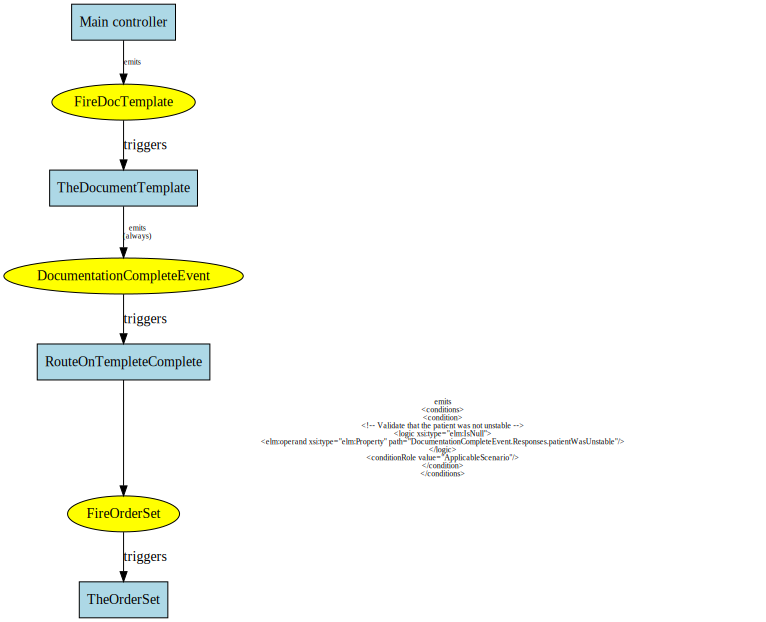
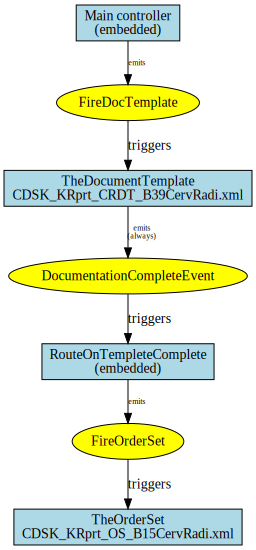
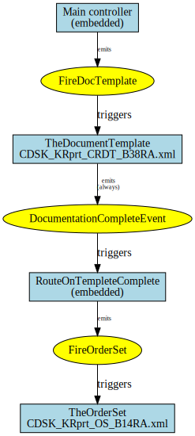
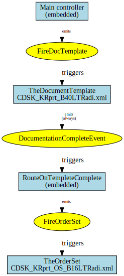

Spot Check Report
Summary information extracted from KNART XML documents within the repository.
Table of Contents
Composites
- Cardiology: Electrophysiology consult
- Chest Pain (CP) / Coronary Artery Disease (CAD)
- Neurosurgery Radiculopathy (Cervical)
- Rheumatology: Rheumatoid Arthritis
- Neurosurgery Radiculopathy (Lumbar Thoracic)
KNARTs
- Cardiology: Electrophysiology (EP): Other Order Set
- Cardiology: EP Arrhythimias-Bradycardia-Syncope/Presyncope Order Set
- Cardiology: EP Arrhythimias-Atrial Fibrillation-Atrial Flutter Order Set
- Cardiology: Electrophysiology (EP) Supraventricular Tachycardia (SVT) Order Set
- Cardiology: Electrophysiology (EP) Documentation Template
- Cardiology: Electrophysiology (EP): Other Order Set
- Cardiology: Electrophysiology (EP) Documentation Template
- Cardiology: Venous Thromboembolism (VTE) Prophylaxis Order Set
- Women's Health: Reproductive Health Rule
- Women's Health: Reproductive Health Documentation Template
- Mental Health: Military Sexual Trauma Documentation Template
- General E-Consult Documentation Template
- Cardiology: Pre-Op Documentation Template
- Cardiology: Pre-Op Risk Assessment Documentation Template
- Cardiology: Pre-Cardiac Catheterization Order Set
- Cardiology: Post-Cardiac Catheterization Order Set
- Cardiology: Cardiac Catheterization Documentation Template
- Women's Health: Cervical Cancer Screening Documentation Template
- Women's Health: Cervical Cancer Screening Rule
- Chest Pain (CP) / Coronary Artery Disease (CAD) Order Set
- Chest Pain (CP) / Coronary Artery Disease (CAD) Documentation Template
- Electrophysiology (EP) Pacemaker/Implantable Cardioverter-defibrillator (ICD) Follow Up Order Set
- Electrophysiology (EP) Pacemaker/Implantable Cardioverter-defibrillator (ICD) Generator Change Order Set
- Electrophysiology (EP) Primary Prevention Implantable Cardioverter-defibrillator (ICD) Order Set
- Neurosurgery: Radiculopathy (Cervical) Order Set
- Neurosurgery: Radiculopathy (Cervical) Documentation Template
- Primary Care: Family Health History Documentation Template
- Cardiology: Admission Orders - Heart Failure Order Set
- Rheumatology: Rheumatoid Arthritis Order Set
- Rheumatology: Rheumatoid Arthritis Consult Request Documentation Template
- Gastroenterology: Hepatitis C - Elbasvir/Grazoprevir Order Set
- Mental Health: Suicide Risk Assessment Documentation Template
- Mental Health: Positive Suicide Risk Screening Order Set
- Women's Health: Breast Cancer Screening Rule
- Women's Health: Breast Cancer Screening Documentation Template
- Women's Health: Breast Cancer Screening Order Set
- Mental Health: Homelessness Documentation Template
- Primary Care: Anaphylaxis Treatment Protocol Order Set
- Radiculopathy (Lumbar/Thoracic) Order Set
- Neurosurgery: Radiculopathy (Lumbar/Thoracic) Documentation Template
- Primary Care: Failed Visits Rule
- Primary Care: Failed or Delayed Consults Rule
- Mental Health: Iraq & Afghanistan Post-Deployment Screen - Reminder to Perform Screening Rule
- Mental Health: Iraq & Afghan Post-Deployment Screen Order Set
- Panic Laboratory Value Alerts Rule
- Primary Care: Abnormal Laboratory Value Alert Rule
- Primary Care: Abnormal Laboratory Value Alert Rule
- Rheumatology: Psoriatic Arthritis Order Set
- Women's Health: Osteoporosis Screening Order Set
- Women's Health: Osteoporosis Screening Documentation Template
- Women's Health: Osteoporosis Screening Rule
- Neurology: Traumatic Brain Injury (TBI) - Polytrauma Interdisciplinary Rehab Clinic Order Set
- Neurology: Traumatic Brain Injury (TBI) - Polytrauma Interdisciplinary Rehab Clinic Order Set
- Neurology: Traumatic Brain Injury (TBI) - Polytrauma Interdisciplinary Rehab Clinic Order Set
- Neurology: Traumatic Brain Injury (TBI) Screening Rule
- Endocrinology: Hypoglycemia Order Set
- Endocrinology: Hypoglycemia Rule
- Women's Health: Diagnostic Breast Imaging Order Set
- Women's Health: Diagnostic Breast Imaging
- Gastroenterology: Colorectal Cancer Risk - Average risk screening Order Set
- Gastroenterology: Colorectal Cancer Risk – Family history of colon cancer, Colon Cancer Syndrome, or Advanced Adenoma Order Set
- Gastroenterology: Hepatitis C - Elbasvir/Grazoprevir Order Set
- Gastroenterology: Colorectal Cancer Risk - Personal history of colon cancer or polyp Order Set
- Gastroenterology: Colorectal Cancer Risk – Fecal Immunochemical Test (FIT) Order Set
- Gastroenterology: Colorectal Cancer Risk– Inflammatory bowel disease Order Set
- Gastroenterology: Colorectal Cancer Risk - Other issues Order Set
- Gastroenterology: Colorectal Cancer Risk – Rectal bleeding, or Positive Screening Test Order Set
- Gastroenterology: Colorectal Cancer Risk - Iron deficiency Order Set
Validations
Cross-Document Consistency
Composites
Cardiology: Electrophysiology consult
Composite
content/cardiology_ep_arrhythmias_devices/b57/CDSK_KRprt_CRCK_B57EP.XML
Metadata Items Section
| Item | Count |
|---|---|
| identifiers | 5 |
| relatedResources | 0 |
| supportingEvidence | 0 |
| applicability | 0 |
| eventHistory | 1 |
| contributions | 0 |
| publishers | 1 |
Artifacts (10)
| Name | Trigger |
|---|---|
|
Main controller (Rule) (embedded) |
|
|
TheDocumentTemplate (Documentation Template) CDSK_KRprt_CRDT_B36EP.xml (B36) |
FireDocTemplate |
|
RouteOnTempleteComplete (Rule) (embedded) |
|
|
TheAtrialFibrillationAndFlutterOrderSet (Order Set) CDSK_KRprt_OS_B6EPAF.xml (B6) |
FireAFandFOrderSet |
|
TheSVTOrderSet (Order Set) CDSK_KVRpt_OS_B7EPSVT.xml (B7) |
FireSVTOrderSet |
|
TheSynBradOrderSet (Order Set) CDSK_KRprt_OS_B8SynBrad.xml (B8) |
FireSynBradOrderSet |
|
ThePrimaryPreventionICDImplantOrderSet (Order Set) CDSK_KRprt_OS_B9EPICDImp.xml (B9) |
FirePrimaryPreventionICDImplantOrderSet |
|
ThePacemakerFollowUpOrderSet (Order Set) CDSK_KRprt_OS_B10EPICDFu.xml (B10) |
FirePacemakerFollowUpOrderSet |
|
ThePMICDGenChngOrderSet (Order Set) CDSK_KRprt_OS_B11EPICDCh.xml (B11) |
FirePacemakerGenChangeOrderSet |
|
TheOtherOrderSet (Order Set) CDSK_KRprt_OSB12EPOther.xml (B12) |
FireOtherOrderSet |
Flow Diagram
../content/cardiology_ep_arrhythmias_devices/b57/CDSK_KRprt_CRCK_B57EP.XML.svg
Chest Pain (CP) / Coronary Artery Disease (CAD)
Composite
content/cardiology_chest_paincad_clinical_white_paper/b56/CDSK_KRprt_CRCK_B56CPCADP.XML
Metadata Items Section
| Item | Count |
|---|---|
| identifiers | 5 |
| relatedResources | 0 |
| supportingEvidence | 0 |
| applicability | 0 |
| eventHistory | 1 |
| contributions | 0 |
| publishers | 1 |
Artifacts (4)
| Name | Trigger |
|---|---|
|
Main controller (Rule) (embedded) |
|
|
TheDocumentTemplate (Documentation Template) CDSK_KRprt_CRDT_B35CPCAD.xml (B36) |
FireDocTemplate |
|
RouteOnTempleteComplete (Rule) (embedded) |
|
|
TheOrderSet (Order Set) CDSK_KRprt_OS_B5CPCAD.xml (B5) |
FireOrderSet |
Flow Diagram
../content/cardiology_chest_paincad_clinical_white_paper/b56/CDSK_KRprt_CRCK_B56CPCADP.XML.svg
Neurosurgery Radiculopathy (Cervical)
Composite
content/neurosurgery_cervical_radiculopathy_clinical_white_paper/b60/CDSK_KRprt_CRCK_B60CervRadi.xml
Metadata Items Section
| Item | Count |
|---|---|
| identifiers | 5 |
| relatedResources | 0 |
| supportingEvidence | 0 |
| applicability | 0 |
| eventHistory | 1 |
| contributions | 0 |
| publishers | 1 |
Artifacts (4)
| Name | Trigger |
|---|---|
|
Main controller (Rule) (embedded) |
|
|
TheDocumentTemplate (Documentation Template) CDSK_KRprt_CRDT_B39CervRadi.xml (B40) |
FireDocTemplate |
|
RouteOnTempleteComplete (Rule) (embedded) |
|
|
TheOrderSet (Order Set) CDSK_KRprt_OS_B15CervRadi.xml (B15) |
FireOrderSet |
Flow Diagram
../content/neurosurgery_cervical_radiculopathy_clinical_white_paper/b60/CDSK_KRprt_CRCK_B60CervRadi.xml.svg
Rheumatology: Rheumatoid Arthritis
Composite
content/rheumatology_rheumatoid_arthritis/b59/CDSK_KRprt_CRCK_B59RA.XML
Metadata Items Section
| Item | Count |
|---|---|
| identifiers | 5 |
| relatedResources | 0 |
| supportingEvidence | 0 |
| applicability | 0 |
| eventHistory | 1 |
| contributions | 0 |
| publishers | 1 |
Artifacts (4)
| Name | Trigger |
|---|---|
|
Main controller (Rule) (embedded) |
|
|
TheDocumentTemplate (Documentation Template) CDSK_KRprt_CRDT_B38RA.xml (B38) |
FireDocTemplate |
|
RouteOnTempleteComplete (Rule) (embedded) |
|
|
TheOrderSet (Order Set) CDSK_KRprt_OS_B14RA.xml (B14) |
FireOrderSet |
Flow Diagram
../content/rheumatology_rheumatoid_arthritis/b59/CDSK_KRprt_CRCK_B59RA.XML.svg
Neurosurgery Radiculopathy (Lumbar Thoracic)
Composite
content/neurosurgery_lumbarthoracic_radiculopathy/b61/CDSK_KRprt_CRCK_B61LTRadi.xml
Metadata Items Section
| Item | Count |
|---|---|
| identifiers | 5 |
| relatedResources | 0 |
| supportingEvidence | 0 |
| applicability | 0 |
| eventHistory | 1 |
| contributions | 0 |
| publishers | 1 |
Artifacts (4)
| Name | Trigger |
|---|---|
|
Main controller (Rule) (embedded) |
|
|
TheDocumentTemplate (Documentation Template) CDSK_KRprt_B40LTRadi.xml (B40) |
FireDocTemplate |
|
RouteOnTempleteComplete (Rule) (embedded) |
|
|
TheOrderSet (Order Set) CDSK_KRprt_OS_B16LTRadi.xml (B16) |
FireOrderSet |
Flow Diagram
../content/neurosurgery_lumbarthoracic_radiculopathy/b61/CDSK_KRprt_CRCK_B61LTRadi.xml.svg
KNARTs
Cardiology: Electrophysiology (EP): Other Order Set
Order Set
content/cardiology_ep_arrhythmias_devices/b12/CDSK_KRprt_OS_B12EPOther.xml
Metadata Items Section
| Item | Count |
|---|---|
| identifiers | 3 |
| relatedResources | 3 |
| supportingEvidence | 21 |
| applicability | 5 |
| eventHistory | 8 |
| contributions | 3 |
| publishers | 1 |
Cardiology: EP Arrhythimias-Bradycardia-Syncope/Presyncope Order Set
Order Set
content/cardiology_ep_arrhythmias_devices/b8/CDSK_KRprt_OS_B8EPSynBrad.xml
Metadata Items Section
| Item | Count |
|---|---|
| identifiers | 3 |
| relatedResources | 4 |
| supportingEvidence | 21 |
| applicability | 5 |
| eventHistory | 4 |
| contributions | 3 |
| publishers | 1 |
Cardiology: EP Arrhythimias-Atrial Fibrillation-Atrial Flutter Order Set
Order Set
content/cardiology_ep_arrhythmias_devices/b6/CDSK_KRprt_OS_B6EPAF.XML
Metadata Items Section
| Item | Count |
|---|---|
| identifiers | 3 |
| relatedResources | 3 |
| supportingEvidence | 21 |
| applicability | 5 |
| eventHistory | 5 |
| contributions | 3 |
| publishers | 1 |
Cardiology: Electrophysiology (EP) Supraventricular Tachycardia (SVT) Order Set
Order Set
content/cardiology_ep_arrhythmias_devices/b7/CDSK_KRprt_OS_B7EPSVT.XML
Metadata Items Section
| Item | Count |
|---|---|
| identifiers | 3 |
| relatedResources | 4 |
| supportingEvidence | 21 |
| applicability | 5 |
| eventHistory | 4 |
| contributions | 3 |
| publishers | 1 |
Cardiology: Electrophysiology (EP) Documentation Template
Documentation Template
content/cardiology_ep_arrhythmias_devices/b36/CDSK_KRprt_CRDT_B36EP.XML
Metadata Items Section
| Item | Count |
|---|---|
| identifiers | 3 |
| relatedResources | 3 |
| supportingEvidence | 21 |
| applicability | 5 |
| eventHistory | 7 |
| contributions | 3 |
| publishers | 1 |
Cardiology: Electrophysiology (EP): Other Order Set
Order Set
content/cardiology_ep_arrhythmias_devices/b12/20180507REVISED-CDSK_KRprt_OS_B12EPOther.xml
Metadata Items Section
| Item | Count |
|---|---|
| identifiers | 3 |
| relatedResources | 3 |
| supportingEvidence | 21 |
| applicability | 5 |
| eventHistory | 8 |
| contributions | 3 |
| publishers | 1 |
Cardiology: Electrophysiology (EP) Documentation Template
Documentation Template
content/cardiology_ep_arrhythmias_devices/b36/20180507REVISED-CDSK_KRprt_CRDT_B36EP.xml
Metadata Items Section
| Item | Count |
|---|---|
| identifiers | 3 |
| relatedResources | 3 |
| supportingEvidence | 21 |
| applicability | 5 |
| eventHistory | 7 |
| contributions | 3 |
| publishers | 1 |
Cardiology: Venous Thromboembolism (VTE) Prophylaxis Order Set
Order Set
content/cardiology_vte_clinical_white_paper/o25/CDSK_KRprt_OS_O25VTE.XML
Metadata Items Section
| Item | Count |
|---|---|
| identifiers | 3 |
| relatedResources | 5 |
| supportingEvidence | 17 |
| applicability | 5 |
| eventHistory | 4 |
| contributions | 5 |
| publishers | 1 |
Women's Health: Reproductive Health Rule
Rule
content/womens_health_reproductive_health/o10/CDSK_KRprt_ECA_O10ReprodHlth.xml
Metadata Items Section
| Item | Count |
|---|---|
| identifiers | 3 |
| relatedResources | 3 |
| supportingEvidence | 22 |
| applicability | 4 |
| eventHistory | 3 |
| contributions | 3 |
| publishers | 1 |
Women's Health: Reproductive Health Documentation Template
Documentation Template
content/womens_health_reproductive_health/b54/CDSK_KRprt_SADT_B54ReprodHlth.xml
Metadata Items Section
| Item | Count |
|---|---|
| identifiers | 3 |
| relatedResources | 3 |
| supportingEvidence | 22 |
| applicability | 4 |
| eventHistory | 3 |
| contributions | 3 |
| publishers | 1 |
Mental Health: Military Sexual Trauma Documentation Template
Documentation Template
content/mental_health_military_sexual_trauma/b49/CDSK_KRprt_SADT_B49MHMST.XML
Metadata Items Section
| Item | Count |
|---|---|
| identifiers | 3 |
| relatedResources | 5 |
| supportingEvidence | 5 |
| applicability | 2 |
| eventHistory | 3 |
| contributions | 1 |
| publishers | 1 |
General E-Consult Documentation Template
Documentation Template
content/primary_care_general_econsult/b47/CDSK_KRprt_CRDT_B47EConsult.xml
Metadata Items Section
| Item | Count |
|---|---|
| identifiers | 3 |
| relatedResources | 3 |
| supportingEvidence | 2 |
| applicability | 5 |
| eventHistory | 4 |
| contributions | 5 |
| publishers | 1 |
Cardiology: Pre-Op Documentation Template
Documentation Template
content/cardiology_preop_risk_assessment/b13/CDSK_KRprt_OS_B13CardPreOp.xml
Metadata Items Section
| Item | Count |
|---|---|
| identifiers | 3 |
| relatedResources | 4 |
| supportingEvidence | 8 |
| applicability | 1 |
| eventHistory | 4 |
| contributions | 3 |
| publishers | 1 |
Cardiology: Pre-Op Risk Assessment Documentation Template
Documentation Template
content/cardiology_preop_risk_assessment/b37/CDSK_KRprt_CRDT_B37CardPreOp.xml
Metadata Items Section
| Item | Count |
|---|---|
| identifiers | 3 |
| relatedResources | 4 |
| supportingEvidence | 9 |
| applicability | 4 |
| eventHistory | 5 |
| contributions | 3 |
| publishers | 1 |
Cardiology: Pre-Cardiac Catheterization Order Set
Order Set
content/cardiology_catheterization/o18/CDSK_KRprt_OS_O18PreCardCath.xml
Metadata Items Section
| Item | Count |
|---|---|
| identifiers | 3 |
| relatedResources | 3 |
| supportingEvidence | 12 |
| applicability | 7 |
| eventHistory | 5 |
| contributions | 3 |
| publishers | 1 |
Cardiology: Post-Cardiac Catheterization Order Set
Order Set
content/cardiology_catheterization/o19/CDSK_KRprt_OS_O19PostCardCath.xml
Metadata Items Section
| Item | Count |
|---|---|
| identifiers | 3 |
| relatedResources | 3 |
| supportingEvidence | 12 |
| applicability | 7 |
| eventHistory | 5 |
| contributions | 3 |
| publishers | 1 |
Cardiology: Cardiac Catheterization Documentation Template
Documentation Template
content/cardiology_catheterization/o30/CDSK_KRprt_SADT_O30CardCath.xml
Metadata Items Section
| Item | Count |
|---|---|
| identifiers | 3 |
| relatedResources | 4 |
| supportingEvidence | 12 |
| applicability | 7 |
| eventHistory | 5 |
| contributions | 3 |
| publishers | 1 |
Women's Health: Cervical Cancer Screening Documentation Template
Documentation Template
content/womens_health_cervical_cancer_screening/o22/CDSK_KRprt_SADT_O22CervCan.xml
Metadata Items Section
| Item | Count |
|---|---|
| identifiers | 3 |
| relatedResources | 3 |
| supportingEvidence | 7 |
| applicability | 5 |
| eventHistory | 3 |
| contributions | 3 |
| publishers | 1 |
Women's Health: Cervical Cancer Screening Rule
Rule
content/womens_health_cervical_cancer_screening/o5/CDSK_KRprt_ECA_O5CervCan.xml
Metadata Items Section
| Item | Count |
|---|---|
| identifiers | 3 |
| relatedResources | 3 |
| supportingEvidence | 7 |
| applicability | 5 |
| eventHistory | 3 |
| contributions | 3 |
| publishers | 1 |
Chest Pain (CP) / Coronary Artery Disease (CAD) Order Set
Order Set
content/cardiology_chest_paincad_clinical_white_paper/b5/CDSK_KRprt_OS_B5CPCAD.XML
Metadata Items Section
| Item | Count |
|---|---|
| identifiers | 3 |
| relatedResources | 3 |
| supportingEvidence | 13 |
| applicability | 5 |
| eventHistory | 5 |
| contributions | 3 |
| publishers | 1 |
Chest Pain (CP) / Coronary Artery Disease (CAD) Documentation Template
Documentation Template
content/cardiology_chest_paincad_clinical_white_paper/b35/CDSK_KRprt_CRDT_B35CPCAD.XML
Metadata Items Section
| Item | Count |
|---|---|
| identifiers | 3 |
| relatedResources | 4 |
| supportingEvidence | 12 |
| applicability | 5 |
| eventHistory | 4 |
| contributions | 3 |
| publishers | 1 |
Electrophysiology (EP) Pacemaker/Implantable Cardioverter-defibrillator (ICD) Follow Up Order Set
Order Set
content/cardiology_electrophysiology_ep_implanted_cardiac_device/b10/CDSK_KRprt_OS_B10EPICDFu.xml
Metadata Items Section
| Item | Count |
|---|---|
| identifiers | 3 |
| relatedResources | 3 |
| supportingEvidence | 6 |
| applicability | 4 |
| eventHistory | 3 |
| contributions | 3 |
| publishers | 1 |
Electrophysiology (EP) Pacemaker/Implantable Cardioverter-defibrillator (ICD) Generator Change Order Set
Order Set
content/cardiology_electrophysiology_ep_implanted_cardiac_device/b11/CDSK_KRprt_OS_B11EPICDCh.xml
Metadata Items Section
| Item | Count |
|---|---|
| identifiers | 3 |
| relatedResources | 3 |
| supportingEvidence | 6 |
| applicability | 4 |
| eventHistory | 3 |
| contributions | 3 |
| publishers | 1 |
Electrophysiology (EP) Primary Prevention Implantable Cardioverter-defibrillator (ICD) Order Set
Order Set
content/cardiology_electrophysiology_ep_implanted_cardiac_device/b9/CDSK_KRprt_OS_B9EPICDImp.xml
Metadata Items Section
| Item | Count |
|---|---|
| identifiers | 3 |
| relatedResources | 3 |
| supportingEvidence | 6 |
| applicability | 4 |
| eventHistory | 3 |
| contributions | 3 |
| publishers | 1 |
Neurosurgery: Radiculopathy (Cervical) Order Set
Order Set
content/neurosurgery_cervical_radiculopathy_clinical_white_paper/b15/CDSK_KRprt_OS_B15CervRadi.xml
Metadata Items Section
| Item | Count |
|---|---|
| identifiers | 3 |
| relatedResources | 3 |
| supportingEvidence | 8 |
| applicability | 1 |
| eventHistory | 4 |
| contributions | 3 |
| publishers | 1 |
Neurosurgery: Radiculopathy (Cervical) Documentation Template
Documentation Template
content/neurosurgery_cervical_radiculopathy_clinical_white_paper/b39/CDSK_KRprt_CRDT_B39CervRadi.xml
Metadata Items Section
| Item | Count |
|---|---|
| identifiers | 3 |
| relatedResources | 3 |
| supportingEvidence | 9 |
| applicability | 3 |
| eventHistory | 4 |
| contributions | 3 |
| publishers | 1 |
Primary Care: Family Health History Documentation Template
Documentation Template
content/primary_care__family_health_history/o31/CDSK_KRprt_SADT_O31FHHist.xml
Metadata Items Section
| Item | Count |
|---|---|
| identifiers | 3 |
| relatedResources | 3 |
| supportingEvidence | 3 |
| applicability | 4 |
| eventHistory | 3 |
| contributions | 5 |
| publishers | 1 |
Cardiology: Admission Orders - Heart Failure Order Set
Order Set
content/cardiology_admission_orders_heart_failure/bo24/CDSK_KRprt_OS_O24AdOrdHFail.xml
Metadata Items Section
| Item | Count |
|---|---|
| identifiers | 3 |
| relatedResources | 3 |
| supportingEvidence | 17 |
| applicability | 4 |
| eventHistory | 4 |
| contributions | 3 |
| publishers | 1 |
Rheumatology: Rheumatoid Arthritis Order Set
Order Set
content/rheumatology_rheumatoid_arthritis/b14/CDSK_KRprt_OS_B14RA.XML
Metadata Items Section
| Item | Count |
|---|---|
| identifiers | 3 |
| relatedResources | 3 |
| supportingEvidence | 2 |
| applicability | 3 |
| eventHistory | 5 |
| contributions | 2 |
| publishers | 1 |
Rheumatology: Rheumatoid Arthritis Consult Request Documentation Template
Documentation Template
content/rheumatology_rheumatoid_arthritis/b38/20180515REVISED-CDSK_KRprt_CRDT_B38RA.xml
Metadata Items Section
| Item | Count |
|---|---|
| identifiers | 3 |
| relatedResources | 3 |
| supportingEvidence | 2 |
| applicability | 3 |
| eventHistory | 4 |
| contributions | 2 |
| publishers | 1 |
Gastroenterology: Hepatitis C - Elbasvir/Grazoprevir Order Set
Order Set
content/gastroenterology_hepatitis_c/b28/CDSK_KRprt_OS_B28HepCElbGraz.xml
Metadata Items Section
| Item | Count |
|---|---|
| identifiers | 3 |
| relatedResources | 13 |
| supportingEvidence | 11 |
| applicability | 6 |
| eventHistory | 4 |
| contributions | 12 |
| publishers | 1 |
Mental Health: Suicide Risk Assessment Documentation Template
Documentation Template
content/mental_health_suicidality/b52/CDSK_KRprt_SADT_B52MHSRA.XML
Metadata Items Section
| Item | Count |
|---|---|
| identifiers | 3 |
| relatedResources | 3 |
| supportingEvidence | 14 |
| applicability | 4 |
| eventHistory | 4 |
| contributions | 4 |
| publishers | 1 |
Mental Health: Positive Suicide Risk Screening Order Set
Order Set
content/mental_health_suicidality/o20/CDSK_KRprt_OS_O20MHPosSRScr.xml
Metadata Items Section
| Item | Count |
|---|---|
| identifiers | 3 |
| relatedResources | 3 |
| supportingEvidence | 9 |
| applicability | 4 |
| eventHistory | 4 |
| contributions | 4 |
| publishers | 1 |
Women's Health: Breast Cancer Screening Rule
Rule
content/womens_health_breast_cancer_screening/o4/CDSK_KRprt_ECA_O4BCS.XML
Metadata Items Section
| Item | Count |
|---|---|
| identifiers | 3 |
| relatedResources | 3 |
| supportingEvidence | 4 |
| applicability | 5 |
| eventHistory | 3 |
| contributions | 3 |
| publishers | 1 |
Women's Health: Breast Cancer Screening Documentation Template
Documentation Template
content/womens_health_breast_cancer_screening/b53/CDSK_KRprt_SADT_B53BCS.XML
Metadata Items Section
| Item | Count |
|---|---|
| identifiers | 3 |
| relatedResources | 3 |
| supportingEvidence | 4 |
| applicability | 4 |
| eventHistory | 4 |
| contributions | 3 |
| publishers | 1 |
Women's Health: Breast Cancer Screening Order Set
Order Set
content/womens_health_breast_cancer_screening/b31/CDSK_KRpt_OS_B31BCS.XML
Metadata Items Section
| Item | Count |
|---|---|
| identifiers | 3 |
| relatedResources | 3 |
| supportingEvidence | 4 |
| applicability | 4 |
| eventHistory | 3 |
| contributions | 3 |
| publishers | 1 |
Mental Health: Homelessness Documentation Template
Documentation Template
content/mental_health_homelessness/b48/CDSK_KRprt_SADT_B48MHHomeless.xml
Metadata Items Section
| Item | Count |
|---|---|
| identifiers | 3 |
| relatedResources | 3 |
| supportingEvidence | 8 |
| applicability | 5 |
| eventHistory | 4 |
| contributions | 2 |
| publishers | 1 |
Primary Care: Anaphylaxis Treatment Protocol Order Set
Order Set
content/primary_care_anaphylaxis/o16/CDSK_KRprt_OS_O16Anaphylax.xml
Metadata Items Section
| Item | Count |
|---|---|
| identifiers | 3 |
| relatedResources | 3 |
| supportingEvidence | 3 |
| applicability | 5 |
| eventHistory | 4 |
| contributions | 6 |
| publishers | 1 |
Radiculopathy (Lumbar/Thoracic) Order Set
Order Set
content/neurosurgery_lumbarthoracic_radiculopathy/b16/CDSK_KRprt_OS_B16LTRadi.xml
Metadata Items Section
| Item | Count |
|---|---|
| identifiers | 3 |
| relatedResources | 3 |
| supportingEvidence | 9 |
| applicability | 5 |
| eventHistory | 4 |
| contributions | 3 |
| publishers | 1 |
Neurosurgery: Radiculopathy (Lumbar/Thoracic) Documentation Template
Documentation Template
content/neurosurgery_lumbarthoracic_radiculopathy/b40/CDSK_KRprt_B40LTRadi.xml
Metadata Items Section
| Item | Count |
|---|---|
| identifiers | 3 |
| relatedResources | 3 |
| supportingEvidence | 9 |
| applicability | 9 |
| eventHistory | 4 |
| contributions | 3 |
| publishers | 1 |
Primary Care: Failed Visits Rule
Rule
content/primary_care_failed_visits_and_failed_or_delayed_consults/o6/CDSK_KRprt_ECA_O6FailVisit.xml
Metadata Items Section
| Item | Count |
|---|---|
| identifiers | 3 |
| relatedResources | 3 |
| supportingEvidence | 5 |
| applicability | 1 |
| eventHistory | 4 |
| contributions | 4 |
| publishers | 1 |
Primary Care: Failed or Delayed Consults Rule
Rule
content/primary_care_failed_visits_and_failed_or_delayed_consults/o7/CDSK_KRprt_ECA_O7FailCon.xml
Metadata Items Section
| Item | Count |
|---|---|
| identifiers | 3 |
| relatedResources | 3 |
| supportingEvidence | 5 |
| applicability | 3 |
| eventHistory | 4 |
| contributions | 4 |
| publishers | 1 |
Mental Health: Iraq & Afghanistan Post-Deployment Screen - Reminder to Perform Screening Rule
Rule
content/mental_health_postdeployment/b4/CDSK_KRprt_ECA_B4IraqAfghanPD.XML
Metadata Items Section
| Item | Count |
|---|---|
| identifiers | 3 |
| relatedResources | 3 |
| supportingEvidence | 6 |
| applicability | 6 |
| eventHistory | 4 |
| contributions | 4 |
| publishers | 1 |
Mental Health: Iraq & Afghan Post-Deployment Screen Order Set
Order Set
content/mental_health_postdeployment/o13/CDSK_KRprt_OS_O13IraqAfghanPD.xml
Metadata Items Section
| Item | Count |
|---|---|
| identifiers | 3 |
| relatedResources | 3 |
| supportingEvidence | 6 |
| applicability | 5 |
| eventHistory | 4 |
| contributions | 4 |
| publishers | 1 |
Panic Laboratory Value Alerts Rule
Rule
content/primary_care_abnormal_and_panic_lab_values/o2/CDSK_KRprt_ECA_O2AbPanLabVal.xml
Metadata Items Section
| Item | Count |
|---|---|
| identifiers | 3 |
| relatedResources | 3 |
| supportingEvidence | 4 |
| applicability | 4 |
| eventHistory | 3 |
| contributions | 5 |
| publishers | 1 |
Primary Care: Abnormal Laboratory Value Alert Rule
Rule
content/primary_care_abnormal_and_panic_lab_values/o1/CDSK_KRprt_ECA_O1AbLabVal.xml
Metadata Items Section
| Item | Count |
|---|---|
| identifiers | 3 |
| relatedResources | 3 |
| supportingEvidence | 4 |
| applicability | 4 |
| eventHistory | 6 |
| contributions | 5 |
| publishers | 1 |
Primary Care: Abnormal Laboratory Value Alert Rule
Rule
content/primary_care_abnormal_and_panic_lab_values/o1/20180507REVISED-CDSK_KRprt_ECA_O1AbLabVal.xml
Metadata Items Section
| Item | Count |
|---|---|
| identifiers | 3 |
| relatedResources | 3 |
| supportingEvidence | 4 |
| applicability | 4 |
| eventHistory | 6 |
| contributions | 5 |
| publishers | 1 |
Rheumatology: Psoriatic Arthritis Order Set
Order Set
content/rheumatology_psoriatic_arthritis/o23/CDSK_KRprt_OS_O23Psoriatic.xml
Metadata Items Section
| Item | Count |
|---|---|
| identifiers | 3 |
| relatedResources | 7 |
| supportingEvidence | 19 |
| applicability | 3 |
| eventHistory | 3 |
| contributions | 2 |
| publishers | 1 |
Women's Health: Osteoporosis Screening Order Set
Order Set
content/womens_health_osteoporosis_screening/o26/CDSK_KRprt_OS_O26Osteo.xml
Metadata Items Section
| Item | Count |
|---|---|
| identifiers | 3 |
| relatedResources | 3 |
| supportingEvidence | 5 |
| applicability | 5 |
| eventHistory | 4 |
| contributions | 3 |
| publishers | 1 |
Women's Health: Osteoporosis Screening Documentation Template
Documentation Template
content/womens_health_osteoporosis_screening/b50/CDSK_KRprt_SADT_B50Osteo.xml
Metadata Items Section
| Item | Count |
|---|---|
| identifiers | 3 |
| relatedResources | 3 |
| supportingEvidence | 5 |
| applicability | 6 |
| eventHistory | 4 |
| contributions | 3 |
| publishers | 1 |
Women's Health: Osteoporosis Screening Rule
Rule
content/womens_health_osteoporosis_screening/o8/CDSK_KRprt_ECA_O8Osteo.xml
Metadata Items Section
| Item | Count |
|---|---|
| identifiers | 3 |
| relatedResources | 3 |
| supportingEvidence | 5 |
| applicability | 6 |
| eventHistory | 3 |
| contributions | 3 |
| publishers | 1 |
Neurology: Traumatic Brain Injury (TBI) - Polytrauma Interdisciplinary Rehab Clinic Order Set
Order Set
content/neurology_tbi_screening/b19/CDSK_KRprt_OS_B17B18B19TBI.xml
Metadata Items Section
| Item | Count |
|---|---|
| identifiers | 3 |
| relatedResources | 3 |
| supportingEvidence | 2 |
| applicability | 6 |
| eventHistory | 5 |
| contributions | 8 |
| publishers | 1 |
Neurology: Traumatic Brain Injury (TBI) - Polytrauma Interdisciplinary Rehab Clinic Order Set
Order Set
content/neurology_tbi_screening/b17/CDSK_KRprt_OS_B17B18B19TBI.xml
Metadata Items Section
| Item | Count |
|---|---|
| identifiers | 3 |
| relatedResources | 3 |
| supportingEvidence | 2 |
| applicability | 6 |
| eventHistory | 5 |
| contributions | 8 |
| publishers | 1 |
Neurology: Traumatic Brain Injury (TBI) - Polytrauma Interdisciplinary Rehab Clinic Order Set
Order Set
content/neurology_tbi_screening/b18/CDSK_KRprt_OS_B17B18B19TBI.xml
Metadata Items Section
| Item | Count |
|---|---|
| identifiers | 3 |
| relatedResources | 3 |
| supportingEvidence | 2 |
| applicability | 6 |
| eventHistory | 5 |
| contributions | 8 |
| publishers | 1 |
Neurology: Traumatic Brain Injury (TBI) Screening Rule
Rule
content/neurology_tbi_screening/b2/CDSK_KRprt_ECA_B2TBIScreen.xml
Metadata Items Section
| Item | Count |
|---|---|
| identifiers | 3 |
| relatedResources | 3 |
| supportingEvidence | 2 |
| applicability | 6 |
| eventHistory | 4 |
| contributions | 8 |
| publishers | 1 |
Endocrinology: Hypoglycemia Order Set
Order Set
content/endocrinology_hypoglycemia/b33/CDSK_KRprt_OS_B33Hypogly.xml
Metadata Items Section
| Item | Count |
|---|---|
| identifiers | 3 |
| relatedResources | 3 |
| supportingEvidence | 9 |
| applicability | 7 |
| eventHistory | 4 |
| contributions | 2 |
| publishers | 1 |
Endocrinology: Hypoglycemia Rule
Rule
content/endocrinology_hypoglycemia/b3/CDSK_KRprt_ECA_B3Hypogly.xml
Metadata Items Section
| Item | Count |
|---|---|
| identifiers | 3 |
| relatedResources | 3 |
| supportingEvidence | 9 |
| applicability | 8 |
| eventHistory | 4 |
| contributions | 2 |
| publishers | 1 |
Women's Health: Diagnostic Breast Imaging Order Set
Order Set
content/womens_health_diagnostic_breast_imaging/b32/CDSK_KRprt_OS_B32DxBI.xml
Metadata Items Section
| Item | Count |
|---|---|
| identifiers | 3 |
| relatedResources | 3 |
| supportingEvidence | 8 |
| applicability | 6 |
| eventHistory | 4 |
| contributions | 3 |
| publishers | 1 |
Women's Health: Diagnostic Breast Imaging
Rule
content/womens_health_diagnostic_breast_imaging/o9/CDSK_KRprt_ECA_O9DxBI.xml
Metadata Items Section
| Item | Count |
|---|---|
| identifiers | 3 |
| relatedResources | 3 |
| supportingEvidence | 8 |
| applicability | 7 |
| eventHistory | 4 |
| contributions | 3 |
| publishers | 1 |
Gastroenterology: Colorectal Cancer Risk - Average risk screening Order Set
Order Set
content/colonoscopy/b26/CDSK_KRprt_OS_B26ColosRskScr.xml
Metadata Items Section
| Item | Count |
|---|---|
| identifiers | 3 |
| relatedResources | 3 |
| supportingEvidence | 10 |
| applicability | 4 |
| eventHistory | 4 |
| contributions | 4 |
| publishers | 1 |
Gastroenterology: Colorectal Cancer Risk – Family history of colon cancer, Colon Cancer Syndrome, or Advanced Adenoma Order Set
Order Set
content/colonoscopy/b21/CDSK_KRprt_OS_B21ColosFH.xml
Metadata Items Section
| Item | Count |
|---|---|
| identifiers | 3 |
| relatedResources | 3 |
| supportingEvidence | 10 |
| applicability | 6 |
| eventHistory | 4 |
| contributions | 4 |
| publishers | 1 |
Gastroenterology: Hepatitis C - Elbasvir/Grazoprevir Order Set
Order Set
content/colonoscopy/b28/CDSK_KRprt_OS_B28HepCElbGraz.xml
Metadata Items Section
| Item | Count |
|---|---|
| identifiers | 3 |
| relatedResources | 13 |
| supportingEvidence | 11 |
| applicability | 6 |
| eventHistory | 4 |
| contributions | 12 |
| publishers | 1 |
Gastroenterology: Colorectal Cancer Risk - Personal history of colon cancer or polyp Order Set
Order Set
content/colonoscopy/b20/CDSK_KRprt_OS_B20ColosPH.xml
Metadata Items Section
| Item | Count |
|---|---|
| identifiers | 3 |
| relatedResources | 3 |
| supportingEvidence | 10 |
| applicability | 8 |
| eventHistory | 4 |
| contributions | 4 |
| publishers | 1 |
Gastroenterology: Colorectal Cancer Risk – Fecal Immunochemical Test (FIT) Order Set
Order Set
content/colonoscopy/b27/CDSK_KRprt_OS_B27ColosFIT.xml
Metadata Items Section
| Item | Count |
|---|---|
| identifiers | 3 |
| relatedResources | 3 |
| supportingEvidence | 10 |
| applicability | 5 |
| eventHistory | 4 |
| contributions | 4 |
| publishers | 1 |
Gastroenterology: Colorectal Cancer Risk– Inflammatory bowel disease Order Set
Order Set
content/colonoscopy/b22/CDSK_KRprt_OS_B22IBDSurv.xml
Metadata Items Section
| Item | Count |
|---|---|
| identifiers | 3 |
| relatedResources | 3 |
| supportingEvidence | 10 |
| applicability | 5 |
| eventHistory | 4 |
| contributions | 4 |
| publishers | 1 |
Gastroenterology: Colorectal Cancer Risk - Other issues Order Set
Order Set
content/colonoscopy/b25/CDSK_KRprt_OS_B25ColosOther.xml
Metadata Items Section
| Item | Count |
|---|---|
| identifiers | 3 |
| relatedResources | 3 |
| supportingEvidence | 10 |
| applicability | 4 |
| eventHistory | 4 |
| contributions | 4 |
| publishers | 1 |
Gastroenterology: Colorectal Cancer Risk – Rectal bleeding, or Positive Screening Test Order Set
Order Set
content/colonoscopy/b24/CDSK_KRprt_OS_B24ColosRecBld.xml
Metadata Items Section
| Item | Count |
|---|---|
| identifiers | 3 |
| relatedResources | 3 |
| supportingEvidence | 10 |
| applicability | 6 |
| eventHistory | 4 |
| contributions | 4 |
| publishers | 1 |
Gastroenterology: Colorectal Cancer Risk - Iron deficiency Order Set
Order Set
content/colonoscopy/b23/CDSK_KRprt_OS_B23ColosIDA.xml
Metadata Items Section
| Item | Count |
|---|---|
| identifiers | 3 |
| relatedResources | 3 |
| supportingEvidence | 10 |
| applicability | 6 |
| eventHistory | 4 |
| contributions | 4 |
| publishers | 1 |
XML Validation
| File | Result | Errors | Run At |
|---|---|---|---|
| content/cardiology_ep_arrhythmias_devices/b12/CDSK_KRprt_OS_B12EPOther.xml | valid! | 2018-05-30 11:41:41 -0700 | |
| content/cardiology_ep_arrhythmias_devices/b8/CDSK_KRprt_OS_B8EPSynBrad.xml | valid! | 2018-05-30 11:41:56 -0700 | |
| content/cardiology_ep_arrhythmias_devices/b6/CDSK_KRprt_OS_B6EPAF.XML | valid! | 2018-05-30 11:42:12 -0700 | |
| content/cardiology_ep_arrhythmias_devices/b7/CDSK_KRprt_OS_B7EPSVT.XML | valid! | 2018-05-30 11:42:27 -0700 | |
| content/cardiology_ep_arrhythmias_devices/b36/CDSK_KRprt_CRDT_B36EP.XML | valid! | 2018-05-30 11:42:42 -0700 | |
| content/cardiology_ep_arrhythmias_devices/b12/20180507REVISED-CDSK_KRprt_OS_B12EPOther.xml | valid! | 2018-05-30 11:42:57 -0700 | |
| content/cardiology_ep_arrhythmias_devices/b36/20180507REVISED-CDSK_KRprt_CRDT_B36EP.xml | valid! | 2018-05-30 11:43:13 -0700 | |
| content/cardiology_vte_clinical_white_paper/o25/CDSK_KRprt_OS_O25VTE.XML | valid! | 2018-05-30 11:43:28 -0700 | |
| content/womens_health_reproductive_health/o10/CDSK_KRprt_ECA_O10ReprodHlth.xml | valid! | 2018-05-30 11:43:43 -0700 | |
| content/womens_health_reproductive_health/b54/CDSK_KRprt_SADT_B54ReprodHlth.xml | Validation error | /Users/preston/Developer/git/vha-kbs-knarts/content/womens_health_reproductive_health/b54/CDSK_KRprt_SADT_B54ReprodHlth.xml:22: element relatedResource: Schemas validity error : Element '{urn:hl7-org:knowledgeartifact:r1}relatedResource': This element is not expected. Expected is one of ( {urn:hl7-org:knowledgeartifact:r1}description, {urn:hl7-org:knowledgeartifact:r1}documentation, {urn:hl7-org:knowledgeartifact:r1}relatedResources, {urn:hl7-org:knowledgeartifact:r1}supportingEvidence, {urn:hl7-org:knowledgeartifact:r1}applicability, {urn:hl7-org:knowledgeartifact:r1}keyTerms, {urn:hl7-org:knowledgeartifact:r1}categories, {urn:hl7-org:knowledgeartifact:r1}language, {urn:hl7-org:knowledgeartifact:r1}status ). /Users/preston/Developer/git/vha-kbs-knarts/content/womens_health_reproductive_health/b54/CDSK_KRprt_SADT_B54ReprodHlth.xml fails to validate | 2018-05-30 11:43:59 -0700 |
| content/mental_health_military_sexual_trauma/b49/CDSK_KRprt_SADT_B49MHMST.XML | valid! | 2018-05-30 11:44:14 -0700 | |
| content/primary_care_general_econsult/b47/CDSK_KRprt_CRDT_B47EConsult.xml | valid! | 2018-05-30 11:44:29 -0700 | |
| content/cardiology_preop_risk_assessment/b13/CDSK_KRprt_OS_B13CardPreOp.xml | valid! | 2018-05-30 11:44:45 -0700 | |
| content/cardiology_preop_risk_assessment/b37/CDSK_KRprt_CRDT_B37CardPreOp.xml | valid! | 2018-05-30 11:45:00 -0700 | |
| content/cardiology_catheterization/o18/CDSK_KRprt_OS_O18PreCardCath.xml | valid! | 2018-05-30 11:45:15 -0700 | |
| content/cardiology_catheterization/o19/CDSK_KRprt_OS_O19PostCardCath.xml | valid! | 2018-05-30 11:45:30 -0700 | |
| content/cardiology_catheterization/o30/CDSK_KRprt_SADT_O30CardCath.xml | valid! | 2018-05-30 11:45:46 -0700 | |
| content/womens_health_cervical_cancer_screening/o22/CDSK_KRprt_SADT_O22CervCan.xml | valid! | 2018-05-30 11:46:01 -0700 | |
| content/womens_health_cervical_cancer_screening/o5/CDSK_KRprt_ECA_O5CervCan.xml | valid! | 2018-05-30 11:46:16 -0700 | |
| content/cardiology_chest_paincad_clinical_white_paper/b5/CDSK_KRprt_OS_B5CPCAD.XML | valid! | 2018-05-30 11:46:32 -0700 | |
| content/cardiology_chest_paincad_clinical_white_paper/b35/CDSK_KRprt_CRDT_B35CPCAD.XML | valid! | 2018-05-30 11:46:47 -0700 | |
| content/cardiology_electrophysiology_ep_implanted_cardiac_device/b10/CDSK_KRprt_OS_B10EPICDFu.xml | valid! | 2018-05-30 11:47:03 -0700 | |
| content/cardiology_electrophysiology_ep_implanted_cardiac_device/b11/CDSK_KRprt_OS_B11EPICDCh.xml | valid! | 2018-05-30 11:47:18 -0700 | |
| content/cardiology_electrophysiology_ep_implanted_cardiac_device/b9/CDSK_KRprt_OS_B9EPICDImp.xml | valid! | 2018-05-30 11:47:33 -0700 | |
| content/neurosurgery_cervical_radiculopathy_clinical_white_paper/b15/CDSK_KRprt_OS_B15CervRadi.xml | valid! | 2018-05-30 11:47:48 -0700 | |
| content/neurosurgery_cervical_radiculopathy_clinical_white_paper/b39/CDSK_KRprt_CRDT_B39CervRadi.xml | valid! | 2018-05-30 11:48:04 -0700 | |
| content/primary_care__family_health_history/o31/CDSK_KRprt_SADT_O31FHHist.xml | valid! | 2018-05-30 11:48:19 -0700 | |
| content/cardiology_admission_orders_heart_failure/bo24/CDSK_KRprt_OS_O24AdOrdHFail.xml | valid! | 2018-05-30 11:48:34 -0700 | |
| content/rheumatology_rheumatoid_arthritis/b14/CDSK_KRprt_OS_B14RA.XML | valid! | 2018-05-30 11:48:49 -0700 | |
| content/rheumatology_rheumatoid_arthritis/b38/20180515REVISED-CDSK_KRprt_CRDT_B38RA.xml | valid! | 2018-05-30 11:49:05 -0700 | |
| content/gastroenterology_hepatitis_c/b28/CDSK_KRprt_OS_B28HepCElbGraz.xml | valid! | 2018-05-30 11:49:20 -0700 | |
| content/mental_health_suicidality/b52/CDSK_KRprt_SADT_B52MHSRA.XML | valid! | 2018-05-30 11:49:36 -0700 | |
| content/mental_health_suicidality/o20/CDSK_KRprt_OS_O20MHPosSRScr.xml | valid! | 2018-05-30 11:49:51 -0700 | |
| content/womens_health_breast_cancer_screening/o4/CDSK_KRprt_ECA_O4BCS.XML | valid! | 2018-05-30 11:50:06 -0700 | |
| content/womens_health_breast_cancer_screening/b53/CDSK_KRprt_SADT_B53BCS.XML | valid! | 2018-05-30 11:50:22 -0700 | |
| content/womens_health_breast_cancer_screening/b31/CDSK_KRpt_OS_B31BCS.XML | valid! | 2018-05-30 11:50:37 -0700 | |
| content/mental_health_homelessness/b48/CDSK_KRprt_SADT_B48MHHomeless.xml | valid! | 2018-05-30 11:50:52 -0700 | |
| content/primary_care_anaphylaxis/o16/CDSK_KRprt_OS_O16Anaphylax.xml | valid! | 2018-05-30 11:51:07 -0700 | |
| content/neurosurgery_lumbarthoracic_radiculopathy/b16/CDSK_KRprt_OS_B16LTRadi.xml | valid! | 2018-05-30 11:51:22 -0700 | |
| content/neurosurgery_lumbarthoracic_radiculopathy/b40/CDSK_KRprt_B40LTRadi.xml | valid! | 2018-05-30 11:51:38 -0700 | |
| content/primary_care_failed_visits_and_failed_or_delayed_consults/o6/CDSK_KRprt_ECA_O6FailVisit.xml | valid! | 2018-05-30 11:51:53 -0700 | |
| content/primary_care_failed_visits_and_failed_or_delayed_consults/o7/CDSK_KRprt_ECA_O7FailCon.xml | valid! | 2018-05-30 11:52:09 -0700 | |
| content/mental_health_postdeployment/b4/CDSK_KRprt_ECA_B4IraqAfghanPD.XML | valid! | 2018-05-30 11:52:24 -0700 | |
| content/primary_care_abnormal_and_panic_lab_values/o2/CDSK_KRprt_ECA_O2AbPanLabVal.xml | valid! | 2018-05-30 11:52:39 -0700 | |
| content/primary_care_abnormal_and_panic_lab_values/o1/CDSK_KRprt_ECA_O1AbLabVal.xml | valid! | 2018-05-30 11:52:54 -0700 | |
| content/primary_care_abnormal_and_panic_lab_values/o1/20180507REVISED-CDSK_KRprt_ECA_O1AbLabVal.xml | valid! | 2018-05-30 11:53:10 -0700 | |
| content/rheumatology_psoriatic_arthritis/o23/CDSK_KRprt_OS_O23Psoriatic.xml | valid! | 2018-05-30 11:53:25 -0700 | |
| content/womens_health_osteoporosis_screening/o26/CDSK_KRprt_OS_O26Osteo.xml | valid! | 2018-05-30 11:53:40 -0700 | |
| content/womens_health_osteoporosis_screening/b50/CDSK_KRprt_SADT_B50Osteo.xml | valid! | 2018-05-30 11:53:55 -0700 | |
| content/womens_health_osteoporosis_screening/o8/CDSK_KRprt_ECA_O8Osteo.xml | valid! | 2018-05-30 11:54:11 -0700 | |
| content/neurology_tbi_screening/b19/CDSK_KRprt_OS_B17B18B19TBI.xml | valid! | 2018-05-30 11:54:26 -0700 | |
| content/neurology_tbi_screening/b17/CDSK_KRprt_OS_B17B18B19TBI.xml | valid! | 2018-05-30 11:54:41 -0700 | |
| content/neurology_tbi_screening/b18/CDSK_KRprt_OS_B17B18B19TBI.xml | valid! | 2018-05-30 11:54:57 -0700 | |
| content/neurology_tbi_screening/b2/CDSK_KRprt_ECA_B2TBIScreen.xml | valid! | 2018-05-30 11:55:12 -0700 | |
| content/endocrinology_hypoglycemia/b33/CDSK_KRprt_OS_B33Hypogly.xml | valid! | 2018-05-30 11:55:27 -0700 | |
| content/womens_health_diagnostic_breast_imaging/b32/CDSK_KRprt_OS_B32DxBI.xml | valid! | 2018-05-30 11:55:43 -0700 | |
| content/womens_health_diagnostic_breast_imaging/o9/CDSK_KRprt_ECA_O9DxBI.xml | valid! | 2018-05-30 11:55:58 -0700 | |
| content/colonoscopy/b26/CDSK_KRprt_OS_B26ColosRskScr.xml | valid! | 2018-05-30 11:56:13 -0700 | |
| content/colonoscopy/b21/CDSK_KRprt_OS_B21ColosFH.xml | valid! | 2018-05-30 11:56:28 -0700 | |
| content/colonoscopy/b28/CDSK_KRprt_OS_B28HepCElbGraz.xml | valid! | 2018-05-30 11:56:44 -0700 | |
| content/colonoscopy/b20/CDSK_KRprt_OS_B20ColosPH.xml | valid! | 2018-05-30 11:56:59 -0700 | |
| content/colonoscopy/b27/CDSK_KRprt_OS_B27ColosFIT.xml | valid! | 2018-05-30 11:57:14 -0700 | |
| content/colonoscopy/b22/CDSK_KRprt_OS_B22IBDSurv.xml | Validation error | /Users/preston/Developer/git/vha-kbs-knarts/content/colonoscopy/b22/CDSK_KRprt_OS_B22IBDSurv.xml:223: element focus: Schemas validity error : Element '{urn:hl7-org:knowledgeartifact:r1}focus', attribute 'value': [facet 'enumeration'] The value 'Target User' is not an element of the set {'PatientGender', 'PatientAgeGroup', 'ClinicalFocus', 'TargetUser', 'WorkflowSetting', 'WorkflowTask', 'ClinicalVenue'}. /Users/preston/Developer/git/vha-kbs-knarts/content/colonoscopy/b22/CDSK_KRprt_OS_B22IBDSurv.xml:223: element focus: Schemas validity error : Element '{urn:hl7-org:knowledgeartifact:r1}focus', attribute 'value': 'Target User' is not a valid value of the atomic type '{urn:hl7-org:knowledgeartifact:r1}CoverageType'. /Users/preston/Developer/git/vha-kbs-knarts/content/colonoscopy/b22/CDSK_KRprt_OS_B22IBDSurv.xml:228: element focus: Schemas validity error : Element '{urn:hl7-org:knowledgeartifact:r1}focus', attribute 'value': [facet 'enumeration'] The value 'Patient Age Group' is not an element of the set {'PatientGender', 'PatientAgeGroup', 'ClinicalFocus', 'TargetUser', 'WorkflowSetting', 'WorkflowTask', 'ClinicalVenue'}. /Users/preston/Developer/git/vha-kbs-knarts/content/colonoscopy/b22/CDSK_KRprt_OS_B22IBDSurv.xml:228: element focus: Schemas validity error : Element '{urn:hl7-org:knowledgeartifact:r1}focus', attribute 'value': 'Patient Age Group' is not a valid value of the atomic type '{urn:hl7-org:knowledgeartifact:r1}CoverageType'. /Users/preston/Developer/git/vha-kbs-knarts/content/colonoscopy/b22/CDSK_KRprt_OS_B22IBDSurv.xml:234: element focus: Schemas validity error : Element '{urn:hl7-org:knowledgeartifact:r1}focus', attribute 'value': [facet 'enumeration'] The value 'Clinical Focus' is not an element of the set {'PatientGender', 'PatientAgeGroup', 'ClinicalFocus', 'TargetUser', 'WorkflowSetting', 'WorkflowTask', 'ClinicalVenue'}. /Users/preston/Developer/git/vha-kbs-knarts/content/colonoscopy/b22/CDSK_KRprt_OS_B22IBDSurv.xml:234: element focus: Schemas validity error : Element '{urn:hl7-org:knowledgeartifact:r1}focus', attribute 'value': 'Clinical Focus' is not a valid value of the atomic type '{urn:hl7-org:knowledgeartifact:r1}CoverageType'. /Users/preston/Developer/git/vha-kbs-knarts/content/colonoscopy/b22/CDSK_KRprt_OS_B22IBDSurv.xml:239: element focus: Schemas validity error : Element '{urn:hl7-org:knowledgeartifact:r1}focus', attribute 'value': [facet 'enumeration'] The value 'Workflow Setting' is not an element of the set {'PatientGender', 'PatientAgeGroup', 'ClinicalFocus', 'TargetUser', 'WorkflowSetting', 'WorkflowTask', 'ClinicalVenue'}. /Users/preston/Developer/git/vha-kbs-knarts/content/colonoscopy/b22/CDSK_KRprt_OS_B22IBDSurv.xml:239: element focus: Schemas validity error : Element '{urn:hl7-org:knowledgeartifact:r1}focus', attribute 'value': 'Workflow Setting' is not a valid value of the atomic type '{urn:hl7-org:knowledgeartifact:r1}CoverageType'. /Users/preston/Developer/git/vha-kbs-knarts/content/colonoscopy/b22/CDSK_KRprt_OS_B22IBDSurv.xml:244: element focus: Schemas validity error : Element '{urn:hl7-org:knowledgeartifact:r1}focus', attribute 'value': [facet 'enumeration'] The value 'Workflow Task' is not an element of the set {'PatientGender', 'PatientAgeGroup', 'ClinicalFocus', 'TargetUser', 'WorkflowSetting', 'WorkflowTask', 'ClinicalVenue'}. /Users/preston/Developer/git/vha-kbs-knarts/content/colonoscopy/b22/CDSK_KRprt_OS_B22IBDSurv.xml:244: element focus: Schemas validity error : Element '{urn:hl7-org:knowledgeartifact:r1}focus', attribute 'value': 'Workflow Task' is not a valid value of the atomic type '{urn:hl7-org:knowledgeartifact:r1}CoverageType'. /Users/preston/Developer/git/vha-kbs-knarts/content/colonoscopy/b22/CDSK_KRprt_OS_B22IBDSurv.xml fails to validate | 2018-05-30 11:57:30 -0700 |
| content/colonoscopy/b25/CDSK_KRprt_OS_B25ColosOther.xml | Error in schema compilation | http://www.w3.org/2001/xml.xsd:1: parser error : Document is empty ^ /Users/preston/Developer/git/vha-kbs-knarts/doc/schema/1.3-revised/common/xhtml1-strict.xsd:26: element import: Schemas parser error : Element '{http://www.w3.org/2001/XMLSchema}import': Failed to parse the XML resource 'http://www.w3.org/2001/xml.xsd'. WXS schema /Users/preston/Developer/git/vha-kbs-knarts/doc/schema/1.3-revised/knowledgeartifact/knowledgedocument.xsd failed to compile | 2018-05-30 12:08:49 -0700 |
| content/colonoscopy/b24/CDSK_KRprt_OS_B24ColosRecBld.xml | valid! | 2018-05-30 12:09:05 -0700 | |
| content/colonoscopy/b23/CDSK_KRprt_OS_B23ColosIDA.xml | valid! | 2018-05-30 12:09:20 -0700 |
KNART Consistency
Identifiers
| Root | Extension | Name | Version | File |
|---|---|---|---|---|
| urn:va.gov:kbs:knart:artifact:r1 | 9ec4fd1c-aa93-541f-a2d3-932f3a518171 | B12 | 1.0 | content/cardiology_ep_arrhythmias_devices/b12/CDSK_KRprt_OS_B12EPOther.xml |
| urn:va.gov:kbs:contract:VA118-16-D-1008:to:VA-118-16-F-1008-0007 | CLIN0004AH | Contract: VA118-16-D-1008, Task Order (TO): VA-118-16-F-1008-0007, CLIN0004AH | content/cardiology_ep_arrhythmias_devices/b12/CDSK_KRprt_OS_B12EPOther.xml | |
| urn:cognitivemedicine.com:lab:jira | KP-40 | Jira KP-40 | content/cardiology_ep_arrhythmias_devices/b12/CDSK_KRprt_OS_B12EPOther.xml | |
| LocalDocBook | sr1 | CCWP | content/cardiology_ep_arrhythmias_devices/b12/CDSK_KRprt_OS_B12EPOther.xml | |
| LocalDocBook | sr2 | CSD | content/cardiology_ep_arrhythmias_devices/b12/CDSK_KRprt_OS_B12EPOther.xml | |
| urn:va.gov:kbs:contract:VA118-16-D-1008:to:VA-118-16-F-1008-0007 | CLIN0004AE | Contract: VA118-16-D-1008, Task Order (TO): VA-118-16-F-1008-0007, CLIN0004AE | content/cardiology_ep_arrhythmias_devices/b12/CDSK_KRprt_OS_B12EPOther.xml | |
| LocalDocBook | sr3 | KVRpt | content/cardiology_ep_arrhythmias_devices/b12/CDSK_KRprt_OS_B12EPOther.xml | |
| urn:va.gov:kbs:contract:VA118-16-D-1008:to:VA-118-16-F-1008-0007 | CLIN0004AL | Contract: VA118-16-D-1008, Task Order (TO): VA-118-16-F-1008-0007, CLIN0004AL | content/cardiology_ep_arrhythmias_devices/b12/CDSK_KRprt_OS_B12EPOther.xml | |
| http://doi.org/ | 10.1161/HCQ.0000000000000018 | DOI | content/cardiology_ep_arrhythmias_devices/b12/CDSK_KRprt_OS_B12EPOther.xml | |
| LocalDocBook | e1 | Heidenreich 2016 | content/cardiology_ep_arrhythmias_devices/b12/CDSK_KRprt_OS_B12EPOther.xml | |
| http://dx.doi.org/ | 10.1378/chest.11-2295 | DOI | content/cardiology_ep_arrhythmias_devices/b12/CDSK_KRprt_OS_B12EPOther.xml | |
| LocalDocBook | e2 | Holbrook 2012 | content/cardiology_ep_arrhythmias_devices/b12/CDSK_KRprt_OS_B12EPOther.xml | |
| http://doi.org/ | 0.1161/CIR.0000000000000040 | DOI | content/cardiology_ep_arrhythmias_devices/b12/CDSK_KRprt_OS_B12EPOther.xml | |
| LocalDocBook | e3 | January 2014 | content/cardiology_ep_arrhythmias_devices/b12/CDSK_KRprt_OS_B12EPOther.xml | |
| http://dx.doi.org/ | 10.1016/j.chest.2015.11.026 | DOI | content/cardiology_ep_arrhythmias_devices/b12/CDSK_KRprt_OS_B12EPOther.xml | |
| LocalDocBook | e4 | Kearon 2016 | content/cardiology_ep_arrhythmias_devices/b12/CDSK_KRprt_OS_B12EPOther.xml | |
| https://doi.org | 10.1016/j.jacc.2015.08.856 | DOI | content/cardiology_ep_arrhythmias_devices/b12/CDSK_KRprt_OS_B12EPOther.xml | |
| LocalDocBook | e5 | Page 2016 | content/cardiology_ep_arrhythmias_devices/b12/CDSK_KRprt_OS_B12EPOther.xml | |
| http://dx.doi.org/ | 10.1016/j.hrthm.2017.03.004 | DOI | content/cardiology_ep_arrhythmias_devices/b12/CDSK_KRprt_OS_B12EPOther.xml | |
| LocalDocBook | e6 | Shen 2017 | content/cardiology_ep_arrhythmias_devices/b12/CDSK_KRprt_OS_B12EPOther.xml | |
| https://dailymed.nlm.nih.gov/dailymed | 08641e51-abca-4c1c-ba19-d24435332018 | content/cardiology_ep_arrhythmias_devices/b12/CDSK_KRprt_OS_B12EPOther.xml | ||
| LocalDocBook | e7 | NLM 2017a | content/cardiology_ep_arrhythmias_devices/b12/CDSK_KRprt_OS_B12EPOther.xml | |
| https://dailymed.nlm.nih.gov/dailymed | b4064039-2345-4227-b83d-54dc13a838d3 | content/cardiology_ep_arrhythmias_devices/b12/CDSK_KRprt_OS_B12EPOther.xml | ||
| LocalDocBook | e8 | NLM 2017b | content/cardiology_ep_arrhythmias_devices/b12/CDSK_KRprt_OS_B12EPOther.xml | |
| https://dailymed.nlm.nih.gov/dailymed | f3e7ecef-f360-4987-a4f5-933214130ab2 | content/cardiology_ep_arrhythmias_devices/b12/CDSK_KRprt_OS_B12EPOther.xml | ||
| LocalDocBook | e9 | NLM 2016a | content/cardiology_ep_arrhythmias_devices/b12/CDSK_KRprt_OS_B12EPOther.xml | |
| https://dailymed.nlm.nih.gov/dailymed | edae8df1-caf9-ff72-1304-5ae8b355f8e7 | content/cardiology_ep_arrhythmias_devices/b12/CDSK_KRprt_OS_B12EPOther.xml | ||
| LocalDocBook | e10 | NLM 2017c | content/cardiology_ep_arrhythmias_devices/b12/CDSK_KRprt_OS_B12EPOther.xml | |
| https://dailymed.nlm.nih.gov/dailymed | d91934a0-902e-c26c-23ca-d5accc4151b6 | content/cardiology_ep_arrhythmias_devices/b12/CDSK_KRprt_OS_B12EPOther.xml | ||
| LocalDocBook | e11 | NLM 2017d | content/cardiology_ep_arrhythmias_devices/b12/CDSK_KRprt_OS_B12EPOther.xml | |
| https://dailymed.nlm.nih.gov/dailymed | dfac7f13-28be-423d-9389-9089da29da17 | content/cardiology_ep_arrhythmias_devices/b12/CDSK_KRprt_OS_B12EPOther.xml | ||
| LocalDocBook | e12 | NLM 2016b | content/cardiology_ep_arrhythmias_devices/b12/CDSK_KRprt_OS_B12EPOther.xml | |
| https://dailymed.nlm.nih.gov/dailymed | 5e39be50-ea17-4077-a2dc-668267049f6a | content/cardiology_ep_arrhythmias_devices/b12/CDSK_KRprt_OS_B12EPOther.xml | ||
| LocalDocBook | e13 | NLM 2016c | content/cardiology_ep_arrhythmias_devices/b12/CDSK_KRprt_OS_B12EPOther.xml | |
| https://dailymed.nlm.nih.gov/dailymed | e9481622-7cc6-418a-acb6-c5450daae9b0 | content/cardiology_ep_arrhythmias_devices/b12/CDSK_KRprt_OS_B12EPOther.xml | ||
| LocalDocBook | e14 | NLM 2017e | content/cardiology_ep_arrhythmias_devices/b12/CDSK_KRprt_OS_B12EPOther.xml | |
| https://dailymed.nlm.nih.gov/dailymed | fa68b35e-9f50-408b-9e70-e84cecf3fd6e | content/cardiology_ep_arrhythmias_devices/b12/CDSK_KRprt_OS_B12EPOther.xml | ||
| LocalDocBook | e15 | NLM 2012 | content/cardiology_ep_arrhythmias_devices/b12/CDSK_KRprt_OS_B12EPOther.xml | |
| https://dailymed.nlm.nih.gov/dailymed | 6ae13cb4-0316-40d1-9216-c7d5556aaed3 | content/cardiology_ep_arrhythmias_devices/b12/CDSK_KRprt_OS_B12EPOther.xml | ||
| LocalDocBook | e16 | NLM 2008 | content/cardiology_ep_arrhythmias_devices/b12/CDSK_KRprt_OS_B12EPOther.xml | |
| https://dailymed.nlm.nih.gov/dailymed | 0283bc9d-6998-493a-824a-d4c85f704111 | content/cardiology_ep_arrhythmias_devices/b12/CDSK_KRprt_OS_B12EPOther.xml | ||
| LocalDocBook | e17 | NLM 2017f | content/cardiology_ep_arrhythmias_devices/b12/CDSK_KRprt_OS_B12EPOther.xml | |
| https://dailymed.nlm.nih.gov/dailymed | ba74e3cd-b06f-4145-b284-5fd6b84ff3c9 | content/cardiology_ep_arrhythmias_devices/b12/CDSK_KRprt_OS_B12EPOther.xml | ||
| LocalDocBook | e18 | NLM 2017g | content/cardiology_ep_arrhythmias_devices/b12/CDSK_KRprt_OS_B12EPOther.xml | |
| https://dailymed.nlm.nih.gov/dailymed | a313c111-e539-47bc-9d57-c3767f74bcca | content/cardiology_ep_arrhythmias_devices/b12/CDSK_KRprt_OS_B12EPOther.xml | ||
| LocalDocBook | e19 | NLM 2017h | content/cardiology_ep_arrhythmias_devices/b12/CDSK_KRprt_OS_B12EPOther.xml | |
| https://dailymed.nlm.nih.gov/dailymed | 4a5762c6-d7a2-4e4c-10b7-8832b36fa5f4 | content/cardiology_ep_arrhythmias_devices/b12/CDSK_KRprt_OS_B12EPOther.xml | ||
| LocalDocBook | e20 | NLM 2017i | content/cardiology_ep_arrhythmias_devices/b12/CDSK_KRprt_OS_B12EPOther.xml | |
| https://dailymed.nlm.nih.gov/dailymed | 10db92f9-2300-4a80-836b-673e1ae91610 | content/cardiology_ep_arrhythmias_devices/b12/CDSK_KRprt_OS_B12EPOther.xml | ||
| LocalDocBook | e21 | NLM 2017j | content/cardiology_ep_arrhythmias_devices/b12/CDSK_KRprt_OS_B12EPOther.xml | |
| urn:va.gov:kbs:knart:artifact:r1 | 2f1da8f8-1c06-575a-b49a-9c7be74cb440 | B8 | 1.0 | content/cardiology_ep_arrhythmias_devices/b8/CDSK_KRprt_OS_B8EPSynBrad.xml |
| urn:va.gov:kbs:contract:VA118-16-D-1008:to:VA-118-16-F-1008-0007 | CLIN0004AH | Contract: VA118-16-D-1008, Task Order (TO): VA-118-16-F-1008-0007, CLIN0004AH | content/cardiology_ep_arrhythmias_devices/b8/CDSK_KRprt_OS_B8EPSynBrad.xml | |
| urn:cognitivemedicine.com:lab:jira | KP-38 | Jira KP-38 | content/cardiology_ep_arrhythmias_devices/b8/CDSK_KRprt_OS_B8EPSynBrad.xml | |
| LocalDocBook | sr1 | CCWP | content/cardiology_ep_arrhythmias_devices/b8/CDSK_KRprt_OS_B8EPSynBrad.xml | |
| LocalDocBook | sr2 | CSD | content/cardiology_ep_arrhythmias_devices/b8/CDSK_KRprt_OS_B8EPSynBrad.xml | |
| urn:va.gov:kbs:contract:VA118-16-D-1008:to:VA-118-16-F-1008-0007 | CLIN0004AE | Contract: VA118-16-D-1008, Task Order (TO): VA-118-16-F-1008-0007, CLIN0004AE | content/cardiology_ep_arrhythmias_devices/b8/CDSK_KRprt_OS_B8EPSynBrad.xml | |
| LocalDocBook | sr3 | KVRpt | content/cardiology_ep_arrhythmias_devices/b8/CDSK_KRprt_OS_B8EPSynBrad.xml | |
| urn:va.gov:kbs:contract:VA118-16-D-1008:to:VA-118-16-F-1008-0007 | CLIN0004AL | Contract: VA118-16-D-1008, Task Order (TO): VA-118-16-F-1008-0007, CLIN0004AL | content/cardiology_ep_arrhythmias_devices/b8/CDSK_KRprt_OS_B8EPSynBrad.xml | |
| LocalDocBook | sr4 | AHA Risk Calculator | content/cardiology_ep_arrhythmias_devices/b8/CDSK_KRprt_OS_B8EPSynBrad.xml | |
| http://doi.org/ | 10.1161/HCQ.0000000000000018 | DOI | content/cardiology_ep_arrhythmias_devices/b8/CDSK_KRprt_OS_B8EPSynBrad.xml | |
| LocalDocBook | e1 | Heidenreich 2016 | content/cardiology_ep_arrhythmias_devices/b8/CDSK_KRprt_OS_B8EPSynBrad.xml | |
| http://dx.doi.org/ | 10.1378/chest.11-2295 | DOI | content/cardiology_ep_arrhythmias_devices/b8/CDSK_KRprt_OS_B8EPSynBrad.xml | |
| LocalDocBook | e2 | Holbrook 2012 | content/cardiology_ep_arrhythmias_devices/b8/CDSK_KRprt_OS_B8EPSynBrad.xml | |
| http://doi.org/ | 0.1161/CIR.0000000000000040 | DOI | content/cardiology_ep_arrhythmias_devices/b8/CDSK_KRprt_OS_B8EPSynBrad.xml | |
| LocalDocBook | e3 | January 2014 | content/cardiology_ep_arrhythmias_devices/b8/CDSK_KRprt_OS_B8EPSynBrad.xml | |
| http://dx.doi.org/ | 10.1016/j.chest.2015.11.026 | DOI | content/cardiology_ep_arrhythmias_devices/b8/CDSK_KRprt_OS_B8EPSynBrad.xml | |
| LocalDocBook | e4 | Kearon 2016 | content/cardiology_ep_arrhythmias_devices/b8/CDSK_KRprt_OS_B8EPSynBrad.xml | |
| https://doi.org | 10.1016/j.jacc.2015.08.856 | DOI | content/cardiology_ep_arrhythmias_devices/b8/CDSK_KRprt_OS_B8EPSynBrad.xml | |
| LocalDocBook | e5 | Page 2016 | content/cardiology_ep_arrhythmias_devices/b8/CDSK_KRprt_OS_B8EPSynBrad.xml | |
| http://dx.doi.org/ | 10.1016/j.hrthm.2017.03.004 | DOI | content/cardiology_ep_arrhythmias_devices/b8/CDSK_KRprt_OS_B8EPSynBrad.xml | |
| LocalDocBook | e6 | Shen 2017 | content/cardiology_ep_arrhythmias_devices/b8/CDSK_KRprt_OS_B8EPSynBrad.xml | |
| https://dailymed.nlm.nih.gov/dailymed | 08641e51-abca-4c1c-ba19-d24435332018 | content/cardiology_ep_arrhythmias_devices/b8/CDSK_KRprt_OS_B8EPSynBrad.xml | ||
| LocalDocBook | e7 | NLM 2017a | content/cardiology_ep_arrhythmias_devices/b8/CDSK_KRprt_OS_B8EPSynBrad.xml | |
| https://dailymed.nlm.nih.gov/dailymed | b4064039-2345-4227-b83d-54dc13a838d3 | content/cardiology_ep_arrhythmias_devices/b8/CDSK_KRprt_OS_B8EPSynBrad.xml | ||
| LocalDocBook | e8 | NLM 2017b | content/cardiology_ep_arrhythmias_devices/b8/CDSK_KRprt_OS_B8EPSynBrad.xml | |
| https://dailymed.nlm.nih.gov/dailymed | f3e7ecef-f360-4987-a4f5-933214130ab2 | content/cardiology_ep_arrhythmias_devices/b8/CDSK_KRprt_OS_B8EPSynBrad.xml | ||
| LocalDocBook | e9 | NLM 2016a | content/cardiology_ep_arrhythmias_devices/b8/CDSK_KRprt_OS_B8EPSynBrad.xml | |
| https://dailymed.nlm.nih.gov/dailymed | edae8df1-caf9-ff72-1304-5ae8b355f8e7 | content/cardiology_ep_arrhythmias_devices/b8/CDSK_KRprt_OS_B8EPSynBrad.xml | ||
| LocalDocBook | e10 | NLM 2017c | content/cardiology_ep_arrhythmias_devices/b8/CDSK_KRprt_OS_B8EPSynBrad.xml | |
| https://dailymed.nlm.nih.gov/dailymed | d91934a0-902e-c26c-23ca-d5accc4151b6 | content/cardiology_ep_arrhythmias_devices/b8/CDSK_KRprt_OS_B8EPSynBrad.xml | ||
| LocalDocBook | e11 | NLM 2017d | content/cardiology_ep_arrhythmias_devices/b8/CDSK_KRprt_OS_B8EPSynBrad.xml | |
| https://dailymed.nlm.nih.gov/dailymed | dfac7f13-28be-423d-9389-9089da29da17 | content/cardiology_ep_arrhythmias_devices/b8/CDSK_KRprt_OS_B8EPSynBrad.xml | ||
| LocalDocBook | e12 | NLM 2016b | content/cardiology_ep_arrhythmias_devices/b8/CDSK_KRprt_OS_B8EPSynBrad.xml | |
| https://dailymed.nlm.nih.gov/dailymed | 5e39be50-ea17-4077-a2dc-668267049f6a | content/cardiology_ep_arrhythmias_devices/b8/CDSK_KRprt_OS_B8EPSynBrad.xml | ||
| LocalDocBook | e13 | NLM 2016c | content/cardiology_ep_arrhythmias_devices/b8/CDSK_KRprt_OS_B8EPSynBrad.xml | |
| https://dailymed.nlm.nih.gov/dailymed | e9481622-7cc6-418a-acb6-c5450daae9b0 | content/cardiology_ep_arrhythmias_devices/b8/CDSK_KRprt_OS_B8EPSynBrad.xml | ||
| LocalDocBook | e14 | NLM 2017e | content/cardiology_ep_arrhythmias_devices/b8/CDSK_KRprt_OS_B8EPSynBrad.xml | |
| https://dailymed.nlm.nih.gov/dailymed | fa68b35e-9f50-408b-9e70-e84cecf3fd6e | content/cardiology_ep_arrhythmias_devices/b8/CDSK_KRprt_OS_B8EPSynBrad.xml | ||
| LocalDocBook | e15 | NLM 2012 | content/cardiology_ep_arrhythmias_devices/b8/CDSK_KRprt_OS_B8EPSynBrad.xml | |
| https://dailymed.nlm.nih.gov/dailymed | 6ae13cb4-0316-40d1-9216-c7d5556aaed3 | content/cardiology_ep_arrhythmias_devices/b8/CDSK_KRprt_OS_B8EPSynBrad.xml | ||
| LocalDocBook | e16 | NLM 2008 | content/cardiology_ep_arrhythmias_devices/b8/CDSK_KRprt_OS_B8EPSynBrad.xml | |
| https://dailymed.nlm.nih.gov/dailymed | 0283bc9d-6998-493a-824a-d4c85f704111 | content/cardiology_ep_arrhythmias_devices/b8/CDSK_KRprt_OS_B8EPSynBrad.xml | ||
| LocalDocBook | e17 | NLM 2017f | content/cardiology_ep_arrhythmias_devices/b8/CDSK_KRprt_OS_B8EPSynBrad.xml | |
| https://dailymed.nlm.nih.gov/dailymed | ba74e3cd-b06f-4145-b284-5fd6b84ff3c9 | content/cardiology_ep_arrhythmias_devices/b8/CDSK_KRprt_OS_B8EPSynBrad.xml | ||
| LocalDocBook | e18 | NLM 2017g | content/cardiology_ep_arrhythmias_devices/b8/CDSK_KRprt_OS_B8EPSynBrad.xml | |
| https://dailymed.nlm.nih.gov/dailymed | a313c111-e539-47bc-9d57-c3767f74bcca | content/cardiology_ep_arrhythmias_devices/b8/CDSK_KRprt_OS_B8EPSynBrad.xml | ||
| LocalDocBook | e19 | NLM 2017h | content/cardiology_ep_arrhythmias_devices/b8/CDSK_KRprt_OS_B8EPSynBrad.xml | |
| https://dailymed.nlm.nih.gov/dailymed | 4a5762c6-d7a2-4e4c-10b7-8832b36fa5f4 | content/cardiology_ep_arrhythmias_devices/b8/CDSK_KRprt_OS_B8EPSynBrad.xml | ||
| LocalDocBook | e20 | NLM 2017i | content/cardiology_ep_arrhythmias_devices/b8/CDSK_KRprt_OS_B8EPSynBrad.xml | |
| https://dailymed.nlm.nih.gov/dailymed | 10db92f9-2300-4a80-836b-673e1ae91610 | content/cardiology_ep_arrhythmias_devices/b8/CDSK_KRprt_OS_B8EPSynBrad.xml | ||
| LocalDocBook | e21 | NLM 2017j | content/cardiology_ep_arrhythmias_devices/b8/CDSK_KRprt_OS_B8EPSynBrad.xml | |
| urn:va.gov:kbs:knart:artifact:r1 | 685caeea-fcfc-59e2-9ecc-87bbda725858 | B6 | 1.0 | content/cardiology_ep_arrhythmias_devices/b6/CDSK_KRprt_OS_B6EPAF.XML |
| urn:va.gov:kbs:contract:VA118-16-D-1008:to:VA-118-16-F-1008-0007 | CLIN0004AH | Contract: VA118-16-D-1008, Task Order (TO): VA-118-16-F-1008-0007, CLIN0004AH | content/cardiology_ep_arrhythmias_devices/b6/CDSK_KRprt_OS_B6EPAF.XML | |
| urn:cognitivemedicine.com:lab:jira | KP-34 | Jira KP-34 | content/cardiology_ep_arrhythmias_devices/b6/CDSK_KRprt_OS_B6EPAF.XML | |
| LocalDocBook | sr1 | CCWP | content/cardiology_ep_arrhythmias_devices/b6/CDSK_KRprt_OS_B6EPAF.XML | |
| LocalDocBook | sr2 | CSD | content/cardiology_ep_arrhythmias_devices/b6/CDSK_KRprt_OS_B6EPAF.XML | |
| urn:va.gov:kbs:contract:VA118-16-D-1008:to:VA-118-16-F-1008-0007 | CLIN0004AE | Contract: VA118-16-D-1008, Task Order (TO): VA-118-16-F-1008-0007, CLIN0004AE | content/cardiology_ep_arrhythmias_devices/b6/CDSK_KRprt_OS_B6EPAF.XML | |
| LocalDocBook | sr3 | KVRpt | content/cardiology_ep_arrhythmias_devices/b6/CDSK_KRprt_OS_B6EPAF.XML | |
| urn:va.gov:kbs:contract:VA118-16-D-1008:to:VA-118-16-F-1008-0007 | CLIN0004AL | Contract: VA118-16-D-1008, Task Order (TO): VA-118-16-F-1008-0007, CLIN0004AL | content/cardiology_ep_arrhythmias_devices/b6/CDSK_KRprt_OS_B6EPAF.XML | |
| http://doi.org/ | 10.1161/HCQ.0000000000000018 | DOI | content/cardiology_ep_arrhythmias_devices/b6/CDSK_KRprt_OS_B6EPAF.XML | |
| LocalDocBook | e1 | Heidenreich 2016 | content/cardiology_ep_arrhythmias_devices/b6/CDSK_KRprt_OS_B6EPAF.XML | |
| http://dx.doi.org/ | 10.1378/chest.11-2295 | DOI | content/cardiology_ep_arrhythmias_devices/b6/CDSK_KRprt_OS_B6EPAF.XML | |
| LocalDocBook | e2 | Holbrook 2012 | content/cardiology_ep_arrhythmias_devices/b6/CDSK_KRprt_OS_B6EPAF.XML | |
| http://doi.org/ | 0.1161/CIR.0000000000000040 | DOI | content/cardiology_ep_arrhythmias_devices/b6/CDSK_KRprt_OS_B6EPAF.XML | |
| LocalDocBook | e3 | January 2014 | content/cardiology_ep_arrhythmias_devices/b6/CDSK_KRprt_OS_B6EPAF.XML | |
| http://dx.doi.org/ | 10.1016/j.chest.2015.11.026 | DOI | content/cardiology_ep_arrhythmias_devices/b6/CDSK_KRprt_OS_B6EPAF.XML | |
| LocalDocBook | e4 | Kearon 2016 | content/cardiology_ep_arrhythmias_devices/b6/CDSK_KRprt_OS_B6EPAF.XML | |
| https://doi.org | 10.1016/j.jacc.2015.08.856 | DOI | content/cardiology_ep_arrhythmias_devices/b6/CDSK_KRprt_OS_B6EPAF.XML | |
| LocalDocBook | e5 | Page 2016 | content/cardiology_ep_arrhythmias_devices/b6/CDSK_KRprt_OS_B6EPAF.XML | |
| http://dx.doi.org/ | 10.1016/j.hrthm.2017.03.004 | DOI | content/cardiology_ep_arrhythmias_devices/b6/CDSK_KRprt_OS_B6EPAF.XML | |
| LocalDocBook | e6 | Shen 2017 | content/cardiology_ep_arrhythmias_devices/b6/CDSK_KRprt_OS_B6EPAF.XML | |
| https://dailymed.nlm.nih.gov/dailymed | 08641e51-abca-4c1c-ba19-d24435332018 | content/cardiology_ep_arrhythmias_devices/b6/CDSK_KRprt_OS_B6EPAF.XML | ||
| LocalDocBook | e7 | NLM 2017a | content/cardiology_ep_arrhythmias_devices/b6/CDSK_KRprt_OS_B6EPAF.XML | |
| https://dailymed.nlm.nih.gov/dailymed | b4064039-2345-4227-b83d-54dc13a838d3 | content/cardiology_ep_arrhythmias_devices/b6/CDSK_KRprt_OS_B6EPAF.XML | ||
| LocalDocBook | e8 | NLM 2017b | content/cardiology_ep_arrhythmias_devices/b6/CDSK_KRprt_OS_B6EPAF.XML | |
| https://dailymed.nlm.nih.gov/dailymed | f3e7ecef-f360-4987-a4f5-933214130ab2 | content/cardiology_ep_arrhythmias_devices/b6/CDSK_KRprt_OS_B6EPAF.XML | ||
| LocalDocBook | e9 | NLM 2016a | content/cardiology_ep_arrhythmias_devices/b6/CDSK_KRprt_OS_B6EPAF.XML | |
| https://dailymed.nlm.nih.gov/dailymed | edae8df1-caf9-ff72-1304-5ae8b355f8e7 | content/cardiology_ep_arrhythmias_devices/b6/CDSK_KRprt_OS_B6EPAF.XML | ||
| LocalDocBook | e10 | NLM 2017c | content/cardiology_ep_arrhythmias_devices/b6/CDSK_KRprt_OS_B6EPAF.XML | |
| https://dailymed.nlm.nih.gov/dailymed | d91934a0-902e-c26c-23ca-d5accc4151b6 | content/cardiology_ep_arrhythmias_devices/b6/CDSK_KRprt_OS_B6EPAF.XML | ||
| LocalDocBook | e11 | NLM 2017d | content/cardiology_ep_arrhythmias_devices/b6/CDSK_KRprt_OS_B6EPAF.XML | |
| https://dailymed.nlm.nih.gov/dailymed | dfac7f13-28be-423d-9389-9089da29da17 | content/cardiology_ep_arrhythmias_devices/b6/CDSK_KRprt_OS_B6EPAF.XML | ||
| LocalDocBook | e12 | NLM 2016b | content/cardiology_ep_arrhythmias_devices/b6/CDSK_KRprt_OS_B6EPAF.XML | |
| https://dailymed.nlm.nih.gov/dailymed | 5e39be50-ea17-4077-a2dc-668267049f6a | content/cardiology_ep_arrhythmias_devices/b6/CDSK_KRprt_OS_B6EPAF.XML | ||
| LocalDocBook | e13 | NLM 2016c | content/cardiology_ep_arrhythmias_devices/b6/CDSK_KRprt_OS_B6EPAF.XML | |
| https://dailymed.nlm.nih.gov/dailymed | e9481622-7cc6-418a-acb6-c5450daae9b0 | content/cardiology_ep_arrhythmias_devices/b6/CDSK_KRprt_OS_B6EPAF.XML | ||
| LocalDocBook | e14 | NLM 2017e | content/cardiology_ep_arrhythmias_devices/b6/CDSK_KRprt_OS_B6EPAF.XML | |
| https://dailymed.nlm.nih.gov/dailymed | fa68b35e-9f50-408b-9e70-e84cecf3fd6e | content/cardiology_ep_arrhythmias_devices/b6/CDSK_KRprt_OS_B6EPAF.XML | ||
| LocalDocBook | e15 | NLM 2012 | content/cardiology_ep_arrhythmias_devices/b6/CDSK_KRprt_OS_B6EPAF.XML | |
| https://dailymed.nlm.nih.gov/dailymed | 6ae13cb4-0316-40d1-9216-c7d5556aaed3 | content/cardiology_ep_arrhythmias_devices/b6/CDSK_KRprt_OS_B6EPAF.XML | ||
| LocalDocBook | e16 | NLM 2008 | content/cardiology_ep_arrhythmias_devices/b6/CDSK_KRprt_OS_B6EPAF.XML | |
| https://dailymed.nlm.nih.gov/dailymed | 0283bc9d-6998-493a-824a-d4c85f704111 | content/cardiology_ep_arrhythmias_devices/b6/CDSK_KRprt_OS_B6EPAF.XML | ||
| LocalDocBook | e17 | NLM 2017f | content/cardiology_ep_arrhythmias_devices/b6/CDSK_KRprt_OS_B6EPAF.XML | |
| https://dailymed.nlm.nih.gov/dailymed | ba74e3cd-b06f-4145-b284-5fd6b84ff3c9 | content/cardiology_ep_arrhythmias_devices/b6/CDSK_KRprt_OS_B6EPAF.XML | ||
| LocalDocBook | e18 | NLM 2017g | content/cardiology_ep_arrhythmias_devices/b6/CDSK_KRprt_OS_B6EPAF.XML | |
| https://dailymed.nlm.nih.gov/dailymed | a313c111-e539-47bc-9d57-c3767f74bcca | content/cardiology_ep_arrhythmias_devices/b6/CDSK_KRprt_OS_B6EPAF.XML | ||
| LocalDocBook | e19 | NLM 2017h | content/cardiology_ep_arrhythmias_devices/b6/CDSK_KRprt_OS_B6EPAF.XML | |
| https://dailymed.nlm.nih.gov/dailymed | 4a5762c6-d7a2-4e4c-10b7-8832b36fa5f4 | content/cardiology_ep_arrhythmias_devices/b6/CDSK_KRprt_OS_B6EPAF.XML | ||
| LocalDocBook | e20 | NLM 2017i | content/cardiology_ep_arrhythmias_devices/b6/CDSK_KRprt_OS_B6EPAF.XML | |
| https://dailymed.nlm.nih.gov/dailymed | 10db92f9-2300-4a80-836b-673e1ae91610 | content/cardiology_ep_arrhythmias_devices/b6/CDSK_KRprt_OS_B6EPAF.XML | ||
| LocalDocBook | e21 | NLM 2017j | content/cardiology_ep_arrhythmias_devices/b6/CDSK_KRprt_OS_B6EPAF.XML | |
| urn:va.gov:kbs:knart:artifact:r1 | 5eea1cce-d8bb-5bc7-aafa-fb1904bf5231 | B7 | 1.0 | content/cardiology_ep_arrhythmias_devices/b7/CDSK_KRprt_OS_B7EPSVT.XML |
| urn:va.gov:kbs:contract:VA118-16-D-1008:to:VA-118-16-F-1008-0007 | CLIN0004AH | Contract: VA118-16-D-1008, Task Order (TO): VA-118-16-F-1008-0007, CLIN0004AH | content/cardiology_ep_arrhythmias_devices/b7/CDSK_KRprt_OS_B7EPSVT.XML | |
| urn:cognitivemedicine.com:lab:jira | KP-35 | Jira KP-35 | content/cardiology_ep_arrhythmias_devices/b7/CDSK_KRprt_OS_B7EPSVT.XML | |
| LocalDocBook | sr1 | CCWP | content/cardiology_ep_arrhythmias_devices/b7/CDSK_KRprt_OS_B7EPSVT.XML | |
| LocalDocBook | sr2 | CSD | content/cardiology_ep_arrhythmias_devices/b7/CDSK_KRprt_OS_B7EPSVT.XML | |
| urn:va.gov:kbs:contract:VA118-16-D-1008:to:VA-118-16-F-1008-0007 | CLIN0004AE | Contract: VA118-16-D-1008, Task Order (TO): VA-118-16-F-1008-0007, CLIN0004AE | content/cardiology_ep_arrhythmias_devices/b7/CDSK_KRprt_OS_B7EPSVT.XML | |
| LocalDocBook | sr3 | KVRpt | content/cardiology_ep_arrhythmias_devices/b7/CDSK_KRprt_OS_B7EPSVT.XML | |
| urn:va.gov:kbs:contract:VA118-16-D-1008:to:VA-118-16-F-1008-0007 | CLIN0004AL | Contract: VA118-16-D-1008, Task Order (TO): VA-118-16-F-1008-0007, CLIN0004AL | content/cardiology_ep_arrhythmias_devices/b7/CDSK_KRprt_OS_B7EPSVT.XML | |
| LocalDocBook | sr4 | Wolters Kluwer 2017 | content/cardiology_ep_arrhythmias_devices/b7/CDSK_KRprt_OS_B7EPSVT.XML | |
| http://doi.org/ | 10.1161/HCQ.0000000000000018 | DOI | content/cardiology_ep_arrhythmias_devices/b7/CDSK_KRprt_OS_B7EPSVT.XML | |
| LocalDocBook | e1 | Heidenreich 2016 | content/cardiology_ep_arrhythmias_devices/b7/CDSK_KRprt_OS_B7EPSVT.XML | |
| http://dx.doi.org/ | 10.1378/chest.11-2295 | DOI | content/cardiology_ep_arrhythmias_devices/b7/CDSK_KRprt_OS_B7EPSVT.XML | |
| LocalDocBook | e2 | Holbrook 2012 | content/cardiology_ep_arrhythmias_devices/b7/CDSK_KRprt_OS_B7EPSVT.XML | |
| http://doi.org/ | 0.1161/CIR.0000000000000040 | DOI | content/cardiology_ep_arrhythmias_devices/b7/CDSK_KRprt_OS_B7EPSVT.XML | |
| LocalDocBook | e3 | January 2014 | content/cardiology_ep_arrhythmias_devices/b7/CDSK_KRprt_OS_B7EPSVT.XML | |
| http://dx.doi.org/ | 10.1016/j.chest.2015.11.026 | DOI | content/cardiology_ep_arrhythmias_devices/b7/CDSK_KRprt_OS_B7EPSVT.XML | |
| LocalDocBook | e4 | Kearon 2016 | content/cardiology_ep_arrhythmias_devices/b7/CDSK_KRprt_OS_B7EPSVT.XML | |
| https://doi.org | 10.1016/j.jacc.2015.08.856 | DOI | content/cardiology_ep_arrhythmias_devices/b7/CDSK_KRprt_OS_B7EPSVT.XML | |
| LocalDocBook | e5 | Page 2016 | content/cardiology_ep_arrhythmias_devices/b7/CDSK_KRprt_OS_B7EPSVT.XML | |
| http://dx.doi.org/ | 10.1016/j.hrthm.2017.03.004 | DOI | content/cardiology_ep_arrhythmias_devices/b7/CDSK_KRprt_OS_B7EPSVT.XML | |
| LocalDocBook | e6 | Shen 2017 | content/cardiology_ep_arrhythmias_devices/b7/CDSK_KRprt_OS_B7EPSVT.XML | |
| https://dailymed.nlm.nih.gov/dailymed | 08641e51-abca-4c1c-ba19-d24435332018 | content/cardiology_ep_arrhythmias_devices/b7/CDSK_KRprt_OS_B7EPSVT.XML | ||
| LocalDocBook | e7 | NLM 2017a | content/cardiology_ep_arrhythmias_devices/b7/CDSK_KRprt_OS_B7EPSVT.XML | |
| https://dailymed.nlm.nih.gov/dailymed | b4064039-2345-4227-b83d-54dc13a838d3 | content/cardiology_ep_arrhythmias_devices/b7/CDSK_KRprt_OS_B7EPSVT.XML | ||
| LocalDocBook | e8 | NLM 2017b | content/cardiology_ep_arrhythmias_devices/b7/CDSK_KRprt_OS_B7EPSVT.XML | |
| https://dailymed.nlm.nih.gov/dailymed | f3e7ecef-f360-4987-a4f5-933214130ab2 | content/cardiology_ep_arrhythmias_devices/b7/CDSK_KRprt_OS_B7EPSVT.XML | ||
| LocalDocBook | e9 | NLM 2016a | content/cardiology_ep_arrhythmias_devices/b7/CDSK_KRprt_OS_B7EPSVT.XML | |
| https://dailymed.nlm.nih.gov/dailymed | edae8df1-caf9-ff72-1304-5ae8b355f8e7 | content/cardiology_ep_arrhythmias_devices/b7/CDSK_KRprt_OS_B7EPSVT.XML | ||
| LocalDocBook | e10 | NLM 2017c | content/cardiology_ep_arrhythmias_devices/b7/CDSK_KRprt_OS_B7EPSVT.XML | |
| https://dailymed.nlm.nih.gov/dailymed | d91934a0-902e-c26c-23ca-d5accc4151b6 | content/cardiology_ep_arrhythmias_devices/b7/CDSK_KRprt_OS_B7EPSVT.XML | ||
| LocalDocBook | e11 | NLM 2017d | content/cardiology_ep_arrhythmias_devices/b7/CDSK_KRprt_OS_B7EPSVT.XML | |
| https://dailymed.nlm.nih.gov/dailymed | dfac7f13-28be-423d-9389-9089da29da17 | content/cardiology_ep_arrhythmias_devices/b7/CDSK_KRprt_OS_B7EPSVT.XML | ||
| LocalDocBook | e12 | NLM 2016b | content/cardiology_ep_arrhythmias_devices/b7/CDSK_KRprt_OS_B7EPSVT.XML | |
| https://dailymed.nlm.nih.gov/dailymed | 5e39be50-ea17-4077-a2dc-668267049f6a | content/cardiology_ep_arrhythmias_devices/b7/CDSK_KRprt_OS_B7EPSVT.XML | ||
| LocalDocBook | e13 | NLM 2016c | content/cardiology_ep_arrhythmias_devices/b7/CDSK_KRprt_OS_B7EPSVT.XML | |
| https://dailymed.nlm.nih.gov/dailymed | e9481622-7cc6-418a-acb6-c5450daae9b0 | content/cardiology_ep_arrhythmias_devices/b7/CDSK_KRprt_OS_B7EPSVT.XML | ||
| LocalDocBook | e14 | NLM 2017e | content/cardiology_ep_arrhythmias_devices/b7/CDSK_KRprt_OS_B7EPSVT.XML | |
| https://dailymed.nlm.nih.gov/dailymed | fa68b35e-9f50-408b-9e70-e84cecf3fd6e | content/cardiology_ep_arrhythmias_devices/b7/CDSK_KRprt_OS_B7EPSVT.XML | ||
| LocalDocBook | e15 | NLM 2012 | content/cardiology_ep_arrhythmias_devices/b7/CDSK_KRprt_OS_B7EPSVT.XML | |
| https://dailymed.nlm.nih.gov/dailymed | 6ae13cb4-0316-40d1-9216-c7d5556aaed3 | content/cardiology_ep_arrhythmias_devices/b7/CDSK_KRprt_OS_B7EPSVT.XML | ||
| LocalDocBook | e16 | NLM 2008 | content/cardiology_ep_arrhythmias_devices/b7/CDSK_KRprt_OS_B7EPSVT.XML | |
| https://dailymed.nlm.nih.gov/dailymed | 0283bc9d-6998-493a-824a-d4c85f704111 | content/cardiology_ep_arrhythmias_devices/b7/CDSK_KRprt_OS_B7EPSVT.XML | ||
| LocalDocBook | e17 | NLM 2017f | content/cardiology_ep_arrhythmias_devices/b7/CDSK_KRprt_OS_B7EPSVT.XML | |
| https://dailymed.nlm.nih.gov/dailymed | ba74e3cd-b06f-4145-b284-5fd6b84ff3c9 | content/cardiology_ep_arrhythmias_devices/b7/CDSK_KRprt_OS_B7EPSVT.XML | ||
| LocalDocBook | e18 | NLM 2017g | content/cardiology_ep_arrhythmias_devices/b7/CDSK_KRprt_OS_B7EPSVT.XML | |
| https://dailymed.nlm.nih.gov/dailymed | a313c111-e539-47bc-9d57-c3767f74bcca | content/cardiology_ep_arrhythmias_devices/b7/CDSK_KRprt_OS_B7EPSVT.XML | ||
| LocalDocBook | e19 | NLM 2017h | content/cardiology_ep_arrhythmias_devices/b7/CDSK_KRprt_OS_B7EPSVT.XML | |
| https://dailymed.nlm.nih.gov/dailymed | 4a5762c6-d7a2-4e4c-10b7-8832b36fa5f4 | content/cardiology_ep_arrhythmias_devices/b7/CDSK_KRprt_OS_B7EPSVT.XML | ||
| LocalDocBook | e20 | NLM 2017i | content/cardiology_ep_arrhythmias_devices/b7/CDSK_KRprt_OS_B7EPSVT.XML | |
| https://dailymed.nlm.nih.gov/dailymed | 10db92f9-2300-4a80-836b-673e1ae91610 | content/cardiology_ep_arrhythmias_devices/b7/CDSK_KRprt_OS_B7EPSVT.XML | ||
| LocalDocBook | e21 | NLM 2017j | content/cardiology_ep_arrhythmias_devices/b7/CDSK_KRprt_OS_B7EPSVT.XML | |
| LocalDocBook | sr1 | content/cardiology_ep_arrhythmias_devices/b7/CDSK_KRprt_OS_B7EPSVT.XML | ||
| urn:va.gov:kbs:knart:artifact:r1 | b098e1ee-609b-5225-b023-56083333057c | B36 | 1.0 | content/cardiology_ep_arrhythmias_devices/b36/CDSK_KRprt_CRDT_B36EP.XML |
| urn:va.gov:kbs:contract:VA118-16-D-1008:to:VA-118-16-F-1008-0007 | CLIN0005AL | Contract: VA118-16-D-1008, Task Order (TO): VA-118-16-F-1008-0007, CLIN0005AL | content/cardiology_ep_arrhythmias_devices/b36/CDSK_KRprt_CRDT_B36EP.XML | |
| urn:cognitivemedicine.com:lab:jira | KP-873 | Jira KP-873 | content/cardiology_ep_arrhythmias_devices/b36/CDSK_KRprt_CRDT_B36EP.XML | |
| LocalDocBook | sr1 | CCWP | content/cardiology_ep_arrhythmias_devices/b36/CDSK_KRprt_CRDT_B36EP.XML | |
| LocalDocBook | sr2 | CSD | content/cardiology_ep_arrhythmias_devices/b36/CDSK_KRprt_CRDT_B36EP.XML | |
| urn:va.gov:kbs:contract:VA118-16-D-1008:to:VA-118-16-F-1008-0007 | CLIN0005AG | Contract: VA118-16-D-1008, Task Order (TO): VA-118-16-F-1008-0007, CLIN0005AG | content/cardiology_ep_arrhythmias_devices/b36/CDSK_KRprt_CRDT_B36EP.XML | |
| LocalDocBook | sr3 | KVRpt | content/cardiology_ep_arrhythmias_devices/b36/CDSK_KRprt_CRDT_B36EP.XML | |
| urn:va.gov:kbs:contract:VA118-16-D-1008:to:VA-118-16-F-1008-0007 | CLIN0005AQ | Contract: VA118-16-D-1008, Task Order (TO): VA-118-16-F-1008-0007, CLIN0005AQ | content/cardiology_ep_arrhythmias_devices/b36/CDSK_KRprt_CRDT_B36EP.XML | |
| http://doi.org/ | 10.1161/HCQ.0000000000000018 | DOI | content/cardiology_ep_arrhythmias_devices/b36/CDSK_KRprt_CRDT_B36EP.XML | |
| LocalDocBook | e1 | Heidenreich 2016 | content/cardiology_ep_arrhythmias_devices/b36/CDSK_KRprt_CRDT_B36EP.XML | |
| https://doi.org/ | 10.1378/chest.11-2295 | DOI | content/cardiology_ep_arrhythmias_devices/b36/CDSK_KRprt_CRDT_B36EP.XML | |
| LocalDocBook | e2 | Holbrook 2012 | content/cardiology_ep_arrhythmias_devices/b36/CDSK_KRprt_CRDT_B36EP.XML | |
| http://doi.org/ | 0.1161/CIR.0000000000000040 | DOI | content/cardiology_ep_arrhythmias_devices/b36/CDSK_KRprt_CRDT_B36EP.XML | |
| LocalDocBook | e3 | January 2014 | content/cardiology_ep_arrhythmias_devices/b36/CDSK_KRprt_CRDT_B36EP.XML | |
| https://doi.org/ | 10.1016/j.chest.2015.11.026 | DOI | content/cardiology_ep_arrhythmias_devices/b36/CDSK_KRprt_CRDT_B36EP.XML | |
| LocalDocBook | e4 | Kearon 2016 | content/cardiology_ep_arrhythmias_devices/b36/CDSK_KRprt_CRDT_B36EP.XML | |
| https://doi.org | 10.1016/j.jacc.2015.08.856 | DOI | content/cardiology_ep_arrhythmias_devices/b36/CDSK_KRprt_CRDT_B36EP.XML | |
| LocalDocBook | e5 | Page 2016 | content/cardiology_ep_arrhythmias_devices/b36/CDSK_KRprt_CRDT_B36EP.XML | |
| http://dx.doi.org/ | 10.1016/j.hrthm.2017.03.004 | DOI | content/cardiology_ep_arrhythmias_devices/b36/CDSK_KRprt_CRDT_B36EP.XML | |
| LocalDocBook | e6 | Shen 2017 | content/cardiology_ep_arrhythmias_devices/b36/CDSK_KRprt_CRDT_B36EP.XML | |
| https://dailymed.nlm.nih.gov/dailymed | 08641e51-abca-4c1c-ba19-d24435332018 | content/cardiology_ep_arrhythmias_devices/b36/CDSK_KRprt_CRDT_B36EP.XML | ||
| LocalDocBook | e7 | NLM 2017a | content/cardiology_ep_arrhythmias_devices/b36/CDSK_KRprt_CRDT_B36EP.XML | |
| https://dailymed.nlm.nih.gov/dailymed | b4064039-2345-4227-b83d-54dc13a838d3 | content/cardiology_ep_arrhythmias_devices/b36/CDSK_KRprt_CRDT_B36EP.XML | ||
| LocalDocBook | e8 | NLM 2017b | content/cardiology_ep_arrhythmias_devices/b36/CDSK_KRprt_CRDT_B36EP.XML | |
| https://dailymed.nlm.nih.gov/dailymed | f3e7ecef-f360-4987-a4f5-933214130ab2 | content/cardiology_ep_arrhythmias_devices/b36/CDSK_KRprt_CRDT_B36EP.XML | ||
| LocalDocBook | e9 | NLM 2016a | content/cardiology_ep_arrhythmias_devices/b36/CDSK_KRprt_CRDT_B36EP.XML | |
| https://dailymed.nlm.nih.gov/dailymed | edae8df1-caf9-ff72-1304-5ae8b355f8e7 | content/cardiology_ep_arrhythmias_devices/b36/CDSK_KRprt_CRDT_B36EP.XML | ||
| LocalDocBook | e10 | NLM 2017c | content/cardiology_ep_arrhythmias_devices/b36/CDSK_KRprt_CRDT_B36EP.XML | |
| https://dailymed.nlm.nih.gov/dailymed | d91934a0-902e-c26c-23ca-d5accc4151b6 | content/cardiology_ep_arrhythmias_devices/b36/CDSK_KRprt_CRDT_B36EP.XML | ||
| LocalDocBook | e11 | NLM 2017d | content/cardiology_ep_arrhythmias_devices/b36/CDSK_KRprt_CRDT_B36EP.XML | |
| https://dailymed.nlm.nih.gov/dailymed | dfac7f13-28be-423d-9389-9089da29da17 | content/cardiology_ep_arrhythmias_devices/b36/CDSK_KRprt_CRDT_B36EP.XML | ||
| LocalDocBook | e12 | NLM 2016b | content/cardiology_ep_arrhythmias_devices/b36/CDSK_KRprt_CRDT_B36EP.XML | |
| https://dailymed.nlm.nih.gov/dailymed | 5e39be50-ea17-4077-a2dc-668267049f6a | content/cardiology_ep_arrhythmias_devices/b36/CDSK_KRprt_CRDT_B36EP.XML | ||
| LocalDocBook | e13 | NLM 2016c | content/cardiology_ep_arrhythmias_devices/b36/CDSK_KRprt_CRDT_B36EP.XML | |
| https://dailymed.nlm.nih.gov/dailymed | e9481622-7cc6-418a-acb6-c5450daae9b0 | content/cardiology_ep_arrhythmias_devices/b36/CDSK_KRprt_CRDT_B36EP.XML | ||
| LocalDocBook | e14 | NLM 2017e | content/cardiology_ep_arrhythmias_devices/b36/CDSK_KRprt_CRDT_B36EP.XML | |
| https://dailymed.nlm.nih.gov/dailymed | fa68b35e-9f50-408b-9e70-e84cecf3fd6e | content/cardiology_ep_arrhythmias_devices/b36/CDSK_KRprt_CRDT_B36EP.XML | ||
| LocalDocBook | e15 | NLM 2012 | content/cardiology_ep_arrhythmias_devices/b36/CDSK_KRprt_CRDT_B36EP.XML | |
| https://dailymed.nlm.nih.gov/dailymed | 6ae13cb4-0316-40d1-9216-c7d5556aaed3 | content/cardiology_ep_arrhythmias_devices/b36/CDSK_KRprt_CRDT_B36EP.XML | ||
| LocalDocBook | e16 | NLM 2008 | content/cardiology_ep_arrhythmias_devices/b36/CDSK_KRprt_CRDT_B36EP.XML | |
| https://dailymed.nlm.nih.gov/dailymed | 0283bc9d-6998-493a-824a-d4c85f704111 | content/cardiology_ep_arrhythmias_devices/b36/CDSK_KRprt_CRDT_B36EP.XML | ||
| LocalDocBook | e17 | NLM 2017f | content/cardiology_ep_arrhythmias_devices/b36/CDSK_KRprt_CRDT_B36EP.XML | |
| https://dailymed.nlm.nih.gov/dailymed | ba74e3cd-b06f-4145-b284-5fd6b84ff3c9 | content/cardiology_ep_arrhythmias_devices/b36/CDSK_KRprt_CRDT_B36EP.XML | ||
| LocalDocBook | e18 | NLM 2017g | content/cardiology_ep_arrhythmias_devices/b36/CDSK_KRprt_CRDT_B36EP.XML | |
| https://dailymed.nlm.nih.gov/dailymed | a313c111-e539-47bc-9d57-c3767f74bcca | content/cardiology_ep_arrhythmias_devices/b36/CDSK_KRprt_CRDT_B36EP.XML | ||
| LocalDocBook | e19 | NLM 2017h | content/cardiology_ep_arrhythmias_devices/b36/CDSK_KRprt_CRDT_B36EP.XML | |
| https://dailymed.nlm.nih.gov/dailymed | 4a5762c6-d7a2-4e4c-10b7-8832b36fa5f4 | content/cardiology_ep_arrhythmias_devices/b36/CDSK_KRprt_CRDT_B36EP.XML | ||
| LocalDocBook | e20 | NLM 2017i | content/cardiology_ep_arrhythmias_devices/b36/CDSK_KRprt_CRDT_B36EP.XML | |
| https://dailymed.nlm.nih.gov/dailymed | 10db92f9-2300-4a80-836b-673e1ae91610 | content/cardiology_ep_arrhythmias_devices/b36/CDSK_KRprt_CRDT_B36EP.XML | ||
| LocalDocBook | e21 | NLM 2017j | content/cardiology_ep_arrhythmias_devices/b36/CDSK_KRprt_CRDT_B36EP.XML | |
| urn:va.gov:kbs:knart:artifact:r1 | 9ec4fd1c-aa93-541f-a2d3-932f3a518171 | B12 | 1.0 | content/cardiology_ep_arrhythmias_devices/b12/20180507REVISED-CDSK_KRprt_OS_B12EPOther.xml |
| urn:va.gov:kbs:contract:VA118-16-D-1008:to:VA-118-16-F-1008-0007 | CLIN0004AH | Contract: VA118-16-D-1008, Task Order (TO): VA-118-16-F-1008-0007, CLIN0004AH | content/cardiology_ep_arrhythmias_devices/b12/20180507REVISED-CDSK_KRprt_OS_B12EPOther.xml | |
| urn:cognitivemedicine.com:lab:jira | KP-40 | Jira KP-40 | content/cardiology_ep_arrhythmias_devices/b12/20180507REVISED-CDSK_KRprt_OS_B12EPOther.xml | |
| LocalDocBook | sr1 | CCWP | content/cardiology_ep_arrhythmias_devices/b12/20180507REVISED-CDSK_KRprt_OS_B12EPOther.xml | |
| LocalDocBook | sr2 | CSD | content/cardiology_ep_arrhythmias_devices/b12/20180507REVISED-CDSK_KRprt_OS_B12EPOther.xml | |
| urn:va.gov:kbs:contract:VA118-16-D-1008:to:VA-118-16-F-1008-0007 | CLIN0004AE | Contract: VA118-16-D-1008, Task Order (TO): VA-118-16-F-1008-0007, CLIN0004AE | content/cardiology_ep_arrhythmias_devices/b12/20180507REVISED-CDSK_KRprt_OS_B12EPOther.xml | |
| LocalDocBook | sr3 | KVRpt | content/cardiology_ep_arrhythmias_devices/b12/20180507REVISED-CDSK_KRprt_OS_B12EPOther.xml | |
| urn:va.gov:kbs:contract:VA118-16-D-1008:to:VA-118-16-F-1008-0007 | CLIN0004AL | Contract: VA118-16-D-1008, Task Order (TO): VA-118-16-F-1008-0007, CLIN0004AL | content/cardiology_ep_arrhythmias_devices/b12/20180507REVISED-CDSK_KRprt_OS_B12EPOther.xml | |
| http://doi.org/ | 10.1161/HCQ.0000000000000018 | DOI | content/cardiology_ep_arrhythmias_devices/b12/20180507REVISED-CDSK_KRprt_OS_B12EPOther.xml | |
| LocalDocBook | e1 | Heidenreich 2016 | content/cardiology_ep_arrhythmias_devices/b12/20180507REVISED-CDSK_KRprt_OS_B12EPOther.xml | |
| http://dx.doi.org/ | 10.1378/chest.11-2295 | DOI | content/cardiology_ep_arrhythmias_devices/b12/20180507REVISED-CDSK_KRprt_OS_B12EPOther.xml | |
| LocalDocBook | e2 | Holbrook 2012 | content/cardiology_ep_arrhythmias_devices/b12/20180507REVISED-CDSK_KRprt_OS_B12EPOther.xml | |
| http://doi.org/ | 0.1161/CIR.0000000000000040 | DOI | content/cardiology_ep_arrhythmias_devices/b12/20180507REVISED-CDSK_KRprt_OS_B12EPOther.xml | |
| LocalDocBook | e3 | January 2014 | content/cardiology_ep_arrhythmias_devices/b12/20180507REVISED-CDSK_KRprt_OS_B12EPOther.xml | |
| http://dx.doi.org/ | 10.1016/j.chest.2015.11.026 | DOI | content/cardiology_ep_arrhythmias_devices/b12/20180507REVISED-CDSK_KRprt_OS_B12EPOther.xml | |
| LocalDocBook | e4 | Kearon 2016 | content/cardiology_ep_arrhythmias_devices/b12/20180507REVISED-CDSK_KRprt_OS_B12EPOther.xml | |
| https://doi.org | 10.1016/j.jacc.2015.08.856 | DOI | content/cardiology_ep_arrhythmias_devices/b12/20180507REVISED-CDSK_KRprt_OS_B12EPOther.xml | |
| LocalDocBook | e5 | Page 2016 | content/cardiology_ep_arrhythmias_devices/b12/20180507REVISED-CDSK_KRprt_OS_B12EPOther.xml | |
| http://dx.doi.org/ | 10.1016/j.hrthm.2017.03.004 | DOI | content/cardiology_ep_arrhythmias_devices/b12/20180507REVISED-CDSK_KRprt_OS_B12EPOther.xml | |
| LocalDocBook | e6 | Shen 2017 | content/cardiology_ep_arrhythmias_devices/b12/20180507REVISED-CDSK_KRprt_OS_B12EPOther.xml | |
| https://dailymed.nlm.nih.gov/dailymed | 08641e51-abca-4c1c-ba19-d24435332018 | content/cardiology_ep_arrhythmias_devices/b12/20180507REVISED-CDSK_KRprt_OS_B12EPOther.xml | ||
| LocalDocBook | e7 | NLM 2017a | content/cardiology_ep_arrhythmias_devices/b12/20180507REVISED-CDSK_KRprt_OS_B12EPOther.xml | |
| https://dailymed.nlm.nih.gov/dailymed | b4064039-2345-4227-b83d-54dc13a838d3 | content/cardiology_ep_arrhythmias_devices/b12/20180507REVISED-CDSK_KRprt_OS_B12EPOther.xml | ||
| LocalDocBook | e8 | NLM 2017b | content/cardiology_ep_arrhythmias_devices/b12/20180507REVISED-CDSK_KRprt_OS_B12EPOther.xml | |
| https://dailymed.nlm.nih.gov/dailymed | f3e7ecef-f360-4987-a4f5-933214130ab2 | content/cardiology_ep_arrhythmias_devices/b12/20180507REVISED-CDSK_KRprt_OS_B12EPOther.xml | ||
| LocalDocBook | e9 | NLM 2016a | content/cardiology_ep_arrhythmias_devices/b12/20180507REVISED-CDSK_KRprt_OS_B12EPOther.xml | |
| https://dailymed.nlm.nih.gov/dailymed | edae8df1-caf9-ff72-1304-5ae8b355f8e7 | content/cardiology_ep_arrhythmias_devices/b12/20180507REVISED-CDSK_KRprt_OS_B12EPOther.xml | ||
| LocalDocBook | e10 | NLM 2017c | content/cardiology_ep_arrhythmias_devices/b12/20180507REVISED-CDSK_KRprt_OS_B12EPOther.xml | |
| https://dailymed.nlm.nih.gov/dailymed | d91934a0-902e-c26c-23ca-d5accc4151b6 | content/cardiology_ep_arrhythmias_devices/b12/20180507REVISED-CDSK_KRprt_OS_B12EPOther.xml | ||
| LocalDocBook | e11 | NLM 2017d | content/cardiology_ep_arrhythmias_devices/b12/20180507REVISED-CDSK_KRprt_OS_B12EPOther.xml | |
| https://dailymed.nlm.nih.gov/dailymed | dfac7f13-28be-423d-9389-9089da29da17 | content/cardiology_ep_arrhythmias_devices/b12/20180507REVISED-CDSK_KRprt_OS_B12EPOther.xml | ||
| LocalDocBook | e12 | NLM 2016b | content/cardiology_ep_arrhythmias_devices/b12/20180507REVISED-CDSK_KRprt_OS_B12EPOther.xml | |
| https://dailymed.nlm.nih.gov/dailymed | 5e39be50-ea17-4077-a2dc-668267049f6a | content/cardiology_ep_arrhythmias_devices/b12/20180507REVISED-CDSK_KRprt_OS_B12EPOther.xml | ||
| LocalDocBook | e13 | NLM 2016c | content/cardiology_ep_arrhythmias_devices/b12/20180507REVISED-CDSK_KRprt_OS_B12EPOther.xml | |
| https://dailymed.nlm.nih.gov/dailymed | e9481622-7cc6-418a-acb6-c5450daae9b0 | content/cardiology_ep_arrhythmias_devices/b12/20180507REVISED-CDSK_KRprt_OS_B12EPOther.xml | ||
| LocalDocBook | e14 | NLM 2017e | content/cardiology_ep_arrhythmias_devices/b12/20180507REVISED-CDSK_KRprt_OS_B12EPOther.xml | |
| https://dailymed.nlm.nih.gov/dailymed | fa68b35e-9f50-408b-9e70-e84cecf3fd6e | content/cardiology_ep_arrhythmias_devices/b12/20180507REVISED-CDSK_KRprt_OS_B12EPOther.xml | ||
| LocalDocBook | e15 | NLM 2012 | content/cardiology_ep_arrhythmias_devices/b12/20180507REVISED-CDSK_KRprt_OS_B12EPOther.xml | |
| https://dailymed.nlm.nih.gov/dailymed | 6ae13cb4-0316-40d1-9216-c7d5556aaed3 | content/cardiology_ep_arrhythmias_devices/b12/20180507REVISED-CDSK_KRprt_OS_B12EPOther.xml | ||
| LocalDocBook | e16 | NLM 2008 | content/cardiology_ep_arrhythmias_devices/b12/20180507REVISED-CDSK_KRprt_OS_B12EPOther.xml | |
| https://dailymed.nlm.nih.gov/dailymed | 0283bc9d-6998-493a-824a-d4c85f704111 | content/cardiology_ep_arrhythmias_devices/b12/20180507REVISED-CDSK_KRprt_OS_B12EPOther.xml | ||
| LocalDocBook | e17 | NLM 2017f | content/cardiology_ep_arrhythmias_devices/b12/20180507REVISED-CDSK_KRprt_OS_B12EPOther.xml | |
| https://dailymed.nlm.nih.gov/dailymed | ba74e3cd-b06f-4145-b284-5fd6b84ff3c9 | content/cardiology_ep_arrhythmias_devices/b12/20180507REVISED-CDSK_KRprt_OS_B12EPOther.xml | ||
| LocalDocBook | e18 | NLM 2017g | content/cardiology_ep_arrhythmias_devices/b12/20180507REVISED-CDSK_KRprt_OS_B12EPOther.xml | |
| https://dailymed.nlm.nih.gov/dailymed | a313c111-e539-47bc-9d57-c3767f74bcca | content/cardiology_ep_arrhythmias_devices/b12/20180507REVISED-CDSK_KRprt_OS_B12EPOther.xml | ||
| LocalDocBook | e19 | NLM 2017h | content/cardiology_ep_arrhythmias_devices/b12/20180507REVISED-CDSK_KRprt_OS_B12EPOther.xml | |
| https://dailymed.nlm.nih.gov/dailymed | 4a5762c6-d7a2-4e4c-10b7-8832b36fa5f4 | content/cardiology_ep_arrhythmias_devices/b12/20180507REVISED-CDSK_KRprt_OS_B12EPOther.xml | ||
| LocalDocBook | e20 | NLM 2017i | content/cardiology_ep_arrhythmias_devices/b12/20180507REVISED-CDSK_KRprt_OS_B12EPOther.xml | |
| https://dailymed.nlm.nih.gov/dailymed | 10db92f9-2300-4a80-836b-673e1ae91610 | content/cardiology_ep_arrhythmias_devices/b12/20180507REVISED-CDSK_KRprt_OS_B12EPOther.xml | ||
| LocalDocBook | e21 | NLM 2017j | content/cardiology_ep_arrhythmias_devices/b12/20180507REVISED-CDSK_KRprt_OS_B12EPOther.xml | |
| urn:va.gov:kbs:knart:artifact:r1 | b098e1ee-609b-5225-b023-56083333057c | B36 | 1.0 | content/cardiology_ep_arrhythmias_devices/b36/20180507REVISED-CDSK_KRprt_CRDT_B36EP.xml |
| urn:va.gov:kbs:contract:VA118-16-D-1008:to:VA-118-16-F-1008-0007 | CLIN0005AL | Contract: VA118-16-D-1008, Task Order (TO): VA-118-16-F-1008-0007, CLIN0005AL | content/cardiology_ep_arrhythmias_devices/b36/20180507REVISED-CDSK_KRprt_CRDT_B36EP.xml | |
| urn:cognitivemedicine.com:lab:jira | KP-873 | Jira KP-873 | content/cardiology_ep_arrhythmias_devices/b36/20180507REVISED-CDSK_KRprt_CRDT_B36EP.xml | |
| LocalDocBook | sr1 | CCWP | content/cardiology_ep_arrhythmias_devices/b36/20180507REVISED-CDSK_KRprt_CRDT_B36EP.xml | |
| LocalDocBook | sr2 | CSD | content/cardiology_ep_arrhythmias_devices/b36/20180507REVISED-CDSK_KRprt_CRDT_B36EP.xml | |
| urn:va.gov:kbs:contract:VA118-16-D-1008:to:VA-118-16-F-1008-0007 | CLIN0005AG | Contract: VA118-16-D-1008, Task Order (TO): VA-118-16-F-1008-0007, CLIN0005AG | content/cardiology_ep_arrhythmias_devices/b36/20180507REVISED-CDSK_KRprt_CRDT_B36EP.xml | |
| LocalDocBook | sr3 | KVRpt | content/cardiology_ep_arrhythmias_devices/b36/20180507REVISED-CDSK_KRprt_CRDT_B36EP.xml | |
| urn:va.gov:kbs:contract:VA118-16-D-1008:to:VA-118-16-F-1008-0007 | CLIN0005AQ | Contract: VA118-16-D-1008, Task Order (TO): VA-118-16-F-1008-0007, CLIN0005AQ | content/cardiology_ep_arrhythmias_devices/b36/20180507REVISED-CDSK_KRprt_CRDT_B36EP.xml | |
| http://doi.org/ | 10.1161/HCQ.0000000000000018 | DOI | content/cardiology_ep_arrhythmias_devices/b36/20180507REVISED-CDSK_KRprt_CRDT_B36EP.xml | |
| LocalDocBook | e1 | Heidenreich 2016 | content/cardiology_ep_arrhythmias_devices/b36/20180507REVISED-CDSK_KRprt_CRDT_B36EP.xml | |
| https://doi.org/ | 10.1378/chest.11-2295 | DOI | content/cardiology_ep_arrhythmias_devices/b36/20180507REVISED-CDSK_KRprt_CRDT_B36EP.xml | |
| LocalDocBook | e2 | Holbrook 2012 | content/cardiology_ep_arrhythmias_devices/b36/20180507REVISED-CDSK_KRprt_CRDT_B36EP.xml | |
| http://doi.org/ | 0.1161/CIR.0000000000000040 | DOI | content/cardiology_ep_arrhythmias_devices/b36/20180507REVISED-CDSK_KRprt_CRDT_B36EP.xml | |
| LocalDocBook | e3 | January 2014 | content/cardiology_ep_arrhythmias_devices/b36/20180507REVISED-CDSK_KRprt_CRDT_B36EP.xml | |
| https://doi.org/ | 10.1016/j.chest.2015.11.026 | DOI | content/cardiology_ep_arrhythmias_devices/b36/20180507REVISED-CDSK_KRprt_CRDT_B36EP.xml | |
| LocalDocBook | e4 | Kearon 2016 | content/cardiology_ep_arrhythmias_devices/b36/20180507REVISED-CDSK_KRprt_CRDT_B36EP.xml | |
| https://doi.org | 10.1016/j.jacc.2015.08.856 | DOI | content/cardiology_ep_arrhythmias_devices/b36/20180507REVISED-CDSK_KRprt_CRDT_B36EP.xml | |
| LocalDocBook | e5 | Page 2016 | content/cardiology_ep_arrhythmias_devices/b36/20180507REVISED-CDSK_KRprt_CRDT_B36EP.xml | |
| http://dx.doi.org/ | 10.1016/j.hrthm.2017.03.004 | DOI | content/cardiology_ep_arrhythmias_devices/b36/20180507REVISED-CDSK_KRprt_CRDT_B36EP.xml | |
| LocalDocBook | e6 | Shen 2017 | content/cardiology_ep_arrhythmias_devices/b36/20180507REVISED-CDSK_KRprt_CRDT_B36EP.xml | |
| https://dailymed.nlm.nih.gov/dailymed | 08641e51-abca-4c1c-ba19-d24435332018 | content/cardiology_ep_arrhythmias_devices/b36/20180507REVISED-CDSK_KRprt_CRDT_B36EP.xml | ||
| LocalDocBook | e7 | NLM 2017a | content/cardiology_ep_arrhythmias_devices/b36/20180507REVISED-CDSK_KRprt_CRDT_B36EP.xml | |
| https://dailymed.nlm.nih.gov/dailymed | b4064039-2345-4227-b83d-54dc13a838d3 | content/cardiology_ep_arrhythmias_devices/b36/20180507REVISED-CDSK_KRprt_CRDT_B36EP.xml | ||
| LocalDocBook | e8 | NLM 2017b | content/cardiology_ep_arrhythmias_devices/b36/20180507REVISED-CDSK_KRprt_CRDT_B36EP.xml | |
| https://dailymed.nlm.nih.gov/dailymed | f3e7ecef-f360-4987-a4f5-933214130ab2 | content/cardiology_ep_arrhythmias_devices/b36/20180507REVISED-CDSK_KRprt_CRDT_B36EP.xml | ||
| LocalDocBook | e9 | NLM 2016a | content/cardiology_ep_arrhythmias_devices/b36/20180507REVISED-CDSK_KRprt_CRDT_B36EP.xml | |
| https://dailymed.nlm.nih.gov/dailymed | edae8df1-caf9-ff72-1304-5ae8b355f8e7 | content/cardiology_ep_arrhythmias_devices/b36/20180507REVISED-CDSK_KRprt_CRDT_B36EP.xml | ||
| LocalDocBook | e10 | NLM 2017c | content/cardiology_ep_arrhythmias_devices/b36/20180507REVISED-CDSK_KRprt_CRDT_B36EP.xml | |
| https://dailymed.nlm.nih.gov/dailymed | d91934a0-902e-c26c-23ca-d5accc4151b6 | content/cardiology_ep_arrhythmias_devices/b36/20180507REVISED-CDSK_KRprt_CRDT_B36EP.xml | ||
| LocalDocBook | e11 | NLM 2017d | content/cardiology_ep_arrhythmias_devices/b36/20180507REVISED-CDSK_KRprt_CRDT_B36EP.xml | |
| https://dailymed.nlm.nih.gov/dailymed | dfac7f13-28be-423d-9389-9089da29da17 | content/cardiology_ep_arrhythmias_devices/b36/20180507REVISED-CDSK_KRprt_CRDT_B36EP.xml | ||
| LocalDocBook | e12 | NLM 2016b | content/cardiology_ep_arrhythmias_devices/b36/20180507REVISED-CDSK_KRprt_CRDT_B36EP.xml | |
| https://dailymed.nlm.nih.gov/dailymed | 5e39be50-ea17-4077-a2dc-668267049f6a | content/cardiology_ep_arrhythmias_devices/b36/20180507REVISED-CDSK_KRprt_CRDT_B36EP.xml | ||
| LocalDocBook | e13 | NLM 2016c | content/cardiology_ep_arrhythmias_devices/b36/20180507REVISED-CDSK_KRprt_CRDT_B36EP.xml | |
| https://dailymed.nlm.nih.gov/dailymed | e9481622-7cc6-418a-acb6-c5450daae9b0 | content/cardiology_ep_arrhythmias_devices/b36/20180507REVISED-CDSK_KRprt_CRDT_B36EP.xml | ||
| LocalDocBook | e14 | NLM 2017e | content/cardiology_ep_arrhythmias_devices/b36/20180507REVISED-CDSK_KRprt_CRDT_B36EP.xml | |
| https://dailymed.nlm.nih.gov/dailymed | fa68b35e-9f50-408b-9e70-e84cecf3fd6e | content/cardiology_ep_arrhythmias_devices/b36/20180507REVISED-CDSK_KRprt_CRDT_B36EP.xml | ||
| LocalDocBook | e15 | NLM 2012 | content/cardiology_ep_arrhythmias_devices/b36/20180507REVISED-CDSK_KRprt_CRDT_B36EP.xml | |
| https://dailymed.nlm.nih.gov/dailymed | 6ae13cb4-0316-40d1-9216-c7d5556aaed3 | content/cardiology_ep_arrhythmias_devices/b36/20180507REVISED-CDSK_KRprt_CRDT_B36EP.xml | ||
| LocalDocBook | e16 | NLM 2008 | content/cardiology_ep_arrhythmias_devices/b36/20180507REVISED-CDSK_KRprt_CRDT_B36EP.xml | |
| https://dailymed.nlm.nih.gov/dailymed | 0283bc9d-6998-493a-824a-d4c85f704111 | content/cardiology_ep_arrhythmias_devices/b36/20180507REVISED-CDSK_KRprt_CRDT_B36EP.xml | ||
| LocalDocBook | e17 | NLM 2017f | content/cardiology_ep_arrhythmias_devices/b36/20180507REVISED-CDSK_KRprt_CRDT_B36EP.xml | |
| https://dailymed.nlm.nih.gov/dailymed | ba74e3cd-b06f-4145-b284-5fd6b84ff3c9 | content/cardiology_ep_arrhythmias_devices/b36/20180507REVISED-CDSK_KRprt_CRDT_B36EP.xml | ||
| LocalDocBook | e18 | NLM 2017g | content/cardiology_ep_arrhythmias_devices/b36/20180507REVISED-CDSK_KRprt_CRDT_B36EP.xml | |
| https://dailymed.nlm.nih.gov/dailymed | a313c111-e539-47bc-9d57-c3767f74bcca | content/cardiology_ep_arrhythmias_devices/b36/20180507REVISED-CDSK_KRprt_CRDT_B36EP.xml | ||
| LocalDocBook | e19 | NLM 2017h | content/cardiology_ep_arrhythmias_devices/b36/20180507REVISED-CDSK_KRprt_CRDT_B36EP.xml | |
| https://dailymed.nlm.nih.gov/dailymed | 4a5762c6-d7a2-4e4c-10b7-8832b36fa5f4 | content/cardiology_ep_arrhythmias_devices/b36/20180507REVISED-CDSK_KRprt_CRDT_B36EP.xml | ||
| LocalDocBook | e20 | NLM 2017i | content/cardiology_ep_arrhythmias_devices/b36/20180507REVISED-CDSK_KRprt_CRDT_B36EP.xml | |
| https://dailymed.nlm.nih.gov/dailymed | 10db92f9-2300-4a80-836b-673e1ae91610 | content/cardiology_ep_arrhythmias_devices/b36/20180507REVISED-CDSK_KRprt_CRDT_B36EP.xml | ||
| LocalDocBook | e21 | NLM 2017j | content/cardiology_ep_arrhythmias_devices/b36/20180507REVISED-CDSK_KRprt_CRDT_B36EP.xml | |
| urn:va.gov:kbs:knart:artifact:r1 | 78885b6c-569b-5a75-bc75-cef8b2d861dc | O25 | 1.0 | content/cardiology_vte_clinical_white_paper/o25/CDSK_KRprt_OS_O25VTE.XML |
| urn:va.gov:kbs:contract:VA118-16-D-1008:to:VA-118-16-F-1008-0007 | CLIN0008BA | Contract: VA118-16-D-1008, Task Order (TO): VA-118-16-F-1008-0007, CLIN0008BA | content/cardiology_vte_clinical_white_paper/o25/CDSK_KRprt_OS_O25VTE.XML | |
| urn:cognitivemedicine.com:lab:jira | KP-92 | Jira KP-92 | content/cardiology_vte_clinical_white_paper/o25/CDSK_KRprt_OS_O25VTE.XML | |
| LocalDocBook | sr1 | CCWP | content/cardiology_vte_clinical_white_paper/o25/CDSK_KRprt_OS_O25VTE.XML | |
| LocalDocBook | sr2 | CSD | content/cardiology_vte_clinical_white_paper/o25/CDSK_KRprt_OS_O25VTE.XML | |
| urn:va.gov:kbs:contract:VA118-16-D-1008:to:VA-118-16-F-1008-0007 | CLIN0008BA | Contract: VA118-16-D-1008, Task Order (TO): VA-118-16-F-1008-0007, CLIN0008BA | content/cardiology_vte_clinical_white_paper/o25/CDSK_KRprt_OS_O25VTE.XML | |
| LocalDocBook | sr3 | KVRpt | content/cardiology_vte_clinical_white_paper/o25/CDSK_KRprt_OS_O25VTE.XML | |
| urn:va.gov:kbs:contract:VA118-16-D-1008:to:VA-118-16-F-1008-0007 | CLIN0008BA | Contract: VA118-16-D-1008, Task Order (TO): VA-118-16-F-1008-0007, CLIN0008BA | content/cardiology_vte_clinical_white_paper/o25/CDSK_KRprt_OS_O25VTE.XML | |
| LocalDocBook | sr4 | Padua Risk Calculator | content/cardiology_vte_clinical_white_paper/o25/CDSK_KRprt_OS_O25VTE.XML | |
| LocalDocBook | sr5 | Caprini Risk Assessment | content/cardiology_vte_clinical_white_paper/o25/CDSK_KRprt_OS_O25VTE.XML | |
| LocalDocBook | e1 | Jacobs 2012 | content/cardiology_vte_clinical_white_paper/o25/CDSK_KRprt_OS_O25VTE.XML | |
| https://doi.org | 10.2106/JBJS.9408.ebo746 | DOI | content/cardiology_vte_clinical_white_paper/o25/CDSK_KRprt_OS_O25VTE.XML | |
| LocalDocBook | e2 | Bates 2012 | content/cardiology_vte_clinical_white_paper/o25/CDSK_KRprt_OS_O25VTE.XML | |
| https://doi.org | 10.1378/chest.11-2300 | DOI | content/cardiology_vte_clinical_white_paper/o25/CDSK_KRprt_OS_O25VTE.XML | |
| https://www.ncbi.nlm.nih.gov | PMC3278054/ | PMC3278054 | content/cardiology_vte_clinical_white_paper/o25/CDSK_KRprt_OS_O25VTE.XML | |
| LocalDocBook | e3 | Douketis 2012 | content/cardiology_vte_clinical_white_paper/o25/CDSK_KRprt_OS_O25VTE.XML | |
| https://doi.org | 10.1378/chest.11-2298 | DOI | content/cardiology_vte_clinical_white_paper/o25/CDSK_KRprt_OS_O25VTE.XML | |
| LocalDocBook | e4 | Gould 2012 | content/cardiology_vte_clinical_white_paper/o25/CDSK_KRprt_OS_O25VTE.XML | |
| https://doi.org | 10.1378/chest.11-2297 | DOI | content/cardiology_vte_clinical_white_paper/o25/CDSK_KRprt_OS_O25VTE.XML | |
| LocalDocBook | e5 | Kahn 2012 | content/cardiology_vte_clinical_white_paper/o25/CDSK_KRprt_OS_O25VTE.XML | |
| https://doi.org | 10.1378/chest.11-2296 | DOI | content/cardiology_vte_clinical_white_paper/o25/CDSK_KRprt_OS_O25VTE.XML | |
| LocalDocBook | e6 | IOM 2013 | content/cardiology_vte_clinical_white_paper/o25/CDSK_KRprt_OS_O25VTE.XML | |
| https://doi.org | 10.17226/21794 | DOI | content/cardiology_vte_clinical_white_paper/o25/CDSK_KRprt_OS_O25VTE.XML | |
| LocalDocBook | e7 | Rogers 2007 | content/cardiology_vte_clinical_white_paper/o25/CDSK_KRprt_OS_O25VTE.XML | |
| https://doi.org | 10.1016/j.jamcollsurg.2007.02.072 | DOI | content/cardiology_vte_clinical_white_paper/o25/CDSK_KRprt_OS_O25VTE.XML | |
| LocalDocBook | e8 | Rogers 2016 | content/cardiology_vte_clinical_white_paper/o25/CDSK_KRprt_OS_O25VTE.XML | |
| https://doi.org | 10.1001/jama.2016.16201 | DOI | content/cardiology_vte_clinical_white_paper/o25/CDSK_KRprt_OS_O25VTE.XML | |
| https://dailymed.nlm.nih.gov/dailymed | d3b30c68-cf45-4b46-8ba6-72090f7ba01a | content/cardiology_vte_clinical_white_paper/o25/CDSK_KRprt_OS_O25VTE.XML | ||
| LocalDocBook | e9 | NLM 2017a | content/cardiology_vte_clinical_white_paper/o25/CDSK_KRprt_OS_O25VTE.XML | |
| https://dailymed.nlm.nih.gov/dailymed | b4064039-2345-4227-b83d-54dc13a838d3 | content/cardiology_vte_clinical_white_paper/o25/CDSK_KRprt_OS_O25VTE.XML | ||
| LocalDocBook | e10 | NLM 2017b | content/cardiology_vte_clinical_white_paper/o25/CDSK_KRprt_OS_O25VTE.XML | |
| https://dailymed.nlm.nih.gov/dailymed | a454cd24-0c6d-46e8-b1e4-197388606175 | content/cardiology_vte_clinical_white_paper/o25/CDSK_KRprt_OS_O25VTE.XML | ||
| LocalDocBook | e11 | NLM 2017c | content/cardiology_vte_clinical_white_paper/o25/CDSK_KRprt_OS_O25VTE.XML | |
| https://dailymed.nlm.nih.gov/dailymed | 529711c6-6029-4e50-8ece-c0e59b06ff38 | content/cardiology_vte_clinical_white_paper/o25/CDSK_KRprt_OS_O25VTE.XML | ||
| LocalDocBook | e12 | NLM 2017d | content/cardiology_vte_clinical_white_paper/o25/CDSK_KRprt_OS_O25VTE.XML | |
| https://dailymed.nlm.nih.gov/dailymed | 56dc3074-f1c5-45a3-b923-f1d14858e06d | content/cardiology_vte_clinical_white_paper/o25/CDSK_KRprt_OS_O25VTE.XML | ||
| LocalDocBook | e13 | NLM 2017e | content/cardiology_vte_clinical_white_paper/o25/CDSK_KRprt_OS_O25VTE.XML | |
| https://dailymed.nlm.nih.gov/dailymed | 5db7f199-8752-4d24-85f7-e34ca8f4d02e | content/cardiology_vte_clinical_white_paper/o25/CDSK_KRprt_OS_O25VTE.XML | ||
| LocalDocBook | e14 | NLM 2017f | content/cardiology_vte_clinical_white_paper/o25/CDSK_KRprt_OS_O25VTE.XML | |
| https://dailymed.nlm.nih.gov/dailymed | c0cc4511-e656-4b6d-96cd-e02e76173b9d | content/cardiology_vte_clinical_white_paper/o25/CDSK_KRprt_OS_O25VTE.XML | ||
| LocalDocBook | e15 | NLM 2017g | content/cardiology_vte_clinical_white_paper/o25/CDSK_KRprt_OS_O25VTE.XML | |
| https://dailymed.nlm.nih.gov/dailymed | 1166231a-b23a-4c86-8cda-45d41b724e57 | content/cardiology_vte_clinical_white_paper/o25/CDSK_KRprt_OS_O25VTE.XML | ||
| LocalDocBook | e16 | NLM 2017h | content/cardiology_vte_clinical_white_paper/o25/CDSK_KRprt_OS_O25VTE.XML | |
| LocalDocBook | sr4 | content/cardiology_vte_clinical_white_paper/o25/CDSK_KRprt_OS_O25VTE.XML | ||
| LocalDocBook | e2 | content/cardiology_vte_clinical_white_paper/o25/CDSK_KRprt_OS_O25VTE.XML | ||
| LocalDocBook | sr4 | content/cardiology_vte_clinical_white_paper/o25/CDSK_KRprt_OS_O25VTE.XML | ||
| LocalDocBook | sr5 | content/cardiology_vte_clinical_white_paper/o25/CDSK_KRprt_OS_O25VTE.XML | ||
| urn:va.gov:kbs:knart:artifact:r1 | a0c57533-3619-50f5-b680-524986bbaafd | O10 | 1.0 | content/womens_health_reproductive_health/o10/CDSK_KRprt_ECA_O10ReprodHlth.xml |
| urn:va.gov:kbs:contract:VA118-16-D-1008:to:VA-118-16-F-1008-0007 | CLIN0007CA | Contract: VA118-16-D-1008, Task Order (TO): VA-118-16-F-1008-0007, CLIN0007CA | content/womens_health_reproductive_health/o10/CDSK_KRprt_ECA_O10ReprodHlth.xml | |
| urn:cognitivemedicine.com:lab:jira | KP-101 | Jira KP-101 | content/womens_health_reproductive_health/o10/CDSK_KRprt_ECA_O10ReprodHlth.xml | |
| LocalDocBook | sr1 | CCWP | 0.9 | content/womens_health_reproductive_health/o10/CDSK_KRprt_ECA_O10ReprodHlth.xml |
| LocalDocBook | sr2 | CSD | 0.9 | content/womens_health_reproductive_health/o10/CDSK_KRprt_ECA_O10ReprodHlth.xml |
| urn:va.gov:kbs:contract:VA118-16-D-1008:to:VA-118-16-F-1008-0007 | CLIN0007CA | Contract: VA118-16-D-1008, Task Order (TO): VA-118-16-F-1008-0007, CLIN0007CA | content/womens_health_reproductive_health/o10/CDSK_KRprt_ECA_O10ReprodHlth.xml | |
| LocalDocBook | sr3 | KVRpt | content/womens_health_reproductive_health/o10/CDSK_KRprt_ECA_O10ReprodHlth.xml | |
| urn:va.gov:kbs:contract:VA118-16-D-1008:to:VA-118-16-F-1008-0007 | CLIN0007CA | Contract: VA118-16-D-1008, Task Order (TO): VA-118-16-F-1008-0007, CLIN0007CA | content/womens_health_reproductive_health/o10/CDSK_KRprt_ECA_O10ReprodHlth.xml | |
| https://doi.org | 10.1097/AOG.0000000000002045 | DOI | content/womens_health_reproductive_health/o10/CDSK_KRprt_ECA_O10ReprodHlth.xml | |
| LocalDocBook | e1 | ACOG 2017 | content/womens_health_reproductive_health/o10/CDSK_KRprt_ECA_O10ReprodHlth.xml | |
| https://doi.org | 10.1097/01.AOG.0000446826.46833.c0 | DOI | content/womens_health_reproductive_health/o10/CDSK_KRprt_ECA_O10ReprodHlth.xml | |
| LocalDocBook | e2 | ACOG 2014 | content/womens_health_reproductive_health/o10/CDSK_KRprt_ECA_O10ReprodHlth.xml | |
| https://doi.org | 10.1016/j.nwh.2017.07.006 | DOI | content/womens_health_reproductive_health/o10/CDSK_KRprt_ECA_O10ReprodHlth.xml | |
| LocalDocBook | e3 | Bayer 2002 | content/womens_health_reproductive_health/o10/CDSK_KRprt_ECA_O10ReprodHlth.xml | |
| LocalDocBook | e4 | NLM 2014 | content/womens_health_reproductive_health/o10/CDSK_KRprt_ECA_O10ReprodHlth.xml | |
| LocalDocBook | e5 | NLM 2017-1 | content/womens_health_reproductive_health/o10/CDSK_KRprt_ECA_O10ReprodHlth.xml | |
| LocalDocBook | e6 | NLM 2012-1 | content/womens_health_reproductive_health/o10/CDSK_KRprt_ECA_O10ReprodHlth.xml | |
| LocalDocBook | e7 | NLM 2017-2 | content/womens_health_reproductive_health/o10/CDSK_KRprt_ECA_O10ReprodHlth.xml | |
| LocalDocBook | e8 | NLM 2013-1 | content/womens_health_reproductive_health/o10/CDSK_KRprt_ECA_O10ReprodHlth.xml | |
| LocalDocBook | e9 | NLM 2015-1 | content/womens_health_reproductive_health/o10/CDSK_KRprt_ECA_O10ReprodHlth.xml | |
| LocalDocBook | e10 | NLM 2013-2 | content/womens_health_reproductive_health/o10/CDSK_KRprt_ECA_O10ReprodHlth.xml | |
| LocalDocBook | e11 | NLM 2012-2 | content/womens_health_reproductive_health/o10/CDSK_KRprt_ECA_O10ReprodHlth.xml | |
| LocalDocBook | e12 | NLM 2017-3 | content/womens_health_reproductive_health/o10/CDSK_KRprt_ECA_O10ReprodHlth.xml | |
| LocalDocBook | e13 | NLM 2015-2 | content/womens_health_reproductive_health/o10/CDSK_KRprt_ECA_O10ReprodHlth.xml | |
| LocalDocBook | e14 | NLM 2012-3 | content/womens_health_reproductive_health/o10/CDSK_KRprt_ECA_O10ReprodHlth.xml | |
| LocalDocBook | e15 | NLM 2016-1 | content/womens_health_reproductive_health/o10/CDSK_KRprt_ECA_O10ReprodHlth.xml | |
| LocalDocBook | e16 | NLM 2017-4 | content/womens_health_reproductive_health/o10/CDSK_KRprt_ECA_O10ReprodHlth.xml | |
| LocalDocBook | e17 | NLM 2016-2 | content/womens_health_reproductive_health/o10/CDSK_KRprt_ECA_O10ReprodHlth.xml | |
| LocalDocBook | e18 | NLM 2017-5 | content/womens_health_reproductive_health/o10/CDSK_KRprt_ECA_O10ReprodHlth.xml | |
| LocalDocBook | e19 | NLM 2010 | content/womens_health_reproductive_health/o10/CDSK_KRprt_ECA_O10ReprodHlth.xml | |
| LocalDocBook | e20 | CDC 2017 | content/womens_health_reproductive_health/o10/CDSK_KRprt_ECA_O10ReprodHlth.xml | |
| https://doi.org | 10.15585/mmwr.rr6504a1 | DOI | content/womens_health_reproductive_health/o10/CDSK_KRprt_ECA_O10ReprodHlth.xml | |
| LocalDocBook | e21 | Curtis 2016 | content/womens_health_reproductive_health/o10/CDSK_KRprt_ECA_O10ReprodHlth.xml | |
| https://doi.org | 10.1016/j.contraception.2013.05.003 | DOI | content/womens_health_reproductive_health/o10/CDSK_KRprt_ECA_O10ReprodHlth.xml | |
| LocalDocBook | e22 | Bellanca 2013 | content/womens_health_reproductive_health/o10/CDSK_KRprt_ECA_O10ReprodHlth.xml | |
| urn:va.gov:kbs:knart:artifact:r1 | f19ba3ec-f99a-5db6-97fc-70262594b5cf | B54 | 1.0 | content/womens_health_reproductive_health/b54/CDSK_KRprt_SADT_B54ReprodHlth.xml |
| urn:va.gov:kbs:contract:VA118-16-D-1008:to:VA-118-16-F-1008-0007 | CLIN0005AL | Contract: VA118-16-D-1008, Task Order (TO): VA-118-16-F-1008-0007, CLIN0005AL | content/womens_health_reproductive_health/b54/CDSK_KRprt_SADT_B54ReprodHlth.xml | |
| urn:cognitivemedicine.com:lab:jira | KP-91 | Jira KP-91 | content/womens_health_reproductive_health/b54/CDSK_KRprt_SADT_B54ReprodHlth.xml | |
| LocalDocBook | sr1 | CCWP | 0.9 | content/womens_health_reproductive_health/b54/CDSK_KRprt_SADT_B54ReprodHlth.xml |
| LocalDocBook | sr2 | CSD | content/womens_health_reproductive_health/b54/CDSK_KRprt_SADT_B54ReprodHlth.xml | |
| urn:va.gov:kbs:contract:VA118-16-D-1008:to:VA-118-16-F-1008-0007 | CLIN0005AG | Contract: VA118-16-D-1008, Task Order (TO): VA-118-16-F-1008-0007, CLIN0005AG | content/womens_health_reproductive_health/b54/CDSK_KRprt_SADT_B54ReprodHlth.xml | |
| LocalDocBook | sr3 | KVRpt | content/womens_health_reproductive_health/b54/CDSK_KRprt_SADT_B54ReprodHlth.xml | |
| urn:va.gov:kbs:contract:VA118-16-D-1008:to:VA-118-16-F-1008-0007 | CLIN0005AQ | Contract: VA118-16-D-1008, Task Order (TO): VA-118-16-F-1008-0007, CLIN0005AQ | content/womens_health_reproductive_health/b54/CDSK_KRprt_SADT_B54ReprodHlth.xml | |
| https://doi.org | 10.1097/AOG.0000000000002045 | DOI | content/womens_health_reproductive_health/b54/CDSK_KRprt_SADT_B54ReprodHlth.xml | |
| LocalDocBook | e1 | ACOG 2017 | content/womens_health_reproductive_health/b54/CDSK_KRprt_SADT_B54ReprodHlth.xml | |
| https://doi.org | 10.1097/01.AOG.0000446826.46833.c0 | DOI | content/womens_health_reproductive_health/b54/CDSK_KRprt_SADT_B54ReprodHlth.xml | |
| LocalDocBook | e2 | ACOG 2014 | content/womens_health_reproductive_health/b54/CDSK_KRprt_SADT_B54ReprodHlth.xml | |
| https://doi.org | 10.1016/j.nwh.2017.07.006 | DOI | content/womens_health_reproductive_health/b54/CDSK_KRprt_SADT_B54ReprodHlth.xml | |
| LocalDocBook | e3 | Bayer 2002 | content/womens_health_reproductive_health/b54/CDSK_KRprt_SADT_B54ReprodHlth.xml | |
| LocalDocBook | e4 | NLM 2014 | content/womens_health_reproductive_health/b54/CDSK_KRprt_SADT_B54ReprodHlth.xml | |
| LocalDocBook | e5 | NLM 2017-1 | content/womens_health_reproductive_health/b54/CDSK_KRprt_SADT_B54ReprodHlth.xml | |
| LocalDocBook | e6 | NLM 2012-1 | content/womens_health_reproductive_health/b54/CDSK_KRprt_SADT_B54ReprodHlth.xml | |
| LocalDocBook | e7 | NLM 2017-2 | content/womens_health_reproductive_health/b54/CDSK_KRprt_SADT_B54ReprodHlth.xml | |
| LocalDocBook | e8 | NLM 2013-1 | content/womens_health_reproductive_health/b54/CDSK_KRprt_SADT_B54ReprodHlth.xml | |
| LocalDocBook | e9 | NLM 2015-1 | content/womens_health_reproductive_health/b54/CDSK_KRprt_SADT_B54ReprodHlth.xml | |
| LocalDocBook | e10 | NLM 2013-2 | content/womens_health_reproductive_health/b54/CDSK_KRprt_SADT_B54ReprodHlth.xml | |
| LocalDocBook | e11 | NLM 2012-2 | content/womens_health_reproductive_health/b54/CDSK_KRprt_SADT_B54ReprodHlth.xml | |
| LocalDocBook | e12 | NLM 2017-3 | content/womens_health_reproductive_health/b54/CDSK_KRprt_SADT_B54ReprodHlth.xml | |
| LocalDocBook | e13 | NLM 2015-2 | content/womens_health_reproductive_health/b54/CDSK_KRprt_SADT_B54ReprodHlth.xml | |
| LocalDocBook | e14 | NLM 2012-3 | content/womens_health_reproductive_health/b54/CDSK_KRprt_SADT_B54ReprodHlth.xml | |
| LocalDocBook | e15 | NLM 2016-1 | content/womens_health_reproductive_health/b54/CDSK_KRprt_SADT_B54ReprodHlth.xml | |
| LocalDocBook | e16 | NLM 2017-4 | content/womens_health_reproductive_health/b54/CDSK_KRprt_SADT_B54ReprodHlth.xml | |
| LocalDocBook | e17 | NLM 2016-2 | content/womens_health_reproductive_health/b54/CDSK_KRprt_SADT_B54ReprodHlth.xml | |
| LocalDocBook | e18 | NLM 2017-5 | content/womens_health_reproductive_health/b54/CDSK_KRprt_SADT_B54ReprodHlth.xml | |
| LocalDocBook | e19 | NLM 2010 | content/womens_health_reproductive_health/b54/CDSK_KRprt_SADT_B54ReprodHlth.xml | |
| LocalDocBook | e20 | CDC 2017 | content/womens_health_reproductive_health/b54/CDSK_KRprt_SADT_B54ReprodHlth.xml | |
| https://doi.org | 10.15585/mmwr.rr6504a1 | DOI | content/womens_health_reproductive_health/b54/CDSK_KRprt_SADT_B54ReprodHlth.xml | |
| LocalDocBook | e21 | Curtis 2016 | content/womens_health_reproductive_health/b54/CDSK_KRprt_SADT_B54ReprodHlth.xml | |
| https://doi.org | 10.1016/j.contraception.2013.05.003 | DOI | content/womens_health_reproductive_health/b54/CDSK_KRprt_SADT_B54ReprodHlth.xml | |
| LocalDocBook | e22 | Bellanca 2013 | content/womens_health_reproductive_health/b54/CDSK_KRprt_SADT_B54ReprodHlth.xml | |
| urn:va.gov:kbs:knart:artifact:r1 | af462d30-2b06-5d46-8760-1841f66d6791 | B49 | 1.0 | content/mental_health_military_sexual_trauma/b49/CDSK_KRprt_SADT_B49MHMST.XML |
| urn:va.gov:kbs:contract:VA118-16-D-1008:to:VA-118-16-F-1008-0007 | CLIN0005AJ | Contract: VA118-16-D-1008, Task Order (TO): VA-118-16-F-1008-0007, CLIN0005AJ | content/mental_health_military_sexual_trauma/b49/CDSK_KRprt_SADT_B49MHMST.XML | |
| urn:cognitivemedicine.com:lab:jira | KP-65 | Jira KP-65 | content/mental_health_military_sexual_trauma/b49/CDSK_KRprt_SADT_B49MHMST.XML | |
| LocalDocBook | sr1 | CCWP | content/mental_health_military_sexual_trauma/b49/CDSK_KRprt_SADT_B49MHMST.XML | |
| LocalDocBook | sr2 | CSD | content/mental_health_military_sexual_trauma/b49/CDSK_KRprt_SADT_B49MHMST.XML | |
| urn:va.gov:kbs:contract:VA118-16-D-1008:to:VA-118-16-F-1008-0007 | CLIN0005AE | Contract: VA118-16-D-1008, Task Order (TO): VA-118-16-F-1008-0007, CLIN0005AE | content/mental_health_military_sexual_trauma/b49/CDSK_KRprt_SADT_B49MHMST.XML | |
| LocalDocBook | sr3 | KVRpt | content/mental_health_military_sexual_trauma/b49/CDSK_KRprt_SADT_B49MHMST.XML | |
| urn:va.gov:kbs:contract:VA118-16-D-1008:to:VA-118-16-F-1008-0007 | CLIN0005AN | Contract: VA118-16-D-1008, Task Order (TO): VA-118-16-F-1008-0007, CLIN0005AN | content/mental_health_military_sexual_trauma/b49/CDSK_KRprt_SADT_B49MHMST.XML | |
| LocalDocBook | sr4 | US Code 2011 | content/mental_health_military_sexual_trauma/b49/CDSK_KRprt_SADT_B49MHMST.XML | |
| LocalDocBook | sr5 | MST Facts | content/mental_health_military_sexual_trauma/b49/CDSK_KRprt_SADT_B49MHMST.XML | |
| LocalDocBook | e1 | Bell 2017 | content/mental_health_military_sexual_trauma/b49/CDSK_KRprt_SADT_B49MHMST.XML | |
| LocalDocBook | e2 | Primer MST 2011 | content/mental_health_military_sexual_trauma/b49/CDSK_KRprt_SADT_B49MHMST.XML | |
| LocalDocBook | e3 | MST Handout 2017 | content/mental_health_military_sexual_trauma/b49/CDSK_KRprt_SADT_B49MHMST.XML | |
| https://www.mirecc.va.gov/cih-visn2/Documents/Provider_Education_Handouts | MST-Documentation_Handout.pdf | content/mental_health_military_sexual_trauma/b49/CDSK_KRprt_SADT_B49MHMST.XML | ||
| LocalDocBook | e4 | MST Patch 2017 | content/mental_health_military_sexual_trauma/b49/CDSK_KRprt_SADT_B49MHMST.XML | |
| https://www.va.gov/vdl/documents/Clinical/CPRS-Clinical_Reminders | pxrm_2_0_43_ig.doc | content/mental_health_military_sexual_trauma/b49/CDSK_KRprt_SADT_B49MHMST.XML | ||
| LocalDocBook | e5 | MST Screening 2017 | content/mental_health_military_sexual_trauma/b49/CDSK_KRprt_SADT_B49MHMST.XML | |
| LocalDocBook | sr4 | content/mental_health_military_sexual_trauma/b49/CDSK_KRprt_SADT_B49MHMST.XML | ||
| LocalDocBook | sr5 | content/mental_health_military_sexual_trauma/b49/CDSK_KRprt_SADT_B49MHMST.XML | ||
| urn:va.gov:kbs:knart:artifact:r1 | 8d4512ca-6e86-5a7e-ac2d-2ff6d15c7352 | B47 | 1.0 | content/primary_care_general_econsult/b47/CDSK_KRprt_CRDT_B47EConsult.xml |
| urn:va.gov:kbs:contract:VA118-16-D-1008:to:VA-118-16-F-1008-0007 | CLIN0005AJ | Contract: VA118-16-D-1008, Task Order (TO): VA-118-16-F-1008-0007, CLIN0005AJ | content/primary_care_general_econsult/b47/CDSK_KRprt_CRDT_B47EConsult.xml | |
| urn:cognitivemedicine.com:lab:jira | KP-63 | Jira KP-63 | content/primary_care_general_econsult/b47/CDSK_KRprt_CRDT_B47EConsult.xml | |
| LocalDocBook | sr1 | CCWP | content/primary_care_general_econsult/b47/CDSK_KRprt_CRDT_B47EConsult.xml | |
| urn:va.gov:kbs:contract:VA118-16-D-1008:to:VA-118-16-F-1008-0007 | CLIN0005AA | Contract: VA118-16-D-1008, Task Order (TO): VA-118-16-F-1008-0007, CLIN0005AA | content/primary_care_general_econsult/b47/CDSK_KRprt_CRDT_B47EConsult.xml | |
| LocalDocBook | sr2 | CSD | content/primary_care_general_econsult/b47/CDSK_KRprt_CRDT_B47EConsult.xml | |
| urn:va.gov:kbs:contract:VA118-16-D-1008:to:VA-118-16-F-1008-0007 | CLIN0005AE | Contract: VA118-16-D-1008, Task Order (TO): VA-118-16-F-1008-0007, CLIN0005AE | content/primary_care_general_econsult/b47/CDSK_KRprt_CRDT_B47EConsult.xml | |
| LocalDocBook | sr3 | KVRpt | content/primary_care_general_econsult/b47/CDSK_KRprt_CRDT_B47EConsult.xml | |
| urn:va.gov:kbs:contract:VA118-16-D-1008:to:VA-118-16-F-1008-0007 | CLIN0005AN | Contract: VA118-16-D-1008, Task Order (TO): VA-118-16-F-1008-0007, CLIN0005AN | content/primary_care_general_econsult/b47/CDSK_KRprt_CRDT_B47EConsult.xml | |
| https://doi.org | 10.1002/14651858.CD005471 | DOI | content/primary_care_general_econsult/b47/CDSK_KRprt_CRDT_B47EConsult.xml | |
| LocalDocBook | e1 | Akbari 2008 | content/primary_care_general_econsult/b47/CDSK_KRprt_CRDT_B47EConsult.xml | |
| https://vaww.vha.portal.va.gov | https://vaww.vha.portal.va.gov/sites/DUSHOM/10NA/ACAO/ConsultManagement/Policy/Consult%20Management%20Directive/Published%20Directtive-1232_D_2016-08-23.pdf | Website | content/primary_care_general_econsult/b47/CDSK_KRprt_CRDT_B47EConsult.xml | |
| LocalDocBook | e2 | VA 2016 | content/primary_care_general_econsult/b47/CDSK_KRprt_CRDT_B47EConsult.xml | |
| urn:va.gov:kbs:knart:artifact:r1 | 323d2f5b-b412-59f3-8f44-2703a9ad420e | B13 | 1.0 | content/cardiology_preop_risk_assessment/b13/CDSK_KRprt_OS_B13CardPreOp.xml |
| urn:va.gov:kbs:contract:VA118-16-D-1008:to:VA-118-16-F-1008-0007 | CLIN0004AJ | Contract: VA118-16-D-1008, Task Order (TO): VA-118-16-F-1008-0007, CLIN0004AJ | content/cardiology_preop_risk_assessment/b13/CDSK_KRprt_OS_B13CardPreOp.xml | |
| urn:cognitivemedicine.com:lab:jira | KP-41 | KP-41 | content/cardiology_preop_risk_assessment/b13/CDSK_KRprt_OS_B13CardPreOp.xml | |
| LocalDocBook | sr1 | CCWP | 1.2 | content/cardiology_preop_risk_assessment/b13/CDSK_KRprt_OS_B13CardPreOp.xml |
| LocalDocBook | sr2 | CSD | content/cardiology_preop_risk_assessment/b13/CDSK_KRprt_OS_B13CardPreOp.xml | |
| urn:va.gov:kbs:contract:VA118-16-D-1008:to:VA-118-16-F-1008-0007 | CLIN0004AF | Contract: VA118-16-D-1008, Task Order (TO): VA-118-16-F-1008-0007, CLIN0004AF | content/cardiology_preop_risk_assessment/b13/CDSK_KRprt_OS_B13CardPreOp.xml | |
| LocalDocBook | sr3 | KVRpt | content/cardiology_preop_risk_assessment/b13/CDSK_KRprt_OS_B13CardPreOp.xml | |
| urn:va.gov:kbs:contract:VA118-16-D-1008:to:VA-118-16-F-1008-0007 | CLIN0004AM | Contract: VA118-16-D-1008, Task Order (TO): VA-118-16-F-1008-0007, CLIN0004AM | content/cardiology_preop_risk_assessment/b13/CDSK_KRprt_OS_B13CardPreOp.xml | |
| LocalDocBook | sr4 | ACS, 2017 | content/cardiology_preop_risk_assessment/b13/CDSK_KRprt_OS_B13CardPreOp.xml | |
| https://doi.org | 10.1016/j.jamcollsurg.2014.12.040 | DOI | content/cardiology_preop_risk_assessment/b13/CDSK_KRprt_OS_B13CardPreOp.xml | |
| LocalDocBook | e1 | Daley, 2015 | content/cardiology_preop_risk_assessment/b13/CDSK_KRprt_OS_B13CardPreOp.xml | |
| https://doi.org | 10.1093/bja/aeh210 | DOI | content/cardiology_preop_risk_assessment/b13/CDSK_KRprt_OS_B13CardPreOp.xml | |
| LocalDocBook | e2 | Donati 2004 | content/cardiology_preop_risk_assessment/b13/CDSK_KRprt_OS_B13CardPreOp.xml | |
| https://doi.org | 10.1007/s12350-014-0025-z | DOI | content/cardiology_preop_risk_assessment/b13/CDSK_KRprt_OS_B13CardPreOp.xml | |
| LocalDocBook | e3 | Fleisher, 2014 | content/cardiology_preop_risk_assessment/b13/CDSK_KRprt_OS_B13CardPreOp.xml | |
| LocalDocBook | e4 | Hlatky , 1989 | content/cardiology_preop_risk_assessment/b13/CDSK_KRprt_OS_B13CardPreOp.xml | |
| https://doi.org | 10.1097/MD.0000000000002999 | DOI | content/cardiology_preop_risk_assessment/b13/CDSK_KRprt_OS_B13CardPreOp.xml | |
| LocalDocBook | e5 | Hu, 2016 | content/cardiology_preop_risk_assessment/b13/CDSK_KRprt_OS_B13CardPreOp.xml | |
| LocalDocBook | e6 | Lee , 1999 | content/cardiology_preop_risk_assessment/b13/CDSK_KRprt_OS_B13CardPreOp.xml | |
| https://doi.org | 10.1097/SLA.0000000000001796 | DOI | content/cardiology_preop_risk_assessment/b13/CDSK_KRprt_OS_B13CardPreOp.xml | |
| LocalDocBook | e7 | McMillan, 2017 | content/cardiology_preop_risk_assessment/b13/CDSK_KRprt_OS_B13CardPreOp.xml | |
| https://doi.org | 10.1097/TP.0000000000001651 | DOI | content/cardiology_preop_risk_assessment/b13/CDSK_KRprt_OS_B13CardPreOp.xml | |
| LocalDocBook | e8 | Neuberger, 2017 | content/cardiology_preop_risk_assessment/b13/CDSK_KRprt_OS_B13CardPreOp.xml | |
| urn:va.gov:kbs:knart:artifact:r1 | 39398641-f6f4-5cc7-b295-eccff0549ae5 | B37 | 1.0 | content/cardiology_preop_risk_assessment/b37/CDSK_KRprt_CRDT_B37CardPreOp.xml |
| urn:va.gov:kbs:contract:VA118-16-D-1008:to:VA-118-16-F-1008-0007 | CLIN0005AL | Contract: VA118-16-D-1008, Task Order (TO): VA-118-16-F-1008-0007, CLIN0005AL | content/cardiology_preop_risk_assessment/b37/CDSK_KRprt_CRDT_B37CardPreOp.xml | |
| urn:cognitivemedicine.com:lab:jira | KP-41 | KP-41 | content/cardiology_preop_risk_assessment/b37/CDSK_KRprt_CRDT_B37CardPreOp.xml | |
| LocalDocBook | sr1 | CCWP | 1.2 | content/cardiology_preop_risk_assessment/b37/CDSK_KRprt_CRDT_B37CardPreOp.xml |
| LocalDocBook | sr2 | CSD | content/cardiology_preop_risk_assessment/b37/CDSK_KRprt_CRDT_B37CardPreOp.xml | |
| urn:va.gov:kbs:contract:VA118-16-D-1008:to:VA-118-16-F-1008-0007 | CLIN0005AG | Contract: VA118-16-D-1008, Task Order (TO): VA-118-16-F-1008-0007, CLIN0005AG | content/cardiology_preop_risk_assessment/b37/CDSK_KRprt_CRDT_B37CardPreOp.xml | |
| LocalDocBook | sr3 | KVRpt | content/cardiology_preop_risk_assessment/b37/CDSK_KRprt_CRDT_B37CardPreOp.xml | |
| urn:va.gov:kbs:contract:VA118-16-D-1008:to:VA-118-16-F-1008-0007 | CLIN0005AQ | Contract: VA118-16-D-1008, Task Order (TO): VA-118-16-F-1008-0007, CLIN0005AQ | content/cardiology_preop_risk_assessment/b37/CDSK_KRprt_CRDT_B37CardPreOp.xml | |
| LocalDocBook | sr4 | ACS, 2017 | content/cardiology_preop_risk_assessment/b37/CDSK_KRprt_CRDT_B37CardPreOp.xml | |
| https://doi.org | 10.1016/j.jamcollsurg.2014.12.040 | DOI | content/cardiology_preop_risk_assessment/b37/CDSK_KRprt_CRDT_B37CardPreOp.xml | |
| LocalDocBook | e1 | Daley, 2015 | content/cardiology_preop_risk_assessment/b37/CDSK_KRprt_CRDT_B37CardPreOp.xml | |
| https://doi.org | 10.1093/bja/aeh210 | DOI | content/cardiology_preop_risk_assessment/b37/CDSK_KRprt_CRDT_B37CardPreOp.xml | |
| LocalDocBook | e2 | Donati 2004 | content/cardiology_preop_risk_assessment/b37/CDSK_KRprt_CRDT_B37CardPreOp.xml | |
| https://doi.org | 10.1007/s12350-014-0025-z | DOI | content/cardiology_preop_risk_assessment/b37/CDSK_KRprt_CRDT_B37CardPreOp.xml | |
| LocalDocBook | e3 | Fleisher, 2014 | content/cardiology_preop_risk_assessment/b37/CDSK_KRprt_CRDT_B37CardPreOp.xml | |
| LocalDocBook | e4 | Hlatky , 1989 | content/cardiology_preop_risk_assessment/b37/CDSK_KRprt_CRDT_B37CardPreOp.xml | |
| https://doi.org | 10.1097/MD.0000000000002999 | DOI | content/cardiology_preop_risk_assessment/b37/CDSK_KRprt_CRDT_B37CardPreOp.xml | |
| LocalDocBook | e5 | Hu, 2016 | content/cardiology_preop_risk_assessment/b37/CDSK_KRprt_CRDT_B37CardPreOp.xml | |
| LocalDocBook | e6 | Lee , 1999 | content/cardiology_preop_risk_assessment/b37/CDSK_KRprt_CRDT_B37CardPreOp.xml | |
| https://doi.org | 10.1097/SLA.0000000000001796 | DOI | content/cardiology_preop_risk_assessment/b37/CDSK_KRprt_CRDT_B37CardPreOp.xml | |
| LocalDocBook | e7 | McMillan, 2017 | content/cardiology_preop_risk_assessment/b37/CDSK_KRprt_CRDT_B37CardPreOp.xml | |
| https://doi.org | 10.1097/TP.0000000000001651 | DOI | content/cardiology_preop_risk_assessment/b37/CDSK_KRprt_CRDT_B37CardPreOp.xml | |
| LocalDocBook | e8 | Neuberger, 2017 | content/cardiology_preop_risk_assessment/b37/CDSK_KRprt_CRDT_B37CardPreOp.xml | |
| LocalDocBook | e2 | content/cardiology_preop_risk_assessment/b37/CDSK_KRprt_CRDT_B37CardPreOp.xml | ||
| urn:va.gov:kbs:knart:artifact:r1 | 9a42ab9d-ee66-57a5-aa54-c3055a9ff1fc | O18 | 1.0 | content/cardiology_catheterization/o18/CDSK_KRprt_OS_O18PreCardCath.xml |
| urn:va.gov:kbs:contract:VA118-16-D-1008:to:VA-118-16-F-1008-0007 | CLIN0008BA | Contract: VA118-16-D-1008, Task Order (TO): VA-118-16-F-1008-0007, CLIN0008BA | content/cardiology_catheterization/o18/CDSK_KRprt_OS_O18PreCardCath.xml | |
| urn:cognitivemedicine.com:lab:jira | KP-60 | Jira KP-60 | content/cardiology_catheterization/o18/CDSK_KRprt_OS_O18PreCardCath.xml | |
| LocalDocBook | sr1 | CCWP | 1.0 | content/cardiology_catheterization/o18/CDSK_KRprt_OS_O18PreCardCath.xml |
| LocalDocBook | sr2 | CSD | content/cardiology_catheterization/o18/CDSK_KRprt_OS_O18PreCardCath.xml | |
| urn:va.gov:kbs:contract:VA118-16-D-1008:to:VA-118-16-F-1008-0007 | CLIN0008BA | Contract: VA118-16-D-1008, Task Order (TO): VA-118-16-F-1008-0007, CLIN0008BA | content/cardiology_catheterization/o18/CDSK_KRprt_OS_O18PreCardCath.xml | |
| LocalDocBook | sr3 | KVRpt | content/cardiology_catheterization/o18/CDSK_KRprt_OS_O18PreCardCath.xml | |
| urn:va.gov:kbs:contract:VA118-16-D-1008:to:VA-118-16-F-1008-0007 | CLIN0008BA | Contract: VA118-16-D-1008, Task Order (TO): VA-118-16-F-1008-0007, CLIN0008BA | content/cardiology_catheterization/o18/CDSK_KRprt_OS_O18PreCardCath.xml | |
| LocalDocBook | e1 | Greenberger 1991 | content/cardiology_catheterization/o18/CDSK_KRprt_OS_O18PreCardCath.xml | |
| https://doi.org | 10.1016/j.amjcard.2014.08.045. Epub 2014 Sep 16 | DOI | content/cardiology_catheterization/o18/CDSK_KRprt_OS_O18PreCardCath.xml | |
| LocalDocBook | e2 | Maddox 2014 | content/cardiology_catheterization/o18/CDSK_KRprt_OS_O18PreCardCath.xml | |
| https://doi.org | 10.1016/j.jtcvs.2012.04.01 | DOI | content/cardiology_catheterization/o18/CDSK_KRprt_OS_O18PreCardCath.xml | |
| LocalDocBook | e3 | Patel 2012 | content/cardiology_catheterization/o18/CDSK_KRprt_OS_O18PreCardCath.xml | |
| LocalDocBook | e4 | Dolgen Corp | content/cardiology_catheterization/o18/CDSK_KRprt_OS_O18PreCardCath.xml | |
| LocalDocBook | e5 | AstraZeneca | content/cardiology_catheterization/o18/CDSK_KRprt_OS_O18PreCardCath.xml | |
| LocalDocBook | e6 | Apotex | content/cardiology_catheterization/o18/CDSK_KRprt_OS_O18PreCardCath.xml | |
| LocalDocBook | e7 | Upjohn and Company | content/cardiology_catheterization/o18/CDSK_KRprt_OS_O18PreCardCath.xml | |
| LocalDocBook | e8 | Sam's West Inc | content/cardiology_catheterization/o18/CDSK_KRprt_OS_O18PreCardCath.xml | |
| LocalDocBook | e9 | APP Pharmaceuticals | content/cardiology_catheterization/o18/CDSK_KRprt_OS_O18PreCardCath.xml | |
| LocalDocBook | e10 | Eli Lilly and Company | content/cardiology_catheterization/o18/CDSK_KRprt_OS_O18PreCardCath.xml | |
| LocalDocBook | e11 | Pharmacia and Upjohn Company | content/cardiology_catheterization/o18/CDSK_KRprt_OS_O18PreCardCath.xml | |
| https://doi.org | 10.1016/j.amjcard.2014.08.045 | DOI | content/cardiology_catheterization/o18/CDSK_KRprt_OS_O18PreCardCath.xml | |
| LocalDocBook | e12 | Valgimigli 2015 | content/cardiology_catheterization/o18/CDSK_KRprt_OS_O18PreCardCath.xml | |
| urn:va.gov:kbs:knart:artifact:r1 | 04436c8e-e526-55e7-bb12-814c6b08a0d3 | O19 | 1.0 | content/cardiology_catheterization/o19/CDSK_KRprt_OS_O19PostCardCath.xml |
| urn:va.gov:kbs:contract:VA118-16-D-1008:to:VA-118-16-F-1008-0007 | CLIN0008BA | Contract: VA118-16-D-1008, Task Order (TO): VA-118-16-F-1008-0007, CLIN0008BA | content/cardiology_catheterization/o19/CDSK_KRprt_OS_O19PostCardCath.xml | |
| urn:cognitivemedicine.com:lab:jira | KP-61 | Jira KP-61 | content/cardiology_catheterization/o19/CDSK_KRprt_OS_O19PostCardCath.xml | |
| LocalDocBook | sr1 | CCWP | 1.0 | content/cardiology_catheterization/o19/CDSK_KRprt_OS_O19PostCardCath.xml |
| LocalDocBook | sr2 | CSD | content/cardiology_catheterization/o19/CDSK_KRprt_OS_O19PostCardCath.xml | |
| urn:va.gov:kbs:contract:VA118-16-D-1008:to:VA-118-16-F-1008-0007 | CLIN0008BA | Contract: VA118-16-D-1008, Task Order (TO): VA-118-16-F-1008-0007, CLIN0008BA | content/cardiology_catheterization/o19/CDSK_KRprt_OS_O19PostCardCath.xml | |
| LocalDocBook | sr3 | KVRpt | content/cardiology_catheterization/o19/CDSK_KRprt_OS_O19PostCardCath.xml | |
| urn:va.gov:kbs:contract:VA118-16-D-1008:to:VA-118-16-F-1008-0007 | CLIN0008BA | Contract: VA118-16-D-1008, Task Order (TO): VA-118-16-F-1008-0007, CLIN0008BA | content/cardiology_catheterization/o19/CDSK_KRprt_OS_O19PostCardCath.xml | |
| LocalDocBook | e1 | Greenberger 1991 | content/cardiology_catheterization/o19/CDSK_KRprt_OS_O19PostCardCath.xml | |
| https://doi.org | 10.1016/j.amjcard.2014.08.045. Epub 2014 Sep 16 | DOI | content/cardiology_catheterization/o19/CDSK_KRprt_OS_O19PostCardCath.xml | |
| LocalDocBook | e2 | Maddox 2014 | content/cardiology_catheterization/o19/CDSK_KRprt_OS_O19PostCardCath.xml | |
| https://doi.org | 10.1016/j.jtcvs.2012.04.01 | DOI | content/cardiology_catheterization/o19/CDSK_KRprt_OS_O19PostCardCath.xml | |
| LocalDocBook | e3 | Patel 2012 | content/cardiology_catheterization/o19/CDSK_KRprt_OS_O19PostCardCath.xml | |
| LocalDocBook | e4 | Dolgen Corp | content/cardiology_catheterization/o19/CDSK_KRprt_OS_O19PostCardCath.xml | |
| LocalDocBook | e5 | AstraZeneca | content/cardiology_catheterization/o19/CDSK_KRprt_OS_O19PostCardCath.xml | |
| LocalDocBook | e6 | Apotex | content/cardiology_catheterization/o19/CDSK_KRprt_OS_O19PostCardCath.xml | |
| LocalDocBook | e7 | Upjohn and Company | content/cardiology_catheterization/o19/CDSK_KRprt_OS_O19PostCardCath.xml | |
| LocalDocBook | e8 | Sam's West Inc | content/cardiology_catheterization/o19/CDSK_KRprt_OS_O19PostCardCath.xml | |
| LocalDocBook | e9 | APP Pharmaceuticals | content/cardiology_catheterization/o19/CDSK_KRprt_OS_O19PostCardCath.xml | |
| LocalDocBook | e10 | Eli Lilly and Company | content/cardiology_catheterization/o19/CDSK_KRprt_OS_O19PostCardCath.xml | |
| LocalDocBook | e11 | Pharmacia and Upjohn Company | content/cardiology_catheterization/o19/CDSK_KRprt_OS_O19PostCardCath.xml | |
| https://doi.org | 10.1016/j.amjcard.2014.08.045 | DOI | content/cardiology_catheterization/o19/CDSK_KRprt_OS_O19PostCardCath.xml | |
| LocalDocBook | e12 | Valgimigli 2015 | content/cardiology_catheterization/o19/CDSK_KRprt_OS_O19PostCardCath.xml | |
| urn:va.gov:kbs:knart:artifact:r1 | cf545df8-8afe-55b0-b4c0-a72c4dc9e2c6 | O30 | 1.0 | content/cardiology_catheterization/o30/CDSK_KRprt_SADT_O30CardCath.xml |
| urn:va.gov:kbs:contract:VA118-16-D-1008:to:VA-118-16-F-1008-0007 | CLIN0009BA | Contract: VA118-16-D-1008, Task Order (TO): VA-118-16-F-1008-0007, CLIN0009BA | content/cardiology_catheterization/o30/CDSK_KRprt_SADT_O30CardCath.xml | |
| urn:cognitivemedicine.com:lab:jira | KP-891 | Jira KP-891 | content/cardiology_catheterization/o30/CDSK_KRprt_SADT_O30CardCath.xml | |
| LocalDocBook | sr1 | CCWP | 1.0 | content/cardiology_catheterization/o30/CDSK_KRprt_SADT_O30CardCath.xml |
| LocalDocBook | sr2 | CSD | content/cardiology_catheterization/o30/CDSK_KRprt_SADT_O30CardCath.xml | |
| urn:va.gov:kbs:contract:VA118-16-D-1008:to:VA-118-16-F-1008-0007 | CLIN0009BA | Contract: VA118-16-D-1008, Task Order (TO): VA-118-16-F-1008-0007, CLIN0009BA | content/cardiology_catheterization/o30/CDSK_KRprt_SADT_O30CardCath.xml | |
| LocalDocBook | sr3 | KVRpt | content/cardiology_catheterization/o30/CDSK_KRprt_SADT_O30CardCath.xml | |
| urn:va.gov:kbs:contract:VA118-16-D-1008:to:VA-118-16-F-1008-0007 | CLIN0009BA | Contract: VA118-16-D-1008, Task Order (TO): VA-118-16-F-1008-0007, CLIN0009BA | content/cardiology_catheterization/o30/CDSK_KRprt_SADT_O30CardCath.xml | |
| LocalDocBook | sr4 | AHA Risk Calculator | content/cardiology_catheterization/o30/CDSK_KRprt_SADT_O30CardCath.xml | |
| LocalDocBook | e1 | Greenberger 1991 | content/cardiology_catheterization/o30/CDSK_KRprt_SADT_O30CardCath.xml | |
| https://doi.org | 10.1016/j.amjcard.2014.08.045. Epub 2014 Sep 16 | DOI | content/cardiology_catheterization/o30/CDSK_KRprt_SADT_O30CardCath.xml | |
| LocalDocBook | e2 | Maddox 2014 | content/cardiology_catheterization/o30/CDSK_KRprt_SADT_O30CardCath.xml | |
| https://doi.org | 10.1016/j.jtcvs.2012.04.01 | DOI | content/cardiology_catheterization/o30/CDSK_KRprt_SADT_O30CardCath.xml | |
| LocalDocBook | e3 | Patel 2012 | content/cardiology_catheterization/o30/CDSK_KRprt_SADT_O30CardCath.xml | |
| LocalDocBook | e4 | Dolgen Corp | content/cardiology_catheterization/o30/CDSK_KRprt_SADT_O30CardCath.xml | |
| LocalDocBook | e5 | AstraZeneca | content/cardiology_catheterization/o30/CDSK_KRprt_SADT_O30CardCath.xml | |
| LocalDocBook | e6 | Apotex | content/cardiology_catheterization/o30/CDSK_KRprt_SADT_O30CardCath.xml | |
| LocalDocBook | e7 | Upjohn and Company | content/cardiology_catheterization/o30/CDSK_KRprt_SADT_O30CardCath.xml | |
| LocalDocBook | e8 | Sam's West Inc | content/cardiology_catheterization/o30/CDSK_KRprt_SADT_O30CardCath.xml | |
| LocalDocBook | e9 | APP Pharmaceuticals | content/cardiology_catheterization/o30/CDSK_KRprt_SADT_O30CardCath.xml | |
| LocalDocBook | e10 | Eli Lilly and Company | content/cardiology_catheterization/o30/CDSK_KRprt_SADT_O30CardCath.xml | |
| LocalDocBook | e11 | Pharmacia and Upjohn Company | content/cardiology_catheterization/o30/CDSK_KRprt_SADT_O30CardCath.xml | |
| https://doi.org | 10.1016/j.amjcard.2014.08.045 | DOI | content/cardiology_catheterization/o30/CDSK_KRprt_SADT_O30CardCath.xml | |
| LocalDocBook | e12 | Valgimigli 2015 | content/cardiology_catheterization/o30/CDSK_KRprt_SADT_O30CardCath.xml | |
| urn:va.gov:kbs:knart:artifact:r1 | 825376b8-b7d8-504b-8206-5f347b3870d4 | O22 | 1.0 | content/womens_health_cervical_cancer_screening/o22/CDSK_KRprt_SADT_O22CervCan.xml |
| urn:va.gov:kbs:contract:VA118-16-D-1008:to:VA-118-16-F-1008-0007 | CLIN0008CA | Contract: VA118-16-D-1008, Task Order (TO): VA-118-16-F-1008-0007, CLIN0008CA | content/womens_health_cervical_cancer_screening/o22/CDSK_KRprt_SADT_O22CervCan.xml | |
| urn:cognitivemedicine.com:lab:jira | KP-103 | Jira KP-103 | content/womens_health_cervical_cancer_screening/o22/CDSK_KRprt_SADT_O22CervCan.xml | |
| LocalDocBook | sr1 | CCWP | content/womens_health_cervical_cancer_screening/o22/CDSK_KRprt_SADT_O22CervCan.xml | |
| LocalDocBook | sr2 | CSD | content/womens_health_cervical_cancer_screening/o22/CDSK_KRprt_SADT_O22CervCan.xml | |
| urn:va.gov:kbs:contract:VA118-16-D-1008:to:VA-118-16-F-1008-0007 | CLIN0008CA | Contract: VA118-16-D-1008, Task Order (TO): VA-118-16-F-1008-0007, CLIN0008CA | content/womens_health_cervical_cancer_screening/o22/CDSK_KRprt_SADT_O22CervCan.xml | |
| LocalDocBook | sr3 | KVRpt | content/womens_health_cervical_cancer_screening/o22/CDSK_KRprt_SADT_O22CervCan.xml | |
| urn:va.gov:kbs:contract:VA118-16-D-1008:to:VA-118-16-F-1008-0007 | CLIN0008CA | Contract: VA118-16-D-1008, Task Order (TO): VA-118-16-F-1008-0007, CLIN0008CA | content/womens_health_cervical_cancer_screening/o22/CDSK_KRprt_SADT_O22CervCan.xml | |
| https://doi.org | 10.1097/AOG.0000000000001708 | DOI | content/womens_health_cervical_cancer_screening/o22/CDSK_KRprt_SADT_O22CervCan.xml | |
| LocalDocBook | e1 | ACOG 2016 | content/womens_health_cervical_cancer_screening/o22/CDSK_KRprt_SADT_O22CervCan.xml | |
| https://www.prevention.va.gov/docs/ | CervicalCProvider.pdf | URL | content/womens_health_cervical_cancer_screening/o22/CDSK_KRprt_SADT_O22CervCan.xml | |
| LocalDocBook | e2 | VHA 2013 | content/womens_health_cervical_cancer_screening/o22/CDSK_KRprt_SADT_O22CervCan.xml | |
| https://www.cdc.gov/cancer/cervical/pdf/ | guidelines.pdf | URL | content/womens_health_cervical_cancer_screening/o22/CDSK_KRprt_SADT_O22CervCan.xml | |
| LocalDocBook | e3 | CDC 2017 | content/womens_health_cervical_cancer_screening/o22/CDSK_KRprt_SADT_O22CervCan.xml | |
| https://doi.org | 10.1097/AOG.0b013e3182680517 | DOI | content/womens_health_cervical_cancer_screening/o22/CDSK_KRprt_SADT_O22CervCan.xml | |
| LocalDocBook | e4 | ACOG 2012 | content/womens_health_cervical_cancer_screening/o22/CDSK_KRprt_SADT_O22CervCan.xml | |
| https://www.prevention.va.gov/Preventing_Diseases/ | Screening_for_Cervical_Cancer.asp | URL | content/womens_health_cervical_cancer_screening/o22/CDSK_KRprt_SADT_O22CervCan.xml | |
| LocalDocBook | e5 | VHA 2017 | content/womens_health_cervical_cancer_screening/o22/CDSK_KRprt_SADT_O22CervCan.xml | |
| https://doi.org | 10.1097/AOG.0b013e3182883a34 | DOI | content/womens_health_cervical_cancer_screening/o22/CDSK_KRprt_SADT_O22CervCan.xml | |
| LocalDocBook | e6 | Massad 2013 | content/womens_health_cervical_cancer_screening/o22/CDSK_KRprt_SADT_O22CervCan.xml | |
| https://www.uspreventiveservicestaskforce.org/Page/Document/UpdateSummaryFinal/ | cervical-cancer-screening | URL | content/womens_health_cervical_cancer_screening/o22/CDSK_KRprt_SADT_O22CervCan.xml | |
| LocalDocBook | e7 | USPTF 2017 | content/womens_health_cervical_cancer_screening/o22/CDSK_KRprt_SADT_O22CervCan.xml | |
| urn:va.gov:kbs:knart:artifact:r1 | 60a234fb-b0c0-5834-bb76-38ff0c1b46c8 | O5 | 1.0 | content/womens_health_cervical_cancer_screening/o5/CDSK_KRprt_ECA_O5CervCan.xml |
| urn:va.gov:kbs:contract:VA118-16-D-1008:to:VA-118-16-F-1008-0007 | CLIN0007BA | Contract: VA118-16-D-1008, Task Order (TO): VA-118-16-F-1008-0007, CLIN0007BA | content/womens_health_cervical_cancer_screening/o5/CDSK_KRprt_ECA_O5CervCan.xml | |
| urn:cognitivemedicine.com:lab:jira | KP-96 | Jira KP-96 | content/womens_health_cervical_cancer_screening/o5/CDSK_KRprt_ECA_O5CervCan.xml | |
| LocalDocBook | sr1 | CCWP | content/womens_health_cervical_cancer_screening/o5/CDSK_KRprt_ECA_O5CervCan.xml | |
| LocalDocBook | sr2 | CSD | content/womens_health_cervical_cancer_screening/o5/CDSK_KRprt_ECA_O5CervCan.xml | |
| urn:va.gov:kbs:contract:VA118-16-D-1008:to:VA-118-16-F-1008-0007 | CLIN0007BA | Contract: VA118-16-D-1008, Task Order (TO): VA-118-16-F-1008-0007, CLIN0007BA | content/womens_health_cervical_cancer_screening/o5/CDSK_KRprt_ECA_O5CervCan.xml | |
| LocalDocBook | sr3 | KVRpt | content/womens_health_cervical_cancer_screening/o5/CDSK_KRprt_ECA_O5CervCan.xml | |
| urn:va.gov:kbs:contract:VA118-16-D-1008:to:VA-118-16-F-1008-0007 | CLIN0007BA | Contract: VA118-16-D-1008, Task Order (TO): VA-118-16-F-1008-0007, CLIN0007BA | content/womens_health_cervical_cancer_screening/o5/CDSK_KRprt_ECA_O5CervCan.xml | |
| https://doi.org | 10.1097/AOG.0000000000001708 | DOI | content/womens_health_cervical_cancer_screening/o5/CDSK_KRprt_ECA_O5CervCan.xml | |
| LocalDocBook | e1 | ACOG 2016 | content/womens_health_cervical_cancer_screening/o5/CDSK_KRprt_ECA_O5CervCan.xml | |
| https://www.prevention.va.gov/docs/ | CervicalCProvider.pdf | URL | content/womens_health_cervical_cancer_screening/o5/CDSK_KRprt_ECA_O5CervCan.xml | |
| LocalDocBook | e2 | VHA 2013 | content/womens_health_cervical_cancer_screening/o5/CDSK_KRprt_ECA_O5CervCan.xml | |
| https://www.cdc.gov/cancer/cervical/pdf/ | guidelines.pdf | URL | content/womens_health_cervical_cancer_screening/o5/CDSK_KRprt_ECA_O5CervCan.xml | |
| LocalDocBook | e3 | CDC 2017 | content/womens_health_cervical_cancer_screening/o5/CDSK_KRprt_ECA_O5CervCan.xml | |
| https://doi.org | 10.1097/AOG.0b013e3182680517 | DOI | content/womens_health_cervical_cancer_screening/o5/CDSK_KRprt_ECA_O5CervCan.xml | |
| LocalDocBook | e4 | ACOG 2012 | content/womens_health_cervical_cancer_screening/o5/CDSK_KRprt_ECA_O5CervCan.xml | |
| https://www.prevention.va.gov/Preventing_Diseases/ | Screening_for_Cervical_Cancer.asp | URL | content/womens_health_cervical_cancer_screening/o5/CDSK_KRprt_ECA_O5CervCan.xml | |
| LocalDocBook | e5 | VHA 2017 | content/womens_health_cervical_cancer_screening/o5/CDSK_KRprt_ECA_O5CervCan.xml | |
| https://doi.org | 10.1097/AOG.0b013e3182883a34 | DOI | content/womens_health_cervical_cancer_screening/o5/CDSK_KRprt_ECA_O5CervCan.xml | |
| LocalDocBook | e6 | Massad 2013 | content/womens_health_cervical_cancer_screening/o5/CDSK_KRprt_ECA_O5CervCan.xml | |
| https://www.uspreventiveservicestaskforce.org/Page/Document/UpdateSummaryFinal/ | cervical-cancer-screening | URL | content/womens_health_cervical_cancer_screening/o5/CDSK_KRprt_ECA_O5CervCan.xml | |
| LocalDocBook | e7 | USPTF 2017 | content/womens_health_cervical_cancer_screening/o5/CDSK_KRprt_ECA_O5CervCan.xml | |
| urn:va.gov:kbs:knart:artifact:r1 | ce30ff93-c0ab-572b-bcfe-fbd34a085d21 | B5 | 1.0 | content/cardiology_chest_paincad_clinical_white_paper/b5/CDSK_KRprt_OS_B5CPCAD.XML |
| urn:va.gov:kbs:contract:VA118-16-D-1008:to:VA-118-16-F-1008-0007 | CLIN0004AG | Contract: VA118-16-D-1008, Task Order (TO): VA-118-16-F-1008-0007, CLIN0004AG | content/cardiology_chest_paincad_clinical_white_paper/b5/CDSK_KRprt_OS_B5CPCAD.XML | |
| urn:cognitivemedicine.com:lab:jira | KP-872 | Jira KP-872 | content/cardiology_chest_paincad_clinical_white_paper/b5/CDSK_KRprt_OS_B5CPCAD.XML | |
| LocalDocBook | sr1 | CCWP | content/cardiology_chest_paincad_clinical_white_paper/b5/CDSK_KRprt_OS_B5CPCAD.XML | |
| LocalDocBook | sr2 | CSD | content/cardiology_chest_paincad_clinical_white_paper/b5/CDSK_KRprt_OS_B5CPCAD.XML | |
| urn:va.gov:kbs:contract:VA118-16-D-1008:to:VA-118-16-F-1008-0007 | CLIN0004AD | Contract: VA118-16-D-1008, Task Order (TO): VA-118-16-F-1008-0007, CLIN0004AD | content/cardiology_chest_paincad_clinical_white_paper/b5/CDSK_KRprt_OS_B5CPCAD.XML | |
| LocalDocBook | sr3 | KVRpt | content/cardiology_chest_paincad_clinical_white_paper/b5/CDSK_KRprt_OS_B5CPCAD.XML | |
| urn:va.gov:kbs:contract:VA118-16-D-1008:to:VA-118-16-F-1008-0007 | CLIN0004AK | Contract: VA118-16-D-1008, Task Order (TO): VA-118-16-F-1008-0007, CLIN0004AK | content/cardiology_chest_paincad_clinical_white_paper/b5/CDSK_KRprt_OS_B5CPCAD.XML | |
| LocalDocBook | e1 | Framingham Heart Study | content/cardiology_chest_paincad_clinical_white_paper/b5/CDSK_KRprt_OS_B5CPCAD.XML | |
| https://doi.org | 10.1161/CIRCULATIONAHA.107.699579 | DOI | content/cardiology_chest_paincad_clinical_white_paper/b5/CDSK_KRprt_OS_B5CPCAD.XML | |
| LocalDocBook | e2 | D'Agostino RB et al., 2008 | content/cardiology_chest_paincad_clinical_white_paper/b5/CDSK_KRprt_OS_B5CPCAD.XML | |
| https://doi.org | 10.1016/j.jtcvs.2014.11.002 | DOI | content/cardiology_chest_paincad_clinical_white_paper/b5/CDSK_KRprt_OS_B5CPCAD.XML | |
| LocalDocBook | e3 | Fihn et al., 2015 | content/cardiology_chest_paincad_clinical_white_paper/b5/CDSK_KRprt_OS_B5CPCAD.XML | |
| https://doi.org | 10.1016/S0735-1097(02)02164-2 | DOI | content/cardiology_chest_paincad_clinical_white_paper/b5/CDSK_KRprt_OS_B5CPCAD.XML | |
| LocalDocBook | e4 | Gibbons et al., 2002 | content/cardiology_chest_paincad_clinical_white_paper/b5/CDSK_KRprt_OS_B5CPCAD.XML | |
| b4064039-2345-4227-b83d-54dc13a838d3 | content/cardiology_chest_paincad_clinical_white_paper/b5/CDSK_KRprt_OS_B5CPCAD.XML | |||
| LocalDocBook | e5 | NLM 2017a | content/cardiology_chest_paincad_clinical_white_paper/b5/CDSK_KRprt_OS_B5CPCAD.XML | |
| edae8df1-caf9-ff72-1304-5ae8b355f8e7 | content/cardiology_chest_paincad_clinical_white_paper/b5/CDSK_KRprt_OS_B5CPCAD.XML | |||
| LocalDocBook | e6 | NLM 2017b | content/cardiology_chest_paincad_clinical_white_paper/b5/CDSK_KRprt_OS_B5CPCAD.XML | |
| https://dailymed.nlm.nih.gov/dailymed | 7fe85155-bc00-406b-b097-e8aece187a8a | content/cardiology_chest_paincad_clinical_white_paper/b5/CDSK_KRprt_OS_B5CPCAD.XML | ||
| LocalDocBook | e7 | NLM 2017c | content/cardiology_chest_paincad_clinical_white_paper/b5/CDSK_KRprt_OS_B5CPCAD.XML | |
| https://dailymed.nlm.nih.gov/dailymed | 2d948600-35d8-4490-983b-918bdce488c8 | content/cardiology_chest_paincad_clinical_white_paper/b5/CDSK_KRprt_OS_B5CPCAD.XML | ||
| LocalDocBook | e8 | NLM 2017d | content/cardiology_chest_paincad_clinical_white_paper/b5/CDSK_KRprt_OS_B5CPCAD.XML | |
| https://dailymed.nlm.nih.gov/dailymed | 67bf2a15-b115-47ac-ae28-ce2dafd6b5c9 | content/cardiology_chest_paincad_clinical_white_paper/b5/CDSK_KRprt_OS_B5CPCAD.XML | ||
| LocalDocBook | e9 | NLM 2017e | content/cardiology_chest_paincad_clinical_white_paper/b5/CDSK_KRprt_OS_B5CPCAD.XML | |
| https://dailymed.nlm.nih.gov/dailymed | abd6a2ca-40c2-485c-bc53-db1c652505ed | content/cardiology_chest_paincad_clinical_white_paper/b5/CDSK_KRprt_OS_B5CPCAD.XML | ||
| LocalDocBook | e10 | NLM 2017f | content/cardiology_chest_paincad_clinical_white_paper/b5/CDSK_KRprt_OS_B5CPCAD.XML | |
| https://dailymed.nlm.nih.gov/dailymed | 5c1c694c-4b08-469e-b538-08e69df06146 | content/cardiology_chest_paincad_clinical_white_paper/b5/CDSK_KRprt_OS_B5CPCAD.XML | ||
| LocalDocBook | e11 | NLM 2017g | content/cardiology_chest_paincad_clinical_white_paper/b5/CDSK_KRprt_OS_B5CPCAD.XML | |
| https://doi.org | 10.1136/hrt.2009.190066 | DOI | content/cardiology_chest_paincad_clinical_white_paper/b5/CDSK_KRprt_OS_B5CPCAD.XML | |
| LocalDocBook | e12 | Skinner et al., 2010 | content/cardiology_chest_paincad_clinical_white_paper/b5/CDSK_KRprt_OS_B5CPCAD.XML | |
| LocalDocBook | e4 | content/cardiology_chest_paincad_clinical_white_paper/b5/CDSK_KRprt_OS_B5CPCAD.XML | ||
| urn:va.gov:kbs:knart:artifact:r1 | cdf88754-ad05-53d2-a87d-1a959a52c8cb | B35 | 1.0 | content/cardiology_chest_paincad_clinical_white_paper/b35/CDSK_KRprt_CRDT_B35CPCAD.XML |
| urn:va.gov:kbs:contract:VA118-16-D-1008:to:VA-118-16-F-1008-0007 | CLIN0005AL | Contract: VA118-16-D-1008, Task Order (TO): VA-118-16-F-1008-0007, CLIN0005AL | content/cardiology_chest_paincad_clinical_white_paper/b35/CDSK_KRprt_CRDT_B35CPCAD.XML | |
| urn:cognitivemedicine.com:lab:jira | KP-872 | Jira KP-872 | content/cardiology_chest_paincad_clinical_white_paper/b35/CDSK_KRprt_CRDT_B35CPCAD.XML | |
| LocalDocBook | sr1 | CCWP | content/cardiology_chest_paincad_clinical_white_paper/b35/CDSK_KRprt_CRDT_B35CPCAD.XML | |
| LocalDocBook | sr2 | CSD | content/cardiology_chest_paincad_clinical_white_paper/b35/CDSK_KRprt_CRDT_B35CPCAD.XML | |
| urn:va.gov:kbs:contract:VA118-16-D-1008:to:VA-118-16-F-1008-0007 | CLIN0005AG | Contract: VA118-16-D-1008, Task Order (TO): VA-118-16-F-1008-0007, CLIN0005AG | content/cardiology_chest_paincad_clinical_white_paper/b35/CDSK_KRprt_CRDT_B35CPCAD.XML | |
| LocalDocBook | sr3 | KVRpt | content/cardiology_chest_paincad_clinical_white_paper/b35/CDSK_KRprt_CRDT_B35CPCAD.XML | |
| urn:va.gov:kbs:contract:VA118-16-D-1008:to:VA-118-16-F-1008-0007 | CLIN0005AQ | Contract: VA118-16-D-1008, Task Order (TO): VA-118-16-F-1008-0007, CLIN0005AQ | content/cardiology_chest_paincad_clinical_white_paper/b35/CDSK_KRprt_CRDT_B35CPCAD.XML | |
| LocalDocBook | sr4 | AHA Risk Calc | content/cardiology_chest_paincad_clinical_white_paper/b35/CDSK_KRprt_CRDT_B35CPCAD.XML | |
| LocalDocBook | e1 | Framingham Heart Study | content/cardiology_chest_paincad_clinical_white_paper/b35/CDSK_KRprt_CRDT_B35CPCAD.XML | |
| https://doi.org/10.1161/CIRCULATIONAHA.107.699579 | DOI | content/cardiology_chest_paincad_clinical_white_paper/b35/CDSK_KRprt_CRDT_B35CPCAD.XML | ||
| LocalDocBook | e2 | D'Agostino 2008 | content/cardiology_chest_paincad_clinical_white_paper/b35/CDSK_KRprt_CRDT_B35CPCAD.XML | |
| 10.1016/j.jtcvs.2014.11.002 | DOI | content/cardiology_chest_paincad_clinical_white_paper/b35/CDSK_KRprt_CRDT_B35CPCAD.XML | ||
| LocalDocBook | e3 | Fihn 2015 | content/cardiology_chest_paincad_clinical_white_paper/b35/CDSK_KRprt_CRDT_B35CPCAD.XML | |
| https://doi.org | 10.1016/S0735-1097(02)02164-2 | DOI | content/cardiology_chest_paincad_clinical_white_paper/b35/CDSK_KRprt_CRDT_B35CPCAD.XML | |
| LocalDocBook | e4 | Gibbons 2002 | content/cardiology_chest_paincad_clinical_white_paper/b35/CDSK_KRprt_CRDT_B35CPCAD.XML | |
| https://dailymed.nlm.nih.gov/dailymed | b4064039-2345-4227-b83d-54dc13a838d3 | content/cardiology_chest_paincad_clinical_white_paper/b35/CDSK_KRprt_CRDT_B35CPCAD.XML | ||
| LocalDocBook | e5 | NLM 2017a | content/cardiology_chest_paincad_clinical_white_paper/b35/CDSK_KRprt_CRDT_B35CPCAD.XML | |
| https://dailymed.nlm.nih.gov/dailymed | edae8df1-caf9-ff72-1304-5ae8b355f8e7 | content/cardiology_chest_paincad_clinical_white_paper/b35/CDSK_KRprt_CRDT_B35CPCAD.XML | ||
| LocalDocBook | e6 | NLM 2017b | content/cardiology_chest_paincad_clinical_white_paper/b35/CDSK_KRprt_CRDT_B35CPCAD.XML | |
| https://dailymed.nlm.nih.gov/dailymed | 7fe85155-bc00-406b-b097-e8aece187a8a | content/cardiology_chest_paincad_clinical_white_paper/b35/CDSK_KRprt_CRDT_B35CPCAD.XML | ||
| LocalDocBook | e7 | NLM 2017c | content/cardiology_chest_paincad_clinical_white_paper/b35/CDSK_KRprt_CRDT_B35CPCAD.XML | |
| https://dailymed.nlm.nih.gov/dailymed | 2d948600-35d8-4490-983b-918bdce488c8 | content/cardiology_chest_paincad_clinical_white_paper/b35/CDSK_KRprt_CRDT_B35CPCAD.XML | ||
| LocalDocBook | e8 | NLM 2017d | content/cardiology_chest_paincad_clinical_white_paper/b35/CDSK_KRprt_CRDT_B35CPCAD.XML | |
| https://dailymed.nlm.nih.gov/dailymed | 67bf2a15-b115-47ac-ae28-ce2dafd6b5c9 | content/cardiology_chest_paincad_clinical_white_paper/b35/CDSK_KRprt_CRDT_B35CPCAD.XML | ||
| LocalDocBook | e9 | NLM 2017e | content/cardiology_chest_paincad_clinical_white_paper/b35/CDSK_KRprt_CRDT_B35CPCAD.XML | |
| https://dailymed.nlm.nih.gov/dailymed | abd6a2ca-40c2-485c-bc53-db1c652505ed | content/cardiology_chest_paincad_clinical_white_paper/b35/CDSK_KRprt_CRDT_B35CPCAD.XML | ||
| LocalDocBook | e10 | NLM 2017f | content/cardiology_chest_paincad_clinical_white_paper/b35/CDSK_KRprt_CRDT_B35CPCAD.XML | |
| 5c1c694c-4b08-469e-b538-08e69df06146 | content/cardiology_chest_paincad_clinical_white_paper/b35/CDSK_KRprt_CRDT_B35CPCAD.XML | |||
| LocalDocBook | e11 | NLM 2017g | content/cardiology_chest_paincad_clinical_white_paper/b35/CDSK_KRprt_CRDT_B35CPCAD.XML | |
| https://doi.org | 10.1136/hrt.2009.190066 | DOI | content/cardiology_chest_paincad_clinical_white_paper/b35/CDSK_KRprt_CRDT_B35CPCAD.XML | |
| LocalDocBook | e12 | Skinner 2010 | content/cardiology_chest_paincad_clinical_white_paper/b35/CDSK_KRprt_CRDT_B35CPCAD.XML | |
| LocalDocBook | sr4 | content/cardiology_chest_paincad_clinical_white_paper/b35/CDSK_KRprt_CRDT_B35CPCAD.XML | ||
| urn:va.gov:kbs:knart:artifact:r1 | c9ea7de5-6287-5165-bf86-200e32cc4107 | B10 | 1.0 | content/cardiology_electrophysiology_ep_implanted_cardiac_device/b10/CDSK_KRprt_OS_B10EPICDFu.xml |
| urn:va.gov:kbs:contract:VA118-16-D-1008:to:VA-118-16-F-1008-0007 | CLIN0004AH | Contract: VA118-16-D-1008, Task Order (TO): VA-118-16-F-1008-0007, CLIN0004AH | content/cardiology_electrophysiology_ep_implanted_cardiac_device/b10/CDSK_KRprt_OS_B10EPICDFu.xml | |
| urn:cognitivemedicine.com:lab:jira | KP-38 | Jira KP-38 | content/cardiology_electrophysiology_ep_implanted_cardiac_device/b10/CDSK_KRprt_OS_B10EPICDFu.xml | |
| LocalDocBook | sr1 | CCWP | 1.0 | content/cardiology_electrophysiology_ep_implanted_cardiac_device/b10/CDSK_KRprt_OS_B10EPICDFu.xml |
| LocalDocBook | sr2 | CSD | content/cardiology_electrophysiology_ep_implanted_cardiac_device/b10/CDSK_KRprt_OS_B10EPICDFu.xml | |
| urn:va.gov:kbs:contract:VA118-16-D-1008:to:VA-118-16-F-1008-0007 | CLIN0004AE | Contract: VA118-16-D-1008, Task Order (TO): VA-118-16-F-1008-0007, CLIN0004AE | content/cardiology_electrophysiology_ep_implanted_cardiac_device/b10/CDSK_KRprt_OS_B10EPICDFu.xml | |
| LocalDocBook | sr3 | KVRpt | content/cardiology_electrophysiology_ep_implanted_cardiac_device/b10/CDSK_KRprt_OS_B10EPICDFu.xml | |
| urn:va.gov:kbs:contract:VA118-16-D-1008:to:VA-118-16-F-1008-0007 | CLIN0004AL | Contract: VA118-16-D-1008, Task Order (TO): VA-118-16-F-1008-0007, CLIN0004AL | content/cardiology_electrophysiology_ep_implanted_cardiac_device/b10/CDSK_KRprt_OS_B10EPICDFu.xml | |
| https://doi.org | 10.1001/jama.2010.1915 | DOI | content/cardiology_electrophysiology_ep_implanted_cardiac_device/b10/CDSK_KRprt_OS_B10EPICDFu.xml | |
| LocalDocBook | e1 | Al-Khatib 2011 | content/cardiology_electrophysiology_ep_implanted_cardiac_device/b10/CDSK_KRprt_OS_B10EPICDFu.xml | |
| https://doi.org | 10.1016/j.hrthm.2008.04.014 | DOI | content/cardiology_electrophysiology_ep_implanted_cardiac_device/b10/CDSK_KRprt_OS_B10EPICDFu.xml | |
| LocalDocBook | e2 | Epstein 2008 | content/cardiology_electrophysiology_ep_implanted_cardiac_device/b10/CDSK_KRprt_OS_B10EPICDFu.xml | |
| https://doi.org | 10.1111/jce.12100 | DOI | content/cardiology_electrophysiology_ep_implanted_cardiac_device/b10/CDSK_KRprt_OS_B10EPICDFu.xml | |
| LocalDocBook | e3 | Hess 2013 | content/cardiology_electrophysiology_ep_implanted_cardiac_device/b10/CDSK_KRprt_OS_B10EPICDFu.xml | |
| https://doi.org | 10.1161/CIRCULATIONAHA.115.021048 | DOI | content/cardiology_electrophysiology_ep_implanted_cardiac_device/b10/CDSK_KRprt_OS_B10EPICDFu.xml | |
| LocalDocBook | e4 | Hess 2016 | content/cardiology_electrophysiology_ep_implanted_cardiac_device/b10/CDSK_KRprt_OS_B10EPICDFu.xml | |
| https://doi.org | 10.7326/0003-4819-154-3-201102010-00007 | DOI | content/cardiology_electrophysiology_ep_implanted_cardiac_device/b10/CDSK_KRprt_OS_B10EPICDFu.xml | |
| LocalDocBook | e5 | Owens 2011 | content/cardiology_electrophysiology_ep_implanted_cardiac_device/b10/CDSK_KRprt_OS_B10EPICDFu.xml | |
| https://doi.org | 10.1016/j.hrthm.2013.01.008 | DOI | content/cardiology_electrophysiology_ep_implanted_cardiac_device/b10/CDSK_KRprt_OS_B10EPICDFu.xml | |
| LocalDocBook | e6 | Russo 2013 | content/cardiology_electrophysiology_ep_implanted_cardiac_device/b10/CDSK_KRprt_OS_B10EPICDFu.xml | |
| urn:va.gov:kbs:knart:artifact:r1 | 777b989f-24a2-522b-a22e-84c137e6b2a9 | B11 | 1.0 | content/cardiology_electrophysiology_ep_implanted_cardiac_device/b11/CDSK_KRprt_OS_B11EPICDCh.xml |
| urn:va.gov:kbs:contract:VA118-16-D-1008:to:VA-118-16-F-1008-0007 | CLIN0004AH | Contract: VA118-16-D-1008, Task Order (TO): VA-118-16-F-1008-0007, CLIN0004AH | content/cardiology_electrophysiology_ep_implanted_cardiac_device/b11/CDSK_KRprt_OS_B11EPICDCh.xml | |
| urn:cognitivemedicine.com:lab:jira | KP-39 | Jira KP-39 | content/cardiology_electrophysiology_ep_implanted_cardiac_device/b11/CDSK_KRprt_OS_B11EPICDCh.xml | |
| LocalDocBook | sr1 | CCWP | 1.0 | content/cardiology_electrophysiology_ep_implanted_cardiac_device/b11/CDSK_KRprt_OS_B11EPICDCh.xml |
| LocalDocBook | sr2 | CSD | content/cardiology_electrophysiology_ep_implanted_cardiac_device/b11/CDSK_KRprt_OS_B11EPICDCh.xml | |
| urn:va.gov:kbs:contract:VA118-16-D-1008:to:VA-118-16-F-1008-0007 | CLIN0004AE | Contract: VA118-16-D-1008, Task Order (TO): VA-118-16-F-1008-0007, CLIN0004AE | content/cardiology_electrophysiology_ep_implanted_cardiac_device/b11/CDSK_KRprt_OS_B11EPICDCh.xml | |
| LocalDocBook | sr3 | KVRpt | content/cardiology_electrophysiology_ep_implanted_cardiac_device/b11/CDSK_KRprt_OS_B11EPICDCh.xml | |
| urn:va.gov:kbs:contract:VA118-16-D-1008:to:VA-118-16-F-1008-0007 | CLIN0004AL | Contract: VA118-16-D-1008, Task Order (TO): VA-118-16-F-1008-0007, CLIN0004AL | content/cardiology_electrophysiology_ep_implanted_cardiac_device/b11/CDSK_KRprt_OS_B11EPICDCh.xml | |
| https://doi.org | 10.1001/jama.2010.1915 | DOI | content/cardiology_electrophysiology_ep_implanted_cardiac_device/b11/CDSK_KRprt_OS_B11EPICDCh.xml | |
| LocalDocBook | e1 | Al-Khatib 2011 | content/cardiology_electrophysiology_ep_implanted_cardiac_device/b11/CDSK_KRprt_OS_B11EPICDCh.xml | |
| https://doi.org | 10.1016/j.hrthm.2008.04.014 | DOI | content/cardiology_electrophysiology_ep_implanted_cardiac_device/b11/CDSK_KRprt_OS_B11EPICDCh.xml | |
| LocalDocBook | e2 | Epstein 2008 | content/cardiology_electrophysiology_ep_implanted_cardiac_device/b11/CDSK_KRprt_OS_B11EPICDCh.xml | |
| https://doi.org | 10.1111/jce.12100 | DOI | content/cardiology_electrophysiology_ep_implanted_cardiac_device/b11/CDSK_KRprt_OS_B11EPICDCh.xml | |
| LocalDocBook | e3 | Hess 2013 | content/cardiology_electrophysiology_ep_implanted_cardiac_device/b11/CDSK_KRprt_OS_B11EPICDCh.xml | |
| https://doi.org | 10.1161/CIRCULATIONAHA.115.021048 | DOI | content/cardiology_electrophysiology_ep_implanted_cardiac_device/b11/CDSK_KRprt_OS_B11EPICDCh.xml | |
| LocalDocBook | e4 | Hess 2016 | content/cardiology_electrophysiology_ep_implanted_cardiac_device/b11/CDSK_KRprt_OS_B11EPICDCh.xml | |
| https://doi.org | 10.7326/0003-4819-154-3-201102010-00007 | DOI | content/cardiology_electrophysiology_ep_implanted_cardiac_device/b11/CDSK_KRprt_OS_B11EPICDCh.xml | |
| LocalDocBook | e5 | Owens 2011 | content/cardiology_electrophysiology_ep_implanted_cardiac_device/b11/CDSK_KRprt_OS_B11EPICDCh.xml | |
| https://doi.org | 10.1016/j.hrthm.2013.01.008 | DOI | content/cardiology_electrophysiology_ep_implanted_cardiac_device/b11/CDSK_KRprt_OS_B11EPICDCh.xml | |
| LocalDocBook | e6 | Russo 2013 | content/cardiology_electrophysiology_ep_implanted_cardiac_device/b11/CDSK_KRprt_OS_B11EPICDCh.xml | |
| urn:va.gov:kbs:knart:artifact:r1 | f7bf24fa-9c7a-5054-a7c6-9896e84e556f | B9 | 1.0 | content/cardiology_electrophysiology_ep_implanted_cardiac_device/b9/CDSK_KRprt_OS_B9EPICDImp.xml |
| urn:va.gov:kbs:contract:VA118-16-D-1008:to:VA-118-16-F-1008-0007 | CLIN0004AH | Contract: VA118-16-D-1008, Task Order (TO): VA-118-16-F-1008-0007, CLIN0004AH | content/cardiology_electrophysiology_ep_implanted_cardiac_device/b9/CDSK_KRprt_OS_B9EPICDImp.xml | |
| urn:cognitivemedicine.com:lab:jira | KP-37 | Jira KP-37 | content/cardiology_electrophysiology_ep_implanted_cardiac_device/b9/CDSK_KRprt_OS_B9EPICDImp.xml | |
| LocalDocBook | sr1 | CCWP | 1.0 | content/cardiology_electrophysiology_ep_implanted_cardiac_device/b9/CDSK_KRprt_OS_B9EPICDImp.xml |
| LocalDocBook | sr2 | CSD | content/cardiology_electrophysiology_ep_implanted_cardiac_device/b9/CDSK_KRprt_OS_B9EPICDImp.xml | |
| urn:va.gov:kbs:contract:VA118-16-D-1008:to:VA-118-16-F-1008-0007 | CLIN0004AE | Contract: VA118-16-D-1008, Task Order (TO): VA-118-16-F-1008-0007, CLIN0004AE | content/cardiology_electrophysiology_ep_implanted_cardiac_device/b9/CDSK_KRprt_OS_B9EPICDImp.xml | |
| LocalDocBook | sr3 | KVRpt | content/cardiology_electrophysiology_ep_implanted_cardiac_device/b9/CDSK_KRprt_OS_B9EPICDImp.xml | |
| urn:va.gov:kbs:contract:VA118-16-D-1008:to:VA-118-16-F-1008-0007 | CLIN0004AL | Contract: VA118-16-D-1008, Task Order (TO): VA-118-16-F-1008-0007, CLIN0004AL | content/cardiology_electrophysiology_ep_implanted_cardiac_device/b9/CDSK_KRprt_OS_B9EPICDImp.xml | |
| https://doi.org | 10.1001/jama.2010.1915 | DOI | content/cardiology_electrophysiology_ep_implanted_cardiac_device/b9/CDSK_KRprt_OS_B9EPICDImp.xml | |
| LocalDocBook | e1 | Al-Khatib 2011 | content/cardiology_electrophysiology_ep_implanted_cardiac_device/b9/CDSK_KRprt_OS_B9EPICDImp.xml | |
| https://doi.org | 10.1016/j.hrthm.2008.04.014 | DOI | content/cardiology_electrophysiology_ep_implanted_cardiac_device/b9/CDSK_KRprt_OS_B9EPICDImp.xml | |
| LocalDocBook | e2 | Epstein 2008 | content/cardiology_electrophysiology_ep_implanted_cardiac_device/b9/CDSK_KRprt_OS_B9EPICDImp.xml | |
| https://doi.org | 10.1111/jce.12100 | DOI | content/cardiology_electrophysiology_ep_implanted_cardiac_device/b9/CDSK_KRprt_OS_B9EPICDImp.xml | |
| LocalDocBook | e3 | Hess 2013 | content/cardiology_electrophysiology_ep_implanted_cardiac_device/b9/CDSK_KRprt_OS_B9EPICDImp.xml | |
| https://doi.org | 10.1161/CIRCULATIONAHA.115.021048 | DOI | content/cardiology_electrophysiology_ep_implanted_cardiac_device/b9/CDSK_KRprt_OS_B9EPICDImp.xml | |
| LocalDocBook | e4 | Hess 2016 | content/cardiology_electrophysiology_ep_implanted_cardiac_device/b9/CDSK_KRprt_OS_B9EPICDImp.xml | |
| https://doi.org | 10.7326/0003-4819-154-3-201102010-00007 | DOI | content/cardiology_electrophysiology_ep_implanted_cardiac_device/b9/CDSK_KRprt_OS_B9EPICDImp.xml | |
| LocalDocBook | e5 | Owens 2011 | content/cardiology_electrophysiology_ep_implanted_cardiac_device/b9/CDSK_KRprt_OS_B9EPICDImp.xml | |
| https://doi.org | 10.1016/j.hrthm.2013.01.008 | DOI | content/cardiology_electrophysiology_ep_implanted_cardiac_device/b9/CDSK_KRprt_OS_B9EPICDImp.xml | |
| LocalDocBook | e6 | Russo 2013 | content/cardiology_electrophysiology_ep_implanted_cardiac_device/b9/CDSK_KRprt_OS_B9EPICDImp.xml | |
| urn:va.gov:kbs:knart:artifact:r1 | 683f0f1d-fd16-509f-ab27-e2b9ba8a503f | B15 | 1.0 | content/neurosurgery_cervical_radiculopathy_clinical_white_paper/b15/CDSK_KRprt_OS_B15CervRadi.xml |
| urn:va.gov:kbs:contract:VA118-16-D-1008:to:VA-118-16-F-1008-0007 | CLIN0004AH | Contract: VA118-16-D-1008, Task Order (TO): VA-118-16-F-1008-0007, CLIN0004AH | content/neurosurgery_cervical_radiculopathy_clinical_white_paper/b15/CDSK_KRprt_OS_B15CervRadi.xml | |
| urn:cognitivemedicine.com:lab:jira | KP-69 | Jira KP-69 | content/neurosurgery_cervical_radiculopathy_clinical_white_paper/b15/CDSK_KRprt_OS_B15CervRadi.xml | |
| LocalDocBook | sr1 | CCWP | content/neurosurgery_cervical_radiculopathy_clinical_white_paper/b15/CDSK_KRprt_OS_B15CervRadi.xml | |
| LocalDocBook | sr2 | CSD | content/neurosurgery_cervical_radiculopathy_clinical_white_paper/b15/CDSK_KRprt_OS_B15CervRadi.xml | |
| urn:va.gov:kbs:contract:VA118-16-D-1008:to:VA-118-16-F-1008-0007 | CLIN0004AE | Contract: VA118-16-D-1008, Task Order (TO): VA-118-16-F-1008-0007, CLIN0004AE | content/neurosurgery_cervical_radiculopathy_clinical_white_paper/b15/CDSK_KRprt_OS_B15CervRadi.xml | |
| LocalDocBook | sr3 | KVRpt | content/neurosurgery_cervical_radiculopathy_clinical_white_paper/b15/CDSK_KRprt_OS_B15CervRadi.xml | |
| urn:va.gov:kbs:contract:VA118-16-D-1008:to:VA-118-16-F-1008-0007 | CLIN0004AL | Contract: VA118-16-D-1008, Task Order (TO): VA-118-16-F-1008-0007, CLIN0004AL | content/neurosurgery_cervical_radiculopathy_clinical_white_paper/b15/CDSK_KRprt_OS_B15CervRadi.xml | |
| LocalDocBook | e1 | Bono 2011 | content/neurosurgery_cervical_radiculopathy_clinical_white_paper/b15/CDSK_KRprt_OS_B15CervRadi.xml | |
| https://doi.org | 10.1016/j.spinee.2010.10.023 | DOI | content/neurosurgery_cervical_radiculopathy_clinical_white_paper/b15/CDSK_KRprt_OS_B15CervRadi.xml | |
| LocalDocBook | e2 | Matz 2009 | content/neurosurgery_cervical_radiculopathy_clinical_white_paper/b15/CDSK_KRprt_OS_B15CervRadi.xml | |
| https://doi.org | 10.3171/2009.1.SPINE08712 | DOI | content/neurosurgery_cervical_radiculopathy_clinical_white_paper/b15/CDSK_KRprt_OS_B15CervRadi.xml | |
| LocalDocBook | e3 | Kuijper 2009 | content/neurosurgery_cervical_radiculopathy_clinical_white_paper/b15/CDSK_KRprt_OS_B15CervRadi.xml | |
| https://doi.org | 10.1136/bmj.b3883 | DOI | content/neurosurgery_cervical_radiculopathy_clinical_white_paper/b15/CDSK_KRprt_OS_B15CervRadi.xml | |
| LocalDocBook | e4 | Newman 2013 | content/neurosurgery_cervical_radiculopathy_clinical_white_paper/b15/CDSK_KRprt_OS_B15CervRadi.xml | |
| LocalDocBook | e5 | NLM 2017a | content/neurosurgery_cervical_radiculopathy_clinical_white_paper/b15/CDSK_KRprt_OS_B15CervRadi.xml | |
| https://dailymed.nlm.nih.gov/dailymed | 24731405-219c-79b4-ecf0-7d5fbfda94ba | content/neurosurgery_cervical_radiculopathy_clinical_white_paper/b15/CDSK_KRprt_OS_B15CervRadi.xml | ||
| LocalDocBook | e6 | NLM 2017b | content/neurosurgery_cervical_radiculopathy_clinical_white_paper/b15/CDSK_KRprt_OS_B15CervRadi.xml | |
| https://dailymed.nlm.nih.gov/dailymed | 39d5270b-d957-4821-93d6-501b7b9f02d4 | content/neurosurgery_cervical_radiculopathy_clinical_white_paper/b15/CDSK_KRprt_OS_B15CervRadi.xml | ||
| LocalDocBook | e7 | NLM 2017c | content/neurosurgery_cervical_radiculopathy_clinical_white_paper/b15/CDSK_KRprt_OS_B15CervRadi.xml | |
| https://dailymed.nlm.nih.gov/dailymed | 68848217-03c9-4377-9be6-6f567e629129 | content/neurosurgery_cervical_radiculopathy_clinical_white_paper/b15/CDSK_KRprt_OS_B15CervRadi.xml | ||
| LocalDocBook | e8 | NLM 2017d | content/neurosurgery_cervical_radiculopathy_clinical_white_paper/b15/CDSK_KRprt_OS_B15CervRadi.xml | |
| https://dailymed.nlm.nih.gov/dailymed | 1622f694-4d63-4c56-8737-fae31f0ecfb7 | content/neurosurgery_cervical_radiculopathy_clinical_white_paper/b15/CDSK_KRprt_OS_B15CervRadi.xml | ||
| https://www.ncbi.nlm.nih.gov/pmc/articles/PMC3417055/#R6/link | content/neurosurgery_cervical_radiculopathy_clinical_white_paper/b15/CDSK_KRprt_OS_B15CervRadi.xml | |||
| urn:va.gov:kbs:knart:artifact:r1 | 3ee4ecaf-6185-5d2f-99b1-1ce4b3d44725 | B39 | 1.0 | content/neurosurgery_cervical_radiculopathy_clinical_white_paper/b39/CDSK_KRprt_CRDT_B39CervRadi.xml |
| urn:va.gov:kbs:contract:VA118-16-D-1008:to:VA-118-16-F-1008-0007 | CLIN0005AL | Contract: VA118-16-D-1008, Task Order (TO): VA-118-16-F-1008-0007, CLIN0005AL | content/neurosurgery_cervical_radiculopathy_clinical_white_paper/b39/CDSK_KRprt_CRDT_B39CervRadi.xml | |
| urn:cognitivemedicine.com:lab:jira | KP-917 | Jira KP-917 | content/neurosurgery_cervical_radiculopathy_clinical_white_paper/b39/CDSK_KRprt_CRDT_B39CervRadi.xml | |
| LocalDocBook | sr1 | CCWP | content/neurosurgery_cervical_radiculopathy_clinical_white_paper/b39/CDSK_KRprt_CRDT_B39CervRadi.xml | |
| LocalDocBook | sr2 | CSD | content/neurosurgery_cervical_radiculopathy_clinical_white_paper/b39/CDSK_KRprt_CRDT_B39CervRadi.xml | |
| urn:va.gov:kbs:contract:VA118-16-D-1008:to:VA-118-16-F-1008-0007 | CLIN0005AG | Contract: VA118-16-D-1008, Task Order (TO): VA-118-16-F-1008-0007, CLIN0005AG | content/neurosurgery_cervical_radiculopathy_clinical_white_paper/b39/CDSK_KRprt_CRDT_B39CervRadi.xml | |
| LocalDocBook | sr3 | KVRpt | content/neurosurgery_cervical_radiculopathy_clinical_white_paper/b39/CDSK_KRprt_CRDT_B39CervRadi.xml | |
| urn:va.gov:kbs:contract:VA118-16-D-1008:to:VA-118-16-F-1008-0007 | CLIN0005AQ | Contract: VA118-16-D-1008, Task Order (TO): VA-118-16-F-1008-0007, CLIN0005AQ | content/neurosurgery_cervical_radiculopathy_clinical_white_paper/b39/CDSK_KRprt_CRDT_B39CervRadi.xml | |
| https://doi.org | 10.1159/000339439 | DOI | content/neurosurgery_cervical_radiculopathy_clinical_white_paper/b39/CDSK_KRprt_CRDT_B39CervRadi.xml | |
| LocalDocBook | e1 | Patel 2012 | content/neurosurgery_cervical_radiculopathy_clinical_white_paper/b39/CDSK_KRprt_CRDT_B39CervRadi.xml | |
| LocalDocBook | e2 | Bono, 2011 | content/neurosurgery_cervical_radiculopathy_clinical_white_paper/b39/CDSK_KRprt_CRDT_B39CervRadi.xml | |
| https://doi.org | 10.1016/j.spinee.2010.10.023 | DOI | content/neurosurgery_cervical_radiculopathy_clinical_white_paper/b39/CDSK_KRprt_CRDT_B39CervRadi.xml | |
| LocalDocBook | e3 | Matz 2009 | content/neurosurgery_cervical_radiculopathy_clinical_white_paper/b39/CDSK_KRprt_CRDT_B39CervRadi.xml | |
| https://doi.org | 10.3171/2009.1.SPINE08712 | DOI | content/neurosurgery_cervical_radiculopathy_clinical_white_paper/b39/CDSK_KRprt_CRDT_B39CervRadi.xml | |
| https://doi.org | 10.1136/bmj.b3883 | DOI | content/neurosurgery_cervical_radiculopathy_clinical_white_paper/b39/CDSK_KRprt_CRDT_B39CervRadi.xml | |
| LocalDocBook | e4 | Kuijper 2009 | content/neurosurgery_cervical_radiculopathy_clinical_white_paper/b39/CDSK_KRprt_CRDT_B39CervRadi.xml | |
| LocalDocBook | e5 | Newman 2013 | content/neurosurgery_cervical_radiculopathy_clinical_white_paper/b39/CDSK_KRprt_CRDT_B39CervRadi.xml | |
| LocalDocBook | e6 | NLM 2017a | content/neurosurgery_cervical_radiculopathy_clinical_white_paper/b39/CDSK_KRprt_CRDT_B39CervRadi.xml | |
| https://dailymed.nlm.nih.gov/dailymed | 24731405-219c-79b4-ecf0-7d5fbfda94ba | content/neurosurgery_cervical_radiculopathy_clinical_white_paper/b39/CDSK_KRprt_CRDT_B39CervRadi.xml | ||
| LocalDocBook | e7 | NLM 2017b | content/neurosurgery_cervical_radiculopathy_clinical_white_paper/b39/CDSK_KRprt_CRDT_B39CervRadi.xml | |
| https://dailymed.nlm.nih.gov/dailymed | 39d5270b-d957-4821-93d6-501b7b9f02d4 | content/neurosurgery_cervical_radiculopathy_clinical_white_paper/b39/CDSK_KRprt_CRDT_B39CervRadi.xml | ||
| LocalDocBook | e8 | NLM 2017c | content/neurosurgery_cervical_radiculopathy_clinical_white_paper/b39/CDSK_KRprt_CRDT_B39CervRadi.xml | |
| https://dailymed.nlm.nih.gov/dailymed | 68848217-03c9-4377-9be6-6f567e629129 | content/neurosurgery_cervical_radiculopathy_clinical_white_paper/b39/CDSK_KRprt_CRDT_B39CervRadi.xml | ||
| LocalDocBook | e9 | NLM 2017d | content/neurosurgery_cervical_radiculopathy_clinical_white_paper/b39/CDSK_KRprt_CRDT_B39CervRadi.xml | |
| https://dailymed.nlm.nih.gov/dailymed | 1622f694-4d63-4c56-8737-fae31f0ecfb7 | content/neurosurgery_cervical_radiculopathy_clinical_white_paper/b39/CDSK_KRprt_CRDT_B39CervRadi.xml | ||
| urn:va.gov:kbs:knart:artifact:r1 | a5da18a9-4ee9-5531-8fe7-99ae417cdab2 | O31 | 1.0 | content/primary_care__family_health_history/o31/CDSK_KRprt_SADT_O31FHHist.xml |
| urn:va.gov:kbs:contract:VA118-16-D-1008:to:VA-118-16-F-1008-0007 | CLIN0009BA | Contract: VA118-16-D-1008, Task Order (TO): VA-118-16-F-1008-0007, CLIN0009BA | content/primary_care__family_health_history/o31/CDSK_KRprt_SADT_O31FHHist.xml | |
| urn:cognitivemedicine.com:lab:jira | KP-97 | Jira KP-97 | content/primary_care__family_health_history/o31/CDSK_KRprt_SADT_O31FHHist.xml | |
| LocalDocBook | sr1 | CCWP | content/primary_care__family_health_history/o31/CDSK_KRprt_SADT_O31FHHist.xml | |
| LocalDocBook | sr2 | CSD | content/primary_care__family_health_history/o31/CDSK_KRprt_SADT_O31FHHist.xml | |
| urn:va.gov:kbs:contract:VA118-16-D-1008:to:VA-118-16-F-1008-0007 | CLIN0009BA | Contract: VA118-16-D-1008, Task Order (TO): VA-118-16-F-1008-0007, CLIN0009BA | content/primary_care__family_health_history/o31/CDSK_KRprt_SADT_O31FHHist.xml | |
| LocalDocBook | sr3 | KVRpt | content/primary_care__family_health_history/o31/CDSK_KRprt_SADT_O31FHHist.xml | |
| urn:va.gov:kbs:contract:VA118-16-D-1008:to:VA-118-16-F-1008-0007 | CLIN0009BA | Contract: VA118-16-D-1008, Task Order (TO): VA-118-16-F-1008-0007, CLIN0009BA | content/primary_care__family_health_history/o31/CDSK_KRprt_SADT_O31FHHist.xml | |
| LocalDocBook | e1 | CMS 2012 | content/primary_care__family_health_history/o31/CDSK_KRprt_SADT_O31FHHist.xml | |
| LocalDocBook | e2 | VHA 2017 | content/primary_care__family_health_history/o31/CDSK_KRprt_SADT_O31FHHist.xml | |
| LocalDocBook | e3 | NIH 2017 | content/primary_care__family_health_history/o31/CDSK_KRprt_SADT_O31FHHist.xml | |
| urn:va.gov:kbs:knart:artifact:r1 | d65f4c6f-d870-5ecd-9df7-eb935c920d92 | O24 | 1.0 | content/cardiology_admission_orders_heart_failure/bo24/CDSK_KRprt_OS_O24AdOrdHFail.xml |
| urn:va.gov:kbs:contract:VA118-16-D-1008:to:VA-118-16-F-1008-0007 | CLIN0008DA | Contract: VA118-16-D-1008, Task Order (TO): VA-118-16-F-1008-0007, CLIN0008DA | content/cardiology_admission_orders_heart_failure/bo24/CDSK_KRprt_OS_O24AdOrdHFail.xml | |
| urn:cognitivemedicine.com:lab:jira | KP-904 | Jira KP-904 | content/cardiology_admission_orders_heart_failure/bo24/CDSK_KRprt_OS_O24AdOrdHFail.xml | |
| LocalDocBook | sr1 | CCWP | content/cardiology_admission_orders_heart_failure/bo24/CDSK_KRprt_OS_O24AdOrdHFail.xml | |
| urn:va.gov:kbs:contract:VA118-16-D-1008:to:VA-118-16-F-1008-0007 | CLIN0008DA | Contract: VA118-16-D-1008, Task Order (TO): VA-118-16-F-1008-0007, CLIN0008DA | content/cardiology_admission_orders_heart_failure/bo24/CDSK_KRprt_OS_O24AdOrdHFail.xml | |
| LocalDocBook | sr2 | CSD | content/cardiology_admission_orders_heart_failure/bo24/CDSK_KRprt_OS_O24AdOrdHFail.xml | |
| urn:va.gov:kbs:contract:VA118-16-D-1008:to:VA-118-16-F-1008-0007 | CLIN0008DA | Contract: VA118-16-D-1008, Task Order (TO): VA-118-16-F-1008-0007, CLIN0008DA | content/cardiology_admission_orders_heart_failure/bo24/CDSK_KRprt_OS_O24AdOrdHFail.xml | |
| LocalDocBook | sr3 | KVRpt | content/cardiology_admission_orders_heart_failure/bo24/CDSK_KRprt_OS_O24AdOrdHFail.xml | |
| LocalDocBook | e1 | Yancy 2017 | content/cardiology_admission_orders_heart_failure/bo24/CDSK_KRprt_OS_O24AdOrdHFail.xml | |
| https://doi.org | 10.1016/j.cardfail.2017.04.014 | DOI | content/cardiology_admission_orders_heart_failure/bo24/CDSK_KRprt_OS_O24AdOrdHFail.xml | |
| https://dailymed.nlm.nih.gov/dailymed | e1e63cd5-d1e4-4af5-bad5-1ad41ea46b00 | content/cardiology_admission_orders_heart_failure/bo24/CDSK_KRprt_OS_O24AdOrdHFail.xml | ||
| LocalDocBook | e2 | NLM 2017a | content/cardiology_admission_orders_heart_failure/bo24/CDSK_KRprt_OS_O24AdOrdHFail.xml | |
| https://dailymed.nlm.nih.gov/dailymed | e71daa68-2744-47da-64b4-0a725c2e8457 | content/cardiology_admission_orders_heart_failure/bo24/CDSK_KRprt_OS_O24AdOrdHFail.xml | ||
| LocalDocBook | e3 | NLM 2017b | content/cardiology_admission_orders_heart_failure/bo24/CDSK_KRprt_OS_O24AdOrdHFail.xml | |
| https://dailymed.nlm.nih.gov/dailymed | 04236576-01c4-43a6-ac8a-60e23b5dc692 | content/cardiology_admission_orders_heart_failure/bo24/CDSK_KRprt_OS_O24AdOrdHFail.xml | ||
| LocalDocBook | e4 | NLM 2017c | content/cardiology_admission_orders_heart_failure/bo24/CDSK_KRprt_OS_O24AdOrdHFail.xml | |
| https://dailymed.nlm.nih.gov/dailymed | 7d485d38-5d43-4a54-bc63-82734035c66a | content/cardiology_admission_orders_heart_failure/bo24/CDSK_KRprt_OS_O24AdOrdHFail.xml | ||
| LocalDocBook | e5 | NLM 2017d | content/cardiology_admission_orders_heart_failure/bo24/CDSK_KRprt_OS_O24AdOrdHFail.xml | |
| https://dailymed.nlm.nih.gov/dailymed | dfac7f13-28be-423d-9389-9089da29da17 | content/cardiology_admission_orders_heart_failure/bo24/CDSK_KRprt_OS_O24AdOrdHFail.xml | ||
| LocalDocBook | e6 | NLM 2017e | content/cardiology_admission_orders_heart_failure/bo24/CDSK_KRprt_OS_O24AdOrdHFail.xml | |
| https://dailymed.nlm.nih.gov/dailymed | ac0289a6-9533-4f8c-b46c-506dce1b90b5 | content/cardiology_admission_orders_heart_failure/bo24/CDSK_KRprt_OS_O24AdOrdHFail.xml | ||
| LocalDocBook | e7 | NLM 2017f | content/cardiology_admission_orders_heart_failure/bo24/CDSK_KRprt_OS_O24AdOrdHFail.xml | |
| https://dailymed.nlm.nih.gov/dailymed | 000dc81d-ab91-450c-8eae-8eb74e72296f | content/cardiology_admission_orders_heart_failure/bo24/CDSK_KRprt_OS_O24AdOrdHFail.xml | ||
| LocalDocBook | e8 | NLM 2017g | content/cardiology_admission_orders_heart_failure/bo24/CDSK_KRprt_OS_O24AdOrdHFail.xml | |
| https://dailymed.nlm.nih.gov/dailymed | 59e27acd-3877-babf-341b-b65968a8a607 | content/cardiology_admission_orders_heart_failure/bo24/CDSK_KRprt_OS_O24AdOrdHFail.xml | ||
| LocalDocBook | e9 | NLM 2017h | content/cardiology_admission_orders_heart_failure/bo24/CDSK_KRprt_OS_O24AdOrdHFail.xml | |
| https://dailymed.nlm.nih.gov/dailymed | c71371a7-75c5-45b8-b762-8d782d4c71bc | content/cardiology_admission_orders_heart_failure/bo24/CDSK_KRprt_OS_O24AdOrdHFail.xml | ||
| LocalDocBook | e10 | NLM 2017i | content/cardiology_admission_orders_heart_failure/bo24/CDSK_KRprt_OS_O24AdOrdHFail.xml | |
| https://dailymed.nlm.nih.gov/dailymed | eadfe464-720b-4dcd-a0d8-45dba706bd33 | content/cardiology_admission_orders_heart_failure/bo24/CDSK_KRprt_OS_O24AdOrdHFail.xml | ||
| LocalDocBook | e11 | NLM 2017j | content/cardiology_admission_orders_heart_failure/bo24/CDSK_KRprt_OS_O24AdOrdHFail.xml | |
| https://dailymed.nlm.nih.gov/dailymed | 09231502-068b-4439-8238-81c7e43a269c | content/cardiology_admission_orders_heart_failure/bo24/CDSK_KRprt_OS_O24AdOrdHFail.xml | ||
| LocalDocBook | e12 | NLM 2017k | content/cardiology_admission_orders_heart_failure/bo24/CDSK_KRprt_OS_O24AdOrdHFail.xml | |
| https://dailymed.nlm.nih.gov/dailymed | 3cdcf8cc-4964-4c53-e054-00144ff88e88 | content/cardiology_admission_orders_heart_failure/bo24/CDSK_KRprt_OS_O24AdOrdHFail.xml | ||
| LocalDocBook | e13 | NLM 2017l | content/cardiology_admission_orders_heart_failure/bo24/CDSK_KRprt_OS_O24AdOrdHFail.xml | |
| https://dailymed.nlm.nih.gov/dailymed | c23b6b9b-aec3-48a8-a518-76e4097f6479 | content/cardiology_admission_orders_heart_failure/bo24/CDSK_KRprt_OS_O24AdOrdHFail.xml | ||
| LocalDocBook | e14 | NLM 2017m | content/cardiology_admission_orders_heart_failure/bo24/CDSK_KRprt_OS_O24AdOrdHFail.xml | |
| https://dailymed.nlm.nih.gov/dailymed | 4a5762c6-d7a2-4e4c-10b7-8832b36fa5f4 | content/cardiology_admission_orders_heart_failure/bo24/CDSK_KRprt_OS_O24AdOrdHFail.xml | ||
| LocalDocBook | e15 | NLM 2017n | content/cardiology_admission_orders_heart_failure/bo24/CDSK_KRprt_OS_O24AdOrdHFail.xml | |
| https://dailymed.nlm.nih.gov/dailymed | 0135bbe4-0b38-4e92-8d7c-a4da3b6a544e | content/cardiology_admission_orders_heart_failure/bo24/CDSK_KRprt_OS_O24AdOrdHFail.xml | ||
| LocalDocBook | e16 | NLM 2017o | content/cardiology_admission_orders_heart_failure/bo24/CDSK_KRprt_OS_O24AdOrdHFail.xml | |
| LocalDocBook | e17 | Yancy 2013 | content/cardiology_admission_orders_heart_failure/bo24/CDSK_KRprt_OS_O24AdOrdHFail.xml | |
| https://doi.org | 10.1161/CIR.0b013e31829e8776 | DOI | content/cardiology_admission_orders_heart_failure/bo24/CDSK_KRprt_OS_O24AdOrdHFail.xml | |
| urn:va.gov:kbs:knart:artifact:r1 | 34a8654c-a4e6-51da-9154-504de025a02b | B14 | 1.0 | content/rheumatology_rheumatoid_arthritis/b14/CDSK_KRprt_OS_B14RA.XML |
| urn:va.gov:kbs:contract:VA118-16-D-1008:to:VA-118-16-F-1008-0007 | CLIN0004AH | Contract: VA118-16-D-1008, Task Order (TO): VA-118-16-F-1008-0007, CLIN0004AH | content/rheumatology_rheumatoid_arthritis/b14/CDSK_KRprt_OS_B14RA.XML | |
| urn:cognitivemedicine.com:lab:jira | KP-918 | Jira KP-918 | content/rheumatology_rheumatoid_arthritis/b14/CDSK_KRprt_OS_B14RA.XML | |
| LocalDocBook | sr1 | CCWP | content/rheumatology_rheumatoid_arthritis/b14/CDSK_KRprt_OS_B14RA.XML | |
| LocalDocBook | sr2 | CSD | content/rheumatology_rheumatoid_arthritis/b14/CDSK_KRprt_OS_B14RA.XML | |
| urn:va.gov:kbs:contract:VA118-16-D-1008:to:VA-118-16-F-1008-0007 | CLIN0004AE | Contract: VA118-16-D-1008, Task Order (TO): VA-118-16-F-1008-0007, CLIN0004AE | content/rheumatology_rheumatoid_arthritis/b14/CDSK_KRprt_OS_B14RA.XML | |
| LocalDocBook | sr3 | KVRpt | content/rheumatology_rheumatoid_arthritis/b14/CDSK_KRprt_OS_B14RA.XML | |
| urn:va.gov:kbs:contract:VA118-16-D-1008:to:VA-118-16-F-1008-0007 | CLIN0004AL | Contract: VA118-16-D-1008, Task Order (TO): VA-118-16-F-1008-0007, CLIN0004AL | content/rheumatology_rheumatoid_arthritis/b14/CDSK_KRprt_OS_B14RA.XML | |
| https://doi.org | doi:10.1002/art.27584 | DOI | content/rheumatology_rheumatoid_arthritis/b14/CDSK_KRprt_OS_B14RA.XML | |
| LocalDocBook | e1 | Aletaha 2010 | content/rheumatology_rheumatoid_arthritis/b14/CDSK_KRprt_OS_B14RA.XML | |
| https://doi.org | doi:10.1002/art.39480 | DOI | content/rheumatology_rheumatoid_arthritis/b14/CDSK_KRprt_OS_B14RA.XML | |
| LocalDocBook | e2 | Singh 2015 | content/rheumatology_rheumatoid_arthritis/b14/CDSK_KRprt_OS_B14RA.XML | |
| urn:va.gov:kbs:knart:artifact:r1 | 2c3ccce7-4e81-590e-b37c-7bdbeccbbe77 | B38 | 1.0 | content/rheumatology_rheumatoid_arthritis/b38/20180515REVISED-CDSK_KRprt_CRDT_B38RA.xml |
| urn:va.gov:kbs:contract:VA118-16-D-1008:to:VA-118-16-F-1008-0007 | CLIN0005AK | Contract: VA118-16-D-1008, Task Order (TO): VA-118-16-F-1008-0007, CLIN0005AK | content/rheumatology_rheumatoid_arthritis/b38/20180515REVISED-CDSK_KRprt_CRDT_B38RA.xml | |
| urn:cognitivemedicine.com:lab:jira | KP-879 | Jira KP-879 | content/rheumatology_rheumatoid_arthritis/b38/20180515REVISED-CDSK_KRprt_CRDT_B38RA.xml | |
| LocalDocBook | sr1 | CCWP | content/rheumatology_rheumatoid_arthritis/b38/20180515REVISED-CDSK_KRprt_CRDT_B38RA.xml | |
| LocalDocBook | sr2 | CSD | content/rheumatology_rheumatoid_arthritis/b38/20180515REVISED-CDSK_KRprt_CRDT_B38RA.xml | |
| urn:va.gov:kbs:contract:VA118-16-D-1008:to:VA-118-16-F-1008-0007 | CLIN0005AF | Contract: VA118-16-D-1008, Task Order (TO): VA-118-16-F-1008-0007, CLIN0005AF | content/rheumatology_rheumatoid_arthritis/b38/20180515REVISED-CDSK_KRprt_CRDT_B38RA.xml | |
| LocalDocBook | sr3 | KVRpt | content/rheumatology_rheumatoid_arthritis/b38/20180515REVISED-CDSK_KRprt_CRDT_B38RA.xml | |
| urn:va.gov:kbs:contract:VA118-16-D-1008:to:VA-118-16-F-1008-0007 | CLIN0005AP | Contract: VA118-16-D-1008, Task Order (TO): VA-118-16-F-1008-0007, CLIN0005AP | content/rheumatology_rheumatoid_arthritis/b38/20180515REVISED-CDSK_KRprt_CRDT_B38RA.xml | |
| https://doi.org | doi:10.1002/art.27584 | DOI | content/rheumatology_rheumatoid_arthritis/b38/20180515REVISED-CDSK_KRprt_CRDT_B38RA.xml | |
| LocalDocBook | e1 | Aletaha 2010 | content/rheumatology_rheumatoid_arthritis/b38/20180515REVISED-CDSK_KRprt_CRDT_B38RA.xml | |
| https://doi.org | doi:10.1002/art.39480 | DOI | content/rheumatology_rheumatoid_arthritis/b38/20180515REVISED-CDSK_KRprt_CRDT_B38RA.xml | |
| LocalDocBook | e2 | Singh 2015 | content/rheumatology_rheumatoid_arthritis/b38/20180515REVISED-CDSK_KRprt_CRDT_B38RA.xml | |
| urn:va.gov:kbs:knart:artifact:r1 | 3b1639d1-b90b-523d-83b9-cdc4f9dc90bb | B28 | 1.0 | content/gastroenterology_hepatitis_c/b28/CDSK_KRprt_OS_B28HepCElbGraz.xml |
| urn:va.gov:kbs:contract:VA118-16-D-1008:to:VA-118-16-F-1008-0007 | CLIN0004AJ | Contract: VA118-16-D-1008, Task Order (TO): VA-118-16-F-1008-0007, CLIN0004AJ | content/gastroenterology_hepatitis_c/b28/CDSK_KRprt_OS_B28HepCElbGraz.xml | |
| urn:cognitivemedicine.com:lab:jira | KP-54 | Jira KP-54 | content/gastroenterology_hepatitis_c/b28/CDSK_KRprt_OS_B28HepCElbGraz.xml | |
| LocalDocBook | sr1 | CCWP | 1.0 | content/gastroenterology_hepatitis_c/b28/CDSK_KRprt_OS_B28HepCElbGraz.xml |
| LocalDocBook | sr2 | CSD | content/gastroenterology_hepatitis_c/b28/CDSK_KRprt_OS_B28HepCElbGraz.xml | |
| urn:va.gov:kbs:contract:VA118-16-D-1008:to:VA-118-16-F-1008-0007 | CLIN0004AF | Contract: VA118-16-D-1008, Task Order (TO): VA-118-16-F-1008-0007, CLIN0004AF | content/gastroenterology_hepatitis_c/b28/CDSK_KRprt_OS_B28HepCElbGraz.xml | |
| LocalDocBook | sr3 | KVRpt | content/gastroenterology_hepatitis_c/b28/CDSK_KRprt_OS_B28HepCElbGraz.xml | |
| urn:va.gov:kbs:contract:VA118-16-D-1008:to:VA-118-16-F-1008-0007 | CLIN0004AM | Contract: VA118-16-D-1008, Task Order (TO): VA-118-16-F-1008-0007, CLIN0004AM | content/gastroenterology_hepatitis_c/b28/CDSK_KRprt_OS_B28HepCElbGraz.xml | |
| LocalDocBook | sr4 | VA 2018a | content/gastroenterology_hepatitis_c/b28/CDSK_KRprt_OS_B28HepCElbGraz.xml | |
| LocalDocBook | sr5 | VA 2017a | content/gastroenterology_hepatitis_c/b28/CDSK_KRprt_OS_B28HepCElbGraz.xml | |
| LocalDocBook | sr6 | VA 2017b | content/gastroenterology_hepatitis_c/b28/CDSK_KRprt_OS_B28HepCElbGraz.xml | |
| LocalDocBook | sr7 | VA 2017c | content/gastroenterology_hepatitis_c/b28/CDSK_KRprt_OS_B28HepCElbGraz.xml | |
| LocalDocBook | sr8 | VA 2016a | content/gastroenterology_hepatitis_c/b28/CDSK_KRprt_OS_B28HepCElbGraz.xml | |
| LocalDocBook | sr9 | VA 2016b | content/gastroenterology_hepatitis_c/b28/CDSK_KRprt_OS_B28HepCElbGraz.xml | |
| LocalDocBook | sr10 | VA 2016c | content/gastroenterology_hepatitis_c/b28/CDSK_KRprt_OS_B28HepCElbGraz.xml | |
| LocalDocBook | sr11 | VA 2017d | content/gastroenterology_hepatitis_c/b28/CDSK_KRprt_OS_B28HepCElbGraz.xml | |
| LocalDocBook | sr12 | VA 2015 | content/gastroenterology_hepatitis_c/b28/CDSK_KRprt_OS_B28HepCElbGraz.xml | |
| LocalDocBook | sr13 | Back 2018 | content/gastroenterology_hepatitis_c/b28/CDSK_KRprt_OS_B28HepCElbGraz.xml | |
| https://doi.org | 10.1002/hep.27950 | DOI | content/gastroenterology_hepatitis_c/b28/CDSK_KRprt_OS_B28HepCElbGraz.xml | |
| LocalDocBook | e1 | AASLD 2017 | content/gastroenterology_hepatitis_c/b28/CDSK_KRprt_OS_B28HepCElbGraz.xml | |
| LocalDocBook | e2 | Fox 2017 | content/gastroenterology_hepatitis_c/b28/CDSK_KRprt_OS_B28HepCElbGraz.xml | |
| LocalDocBook | e3 | VA 2017e | content/gastroenterology_hepatitis_c/b28/CDSK_KRprt_OS_B28HepCElbGraz.xml | |
| LocalDocBook | e4 | Morgan 2017 | content/gastroenterology_hepatitis_c/b28/CDSK_KRprt_OS_B28HepCElbGraz.xml | |
| LocalDocBook | e5 | NLM 2017a | content/gastroenterology_hepatitis_c/b28/CDSK_KRprt_OS_B28HepCElbGraz.xml | |
| LocalDocBook | e6 | NLM 2017b | content/gastroenterology_hepatitis_c/b28/CDSK_KRprt_OS_B28HepCElbGraz.xml | |
| LocalDocBook | e7 | NLM 2017c | content/gastroenterology_hepatitis_c/b28/CDSK_KRprt_OS_B28HepCElbGraz.xml | |
| LocalDocBook | e8 | NLM 2017d | content/gastroenterology_hepatitis_c/b28/CDSK_KRprt_OS_B28HepCElbGraz.xml | |
| LocalDocBook | e9 | VA 2016d | content/gastroenterology_hepatitis_c/b28/CDSK_KRprt_OS_B28HepCElbGraz.xml | |
| LocalDocBook | e10 | VA 2016e | content/gastroenterology_hepatitis_c/b28/CDSK_KRprt_OS_B28HepCElbGraz.xml | |
| LocalDocBook | e4 | content/gastroenterology_hepatitis_c/b28/CDSK_KRprt_OS_B28HepCElbGraz.xml | ||
| LocalDocBook | sr13 | content/gastroenterology_hepatitis_c/b28/CDSK_KRprt_OS_B28HepCElbGraz.xml | ||
| LocalDocBook | sr4 | content/gastroenterology_hepatitis_c/b28/CDSK_KRprt_OS_B28HepCElbGraz.xml | ||
| LocalDocBook | sr5 | content/gastroenterology_hepatitis_c/b28/CDSK_KRprt_OS_B28HepCElbGraz.xml | ||
| LocalDocBook | sr6 | content/gastroenterology_hepatitis_c/b28/CDSK_KRprt_OS_B28HepCElbGraz.xml | ||
| LocalDocBook | sr7 | content/gastroenterology_hepatitis_c/b28/CDSK_KRprt_OS_B28HepCElbGraz.xml | ||
| LocalDocBook | sr8 | content/gastroenterology_hepatitis_c/b28/CDSK_KRprt_OS_B28HepCElbGraz.xml | ||
| LocalDocBook | sr9 | content/gastroenterology_hepatitis_c/b28/CDSK_KRprt_OS_B28HepCElbGraz.xml | ||
| LocalDocBook | sr10 | content/gastroenterology_hepatitis_c/b28/CDSK_KRprt_OS_B28HepCElbGraz.xml | ||
| LocalDocBook | sr11 | content/gastroenterology_hepatitis_c/b28/CDSK_KRprt_OS_B28HepCElbGraz.xml | ||
| LocalDocBook | sr12 | content/gastroenterology_hepatitis_c/b28/CDSK_KRprt_OS_B28HepCElbGraz.xml | ||
| urn:va.gov:kbs:knart:artifact:r1 | 7b21baf4-5b61-52a6-bcb2-fa7b88c0bdc7 | B52 | 1.0 | content/mental_health_suicidality/b52/CDSK_KRprt_SADT_B52MHSRA.XML |
| urn:va.gov:kbs:contract:VA118-16-D-1008:to:VA-118-16-F-1008-0007 | CLIN0005AK | Contract: VA118-16-D-1008, Task Order (TO): VA-118-16-F-1008-0007, CLIN0005AK | content/mental_health_suicidality/b52/CDSK_KRprt_SADT_B52MHSRA.XML | |
| urn:cognitivemedicine.com:lab:jira | KP-68 | Jira KP-68 | content/mental_health_suicidality/b52/CDSK_KRprt_SADT_B52MHSRA.XML | |
| urn:va.gov:kbs:knart:ccwp:r1 | B52 | Mental Health: Suidicality | 1 | content/mental_health_suicidality/b52/CDSK_KRprt_SADT_B52MHSRA.XML |
| LocalDocBook | sr1 | CCWP | content/mental_health_suicidality/b52/CDSK_KRprt_SADT_B52MHSRA.XML | |
| LocalDocBook | sr2 | CSD | content/mental_health_suicidality/b52/CDSK_KRprt_SADT_B52MHSRA.XML | |
| urn:va.gov:kbs:contract:VA118-16-D-1008:to:VA-118-16-F-1008-0007 | CLIN0005AF | Contract: VA118-16-D-1008, Task Order (TO): VA-118-16-F-1008-0007, CLIN0005AF | content/mental_health_suicidality/b52/CDSK_KRprt_SADT_B52MHSRA.XML | |
| LocalDocBook | sr3 | KVRpt | content/mental_health_suicidality/b52/CDSK_KRprt_SADT_B52MHSRA.XML | |
| urn:va.gov:kbs:contract:VA118-16-D-1008:to:VA-118-16-F-1008-0007 | CLIN0005AP | Contract: VA118-16-D-1008, Task Order (TO): VA-118-16-F-1008-0007, CLIN0005AP | content/mental_health_suicidality/b52/CDSK_KRprt_SADT_B52MHSRA.XML | |
| LocalDocBook | e1 | Columbia Lighthouse Project 2017 | content/mental_health_suicidality/b52/CDSK_KRprt_SADT_B52MHSRA.XML | |
| LocalDocBook | e2 | Committee on the Assessment of the Readjustment Needs of Military Personnel, Veterans, and Their Families, Board on the Health of Select Populations, Institute of Medicine 2013 | content/mental_health_suicidality/b52/CDSK_KRprt_SADT_B52MHSRA.XML | |
| LocalDocBook | e3 | Kroenke 2001 | content/mental_health_suicidality/b52/CDSK_KRprt_SADT_B52MHSRA.XML | |
| LocalDocBook | e4 | Office of Mental Health and Suicide Prevention 2017 | content/mental_health_suicidality/b52/CDSK_KRprt_SADT_B52MHSRA.XML | |
| LocalDocBook | e5 | FedRegist 2006 2010 2012 | content/mental_health_suicidality/b52/CDSK_KRprt_SADT_B52MHSRA.XML | |
| LocalDocBook | e6 | Tri-Service Workflow 2017 | content/mental_health_suicidality/b52/CDSK_KRprt_SADT_B52MHSRA.XML | |
| LocalDocBook | e7 | U.S. Department of Veterans Affairs 2016 | content/mental_health_suicidality/b52/CDSK_KRprt_SADT_B52MHSRA.XML | |
| LocalDocBook | e8 | U.S. Department of Veterans Affairs and Department of Defense 2013 | content/mental_health_suicidality/b52/CDSK_KRprt_SADT_B52MHSRA.XML | |
| LocalDocBook | e9 | VHA 2016 | content/mental_health_suicidality/b52/CDSK_KRprt_SADT_B52MHSRA.XML | |
| LocalDocBook | e10 | APA 2018 | content/mental_health_suicidality/b52/CDSK_KRprt_SADT_B52MHSRA.XML | |
| LocalDocBook | e11 | Arrol 2010 | content/mental_health_suicidality/b52/CDSK_KRprt_SADT_B52MHSRA.XML | |
| https://dx.doi.org | 10.1370%2Fafm.1139 | content/mental_health_suicidality/b52/CDSK_KRprt_SADT_B52MHSRA.XML | ||
| LocalDocBook | e10 | content/mental_health_suicidality/b52/CDSK_KRprt_SADT_B52MHSRA.XML | ||
| LocalDocBook | e11 | content/mental_health_suicidality/b52/CDSK_KRprt_SADT_B52MHSRA.XML | ||
| LocalDocBook | e3 | content/mental_health_suicidality/b52/CDSK_KRprt_SADT_B52MHSRA.XML | ||
| urn:va.gov:kbs:knart:artifact:r1 | 88b26417-85e5-5de4-9267-2848aaf52e71 | O20 | 1.0 | content/mental_health_suicidality/o20/CDSK_KRprt_OS_O20MHPosSRScr.xml |
| urn:va.gov:kbs:contract:VA118-16-D-1008:to:VA-118-16-F-1008-0007 | CLIN0008BA | Contract: VA118-16-D-1008, Task Order (TO): VA-118-16-F-1008-0007, CLIN0008BA | content/mental_health_suicidality/o20/CDSK_KRprt_OS_O20MHPosSRScr.xml | |
| urn:cognitivemedicine.com:lab:jira | KP-87 | Jira KP-87 | content/mental_health_suicidality/o20/CDSK_KRprt_OS_O20MHPosSRScr.xml | |
| urn:va.gov:kbs:knart:ccwp:r1 | O20 | Mental Health: Suicidality | 1 | content/mental_health_suicidality/o20/CDSK_KRprt_OS_O20MHPosSRScr.xml |
| LocalDocBook | sr1 | CCWP | content/mental_health_suicidality/o20/CDSK_KRprt_OS_O20MHPosSRScr.xml | |
| LocalDocBook | sr2 | CSD | content/mental_health_suicidality/o20/CDSK_KRprt_OS_O20MHPosSRScr.xml | |
| urn:va.gov:kbs:contract:VA118-16-D-1008:to:VA-118-16-F-1008-0007 | CLIN0008BA | Contract: VA118-16-D-1008, Task Order (TO): VA-118-16-F-1008-0007, CLIN0008BA | content/mental_health_suicidality/o20/CDSK_KRprt_OS_O20MHPosSRScr.xml | |
| LocalDocBook | sr3 | KVRpt | content/mental_health_suicidality/o20/CDSK_KRprt_OS_O20MHPosSRScr.xml | |
| urn:va.gov:kbs:contract:VA118-16-D-1008:to:VA-118-16-F-1008-0007 | CLIN0008BA | Contract: VA118-16-D-1008, Task Order (TO): VA-118-16-F-1008-0007, CLIN0008BA | content/mental_health_suicidality/o20/CDSK_KRprt_OS_O20MHPosSRScr.xml | |
| LocalDocBook | e1 | Columbia Lighthouse Project 2017 | content/mental_health_suicidality/o20/CDSK_KRprt_OS_O20MHPosSRScr.xml | |
| LocalDocBook | e2 | Committee on the Assessment of the Readjustment Needs of Military Personnel, Veterans, and Their Families, Board on the Health of Select Populations, Institute of Medicine 2013 | content/mental_health_suicidality/o20/CDSK_KRprt_OS_O20MHPosSRScr.xml | |
| LocalDocBook | e3 | Kroenke 2001 | content/mental_health_suicidality/o20/CDSK_KRprt_OS_O20MHPosSRScr.xml | |
| LocalDocBook | e4 | Office of Mental Health and Suicide Prevention 2017 | content/mental_health_suicidality/o20/CDSK_KRprt_OS_O20MHPosSRScr.xml | |
| LocalDocBook | e5 | FedRegist 2006 2010 2012 | content/mental_health_suicidality/o20/CDSK_KRprt_OS_O20MHPosSRScr.xml | |
| LocalDocBook | e6 | Tri-Service Workflow 2017 | content/mental_health_suicidality/o20/CDSK_KRprt_OS_O20MHPosSRScr.xml | |
| LocalDocBook | e7 | U.S. Department of Veterans Affairs 2016 | content/mental_health_suicidality/o20/CDSK_KRprt_OS_O20MHPosSRScr.xml | |
| LocalDocBook | e8 | U.S. Department of Veterans Affairs and Department of Defense 2013 | content/mental_health_suicidality/o20/CDSK_KRprt_OS_O20MHPosSRScr.xml | |
| LocalDocBook | e9 | U.S. Department of Veterans Affairs and Department of Defense 2016 | content/mental_health_suicidality/o20/CDSK_KRprt_OS_O20MHPosSRScr.xml | |
| urn:va.gov:kbs:knart:artifact:r1 | 18bf1fa5-e352-5edb-8dd8-bc872a65d326 | O4 | 1.0 | content/womens_health_breast_cancer_screening/o4/CDSK_KRprt_ECA_O4BCS.XML |
| urn:va.gov:kbs:contract:VA118-16-D-1008:to:VA-118-16-F-1008-0007 | CLIN0007BA | Contract: VA118-16-D-1008, Task Order (TO): VA-118-16-F-1008-0007, CLIN0007BA | content/womens_health_breast_cancer_screening/o4/CDSK_KRprt_ECA_O4BCS.XML | |
| urn:cognitivemedicine.com:lab:jira | KP-883 | Jira KP-883 | content/womens_health_breast_cancer_screening/o4/CDSK_KRprt_ECA_O4BCS.XML | |
| LocalDocBook | sr1 | CCWP | content/womens_health_breast_cancer_screening/o4/CDSK_KRprt_ECA_O4BCS.XML | |
| LocalDocBook | sr2 | CSD | content/womens_health_breast_cancer_screening/o4/CDSK_KRprt_ECA_O4BCS.XML | |
| urn:va.gov:kbs:contract:VA118-16-D-1008:to:VA-118-16-F-1008-0007 | CLIN0007BA | Contract: VA118-16-D-1008, Task Order (TO): VA-118-16-F-1008-0007, CLIN0007BA | content/womens_health_breast_cancer_screening/o4/CDSK_KRprt_ECA_O4BCS.XML | |
| LocalDocBook | sr3 | KVRpt | content/womens_health_breast_cancer_screening/o4/CDSK_KRprt_ECA_O4BCS.XML | |
| urn:va.gov:kbs:contract:VA118-16-D-1008:to:VA-118-16-F-1008-0007 | CLIN0007BA | Contract: VA118-16-D-1008, Task Order (TO): VA-118-16-F-1008-0007, CLIN0007BA | content/womens_health_breast_cancer_screening/o4/CDSK_KRprt_ECA_O4BCS.XML | |
| LocalDocBook | e1 | Nelson 2009 | content/womens_health_breast_cancer_screening/o4/CDSK_KRprt_ECA_O4BCS.XML | |
| https://doi.org | 10.1001/jama.2015.12783 | DOI | content/womens_health_breast_cancer_screening/o4/CDSK_KRprt_ECA_O4BCS.XML | |
| LocalDocBook | e2 | Oeffinger 2015 | content/womens_health_breast_cancer_screening/o4/CDSK_KRprt_ECA_O4BCS.XML | |
| https://doi.org | 10.1097/AOG.0000000000002158 | DOI | content/womens_health_breast_cancer_screening/o4/CDSK_KRprt_ECA_O4BCS.XML | |
| LocalDocBook | e3 | Pearlman 2017 | content/womens_health_breast_cancer_screening/o4/CDSK_KRprt_ECA_O4BCS.XML | |
| LocalDocBook | e4 | ACS 2017 | content/womens_health_breast_cancer_screening/o4/CDSK_KRprt_ECA_O4BCS.XML | |
| urn:va.gov:kbs:knart:artifact:r1 | 2c790646-af49-53ef-983d-f2923f0afb9c | B53 | 1.0 | content/womens_health_breast_cancer_screening/b53/CDSK_KRprt_SADT_B53BCS.XML |
| urn:va.gov:kbs:contract:VA118-16-D-1008:to:VA-118-16-F-1008-0007 | CLIN0005AL | Contract: VA118-16-D-1008, Task Order (TO): VA-118-16-F-1008-0007, CLIN0005AL | content/womens_health_breast_cancer_screening/b53/CDSK_KRprt_SADT_B53BCS.XML | |
| urn:cognitivemedicine.com:lab:jira | KP-89 | Jira KP-89 | content/womens_health_breast_cancer_screening/b53/CDSK_KRprt_SADT_B53BCS.XML | |
| LocalDocBook | sr1 | CCWP | content/womens_health_breast_cancer_screening/b53/CDSK_KRprt_SADT_B53BCS.XML | |
| urn:va.gov:kbs:contract:VA118-16-D-1008:to:VA-118-16-F-1008-0007 | CLIN0005AG | Contract: VA118-16-D-1008, Task Order (TO): VA-118-16-F-1008-0007, CLIN0005AG | content/womens_health_breast_cancer_screening/b53/CDSK_KRprt_SADT_B53BCS.XML | |
| LocalDocBook | sr2 | CSD | content/womens_health_breast_cancer_screening/b53/CDSK_KRprt_SADT_B53BCS.XML | |
| urn:va.gov:kbs:contract:VA118-16-D-1008:to:VA-118-16-F-1008-0007 | CLIN0005AQ | Contract: VA118-16-D-1008, Task Order (TO): VA-118-16-F-1008-0007, CLIN0005AQ | content/womens_health_breast_cancer_screening/b53/CDSK_KRprt_SADT_B53BCS.XML | |
| LocalDocBook | sr3 | KVRpt | content/womens_health_breast_cancer_screening/b53/CDSK_KRprt_SADT_B53BCS.XML | |
| LocalDocBook | e1 | Nelson 2009 | content/womens_health_breast_cancer_screening/b53/CDSK_KRprt_SADT_B53BCS.XML | |
| https://doi.org | 10.1001/jama.2015.12783 | DOI | content/womens_health_breast_cancer_screening/b53/CDSK_KRprt_SADT_B53BCS.XML | |
| LocalDocBook | e2 | Oeffinger 2015 | content/womens_health_breast_cancer_screening/b53/CDSK_KRprt_SADT_B53BCS.XML | |
| https://doi.org | 10.1097/AOG.0000000000002158 | DOI | content/womens_health_breast_cancer_screening/b53/CDSK_KRprt_SADT_B53BCS.XML | |
| LocalDocBook | e3 | Pearlman 2017 | content/womens_health_breast_cancer_screening/b53/CDSK_KRprt_SADT_B53BCS.XML | |
| LocalDocBook | e4 | ACS 2017 | content/womens_health_breast_cancer_screening/b53/CDSK_KRprt_SADT_B53BCS.XML | |
| urn:va.gov:kbs:knart:artifact:r1 | a9d27bc2-1096-5258-9198-f9ad4ae2430a | B31 | 1.0 | content/womens_health_breast_cancer_screening/b31/CDSK_KRpt_OS_B31BCS.XML |
| urn:va.gov:kbs:contract:VA118-16-D-1008:to:VA-118-16-F-1008-0007 | CLIN0004AG | Contract: VA118-16-D-1008, Task Order (TO): VA-118-16-F-1008-0007, CLIN0004AG | content/womens_health_breast_cancer_screening/b31/CDSK_KRpt_OS_B31BCS.XML | |
| urn:cognitivemedicine.com:lab:jira | KP-81 | Jira KP-81 | content/womens_health_breast_cancer_screening/b31/CDSK_KRpt_OS_B31BCS.XML | |
| LocalDocBook | sr1 | CCWP | content/womens_health_breast_cancer_screening/b31/CDSK_KRpt_OS_B31BCS.XML | |
| LocalDocBook | sr2 | CSD | content/womens_health_breast_cancer_screening/b31/CDSK_KRpt_OS_B31BCS.XML | |
| urn:va.gov:kbs:contract:VA118-16-D-1008:to:VA-118-16-F-1008-0007 | CLIN0004AD | Contract: VA118-16-D-1008, Task Order (TO): VA-118-16-F-1008-0007, CLIN0004AD | content/womens_health_breast_cancer_screening/b31/CDSK_KRpt_OS_B31BCS.XML | |
| LocalDocBook | sr3 | KVRpt | content/womens_health_breast_cancer_screening/b31/CDSK_KRpt_OS_B31BCS.XML | |
| urn:va.gov:kbs:contract:VA118-16-D-1008:to:VA-118-16-F-1008-0007 | CLIN0004AK | Contract: VA118-16-D-1008, Task Order (TO): VA-118-16-F-1008-0007, CLIN0004AK | content/womens_health_breast_cancer_screening/b31/CDSK_KRpt_OS_B31BCS.XML | |
| LocalDocBook | e1 | Nelson 2009 | content/womens_health_breast_cancer_screening/b31/CDSK_KRpt_OS_B31BCS.XML | |
| https://doi.org | 10.1001/jama.2015.12783 | DOI | content/womens_health_breast_cancer_screening/b31/CDSK_KRpt_OS_B31BCS.XML | |
| LocalDocBook | e2 | Oeffinger 2015 | content/womens_health_breast_cancer_screening/b31/CDSK_KRpt_OS_B31BCS.XML | |
| https://doi.org | 10.1097/AOG.0000000000002158 | DOI | content/womens_health_breast_cancer_screening/b31/CDSK_KRpt_OS_B31BCS.XML | |
| LocalDocBook | e3 | Pearlman 2017 | content/womens_health_breast_cancer_screening/b31/CDSK_KRpt_OS_B31BCS.XML | |
| LocalDocBook | e4 | ACS 2017 | content/womens_health_breast_cancer_screening/b31/CDSK_KRpt_OS_B31BCS.XML | |
| urn:va.gov:kbs:knart:artifact:r1 | e9531500-5e74-5d9a-9360-c417a36a5197 | B48 | 1.0 | content/mental_health_homelessness/b48/CDSK_KRprt_SADT_B48MHHomeless.xml |
| urn:va.gov:kbs:contract:VA118-16-D-1008:to:VA-118-16-F-1008-0007 | CLIN0005AJ | Contract: VA118-16-D-1008, Task Order (TO): VA-118-16-F-1008-0007, CLIN0005AJ | content/mental_health_homelessness/b48/CDSK_KRprt_SADT_B48MHHomeless.xml | |
| urn:cognitivemedicine.com:lab:jira | KP-64 | Jira KP-64 | content/mental_health_homelessness/b48/CDSK_KRprt_SADT_B48MHHomeless.xml | |
| LocalDocBook | sr1 | CCWP | content/mental_health_homelessness/b48/CDSK_KRprt_SADT_B48MHHomeless.xml | |
| urn:va.gov:kbs:contract:VA118-16-D-1008:to:VA-118-16-F-1008-0007 | CLIN0005AA | Contract: VA118-16-D-1008, Task Order (TO): VA-118-16-F-1008-0007, CLIN0005AA | content/mental_health_homelessness/b48/CDSK_KRprt_SADT_B48MHHomeless.xml | |
| LocalDocBook | sr2 | CSD | content/mental_health_homelessness/b48/CDSK_KRprt_SADT_B48MHHomeless.xml | |
| urn:va.gov:kbs:contract:VA118-16-D-1008:to:VA-118-16-F-1008-0007 | CLIN0005AE | Contract: VA118-16-D-1008, Task Order (TO): VA-118-16-F-1008-0007, CLIN0005AE | content/mental_health_homelessness/b48/CDSK_KRprt_SADT_B48MHHomeless.xml | |
| LocalDocBook | sr3 | KVRpt | content/mental_health_homelessness/b48/CDSK_KRprt_SADT_B48MHHomeless.xml | |
| urn:va.gov:kbs:contract:VA118-16-D-1008:to:VA-118-16-F-1008-0007 | CLIN0005AN | Contract: VA118-16-D-1008, Task Order (TO): VA-118-16-F-1008-0007, CLIN0005AN | content/mental_health_homelessness/b48/CDSK_KRprt_SADT_B48MHHomeless.xml | |
| https://doi.org | 10.1177/003335491513000618 | DOI | content/mental_health_homelessness/b48/CDSK_KRprt_SADT_B48MHHomeless.xml | |
| LocalDocBook | e1 | Byrne 2015 | content/mental_health_homelessness/b48/CDSK_KRprt_SADT_B48MHHomeless.xml | |
| https://academyhealth.confex.com | academyhealth/2017arm/meetingapp.cgi/Paper/18938 | URL | content/mental_health_homelessness/b48/CDSK_KRprt_SADT_B48MHHomeless.xml | |
| LocalDocBook | e2 | Chhabra 2018 | content/mental_health_homelessness/b48/CDSK_KRprt_SADT_B48MHHomeless.xml | |
| https://doi.org | 10.3233/978-1-61499-753-5-574 | DOI | content/mental_health_homelessness/b48/CDSK_KRprt_SADT_B48MHHomeless.xml | |
| LocalDocBook | e3 | Fargo 2017 | content/mental_health_homelessness/b48/CDSK_KRprt_SADT_B48MHHomeless.xml | |
| https://doi.org | 003335491412900506 | DOI | content/mental_health_homelessness/b48/CDSK_KRprt_SADT_B48MHHomeless.xml | |
| LocalDocBook | e4 | Montgomery 2014 | content/mental_health_homelessness/b48/CDSK_KRprt_SADT_B48MHHomeless.xml | |
| https://doi.org | 10.5888/pcd14.160375 | DOI | content/mental_health_homelessness/b48/CDSK_KRprt_SADT_B48MHHomeless.xml | |
| LocalDocBook | e5 | OToole 2017 | content/mental_health_homelessness/b48/CDSK_KRprt_SADT_B48MHHomeless.xml | |
| https://www.va.gov | https://www.va.gov/homeless/nchav/research/assessment-tools/hscr.asp | URL | content/mental_health_homelessness/b48/CDSK_KRprt_SADT_B48MHHomeless.xml | |
| LocalDocBook | e6 | VA Portland | content/mental_health_homelessness/b48/CDSK_KRprt_SADT_B48MHHomeless.xml | |
| https://www.va.gov | https://www.va.gov/homeless/index.asp | URL | content/mental_health_homelessness/b48/CDSK_KRprt_SADT_B48MHHomeless.xml | |
| LocalDocBook | e7 | VHA Homeless Website | content/mental_health_homelessness/b48/CDSK_KRprt_SADT_B48MHHomeless.xml | |
| LocalDocBook | e7 | content/mental_health_homelessness/b48/CDSK_KRprt_SADT_B48MHHomeless.xml | ||
| urn:va.gov:kbs:knart:artifact:r1 | 53e4c891-786c-5d47-8998-d72439fd8731 | O16 | 1.0 | content/primary_care_anaphylaxis/o16/CDSK_KRprt_OS_O16Anaphylax.xml |
| urn:va.gov:kbs:contract:VA118-16-D-1008:to:VA-118-16-F-1008-0007 | CLIN0008CA | Contract: VA118-16-D-1008, Task Order (TO): VA-118-16-F-1008-0007, CLIN0008CA | content/primary_care_anaphylaxis/o16/CDSK_KRprt_OS_O16Anaphylax.xml | |
| urn:cognitivemedicine.com:lab:jira | KP-84 | Jira KP-84 | content/primary_care_anaphylaxis/o16/CDSK_KRprt_OS_O16Anaphylax.xml | |
| LocalDocBook | sr1 | CCWP | content/primary_care_anaphylaxis/o16/CDSK_KRprt_OS_O16Anaphylax.xml | |
| LocalDocBook | sr2 | CSD | content/primary_care_anaphylaxis/o16/CDSK_KRprt_OS_O16Anaphylax.xml | |
| urn:va.gov:kbs:contract:VA118-16-D-1008:to:VA-118-16-F-1008-0007 | CLIN0008CA | Contract: VA118-16-D-1008, Task Order (TO): VA-118-16-F-1008-0007, CLIN0008CA | content/primary_care_anaphylaxis/o16/CDSK_KRprt_OS_O16Anaphylax.xml | |
| LocalDocBook | sr3 | KVRpt | content/primary_care_anaphylaxis/o16/CDSK_KRprt_OS_O16Anaphylax.xml | |
| urn:va.gov:kbs:contract:VA118-16-D-1008:to:VA-118-16-F-1008-0007 | CLIN0008CA | Contract: VA118-16-D-1008, Task Order (TO): VA-118-16-F-1008-0007, CLIN0008CA | content/primary_care_anaphylaxis/o16/CDSK_KRprt_OS_O16Anaphylax.xml | |
| LocalDocBook | e1 | NLM 2017a | content/primary_care_anaphylaxis/o16/CDSK_KRprt_OS_O16Anaphylax.xml | |
| https://dailymed.nlm.nih.gov/dailymed | 7560c201-9246-487c-a13b-6295db04274a | content/primary_care_anaphylaxis/o16/CDSK_KRprt_OS_O16Anaphylax.xml | ||
| https://doi.org | 10.1016/j.anai.2015.07.019 | DOI | content/primary_care_anaphylaxis/o16/CDSK_KRprt_OS_O16Anaphylax.xml | |
| LocalDocBook | e2 | Lieberman 2015 | content/primary_care_anaphylaxis/o16/CDSK_KRprt_OS_O16Anaphylax.xml | |
| https://doi.org | 10.1016/j.anai.2014.10.007 | DOI | content/primary_care_anaphylaxis/o16/CDSK_KRprt_OS_O16Anaphylax.xml | |
| LocalDocBook | e3 | Campbell 2014 | content/primary_care_anaphylaxis/o16/CDSK_KRprt_OS_O16Anaphylax.xml | |
| urn:va.gov:kbs:knart:artifact:r1 | 71695ccb-cc42-5c04-82ae-7685caae0a97 | B16 | 1.0 | content/neurosurgery_lumbarthoracic_radiculopathy/b16/CDSK_KRprt_OS_B16LTRadi.xml |
| urn:va.gov:kbs:contract:VA118-16-D-1008:to:VA-118-16-F-1008-0007 | CLIN0004AH | Contract: VA118-16-D-1008, Task Order (TO): VA-118-16-F-1008-0007, CLIN0004AH | content/neurosurgery_lumbarthoracic_radiculopathy/b16/CDSK_KRprt_OS_B16LTRadi.xml | |
| urn:cognitivemedicine.com:lab:jira | KP-909 | Jira KP-909 | content/neurosurgery_lumbarthoracic_radiculopathy/b16/CDSK_KRprt_OS_B16LTRadi.xml | |
| LocalDocBook | sr1 | CCWP | content/neurosurgery_lumbarthoracic_radiculopathy/b16/CDSK_KRprt_OS_B16LTRadi.xml | |
| LocalDocBook | sr2 | CSD | content/neurosurgery_lumbarthoracic_radiculopathy/b16/CDSK_KRprt_OS_B16LTRadi.xml | |
| urn:va.gov:kbs:contract:VA118-16-D-1008:to:VA-118-16-F-1008-0007 | CLIN0004AE | Contract: VA118-16-D-1008, Task Order (TO): VA-118-16-F-1008-0007, CLIN0004AE | content/neurosurgery_lumbarthoracic_radiculopathy/b16/CDSK_KRprt_OS_B16LTRadi.xml | |
| LocalDocBook | sr3 | KVRpt | content/neurosurgery_lumbarthoracic_radiculopathy/b16/CDSK_KRprt_OS_B16LTRadi.xml | |
| urn:va.gov:kbs:contract:VA118-16-D-1008:to:VA-118-16-F-1008-0007 | CLIN0004AL | Contract: VA118-16-D-1008, Task Order (TO): VA-118-16-F-1008-0007, CLIN0004AL | content/neurosurgery_lumbarthoracic_radiculopathy/b16/CDSK_KRprt_OS_B16LTRadi.xml | |
| LocalDocBook | e1 | Kaiser 2014 | content/neurosurgery_lumbarthoracic_radiculopathy/b16/CDSK_KRprt_OS_B16LTRadi.xml | |
| https://doi.org | 10.3171/2014.4.SPINE14326 | DOI | content/neurosurgery_lumbarthoracic_radiculopathy/b16/CDSK_KRprt_OS_B16LTRadi.xml | |
| LocalDocBook | e2 | Chou 2007 | content/neurosurgery_lumbarthoracic_radiculopathy/b16/CDSK_KRprt_OS_B16LTRadi.xml | |
| https://doi.org | 10.7326/0003-4819-147-7-200710020-00006 | DOI | content/neurosurgery_lumbarthoracic_radiculopathy/b16/CDSK_KRprt_OS_B16LTRadi.xml | |
| LocalDocBook | e3 | Kreiner 2014 | content/neurosurgery_lumbarthoracic_radiculopathy/b16/CDSK_KRprt_OS_B16LTRadi.xml | |
| https://doi.org | 10.1016/j.spinee.2013.08.003 | DOI | content/neurosurgery_lumbarthoracic_radiculopathy/b16/CDSK_KRprt_OS_B16LTRadi.xml | |
| LocalDocBook | e4 | Kreiner 2013 | content/neurosurgery_lumbarthoracic_radiculopathy/b16/CDSK_KRprt_OS_B16LTRadi.xml | |
| https://doi.org | 10.1016/j.spinee.2012.11.059 | DOI | content/neurosurgery_lumbarthoracic_radiculopathy/b16/CDSK_KRprt_OS_B16LTRadi.xml | |
| LocalDocBook | e5 | Matz 2009 | content/neurosurgery_lumbarthoracic_radiculopathy/b16/CDSK_KRprt_OS_B16LTRadi.xml | |
| https://doi.org | 10.1016/j.spinee.2015.11.055 | DOI | content/neurosurgery_lumbarthoracic_radiculopathy/b16/CDSK_KRprt_OS_B16LTRadi.xml | |
| LocalDocBook | e6 | Patel, 2015 | content/neurosurgery_lumbarthoracic_radiculopathy/b16/CDSK_KRprt_OS_B16LTRadi.xml | |
| 39d5270b-d957-4821-93d6-501b7b9f02d4 | content/neurosurgery_lumbarthoracic_radiculopathy/b16/CDSK_KRprt_OS_B16LTRadi.xml | |||
| LocalDocBook | e7 | NLM 2016a | content/neurosurgery_lumbarthoracic_radiculopathy/b16/CDSK_KRprt_OS_B16LTRadi.xml | |
| https://dailymed.nlm.nih.gov/dailymed | 68848217-03c9-4377-9be6-6f567e629129 | content/neurosurgery_lumbarthoracic_radiculopathy/b16/CDSK_KRprt_OS_B16LTRadi.xml | ||
| LocalDocBook | e8 | NLM 2016b | content/neurosurgery_lumbarthoracic_radiculopathy/b16/CDSK_KRprt_OS_B16LTRadi.xml | |
| 1622f694-4d63-4c56-8737-fae31f0ecfb7 | content/neurosurgery_lumbarthoracic_radiculopathy/b16/CDSK_KRprt_OS_B16LTRadi.xml | |||
| LocalDocBook | e9 | NLM 2016c | content/neurosurgery_lumbarthoracic_radiculopathy/b16/CDSK_KRprt_OS_B16LTRadi.xml | |
| urn:va.gov:kbs:knart:artifact:r1 | b6bede46-4000-506c-a616-256f35bd0cf2 | B40 | 1.0 | content/neurosurgery_lumbarthoracic_radiculopathy/b40/CDSK_KRprt_B40LTRadi.xml |
| urn:va.gov:kbs:contract:VA118-16-D-1008:to:VA-118-16-F-1008-0007 | CLIN0005AL | Contract: VA118-16-D-1008, Task Order (TO): VA-118-16-F-1008-0007, CLIN0005AL | content/neurosurgery_lumbarthoracic_radiculopathy/b40/CDSK_KRprt_B40LTRadi.xml | |
| urn:cognitivemedicine.com:lab:jira | KP-73 | Jira KP-73 | content/neurosurgery_lumbarthoracic_radiculopathy/b40/CDSK_KRprt_B40LTRadi.xml | |
| LocalDocBook | sr1 | CCWP | content/neurosurgery_lumbarthoracic_radiculopathy/b40/CDSK_KRprt_B40LTRadi.xml | |
| LocalDocBook | sr2 | CSD | content/neurosurgery_lumbarthoracic_radiculopathy/b40/CDSK_KRprt_B40LTRadi.xml | |
| urn:va.gov:kbs:contract:VA118-16-D-1008:to:VA-118-16-F-1008-0007 | CLIN0005AG | Contract: VA118-16-D-1008, Task Order (TO): VA-118-16-F-1008-0007, CLIN0005AG | content/neurosurgery_lumbarthoracic_radiculopathy/b40/CDSK_KRprt_B40LTRadi.xml | |
| LocalDocBook | sr3 | KVRpt | content/neurosurgery_lumbarthoracic_radiculopathy/b40/CDSK_KRprt_B40LTRadi.xml | |
| urn:va.gov:kbs:contract:VA118-16-D-1008:to:VA-118-16-F-1008-0007 | CLIN0005AQ | Contract: VA118-16-D-1008, Task Order (TO): VA-118-16-F-1008-0007, CLIN0005AQ | content/neurosurgery_lumbarthoracic_radiculopathy/b40/CDSK_KRprt_B40LTRadi.xml | |
| LocalDocBook | e1 | Kaiser 2014 | content/neurosurgery_lumbarthoracic_radiculopathy/b40/CDSK_KRprt_B40LTRadi.xml | |
| https://doi.org | 10.3171/2014.4.SPINE14326 | DOI | content/neurosurgery_lumbarthoracic_radiculopathy/b40/CDSK_KRprt_B40LTRadi.xml | |
| LocalDocBook | e2 | Chou 2007 | content/neurosurgery_lumbarthoracic_radiculopathy/b40/CDSK_KRprt_B40LTRadi.xml | |
| https://doi.org | 10.7326/0003-4819-147-7-200710020-00006 | DOI | content/neurosurgery_lumbarthoracic_radiculopathy/b40/CDSK_KRprt_B40LTRadi.xml | |
| LocalDocBook | e3 | Kreiner 2014 | content/neurosurgery_lumbarthoracic_radiculopathy/b40/CDSK_KRprt_B40LTRadi.xml | |
| https://doi.org | 10.1016/j.spinee.2013.08.003 | DOI | content/neurosurgery_lumbarthoracic_radiculopathy/b40/CDSK_KRprt_B40LTRadi.xml | |
| LocalDocBook | e4 | Kreiner 2013 | content/neurosurgery_lumbarthoracic_radiculopathy/b40/CDSK_KRprt_B40LTRadi.xml | |
| https://doi.org | 10.1016/j.spinee.2012.11.059 | DOI | content/neurosurgery_lumbarthoracic_radiculopathy/b40/CDSK_KRprt_B40LTRadi.xml | |
| LocalDocBook | e5 | Matz 2009 | content/neurosurgery_lumbarthoracic_radiculopathy/b40/CDSK_KRprt_B40LTRadi.xml | |
| https://doi.org | 10.1016/j.spinee.2015.11.055 | DOI | content/neurosurgery_lumbarthoracic_radiculopathy/b40/CDSK_KRprt_B40LTRadi.xml | |
| LocalDocBook | e6 | Patel, 2015 | content/neurosurgery_lumbarthoracic_radiculopathy/b40/CDSK_KRprt_B40LTRadi.xml | |
| 39d5270b-d957-4821-93d6-501b7b9f02d4 | content/neurosurgery_lumbarthoracic_radiculopathy/b40/CDSK_KRprt_B40LTRadi.xml | |||
| LocalDocBook | e7 | NLM 2016a | content/neurosurgery_lumbarthoracic_radiculopathy/b40/CDSK_KRprt_B40LTRadi.xml | |
| https://dailymed.nlm.nih.gov/dailymed | 68848217-03c9-4377-9be6-6f567e629129 | content/neurosurgery_lumbarthoracic_radiculopathy/b40/CDSK_KRprt_B40LTRadi.xml | ||
| LocalDocBook | e8 | NLM 2016b | content/neurosurgery_lumbarthoracic_radiculopathy/b40/CDSK_KRprt_B40LTRadi.xml | |
| 1622f694-4d63-4c56-8737-fae31f0ecfb7 | content/neurosurgery_lumbarthoracic_radiculopathy/b40/CDSK_KRprt_B40LTRadi.xml | |||
| LocalDocBook | e9 | NLM 2016c | content/neurosurgery_lumbarthoracic_radiculopathy/b40/CDSK_KRprt_B40LTRadi.xml | |
| urn:va.gov:kbs:knart:artifact:r1 | 29b2e627-cf23-5347-b90d-8c5d28a4cf49 | O6 | 1.0 | content/primary_care_failed_visits_and_failed_or_delayed_consults/o6/CDSK_KRprt_ECA_O6FailVisit.xml |
| urn:va.gov:kbs:contract:VA118-16-D-1008:to:VA-118-16-F-1008-0007 | CLIN0007BA | Contract: VA118-16-D-1008, Task Order (TO): VA-118-16-F-1008-0007, CLIN0007BA | content/primary_care_failed_visits_and_failed_or_delayed_consults/o6/CDSK_KRprt_ECA_O6FailVisit.xml | |
| urn:cognitivemedicine.com:lab:jira | KP-78 | Jira KP-78 | content/primary_care_failed_visits_and_failed_or_delayed_consults/o6/CDSK_KRprt_ECA_O6FailVisit.xml | |
| LocalDocBook | sr1 | CCWP | content/primary_care_failed_visits_and_failed_or_delayed_consults/o6/CDSK_KRprt_ECA_O6FailVisit.xml | |
| LocalDocBook | sr2 | CSD | content/primary_care_failed_visits_and_failed_or_delayed_consults/o6/CDSK_KRprt_ECA_O6FailVisit.xml | |
| urn:va.gov:kbs:contract:VA118-16-D-1008:to:VA-118-16-F-1008-0007 | CLIN0007BA | Contract: VA118-16-D-1008, Task Order (TO): VA-118-16-F-1008-0007, CLIN0007BA | content/primary_care_failed_visits_and_failed_or_delayed_consults/o6/CDSK_KRprt_ECA_O6FailVisit.xml | |
| LocalDocBook | sr3 | KVRpt | content/primary_care_failed_visits_and_failed_or_delayed_consults/o6/CDSK_KRprt_ECA_O6FailVisit.xml | |
| urn:va.gov:kbs:contract:VA118-16-D-1008:to:VA-118-16-F-1008-0007 | CLIN0007BA | Contract: VA118-16-D-1008, Task Order (TO): VA-118-16-F-1008-0007, CLIN0007BA | content/primary_care_failed_visits_and_failed_or_delayed_consults/o6/CDSK_KRprt_ECA_O6FailVisit.xml | |
| https://doi.org | 10.1177/2150131913498513 | DOI | content/primary_care_failed_visits_and_failed_or_delayed_consults/o6/CDSK_KRprt_ECA_O6FailVisit.xml | |
| LocalDocBook | e1 | Kaplan-Lewis 2013 | content/primary_care_failed_visits_and_failed_or_delayed_consults/o6/CDSK_KRprt_ECA_O6FailVisit.xml | |
| https://doi.org | 10.1001/archinternmed.2011.168 | DOI | content/primary_care_failed_visits_and_failed_or_delayed_consults/o6/CDSK_KRprt_ECA_O6FailVisit.xml | |
| LocalDocBook | e2 | Rose 2011 | content/primary_care_failed_visits_and_failed_or_delayed_consults/o6/CDSK_KRprt_ECA_O6FailVisit.xml | |
| LocalDocBook | e3 | VHA 1232(1) | content/primary_care_failed_visits_and_failed_or_delayed_consults/o6/CDSK_KRprt_ECA_O6FailVisit.xml | |
| LocalDocBook | e4 | VHA 1230 | content/primary_care_failed_visits_and_failed_or_delayed_consults/o6/CDSK_KRprt_ECA_O6FailVisit.xml | |
| LocalDocBook | e5 | VAIQ 7798804 | content/primary_care_failed_visits_and_failed_or_delayed_consults/o6/CDSK_KRprt_ECA_O6FailVisit.xml | |
| urn:va.gov:kbs:knart:artifact:r1 | fdfedf99-f760-5d18-a1d3-a4878297b972 | O7 | 1.0 | content/primary_care_failed_visits_and_failed_or_delayed_consults/o7/CDSK_KRprt_ECA_O7FailCon.xml |
| urn:va.gov:kbs:contract:VA118-16-D-1008:to:VA-118-16-F-1008-0007 | CLIN0007BA | Contract: VA118-16-D-1008, Task Order (TO): VA-118-16-F-1008-0007, CLIN0007BA | content/primary_care_failed_visits_and_failed_or_delayed_consults/o7/CDSK_KRprt_ECA_O7FailCon.xml | |
| urn:cognitivemedicine.com:lab:jira | KP-882 | Jira KP-882 | content/primary_care_failed_visits_and_failed_or_delayed_consults/o7/CDSK_KRprt_ECA_O7FailCon.xml | |
| LocalDocBook | sr1 | CCWP | content/primary_care_failed_visits_and_failed_or_delayed_consults/o7/CDSK_KRprt_ECA_O7FailCon.xml | |
| LocalDocBook | sr2 | CSD | content/primary_care_failed_visits_and_failed_or_delayed_consults/o7/CDSK_KRprt_ECA_O7FailCon.xml | |
| urn:va.gov:kbs:contract:VA118-16-D-1008:to:VA-118-16-F-1008-0007 | CLIN0007BA | Contract: VA118-16-D-1008, Task Order (TO): VA-118-16-F-1008-0007, CLIN0007BA | content/primary_care_failed_visits_and_failed_or_delayed_consults/o7/CDSK_KRprt_ECA_O7FailCon.xml | |
| LocalDocBook | sr3 | KVRpt | content/primary_care_failed_visits_and_failed_or_delayed_consults/o7/CDSK_KRprt_ECA_O7FailCon.xml | |
| urn:va.gov:kbs:contract:VA118-16-D-1008:to:VA-118-16-F-1008-0007 | CLIN0007BA | Contract: VA118-16-D-1008, Task Order (TO): VA-118-16-F-1008-0007, CLIN0007BA | content/primary_care_failed_visits_and_failed_or_delayed_consults/o7/CDSK_KRprt_ECA_O7FailCon.xml | |
| https://doi.org | 10.1177/2150131913498513 | DOI | content/primary_care_failed_visits_and_failed_or_delayed_consults/o7/CDSK_KRprt_ECA_O7FailCon.xml | |
| LocalDocBook | e1 | Kaplan-Lewis, 2013 | content/primary_care_failed_visits_and_failed_or_delayed_consults/o7/CDSK_KRprt_ECA_O7FailCon.xml | |
| https://doi.org | 10.1001/archinternmed.2011.168 | DOI | content/primary_care_failed_visits_and_failed_or_delayed_consults/o7/CDSK_KRprt_ECA_O7FailCon.xml | |
| LocalDocBook | e2 | Rose, 2011 | content/primary_care_failed_visits_and_failed_or_delayed_consults/o7/CDSK_KRprt_ECA_O7FailCon.xml | |
| LocalDocBook | e3 | VHA 1232(1) | content/primary_care_failed_visits_and_failed_or_delayed_consults/o7/CDSK_KRprt_ECA_O7FailCon.xml | |
| LocalDocBook | e4 | VHA 1230 | content/primary_care_failed_visits_and_failed_or_delayed_consults/o7/CDSK_KRprt_ECA_O7FailCon.xml | |
| LocalDocBook | e5 | VAIQ 7798804 | content/primary_care_failed_visits_and_failed_or_delayed_consults/o7/CDSK_KRprt_ECA_O7FailCon.xml | |
| urn:va.gov:kbs:knart:artifact:r1 | dfe5ad8d-0fd5-5582-95f7-4b55b37e1c2e | B4 | 1.0 | content/mental_health_postdeployment/b4/CDSK_KRprt_ECA_B4IraqAfghanPD.XML |
| urn:va.gov:kbs:contract:VA118-16-D-1008:to:VA-118-16-F-1008-0007 | CLIN0003AE | Contract: VA118-16-D-1008, Task Order (TO): VA-118-16-F-1008-0007, CLIN0003AE | content/mental_health_postdeployment/b4/CDSK_KRprt_ECA_B4IraqAfghanPD.XML | |
| urn:cognitivemedicine.com:lab:jira | KP-32 | Jira KP-32 | content/mental_health_postdeployment/b4/CDSK_KRprt_ECA_B4IraqAfghanPD.XML | |
| LocalDocBook | sr1 | CCWP | content/mental_health_postdeployment/b4/CDSK_KRprt_ECA_B4IraqAfghanPD.XML | |
| urn:va.gov:kbs:contract:VA118-16-D-1008:to:VA-118-16-F-1008-0007 | CLIN0003AA | Contract: VA118-16-D-1008, Task Order (TO): VA-118-16-F-1008-0007, CLIN0003AA | content/mental_health_postdeployment/b4/CDSK_KRprt_ECA_B4IraqAfghanPD.XML | |
| LocalDocBook | sr2 | CSD | content/mental_health_postdeployment/b4/CDSK_KRprt_ECA_B4IraqAfghanPD.XML | |
| urn:va.gov:kbs:contract:VA118-16-D-1008:to:VA-118-16-F-1008-0007 | CLIN0003AC | Contract: VA118-16-D-1008, Task Order (TO): VA-118-16-F-1008-0007, CLIN0003AC | content/mental_health_postdeployment/b4/CDSK_KRprt_ECA_B4IraqAfghanPD.XML | |
| LocalDocBook | sr3 | KVRpt | content/mental_health_postdeployment/b4/CDSK_KRprt_ECA_B4IraqAfghanPD.XML | |
| urn:va.gov:kbs:contract:VA118-16-D-1008:to:VA-118-16-F-1008-0007 | CLIN0003AG | Contract: VA118-16-D-1008, Task Order (TO): VA-118-16-F-1008-0007, CLIN0003AG | content/mental_health_postdeployment/b4/CDSK_KRprt_ECA_B4IraqAfghanPD.XML | |
| https://www.ncbi.nlm.nih.gov/pubmed/ | 9738608 | PMID | content/mental_health_postdeployment/b4/CDSK_KRprt_ECA_B4IraqAfghanPD.XML | |
| LocalDocBook | e1 | Bush 1998 | content/mental_health_postdeployment/b4/CDSK_KRprt_ECA_B4IraqAfghanPD.XML | |
| https://www.ncbi.nlm.nih.gov/pubmed/ | NBK206857 | URL | content/mental_health_postdeployment/b4/CDSK_KRprt_ECA_B4IraqAfghanPD.XML | |
| LocalDocBook | e2 | Committee, 2013 | content/mental_health_postdeployment/b4/CDSK_KRprt_ECA_B4IraqAfghanPD.XML | |
| https://www.qmo.amedd.army.mil | redep/PDH-CPG_fact_sheet_15NOV12.pdf | URL | content/mental_health_postdeployment/b4/CDSK_KRprt_ECA_B4IraqAfghanPD.XML | |
| LocalDocBook | e3 | DOD 2012 | content/mental_health_postdeployment/b4/CDSK_KRprt_ECA_B4IraqAfghanPD.XML | |
| ViewPublication.asp?pub_ID=5372 | https://www.va.gov | URL | content/mental_health_postdeployment/b4/CDSK_KRprt_ECA_B4IraqAfghanPD.XML | |
| LocalDocBook | e4 | VHA/DOD 2012 | content/mental_health_postdeployment/b4/CDSK_KRprt_ECA_B4IraqAfghanPD.XML | |
| guidelines/Rehab/mtbi/mTBICPGFullCPG50821816.pdf | https://www.healthquality.va.gov | Website | content/mental_health_postdeployment/b4/CDSK_KRprt_ECA_B4IraqAfghanPD.XML | |
| LocalDocBook | e5 | VHA/DOD 2016 | content/mental_health_postdeployment/b4/CDSK_KRprt_ECA_B4IraqAfghanPD.XML | |
| guidelines/MH/sud/VADoDSUDCPGRevised22216.pdf | https://www.healthquality.va.gov | Website | content/mental_health_postdeployment/b4/CDSK_KRprt_ECA_B4IraqAfghanPD.XML | |
| LocalDocBook | e6 | VHA/DOD 2015 | content/mental_health_postdeployment/b4/CDSK_KRprt_ECA_B4IraqAfghanPD.XML | |
| urn:va.gov:kbs:knart:artifact:r1 | 2b4b45ef-2005-53fc-9f32-758cf0168a77 | O13 | 1.0 | content/mental_health_postdeployment/o13/CDSK_KRprt_OS_O13IraqAfghanPD.xml |
| urn:va.gov:kbs:contract:VA118-16-D-1008:to:VA-118-16-F-1008-0007 | CLIN0008AA | Contract: VA118-16-D-1008, Task Order (TO): VA-118-16-F-1008-0007, CLIN0008AA | content/mental_health_postdeployment/o13/CDSK_KRprt_OS_O13IraqAfghanPD.xml | |
| urn:cognitivemedicine.com:lab:jira | KP-83 | Jira KP-83 | content/mental_health_postdeployment/o13/CDSK_KRprt_OS_O13IraqAfghanPD.xml | |
| LocalDocBook | sr1 | CCWP | content/mental_health_postdeployment/o13/CDSK_KRprt_OS_O13IraqAfghanPD.xml | |
| urn:va.gov:kbs:contract:VA118-16-D-1008:to:VA-118-16-F-1008-0007 | CLIN0008AA | Contract: VA118-16-D-1008, Task Order (TO): VA-118-16-F-1008-0007, CLIN0008AA | content/mental_health_postdeployment/o13/CDSK_KRprt_OS_O13IraqAfghanPD.xml | |
| LocalDocBook | sr2 | CSD | content/mental_health_postdeployment/o13/CDSK_KRprt_OS_O13IraqAfghanPD.xml | |
| urn:va.gov:kbs:contract:VA118-16-D-1008:to:VA-118-16-F-1008-0007 | CLIN0008AA | Contract: VA118-16-D-1008, Task Order (TO): VA-118-16-F-1008-0007, CLIN0008AA | content/mental_health_postdeployment/o13/CDSK_KRprt_OS_O13IraqAfghanPD.xml | |
| LocalDocBook | sr3 | KVRpt | content/mental_health_postdeployment/o13/CDSK_KRprt_OS_O13IraqAfghanPD.xml | |
| urn:va.gov:kbs:contract:VA118-16-D-1008:to:VA-118-16-F-1008-0007 | CLIN0008AA | Contract: VA118-16-D-1008, Task Order (TO): VA-118-16-F-1008-0007, CLIN0008AA | content/mental_health_postdeployment/o13/CDSK_KRprt_OS_O13IraqAfghanPD.xml | |
| https://www.ncbi.nlm.nih.gov/pubmed/ | 9738608 | URL | content/mental_health_postdeployment/o13/CDSK_KRprt_OS_O13IraqAfghanPD.xml | |
| LocalDocBook | e1 | Bush 1998 | content/mental_health_postdeployment/o13/CDSK_KRprt_OS_O13IraqAfghanPD.xml | |
| https://www.ncbi.nlm.nih.gov/pubmed/ | NBK206857 | URL | content/mental_health_postdeployment/o13/CDSK_KRprt_OS_O13IraqAfghanPD.xml | |
| LocalDocBook | e2 | CARN 2013 | content/mental_health_postdeployment/o13/CDSK_KRprt_OS_O13IraqAfghanPD.xml | |
| https://www.qmo.amedd.army.mil | redep/PDH-CPG_fact_sheet_15NOV12.pdf | URL | content/mental_health_postdeployment/o13/CDSK_KRprt_OS_O13IraqAfghanPD.xml | |
| LocalDocBook | e3 | DOD 2012 | content/mental_health_postdeployment/o13/CDSK_KRprt_OS_O13IraqAfghanPD.xml | |
| ViewPublication.asp?pub_ID=5372 | https://www.va.gov | URL | content/mental_health_postdeployment/o13/CDSK_KRprt_OS_O13IraqAfghanPD.xml | |
| LocalDocBook | e4 | VHA/DOD 2012 | content/mental_health_postdeployment/o13/CDSK_KRprt_OS_O13IraqAfghanPD.xml | |
| guidelines/Rehab/mtbi/mTBICPGFullCPG50821816.pdf | https://www.healthquality.va.gov | Website | content/mental_health_postdeployment/o13/CDSK_KRprt_OS_O13IraqAfghanPD.xml | |
| LocalDocBook | e5 | VHA/DOD 2016 | content/mental_health_postdeployment/o13/CDSK_KRprt_OS_O13IraqAfghanPD.xml | |
| guidelines/MH/sud/VADoDSUDCPGRevised22216.pdf | https://www.healthquality.va.gov | Website | content/mental_health_postdeployment/o13/CDSK_KRprt_OS_O13IraqAfghanPD.xml | |
| LocalDocBook | e6 | VHA/DOD 2015 | content/mental_health_postdeployment/o13/CDSK_KRprt_OS_O13IraqAfghanPD.xml | |
| urn:va.gov:kbs:knart:artifact:r1 | 3dda865e-0bf7-5206-a4ed-0bd13da8d092 | O2 | 1.0 | content/primary_care_abnormal_and_panic_lab_values/o2/CDSK_KRprt_ECA_O2AbPanLabVal.xml |
| urn:va.gov:kbs:contract:VA118-16-D-1008:to:VA-118-16-F-1008-0007 | CLIN0007AC | Contract: VA118-16-D-1008, Task Order (TO): VA-118-16-F-1008-0007, CLIN0007AA | content/primary_care_abnormal_and_panic_lab_values/o2/CDSK_KRprt_ECA_O2AbPanLabVal.xml | |
| urn:cognitivemedicine.com:lab:jira | KP-75 | Jira KP-75 | content/primary_care_abnormal_and_panic_lab_values/o2/CDSK_KRprt_ECA_O2AbPanLabVal.xml | |
| LocalDocBook | sr1 | CCWP | content/primary_care_abnormal_and_panic_lab_values/o2/CDSK_KRprt_ECA_O2AbPanLabVal.xml | |
| LocalDocBook | sr2 | CSD | content/primary_care_abnormal_and_panic_lab_values/o2/CDSK_KRprt_ECA_O2AbPanLabVal.xml | |
| urn:va.gov:kbs:contract:VA118-16-D-1008:to:VA-118-16-F-1008-0007 | CLIN0007AA | Contract: VA118-16-D-1008, Task Order (TO): VA-118-16-F-1008-0007, CLIN0007AA | content/primary_care_abnormal_and_panic_lab_values/o2/CDSK_KRprt_ECA_O2AbPanLabVal.xml | |
| LocalDocBook | sr3 | KVRpt | content/primary_care_abnormal_and_panic_lab_values/o2/CDSK_KRprt_ECA_O2AbPanLabVal.xml | |
| urn:va.gov:kbs:contract:VA118-16-D-1008:to:VA-118-16-F-1008-0007 | CLIN0007AA | Contract: VA118-16-D-1008, Task Order (TO): VA-118-16-F-1008-0007, CLIN0007AA | content/primary_care_abnormal_and_panic_lab_values/o2/CDSK_KRprt_ECA_O2AbPanLabVal.xml | |
| 10.1007/s11606-011-1949-5 | DOI | content/primary_care_abnormal_and_panic_lab_values/o2/CDSK_KRprt_ECA_O2AbPanLabVal.xml | ||
| LocalDocBook | e1 | Callen 2012 | content/primary_care_abnormal_and_panic_lab_values/o2/CDSK_KRprt_ECA_O2AbPanLabVal.xml | |
| 10.1016/S1553-7250(05)31012-9 | DOI | content/primary_care_abnormal_and_panic_lab_values/o2/CDSK_KRprt_ECA_O2AbPanLabVal.xml | ||
| LocalDocBook | e2 | Hickner 2005 | content/primary_care_abnormal_and_panic_lab_values/o2/CDSK_KRprt_ECA_O2AbPanLabVal.xml | |
| LocalDocBook | e3 | VHA Directive 1088 | content/primary_care_abnormal_and_panic_lab_values/o2/CDSK_KRprt_ECA_O2AbPanLabVal.xml | |
| VHA Handbook 1106.01 | content/primary_care_abnormal_and_panic_lab_values/o2/CDSK_KRprt_ECA_O2AbPanLabVal.xml | |||
| LocalDocBook | e4 | VHA 1106.01 | content/primary_care_abnormal_and_panic_lab_values/o2/CDSK_KRprt_ECA_O2AbPanLabVal.xml | |
| urn:va.gov:kbs:knart:artifact:r1 | 87c046d0-0c41-542b-9d56-2e0207194fa2 | O1 | 1.0 | content/primary_care_abnormal_and_panic_lab_values/o1/CDSK_KRprt_ECA_O1AbLabVal.xml |
| urn:va.gov:kbs:contract:VA118-16-D-1008:to:VA-118-16-F-1008-0007 | CLIN0007AA | Contract: VA118-16-D-1008, Task Order (TO): VA-118-16-F-1008-0007, CLIN0007AA | content/primary_care_abnormal_and_panic_lab_values/o1/CDSK_KRprt_ECA_O1AbLabVal.xml | |
| urn:cognitivemedicine.com:lab:jira | KP-74 | Jira KP-74 | content/primary_care_abnormal_and_panic_lab_values/o1/CDSK_KRprt_ECA_O1AbLabVal.xml | |
| LocalDocBook | sr1 | CCWP | 1.0 | content/primary_care_abnormal_and_panic_lab_values/o1/CDSK_KRprt_ECA_O1AbLabVal.xml |
| LocalDocBook | sr2 | CSD | content/primary_care_abnormal_and_panic_lab_values/o1/CDSK_KRprt_ECA_O1AbLabVal.xml | |
| urn:va.gov:kbs:contract:VA118-16-D-1008:to:VA-118-16-F-1008-0007 | CLIN0007AA | Contract: VA118-16-D-1008, Task Order (TO): VA-118-16-F-1008-0007, CLIN0007AA | content/primary_care_abnormal_and_panic_lab_values/o1/CDSK_KRprt_ECA_O1AbLabVal.xml | |
| LocalDocBook | sr3 | KVRpt | content/primary_care_abnormal_and_panic_lab_values/o1/CDSK_KRprt_ECA_O1AbLabVal.xml | |
| urn:va.gov:kbs:contract:VA118-16-D-1008:to:VA-118-16-F-1008-0007 | CLIN0007AA | Contract: VA118-16-D-1008, Task Order (TO): VA-118-16-F-1008-0007, CLIN0007AA | content/primary_care_abnormal_and_panic_lab_values/o1/CDSK_KRprt_ECA_O1AbLabVal.xml | |
| 10.1007/s11606-011-1949-5 | DOI | content/primary_care_abnormal_and_panic_lab_values/o1/CDSK_KRprt_ECA_O1AbLabVal.xml | ||
| LocalDocBook | e1 | Callen 2012 | content/primary_care_abnormal_and_panic_lab_values/o1/CDSK_KRprt_ECA_O1AbLabVal.xml | |
| 10.1016/S1553-7250(05)31012-9 | DOI | content/primary_care_abnormal_and_panic_lab_values/o1/CDSK_KRprt_ECA_O1AbLabVal.xml | ||
| LocalDocBook | e2 | Hickner 2005 | content/primary_care_abnormal_and_panic_lab_values/o1/CDSK_KRprt_ECA_O1AbLabVal.xml | |
| https://www.va.gov/vhapublications | VHA Directive 1088 | content/primary_care_abnormal_and_panic_lab_values/o1/CDSK_KRprt_ECA_O1AbLabVal.xml | ||
| LocalDocBook | e3 | VHA Directive 1088 | content/primary_care_abnormal_and_panic_lab_values/o1/CDSK_KRprt_ECA_O1AbLabVal.xml | |
| https://www.va.gov/vhapublications | VHA Handbook 1106.01 | content/primary_care_abnormal_and_panic_lab_values/o1/CDSK_KRprt_ECA_O1AbLabVal.xml | ||
| LocalDocBook | e4 | VHA 1106.01 | content/primary_care_abnormal_and_panic_lab_values/o1/CDSK_KRprt_ECA_O1AbLabVal.xml | |
| urn:va.gov:kbs:knart:artifact:r1 | 87c046d0-0c41-542b-9d56-2e0207194fa2 | O1 | 1.0 | content/primary_care_abnormal_and_panic_lab_values/o1/20180507REVISED-CDSK_KRprt_ECA_O1AbLabVal.xml |
| urn:va.gov:kbs:contract:VA118-16-D-1008:to:VA-118-16-F-1008-0007 | CLIN0007AA | Contract: VA118-16-D-1008, Task Order (TO): VA-118-16-F-1008-0007, CLIN0007AA | content/primary_care_abnormal_and_panic_lab_values/o1/20180507REVISED-CDSK_KRprt_ECA_O1AbLabVal.xml | |
| urn:cognitivemedicine.com:lab:jira | KP-74 | Jira KP-74 | content/primary_care_abnormal_and_panic_lab_values/o1/20180507REVISED-CDSK_KRprt_ECA_O1AbLabVal.xml | |
| LocalDocBook | sr1 | CCWP | 1.0 | content/primary_care_abnormal_and_panic_lab_values/o1/20180507REVISED-CDSK_KRprt_ECA_O1AbLabVal.xml |
| LocalDocBook | sr2 | CSD | content/primary_care_abnormal_and_panic_lab_values/o1/20180507REVISED-CDSK_KRprt_ECA_O1AbLabVal.xml | |
| urn:va.gov:kbs:contract:VA118-16-D-1008:to:VA-118-16-F-1008-0007 | CLIN0007AA | Contract: VA118-16-D-1008, Task Order (TO): VA-118-16-F-1008-0007, CLIN0007AA | content/primary_care_abnormal_and_panic_lab_values/o1/20180507REVISED-CDSK_KRprt_ECA_O1AbLabVal.xml | |
| LocalDocBook | sr3 | KVRpt | content/primary_care_abnormal_and_panic_lab_values/o1/20180507REVISED-CDSK_KRprt_ECA_O1AbLabVal.xml | |
| urn:va.gov:kbs:contract:VA118-16-D-1008:to:VA-118-16-F-1008-0007 | CLIN0007AA | Contract: VA118-16-D-1008, Task Order (TO): VA-118-16-F-1008-0007, CLIN0007AA | content/primary_care_abnormal_and_panic_lab_values/o1/20180507REVISED-CDSK_KRprt_ECA_O1AbLabVal.xml | |
| 10.1007/s11606-011-1949-5 | DOI | content/primary_care_abnormal_and_panic_lab_values/o1/20180507REVISED-CDSK_KRprt_ECA_O1AbLabVal.xml | ||
| LocalDocBook | e1 | Callen 2012 | content/primary_care_abnormal_and_panic_lab_values/o1/20180507REVISED-CDSK_KRprt_ECA_O1AbLabVal.xml | |
| 10.1016/S1553-7250(05)31012-9 | DOI | content/primary_care_abnormal_and_panic_lab_values/o1/20180507REVISED-CDSK_KRprt_ECA_O1AbLabVal.xml | ||
| LocalDocBook | e2 | Hickner 2005 | content/primary_care_abnormal_and_panic_lab_values/o1/20180507REVISED-CDSK_KRprt_ECA_O1AbLabVal.xml | |
| https://www.va.gov/vhapublications | VHA Directive 1088 | content/primary_care_abnormal_and_panic_lab_values/o1/20180507REVISED-CDSK_KRprt_ECA_O1AbLabVal.xml | ||
| LocalDocBook | e3 | VHA Directive 1088 | content/primary_care_abnormal_and_panic_lab_values/o1/20180507REVISED-CDSK_KRprt_ECA_O1AbLabVal.xml | |
| https://www.va.gov/vhapublications | VHA Handbook 1106.01 | content/primary_care_abnormal_and_panic_lab_values/o1/20180507REVISED-CDSK_KRprt_ECA_O1AbLabVal.xml | ||
| LocalDocBook | e4 | VHA 1106.01 | content/primary_care_abnormal_and_panic_lab_values/o1/20180507REVISED-CDSK_KRprt_ECA_O1AbLabVal.xml | |
| urn:va.gov:kbs:knart:artifact:r1 | d41ea9b1-89ab-55ac-885a-1e399ae4c3e3 | O23 | 1.0 | content/rheumatology_psoriatic_arthritis/o23/CDSK_KRprt_OS_O23Psoriatic.xml |
| urn:va.gov:kbs:contract:VA118-16-D-1008:to:VA-118-16-F-1008-0007 | CLIN0008CA | Contract: VA118-16-D-1008, Task Order (TO): VA-118-16-F-1008-0007, CLIN0008CA | content/rheumatology_psoriatic_arthritis/o23/CDSK_KRprt_OS_O23Psoriatic.xml | |
| urn:cognitivemedicine.com:lab:jira | KP-905 | Jira KP-905 | content/rheumatology_psoriatic_arthritis/o23/CDSK_KRprt_OS_O23Psoriatic.xml | |
| LocalDocBook | sr1 | CCWP | content/rheumatology_psoriatic_arthritis/o23/CDSK_KRprt_OS_O23Psoriatic.xml | |
| LocalDocBook | sr2 | CSD | content/rheumatology_psoriatic_arthritis/o23/CDSK_KRprt_OS_O23Psoriatic.xml | |
| urn:va.gov:kbs:contract:VA118-16-D-1008:to:VA-118-16-F-1008-0007 | CLIN0008CA | Contract: VA118-16-D-1008, Task Order (TO): VA-118-16-F-1008-0007, CLIN0008CA | content/rheumatology_psoriatic_arthritis/o23/CDSK_KRprt_OS_O23Psoriatic.xml | |
| LocalDocBook | sr3 | KVRpt | content/rheumatology_psoriatic_arthritis/o23/CDSK_KRprt_OS_O23Psoriatic.xml | |
| urn:va.gov:kbs:contract:VA118-16-D-1008:to:VA-118-16-F-1008-0007 | CLIN0008CA | Contract: VA118-16-D-1008, Task Order (TO): VA-118-16-F-1008-0007, CLIN0008CA | content/rheumatology_psoriatic_arthritis/o23/CDSK_KRprt_OS_O23Psoriatic.xml | |
| LocalDocBook | sr4 | AF 2018a | content/rheumatology_psoriatic_arthritis/o23/CDSK_KRprt_OS_O23Psoriatic.xml | |
| LocalDocBook | sr5 | ACR 2018a | content/rheumatology_psoriatic_arthritis/o23/CDSK_KRprt_OS_O23Psoriatic.xml | |
| LocalDocBook | sr6 | AF 2018b | content/rheumatology_psoriatic_arthritis/o23/CDSK_KRprt_OS_O23Psoriatic.xml | |
| LocalDocBook | sr7 | ACR 2018b | content/rheumatology_psoriatic_arthritis/o23/CDSK_KRprt_OS_O23Psoriatic.xml | |
| https://doi.org | 10.1002/art.39573 | DOI | content/rheumatology_psoriatic_arthritis/o23/CDSK_KRprt_OS_O23Psoriatic.xml | |
| LocalDocBook | e1 | Coates 2016 | content/rheumatology_psoriatic_arthritis/o23/CDSK_KRprt_OS_O23Psoriatic.xml | |
| https://doi.org | 10.1093/rheumatology/ket187 | DOI | content/rheumatology_psoriatic_arthritis/o23/CDSK_KRprt_OS_O23Psoriatic.xml | |
| LocalDocBook | e2 | Coates 2013 | content/rheumatology_psoriatic_arthritis/o23/CDSK_KRprt_OS_O23Psoriatic.xml | |
| https://doi.org | 10.1136/annrheumdis-2016-210715 | DOI | content/rheumatology_psoriatic_arthritis/o23/CDSK_KRprt_OS_O23Psoriatic.xml | |
| LocalDocBook | e3 | Smolen 2017 | content/rheumatology_psoriatic_arthritis/o23/CDSK_KRprt_OS_O23Psoriatic.xml | |
| https://doi.org | 10.1136/annrheumdis-2014-206971 | DOI | content/rheumatology_psoriatic_arthritis/o23/CDSK_KRprt_OS_O23Psoriatic.xml | |
| LocalDocBook | e4 | Mandi, 2015 | content/rheumatology_psoriatic_arthritis/o23/CDSK_KRprt_OS_O23Psoriatic.xml | |
| https://dailymed.nlm.nih.gov/dailymed | 27d813ea-7798-09cb-734b-b970d7248f1f | content/rheumatology_psoriatic_arthritis/o23/CDSK_KRprt_OS_O23Psoriatic.xml | ||
| LocalDocBook | e5 | NLM 2017a | content/rheumatology_psoriatic_arthritis/o23/CDSK_KRprt_OS_O23Psoriatic.xml | |
| https://dailymed.nlm.nih.gov/dailymed | fac1f8e7-f2b4-4de3-bd5c-d798d12273c1 | content/rheumatology_psoriatic_arthritis/o23/CDSK_KRprt_OS_O23Psoriatic.xml | ||
| LocalDocBook | e6 | NLM 2017b | content/rheumatology_psoriatic_arthritis/o23/CDSK_KRprt_OS_O23Psoriatic.xml | |
| https://dailymed.nlm.nih.gov/dailymed | ec82b108-6a6f-4d1b-82cb-831d4ed36c80 | content/rheumatology_psoriatic_arthritis/o23/CDSK_KRprt_OS_O23Psoriatic.xml | ||
| LocalDocBook | e7 | NLM 2017c | content/rheumatology_psoriatic_arthritis/o23/CDSK_KRprt_OS_O23Psoriatic.xml | |
| https://dailymed.nlm.nih.gov/dailymed | 9d3e528b-a748-4bc5-b604-e7e9c5ab9183 | content/rheumatology_psoriatic_arthritis/o23/CDSK_KRprt_OS_O23Psoriatic.xml | ||
| LocalDocBook | e8 | NLM 2017d | content/rheumatology_psoriatic_arthritis/o23/CDSK_KRprt_OS_O23Psoriatic.xml | |
| https://dailymed.nlm.nih.gov/dailymed | f56be63c-88e4-4b78-b12d-d80e3e8b3893 | content/rheumatology_psoriatic_arthritis/o23/CDSK_KRprt_OS_O23Psoriatic.xml | ||
| LocalDocBook | e9 | NLM 2017e | content/rheumatology_psoriatic_arthritis/o23/CDSK_KRprt_OS_O23Psoriatic.xml | |
| https://dailymed.nlm.nih.gov/dailymed | 24731405-219c-79b4-ecf0-7d5fbfda94ba | content/rheumatology_psoriatic_arthritis/o23/CDSK_KRprt_OS_O23Psoriatic.xml | ||
| LocalDocBook | e10 | NLM 2017f | content/rheumatology_psoriatic_arthritis/o23/CDSK_KRprt_OS_O23Psoriatic.xml | |
| https://dailymed.nlm.nih.gov/dailymed | 1e65948c-489c-4a32-65ce-60441fb23dd9 | content/rheumatology_psoriatic_arthritis/o23/CDSK_KRprt_OS_O23Psoriatic.xml | ||
| LocalDocBook | e11 | NLM 2017g | content/rheumatology_psoriatic_arthritis/o23/CDSK_KRprt_OS_O23Psoriatic.xml | |
| https://dailymed.nlm.nih.gov/dailymed | c2c99853-1268-4998-a44b-2bf0c0b70fd2 | content/rheumatology_psoriatic_arthritis/o23/CDSK_KRprt_OS_O23Psoriatic.xml | ||
| LocalDocBook | e12 | NLM 2017h | content/rheumatology_psoriatic_arthritis/o23/CDSK_KRprt_OS_O23Psoriatic.xml | |
| https://dailymed.nlm.nih.gov/dailymed | 6513e46b-3229-685b-c83b-2209454fae71 | content/rheumatology_psoriatic_arthritis/o23/CDSK_KRprt_OS_O23Psoriatic.xml | ||
| LocalDocBook | e13 | NLM 2017i | content/rheumatology_psoriatic_arthritis/o23/CDSK_KRprt_OS_O23Psoriatic.xml | |
| https://dailymed.nlm.nih.gov/dailymed | e21f89cf-ec07-4b07-9c9b-796b0111df39 | content/rheumatology_psoriatic_arthritis/o23/CDSK_KRprt_OS_O23Psoriatic.xml | ||
| LocalDocBook | e14 | NLM 2017j | content/rheumatology_psoriatic_arthritis/o23/CDSK_KRprt_OS_O23Psoriatic.xml | |
| https://dailymed.nlm.nih.gov/dailymed | 68848217-03c9-4377-9be6-6f567e629129 | content/rheumatology_psoriatic_arthritis/o23/CDSK_KRprt_OS_O23Psoriatic.xml | ||
| LocalDocBook | e15 | NLM 2017k | content/rheumatology_psoriatic_arthritis/o23/CDSK_KRprt_OS_O23Psoriatic.xml | |
| https://dailymed.nlm.nih.gov/dailymed | d9b0ca6c-4c53-4f6e-918b-02a8c472a194 | content/rheumatology_psoriatic_arthritis/o23/CDSK_KRprt_OS_O23Psoriatic.xml | ||
| LocalDocBook | e16 | NLM 2017l | content/rheumatology_psoriatic_arthritis/o23/CDSK_KRprt_OS_O23Psoriatic.xml | |
| https://dailymed.nlm.nih.gov/dailymed | 45eb33f0-71e2-11d5-e054-00144ff88e88 | content/rheumatology_psoriatic_arthritis/o23/CDSK_KRprt_OS_O23Psoriatic.xml | ||
| LocalDocBook | e17 | NLM 2017m | content/rheumatology_psoriatic_arthritis/o23/CDSK_KRprt_OS_O23Psoriatic.xml | |
| https://dailymed.nlm.nih.gov/dailymed | d8b9d517-5dd4-4c6b-8aa0-736bce87e7b4 | content/rheumatology_psoriatic_arthritis/o23/CDSK_KRprt_OS_O23Psoriatic.xml | ||
| LocalDocBook | e18 | NLM 2017n | content/rheumatology_psoriatic_arthritis/o23/CDSK_KRprt_OS_O23Psoriatic.xml | |
| https://dailymed.nlm.nih.gov/dailymed | 1622f694-4d63-4c56-8737-fae31f0ecfb7 | content/rheumatology_psoriatic_arthritis/o23/CDSK_KRprt_OS_O23Psoriatic.xml | ||
| LocalDocBook | e19 | NLM 2017o | content/rheumatology_psoriatic_arthritis/o23/CDSK_KRprt_OS_O23Psoriatic.xml | |
| LocalDocBook | sr4 | content/rheumatology_psoriatic_arthritis/o23/CDSK_KRprt_OS_O23Psoriatic.xml | ||
| LocalDocBook | sr5 | content/rheumatology_psoriatic_arthritis/o23/CDSK_KRprt_OS_O23Psoriatic.xml | ||
| LocalDocBook | sr6 | content/rheumatology_psoriatic_arthritis/o23/CDSK_KRprt_OS_O23Psoriatic.xml | ||
| LocalDocBook | sr7 | content/rheumatology_psoriatic_arthritis/o23/CDSK_KRprt_OS_O23Psoriatic.xml | ||
| urn:va.gov:kbs:knart:artifact:r1 | ef9a8ba0-be72-55dd-b662-105d2182039f | O26 | 1.0 | content/womens_health_osteoporosis_screening/o26/CDSK_KRprt_OS_O26Osteo.xml |
| urn:va.gov:kbs:contract:VA118-16-D-1008:to:VA-118-16-F-1008-0007 | CLIN0008CC | Contract: VA118-16-D-1008, Task Order (TO): VA-118-16-F-1008-0007, CLIN0008CA | content/womens_health_osteoporosis_screening/o26/CDSK_KRprt_OS_O26Osteo.xml | |
| urn:cognitivemedicine.com:lab:jira | KP-93 | Jira KP-93 | content/womens_health_osteoporosis_screening/o26/CDSK_KRprt_OS_O26Osteo.xml | |
| LocalDocBook | sr1 | CCWP | 1.1 | content/womens_health_osteoporosis_screening/o26/CDSK_KRprt_OS_O26Osteo.xml |
| LocalDocBook | sr2 | CSD | content/womens_health_osteoporosis_screening/o26/CDSK_KRprt_OS_O26Osteo.xml | |
| urn:va.gov:kbs:contract:VA118-16-D-1008:to:VA-118-16-F-1008-0007 | CLIN0008CA | Contract: VA118-16-D-1008, Task Order (TO): VA-118-16-F-1008-0007, CLIN0008CA | content/womens_health_osteoporosis_screening/o26/CDSK_KRprt_OS_O26Osteo.xml | |
| LocalDocBook | sr3 | KVRpt | content/womens_health_osteoporosis_screening/o26/CDSK_KRprt_OS_O26Osteo.xml | |
| urn:va.gov:kbs:contract:VA118-16-D-1008:to:VA-118-16-F-1008-0007 | CLIN0008CA | Contract: VA118-16-D-1008, Task Order (TO): VA-118-16-F-1008-0007, CLIN0008CA | content/womens_health_osteoporosis_screening/o26/CDSK_KRprt_OS_O26Osteo.xml | |
| https://doi.org | 10.1097/AOG.0b013e31826dc446 | DOI | content/womens_health_osteoporosis_screening/o26/CDSK_KRprt_OS_O26Osteo.xml | |
| LocalDocBook | e1 | AGOG, 2012 | content/womens_health_osteoporosis_screening/o26/CDSK_KRprt_OS_O26Osteo.xml | |
| https://doi.org | 10.1007/s00198-014-2794-2 | DOI | content/womens_health_osteoporosis_screening/o26/CDSK_KRprt_OS_O26Osteo.xml | |
| LocalDocBook | e2 | Cosman, 2014 | content/womens_health_osteoporosis_screening/o26/CDSK_KRprt_OS_O26Osteo.xml | |
| https://dx.doi.org/ | 10.1056%2FNEJMoa1107142 | DOI | content/womens_health_osteoporosis_screening/o26/CDSK_KRprt_OS_O26Osteo.xml | |
| LocalDocBook | e3 | Gourlay, 2012 | content/womens_health_osteoporosis_screening/o26/CDSK_KRprt_OS_O26Osteo.xml | |
| https://ods.od.nih.gov/ | factsheets/Calcium-HealthProfessional | content/womens_health_osteoporosis_screening/o26/CDSK_KRprt_OS_O26Osteo.xml | ||
| LocalDocBook | e4 | NIH, 2017 | content/womens_health_osteoporosis_screening/o26/CDSK_KRprt_OS_O26Osteo.xml | |
| https://www.uspreventiveservicestaskforce.org/ | Page/Document/UpdateSummaryFinal/osteoporosis-screening | content/womens_health_osteoporosis_screening/o26/CDSK_KRprt_OS_O26Osteo.xml | ||
| LocalDocBook | e5 | USPTF 2015 | content/womens_health_osteoporosis_screening/o26/CDSK_KRprt_OS_O26Osteo.xml | |
| urn:va.gov:kbs:knart:artifact:r1 | 7cbec1c9-a4ce-576b-872f-b11ff861f8f7 | B50 | 1.0 | content/womens_health_osteoporosis_screening/b50/CDSK_KRprt_SADT_B50Osteo.xml |
| urn:va.gov:kbs:contract:VA118-16-D-1008:to:VA-118-16-F-1008-0007 | CLIN0005AK | Contract: VA118-16-D-1008, Task Order (TO): VA-118-16-F-1008-0007, CLIN0005AK | content/womens_health_osteoporosis_screening/b50/CDSK_KRprt_SADT_B50Osteo.xml | |
| urn:cognitivemedicine.com:lab:jira | KP-66 | Jira KP-66 | content/womens_health_osteoporosis_screening/b50/CDSK_KRprt_SADT_B50Osteo.xml | |
| LocalDocBook | sr1 | CCWP | 1.1 | content/womens_health_osteoporosis_screening/b50/CDSK_KRprt_SADT_B50Osteo.xml |
| LocalDocBook | sr2 | CSD | content/womens_health_osteoporosis_screening/b50/CDSK_KRprt_SADT_B50Osteo.xml | |
| urn:va.gov:kbs:contract:VA118-16-D-1008:to:VA-118-16-F-1008-0007 | CLIN0005AF | Contract: VA118-16-D-1008, Task Order (TO): VA-118-16-F-1008-0007, CLIN0005AF | content/womens_health_osteoporosis_screening/b50/CDSK_KRprt_SADT_B50Osteo.xml | |
| LocalDocBook | sr3 | KVRpt | content/womens_health_osteoporosis_screening/b50/CDSK_KRprt_SADT_B50Osteo.xml | |
| urn:va.gov:kbs:contract:VA118-16-D-1008:to:VA-118-16-F-1008-0007 | CLIN0005AP | Contract: VA118-16-D-1008, Task Order (TO): VA-118-16-F-1008-0007, CLIN0005AP | content/womens_health_osteoporosis_screening/b50/CDSK_KRprt_SADT_B50Osteo.xml | |
| https://doi.org | 10.1097/AOG.0b013e31826dc446 | DOI | content/womens_health_osteoporosis_screening/b50/CDSK_KRprt_SADT_B50Osteo.xml | |
| LocalDocBook | e1 | AGOG, 2012 | content/womens_health_osteoporosis_screening/b50/CDSK_KRprt_SADT_B50Osteo.xml | |
| https://doi.org | 10.1007/s00198-014-2794-2 | DOI | content/womens_health_osteoporosis_screening/b50/CDSK_KRprt_SADT_B50Osteo.xml | |
| LocalDocBook | e2 | Cosman, 2014 | content/womens_health_osteoporosis_screening/b50/CDSK_KRprt_SADT_B50Osteo.xml | |
| https://dx.doi.org/ | 10.1056%2FNEJMoa1107142 | DOI | content/womens_health_osteoporosis_screening/b50/CDSK_KRprt_SADT_B50Osteo.xml | |
| LocalDocBook | e3 | Gourlay, 2012 | content/womens_health_osteoporosis_screening/b50/CDSK_KRprt_SADT_B50Osteo.xml | |
| https://ods.od.nih.gov/ | factsheets/Calcium-HealthProfessional | content/womens_health_osteoporosis_screening/b50/CDSK_KRprt_SADT_B50Osteo.xml | ||
| LocalDocBook | e4 | NIH, 2017 | content/womens_health_osteoporosis_screening/b50/CDSK_KRprt_SADT_B50Osteo.xml | |
| https://www.uspreventiveservicestaskforce.org/ | Page/Document/UpdateSummaryFinal/osteoporosis-screening | content/womens_health_osteoporosis_screening/b50/CDSK_KRprt_SADT_B50Osteo.xml | ||
| LocalDocBook | e5 | content/womens_health_osteoporosis_screening/b50/CDSK_KRprt_SADT_B50Osteo.xml | ||
| urn:va.gov:kbs:knart:artifact:r1 | 6ab2870a-7bc5-53c9-be4e-9fb798c50e15 | O8 | 1.0 | content/womens_health_osteoporosis_screening/o8/CDSK_KRprt_ECA_O8Osteo.xml |
| urn:va.gov:kbs:contract:VA118-16-D-1008:to:VA-118-16-F-1008-0007 | CLIN0007BA | Contract: VA118-16-D-1008, Task Order (TO): VA-118-16-F-1008-0007, CLIN0007BA | content/womens_health_osteoporosis_screening/o8/CDSK_KRprt_ECA_O8Osteo.xml | |
| urn:cognitivemedicine.com:lab:jira | KP-884 | Jira KP-884 | content/womens_health_osteoporosis_screening/o8/CDSK_KRprt_ECA_O8Osteo.xml | |
| LocalDocBook | sr1 | CCWP | 1.1 | content/womens_health_osteoporosis_screening/o8/CDSK_KRprt_ECA_O8Osteo.xml |
| LocalDocBook | sr2 | CSD | content/womens_health_osteoporosis_screening/o8/CDSK_KRprt_ECA_O8Osteo.xml | |
| urn:va.gov:kbs:contract:VA118-16-D-1008:to:VA-118-16-F-1008-0007 | CLIN0007BA | Contract: VA118-16-D-1008, Task Order (TO): VA-118-16-F-1008-0007, CLIN0007BA | content/womens_health_osteoporosis_screening/o8/CDSK_KRprt_ECA_O8Osteo.xml | |
| LocalDocBook | sr3 | KVRpt | content/womens_health_osteoporosis_screening/o8/CDSK_KRprt_ECA_O8Osteo.xml | |
| urn:va.gov:kbs:contract:VA118-16-D-1008:to:VA-118-16-F-1008-0007 | CLIN0007BA | Contract: VA118-16-D-1008, Task Order (TO): VA-118-16-F-1008-0007, CLIN0007BA | content/womens_health_osteoporosis_screening/o8/CDSK_KRprt_ECA_O8Osteo.xml | |
| https://doi.org | 10.1097/AOG.0b013e31826dc446 | DOI | content/womens_health_osteoporosis_screening/o8/CDSK_KRprt_ECA_O8Osteo.xml | |
| LocalDocBook | e1 | AGOG, 2012 | content/womens_health_osteoporosis_screening/o8/CDSK_KRprt_ECA_O8Osteo.xml | |
| https://doi.org | 10.1007/s00198-014-2794-2 | DOI | content/womens_health_osteoporosis_screening/o8/CDSK_KRprt_ECA_O8Osteo.xml | |
| LocalDocBook | e2 | Cosman, 2014 | content/womens_health_osteoporosis_screening/o8/CDSK_KRprt_ECA_O8Osteo.xml | |
| https://dx.doi.org/ | 10.1056%2FNEJMoa1107142 | DOI | content/womens_health_osteoporosis_screening/o8/CDSK_KRprt_ECA_O8Osteo.xml | |
| LocalDocBook | e3 | Gourlay, 2012 | content/womens_health_osteoporosis_screening/o8/CDSK_KRprt_ECA_O8Osteo.xml | |
| https://ods.od.nih.gov/ | factsheets/Calcium-HealthProfessional | content/womens_health_osteoporosis_screening/o8/CDSK_KRprt_ECA_O8Osteo.xml | ||
| LocalDocBook | e4 | NIH, 2017 | content/womens_health_osteoporosis_screening/o8/CDSK_KRprt_ECA_O8Osteo.xml | |
| https://www.uspreventiveservicestaskforce.org/ | Page/Document/UpdateSummaryFinal/osteoporosis-screening | content/womens_health_osteoporosis_screening/o8/CDSK_KRprt_ECA_O8Osteo.xml | ||
| LocalDocBook | e5 | USPTF 2015 | content/womens_health_osteoporosis_screening/o8/CDSK_KRprt_ECA_O8Osteo.xml | |
| urn:va.gov:kbs:knart:artifact:r1 | 7efa8cba-ad31-5e77-ac09-0b3ecfd0a13b | B17B18B19 | 1.0 | content/neurology_tbi_screening/b19/CDSK_KRprt_OS_B17B18B19TBI.xml |
| urn:va.gov:kbs:contract:VA118-16-D-1008:to:VA-118-16-F-1008-0007 | CLIN0004AG | Contract: VA118-16-D-1008, Task Order (TO): VA-118-16-F-1008-0007, CLIN0004AG | content/neurology_tbi_screening/b19/CDSK_KRprt_OS_B17B18B19TBI.xml | |
| urn:cognitivemedicine.com:lab:jira | KP-43 | Jira KP-43 | content/neurology_tbi_screening/b19/CDSK_KRprt_OS_B17B18B19TBI.xml | |
| LocalDocBook | sr1 | CCWP | 1.0 | content/neurology_tbi_screening/b19/CDSK_KRprt_OS_B17B18B19TBI.xml |
| urn:va.gov:kbs:knart:ccwp:r1 | B41 | TBI | 1 | content/neurology_tbi_screening/b19/CDSK_KRprt_OS_B17B18B19TBI.xml |
| LocalDocBook | sr2 | CSD | content/neurology_tbi_screening/b19/CDSK_KRprt_OS_B17B18B19TBI.xml | |
| urn:va.gov:kbs:contract:VA118-16-D-1008:to:VA-118-16-F-1008-0007 | CLIN0004AD | Contract: VA118-16-D-1008, Task Order (TO): VA-118-16-F-1008-0007, CLIN0004AD | content/neurology_tbi_screening/b19/CDSK_KRprt_OS_B17B18B19TBI.xml | |
| LocalDocBook | sr3 | KVRpt | content/neurology_tbi_screening/b19/CDSK_KRprt_OS_B17B18B19TBI.xml | |
| urn:va.gov:kbs:contract:VA118-16-D-1008:to:VA-118-16-F-1008-0007 | CLIN0004AK | Contract: VA118-16-D-1008, Task Order (TO): VA-118-16-F-1008-0007, CLIN0004AK | content/neurology_tbi_screening/b19/CDSK_KRprt_OS_B17B18B19TBI.xml | |
| https://doi.org | 10.1111/j.1745-7599.2011.00658.x | DOI | content/neurology_tbi_screening/b19/CDSK_KRprt_OS_B17B18B19TBI.xml | |
| LocalDocBook | e1 | AMEDDC&S 2017 | content/neurology_tbi_screening/b19/CDSK_KRprt_OS_B17B18B19TBI.xml | |
| LocalDocBook | e2 | VA/DoD | content/neurology_tbi_screening/b19/CDSK_KRprt_OS_B17B18B19TBI.xml | |
| urn:va.gov:kbs:knart:artifact:r1 | 7efa8cba-ad31-5e77-ac09-0b3ecfd0a13b | B17B18B19 | 1.0 | content/neurology_tbi_screening/b17/CDSK_KRprt_OS_B17B18B19TBI.xml |
| urn:va.gov:kbs:contract:VA118-16-D-1008:to:VA-118-16-F-1008-0007 | CLIN0004AG | Contract: VA118-16-D-1008, Task Order (TO): VA-118-16-F-1008-0007, CLIN0004AG | content/neurology_tbi_screening/b17/CDSK_KRprt_OS_B17B18B19TBI.xml | |
| urn:cognitivemedicine.com:lab:jira | KP-43 | Jira KP-43 | content/neurology_tbi_screening/b17/CDSK_KRprt_OS_B17B18B19TBI.xml | |
| LocalDocBook | sr1 | CCWP | 1.0 | content/neurology_tbi_screening/b17/CDSK_KRprt_OS_B17B18B19TBI.xml |
| urn:va.gov:kbs:knart:ccwp:r1 | B41 | TBI | 1 | content/neurology_tbi_screening/b17/CDSK_KRprt_OS_B17B18B19TBI.xml |
| LocalDocBook | sr2 | CSD | content/neurology_tbi_screening/b17/CDSK_KRprt_OS_B17B18B19TBI.xml | |
| urn:va.gov:kbs:contract:VA118-16-D-1008:to:VA-118-16-F-1008-0007 | CLIN0004AD | Contract: VA118-16-D-1008, Task Order (TO): VA-118-16-F-1008-0007, CLIN0004AD | content/neurology_tbi_screening/b17/CDSK_KRprt_OS_B17B18B19TBI.xml | |
| LocalDocBook | sr3 | KVRpt | content/neurology_tbi_screening/b17/CDSK_KRprt_OS_B17B18B19TBI.xml | |
| urn:va.gov:kbs:contract:VA118-16-D-1008:to:VA-118-16-F-1008-0007 | CLIN0004AK | Contract: VA118-16-D-1008, Task Order (TO): VA-118-16-F-1008-0007, CLIN0004AK | content/neurology_tbi_screening/b17/CDSK_KRprt_OS_B17B18B19TBI.xml | |
| https://doi.org | 10.1111/j.1745-7599.2011.00658.x | DOI | content/neurology_tbi_screening/b17/CDSK_KRprt_OS_B17B18B19TBI.xml | |
| LocalDocBook | e1 | AMEDDC&S 2017 | content/neurology_tbi_screening/b17/CDSK_KRprt_OS_B17B18B19TBI.xml | |
| LocalDocBook | e2 | VA/DoD | content/neurology_tbi_screening/b17/CDSK_KRprt_OS_B17B18B19TBI.xml | |
| urn:va.gov:kbs:knart:artifact:r1 | 7efa8cba-ad31-5e77-ac09-0b3ecfd0a13b | B17B18B19 | 1.0 | content/neurology_tbi_screening/b18/CDSK_KRprt_OS_B17B18B19TBI.xml |
| urn:va.gov:kbs:contract:VA118-16-D-1008:to:VA-118-16-F-1008-0007 | CLIN0004AG | Contract: VA118-16-D-1008, Task Order (TO): VA-118-16-F-1008-0007, CLIN0004AG | content/neurology_tbi_screening/b18/CDSK_KRprt_OS_B17B18B19TBI.xml | |
| urn:cognitivemedicine.com:lab:jira | KP-43 | Jira KP-43 | content/neurology_tbi_screening/b18/CDSK_KRprt_OS_B17B18B19TBI.xml | |
| LocalDocBook | sr1 | CCWP | 1.0 | content/neurology_tbi_screening/b18/CDSK_KRprt_OS_B17B18B19TBI.xml |
| urn:va.gov:kbs:knart:ccwp:r1 | B41 | TBI | 1 | content/neurology_tbi_screening/b18/CDSK_KRprt_OS_B17B18B19TBI.xml |
| LocalDocBook | sr2 | CSD | content/neurology_tbi_screening/b18/CDSK_KRprt_OS_B17B18B19TBI.xml | |
| urn:va.gov:kbs:contract:VA118-16-D-1008:to:VA-118-16-F-1008-0007 | CLIN0004AD | Contract: VA118-16-D-1008, Task Order (TO): VA-118-16-F-1008-0007, CLIN0004AD | content/neurology_tbi_screening/b18/CDSK_KRprt_OS_B17B18B19TBI.xml | |
| LocalDocBook | sr3 | KVRpt | content/neurology_tbi_screening/b18/CDSK_KRprt_OS_B17B18B19TBI.xml | |
| urn:va.gov:kbs:contract:VA118-16-D-1008:to:VA-118-16-F-1008-0007 | CLIN0004AK | Contract: VA118-16-D-1008, Task Order (TO): VA-118-16-F-1008-0007, CLIN0004AK | content/neurology_tbi_screening/b18/CDSK_KRprt_OS_B17B18B19TBI.xml | |
| https://doi.org | 10.1111/j.1745-7599.2011.00658.x | DOI | content/neurology_tbi_screening/b18/CDSK_KRprt_OS_B17B18B19TBI.xml | |
| LocalDocBook | e1 | AMEDDC&S 2017 | content/neurology_tbi_screening/b18/CDSK_KRprt_OS_B17B18B19TBI.xml | |
| LocalDocBook | e2 | VA/DoD | content/neurology_tbi_screening/b18/CDSK_KRprt_OS_B17B18B19TBI.xml | |
| urn:va.gov:kbs:knart:artifact:r1 | 2e225a2b-2821-5815-bc68-4cc1f6db9824 | B2 | 1.0 | content/neurology_tbi_screening/b2/CDSK_KRprt_ECA_B2TBIScreen.xml |
| urn:va.gov:kbs:contract:VA118-16-D-1008:to:VA-118-16-F-1008-0007 | CLIN0003AE | Contract: VA118-16-D-1008, Task Order (TO): VA-118-16-F-1008-0007, CLIN0003AE | content/neurology_tbi_screening/b2/CDSK_KRprt_ECA_B2TBIScreen.xml | |
| urn:cognitivemedicine.com:lab:jira | KP-30 | Jira KP-30 | content/neurology_tbi_screening/b2/CDSK_KRprt_ECA_B2TBIScreen.xml | |
| LocalDocBook | sr1 | CCWP | 1.0 | content/neurology_tbi_screening/b2/CDSK_KRprt_ECA_B2TBIScreen.xml |
| urn:va.gov:kbs:knart:ccwp:r1 | B41 | TBI | 1 | content/neurology_tbi_screening/b2/CDSK_KRprt_ECA_B2TBIScreen.xml |
| LocalDocBook | sr2 | CSD | content/neurology_tbi_screening/b2/CDSK_KRprt_ECA_B2TBIScreen.xml | |
| urn:va.gov:kbs:contract:VA118-16-D-1008:to:VA-118-16-F-1008-0007 | CLIN0003AC | Contract: VA118-16-D-1008, Task Order (TO): VA-118-16-F-1008-0007, CLIN0003AC | content/neurology_tbi_screening/b2/CDSK_KRprt_ECA_B2TBIScreen.xml | |
| LocalDocBook | sr3 | KVRpt | content/neurology_tbi_screening/b2/CDSK_KRprt_ECA_B2TBIScreen.xml | |
| urn:va.gov:kbs:contract:VA118-16-D-1008:to:VA-118-16-F-1008-0007 | CLIN0003AG | Contract: VA118-16-D-1008, Task Order (TO): VA-118-16-F-1008-0007, CLIN0003AG | content/neurology_tbi_screening/b2/CDSK_KRprt_ECA_B2TBIScreen.xml | |
| https://doi.org | 10.1111/j.1745-7599.2011.00658.x | DOI | content/neurology_tbi_screening/b2/CDSK_KRprt_ECA_B2TBIScreen.xml | |
| LocalDocBook | e1 | rehabtoolkit | content/neurology_tbi_screening/b2/CDSK_KRprt_ECA_B2TBIScreen.xml | |
| LocalDocBook | e2 | VA/DoD | content/neurology_tbi_screening/b2/CDSK_KRprt_ECA_B2TBIScreen.xml | |
| urn:va.gov:kbs:knart:artifact:r1 | b5c97034-fb05-5d16-9102-ca6b75b56d25 | B33 | 1.0 | content/endocrinology_hypoglycemia/b33/CDSK_KRprt_OS_B33Hypogly.xml |
| urn:va.gov:kbs:contract:VA118-16-D-1008:to:VA-118-16-F-1008-0007 | CLIN0004AH | Contract: VA118-16-D-1008, Task Order (TO): VA-118-16-F-1008-0007, CLIN0004AH | content/endocrinology_hypoglycemia/b33/CDSK_KRprt_OS_B33Hypogly.xml | |
| urn:cognitivemedicine.com:lab:jira | KP-57 | Jira KP-57 | content/endocrinology_hypoglycemia/b33/CDSK_KRprt_OS_B33Hypogly.xml | |
| LocalDocBook | sr1 | CCWP | 1.0 | content/endocrinology_hypoglycemia/b33/CDSK_KRprt_OS_B33Hypogly.xml |
| urn:va.gov:kbs:contract:VA118-16-D-1008:to:VA-118-16-F-1008-0007 | CLIN0004AB | Contract: VA118-16-D-1008, Task Order (TO): VA-118-16-F-1008-0007, CLIN0004AB | content/endocrinology_hypoglycemia/b33/CDSK_KRprt_OS_B33Hypogly.xml | |
| LocalDocBook | sr2 | CSD | content/endocrinology_hypoglycemia/b33/CDSK_KRprt_OS_B33Hypogly.xml | |
| urn:va.gov:kbs:contract:VA118-16-D-1008:to:VA-118-16-F-1008-0007 | CLIN0004AE | Contract: VA118-16-D-1008, Task Order (TO): VA-118-16-F-1008-0007, CLIN0004AE | content/endocrinology_hypoglycemia/b33/CDSK_KRprt_OS_B33Hypogly.xml | |
| LocalDocBook | sr3 | KVRpt | content/endocrinology_hypoglycemia/b33/CDSK_KRprt_OS_B33Hypogly.xml | |
| urn:va.gov:kbs:contract:VA118-16-D-1008:to:VA-118-16-F-1008-0007 | CLIN0004AL | Contract: VA118-16-D-1008, Task Order (TO): VA-118-16-F-1008-0007, CLIN0004AL | content/endocrinology_hypoglycemia/b33/CDSK_KRprt_OS_B33Hypogly.xml | |
| LocalDocBook | e1 | ADA, 2017 | content/endocrinology_hypoglycemia/b33/CDSK_KRprt_OS_B33Hypogly.xml | |
| LocalDocBook | e2 | O'Neil 2015 | content/endocrinology_hypoglycemia/b33/CDSK_KRprt_OS_B33Hypogly.xml | |
| https://doi.org | 10.2337/dc12-2480 | DOI | content/endocrinology_hypoglycemia/b33/CDSK_KRprt_OS_B33Hypogly.xml | |
| LocalDocBook | e3 | Seaquist 2013 | content/endocrinology_hypoglycemia/b33/CDSK_KRprt_OS_B33Hypogly.xml | |
| https://dailymed.nlm.nih.gov/dailymed | ad55dfd7-ffb5-478a-aa84-1009fa921e22 | content/endocrinology_hypoglycemia/b33/CDSK_KRprt_OS_B33Hypogly.xml | ||
| LocalDocBook | e4 | NLM 2015a | content/endocrinology_hypoglycemia/b33/CDSK_KRprt_OS_B33Hypogly.xml | |
| https://dailymed.nlm.nih.gov/dailymed | f143db10-e889-41c3-84ed-603a0ab02f61 | content/endocrinology_hypoglycemia/b33/CDSK_KRprt_OS_B33Hypogly.xml | ||
| LocalDocBook | e5 | NLM 2017a | content/endocrinology_hypoglycemia/b33/CDSK_KRprt_OS_B33Hypogly.xml | |
| https://dailymed.nlm.nih.gov/dailymed | d5e07a0c-7e14-4756-9152-9fea485d654a | content/endocrinology_hypoglycemia/b33/CDSK_KRprt_OS_B33Hypogly.xml | ||
| LocalDocBook | e6 | NLM 2015b | content/endocrinology_hypoglycemia/b33/CDSK_KRprt_OS_B33Hypogly.xml | |
| https://dailymed.nlm.nih.gov/dailymed | d38d65c1-25bf-401d-9c7e-a2c3222da8af | content/endocrinology_hypoglycemia/b33/CDSK_KRprt_OS_B33Hypogly.xml | ||
| LocalDocBook | e7 | NLM 2015c | content/endocrinology_hypoglycemia/b33/CDSK_KRprt_OS_B33Hypogly.xml | |
| https://dailymed.nlm.nih.gov/dailymed | 3a1e73a2-3009-40d0-876c-b4cb2be56fc5 | content/endocrinology_hypoglycemia/b33/CDSK_KRprt_OS_B33Hypogly.xml | ||
| LocalDocBook | e8 | NLM 2017b | content/endocrinology_hypoglycemia/b33/CDSK_KRprt_OS_B33Hypogly.xml | |
| LocalDocBook | e9 | VA 5.0-2017 | content/endocrinology_hypoglycemia/b33/CDSK_KRprt_OS_B33Hypogly.xml | |
| LocalDocBook | e10 | content/endocrinology_hypoglycemia/b33/CDSK_KRprt_OS_B33Hypogly.xml | ||
| urn:va.gov:kbs:knart:artifact:r1 | 47229c7e-522c-59c6-ab26-f8ddc2809e29 | B3 | 1.0 | content/endocrinology_hypoglycemia/b3/CDSK_KRprt_ECA_B3Hypogly.xml |
| urn:va.gov:kbs:contract:VA118-16-D-1008:to:VA-118-16-F-1008-0007 | CLIN0003AE | Contract: VA118-16-D-1008, Task Order (TO): VA-118-16-F-1008-0007, CLIN0003AE | content/endocrinology_hypoglycemia/b3/CDSK_KRprt_ECA_B3Hypogly.xml | |
| urn:cognitivemedicine.com:lab:jira | KP-31 | Jira KP-31 | content/endocrinology_hypoglycemia/b3/CDSK_KRprt_ECA_B3Hypogly.xml | |
| LocalDocBook | sr1 | CCWP | content/endocrinology_hypoglycemia/b3/CDSK_KRprt_ECA_B3Hypogly.xml | |
| urn:va.gov:kbs:contract:VA118-16-D-1007:to:VA-118-16-F-1008-0007 | CLIN0003AA | Contract: VA118-16-D-1008, Task Order (TO): VA-118-16-F-1008-0007, CLIN0003AA | content/endocrinology_hypoglycemia/b3/CDSK_KRprt_ECA_B3Hypogly.xml | |
| LocalDocBook | sr2 | CSD | content/endocrinology_hypoglycemia/b3/CDSK_KRprt_ECA_B3Hypogly.xml | |
| urn:va.gov:kbs:contract:VA118-16-D-1008:to:VA-118-16-F-1008-0007 | CLIN0003AC | Contract: VA118-16-D-1008, Task Order (TO): VA-118-16-F-1008-0007, CLIN0003AC | content/endocrinology_hypoglycemia/b3/CDSK_KRprt_ECA_B3Hypogly.xml | |
| LocalDocBook | sr3 | KVRpt | content/endocrinology_hypoglycemia/b3/CDSK_KRprt_ECA_B3Hypogly.xml | |
| urn:va.gov:kbs:contract:VA118-16-D-1008:to:VA-118-16-F-1008-0007 | CLIN0003AG | Contract: VA118-16-D-1008, Task Order (TO): VA-118-16-F-1008-0007, CLIN0003AG | content/endocrinology_hypoglycemia/b3/CDSK_KRprt_ECA_B3Hypogly.xml | |
| LocalDocBook | e1 | ADA, 2017 | content/endocrinology_hypoglycemia/b3/CDSK_KRprt_ECA_B3Hypogly.xml | |
| LocalDocBook | e2 | O'Neil 2015 | content/endocrinology_hypoglycemia/b3/CDSK_KRprt_ECA_B3Hypogly.xml | |
| https://doi.org | 10.2337/dc12-2480 | DOI | content/endocrinology_hypoglycemia/b3/CDSK_KRprt_ECA_B3Hypogly.xml | |
| LocalDocBook | e3 | Seaquist 2013 | content/endocrinology_hypoglycemia/b3/CDSK_KRprt_ECA_B3Hypogly.xml | |
| https://dailymed.nlm.nih.gov/dailymed | ad55dfd7-ffb5-478a-aa84-1009fa921e22 | content/endocrinology_hypoglycemia/b3/CDSK_KRprt_ECA_B3Hypogly.xml | ||
| LocalDocBook | e4 | NLM 2015a | content/endocrinology_hypoglycemia/b3/CDSK_KRprt_ECA_B3Hypogly.xml | |
| https://dailymed.nlm.nih.gov/dailymed | f143db10-e889-41c3-84ed-603a0ab02f61 | content/endocrinology_hypoglycemia/b3/CDSK_KRprt_ECA_B3Hypogly.xml | ||
| LocalDocBook | e5 | NLM 2017a | content/endocrinology_hypoglycemia/b3/CDSK_KRprt_ECA_B3Hypogly.xml | |
| https://dailymed.nlm.nih.gov/dailymed | d5e07a0c-7e14-4756-9152-9fea485d654a | content/endocrinology_hypoglycemia/b3/CDSK_KRprt_ECA_B3Hypogly.xml | ||
| LocalDocBook | e6 | NLM 2015b | content/endocrinology_hypoglycemia/b3/CDSK_KRprt_ECA_B3Hypogly.xml | |
| https://dailymed.nlm.nih.gov/dailymed | d38d65c1-25bf-401d-9c7e-a2c3222da8af | content/endocrinology_hypoglycemia/b3/CDSK_KRprt_ECA_B3Hypogly.xml | ||
| LocalDocBook | e7 | NLM 2015c | content/endocrinology_hypoglycemia/b3/CDSK_KRprt_ECA_B3Hypogly.xml | |
| https://dailymed.nlm.nih.gov/dailymed | 3a1e73a2-3009-40d0-876c-b4cb2be56fc5 | content/endocrinology_hypoglycemia/b3/CDSK_KRprt_ECA_B3Hypogly.xml | ||
| LocalDocBook | e8 | NLM 2017b | content/endocrinology_hypoglycemia/b3/CDSK_KRprt_ECA_B3Hypogly.xml | |
| LocalDocBook | e9 | VA 5.0-2017 | content/endocrinology_hypoglycemia/b3/CDSK_KRprt_ECA_B3Hypogly.xml | |
| urn:va.gov:kbs:knart:artifact:r1 | a06a1f93-71f9-5c4b-b14b-731f4e1cf7a5 | B32 | 1.0 | content/womens_health_diagnostic_breast_imaging/b32/CDSK_KRprt_OS_B32DxBI.xml |
| urn:va.gov:kbs:contract:VA118-16-D-1008:to:VA-118-16-F-1008-0007 | CLIN0004AG | Contract: VA118-16-D-1008, Task Order (TO): VA-118-16-F-1008-0007, CLIN0004AG | content/womens_health_diagnostic_breast_imaging/b32/CDSK_KRprt_OS_B32DxBI.xml | |
| urn:cognitivemedicine.com:lab:jira | KP-86 | Jira KP-86 | content/womens_health_diagnostic_breast_imaging/b32/CDSK_KRprt_OS_B32DxBI.xml | |
| LocalDocBook | sr1 | CCWP | content/womens_health_diagnostic_breast_imaging/b32/CDSK_KRprt_OS_B32DxBI.xml | |
| urn:va.gov:kbs:contract:VA118-16-D-1008:to:VA-118-16-F-1008-0007 | CLIN0004AA | Contract: VA118-16-D-1008, Task Order (TO): VA-118-16-F-1008-0007, CLIN0004AA | content/womens_health_diagnostic_breast_imaging/b32/CDSK_KRprt_OS_B32DxBI.xml | |
| LocalDocBook | sr2 | CSD | content/womens_health_diagnostic_breast_imaging/b32/CDSK_KRprt_OS_B32DxBI.xml | |
| urn:va.gov:kbs:contract:VA118-16-D-1008:to:VA-118-16-F-1008-0007 | CLIN0004AD | Contract: VA118-16-D-1008, Task Order (TO): VA-118-16-F-1008-0007, CLIN0004AD | content/womens_health_diagnostic_breast_imaging/b32/CDSK_KRprt_OS_B32DxBI.xml | |
| LocalDocBook | sr3 | KVRpt | content/womens_health_diagnostic_breast_imaging/b32/CDSK_KRprt_OS_B32DxBI.xml | |
| urn:va.gov:kbs:contract:VA118-16-D-1008:to:VA-118-16-F-1008-0007 | CLIN0004AK | Contract: VA118-16-D-1008, Task Order (TO): VA-118-16-F-1008-0007, CLIN0004AK | content/womens_health_diagnostic_breast_imaging/b32/CDSK_KRprt_OS_B32DxBI.xml | |
| LocalDocBook | e1 | ACS 2017 | content/womens_health_diagnostic_breast_imaging/b32/CDSK_KRprt_OS_B32DxBI.xml | |
| LocalDocBook | e2 | ACR 2013 | content/womens_health_diagnostic_breast_imaging/b32/CDSK_KRprt_OS_B32DxBI.xml | |
| LocalDocBook | e3 | ACR 5TIER | content/womens_health_diagnostic_breast_imaging/b32/CDSK_KRprt_OS_B32DxBI.xml | |
| LocalDocBook | e4 | BIRADS FINAL | content/womens_health_diagnostic_breast_imaging/b32/CDSK_KRprt_OS_B32DxBI.xml | |
| LocalDocBook | e5 | BIRADS Mammography | content/womens_health_diagnostic_breast_imaging/b32/CDSK_KRprt_OS_B32DxBI.xml | |
| LocalDocBook | e6 | BIRADS Ultrasound | content/womens_health_diagnostic_breast_imaging/b32/CDSK_KRprt_OS_B32DxBI.xml | |
| LocalDocBook | e7 | NCCN 2017 | content/womens_health_diagnostic_breast_imaging/b32/CDSK_KRprt_OS_B32DxBI.xml | |
| https://doi.org | 10.1001/jama.2015.12783 | DOI | content/womens_health_diagnostic_breast_imaging/b32/CDSK_KRprt_OS_B32DxBI.xml | |
| LocalDocBook | e8 | Oeffinger 2015 | content/womens_health_diagnostic_breast_imaging/b32/CDSK_KRprt_OS_B32DxBI.xml | |
| urn:va.gov:kbs:knart:artifact:r1 | 6f9a7a47-24b5-5f8b-ac38-b4e28ede49b3 | O9 | 1.0 | content/womens_health_diagnostic_breast_imaging/o9/CDSK_KRprt_ECA_O9DxBI.xml |
| urn:va.gov:kbs:contract:VA118-16-D-1008:to:VA-118-16-F-1008-0007 | CLIN0007BA | Contract: VA118-16-D-1008, Task Order (TO): VA-118-16-F-1008-0007, CLIN0007BA | content/womens_health_diagnostic_breast_imaging/o9/CDSK_KRprt_ECA_O9DxBI.xml | |
| urn:cognitivemedicine.com:lab:jira | KP-80 | Jira KP-80 | content/womens_health_diagnostic_breast_imaging/o9/CDSK_KRprt_ECA_O9DxBI.xml | |
| LocalDocBook | sr1 | CCWP | content/womens_health_diagnostic_breast_imaging/o9/CDSK_KRprt_ECA_O9DxBI.xml | |
| urn:va.gov:kbs:contract:VA118-16-D-1008:to:VA-118-16-F-1008-0007 | CLIN0007BA | Contract: VA118-16-D-1008, Task Order (TO): VA-118-16-F-1008-0007, CLIN0007BA | content/womens_health_diagnostic_breast_imaging/o9/CDSK_KRprt_ECA_O9DxBI.xml | |
| LocalDocBook | sr2 | CSD | content/womens_health_diagnostic_breast_imaging/o9/CDSK_KRprt_ECA_O9DxBI.xml | |
| urn:va.gov:kbs:contract:VA118-16-D-1008:to:VA-118-16-F-1008-0007 | CLIN0007BA | Contract: VA118-16-D-1008, Task Order (TO): VA-118-16-F-1008-0007, CLIN0007BA | content/womens_health_diagnostic_breast_imaging/o9/CDSK_KRprt_ECA_O9DxBI.xml | |
| LocalDocBook | sr3 | KVRpt | content/womens_health_diagnostic_breast_imaging/o9/CDSK_KRprt_ECA_O9DxBI.xml | |
| urn:va.gov:kbs:contract:VA118-16-D-1008:to:VA-118-16-F-1008-0007 | CLIN0007BA | Contract: VA118-16-D-1008, Task Order (TO): VA-118-16-F-1008-0007, CLIN0007BA | content/womens_health_diagnostic_breast_imaging/o9/CDSK_KRprt_ECA_O9DxBI.xml | |
| LocalDocBook | e1 | ACS 2017 | content/womens_health_diagnostic_breast_imaging/o9/CDSK_KRprt_ECA_O9DxBI.xml | |
| LocalDocBook | e2 | ACR 2013 | content/womens_health_diagnostic_breast_imaging/o9/CDSK_KRprt_ECA_O9DxBI.xml | |
| LocalDocBook | e3 | ACR 5TIER | content/womens_health_diagnostic_breast_imaging/o9/CDSK_KRprt_ECA_O9DxBI.xml | |
| LocalDocBook | e4 | BIRADS FINAL | content/womens_health_diagnostic_breast_imaging/o9/CDSK_KRprt_ECA_O9DxBI.xml | |
| LocalDocBook | e5 | BIRADS Mammography | content/womens_health_diagnostic_breast_imaging/o9/CDSK_KRprt_ECA_O9DxBI.xml | |
| LocalDocBook | e6 | BIRADS Ultrasound | content/womens_health_diagnostic_breast_imaging/o9/CDSK_KRprt_ECA_O9DxBI.xml | |
| LocalDocBook | e7 | NCCN 2017 | content/womens_health_diagnostic_breast_imaging/o9/CDSK_KRprt_ECA_O9DxBI.xml | |
| https://doi.org | 10.1001/jama.2015.12783 | DOI | content/womens_health_diagnostic_breast_imaging/o9/CDSK_KRprt_ECA_O9DxBI.xml | |
| LocalDocBook | e8 | Oeffinger 2015 | content/womens_health_diagnostic_breast_imaging/o9/CDSK_KRprt_ECA_O9DxBI.xml | |
| urn:va.gov:kbs:knart:artifact:r1 | f26871e4-c788-5242-a53c-cb061d431158 | B26 | 1.0 | content/colonoscopy/b26/CDSK_KRprt_OS_B26ColosRskScr.xml |
| urn:va.gov:kbs:contract:VA118-16-D-1008:to:VA-118-16-F-1008-0007 | CLIN0004AH | Contract: VA118-16-D-1008, Task Order (TO): VA-118-16-F-1008-0007, CLIN0004AH | content/colonoscopy/b26/CDSK_KRprt_OS_B26ColosRskScr.xml | |
| urn:cognitivemedicine.com:lab:jira | KP-52 | Jira KP-52 | content/colonoscopy/b26/CDSK_KRprt_OS_B26ColosRskScr.xml | |
| LocalDocBook | sr1 | CCWP | content/colonoscopy/b26/CDSK_KRprt_OS_B26ColosRskScr.xml | |
| urn:va.gov:kbs:contract:VA118-16-D-1008:to:VA-118-16-F-1008-0007 | CLIN0004AB | Contract: VA118-16-D-1008, Task Order (TO): VA-118-16-F-1008-0007, CLIN0004AB | content/colonoscopy/b26/CDSK_KRprt_OS_B26ColosRskScr.xml | |
| LocalDocBook | sr2 | CSD | content/colonoscopy/b26/CDSK_KRprt_OS_B26ColosRskScr.xml | |
| urn:va.gov:kbs:contract:VA118-16-D-1008:to:VA-118-16-F-1008-0007 | CLIN0004AE | Contract: VA118-16-D-1008, Task Order (TO): VA-118-16-F-1008-0007, CLIN0004AE | content/colonoscopy/b26/CDSK_KRprt_OS_B26ColosRskScr.xml | |
| LocalDocBook | sr3 | KVRpt | content/colonoscopy/b26/CDSK_KRprt_OS_B26ColosRskScr.xml | |
| urn:va.gov:kbs:contract:VA118-16-D-1008:to:VA-118-16-F-1008-0007 | CLIN0004AL | Contract: VA118-16-D-1008, Task Order (TO): VA-118-16-F-1008-0007, CLIN0004AL | content/colonoscopy/b26/CDSK_KRprt_OS_B26ColosRskScr.xml | |
| https://doi.org | 10.1038/ajg.2014.186 | DOI | content/colonoscopy/b26/CDSK_KRprt_OS_B26ColosRskScr.xml | |
| LocalDocBook | e1 | Giardiello 2014 | content/colonoscopy/b26/CDSK_KRprt_OS_B26ColosRskScr.xml | |
| https://doi.org | 10.1053/j.gastro.2014.07.002 | DOI | content/colonoscopy/b26/CDSK_KRprt_OS_B26ColosRskScr.xml | |
| LocalDocBook | e2 | Johnson 2014 | content/colonoscopy/b26/CDSK_KRprt_OS_B26ColosRskScr.xml | |
| https://doi.org | 10.3322/CA.2007.0018 | DOI | content/colonoscopy/b26/CDSK_KRprt_OS_B26ColosRskScr.xml | |
| LocalDocBook | e3 | Levin 2008 | content/colonoscopy/b26/CDSK_KRprt_OS_B26ColosRskScr.xml | |
| https://doi.org | 10.1053/j.gastro.2012.06.001 | DOI | content/colonoscopy/b26/CDSK_KRprt_OS_B26ColosRskScr.xml | |
| LocalDocBook | e4 | Lieberman 2012 | content/colonoscopy/b26/CDSK_KRprt_OS_B26ColosRskScr.xml | |
| LocalDocBook | e5 | NCHPCP 2017a | content/colonoscopy/b26/CDSK_KRprt_OS_B26ColosRskScr.xml | |
| LocalDocBook | e6 | NCHPDP 2017b | content/colonoscopy/b26/CDSK_KRprt_OS_B26ColosRskScr.xml | |
| https://doi.org | 10.1053/j.gastro.2017.05.013 | DOI | content/colonoscopy/b26/CDSK_KRprt_OS_B26ColosRskScr.xml | |
| LocalDocBook | e7 | Rex 2017 | content/colonoscopy/b26/CDSK_KRprt_OS_B26ColosRskScr.xml | |
| https://doi.org | 10.1056/NEJMoa1300720 | DOI | content/colonoscopy/b26/CDSK_KRprt_OS_B26ColosRskScr.xml | |
| LocalDocBook | e8 | Shaukat 2013 | content/colonoscopy/b26/CDSK_KRprt_OS_B26ColosRskScr.xml | |
| LocalDocBook | e9 | VA 2017 | content/colonoscopy/b26/CDSK_KRprt_OS_B26ColosRskScr.xml | |
| LocalDocBook | e10 | USPSTF 2016 | content/colonoscopy/b26/CDSK_KRprt_OS_B26ColosRskScr.xml | |
| urn:va.gov:kbs:knart:artifact:r1 | c2d53d08-af01-594b-a670-d8fc2bf71da6 | B21 | 1.0 | content/colonoscopy/b21/CDSK_KRprt_OS_B21ColosFH.xml |
| urn:va.gov:kbs:contract:VA118-16-D-1008:to:VA-118-16-F-1008-0007 | CLIN0004AH | Contract: VA118-16-D-1008, Task Order (TO): VA-118-16-F-1008-0007, CLIN0004AH | content/colonoscopy/b21/CDSK_KRprt_OS_B21ColosFH.xml | |
| urn:cognitivemedicine.com:lab:jira | KP-47 | Jira KP-47 | content/colonoscopy/b21/CDSK_KRprt_OS_B21ColosFH.xml | |
| LocalDocBook | sr1 | CCWP | content/colonoscopy/b21/CDSK_KRprt_OS_B21ColosFH.xml | |
| urn:va.gov:kbs:contract:VA118-16-D-1008:to:VA-118-16-F-1008-0007 | CLIN0004AB | Contract: VA118-16-D-1008, Task Order (TO): VA-118-16-F-1008-0007, CLIN0004AB | content/colonoscopy/b21/CDSK_KRprt_OS_B21ColosFH.xml | |
| LocalDocBook | sr2 | CSD | content/colonoscopy/b21/CDSK_KRprt_OS_B21ColosFH.xml | |
| urn:va.gov:kbs:contract:VA118-16-D-1008:to:VA-118-16-F-1008-0007 | CLIN0004AE | Contract: VA118-16-D-1008, Task Order (TO): VA-118-16-F-1008-0007, CLIN0004AE | content/colonoscopy/b21/CDSK_KRprt_OS_B21ColosFH.xml | |
| LocalDocBook | sr3 | KVRpt | content/colonoscopy/b21/CDSK_KRprt_OS_B21ColosFH.xml | |
| urn:va.gov:kbs:contract:VA118-16-D-1008:to:VA-118-16-F-1008-0007 | CLIN0004AL | Contract: VA118-16-D-1008, Task Order (TO): VA-118-16-F-1008-0007, CLIN0004AL | content/colonoscopy/b21/CDSK_KRprt_OS_B21ColosFH.xml | |
| https://doi.org | 10.1038/ajg.2014.186 | DOI | content/colonoscopy/b21/CDSK_KRprt_OS_B21ColosFH.xml | |
| LocalDocBook | e1 | Giardiello 2014 | content/colonoscopy/b21/CDSK_KRprt_OS_B21ColosFH.xml | |
| https://doi.org | 10.1053/j.gastro.2014.07.002 | DOI | content/colonoscopy/b21/CDSK_KRprt_OS_B21ColosFH.xml | |
| LocalDocBook | e2 | Johnson 2014 | content/colonoscopy/b21/CDSK_KRprt_OS_B21ColosFH.xml | |
| https://doi.org | 10.3322/CA.2007.0018 | DOI | content/colonoscopy/b21/CDSK_KRprt_OS_B21ColosFH.xml | |
| LocalDocBook | e3 | Levin 2008 | content/colonoscopy/b21/CDSK_KRprt_OS_B21ColosFH.xml | |
| https://doi.org | 10.1053/j.gastro.2012.06.001 | DOI | content/colonoscopy/b21/CDSK_KRprt_OS_B21ColosFH.xml | |
| LocalDocBook | e4 | Lieberman 2012 | content/colonoscopy/b21/CDSK_KRprt_OS_B21ColosFH.xml | |
| LocalDocBook | e5 | NCHPCP 2017a | content/colonoscopy/b21/CDSK_KRprt_OS_B21ColosFH.xml | |
| LocalDocBook | e6 | NCHPDP 2017b | content/colonoscopy/b21/CDSK_KRprt_OS_B21ColosFH.xml | |
| https://doi.org | 10.1053/j.gastro.2017.05.013 | DOI | content/colonoscopy/b21/CDSK_KRprt_OS_B21ColosFH.xml | |
| LocalDocBook | e7 | Rex 2017 | content/colonoscopy/b21/CDSK_KRprt_OS_B21ColosFH.xml | |
| https://doi.org | 10.1056/NEJMoa1300720 | DOI | content/colonoscopy/b21/CDSK_KRprt_OS_B21ColosFH.xml | |
| LocalDocBook | e8 | Shaukat 2013 | content/colonoscopy/b21/CDSK_KRprt_OS_B21ColosFH.xml | |
| LocalDocBook | e9 | VA 2017 | content/colonoscopy/b21/CDSK_KRprt_OS_B21ColosFH.xml | |
| LocalDocBook | e10 | USPSTF 2016 | content/colonoscopy/b21/CDSK_KRprt_OS_B21ColosFH.xml | |
| urn:va.gov:kbs:knart:artifact:r1 | 3b1639d1-b90b-523d-83b9-cdc4f9dc90bb | B28 | 1.0 | content/colonoscopy/b28/CDSK_KRprt_OS_B28HepCElbGraz.xml |
| urn:va.gov:kbs:contract:VA118-16-D-1008:to:VA-118-16-F-1008-0007 | CLIN0004AJ | Contract: VA118-16-D-1008, Task Order (TO): VA-118-16-F-1008-0007, CLIN0004AJ | content/colonoscopy/b28/CDSK_KRprt_OS_B28HepCElbGraz.xml | |
| urn:cognitivemedicine.com:lab:jira | KP-54 | Jira KP-54 | content/colonoscopy/b28/CDSK_KRprt_OS_B28HepCElbGraz.xml | |
| LocalDocBook | sr1 | CCWP | 1.0 | content/colonoscopy/b28/CDSK_KRprt_OS_B28HepCElbGraz.xml |
| LocalDocBook | sr2 | CSD | content/colonoscopy/b28/CDSK_KRprt_OS_B28HepCElbGraz.xml | |
| urn:va.gov:kbs:contract:VA118-16-D-1008:to:VA-118-16-F-1008-0007 | CLIN0004AF | Contract: VA118-16-D-1008, Task Order (TO): VA-118-16-F-1008-0007, CLIN0004AF | content/colonoscopy/b28/CDSK_KRprt_OS_B28HepCElbGraz.xml | |
| LocalDocBook | sr3 | KVRpt | content/colonoscopy/b28/CDSK_KRprt_OS_B28HepCElbGraz.xml | |
| urn:va.gov:kbs:contract:VA118-16-D-1008:to:VA-118-16-F-1008-0007 | CLIN0004AM | Contract: VA118-16-D-1008, Task Order (TO): VA-118-16-F-1008-0007, CLIN0004AM | content/colonoscopy/b28/CDSK_KRprt_OS_B28HepCElbGraz.xml | |
| LocalDocBook | sr4 | VA 2018a | content/colonoscopy/b28/CDSK_KRprt_OS_B28HepCElbGraz.xml | |
| LocalDocBook | sr5 | VA 2017a | content/colonoscopy/b28/CDSK_KRprt_OS_B28HepCElbGraz.xml | |
| LocalDocBook | sr6 | VA 2017b | content/colonoscopy/b28/CDSK_KRprt_OS_B28HepCElbGraz.xml | |
| LocalDocBook | sr7 | VA 2017c | content/colonoscopy/b28/CDSK_KRprt_OS_B28HepCElbGraz.xml | |
| LocalDocBook | sr8 | VA 2016a | content/colonoscopy/b28/CDSK_KRprt_OS_B28HepCElbGraz.xml | |
| LocalDocBook | sr9 | VA 2016b | content/colonoscopy/b28/CDSK_KRprt_OS_B28HepCElbGraz.xml | |
| LocalDocBook | sr10 | VA 2016c | content/colonoscopy/b28/CDSK_KRprt_OS_B28HepCElbGraz.xml | |
| LocalDocBook | sr11 | VA 2017d | content/colonoscopy/b28/CDSK_KRprt_OS_B28HepCElbGraz.xml | |
| LocalDocBook | sr12 | VA 2015 | content/colonoscopy/b28/CDSK_KRprt_OS_B28HepCElbGraz.xml | |
| LocalDocBook | sr13 | Back 2018 | content/colonoscopy/b28/CDSK_KRprt_OS_B28HepCElbGraz.xml | |
| https://doi.org | 10.1002/hep.27950 | DOI | content/colonoscopy/b28/CDSK_KRprt_OS_B28HepCElbGraz.xml | |
| LocalDocBook | e1 | AASLD 2017 | content/colonoscopy/b28/CDSK_KRprt_OS_B28HepCElbGraz.xml | |
| LocalDocBook | e2 | Fox 2017 | content/colonoscopy/b28/CDSK_KRprt_OS_B28HepCElbGraz.xml | |
| LocalDocBook | e3 | VA 2017e | content/colonoscopy/b28/CDSK_KRprt_OS_B28HepCElbGraz.xml | |
| LocalDocBook | e4 | Morgan 2017 | content/colonoscopy/b28/CDSK_KRprt_OS_B28HepCElbGraz.xml | |
| LocalDocBook | e5 | NLM 2017a | content/colonoscopy/b28/CDSK_KRprt_OS_B28HepCElbGraz.xml | |
| LocalDocBook | e6 | NLM 2017b | content/colonoscopy/b28/CDSK_KRprt_OS_B28HepCElbGraz.xml | |
| LocalDocBook | e7 | NLM 2017c | content/colonoscopy/b28/CDSK_KRprt_OS_B28HepCElbGraz.xml | |
| LocalDocBook | e8 | NLM 2017d | content/colonoscopy/b28/CDSK_KRprt_OS_B28HepCElbGraz.xml | |
| LocalDocBook | e9 | VA 2016d | content/colonoscopy/b28/CDSK_KRprt_OS_B28HepCElbGraz.xml | |
| LocalDocBook | e10 | VA 2016e | content/colonoscopy/b28/CDSK_KRprt_OS_B28HepCElbGraz.xml | |
| LocalDocBook | e4 | content/colonoscopy/b28/CDSK_KRprt_OS_B28HepCElbGraz.xml | ||
| LocalDocBook | sr13 | content/colonoscopy/b28/CDSK_KRprt_OS_B28HepCElbGraz.xml | ||
| LocalDocBook | sr4 | content/colonoscopy/b28/CDSK_KRprt_OS_B28HepCElbGraz.xml | ||
| LocalDocBook | sr5 | content/colonoscopy/b28/CDSK_KRprt_OS_B28HepCElbGraz.xml | ||
| LocalDocBook | sr6 | content/colonoscopy/b28/CDSK_KRprt_OS_B28HepCElbGraz.xml | ||
| LocalDocBook | sr7 | content/colonoscopy/b28/CDSK_KRprt_OS_B28HepCElbGraz.xml | ||
| LocalDocBook | sr8 | content/colonoscopy/b28/CDSK_KRprt_OS_B28HepCElbGraz.xml | ||
| LocalDocBook | sr9 | content/colonoscopy/b28/CDSK_KRprt_OS_B28HepCElbGraz.xml | ||
| LocalDocBook | sr10 | content/colonoscopy/b28/CDSK_KRprt_OS_B28HepCElbGraz.xml | ||
| LocalDocBook | sr11 | content/colonoscopy/b28/CDSK_KRprt_OS_B28HepCElbGraz.xml | ||
| LocalDocBook | sr12 | content/colonoscopy/b28/CDSK_KRprt_OS_B28HepCElbGraz.xml | ||
| urn:va.gov:kbs:knart:artifact:r1 | a467a3d3-d38b-5f38-8bad-0171ab43d765 | B20 | 1.0 | content/colonoscopy/b20/CDSK_KRprt_OS_B20ColosPH.xml |
| urn:va.gov:kbs:contract:VA118-16-D-1008:to:VA-118-16-F-1008-0007 | CLIN0004AH | Contract: VA118-16-D-1008, Task Order (TO): VA-118-16-F-1008-0007, CLIN0004AH | content/colonoscopy/b20/CDSK_KRprt_OS_B20ColosPH.xml | |
| urn:cognitivemedicine.com:lab:jira | KP-46 | Jira KP-46 | content/colonoscopy/b20/CDSK_KRprt_OS_B20ColosPH.xml | |
| LocalDocBook | sr1 | CCWP | content/colonoscopy/b20/CDSK_KRprt_OS_B20ColosPH.xml | |
| urn:va.gov:kbs:contract:VA118-16-D-1008:to:VA-118-16-F-1008-0007 | CLIN0004AB | Contract: VA118-16-D-1008, Task Order (TO): VA-118-16-F-1008-0007, CLIN0004AB | content/colonoscopy/b20/CDSK_KRprt_OS_B20ColosPH.xml | |
| LocalDocBook | sr2 | CSD | content/colonoscopy/b20/CDSK_KRprt_OS_B20ColosPH.xml | |
| urn:va.gov:kbs:contract:VA118-16-D-1008:to:VA-118-16-F-1008-0007 | CLIN0004AE | Contract: VA118-16-D-1008, Task Order (TO): VA-118-16-F-1008-0007, CLIN0004AE | content/colonoscopy/b20/CDSK_KRprt_OS_B20ColosPH.xml | |
| LocalDocBook | sr3 | KVRpt | content/colonoscopy/b20/CDSK_KRprt_OS_B20ColosPH.xml | |
| urn:va.gov:kbs:contract:VA118-16-D-1008:to:VA-118-16-F-1008-0007 | CLIN0004AL | Contract: VA118-16-D-1008, Task Order (TO): VA-118-16-F-1008-0007, CLIN0004AL | content/colonoscopy/b20/CDSK_KRprt_OS_B20ColosPH.xml | |
| https://doi.org | 10.1038/ajg.2014.186 | DOI | content/colonoscopy/b20/CDSK_KRprt_OS_B20ColosPH.xml | |
| LocalDocBook | e1 | Giardiello 2014 | content/colonoscopy/b20/CDSK_KRprt_OS_B20ColosPH.xml | |
| https://doi.org | 10.1053/j.gastro.2014.07.002 | DOI | content/colonoscopy/b20/CDSK_KRprt_OS_B20ColosPH.xml | |
| LocalDocBook | e2 | Johnson 2014 | content/colonoscopy/b20/CDSK_KRprt_OS_B20ColosPH.xml | |
| https://doi.org | 10.3322/CA.2007.0018 | DOI | content/colonoscopy/b20/CDSK_KRprt_OS_B20ColosPH.xml | |
| LocalDocBook | e3 | Levin 2008 | content/colonoscopy/b20/CDSK_KRprt_OS_B20ColosPH.xml | |
| https://doi.org | 10.1053/j.gastro.2012.06.001 | DOI | content/colonoscopy/b20/CDSK_KRprt_OS_B20ColosPH.xml | |
| LocalDocBook | e4 | Lieberman 2012 | content/colonoscopy/b20/CDSK_KRprt_OS_B20ColosPH.xml | |
| LocalDocBook | e5 | NCHPCP 2017a | content/colonoscopy/b20/CDSK_KRprt_OS_B20ColosPH.xml | |
| LocalDocBook | e6 | NCHPDP 2017b | content/colonoscopy/b20/CDSK_KRprt_OS_B20ColosPH.xml | |
| https://doi.org | 10.1053/j.gastro.2017.05.013 | DOI | content/colonoscopy/b20/CDSK_KRprt_OS_B20ColosPH.xml | |
| LocalDocBook | e7 | Rex 2017 | content/colonoscopy/b20/CDSK_KRprt_OS_B20ColosPH.xml | |
| https://doi.org | 10.1056/NEJMoa1300720 | DOI | content/colonoscopy/b20/CDSK_KRprt_OS_B20ColosPH.xml | |
| LocalDocBook | e8 | Shaukat 2013 | content/colonoscopy/b20/CDSK_KRprt_OS_B20ColosPH.xml | |
| LocalDocBook | e9 | VA 2017 | content/colonoscopy/b20/CDSK_KRprt_OS_B20ColosPH.xml | |
| LocalDocBook | e10 | USPSTF 2016 | content/colonoscopy/b20/CDSK_KRprt_OS_B20ColosPH.xml | |
| urn:va.gov:kbs:knart:artifact:r1 | c0ec00f7-ceb0-5f72-ba14-10a7e0042b89 | B27 | 1.0 | content/colonoscopy/b27/CDSK_KRprt_OS_B27ColosFIT.xml |
| urn:va.gov:kbs:contract:VA118-16-D-1008:to:VA-118-16-F-1008-0007 | CLIN0004AH | Contract: VA118-16-D-1008, Task Order (TO): VA-118-16-F-1008-0007, CLIN0004AH | content/colonoscopy/b27/CDSK_KRprt_OS_B27ColosFIT.xml | |
| urn:cognitivemedicine.com:lab:jira | KP-53 | Jira KP-53 | content/colonoscopy/b27/CDSK_KRprt_OS_B27ColosFIT.xml | |
| urn:va.gov:kbs:knart:ccwp:r1 | B42 | 1 | content/colonoscopy/b27/CDSK_KRprt_OS_B27ColosFIT.xml | |
| LocalDocBook | sr1 | CCWP | content/colonoscopy/b27/CDSK_KRprt_OS_B27ColosFIT.xml | |
| urn:va.gov:kbs:contract:VA118-16-D-1008:to:VA-118-16-F-1008-0007 | CLIN0004AB | Contract: VA118-16-D-1008, Task Order (TO): VA-118-16-F-1008-0007, CLIN0004AB | content/colonoscopy/b27/CDSK_KRprt_OS_B27ColosFIT.xml | |
| LocalDocBook | sr2 | CSD | content/colonoscopy/b27/CDSK_KRprt_OS_B27ColosFIT.xml | |
| urn:va.gov:kbs:contract:VA118-16-D-1008:to:VA-118-16-F-1008-0007 | CLIN0004AE | Contract: VA118-16-D-1008, Task Order (TO): VA-118-16-F-1008-0007, CLIN0004AE | content/colonoscopy/b27/CDSK_KRprt_OS_B27ColosFIT.xml | |
| LocalDocBook | sr3 | KVRpt | content/colonoscopy/b27/CDSK_KRprt_OS_B27ColosFIT.xml | |
| urn:va.gov:kbs:contract:VA118-16-D-1008:to:VA-118-16-F-1008-0007 | CLIN0004AL | Contract: VA118-16-D-1008, Task Order (TO): VA-118-16-F-1008-0007, CLIN0004AL | content/colonoscopy/b27/CDSK_KRprt_OS_B27ColosFIT.xml | |
| https://doi.org | 10.1038/ajg.2014.186 | DOI | content/colonoscopy/b27/CDSK_KRprt_OS_B27ColosFIT.xml | |
| LocalDocBook | e1 | Giardiello 2014 | content/colonoscopy/b27/CDSK_KRprt_OS_B27ColosFIT.xml | |
| https://doi.org | 10.1053/j.gastro.2014.07.002 | DOI | content/colonoscopy/b27/CDSK_KRprt_OS_B27ColosFIT.xml | |
| LocalDocBook | e2 | Johnson 2014 | content/colonoscopy/b27/CDSK_KRprt_OS_B27ColosFIT.xml | |
| https://doi.org | 10.3322/CA.2007.0018 | DOI | content/colonoscopy/b27/CDSK_KRprt_OS_B27ColosFIT.xml | |
| LocalDocBook | e3 | Levin 2008 | content/colonoscopy/b27/CDSK_KRprt_OS_B27ColosFIT.xml | |
| https://doi.org | 10.1053/j.gastro.2012.06.001 | DOI | content/colonoscopy/b27/CDSK_KRprt_OS_B27ColosFIT.xml | |
| LocalDocBook | e4 | Lieberman 2012 | content/colonoscopy/b27/CDSK_KRprt_OS_B27ColosFIT.xml | |
| LocalDocBook | e5 | NCHPCP 2017a | content/colonoscopy/b27/CDSK_KRprt_OS_B27ColosFIT.xml | |
| LocalDocBook | e6 | NCHPDP 2017b | content/colonoscopy/b27/CDSK_KRprt_OS_B27ColosFIT.xml | |
| https://doi.org | 10.1053/j.gastro.2017.05.013 | DOI | content/colonoscopy/b27/CDSK_KRprt_OS_B27ColosFIT.xml | |
| LocalDocBook | e7 | Rex 2017 | content/colonoscopy/b27/CDSK_KRprt_OS_B27ColosFIT.xml | |
| https://doi.org | 10.1056/NEJMoa1300720 | DOI | content/colonoscopy/b27/CDSK_KRprt_OS_B27ColosFIT.xml | |
| LocalDocBook | e8 | Shaukat 2013 | content/colonoscopy/b27/CDSK_KRprt_OS_B27ColosFIT.xml | |
| LocalDocBook | e9 | VA 2017 | content/colonoscopy/b27/CDSK_KRprt_OS_B27ColosFIT.xml | |
| LocalDocBook | e10 | USPSTF 2016 | content/colonoscopy/b27/CDSK_KRprt_OS_B27ColosFIT.xml | |
| urn:va.gov:kbs:knart:artifact:r1 | e3c2437a-8ea3-5ee1-8a38-ec8a2b2dde39 | B22 | 1.0 | content/colonoscopy/b22/CDSK_KRprt_OS_B22IBDSurv.xml |
| urn:va.gov:kbs:contract:VA118-16-D-1008:to:VA-118-16-F-1008-0007 | CLIN0004AH | Contract: VA118-16-D-1008, Task Order (TO): VA-118-16-F-1008-0007, CLIN0004AH | content/colonoscopy/b22/CDSK_KRprt_OS_B22IBDSurv.xml | |
| urn:cognitivemedicine.com:lab:jira | KP-48 | Jira KP-48 | content/colonoscopy/b22/CDSK_KRprt_OS_B22IBDSurv.xml | |
| LocalDocBook | sr1 | CCWP | content/colonoscopy/b22/CDSK_KRprt_OS_B22IBDSurv.xml | |
| urn:va.gov:kbs:contract:VA118-16-D-1008:to:VA-118-16-F-1008-0007 | CLIN0004AB | Contract: VA118-16-D-1008, Task Order (TO): VA-118-16-F-1008-0007, CLIN0004AB | content/colonoscopy/b22/CDSK_KRprt_OS_B22IBDSurv.xml | |
| LocalDocBook | sr2 | CSD | content/colonoscopy/b22/CDSK_KRprt_OS_B22IBDSurv.xml | |
| urn:va.gov:kbs:contract:VA118-16-D-1008:to:VA-118-16-F-1008-0007 | CLIN0004AE | Contract: VA118-16-D-1008, Task Order (TO): VA-118-16-F-1008-0007, CLIN0004AE | content/colonoscopy/b22/CDSK_KRprt_OS_B22IBDSurv.xml | |
| LocalDocBook | sr3 | KVRpt | content/colonoscopy/b22/CDSK_KRprt_OS_B22IBDSurv.xml | |
| urn:va.gov:kbs:contract:VA118-16-D-1008:to:VA-118-16-F-1008-0007 | CLIN0004AL | Contract: VA118-16-D-1008, Task Order (TO): VA-118-16-F-1008-0007, CLIN0004AL | content/colonoscopy/b22/CDSK_KRprt_OS_B22IBDSurv.xml | |
| https://doi.org | 10.1038/ajg.2014.186 | DOI | content/colonoscopy/b22/CDSK_KRprt_OS_B22IBDSurv.xml | |
| LocalDocBook | e1 | Giardiello 2014 | content/colonoscopy/b22/CDSK_KRprt_OS_B22IBDSurv.xml | |
| https://doi.org | 10.1053/j.gastro.2014.07.002 | DOI | content/colonoscopy/b22/CDSK_KRprt_OS_B22IBDSurv.xml | |
| LocalDocBook | e2 | Johnson 2014 | content/colonoscopy/b22/CDSK_KRprt_OS_B22IBDSurv.xml | |
| https://doi.org | 10.3322/CA.2007.0018 | DOI | content/colonoscopy/b22/CDSK_KRprt_OS_B22IBDSurv.xml | |
| LocalDocBook | e3 | Levin 2008 | content/colonoscopy/b22/CDSK_KRprt_OS_B22IBDSurv.xml | |
| https://doi.org | 10.1053/j.gastro.2012.06.001 | DOI | content/colonoscopy/b22/CDSK_KRprt_OS_B22IBDSurv.xml | |
| LocalDocBook | e4 | Lieberman 2012 | content/colonoscopy/b22/CDSK_KRprt_OS_B22IBDSurv.xml | |
| LocalDocBook | e5 | NCHPCP 2017a | content/colonoscopy/b22/CDSK_KRprt_OS_B22IBDSurv.xml | |
| LocalDocBook | e6 | NCHPDP 2017b | content/colonoscopy/b22/CDSK_KRprt_OS_B22IBDSurv.xml | |
| https://doi.org | 10.1053/j.gastro.2017.05.013 | DOI | content/colonoscopy/b22/CDSK_KRprt_OS_B22IBDSurv.xml | |
| LocalDocBook | e7 | Rex 2017 | content/colonoscopy/b22/CDSK_KRprt_OS_B22IBDSurv.xml | |
| https://doi.org | 10.1056/NEJMoa1300720 | DOI | content/colonoscopy/b22/CDSK_KRprt_OS_B22IBDSurv.xml | |
| LocalDocBook | e8 | Shaukat 2013 | content/colonoscopy/b22/CDSK_KRprt_OS_B22IBDSurv.xml | |
| LocalDocBook | e9 | VA 2017 | content/colonoscopy/b22/CDSK_KRprt_OS_B22IBDSurv.xml | |
| LocalDocBook | e10 | USPSTF 2016 | content/colonoscopy/b22/CDSK_KRprt_OS_B22IBDSurv.xml | |
| urn:va.gov:kbs:knart:artifact:r1 | 3967b16f-dfec-5446-810e-94b8c1184c41 | B25 | 1.0 | content/colonoscopy/b25/CDSK_KRprt_OS_B25ColosOther.xml |
| urn:va.gov:kbs:contract:VA118-16-D-1008:to:VA-118-16-F-1008-0007 | CLIN0004AH | Contract: VA118-16-D-1008, Task Order (TO): VA-118-16-F-1008-0007, CLIN0004AH | content/colonoscopy/b25/CDSK_KRprt_OS_B25ColosOther.xml | |
| urn:cognitivemedicine.com:lab:jira | KP-51 | Jira KP-51 | content/colonoscopy/b25/CDSK_KRprt_OS_B25ColosOther.xml | |
| LocalDocBook | sr1 | CCWP | content/colonoscopy/b25/CDSK_KRprt_OS_B25ColosOther.xml | |
| urn:va.gov:kbs:contract:VA118-16-D-1008:to:VA-118-16-F-1008-0007 | CLIN0004AB | Contract: VA118-16-D-1008, Task Order (TO): VA-118-16-F-1008-0007, CLIN0004AB | content/colonoscopy/b25/CDSK_KRprt_OS_B25ColosOther.xml | |
| LocalDocBook | sr2 | CSD | content/colonoscopy/b25/CDSK_KRprt_OS_B25ColosOther.xml | |
| urn:va.gov:kbs:contract:VA118-16-D-1008:to:VA-118-16-F-1008-0007 | CLIN0004AE | Contract: VA118-16-D-1008, Task Order (TO): VA-118-16-F-1008-0007, CLIN0004AE | content/colonoscopy/b25/CDSK_KRprt_OS_B25ColosOther.xml | |
| LocalDocBook | sr3 | KVRpt | content/colonoscopy/b25/CDSK_KRprt_OS_B25ColosOther.xml | |
| urn:va.gov:kbs:contract:VA118-16-D-1008:to:VA-118-16-F-1008-0007 | CLIN0004AL | Contract: VA118-16-D-1008, Task Order (TO): VA-118-16-F-1008-0007, CLIN0004AL | content/colonoscopy/b25/CDSK_KRprt_OS_B25ColosOther.xml | |
| https://doi.org | 10.1038/ajg.2014.186 | DOI | content/colonoscopy/b25/CDSK_KRprt_OS_B25ColosOther.xml | |
| LocalDocBook | e1 | Giardiello 2014 | content/colonoscopy/b25/CDSK_KRprt_OS_B25ColosOther.xml | |
| https://doi.org | 10.1053/j.gastro.2014.07.002 | DOI | content/colonoscopy/b25/CDSK_KRprt_OS_B25ColosOther.xml | |
| LocalDocBook | e2 | Johnson 2014 | content/colonoscopy/b25/CDSK_KRprt_OS_B25ColosOther.xml | |
| https://doi.org | 10.3322/CA.2007.0018 | DOI | content/colonoscopy/b25/CDSK_KRprt_OS_B25ColosOther.xml | |
| LocalDocBook | e3 | Levin 2008 | content/colonoscopy/b25/CDSK_KRprt_OS_B25ColosOther.xml | |
| https://doi.org | 10.1053/j.gastro.2012.06.001 | DOI | content/colonoscopy/b25/CDSK_KRprt_OS_B25ColosOther.xml | |
| LocalDocBook | e4 | Lieberman 2012 | content/colonoscopy/b25/CDSK_KRprt_OS_B25ColosOther.xml | |
| LocalDocBook | e5 | NCHPCP 2017a | content/colonoscopy/b25/CDSK_KRprt_OS_B25ColosOther.xml | |
| LocalDocBook | e6 | NCHPDP 2017b | content/colonoscopy/b25/CDSK_KRprt_OS_B25ColosOther.xml | |
| https://doi.org | 10.1053/j.gastro.2017.05.013 | DOI | content/colonoscopy/b25/CDSK_KRprt_OS_B25ColosOther.xml | |
| LocalDocBook | e7 | Rex 2017 | content/colonoscopy/b25/CDSK_KRprt_OS_B25ColosOther.xml | |
| https://doi.org | 10.1056/NEJMoa1300720 | DOI | content/colonoscopy/b25/CDSK_KRprt_OS_B25ColosOther.xml | |
| LocalDocBook | e8 | Shaukat 2013 | content/colonoscopy/b25/CDSK_KRprt_OS_B25ColosOther.xml | |
| LocalDocBook | e9 | VA 2017 | content/colonoscopy/b25/CDSK_KRprt_OS_B25ColosOther.xml | |
| LocalDocBook | e10 | USPSTF 2016 | content/colonoscopy/b25/CDSK_KRprt_OS_B25ColosOther.xml | |
| urn:va.gov:kbs:knart:artifact:r1 | 3789e116-ddf0-5a8e-9c98-265fba0b4f44 | B24 | 1.0 | content/colonoscopy/b24/CDSK_KRprt_OS_B24ColosRecBld.xml |
| urn:va.gov:kbs:contract:VA118-16-D-1008:to:VA-118-16-F-1008-0007 | CLIN0004AH | Contract: VA118-16-D-1008, Task Order (TO): VA-118-16-F-1008-0007, CLIN0004AH | content/colonoscopy/b24/CDSK_KRprt_OS_B24ColosRecBld.xml | |
| urn:cognitivemedicine.com:lab:jira | KP-50 | Jira KP-50 | content/colonoscopy/b24/CDSK_KRprt_OS_B24ColosRecBld.xml | |
| LocalDocBook | sr1 | CCWP | content/colonoscopy/b24/CDSK_KRprt_OS_B24ColosRecBld.xml | |
| urn:va.gov:kbs:contract:VA118-16-D-1008:to:VA-118-16-F-1008-0007 | CLIN0004AB | Contract: VA118-16-D-1008, Task Order (TO): VA-118-16-F-1008-0007, CLIN0004AB | content/colonoscopy/b24/CDSK_KRprt_OS_B24ColosRecBld.xml | |
| LocalDocBook | sr2 | CSD | content/colonoscopy/b24/CDSK_KRprt_OS_B24ColosRecBld.xml | |
| urn:va.gov:kbs:contract:VA118-16-D-1008:to:VA-118-16-F-1008-0007 | CLIN0004AE | Contract: VA118-16-D-1008, Task Order (TO): VA-118-16-F-1008-0007, CLIN0004AE | content/colonoscopy/b24/CDSK_KRprt_OS_B24ColosRecBld.xml | |
| LocalDocBook | sr3 | KVRpt | content/colonoscopy/b24/CDSK_KRprt_OS_B24ColosRecBld.xml | |
| urn:va.gov:kbs:contract:VA118-16-D-1008:to:VA-118-16-F-1008-0007 | CLIN0004AL | Contract: VA118-16-D-1008, Task Order (TO): VA-118-16-F-1008-0007, CLIN0004AL | content/colonoscopy/b24/CDSK_KRprt_OS_B24ColosRecBld.xml | |
| https://doi.org | 10.1038/ajg.2014.186 | DOI | content/colonoscopy/b24/CDSK_KRprt_OS_B24ColosRecBld.xml | |
| LocalDocBook | e1 | Giardiello 2014 | content/colonoscopy/b24/CDSK_KRprt_OS_B24ColosRecBld.xml | |
| https://doi.org | 10.1053/j.gastro.2014.07.002 | DOI | content/colonoscopy/b24/CDSK_KRprt_OS_B24ColosRecBld.xml | |
| LocalDocBook | e2 | Johnson 2014 | content/colonoscopy/b24/CDSK_KRprt_OS_B24ColosRecBld.xml | |
| https://doi.org | 10.3322/CA.2007.0018 | DOI | content/colonoscopy/b24/CDSK_KRprt_OS_B24ColosRecBld.xml | |
| LocalDocBook | e3 | Levin 2008 | content/colonoscopy/b24/CDSK_KRprt_OS_B24ColosRecBld.xml | |
| https://doi.org | 10.1053/j.gastro.2012.06.001 | DOI | content/colonoscopy/b24/CDSK_KRprt_OS_B24ColosRecBld.xml | |
| LocalDocBook | e4 | Lieberman 2012 | content/colonoscopy/b24/CDSK_KRprt_OS_B24ColosRecBld.xml | |
| LocalDocBook | e5 | NCHPCP 2017a | content/colonoscopy/b24/CDSK_KRprt_OS_B24ColosRecBld.xml | |
| LocalDocBook | e6 | NCHPDP 2017b | content/colonoscopy/b24/CDSK_KRprt_OS_B24ColosRecBld.xml | |
| https://doi.org | 10.1053/j.gastro.2017.05.013 | DOI | content/colonoscopy/b24/CDSK_KRprt_OS_B24ColosRecBld.xml | |
| LocalDocBook | e7 | Rex 2017 | content/colonoscopy/b24/CDSK_KRprt_OS_B24ColosRecBld.xml | |
| https://doi.org | 10.1056/NEJMoa1300720 | DOI | content/colonoscopy/b24/CDSK_KRprt_OS_B24ColosRecBld.xml | |
| LocalDocBook | e8 | Shaukat 2013 | content/colonoscopy/b24/CDSK_KRprt_OS_B24ColosRecBld.xml | |
| LocalDocBook | e9 | VA 2017 | content/colonoscopy/b24/CDSK_KRprt_OS_B24ColosRecBld.xml | |
| LocalDocBook | e10 | USPSTF 2016 | content/colonoscopy/b24/CDSK_KRprt_OS_B24ColosRecBld.xml | |
| urn:va.gov:kbs:knart:artifact:r1 | ea404948-68ef-5eff-9964-cf56e70ca975 | B23 | 1.0 | content/colonoscopy/b23/CDSK_KRprt_OS_B23ColosIDA.xml |
| urn:va.gov:kbs:contract:VA118-16-D-1008:to:VA-118-16-F-1008-0007 | CLIN0004AH | Contract: VA118-16-D-1008, Task Order (TO): VA-118-16-F-1008-0007, CLIN0004AH | content/colonoscopy/b23/CDSK_KRprt_OS_B23ColosIDA.xml | |
| urn:cognitivemedicine.com:lab:jira | KP-49 | Jira KP-49 | content/colonoscopy/b23/CDSK_KRprt_OS_B23ColosIDA.xml | |
| LocalDocBook | sr1 | CCWP | content/colonoscopy/b23/CDSK_KRprt_OS_B23ColosIDA.xml | |
| urn:va.gov:kbs:contract:VA118-16-D-1008:to:VA-118-16-F-1008-0007 | CLIN0004AB | Contract: VA118-16-D-1008, Task Order (TO): VA-118-16-F-1008-0007, CLIN0004AB | content/colonoscopy/b23/CDSK_KRprt_OS_B23ColosIDA.xml | |
| LocalDocBook | sr2 | CSD | content/colonoscopy/b23/CDSK_KRprt_OS_B23ColosIDA.xml | |
| urn:va.gov:kbs:contract:VA118-16-D-1008:to:VA-118-16-F-1008-0007 | CLIN0004AE | Contract: VA118-16-D-1008, Task Order (TO): VA-118-16-F-1008-0007, CLIN0004AE | content/colonoscopy/b23/CDSK_KRprt_OS_B23ColosIDA.xml | |
| LocalDocBook | sr3 | KVRpt | content/colonoscopy/b23/CDSK_KRprt_OS_B23ColosIDA.xml | |
| urn:va.gov:kbs:contract:VA118-16-D-1008:to:VA-118-16-F-1008-0007 | CLIN0004AL | Contract: VA118-16-D-1008, Task Order (TO): VA-118-16-F-1008-0007, CLIN0004AL | content/colonoscopy/b23/CDSK_KRprt_OS_B23ColosIDA.xml | |
| https://doi.org | 10.1038/ajg.2014.186 | DOI | content/colonoscopy/b23/CDSK_KRprt_OS_B23ColosIDA.xml | |
| LocalDocBook | e1 | Giardiello 2014 | content/colonoscopy/b23/CDSK_KRprt_OS_B23ColosIDA.xml | |
| https://doi.org | 10.1053/j.gastro.2014.07.002 | DOI | content/colonoscopy/b23/CDSK_KRprt_OS_B23ColosIDA.xml | |
| LocalDocBook | e2 | Johnson 2014 | content/colonoscopy/b23/CDSK_KRprt_OS_B23ColosIDA.xml | |
| https://doi.org | 10.3322/CA.2007.0018 | DOI | content/colonoscopy/b23/CDSK_KRprt_OS_B23ColosIDA.xml | |
| LocalDocBook | e3 | Levin 2008 | content/colonoscopy/b23/CDSK_KRprt_OS_B23ColosIDA.xml | |
| https://doi.org | 10.1053/j.gastro.2012.06.001 | DOI | content/colonoscopy/b23/CDSK_KRprt_OS_B23ColosIDA.xml | |
| LocalDocBook | e4 | Lieberman 2012 | content/colonoscopy/b23/CDSK_KRprt_OS_B23ColosIDA.xml | |
| LocalDocBook | e5 | NCHPCP 2017a | content/colonoscopy/b23/CDSK_KRprt_OS_B23ColosIDA.xml | |
| LocalDocBook | e6 | NCHPDP 2017b | content/colonoscopy/b23/CDSK_KRprt_OS_B23ColosIDA.xml | |
| https://doi.org | 10.1053/j.gastro.2017.05.013 | DOI | content/colonoscopy/b23/CDSK_KRprt_OS_B23ColosIDA.xml | |
| LocalDocBook | e7 | Rex 2017 | content/colonoscopy/b23/CDSK_KRprt_OS_B23ColosIDA.xml | |
| https://doi.org | 10.1056/NEJMoa1300720 | DOI | content/colonoscopy/b23/CDSK_KRprt_OS_B23ColosIDA.xml | |
| LocalDocBook | e8 | Shaukat 2013 | content/colonoscopy/b23/CDSK_KRprt_OS_B23ColosIDA.xml | |
| LocalDocBook | e9 | VA 2017 | content/colonoscopy/b23/CDSK_KRprt_OS_B23ColosIDA.xml | |
| LocalDocBook | e10 | USPSTF 2016 | content/colonoscopy/b23/CDSK_KRprt_OS_B23ColosIDA.xml |
Resources
| Title | Identifiers | Description | File |
|---|---|---|---|
| Cardiology: Electrophysiology (EP) Arrhythmias Clinical Content White Paper |
sr1 |
Clinical Content White Paper | content/cardiology_ep_arrhythmias_devices/b12/CDSK_KRprt_OS_B12EPOther.xml |
| Cardiology: Electrophysiology (EP): Other Order Set Conceptual Structure Document |
sr2 CLIN0004AE |
content/cardiology_ep_arrhythmias_devices/b12/CDSK_KRprt_OS_B12EPOther.xml | |
| Cardiology: Electrophysiology (EP): Other Order Set KNART Validation Report |
sr3 CLIN0004AL |
content/cardiology_ep_arrhythmias_devices/b12/CDSK_KRprt_OS_B12EPOther.xml | |
| Cardiology: Electrophysiology (EP) Arrhythmias Clinical Content White Paper |
sr1 |
content/cardiology_ep_arrhythmias_devices/b8/CDSK_KRprt_OS_B8EPSynBrad.xml | |
| Cardiology: Electrophysiology (EP) Arrhythmias Conceptual Structure Document |
sr2 CLIN0004AE |
content/cardiology_ep_arrhythmias_devices/b8/CDSK_KRprt_OS_B8EPSynBrad.xml | |
| Cardiology: Electrophysiology (EP) Arrhythmias KNART Validation Report |
sr3 CLIN0004AL |
content/cardiology_ep_arrhythmias_devices/b8/CDSK_KRprt_OS_B8EPSynBrad.xml | |
| American Heart Association Risk Caclulator |
sr4 |
content/cardiology_ep_arrhythmias_devices/b8/CDSK_KRprt_OS_B8EPSynBrad.xml | |
| Cardiology: Electrophysiology (EP) Arrhythmias Clinical Content White Paper |
sr1 |
Clinical Content White Paper | content/cardiology_ep_arrhythmias_devices/b6/CDSK_KRprt_OS_B6EPAF.XML |
| Cardiology: EP Arrhythimias-Atrial Fibrillation-Atrial Flutter Conceptual Structure |
sr2 CLIN0004AE |
content/cardiology_ep_arrhythmias_devices/b6/CDSK_KRprt_OS_B6EPAF.XML | |
| Cardiology: EP Arrhythimias-Atrial Fibrillation-Atrial Flutter KNART Validation Report |
sr3 CLIN0004AL |
content/cardiology_ep_arrhythmias_devices/b6/CDSK_KRprt_OS_B6EPAF.XML | |
| Cardiology: Electrophysiology (EP) Arrhythmias Clinical Content White Paper |
sr1 |
Clinical Content White Paper | content/cardiology_ep_arrhythmias_devices/b7/CDSK_KRprt_OS_B7EPSVT.XML |
| Cardiology: Electrophysiology (EP) Supraventricular Tachycardia (SVT) Conceptual Structure Document |
sr2 CLIN0004AE |
content/cardiology_ep_arrhythmias_devices/b7/CDSK_KRprt_OS_B7EPSVT.XML | |
| Cardiology: Electrophysiology (EP) Supraventricular Tachycardia (SVT) KNART Validation Report |
sr3 CLIN0004AL |
content/cardiology_ep_arrhythmias_devices/b7/CDSK_KRprt_OS_B7EPSVT.XML | |
| Vagal Maneuvers and Their Responses |
sr4 |
content/cardiology_ep_arrhythmias_devices/b7/CDSK_KRprt_OS_B7EPSVT.XML | |
| Cardiology: (EP) Arrhythmias Clinical Content White Paper |
sr1 |
content/cardiology_ep_arrhythmias_devices/b36/CDSK_KRprt_CRDT_B36EP.XML | |
| Cardiology: Electrophysiology (EP) Documentation Template Conceptual Structure Document |
sr2 CLIN0005AG |
content/cardiology_ep_arrhythmias_devices/b36/CDSK_KRprt_CRDT_B36EP.XML | |
| Cardiology: Electrophysiology (EP) Documentation Template KNART Validation Report |
sr3 CLIN0005AQ |
content/cardiology_ep_arrhythmias_devices/b36/CDSK_KRprt_CRDT_B36EP.XML | |
| Cardiology: Electrophysiology (EP) Arrhythmias Clinical Content White Paper |
sr1 |
Clinical Content White Paper | content/cardiology_ep_arrhythmias_devices/b12/20180507REVISED-CDSK_KRprt_OS_B12EPOther.xml |
| Cardiology: Electrophysiology (EP): Other Order Set Conceptual Structure Document |
sr2 CLIN0004AE |
content/cardiology_ep_arrhythmias_devices/b12/20180507REVISED-CDSK_KRprt_OS_B12EPOther.xml | |
| Cardiology: Electrophysiology (EP): Other Order Set KNART Validation Report |
sr3 CLIN0004AL |
content/cardiology_ep_arrhythmias_devices/b12/20180507REVISED-CDSK_KRprt_OS_B12EPOther.xml | |
| Cardiology: (EP) Arrhythmias Clinical Content White Paper |
sr1 |
content/cardiology_ep_arrhythmias_devices/b36/20180507REVISED-CDSK_KRprt_CRDT_B36EP.xml | |
| Cardiology: Electrophysiology (EP) Documentation Template Conceptual Structure Document |
sr2 CLIN0005AG |
content/cardiology_ep_arrhythmias_devices/b36/20180507REVISED-CDSK_KRprt_CRDT_B36EP.xml | |
| Cardiology: Electrophysiology (EP) Documentation Template KNART Validation Report |
sr3 CLIN0005AQ |
content/cardiology_ep_arrhythmias_devices/b36/20180507REVISED-CDSK_KRprt_CRDT_B36EP.xml | |
| Cardiology: Venous Thromboembolism (VTE) Prophylaxis Clinical Content White Paper |
sr1 |
Clinical Content White Paper | content/cardiology_vte_clinical_white_paper/o25/CDSK_KRprt_OS_O25VTE.XML |
| Cardiology: Venous Thromboembolism (VTE) Prophylaxis Conceptual Structure Document |
sr2 CLIN0008BA |
content/cardiology_vte_clinical_white_paper/o25/CDSK_KRprt_OS_O25VTE.XML | |
| Cardiology: Venous Thromboembolism (VTE) Prophylaxis KNART Validation Report |
sr3 CLIN0008BA |
content/cardiology_vte_clinical_white_paper/o25/CDSK_KRprt_OS_O25VTE.XML | |
| Padua VTE Risk Caclulator |
sr4 |
content/cardiology_vte_clinical_white_paper/o25/CDSK_KRprt_OS_O25VTE.XML | |
| Caprini Risk Assessment – Online Version – Venous Resource Center |
sr5 |
content/cardiology_vte_clinical_white_paper/o25/CDSK_KRprt_OS_O25VTE.XML | |
| Women's Health: Reproductive Health Clinical Content White Paper |
sr1 |
Clinical Content White Paper | content/womens_health_reproductive_health/o10/CDSK_KRprt_ECA_O10ReprodHlth.xml |
| Women's Health: Reproductive Health Conceptual Structure Document |
sr2 CLIN0007CA |
content/womens_health_reproductive_health/o10/CDSK_KRprt_ECA_O10ReprodHlth.xml | |
| Women's Health: Reproductive Health KNART Validation Report |
sr3 CLIN0007CA |
content/womens_health_reproductive_health/o10/CDSK_KRprt_ECA_O10ReprodHlth.xml | |
| Mental Health: Military Sexual Trauma Clinical Content White Paper |
sr1 |
Clinical Content White Paper | content/mental_health_military_sexual_trauma/b49/CDSK_KRprt_SADT_B49MHMST.XML |
| Mental Health: Military Sexual Trauma Documentation Template Conceptual Structure Document |
sr2 CLIN0005AE |
content/mental_health_military_sexual_trauma/b49/CDSK_KRprt_SADT_B49MHMST.XML | |
| Mental Health: Military Sexual Trauma Documentation Template KNART Validation Report |
sr3 CLIN0005AN |
content/mental_health_military_sexual_trauma/b49/CDSK_KRprt_SADT_B49MHMST.XML | |
| Veteran's Benefits: Counseling and treatement for sexual trauma |
sr4 |
content/mental_health_military_sexual_trauma/b49/CDSK_KRprt_SADT_B49MHMST.XML | |
| Military Sexual Trauma |
sr5 |
content/mental_health_military_sexual_trauma/b49/CDSK_KRprt_SADT_B49MHMST.XML | |
| Primary Care: E-Consult Clinical Content White Paper |
sr1 CLIN0005AA |
Clinical Content White Paper | content/primary_care_general_econsult/b47/CDSK_KRprt_CRDT_B47EConsult.xml |
| General E-Consult Documentation Template Conceptual Structure Document |
sr2 CLIN0005AE |
content/primary_care_general_econsult/b47/CDSK_KRprt_CRDT_B47EConsult.xml | |
| General E-Consult Documentation Template KNART Validation Report |
sr3 CLIN0005AN |
content/primary_care_general_econsult/b47/CDSK_KRprt_CRDT_B47EConsult.xml | |
| Cardiology: Pre-Op Risk Assessment Clinical Content White Paper |
sr1 |
Clinical Content White Paper | content/cardiology_preop_risk_assessment/b13/CDSK_KRprt_OS_B13CardPreOp.xml |
| Cardiology: Pre-Op Documentation Template Conceptual Structure Document |
sr2 CLIN0004AF |
content/cardiology_preop_risk_assessment/b13/CDSK_KRprt_OS_B13CardPreOp.xml | |
| Cardiology: Pre-Op Documentation Template KNART Validation Report |
sr3 CLIN0004AM |
content/cardiology_preop_risk_assessment/b13/CDSK_KRprt_OS_B13CardPreOp.xml | |
| ACS NSQIP Surgical Risk Calculator |
sr4 |
content/cardiology_preop_risk_assessment/b13/CDSK_KRprt_OS_B13CardPreOp.xml | |
| Cardiology: Pre-Op Risk Assessment Clinical Content White Paper |
sr1 |
Clinical Content White Paper | content/cardiology_preop_risk_assessment/b37/CDSK_KRprt_CRDT_B37CardPreOp.xml |
| Cardiology: Pre-Op Risk Assessment Documentation Template Conceptual Structure Document |
sr2 CLIN0005AG |
content/cardiology_preop_risk_assessment/b37/CDSK_KRprt_CRDT_B37CardPreOp.xml | |
| Cardiology: Pre-Op Risk Assessment Documentation Template KNART Validation Report |
sr3 CLIN0005AQ |
content/cardiology_preop_risk_assessment/b37/CDSK_KRprt_CRDT_B37CardPreOp.xml | |
| ACS NSQIP Surgical Risk Calculator |
sr4 |
content/cardiology_preop_risk_assessment/b37/CDSK_KRprt_CRDT_B37CardPreOp.xml | |
| Cardiology: Cardiac Catheterization, Pre-Cardiac Catheterization, and Post Catheterization Clinical Content White Paper |
sr1 |
Clinical Content White Paper | content/cardiology_catheterization/o18/CDSK_KRprt_OS_O18PreCardCath.xml |
| Cardiology: Pre-Cardiac Catheterization Order Set Conceptual Structure Document |
sr2 CLIN0008BA |
content/cardiology_catheterization/o18/CDSK_KRprt_OS_O18PreCardCath.xml | |
| Cardiology: Pre-Cardiac Catheterization Order Set KNART Validation Report |
sr3 CLIN0008BA |
content/cardiology_catheterization/o18/CDSK_KRprt_OS_O18PreCardCath.xml | |
| Cardiology: Cardiac Catheterization, Pre-Cardiac Catheterization, and Post Catheterization Clinical Content White Paper |
sr1 |
Clinical Content White Paper | content/cardiology_catheterization/o19/CDSK_KRprt_OS_O19PostCardCath.xml |
| Cardiology: Post-Cardiac Catheterization Order Set Conceptual Structure Document |
sr2 CLIN0008BA |
content/cardiology_catheterization/o19/CDSK_KRprt_OS_O19PostCardCath.xml | |
| Cardiology: Post-Cardiac Catheterization Order Set KNART Validation Report |
sr3 CLIN0008BA |
content/cardiology_catheterization/o19/CDSK_KRprt_OS_O19PostCardCath.xml | |
| Cardiology: Cardiac Catheterization, Pre-Cardiac Catheterization, and Post Catheterization Clinical Content White Paper |
sr1 |
Clinical Content White Paper | content/cardiology_catheterization/o30/CDSK_KRprt_SADT_O30CardCath.xml |
| Cardiology: Cardiac Catheterization Documentation Template Conceptual Structure Document |
sr2 CLIN0009BA |
content/cardiology_catheterization/o30/CDSK_KRprt_SADT_O30CardCath.xml | |
| Cardiology: Cardiac Catheterization Documentation Template KNART Validation Report |
sr3 CLIN0009BA |
content/cardiology_catheterization/o30/CDSK_KRprt_SADT_O30CardCath.xml | |
| American Heart Association Risk Caclulator |
sr4 |
content/cardiology_catheterization/o30/CDSK_KRprt_SADT_O30CardCath.xml | |
| Women's Health: Cervical Cancer Screening Clinical Content White Paper |
sr1 |
Clinical Content White Paper | content/womens_health_cervical_cancer_screening/o22/CDSK_KRprt_SADT_O22CervCan.xml |
| Women's Health: Cervical Cancer Screening Documentation Template Conceptual Structure Document |
sr2 CLIN0008CA |
content/womens_health_cervical_cancer_screening/o22/CDSK_KRprt_SADT_O22CervCan.xml | |
| Women's Health: Cervical Cancer Screening Documentation Template KNART Validation Report |
sr3 CLIN0008CA |
content/womens_health_cervical_cancer_screening/o22/CDSK_KRprt_SADT_O22CervCan.xml | |
| Women's Health: Cervical Cancer Screening Clinical Content White Paper |
sr1 |
Clinical Content White Paper | content/womens_health_cervical_cancer_screening/o5/CDSK_KRprt_ECA_O5CervCan.xml |
| Women's Health: Cervical Cancer Screening Conceptual Structure Document |
sr2 CLIN0007BA |
content/womens_health_cervical_cancer_screening/o5/CDSK_KRprt_ECA_O5CervCan.xml | |
| Women's Health: Cervical Cancer Screening KNART Validation Report |
sr3 CLIN0007BA |
content/womens_health_cervical_cancer_screening/o5/CDSK_KRprt_ECA_O5CervCan.xml | |
| Cardiology: Chest Pain (CP) / Coronary Artery Disease (CAD) Clinical Content White Paper |
sr1 |
Clinical Content White Paper | content/cardiology_chest_paincad_clinical_white_paper/b5/CDSK_KRprt_OS_B5CPCAD.XML |
| Chest Pain (CP) / Coronary Artery Disease (CAD) Conceptual Structure |
sr2 CLIN0004AD |
content/cardiology_chest_paincad_clinical_white_paper/b5/CDSK_KRprt_OS_B5CPCAD.XML | |
| Chest Pain (CP) / Coronary Artery Disease (CAD) KNART Validation Report |
sr3 CLIN0004AK |
content/cardiology_chest_paincad_clinical_white_paper/b5/CDSK_KRprt_OS_B5CPCAD.XML | |
| Cardiology: Chest Pain (CP) / Coronary Artery Disease (CAD) Clinical Content White Paper |
sr1 |
Clinical Content White Paper | content/cardiology_chest_paincad_clinical_white_paper/b35/CDSK_KRprt_CRDT_B35CPCAD.XML |
| Chest Pain (CP) / Coronary Artery Disease (CAD) Conceptual Structure |
sr2 CLIN0005AG |
content/cardiology_chest_paincad_clinical_white_paper/b35/CDSK_KRprt_CRDT_B35CPCAD.XML | |
| Chest Pain (CP) / Coronary Artery Disease (CAD) KNART Validation Report |
sr3 CLIN0005AQ |
content/cardiology_chest_paincad_clinical_white_paper/b35/CDSK_KRprt_CRDT_B35CPCAD.XML | |
| American Heart Association Risk Caclulator |
sr4 |
content/cardiology_chest_paincad_clinical_white_paper/b35/CDSK_KRprt_CRDT_B35CPCAD.XML | |
| Cardiology: Electrophysiology ( EP ) Implanted Cardiac Devices Clinical Content White Paper |
sr1 |
Clinical Content White Paper | content/cardiology_electrophysiology_ep_implanted_cardiac_device/b10/CDSK_KRprt_OS_B10EPICDFu.xml |
| Electrophysiology (EP) Pacemaker/Implantable Cardioverter-defibrillator (ICD) Follow Up Conceptual Structure Document |
sr2 CLIN0004AE |
content/cardiology_electrophysiology_ep_implanted_cardiac_device/b10/CDSK_KRprt_OS_B10EPICDFu.xml | |
| Electrophysiology (EP) Pacemaker/Implantable Cardioverter-defibrillator (ICD) Follow Up KNART Validation Report |
sr3 CLIN0004AL |
content/cardiology_electrophysiology_ep_implanted_cardiac_device/b10/CDSK_KRprt_OS_B10EPICDFu.xml | |
| Cardiology: Electrophysiology ( EP ) Implanted Cardiac Devices Clinical Content White Paper |
sr1 |
Clinical Content White Paper | content/cardiology_electrophysiology_ep_implanted_cardiac_device/b11/CDSK_KRprt_OS_B11EPICDCh.xml |
| Cardiology: Electrophysiology ( EP ) Implanted Cardiac Devices Clinical Content White Paper |
sr2 CLIN0004AE |
content/cardiology_electrophysiology_ep_implanted_cardiac_device/b11/CDSK_KRprt_OS_B11EPICDCh.xml | |
| Cardiology: Electrophysiology ( EP ) Implanted Cardiac Devices Clinical Content White Paper |
sr3 CLIN0004AL |
content/cardiology_electrophysiology_ep_implanted_cardiac_device/b11/CDSK_KRprt_OS_B11EPICDCh.xml | |
| Cardiology: Electrophysiology (EP) Implanted Cardiac Devices Clinical Content White Paper |
sr1 |
Clinical Content White Paper | content/cardiology_electrophysiology_ep_implanted_cardiac_device/b9/CDSK_KRprt_OS_B9EPICDImp.xml |
| Cardiology: Electrophysiology (EP) Implanted Cardiac Devices Conceptual Structure |
sr2 CLIN0004AE |
content/cardiology_electrophysiology_ep_implanted_cardiac_device/b9/CDSK_KRprt_OS_B9EPICDImp.xml | |
| Cardiology: Electrophysiology (EP) Implanted Cardiac Devices KNART Validation Report |
sr3 CLIN0004AL |
content/cardiology_electrophysiology_ep_implanted_cardiac_device/b9/CDSK_KRprt_OS_B9EPICDImp.xml | |
| Neurosurgery: Radiculopathy (Cervical) Clinical Content White Paper |
sr1 |
content/neurosurgery_cervical_radiculopathy_clinical_white_paper/b15/CDSK_KRprt_OS_B15CervRadi.xml | |
| Radiculopathy (Cervical) Conceptual Structure Document |
sr2 CLIN0004AE |
content/neurosurgery_cervical_radiculopathy_clinical_white_paper/b15/CDSK_KRprt_OS_B15CervRadi.xml | |
| Neurosurgery: Radiculopathy (Cervical) KNART Validation Report |
sr3 CLIN0004AL |
content/neurosurgery_cervical_radiculopathy_clinical_white_paper/b15/CDSK_KRprt_OS_B15CervRadi.xml | |
| Neurosurgery: Radiculopathy (Cervical) Clinical Content White Paper |
sr1 |
Clinical Content White Paper | content/neurosurgery_cervical_radiculopathy_clinical_white_paper/b39/CDSK_KRprt_CRDT_B39CervRadi.xml |
| Radiculopathy (Cervical) Conceptual Structure Document |
sr2 CLIN0005AG |
content/neurosurgery_cervical_radiculopathy_clinical_white_paper/b39/CDSK_KRprt_CRDT_B39CervRadi.xml | |
| Radiculopathy (Cervical) KNART Validation Report |
sr3 CLIN0005AQ |
content/neurosurgery_cervical_radiculopathy_clinical_white_paper/b39/CDSK_KRprt_CRDT_B39CervRadi.xml | |
| Primary Care: Family Health History Clinical Content White Paper |
sr1 |
Clinical Content White Paper | content/primary_care__family_health_history/o31/CDSK_KRprt_SADT_O31FHHist.xml |
| Primary Care: Family Health History Documentation Template Conceptual Structure Document |
sr2 CLIN0009BA |
content/primary_care__family_health_history/o31/CDSK_KRprt_SADT_O31FHHist.xml | |
| Primary Care: Family Health History Documentation Template KNART Validation Report |
sr3 CLIN0009BA |
content/primary_care__family_health_history/o31/CDSK_KRprt_SADT_O31FHHist.xml | |
| Cardiology: Admission Orders - Heart Failure Clinical Content White Paper |
sr1 |
Clinical Content White Paper | content/cardiology_admission_orders_heart_failure/bo24/CDSK_KRprt_OS_O24AdOrdHFail.xml |
| Cardiology: Admission Orders - Heart Failure Conceptual Structure Document |
CLIN0008DA sr2 |
content/cardiology_admission_orders_heart_failure/bo24/CDSK_KRprt_OS_O24AdOrdHFail.xml | |
| Cardiology: Admission Orders - Heart Failure KNART Validation Report |
CLIN0008DA sr3 |
content/cardiology_admission_orders_heart_failure/bo24/CDSK_KRprt_OS_O24AdOrdHFail.xml | |
| Rheumatology: Rheumatoid Arthritis Clinical Content White Paper |
sr1 |
Clinical Content White Paper | content/rheumatology_rheumatoid_arthritis/b14/CDSK_KRprt_OS_B14RA.XML |
| Rheumatology: Rheumatoid Arthritis Conceptual Structure Document |
sr2 CLIN0004AE |
content/rheumatology_rheumatoid_arthritis/b14/CDSK_KRprt_OS_B14RA.XML | |
| Rheumatology: Rheumatoid Arthritis Validation Report |
sr3 CLIN0004AL |
Clinical Content White Paper | content/rheumatology_rheumatoid_arthritis/b14/CDSK_KRprt_OS_B14RA.XML |
| Rheumatology: Rheumatoid Arthritis Clinical Content White Paper |
sr1 |
Clinical Content White Paper | content/rheumatology_rheumatoid_arthritis/b38/20180515REVISED-CDSK_KRprt_CRDT_B38RA.xml |
| Rheumatology: Rheumatoid Arthritis Conceptual Structure Document |
sr2 CLIN0005AF |
content/rheumatology_rheumatoid_arthritis/b38/20180515REVISED-CDSK_KRprt_CRDT_B38RA.xml | |
| Rheumatology: Rheumatoid Arthritis Validation Report |
sr3 CLIN0005AP |
Clinical Content White Paper | content/rheumatology_rheumatoid_arthritis/b38/20180515REVISED-CDSK_KRprt_CRDT_B38RA.xml |
| Gastroenterology: Hepatitis C Clinical Content White Paper |
sr1 |
Clinical Content White Paper | content/gastroenterology_hepatitis_c/b28/CDSK_KRprt_OS_B28HepCElbGraz.xml |
| Gastroenterology: Hepatitis C - Elbasvir/Grazoprevir Order Set Conceptual Structure Document |
sr2 CLIN0004AF |
content/gastroenterology_hepatitis_c/b28/CDSK_KRprt_OS_B28HepCElbGraz.xml | |
| Gastroenterology: Hepatitis C - Elbasvir/Grazoprevir Order Set KNART Validation Report |
sr3 CLIN0004AM |
content/gastroenterology_hepatitis_c/b28/CDSK_KRprt_OS_B28HepCElbGraz.xml | |
| Hepatitis C Information for Veterans |
sr4 |
content/gastroenterology_hepatitis_c/b28/CDSK_KRprt_OS_B28HepCElbGraz.xml | |
| Chronic Hepatitis C and Alcohol Use |
sr5 |
content/gastroenterology_hepatitis_c/b28/CDSK_KRprt_OS_B28HepCElbGraz.xml | |
| What to Expect Before Your Treatment for Hepatitis C Virus |
sr6 |
content/gastroenterology_hepatitis_c/b28/CDSK_KRprt_OS_B28HepCElbGraz.xml | |
| Ribavirin: Information for Patients |
sr7 |
content/gastroenterology_hepatitis_c/b28/CDSK_KRprt_OS_B28HepCElbGraz.xml | |
| Taking Your Hepatitis C Therapy: Zepatier(TM) with or without Ribavirin |
sr8 |
content/gastroenterology_hepatitis_c/b28/CDSK_KRprt_OS_B28HepCElbGraz.xml | |
| Managing Side Effects of Zepatier(TM) |
sr9 |
content/gastroenterology_hepatitis_c/b28/CDSK_KRprt_OS_B28HepCElbGraz.xml | |
| Managing Side Effects of Zepatier(TM) + Ribavirin |
sr10 |
content/gastroenterology_hepatitis_c/b28/CDSK_KRprt_OS_B28HepCElbGraz.xml | |
| Tracking My Hepatitis C Treatment Results |
sr11 |
content/gastroenterology_hepatitis_c/b28/CDSK_KRprt_OS_B28HepCElbGraz.xml | |
| FAQs about Sustained Virologic Response to Treatment for Hepatitis C |
sr12 |
content/gastroenterology_hepatitis_c/b28/CDSK_KRprt_OS_B28HepCElbGraz.xml | |
| HEP drug interations |
sr13 |
content/gastroenterology_hepatitis_c/b28/CDSK_KRprt_OS_B28HepCElbGraz.xml | |
| Mental Health: Suicidality Clinical Content White Paper |
B52 sr1 |
Clinical Content White Paper | content/mental_health_suicidality/b52/CDSK_KRprt_SADT_B52MHSRA.XML |
| Mental Health: Suicide Risk Assessment Documentation Template Conceptual Structure Document |
sr2 CLIN0005AF |
content/mental_health_suicidality/b52/CDSK_KRprt_SADT_B52MHSRA.XML | |
| Mental Health: Suicide Risk Assessment Documentation Template KNART Validation Report |
sr3 CLIN0005AP |
content/mental_health_suicidality/b52/CDSK_KRprt_SADT_B52MHSRA.XML | |
| Mental Health: Suicidality Clinical Content White Paper |
O20 sr1 |
Clinical Content White Paper | content/mental_health_suicidality/o20/CDSK_KRprt_OS_O20MHPosSRScr.xml |
| Mental Health: Positive Suicide Risk Screening Order Set Conceptual Structure Document |
sr2 CLIN0008BA |
content/mental_health_suicidality/o20/CDSK_KRprt_OS_O20MHPosSRScr.xml | |
| Mental Health: Positive Suicide Risk Screening Order Set KNART Validation Report |
sr3 CLIN0008BA |
content/mental_health_suicidality/o20/CDSK_KRprt_OS_O20MHPosSRScr.xml | |
| Women's Health: Breast Cancer Screening Clinical Content White Paper |
sr1 |
Clinical Content White Paper | content/womens_health_breast_cancer_screening/o4/CDSK_KRprt_ECA_O4BCS.XML |
| Women's Health: Breast Cancer Screening Rule Conceptual Structure Document |
sr2 CLIN0007BA |
content/womens_health_breast_cancer_screening/o4/CDSK_KRprt_ECA_O4BCS.XML | |
| Women's Health: Breast Cancer Screening Rule KNART Validation Report |
sr3 CLIN0007BA |
content/womens_health_breast_cancer_screening/o4/CDSK_KRprt_ECA_O4BCS.XML | |
| Women's Health: Breast Cancer Screening Clinical Content White Paper |
sr1 |
content/womens_health_breast_cancer_screening/b53/CDSK_KRprt_SADT_B53BCS.XML | |
| Women's Health: Breast Cancer Screening Documentation Template Conceptual Structure Document |
CLIN0005AG sr2 |
content/womens_health_breast_cancer_screening/b53/CDSK_KRprt_SADT_B53BCS.XML | |
| Women's Health: Breast Cancer Screening Documentation Template KNART Validation Report |
CLIN0005AQ sr3 |
content/womens_health_breast_cancer_screening/b53/CDSK_KRprt_SADT_B53BCS.XML | |
| Women's Health: Breast Cancer Screening Clinical Content White Paper |
sr1 |
Clinical Content White Paper | content/womens_health_breast_cancer_screening/b31/CDSK_KRpt_OS_B31BCS.XML |
| Breast Cancer Screening Conceptual Structure Document |
sr2 CLIN0004AD |
content/womens_health_breast_cancer_screening/b31/CDSK_KRpt_OS_B31BCS.XML | |
| Breast Cancer Screening KNART Validation Report |
sr3 CLIN0004AK |
Clinical Content White Paper | content/womens_health_breast_cancer_screening/b31/CDSK_KRpt_OS_B31BCS.XML |
| Mental Health: Homelessness Clinical Content White Paper |
sr1 CLIN0005AA |
Clinical Content White Paper | content/mental_health_homelessness/b48/CDSK_KRprt_SADT_B48MHHomeless.xml |
| Mental Health: Homelessness Documentation Template Conceptual Structure Document |
sr2 CLIN0005AE |
content/mental_health_homelessness/b48/CDSK_KRprt_SADT_B48MHHomeless.xml | |
| Mental Health: Homelessness Documentation Template KNART Validation Report |
sr3 CLIN0005AN |
content/mental_health_homelessness/b48/CDSK_KRprt_SADT_B48MHHomeless.xml | |
| Primary Care: Anaphylaxis Treatment Protocol Clinical Content White Paper |
sr1 |
content/primary_care_anaphylaxis/o16/CDSK_KRprt_OS_O16Anaphylax.xml | |
| Primary Care: Anaphylaxis Treatment Protocol Conceptual Structure Document |
sr2 CLIN0008CA |
content/primary_care_anaphylaxis/o16/CDSK_KRprt_OS_O16Anaphylax.xml | |
| Primary Care: Anaphylaxis Treatment Protocol KNART Validation Report |
sr3 CLIN0008CA |
content/primary_care_anaphylaxis/o16/CDSK_KRprt_OS_O16Anaphylax.xml | |
| Neurosurgery: Radiculopathy (Lumbar /Thoracic) Clinical Content White Paper |
sr1 |
Clinical Content White Paper | content/neurosurgery_lumbarthoracic_radiculopathy/b16/CDSK_KRprt_OS_B16LTRadi.xml |
| Radiculopathy (Lumbar/Thoracic) Conceptual Structure Document |
sr2 CLIN0004AE |
content/neurosurgery_lumbarthoracic_radiculopathy/b16/CDSK_KRprt_OS_B16LTRadi.xml | |
| Radiculopathy (Lumbar/Thoracic) KNART Validation Report |
sr3 CLIN0004AL |
content/neurosurgery_lumbarthoracic_radiculopathy/b16/CDSK_KRprt_OS_B16LTRadi.xml | |
| Neurosurgery: Radiculopathy (Lumbar /Thoracic) Clinical Content White Paper |
sr1 |
Clinical Content White Paper | content/neurosurgery_lumbarthoracic_radiculopathy/b40/CDSK_KRprt_B40LTRadi.xml |
| Radiculopathy (Lumbar /Thoracic) Conceptual Structure Document |
sr2 CLIN0005AG |
content/neurosurgery_lumbarthoracic_radiculopathy/b40/CDSK_KRprt_B40LTRadi.xml | |
| Radiculopathy (Lumbar /Thoracic) KNART Validation Report |
sr3 CLIN0005AQ |
content/neurosurgery_lumbarthoracic_radiculopathy/b40/CDSK_KRprt_B40LTRadi.xml | |
| Failed Visits and Failed or Delayed Consults Clinical Content White Paper |
sr1 |
Clinical Content White Paper | content/primary_care_failed_visits_and_failed_or_delayed_consults/o6/CDSK_KRprt_ECA_O6FailVisit.xml |
| Primary Care: Failed Visits Rule Conceptual Structure Document |
sr2 CLIN0007BA |
content/primary_care_failed_visits_and_failed_or_delayed_consults/o6/CDSK_KRprt_ECA_O6FailVisit.xml | |
| Primary Care: Failed Visits Rule KNART Validation Report |
sr3 CLIN0007BA |
content/primary_care_failed_visits_and_failed_or_delayed_consults/o6/CDSK_KRprt_ECA_O6FailVisit.xml | |
| Failed Visits and Failed or Delayed Consults Clinical Content White Paper |
sr1 |
Clinical Content White Paper | content/primary_care_failed_visits_and_failed_or_delayed_consults/o7/CDSK_KRprt_ECA_O7FailCon.xml |
| Primary Care: Failed or Delayed Consults Rule Conceptual Structure Document |
sr2 CLIN0007BA |
content/primary_care_failed_visits_and_failed_or_delayed_consults/o7/CDSK_KRprt_ECA_O7FailCon.xml | |
| Primary Care: Failed or Delayed Consults Rule KNART Validation Report |
sr3 CLIN0007BA |
content/primary_care_failed_visits_and_failed_or_delayed_consults/o7/CDSK_KRprt_ECA_O7FailCon.xml | |
| Mental Health: Iraq & Afghanistan Post-Deployment Screen Reminder Clinical Content White Paper |
sr1 CLIN0003AA |
Clinical Content White Paper | content/mental_health_postdeployment/b4/CDSK_KRprt_ECA_B4IraqAfghanPD.XML |
| Mental Health: Iraq & Afghanistan Post-Deployment Screen - Reminder to Perform Screening Rule Conceptual Structure Document |
sr2 CLIN0003AC |
content/mental_health_postdeployment/b4/CDSK_KRprt_ECA_B4IraqAfghanPD.XML | |
| Mental Health: Iraq & Afghanistan Post-Deployment Screen - Reminder to Perform Screening Rule KNART Validation Report |
sr3 CLIN0003AG |
content/mental_health_postdeployment/b4/CDSK_KRprt_ECA_B4IraqAfghanPD.XML | |
| Mental Health: Iraq & Afghanistan Post-Deployment Screen Clinical Content White Paper |
sr1 CLIN0008AA |
Clinical Content White Paper | content/mental_health_postdeployment/o13/CDSK_KRprt_OS_O13IraqAfghanPD.xml |
| Mental Health: Iraq & Afghan Post-Deployment Screen Order Set Conceptual Structure Document |
sr2 CLIN0008AA |
content/mental_health_postdeployment/o13/CDSK_KRprt_OS_O13IraqAfghanPD.xml | |
| Mental Health: Iraq & Afghan Post-Deployment Screen Order Set KNART Validation Report |
sr3 CLIN0008AA |
content/mental_health_postdeployment/o13/CDSK_KRprt_OS_O13IraqAfghanPD.xml | |
| Primary Care: Abnormal and Panic Laboratory Value Alerts Clinical Content White Paper |
sr1 |
Clinical Content White Paper | content/primary_care_abnormal_and_panic_lab_values/o2/CDSK_KRprt_ECA_O2AbPanLabVal.xml |
| Panic Laboratory Value Alerts Conceptual Structure Document |
sr2 CLIN0007AA |
content/primary_care_abnormal_and_panic_lab_values/o2/CDSK_KRprt_ECA_O2AbPanLabVal.xml | |
| Panic Laboratory Value Alerts KNART Validation Report |
sr3 CLIN0007AA |
content/primary_care_abnormal_and_panic_lab_values/o2/CDSK_KRprt_ECA_O2AbPanLabVal.xml | |
| Primary Care: Abnormal and Panic Laboratory Value Alerts Clinical Content White Paper |
sr1 |
Clinical Content White Paper | content/primary_care_abnormal_and_panic_lab_values/o1/CDSK_KRprt_ECA_O1AbLabVal.xml |
| Primary Care: Abnormal Laboratory Value Alert Rule Conceptual Structure Document |
sr2 CLIN0007AA |
content/primary_care_abnormal_and_panic_lab_values/o1/CDSK_KRprt_ECA_O1AbLabVal.xml | |
| Primary Care: Abnormal Laboratory Value Alert Rule KNART Validation Report |
sr3 CLIN0007AA |
content/primary_care_abnormal_and_panic_lab_values/o1/CDSK_KRprt_ECA_O1AbLabVal.xml | |
| Primary Care: Abnormal and Panic Laboratory Value Alerts Clinical Content White Paper |
sr1 |
Clinical Content White Paper | content/primary_care_abnormal_and_panic_lab_values/o1/20180507REVISED-CDSK_KRprt_ECA_O1AbLabVal.xml |
| Primary Care: Abnormal Laboratory Value Alert Rule Conceptual Structure Document |
sr2 CLIN0007AA |
content/primary_care_abnormal_and_panic_lab_values/o1/20180507REVISED-CDSK_KRprt_ECA_O1AbLabVal.xml | |
| Primary Care: Abnormal Laboratory Value Alert Rule KNART Validation Report |
sr3 CLIN0007AA |
content/primary_care_abnormal_and_panic_lab_values/o1/20180507REVISED-CDSK_KRprt_ECA_O1AbLabVal.xml | |
| Rheumatology: Psoriatic Arthritis Clinical Content White Paper |
sr1 |
Clinical Content White Paper | content/rheumatology_psoriatic_arthritis/o23/CDSK_KRprt_OS_O23Psoriatic.xml |
| Psoriatic Arthritis Conceptual Structure Document |
sr2 CLIN0008CA |
content/rheumatology_psoriatic_arthritis/o23/CDSK_KRprt_OS_O23Psoriatic.xml | |
| Psoriatic Arthritis Clinical KNART Validation Report |
sr3 CLIN0008CA |
content/rheumatology_psoriatic_arthritis/o23/CDSK_KRprt_OS_O23Psoriatic.xml | |
| Arthritis Foundation |
sr4 |
content/rheumatology_psoriatic_arthritis/o23/CDSK_KRprt_OS_O23Psoriatic.xml | |
| American College of Rheumatology |
sr5 |
content/rheumatology_psoriatic_arthritis/o23/CDSK_KRprt_OS_O23Psoriatic.xml | |
| Arthritis Foundation |
sr6 |
content/rheumatology_psoriatic_arthritis/o23/CDSK_KRprt_OS_O23Psoriatic.xml | |
| American College of Rheumatology |
sr7 |
Clinical Practice Guidelines for Psoriatic Arthritis | content/rheumatology_psoriatic_arthritis/o23/CDSK_KRprt_OS_O23Psoriatic.xml |
| Women's Health: Osteoporosis Screening Clinical Content White Paper |
sr1 |
Clinical Content White Paper | content/womens_health_osteoporosis_screening/o26/CDSK_KRprt_OS_O26Osteo.xml |
| Women's Health: Osteoporosis Screening Conceptual Structure Document |
sr2 CLIN0008CA |
content/womens_health_osteoporosis_screening/o26/CDSK_KRprt_OS_O26Osteo.xml | |
| Women's Health: Osteoporosis Screening Clinical KNART Validation Report |
sr3 CLIN0008CA |
content/womens_health_osteoporosis_screening/o26/CDSK_KRprt_OS_O26Osteo.xml | |
| Women's Health: Osteoporosis Screening Clinical Content White Paper |
sr1 |
Clinical Content White Paper | content/womens_health_osteoporosis_screening/b50/CDSK_KRprt_SADT_B50Osteo.xml |
| Women's Health: Osteoporosis Screening Conceptual Structure Document |
sr2 CLIN0005AF |
content/womens_health_osteoporosis_screening/b50/CDSK_KRprt_SADT_B50Osteo.xml | |
| Women's Health: Osteoporosis Screening Clinical KNART Validation Report |
sr3 CLIN0005AP |
content/womens_health_osteoporosis_screening/b50/CDSK_KRprt_SADT_B50Osteo.xml | |
| Women's Health: Osteoporosis Screening Clinical Content White Paper |
sr1 |
Clinical Content White Paper | content/womens_health_osteoporosis_screening/o8/CDSK_KRprt_ECA_O8Osteo.xml |
| Women's Health: Osteoporosis Screening Rule Conceptual Structure Document |
sr2 CLIN0007BA |
content/womens_health_osteoporosis_screening/o8/CDSK_KRprt_ECA_O8Osteo.xml | |
| Women's Health: Osteoporosis Screening Rule KNART Validation Report |
sr3 CLIN0007BA |
content/womens_health_osteoporosis_screening/o8/CDSK_KRprt_ECA_O8Osteo.xml | |
| Neurology: Traumatic Brain Injury Screening Clinical Content White Paper |
sr1 B41 |
Clinical Content White Paper | content/neurology_tbi_screening/b19/CDSK_KRprt_OS_B17B18B19TBI.xml |
| Neurology: Traumatic Brain Injury (TBI) - Polytrauma Interdisciplinary Rehab Clinic Order Set Conceptual Structure Document |
sr2 CLIN0004AD |
content/neurology_tbi_screening/b19/CDSK_KRprt_OS_B17B18B19TBI.xml | |
| Neurology: Traumatic Brain Injury (TBI) - Polytrauma Interdisciplinary Rehab Clinic Order Set KNART Validation Report |
sr3 CLIN0004AK |
content/neurology_tbi_screening/b19/CDSK_KRprt_OS_B17B18B19TBI.xml | |
| Neurology: Traumatic Brain Injury Screening Clinical Content White Paper |
sr1 B41 |
Clinical Content White Paper | content/neurology_tbi_screening/b17/CDSK_KRprt_OS_B17B18B19TBI.xml |
| Neurology: Traumatic Brain Injury (TBI) - Polytrauma Interdisciplinary Rehab Clinic Order Set Conceptual Structure Document |
sr2 CLIN0004AD |
content/neurology_tbi_screening/b17/CDSK_KRprt_OS_B17B18B19TBI.xml | |
| Neurology: Traumatic Brain Injury (TBI) - Polytrauma Interdisciplinary Rehab Clinic Order Set KNART Validation Report |
sr3 CLIN0004AK |
content/neurology_tbi_screening/b17/CDSK_KRprt_OS_B17B18B19TBI.xml | |
| Neurology: Traumatic Brain Injury Screening Clinical Content White Paper |
sr1 B41 |
Clinical Content White Paper | content/neurology_tbi_screening/b18/CDSK_KRprt_OS_B17B18B19TBI.xml |
| Neurology: Traumatic Brain Injury (TBI) - Polytrauma Interdisciplinary Rehab Clinic Order Set Conceptual Structure Document |
sr2 CLIN0004AD |
content/neurology_tbi_screening/b18/CDSK_KRprt_OS_B17B18B19TBI.xml | |
| Neurology: Traumatic Brain Injury (TBI) - Polytrauma Interdisciplinary Rehab Clinic Order Set KNART Validation Report |
sr3 CLIN0004AK |
content/neurology_tbi_screening/b18/CDSK_KRprt_OS_B17B18B19TBI.xml | |
| Neurology: Traumatic Brain Injury Screening Clinical Content White Paper |
sr1 B41 |
Clinical Content White Paper | content/neurology_tbi_screening/b2/CDSK_KRprt_ECA_B2TBIScreen.xml |
| Neurology: Traumatic Brain Injury (TBI) Screening Rule Conceptual Structure Document |
sr2 CLIN0003AC |
content/neurology_tbi_screening/b2/CDSK_KRprt_ECA_B2TBIScreen.xml | |
| Neurology: Traumatic Brain Injury (TBI) Screening Rule KNART Validation Report |
sr3 CLIN0003AG |
content/neurology_tbi_screening/b2/CDSK_KRprt_ECA_B2TBIScreen.xml | |
| Endocrinology: Hypoglycemia Clinical Content White Paper |
sr1 CLIN0004AB |
Clinical Content White Paper | content/endocrinology_hypoglycemia/b33/CDSK_KRprt_OS_B33Hypogly.xml |
| Endocrinology: Hypoglycemia Order Set Conceptual Structure Document |
sr2 CLIN0004AE |
content/endocrinology_hypoglycemia/b33/CDSK_KRprt_OS_B33Hypogly.xml | |
| Endocrinology: Hypoglycemia Order Set KNART Validation Report |
sr3 CLIN0004AL |
content/endocrinology_hypoglycemia/b33/CDSK_KRprt_OS_B33Hypogly.xml | |
| Endocrinology: Hypoglycemia Clinical Content White Paper |
sr1 CLIN0003AA |
Clinical Content White Paper | content/endocrinology_hypoglycemia/b3/CDSK_KRprt_ECA_B3Hypogly.xml |
| Endocrinology: Hypoglycemia Rule Conceptual Structure Document |
sr2 CLIN0003AC |
content/endocrinology_hypoglycemia/b3/CDSK_KRprt_ECA_B3Hypogly.xml | |
| Endocrinology: Hypoglycemia Rule KNART Validation Report |
sr3 CLIN0003AG |
content/endocrinology_hypoglycemia/b3/CDSK_KRprt_ECA_B3Hypogly.xml | |
| Women’s Health: Diagnostic Breast Imaging Clinical Content White Paper |
sr1 CLIN0004AA |
Clinical Content White Paper | content/womens_health_diagnostic_breast_imaging/b32/CDSK_KRprt_OS_B32DxBI.xml |
| Women's Health: Diagnostic Breast Imaging Order Set Conceptual Structure Document |
sr2 CLIN0004AD |
content/womens_health_diagnostic_breast_imaging/b32/CDSK_KRprt_OS_B32DxBI.xml | |
| Women's Health: Diagnostic Breast Imaging Order Set KNART Validation Report |
sr3 CLIN0004AK |
content/womens_health_diagnostic_breast_imaging/b32/CDSK_KRprt_OS_B32DxBI.xml | |
| Women’s Health: Diagnostic Breast Imaging Clinical Content White Paper |
sr1 CLIN0007BA |
Clinical Content White Paper | content/womens_health_diagnostic_breast_imaging/o9/CDSK_KRprt_ECA_O9DxBI.xml |
| Women's Health: Diagnostic Breast Imaging Rule Conceptual Structure Document |
sr2 CLIN0007BA |
content/womens_health_diagnostic_breast_imaging/o9/CDSK_KRprt_ECA_O9DxBI.xml | |
| Women's Health: Diagnostic Breast Imaging Rule KNART Validation Report |
sr3 CLIN0007BA |
content/womens_health_diagnostic_breast_imaging/o9/CDSK_KRprt_ECA_O9DxBI.xml | |
| Gastroenterology: Colorectal Cancer Risk Clinical Content White Paper |
sr1 CLIN0004AB |
Clinical Content White Paper | content/colonoscopy/b26/CDSK_KRprt_OS_B26ColosRskScr.xml |
| Gastroenterology: Colorectal Cancer Risk - Average risk screening Order Set Conceptual Structure Document |
sr2 CLIN0004AE |
content/colonoscopy/b26/CDSK_KRprt_OS_B26ColosRskScr.xml | |
| Gastroenterology: Colorectal Cancer Risk - Average risk screening Order Set KNART Validation Report |
sr3 CLIN0004AL |
content/colonoscopy/b26/CDSK_KRprt_OS_B26ColosRskScr.xml | |
| Gastroenterology: Colorectal Cancer Risk Clinical Content White Paper |
sr1 CLIN0004AB |
Clinical Content White Paper | content/colonoscopy/b21/CDSK_KRprt_OS_B21ColosFH.xml |
| Gastroenterology: Colorectal Cancer Risk – Family history of colon cancer, Colon Cancer Syndrome, or Advanced Adenoma Order Set Conceptual Structure Document |
sr2 CLIN0004AE |
content/colonoscopy/b21/CDSK_KRprt_OS_B21ColosFH.xml | |
| Gastroenterology: Colorectal Cancer Risk – Family history of colon cancer, Colon Cancer Syndrome, or Advanced Adenoma Order Set KNART Validation Report |
sr3 CLIN0004AL |
content/colonoscopy/b21/CDSK_KRprt_OS_B21ColosFH.xml | |
| Gastroenterology: Hepatitis C Clinical Content White Paper |
sr1 |
Clinical Content White Paper | content/colonoscopy/b28/CDSK_KRprt_OS_B28HepCElbGraz.xml |
| Gastroenterology: Hepatitis C - Elbasvir/Grazoprevir Order Set Conceptual Structure Document |
sr2 CLIN0004AF |
content/colonoscopy/b28/CDSK_KRprt_OS_B28HepCElbGraz.xml | |
| Gastroenterology: Hepatitis C - Elbasvir/Grazoprevir Order Set KNART Validation Report |
sr3 CLIN0004AM |
content/colonoscopy/b28/CDSK_KRprt_OS_B28HepCElbGraz.xml | |
| Hepatitis C Information for Veterans |
sr4 |
content/colonoscopy/b28/CDSK_KRprt_OS_B28HepCElbGraz.xml | |
| Chronic Hepatitis C and Alcohol Use |
sr5 |
content/colonoscopy/b28/CDSK_KRprt_OS_B28HepCElbGraz.xml | |
| What to Expect Before Your Treatment for Hepatitis C Virus |
sr6 |
content/colonoscopy/b28/CDSK_KRprt_OS_B28HepCElbGraz.xml | |
| Ribavirin: Information for Patients |
sr7 |
content/colonoscopy/b28/CDSK_KRprt_OS_B28HepCElbGraz.xml | |
| Taking Your Hepatitis C Therapy: Zepatier(TM) with or without Ribavirin |
sr8 |
content/colonoscopy/b28/CDSK_KRprt_OS_B28HepCElbGraz.xml | |
| Managing Side Effects of Zepatier(TM) |
sr9 |
content/colonoscopy/b28/CDSK_KRprt_OS_B28HepCElbGraz.xml | |
| Managing Side Effects of Zepatier(TM) + Ribavirin |
sr10 |
content/colonoscopy/b28/CDSK_KRprt_OS_B28HepCElbGraz.xml | |
| Tracking My Hepatitis C Treatment Results |
sr11 |
content/colonoscopy/b28/CDSK_KRprt_OS_B28HepCElbGraz.xml | |
| FAQs about Sustained Virologic Response to Treatment for Hepatitis C |
sr12 |
content/colonoscopy/b28/CDSK_KRprt_OS_B28HepCElbGraz.xml | |
| HEP drug interations |
sr13 |
content/colonoscopy/b28/CDSK_KRprt_OS_B28HepCElbGraz.xml | |
| Gastroenterology: Colorectal Cancer Risk Clinical Content White Paper |
sr1 CLIN0004AB |
Clinical Content White Paper | content/colonoscopy/b20/CDSK_KRprt_OS_B20ColosPH.xml |
| Gastroenterology: Colorectal Cancer Risk - Personal history of colon cancer or polyp Order Set Conceptual Structure Document |
sr2 CLIN0004AE |
content/colonoscopy/b20/CDSK_KRprt_OS_B20ColosPH.xml | |
| Gastroenterology: Colorectal Cancer Risk - Personal history of colon cancer or polyp Order Set KNART Validation Report |
sr3 CLIN0004AL |
content/colonoscopy/b20/CDSK_KRprt_OS_B20ColosPH.xml | |
| Gastroenterology: Colorectal Cancer Risk Clinical Content White Paper |
B42 sr1 CLIN0004AB |
Clinical Content White Paper | content/colonoscopy/b27/CDSK_KRprt_OS_B27ColosFIT.xml |
| Gastroenterology: Colorectal Cancer Risk – Fecal Immunochemical Test (FIT) Order Set Conceptual Structure Document |
sr2 CLIN0004AE |
content/colonoscopy/b27/CDSK_KRprt_OS_B27ColosFIT.xml | |
| Gastroenterology: Colorectal Cancer Risk – Fecal Immunochemical Test (FIT) Order Set KNART Validation Report |
sr3 CLIN0004AL |
content/colonoscopy/b27/CDSK_KRprt_OS_B27ColosFIT.xml | |
| Gastroenterology: Colorectal Cancer Risk Clinical Content White Paper |
sr1 CLIN0004AB |
Clinical Content White Paper | content/colonoscopy/b22/CDSK_KRprt_OS_B22IBDSurv.xml |
| Gastroenterology: Colorectal Cancer Risk– Inflammatory bowel disease Order Set Conceptual Structure Document |
sr2 CLIN0004AE |
content/colonoscopy/b22/CDSK_KRprt_OS_B22IBDSurv.xml | |
| Gastroenterology: Colorectal Cancer Risk– Inflammatory bowel disease Order Set KNART Validation Report |
sr3 CLIN0004AL |
content/colonoscopy/b22/CDSK_KRprt_OS_B22IBDSurv.xml | |
| Gastroenterology: Colorectal Cancer Risk Clinical Content White Paper |
sr1 CLIN0004AB |
Clinical Content White Paper | content/colonoscopy/b25/CDSK_KRprt_OS_B25ColosOther.xml |
| Gastroenterology: Colorectal Cancer Risk - Other issues Order Set Conceptual Structure Document |
sr2 CLIN0004AE |
content/colonoscopy/b25/CDSK_KRprt_OS_B25ColosOther.xml | |
| Gastroenterology: Colorectal Cancer Risk - Other issues Order Set KNART Validation Report |
sr3 CLIN0004AL |
content/colonoscopy/b25/CDSK_KRprt_OS_B25ColosOther.xml | |
| Gastroenterology: Colorectal Cancer Risk Clinical Content White Paper |
sr1 CLIN0004AB |
Clinical Content White Paper | content/colonoscopy/b24/CDSK_KRprt_OS_B24ColosRecBld.xml |
| Gastroenterology: Colorectal Cancer Risk – Rectal bleeding, or Positive Screening Test Order Set Conceptual Structure Document |
sr2 CLIN0004AE |
content/colonoscopy/b24/CDSK_KRprt_OS_B24ColosRecBld.xml | |
| Gastroenterology: Colorectal Cancer Risk – Rectal bleeding, or Positive Screening Test Order Set KNART Validation Report |
sr3 CLIN0004AL |
content/colonoscopy/b24/CDSK_KRprt_OS_B24ColosRecBld.xml | |
| Gastroenterology: Colorectal Cancer Risk Clinical Content White Paper |
sr1 CLIN0004AB |
Clinical Content White Paper | content/colonoscopy/b23/CDSK_KRprt_OS_B23ColosIDA.xml |
| Gastroenterology: Colorectal Cancer Risk - Iron deficiency Order Set Conceptual Structure Document |
sr2 CLIN0004AE |
content/colonoscopy/b23/CDSK_KRprt_OS_B23ColosIDA.xml | |
| Gastroenterology: Colorectal Cancer Risk - Iron deficiency Order Set KNART Validation Report |
sr3 CLIN0004AL |
content/colonoscopy/b23/CDSK_KRprt_OS_B23ColosIDA.xml |
Publishers
| Type | Name | File |
|---|---|---|
| Organization | Department of Veterans Affairs | content/cardiology_ep_arrhythmias_devices/b12/CDSK_KRprt_OS_B12EPOther.xml |
| Organization | Department of Veterans Affairs | content/cardiology_ep_arrhythmias_devices/b8/CDSK_KRprt_OS_B8EPSynBrad.xml |
| Organization | Department of Veterans Affairs | content/cardiology_ep_arrhythmias_devices/b6/CDSK_KRprt_OS_B6EPAF.XML |
| Organization | Department of Veterans Affairs | content/cardiology_ep_arrhythmias_devices/b7/CDSK_KRprt_OS_B7EPSVT.XML |
| Organization | Department of Veterans Affairs | content/cardiology_ep_arrhythmias_devices/b36/CDSK_KRprt_CRDT_B36EP.XML |
| Organization | Department of Veterans Affairs | content/cardiology_ep_arrhythmias_devices/b12/20180507REVISED-CDSK_KRprt_OS_B12EPOther.xml |
| Organization | Department of Veterans Affairs | content/cardiology_ep_arrhythmias_devices/b36/20180507REVISED-CDSK_KRprt_CRDT_B36EP.xml |
| Organization | Department of Veterans Affairs | content/cardiology_vte_clinical_white_paper/o25/CDSK_KRprt_OS_O25VTE.XML |
| Organization | Department of Veterans Affairs | content/womens_health_reproductive_health/o10/CDSK_KRprt_ECA_O10ReprodHlth.xml |
| Organization | Department of Veterans Affairs | content/womens_health_reproductive_health/b54/CDSK_KRprt_SADT_B54ReprodHlth.xml |
| Organization | Department of Veterans Affairs | content/mental_health_military_sexual_trauma/b49/CDSK_KRprt_SADT_B49MHMST.XML |
| Organization | Department of Veterans Affairs | content/primary_care_general_econsult/b47/CDSK_KRprt_CRDT_B47EConsult.xml |
| Organization | Department of Veterans Affairs (VA) | content/cardiology_preop_risk_assessment/b13/CDSK_KRprt_OS_B13CardPreOp.xml |
| Organization | Department of Veterans Affairs (VA) | content/cardiology_preop_risk_assessment/b37/CDSK_KRprt_CRDT_B37CardPreOp.xml |
| Organization | Department of Veterans Affairs | content/cardiology_catheterization/o18/CDSK_KRprt_OS_O18PreCardCath.xml |
| Organization | Department of Veterans Affairs | content/cardiology_catheterization/o19/CDSK_KRprt_OS_O19PostCardCath.xml |
| Organization | Department of Veterans Affairs | content/cardiology_catheterization/o30/CDSK_KRprt_SADT_O30CardCath.xml |
| Organization | Department of Veterans Affairs | content/womens_health_cervical_cancer_screening/o22/CDSK_KRprt_SADT_O22CervCan.xml |
| Organization | Department of Veterans Affairs | content/womens_health_cervical_cancer_screening/o5/CDSK_KRprt_ECA_O5CervCan.xml |
| Organization | Department of Veterans Affairs | content/cardiology_chest_paincad_clinical_white_paper/b5/CDSK_KRprt_OS_B5CPCAD.XML |
| Organization | Department of Veterans Affairs | content/cardiology_chest_paincad_clinical_white_paper/b35/CDSK_KRprt_CRDT_B35CPCAD.XML |
| Organization | Department of Veterans Affairs | content/cardiology_electrophysiology_ep_implanted_cardiac_device/b10/CDSK_KRprt_OS_B10EPICDFu.xml |
| Organization | Department of Veterans Affairs | content/cardiology_electrophysiology_ep_implanted_cardiac_device/b11/CDSK_KRprt_OS_B11EPICDCh.xml |
| Organization | Department of Veterans Affairs | content/cardiology_electrophysiology_ep_implanted_cardiac_device/b9/CDSK_KRprt_OS_B9EPICDImp.xml |
| Organization | Department of Veterans Affairs | content/neurosurgery_cervical_radiculopathy_clinical_white_paper/b15/CDSK_KRprt_OS_B15CervRadi.xml |
| Organization | Department of Veterans Affairs | content/neurosurgery_cervical_radiculopathy_clinical_white_paper/b39/CDSK_KRprt_CRDT_B39CervRadi.xml |
| Organization | Department of Veterans Affairs | content/primary_care__family_health_history/o31/CDSK_KRprt_SADT_O31FHHist.xml |
| Organization | Department of Veterans Affairs | content/cardiology_admission_orders_heart_failure/bo24/CDSK_KRprt_OS_O24AdOrdHFail.xml |
| Organization | Department of Veterans Affairs | content/rheumatology_rheumatoid_arthritis/b14/CDSK_KRprt_OS_B14RA.XML |
| Organization | Department of Veterans Affairs | content/rheumatology_rheumatoid_arthritis/b38/20180515REVISED-CDSK_KRprt_CRDT_B38RA.xml |
| Organization | Department of Veterans Affairs | content/gastroenterology_hepatitis_c/b28/CDSK_KRprt_OS_B28HepCElbGraz.xml |
| Organization | Department of Veterans Affairs | content/mental_health_suicidality/b52/CDSK_KRprt_SADT_B52MHSRA.XML |
| Organization | Department of Veterans Affairs | content/mental_health_suicidality/o20/CDSK_KRprt_OS_O20MHPosSRScr.xml |
| Organization | Department of Veterans Affairs | content/womens_health_breast_cancer_screening/o4/CDSK_KRprt_ECA_O4BCS.XML |
| Organization | Department of Veterans Affairs | content/womens_health_breast_cancer_screening/b53/CDSK_KRprt_SADT_B53BCS.XML |
| Organization | Department of Veterans Affairs | content/womens_health_breast_cancer_screening/b31/CDSK_KRpt_OS_B31BCS.XML |
| Organization | Department of Veterans Affairs | content/mental_health_homelessness/b48/CDSK_KRprt_SADT_B48MHHomeless.xml |
| Organization | Department of Veterans Affairs | content/primary_care_anaphylaxis/o16/CDSK_KRprt_OS_O16Anaphylax.xml |
| Organization | Department of Veterans Affairs | content/neurosurgery_lumbarthoracic_radiculopathy/b16/CDSK_KRprt_OS_B16LTRadi.xml |
| Organization | Department of Veterans Affairs | content/neurosurgery_lumbarthoracic_radiculopathy/b40/CDSK_KRprt_B40LTRadi.xml |
| Organization | Department of Veterans Affairs | content/primary_care_failed_visits_and_failed_or_delayed_consults/o6/CDSK_KRprt_ECA_O6FailVisit.xml |
| Organization | Department of Veterans Affairs | content/primary_care_failed_visits_and_failed_or_delayed_consults/o7/CDSK_KRprt_ECA_O7FailCon.xml |
| Organization | Department of Veterans Affairs | content/mental_health_postdeployment/b4/CDSK_KRprt_ECA_B4IraqAfghanPD.XML |
| Organization | Department of Veterans Affairs | content/mental_health_postdeployment/o13/CDSK_KRprt_OS_O13IraqAfghanPD.xml |
| Organization | Department of Veterans Affairs | content/primary_care_abnormal_and_panic_lab_values/o2/CDSK_KRprt_ECA_O2AbPanLabVal.xml |
| Organization | Department of Veterans Affairs | content/primary_care_abnormal_and_panic_lab_values/o1/CDSK_KRprt_ECA_O1AbLabVal.xml |
| Organization | Department of Veterans Affairs | content/primary_care_abnormal_and_panic_lab_values/o1/20180507REVISED-CDSK_KRprt_ECA_O1AbLabVal.xml |
| Organization | Department of Veterans Affairs | content/rheumatology_psoriatic_arthritis/o23/CDSK_KRprt_OS_O23Psoriatic.xml |
| Organization | Department of Veterans Affairs | content/womens_health_osteoporosis_screening/o26/CDSK_KRprt_OS_O26Osteo.xml |
| Organization | Department of Veterans Affairs | content/womens_health_osteoporosis_screening/b50/CDSK_KRprt_SADT_B50Osteo.xml |
| Organization | Department of Veterans Affairs | content/womens_health_osteoporosis_screening/o8/CDSK_KRprt_ECA_O8Osteo.xml |
| Organization | Department of Veterans Affairs | content/neurology_tbi_screening/b19/CDSK_KRprt_OS_B17B18B19TBI.xml |
| Organization | Department of Veterans Affairs | content/neurology_tbi_screening/b17/CDSK_KRprt_OS_B17B18B19TBI.xml |
| Organization | Department of Veterans Affairs | content/neurology_tbi_screening/b18/CDSK_KRprt_OS_B17B18B19TBI.xml |
| Organization | Department of Veterans Affairs | content/neurology_tbi_screening/b2/CDSK_KRprt_ECA_B2TBIScreen.xml |
| Organization | Department of Veterans Affairs | content/endocrinology_hypoglycemia/b33/CDSK_KRprt_OS_B33Hypogly.xml |
| Organization | Department of Veterans Affairs | content/endocrinology_hypoglycemia/b3/CDSK_KRprt_ECA_B3Hypogly.xml |
| Organization | Department of Veterans Affairs | content/womens_health_diagnostic_breast_imaging/b32/CDSK_KRprt_OS_B32DxBI.xml |
| Organization | Department of Veterans Affairs | content/womens_health_diagnostic_breast_imaging/o9/CDSK_KRprt_ECA_O9DxBI.xml |
| Organization | Department of Veterans Affairs | content/colonoscopy/b26/CDSK_KRprt_OS_B26ColosRskScr.xml |
| Organization | Department of Veterans Affairs | content/colonoscopy/b21/CDSK_KRprt_OS_B21ColosFH.xml |
| Organization | Department of Veterans Affairs | content/colonoscopy/b28/CDSK_KRprt_OS_B28HepCElbGraz.xml |
| Organization | Department of Veterans Affairs | content/colonoscopy/b20/CDSK_KRprt_OS_B20ColosPH.xml |
| Organization | Department of Veterans Affairs | content/colonoscopy/b27/CDSK_KRprt_OS_B27ColosFIT.xml |
| Organization | Department of Veterans Affairs | content/colonoscopy/b22/CDSK_KRprt_OS_B22IBDSurv.xml |
| Organization | Department of Veterans Affairs | content/colonoscopy/b25/CDSK_KRprt_OS_B25ColosOther.xml |
| Organization | Department of Veterans Affairs | content/colonoscopy/b24/CDSK_KRprt_OS_B24ColosRecBld.xml |
| Organization | Department of Veterans Affairs | content/colonoscopy/b23/CDSK_KRprt_OS_B23ColosIDA.xml |
Contributors
| Given | Family | Title | Affiliation | File |
|---|---|---|---|---|
| Bray | Bruce |
MD |
Professor, Cardiovascular Medicine, University of Utah School of Medicine; Staff Cardiologist, Salt Lake City VA Medical Center (VAMC) | content/cardiology_ep_arrhythmias_devices/b12/CDSK_KRprt_OS_B12EPOther.xml |
| Wall | Scott |
MD |
Assistant Professor, Cardiovascular Medicine, University of Utah; School of Medicine Staff Cardiologist, Salt Lake City VAMC | content/cardiology_ep_arrhythmias_devices/b12/CDSK_KRprt_OS_B12EPOther.xml |
| Abidov | Aiden |
MD |
Professor of Medicine, Wayne State University; Section Chief, Cardiology, John Dingell VAMC | content/cardiology_ep_arrhythmias_devices/b12/CDSK_KRprt_OS_B12EPOther.xml |
| Bray | Bruce |
MD |
Professor, Cardiovascular Medicine, University of Utah School of Medicine; Staff Cardiologist, Salt Lake City VA Medical Center | content/cardiology_ep_arrhythmias_devices/b8/CDSK_KRprt_OS_B8EPSynBrad.xml |
| Wall | Scott |
MD |
Assistant Professor, Cardiovascular Medicine, University of Utah; School of Medicine Staff Cardiologist, Salt Lake City VAMC | content/cardiology_ep_arrhythmias_devices/b8/CDSK_KRprt_OS_B8EPSynBrad.xml |
| Abidov | Aiden |
MD |
Professor of Medicine, Wayne State University; Section Chief, Cardiology, John Dingell VAMC | content/cardiology_ep_arrhythmias_devices/b8/CDSK_KRprt_OS_B8EPSynBrad.xml |
| Bray | Bruce |
MD |
Professor, Cardiovascular Medicine, University of Utah School of Medicine; Staff Cardiologist, Salt Lake City VA Medical Center | content/cardiology_ep_arrhythmias_devices/b6/CDSK_KRprt_OS_B6EPAF.XML |
| Wall | Scott |
MD |
Assistant Professor, Cardiovascular Medicine, University of Utah; School of Medicine Staff Cardiologist, Salt Lake City VAMC | content/cardiology_ep_arrhythmias_devices/b6/CDSK_KRprt_OS_B6EPAF.XML |
| Abidov | Aiden |
MD |
Professor of Medicine, Wayne State University; Section Chief, Cardiology, John Dingell VAMC | content/cardiology_ep_arrhythmias_devices/b6/CDSK_KRprt_OS_B6EPAF.XML |
| Bray | Bruce |
MD |
Professor, Cardiovascular Medicine, University of Utah School of Medicine; Staff Cardiologist, Salt Lake City VA Medical Center (VAMC), 500 Foothill Drive, Salt Lake City, Utah 84148 | content/cardiology_ep_arrhythmias_devices/b7/CDSK_KRprt_OS_B7EPSVT.XML |
| Wall | Scott |
MD |
Assistant Professor, Cardiovascular Medicine, University of Utah; School of Medicine Staff Cardiologist, Salt Lake City VAMC, 500 Foothill Drive, Salt Lake City, Utah 84148 | content/cardiology_ep_arrhythmias_devices/b7/CDSK_KRprt_OS_B7EPSVT.XML |
| Abidov | Aiden |
PhD |
Professor of Medicine, Wayne State University; Section Chief, Cardiology, John Dingell VAMC | content/cardiology_ep_arrhythmias_devices/b7/CDSK_KRprt_OS_B7EPSVT.XML |
| Bray | Bruce |
MD |
Professor, Cardiovascular Medicine, University of Utah School of Medicine; Staff Cardiologist, Salt Lake City VA Medical Center (VAMC) | content/cardiology_ep_arrhythmias_devices/b36/CDSK_KRprt_CRDT_B36EP.XML |
| Wall | Scott |
MD |
Assistant Professor, Cardiovascular Medicine, University of Utah; School of Medicine Staff Cardiologist, Salt Lake City VAMC | content/cardiology_ep_arrhythmias_devices/b36/CDSK_KRprt_CRDT_B36EP.XML |
| Abidov | Aiden |
MD |
Professor of Medicine, Wayne State University; Section Chief, Cardiology, John Dingell VAMC | content/cardiology_ep_arrhythmias_devices/b36/CDSK_KRprt_CRDT_B36EP.XML |
| Bray | Bruce |
MD |
Professor, Cardiovascular Medicine, University of Utah School of Medicine; Staff Cardiologist, Salt Lake City VA Medical Center (VAMC) | content/cardiology_ep_arrhythmias_devices/b12/20180507REVISED-CDSK_KRprt_OS_B12EPOther.xml |
| Wall | Scott |
MD |
Assistant Professor, Cardiovascular Medicine, University of Utah; School of Medicine Staff Cardiologist, Salt Lake City VAMC | content/cardiology_ep_arrhythmias_devices/b12/20180507REVISED-CDSK_KRprt_OS_B12EPOther.xml |
| Abidov | Aiden |
MD |
Professor of Medicine, Wayne State University; Section Chief, Cardiology, John Dingell VAMC | content/cardiology_ep_arrhythmias_devices/b12/20180507REVISED-CDSK_KRprt_OS_B12EPOther.xml |
| Bray | Bruce |
MD |
Professor, Cardiovascular Medicine, University of Utah School of Medicine; Staff Cardiologist, Salt Lake City VA Medical Center (VAMC) | content/cardiology_ep_arrhythmias_devices/b36/20180507REVISED-CDSK_KRprt_CRDT_B36EP.xml |
| Wall | Scott |
MD |
Assistant Professor, Cardiovascular Medicine, University of Utah; School of Medicine Staff Cardiologist, Salt Lake City VAMC | content/cardiology_ep_arrhythmias_devices/b36/20180507REVISED-CDSK_KRprt_CRDT_B36EP.xml |
| Abidov | Aiden |
MD |
Professor of Medicine, Wayne State University; Section Chief, Cardiology, John Dingell VAMC | content/cardiology_ep_arrhythmias_devices/b36/20180507REVISED-CDSK_KRprt_CRDT_B36EP.xml |
| Bruce | Bray |
MD |
Professor, Cardiovascular Medicine, University of Utah School of Medicine; Staff Cardiologist, Salt Lake City VA Medical Center (VAMC) SME, Primary | content/cardiology_vte_clinical_white_paper/o25/CDSK_KRprt_OS_O25VTE.XML |
| Scott | Wall |
MD |
Assistant Professor, Cardiovascular Medicine, University of Utah; School of Medicine Staff Cardiologist, Electrophysiology, Salt Lake City VAMC, Salt Lake City, UT 84148 SME, Secondary | content/cardiology_vte_clinical_white_paper/o25/CDSK_KRprt_OS_O25VTE.XML |
| Aiden | Abidov |
MD PhD |
Professor of Medicine, Wayne State University; Section Chief, Cardiology, John Dingell VAMC, 4646 John R St, Detroit, MI 48201 SME | content/cardiology_vte_clinical_white_paper/o25/CDSK_KRprt_OS_O25VTE.XML |
| Claibe | Yarbrough |
MD |
National Program Director, North Texas VHCS, Pulmonary/Critical Care/Sleep Medicine, Dallas, TX, 4500 S Lancaster, Dallas, TX 75216 SME | content/cardiology_vte_clinical_white_paper/o25/CDSK_KRprt_OS_O25VTE.XML |
| Benjamin | Brooke |
MD |
Attending SLC VAMC, Surgery Services, Salt Lake City, UT, 508 Fulton St, Durham, NC 27705 SME | content/cardiology_vte_clinical_white_paper/o25/CDSK_KRprt_OS_O25VTE.XML |
| C. Yvette | Williams-Harris |
MD MPH |
Physician, 1670 Clairmont Rd Atlanta, GA 30033. VAMC Subject Matter Expert, Primary | content/womens_health_reproductive_health/o10/CDSK_KRprt_ECA_O10ReprodHlth.xml |
| Megan | Geber |
MD MPH |
Physician, VA Boston HealthCare System, 150 South Huntington Ave Boston, MA 02130. VAMC Subject Matter Expert, Secondary | content/womens_health_reproductive_health/o10/CDSK_KRprt_ECA_O10ReprodHlth.xml |
| Caitlin M. | Cusack |
MD MPH |
Contractor - Physician Informaticist, Office of Women's Health Services, 8455 Colesville Rd, 12th Floor Silver Spring, MD 20910. Subject Matter Expert | content/womens_health_reproductive_health/o10/CDSK_KRprt_ECA_O10ReprodHlth.xml |
| C. Yvette | Williams-Harris |
MD MPH |
Physician, 1670 Clairmont Rd Atlanta, GA 30033. | content/womens_health_reproductive_health/b54/CDSK_KRprt_SADT_B54ReprodHlth.xml |
| Megan | Geber |
MD MPH |
Physician, VA Boston HealthCare System, 150 South Huntington Ave Boston, MA 02130. | content/womens_health_reproductive_health/b54/CDSK_KRprt_SADT_B54ReprodHlth.xml |
| Caitlin M. | Cusack |
MD MPH |
Contractor - Physician Informaticist, Office of Women's Health Services, 8455 Colesville Rd, 12th Floor Silver Spring, MD 20910. | content/womens_health_reproductive_health/b54/CDSK_KRprt_SADT_B54ReprodHlth.xml |
| Chris | Skidmore | Veterans Health Administration (VHA) MST Support Team, Boston Healthcare System, 150 S Huntington Ave, 4C-16, Boston, MA 02130 | content/mental_health_military_sexual_trauma/b49/CDSK_KRprt_SADT_B49MHMST.XML | |
| Angela | Denietolis |
MD |
Primary Care Physician, James A. Haley Veterans Hospital, Tampa VA Medical Center (VAMC), Tampa, FL 33612 | content/primary_care_general_econsult/b47/CDSK_KRprt_CRDT_B47EConsult.xml |
| Pat | Dumas |
RN |
Clinical Program Director, VA Central Office (VACO), 810 Vermont Avenue NW, Washington, DL 20420 | content/primary_care_general_econsult/b47/CDSK_KRprt_CRDT_B47EConsult.xml |
| Manish | Merchant |
MD |
Health Informatician, Albany VAMC, 113 Holland Avenue, Albany, NY 12208 | content/primary_care_general_econsult/b47/CDSK_KRprt_CRDT_B47EConsult.xml |
| Timothy | Dresselhaus |
MD |
Chief, Primary Care Service, San Diego VAMC - MEDS, 3350 La Jolla Village Drive, San Diego, CA 92161 | content/primary_care_general_econsult/b47/CDSK_KRprt_CRDT_B47EConsult.xml |
| David | Douglas |
MD |
Facility Chief Health Informatics Officer, Portland VAMC, Portland, OR | content/primary_care_general_econsult/b47/CDSK_KRprt_CRDT_B47EConsult.xml |
| Bruce | Bray |
MD |
Professor, Cardiovascular Medicine University of Utah School of Medicine Staff Cardiologist, Salt Lake City VAMC Subject Matter Expert, Primary | content/cardiology_preop_risk_assessment/b13/CDSK_KRprt_OS_B13CardPreOp.xml |
| Scott | Wall |
MD |
Assistant Professor, Cardiovascular Medicine University of Utah School of Medicine Staff Cardiologist, Electrophysiology Salt Lake City VAMC Subject Matter Expert, Secondary | content/cardiology_preop_risk_assessment/b13/CDSK_KRprt_OS_B13CardPreOp.xml |
| Aiden | Abidov |
MD PhD |
Professor of Medicine Wayne State University Section Chief, Cardiology John Dingell VA Medical Center Subject Matter Expert, Secondary | content/cardiology_preop_risk_assessment/b13/CDSK_KRprt_OS_B13CardPreOp.xml |
| Bruce | Bray |
MD |
Professor, Cardiovascular Medicine University of Utah School of Medicine Staff Cardiologist, Salt Lake City VAMC Subject Matter Expert, Primary | content/cardiology_preop_risk_assessment/b37/CDSK_KRprt_CRDT_B37CardPreOp.xml |
| Scott | Wall |
MD |
Assistant Professor, Cardiovascular Medicine University of Utah School of Medicine Staff Cardiologist, Electrophysiology Salt Lake City VAMC Subject Matter Expert, Secondary | content/cardiology_preop_risk_assessment/b37/CDSK_KRprt_CRDT_B37CardPreOp.xml |
| Aiden | Abidov |
MD PhD |
Professor of Medicine Wayne State University Section Chief, Cardiology John Dingell VA Medical Center Subject Matter Expert, Secondary | content/cardiology_preop_risk_assessment/b37/CDSK_KRprt_CRDT_B37CardPreOp.xml |
| Bruce | Bray |
MD |
Professor, Cardiovascular Medicine, University of Utah School of Medicine; Staff Cardiologist, Salt Lake City VA Medical Center (VAMC), 500 Foothill Drive, Salt Lake City, Utah 84148 | content/cardiology_catheterization/o18/CDSK_KRprt_OS_O18PreCardCath.xml |
| Scott | Wall |
MD |
Assistant Professor, Cardiovascular Medicine, University of Utah; School of Medicine Staff Cardiologist, Electrophysiology, Salt Lake City VAMC, 500 Foothill Drive, Salt Lake City, Utah 84148 | content/cardiology_catheterization/o18/CDSK_KRprt_OS_O18PreCardCath.xml |
| Aiden | Abidov |
MD PhD |
Professor of Medicine, Wayne State University; Section Chief, Cardiology, John Dingell VAMC | content/cardiology_catheterization/o18/CDSK_KRprt_OS_O18PreCardCath.xml |
| Bruce | Bray |
MD |
Professor, Cardiovascular Medicine, University of Utah School of Medicine; Staff Cardiologist, Salt Lake City VA Medical Center (VAMC), 500 Foothill Drive, Salt Lake City, Utah 84148 | content/cardiology_catheterization/o19/CDSK_KRprt_OS_O19PostCardCath.xml |
| Scott | Wall |
MD |
Assistant Professor, Cardiovascular Medicine, University of Utah; School of Medicine Staff Cardiologist, Electrophysiology, Salt Lake City VAMC, 500 Foothill Drive, Salt Lake City, Utah 84148 | content/cardiology_catheterization/o19/CDSK_KRprt_OS_O19PostCardCath.xml |
| Aiden | Abidov |
MD PhD |
Professor of Medicine, Wayne State University; Section Chief, Cardiology, John Dingell VAMC | content/cardiology_catheterization/o19/CDSK_KRprt_OS_O19PostCardCath.xml |
| Bruce | Bray |
MD |
Professor, Cardiovascular Medicine, University of Utah School of Medicine; Staff Cardiologist, Salt Lake City VA Medical Center (VAMC), 500 Foothill Drive, Salt Lake City, Utah 84148 | content/cardiology_catheterization/o30/CDSK_KRprt_SADT_O30CardCath.xml |
| Scott | Wall |
MD |
Assistant Professor, Cardiovascular Medicine, University of Utah; School of Medicine Staff Cardiologist, Electrophysiology, Salt Lake City VAMC, 500 Foothill Drive, Salt Lake City, Utah 84148 | content/cardiology_catheterization/o30/CDSK_KRprt_SADT_O30CardCath.xml |
| Aiden | Abidov |
MD PhD |
Professor of Medicine, Wayne State University; Section Chief, Cardiology, John Dingell VAMC | content/cardiology_catheterization/o30/CDSK_KRprt_SADT_O30CardCath.xml |
| C.Yvette | Williams-Harris |
MD MPH |
Physician, 1670 Clairmont Rd Atlanta, GA 30033 | content/womens_health_cervical_cancer_screening/o22/CDSK_KRprt_SADT_O22CervCan.xml |
| Megan | Gerber |
MD MPH |
Physician, VA Boston Healthcare System, 150 South Huntington Ave Boston, MA 02130 | content/womens_health_cervical_cancer_screening/o22/CDSK_KRprt_SADT_O22CervCan.xml |
| CaitlinM. | Cusack |
MD MPH |
Contractor- Physician Informaticist, Office of Women's Health Services, 8455 Colesville Rd, 12th Floor Silver Spring, MD 20910 | content/womens_health_cervical_cancer_screening/o22/CDSK_KRprt_SADT_O22CervCan.xml |
| C.Yvette | Williams-Harris |
MD MPH |
Physician, 1670 Clairmont Rd Atlanta, GA 30033 | content/womens_health_cervical_cancer_screening/o5/CDSK_KRprt_ECA_O5CervCan.xml |
| Megan | Gerber |
MD MPH |
Physician, VA Boston Healthcare System, 150 South Huntington Ave Boston, MA 02130 | content/womens_health_cervical_cancer_screening/o5/CDSK_KRprt_ECA_O5CervCan.xml |
| CaitlinM. | Cusack |
MD MPH |
Contractor- Physician Informaticist, Office of Women's Health Services, 8455 Colesville Rd, 12th Floor Silver Spring, MD 20910 | content/womens_health_cervical_cancer_screening/o5/CDSK_KRprt_ECA_O5CervCan.xml |
| Bruce | Bray |
MD |
Professor, Cardiovascular Medicine, University of Utah School of Medicine; Staff Cardiologist, Salt Lake City VA Medical Center (VAMC) | content/cardiology_chest_paincad_clinical_white_paper/b5/CDSK_KRprt_OS_B5CPCAD.XML |
| Scott | Wall |
MD |
Assistant Professor, Cardiovascular Medicine, University of Utah; School of Medicine Staff Cardiologist, Electrophysiology, Salt Lake City VAMC | content/cardiology_chest_paincad_clinical_white_paper/b5/CDSK_KRprt_OS_B5CPCAD.XML |
| Aiden | Abidov |
MD, PhD |
Professor of Medicine, Wayne State University; Section Chief, Cardiology, John Dingell VAMC | content/cardiology_chest_paincad_clinical_white_paper/b5/CDSK_KRprt_OS_B5CPCAD.XML |
| Bruce | Bray |
MD |
Professor, Cardiovascular Medicine, University of Utah School of Medicine; Staff Cardiologist, Salt Lake City VA Medical Center (VAMC) | content/cardiology_chest_paincad_clinical_white_paper/b35/CDSK_KRprt_CRDT_B35CPCAD.XML |
| Scott | Wall |
MD |
Assistant Professor, Cardiovascular Medicine, University of Utah; School of Medicine Staff Cardiologist, Electrophysiology, Salt Lake City VAMC | content/cardiology_chest_paincad_clinical_white_paper/b35/CDSK_KRprt_CRDT_B35CPCAD.XML |
| Aiden | Abidov |
MD, PhD |
Professor of Medicine, Wayne State University; Section Chief, Cardiology, John Dingell VAMC | content/cardiology_chest_paincad_clinical_white_paper/b35/CDSK_KRprt_CRDT_B35CPCAD.XML |
| Bruce | Bray |
MD |
Professor, Cardiovascular Medicine, University of Utah School of Medicine; Staff Cardiologist, Salt Lake City VA Medical Center VAMC, 500 Foothill Drive, Salt Lake City, Utah 84148 | content/cardiology_electrophysiology_ep_implanted_cardiac_device/b10/CDSK_KRprt_OS_B10EPICDFu.xml |
| Scott | Wall |
MD |
Assistant Professor, Cardiovascular Medicine, University of Utah; School of Medicine Staff Cardiologist, Electrophysiology, Salt Lake City VAMC, 500 Foothill Drive, Salt Lake City, Utah 84148 | content/cardiology_electrophysiology_ep_implanted_cardiac_device/b10/CDSK_KRprt_OS_B10EPICDFu.xml |
| Aiden | Abidov |
MD PhD |
Professor of Medicine, Wayne State University; Section Chief, Cardiology, John Dingell VAMC | content/cardiology_electrophysiology_ep_implanted_cardiac_device/b10/CDSK_KRprt_OS_B10EPICDFu.xml |
| Bruce | Bray |
MD |
Professor, Cardiovascular Medicine, University of Utah School of Medicine; Staff Cardiologist, Salt Lake City VA Medical Center VAMC, 500 Foothill Drive, Salt Lake City, Utah 84148 | content/cardiology_electrophysiology_ep_implanted_cardiac_device/b11/CDSK_KRprt_OS_B11EPICDCh.xml |
| Scott | Wall |
MD |
Assistant Professor, Cardiovascular Medicine, University of Utah; School of Medicine Staff Cardiologist, Electrophysiology, Salt Lake City VAMC, 500 Foothill Drive, Salt Lake City, Utah 84148 | content/cardiology_electrophysiology_ep_implanted_cardiac_device/b11/CDSK_KRprt_OS_B11EPICDCh.xml |
| Aiden | Abidov |
MD PhD |
Professor of Medicine, Wayne State University; Section Chief, Cardiology, John Dingell VAMC | content/cardiology_electrophysiology_ep_implanted_cardiac_device/b11/CDSK_KRprt_OS_B11EPICDCh.xml |
| Bruce | Bray |
MD |
Professor, Cardiovascular Medicine, University of Utah School of Medicine; Staff Cardiologist, Salt Lake City VA Medical Center VAMC, 500 Foothill Drive, Salt Lake City, Utah 84148 | content/cardiology_electrophysiology_ep_implanted_cardiac_device/b9/CDSK_KRprt_OS_B9EPICDImp.xml |
| Scott | Wall |
MD |
Assistant Professor, Cardiovascular Medicine, University of Utah; School of Medicine Staff Cardiologist, Electrophysiology, Salt Lake City VAMC, 500 Foothill Drive, Salt Lake City, Utah 84148 | content/cardiology_electrophysiology_ep_implanted_cardiac_device/b9/CDSK_KRprt_OS_B9EPICDImp.xml |
| Aiden | Abidov |
MD PhD |
Professor of Medicine, Wayne State University; Section Chief, Cardiology, John Dingell VAMC | content/cardiology_electrophysiology_ep_implanted_cardiac_device/b9/CDSK_KRprt_OS_B9EPICDImp.xml |
| Adamson | David (Cory) |
MD |
Physician, 1670 Clairmont Rd, Atlanta, GA 30033 | content/neurosurgery_cervical_radiculopathy_clinical_white_paper/b15/CDSK_KRprt_OS_B15CervRadi.xml |
| Rachlin | Jacob |
MD |
Chief of Neurosurgery, VA Boston Health Care System, 1400 VFW Parkway, Boston, MA 02132 | content/neurosurgery_cervical_radiculopathy_clinical_white_paper/b15/CDSK_KRprt_OS_B15CervRadi.xml |
| Joseph | King |
MD |
Physician, Surgical Service, VA New England/Connecticut Healthcare System, 950 Campbell Ave, West Haven, CT 06516 | content/neurosurgery_cervical_radiculopathy_clinical_white_paper/b15/CDSK_KRprt_OS_B15CervRadi.xml |
| Adamson | David (Cory) |
MD |
Physician, 1670 Clairmont Rd, Atlanta, GA 30033 | content/neurosurgery_cervical_radiculopathy_clinical_white_paper/b39/CDSK_KRprt_CRDT_B39CervRadi.xml |
| Rachlin | Jacob |
MD |
Chief of Neurosurgery, VA Boston Health Care System, 1400 VFW Parkway, Boston, MA 02132 | content/neurosurgery_cervical_radiculopathy_clinical_white_paper/b39/CDSK_KRprt_CRDT_B39CervRadi.xml |
| King | Joseph |
MD |
Physician, Surgical Service, VA New England/Connecticut Healthcare System, 950 Campbell Ave, West Haven, CT 06516 | content/neurosurgery_cervical_radiculopathy_clinical_white_paper/b39/CDSK_KRprt_CRDT_B39CervRadi.xml |
| Angela | Denietolis |
MD |
Primary Care Physician James A. Haley Veterans Hospital Tampa VAMC Tampa, FL 33612 | content/primary_care__family_health_history/o31/CDSK_KRprt_SADT_O31FHHist.xml |
| Pat | Dumas |
RN |
Clinical Program Director VACO 810 Vermont Ave NW Washington, DC 20420 | content/primary_care__family_health_history/o31/CDSK_KRprt_SADT_O31FHHist.xml |
| Manish | Merchant |
MD |
Health Informatician Albany VAMC 113 Holland Ave. Albany, NY 12208 | content/primary_care__family_health_history/o31/CDSK_KRprt_SADT_O31FHHist.xml |
| Timothy | Dresselhaus |
MD |
San Diego VAMC - MEDS 3350 La Jolla Village Drive San Diego, CA 92161 | content/primary_care__family_health_history/o31/CDSK_KRprt_SADT_O31FHHist.xml |
| David | Douglas |
MD |
Portland VAMC Portland, OR E-Consult Expert | content/primary_care__family_health_history/o31/CDSK_KRprt_SADT_O31FHHist.xml |
| Bruce | Bray |
MD |
Professor, Cardiovascular Medicine University of Utah School of Medicine Staff Cardiologist; Salt Lake City VA Medical Center (VAMC), Salt Lake City, UT 84148 | content/cardiology_admission_orders_heart_failure/bo24/CDSK_KRprt_OS_O24AdOrdHFail.xml |
| Scott | Wall |
MD |
Assistant Professor, Cardiovascular Medicine University of Utah School of Medicine Staff Cardiologist; Electrophysiology, Salt Lake City VAMC, Salt Lake City, UT 84148 | content/cardiology_admission_orders_heart_failure/bo24/CDSK_KRprt_OS_O24AdOrdHFail.xml |
| Aiden | Abidov |
MD, PhD |
Professor of Medicine Wayne State University Section Chief; Cardiology, John Dingell VAMC, 4646 John R St, Detroit, MI 48201 | content/cardiology_admission_orders_heart_failure/bo24/CDSK_KRprt_OS_O24AdOrdHFail.xml |
| Amy | Joseph |
MD |
Chief of Rheumatology, St Louis VA Medical Center (VAMC), 915 N. Grand, St. Louis, MO 63106 Professor of Medicine, Washington University School of Medicine | content/rheumatology_rheumatoid_arthritis/b14/CDSK_KRprt_OS_B14RA.XML |
| J. Steuart | Richards |
MD |
Chief of Rheumatology, Pittsburgh VAMC, University Drive C, Pittsburgh, PA 15240 Clinical Professor Medicine, University of Pittsburgh | content/rheumatology_rheumatoid_arthritis/b14/CDSK_KRprt_OS_B14RA.XML |
| Amy | Joseph |
MD |
Chief of Rheumatology, St Louis VA Medical Center (VAMC), 915 N. Grand, St. Louis, MO 63106 Professor of Medicine, Washington University School of Medicine | content/rheumatology_rheumatoid_arthritis/b38/20180515REVISED-CDSK_KRprt_CRDT_B38RA.xml |
| J. Steuart | Richards |
MD |
Chief of Rheumatology, Pittsburgh VAMC, University Drive C, Pittsburgh, PA 15240 Clinical Professor Medicine, University of Pittsburgh | content/rheumatology_rheumatoid_arthritis/b38/20180515REVISED-CDSK_KRprt_CRDT_B38RA.xml |
| David | Kaplan |
MD |
Staff Physician Gastroenterology Philadelphia, PA | content/gastroenterology_hepatitis_c/b28/CDSK_KRprt_OS_B28HepCElbGraz.xml |
| Timothy | Morgan |
MD |
Long Beach VA Medical Center (VAMC) Physician Long Beach, CA | content/gastroenterology_hepatitis_c/b28/CDSK_KRprt_OS_B28HepCElbGraz.xml |
| James | Wilson |
MD |
Puget Sound Healthcare System Administrative Specialist Seattle, WA | content/gastroenterology_hepatitis_c/b28/CDSK_KRprt_OS_B28HepCElbGraz.xml |
| Jason | Dominitz |
MD |
Puget Sound Healthcare System National Director of Gastroenterology Seattle, WA | content/gastroenterology_hepatitis_c/b28/CDSK_KRprt_OS_B28HepCElbGraz.xml |
| Byron | Cryer |
MD |
North Texas VHCS Physician Dallas, TX | content/gastroenterology_hepatitis_c/b28/CDSK_KRprt_OS_B28HepCElbGraz.xml |
| Ashley | Faulx |
MD |
Louis Stokes Cleveland DVA Medical Center Med-GI Fellow Cleveland, OH | content/gastroenterology_hepatitis_c/b28/CDSK_KRprt_OS_B28HepCElbGraz.xml |
| LynSue | Kahng |
MD |
Jesse Brown VAMC Section Chief, GI Chicago, IL | content/gastroenterology_hepatitis_c/b28/CDSK_KRprt_OS_B28HepCElbGraz.xml |
| Heiko | Pohl |
MD |
Physician White River Junction VAMC White River Junction, VT | content/gastroenterology_hepatitis_c/b28/CDSK_KRprt_OS_B28HepCElbGraz.xml |
| Aasma | Shaukat |
MD |
Minneapolis VAMC Minneapolis, MN | content/gastroenterology_hepatitis_c/b28/CDSK_KRprt_OS_B28HepCElbGraz.xml |
| Walter | Smalley |
MD |
Tennessee Valley HCS Nashville, TN | content/gastroenterology_hepatitis_c/b28/CDSK_KRprt_OS_B28HepCElbGraz.xml |
| Pamela(Pam) | Belperio | PharmD/Clinical Pharmacist Population Health Services Los Angeles, CA | content/gastroenterology_hepatitis_c/b28/CDSK_KRprt_OS_B28HepCElbGraz.xml | |
| Lisa | Backus | Deputy Chief Consultant Population Health Services Palo Alto, CA | content/gastroenterology_hepatitis_c/b28/CDSK_KRprt_OS_B28HepCElbGraz.xml | |
| Rani | Hoff |
PhD MPH |
Director, Northeast Program Evaluation Center Office of Mental Health and Suicide Prevention (10NC5) VA Central Office; Professor of Psychiatry Yale University School of Medicine | content/mental_health_suicidality/b52/CDSK_KRprt_SADT_B52MHSRA.XML |
| Bridget | Matarazzo | Director of Clinical Services Rocky Mountain Mental Illness Research, Education and Clinical Center (MIRECC) Denver, CO 80220 | content/mental_health_suicidality/b52/CDSK_KRprt_SADT_B52MHSRA.XML | |
| Ira | Katz | Senior Consultant for Mental Health Program Analysis | content/mental_health_suicidality/b52/CDSK_KRprt_SADT_B52MHSRA.XML | |
| Edd | Post | VA HSR&D | content/mental_health_suicidality/b52/CDSK_KRprt_SADT_B52MHSRA.XML | |
| Rani | Hoff |
PhD MPH |
Director, Northeast Program Evaluation Center Office of Mental Health and Suicide Prevention (10NC5) VA Central Office; Professor of Psychiatry Yale University School of Medicine | content/mental_health_suicidality/o20/CDSK_KRprt_OS_O20MHPosSRScr.xml |
| Bridget | Matarazzo | Director of Clinical Services Rocky Mountain Mental Illness Research, Education and Clinical Center (MIRECC) Denver, CO 80220 | content/mental_health_suicidality/o20/CDSK_KRprt_OS_O20MHPosSRScr.xml | |
| Ira | Katz | Senior Consultant for Mental Health Program Analysis | content/mental_health_suicidality/o20/CDSK_KRprt_OS_O20MHPosSRScr.xml | |
| Edd | Post | VA HSR&D | content/mental_health_suicidality/o20/CDSK_KRprt_OS_O20MHPosSRScr.xml | |
| C. Yvette | Williams-Harris |
MD, MPH |
Physician, 1670 Clairmont Rd Atlanta, GA 30033 | content/womens_health_breast_cancer_screening/o4/CDSK_KRprt_ECA_O4BCS.XML |
| Megan | Gerber |
MD, MPH |
Physician, VA Boston HealthCare System, 150 South Huntington Ave Boston, MA 02130 | content/womens_health_breast_cancer_screening/o4/CDSK_KRprt_ECA_O4BCS.XML |
| Caitlin M. | Cusack |
MD, MPH |
Contractor- Physician Informaticist, Office of Women's Health Services, 8455 Colesville Rd, 12th Floor Silver Spring, MD 20910 | content/womens_health_breast_cancer_screening/o4/CDSK_KRprt_ECA_O4BCS.XML |
| C. Yvette | Williams-Harris |
MD, MPH |
Physician, 1670 Clairmont Rd Atlanta, GA 30033 | content/womens_health_breast_cancer_screening/b53/CDSK_KRprt_SADT_B53BCS.XML |
| Megan | Gerber |
MD, MPH |
Physician, VA Boston HealthCare System, 150 South Huntington Ave Boston, MA 02130 | content/womens_health_breast_cancer_screening/b53/CDSK_KRprt_SADT_B53BCS.XML |
| Caitlin M. | Cusack |
MD, MPH |
Contractor- Physician Informaticist, Office of Women's Health Services, 8455 Colesville Rd, 12th Floor Silver Spring, MD 20910 | content/womens_health_breast_cancer_screening/b53/CDSK_KRprt_SADT_B53BCS.XML |
| C. Yvette | Williams-Harris |
MD, MPH |
Physician, 1670 Clairmont Rd Atlanta, GA 30033 | content/womens_health_breast_cancer_screening/b31/CDSK_KRpt_OS_B31BCS.XML |
| Megan | Gerber |
MD, MPH |
Physician, VA Boston HealthCare System, 150 South Huntington Ave Boston, MA 02130 | content/womens_health_breast_cancer_screening/b31/CDSK_KRpt_OS_B31BCS.XML |
| Caitlin M. | Cusack |
MD, MPH |
Contractor- Physician Informaticist, Office of Women's Health Services, 8455 Colesville Rd, 12th Floor Silver Spring, MD 20910 | content/womens_health_breast_cancer_screening/b31/CDSK_KRpt_OS_B31BCS.XML |
| Mike | Wilson |
MD |
Medical Director, Homeless Programs Company VA Central Office (VACO) 1601 E. Fourth Plain Blvd. Vancouver, WA 98661 | content/mental_health_homelessness/b48/CDSK_KRprt_SADT_B48MHHomeless.xml |
| Roger | Casey | Director, Education-Dissemination, National Center on Homelessness, Veteran Health Administration (VHA) | content/mental_health_homelessness/b48/CDSK_KRprt_SADT_B48MHHomeless.xml | |
| Denietolis | Angela |
MD |
James A. Haley Veterans Hospital Tampa VAMC, Tampa, FL | content/primary_care_anaphylaxis/o16/CDSK_KRprt_OS_O16Anaphylax.xml |
| PAT | DUMAS |
Clinical Program Director |
Clinical Program Director, Washington, DC | content/primary_care_anaphylaxis/o16/CDSK_KRprt_OS_O16Anaphylax.xml |
| Manish | Merchant |
MD |
Chief of Primary Care, Health Informaticist, Albany VAMC, Albany, NY | content/primary_care_anaphylaxis/o16/CDSK_KRprt_OS_O16Anaphylax.xml |
| Adrian | D'Amico |
MD |
Pittsburgh VAMC, VA Pittsburgh Healthcare System, Pittsburgh, PA | content/primary_care_anaphylaxis/o16/CDSK_KRprt_OS_O16Anaphylax.xml |
| Joshua | Geiger |
MD |
Health System Specialist, Gainesville VAMC, Gainesville, FL | content/primary_care_anaphylaxis/o16/CDSK_KRprt_OS_O16Anaphylax.xml |
| Chad | Kessler |
MD |
Durham VAMC, Durham, NC | content/primary_care_anaphylaxis/o16/CDSK_KRprt_OS_O16Anaphylax.xml |
| Adamson | David (Cory) |
MD |
Physician, Atlanta, GA | content/neurosurgery_lumbarthoracic_radiculopathy/b16/CDSK_KRprt_OS_B16LTRadi.xml |
| Rachlin | Jacob |
MD |
Chief of Neurosurgery, VA Boston Health Care System, Boston, MA | content/neurosurgery_lumbarthoracic_radiculopathy/b16/CDSK_KRprt_OS_B16LTRadi.xml |
| King | Joseph |
MD |
Physician, Surgical Service, VA New England Healthcare System, West Haven, CT | content/neurosurgery_lumbarthoracic_radiculopathy/b16/CDSK_KRprt_OS_B16LTRadi.xml |
| Adamson | David (Cory) |
MD |
Physician, Atlanta, GA | content/neurosurgery_lumbarthoracic_radiculopathy/b40/CDSK_KRprt_B40LTRadi.xml |
| Rachlin | Jacob |
MD |
Chief of Neurosurgery, VA Boston Health Care System, Boston, MA | content/neurosurgery_lumbarthoracic_radiculopathy/b40/CDSK_KRprt_B40LTRadi.xml |
| King | Joseph |
MD |
Physician, Surgical Service, VA New England Healthcare System, West Haven, CT | content/neurosurgery_lumbarthoracic_radiculopathy/b40/CDSK_KRprt_B40LTRadi.xml |
| Angela | Denietolis |
MD |
Primary Care Physician, James A. Haley Veterans Hospital, Tampa VA Medical Center ( VAMC ), Tampa, FL 33612 | content/primary_care_failed_visits_and_failed_or_delayed_consults/o6/CDSK_KRprt_ECA_O6FailVisit.xml |
| Pat | Dumas |
RN |
Clinical Program Director, VA Central Office ( VACO ), 810 Vermont Ave NW, Washington, DC 20420 | content/primary_care_failed_visits_and_failed_or_delayed_consults/o6/CDSK_KRprt_ECA_O6FailVisit.xml |
| Manish | Merchant |
MD |
Health Informatician, Albany VAMC, 113 Holland Ave, Albany, NY 12208 | content/primary_care_failed_visits_and_failed_or_delayed_consults/o6/CDSK_KRprt_ECA_O6FailVisit.xml |
| Timothy | Dresselhaus |
MD |
San Diego VAMC - MEDS, 3350 La Jolla Village Dr, San Diego, CA 92161 | content/primary_care_failed_visits_and_failed_or_delayed_consults/o6/CDSK_KRprt_ECA_O6FailVisit.xml |
| Angela | Denietolis |
MD |
Primary Care Physician, James A. Haley Veterans Hospital, Tampa VA Medical Center ( VAMC ), Tampa, FL 33612 | content/primary_care_failed_visits_and_failed_or_delayed_consults/o7/CDSK_KRprt_ECA_O7FailCon.xml |
| Pat | Dumas |
RN |
Clinical Program Director, VA Central Office ( VACO ), 810 Vermont Ave NW, Washington, DC 20420 | content/primary_care_failed_visits_and_failed_or_delayed_consults/o7/CDSK_KRprt_ECA_O7FailCon.xml |
| Manish | Merchant |
MD |
Health Informatician, Albany VAMC, 113 Holland Ave, Albany, NY 12208 | content/primary_care_failed_visits_and_failed_or_delayed_consults/o7/CDSK_KRprt_ECA_O7FailCon.xml |
| Timothy | Dresselhaus |
MD |
San Diego VAMC - MEDS, 3350 La Jolla Village Dr, San Diego, CA 92161 | content/primary_care_failed_visits_and_failed_or_delayed_consults/o7/CDSK_KRprt_ECA_O7FailCon.xml |
| Rani | Hoff |
PhD MPH |
Director, Northeast Program Evaluation Center Office of Mental Health and Suicide Prevention (10NC5) VA Central Office (VACO) Professor of Psychiatry, Yale University School of Medicine | content/mental_health_postdeployment/b4/CDSK_KRprt_ECA_B4IraqAfghanPD.XML |
| Katy | Lysell |
MD |
National Mental Health Director for Informatics Honolulu, HI 96819 | content/mental_health_postdeployment/b4/CDSK_KRprt_ECA_B4IraqAfghanPD.XML |
| Andrew | Pomerantz | National Mental Health Director, Integrated Care | content/mental_health_postdeployment/b4/CDSK_KRprt_ECA_B4IraqAfghanPD.XML | |
| John | McCarthy | Director, Serious Mental Illness Treatment Resource and Evaluation Center (SMITREC) & National PC-MHI Evaluation | content/mental_health_postdeployment/b4/CDSK_KRprt_ECA_B4IraqAfghanPD.XML | |
| Rani | Hoff |
PhD MPH |
Director, Northeast Program Evaluation Center Office of Mental Health and Suicide Prevention (10NC5) VA Central Office (VACO) Professor of Psychiatry, Yale University School of Medicine | content/mental_health_postdeployment/o13/CDSK_KRprt_OS_O13IraqAfghanPD.xml |
| Katy | Lysell |
MD |
National Mental Health Director for Informatics Honolulu, HI 96819 | content/mental_health_postdeployment/o13/CDSK_KRprt_OS_O13IraqAfghanPD.xml |
| Andrew | Pomerantz | National Mental Health Director, Integrated Care | content/mental_health_postdeployment/o13/CDSK_KRprt_OS_O13IraqAfghanPD.xml | |
| John | McCarthy | Director, Serious Mental Illness Treatment Resource and Evaluation Center (SMITREC) & National PC-MHI Evaluation | content/mental_health_postdeployment/o13/CDSK_KRprt_OS_O13IraqAfghanPD.xml | |
| Angela | Denietolis |
MD |
Primary Care Physician, James A. Haley Veterans Hospital, Tampa VAMC, Tampa, FL 33612 | content/primary_care_abnormal_and_panic_lab_values/o2/CDSK_KRprt_ECA_O2AbPanLabVal.xml |
| Pat | Dumas |
RN |
Clinical Program Director, VACO, 810 Vermont Ave NW, Washington, DL 20420 | content/primary_care_abnormal_and_panic_lab_values/o2/CDSK_KRprt_ECA_O2AbPanLabVal.xml |
| Manish | Merchant |
MD |
Health Informatician, Albany VAMC, 113 Holland Ave., Albany, NY 12208 | content/primary_care_abnormal_and_panic_lab_values/o2/CDSK_KRprt_ECA_O2AbPanLabVal.xml |
| Timothy | Dresselhaus |
MD |
Chief, Primary Care Service, San Diego VAMC - MEDS, 3350 La Jolla Village Drive, San Diego, CA 92161 | content/primary_care_abnormal_and_panic_lab_values/o2/CDSK_KRprt_ECA_O2AbPanLabVal.xml |
| Michael | Icardi |
MD |
Pathologist, Iowa City VAMC, 601 Highway 6 West, Iowa City, IA 52246 | content/primary_care_abnormal_and_panic_lab_values/o2/CDSK_KRprt_ECA_O2AbPanLabVal.xml |
| Angela | Denietolis |
MD |
Primary Care Physician, James A. Haley Veterans Hospital, Tampa VAMC, Tampa, FL 33612 | content/primary_care_abnormal_and_panic_lab_values/o1/CDSK_KRprt_ECA_O1AbLabVal.xml |
| Pat | Dumas |
RN |
Clinical Program Director, VACO, 810 Vermont Ave NW, Washington, DC 20420 | content/primary_care_abnormal_and_panic_lab_values/o1/CDSK_KRprt_ECA_O1AbLabVal.xml |
| Manish | Merchant |
MD |
Health Informatician, Albany VAMC, 113 Holland Ave., Albany, NY 12208 | content/primary_care_abnormal_and_panic_lab_values/o1/CDSK_KRprt_ECA_O1AbLabVal.xml |
| Timothy | Dresselhaus |
MD |
Chief, Primary Care Service, San Diego VAMC - MEDS, 3350 La Jolla Village Drive, San Diego, CA 92161 | content/primary_care_abnormal_and_panic_lab_values/o1/CDSK_KRprt_ECA_O1AbLabVal.xml |
| Michael | Icardi |
MD |
Pathologist, Iowa City VAMC, 601 Highway 6 West, Iowa City, IA 52246 | content/primary_care_abnormal_and_panic_lab_values/o1/CDSK_KRprt_ECA_O1AbLabVal.xml |
| Angela | Denietolis |
MD |
Primary Care Physician, James A. Haley Veterans Hospital, Tampa VAMC, Tampa, FL 33612 | content/primary_care_abnormal_and_panic_lab_values/o1/20180507REVISED-CDSK_KRprt_ECA_O1AbLabVal.xml |
| Pat | Dumas |
RN |
Clinical Program Director, VACO, 810 Vermont Ave NW, Washington, DC 20420 | content/primary_care_abnormal_and_panic_lab_values/o1/20180507REVISED-CDSK_KRprt_ECA_O1AbLabVal.xml |
| Manish | Merchant |
MD |
Health Informatician, Albany VAMC, 113 Holland Ave., Albany, NY 12208 | content/primary_care_abnormal_and_panic_lab_values/o1/20180507REVISED-CDSK_KRprt_ECA_O1AbLabVal.xml |
| Timothy | Dresselhaus |
MD |
Chief, Primary Care Service, San Diego VAMC - MEDS, 3350 La Jolla Village Drive, San Diego, CA 92161 | content/primary_care_abnormal_and_panic_lab_values/o1/20180507REVISED-CDSK_KRprt_ECA_O1AbLabVal.xml |
| Michael | Icardi |
MD |
Pathologist, Iowa City VAMC, 601 Highway 6 West, Iowa City, IA 52246 | content/primary_care_abnormal_and_panic_lab_values/o1/20180507REVISED-CDSK_KRprt_ECA_O1AbLabVal.xml |
| Joeseph | Amy |
MD |
Chief of Rheumatology, St Louis VA Medical Center (VAMC), 915 N. Grand, St. Louis, MO 63106 Professor of Medicine, Washington University School of Medicine | content/rheumatology_psoriatic_arthritis/o23/CDSK_KRprt_OS_O23Psoriatic.xml |
| Richards | John |
MD |
Chief of Rheumatology, Pittsburgh VAMC, University Drive C, Pittsburgh, PA 15240 Clinical Professor Medicine, University of Pittsburgh | content/rheumatology_psoriatic_arthritis/o23/CDSK_KRprt_OS_O23Psoriatic.xml |
| C.Yvette | Williams-Harris |
MD MPH |
Physician, 1670 Clairmont Rd, Atlanta, GA 30033 SME, Primary | content/womens_health_osteoporosis_screening/o26/CDSK_KRprt_OS_O26Osteo.xml |
| Megan | Gerber |
MD MPH |
Physician, VA Boston Health Care System, 150 South Huntington Ave, Boston, MA 02130 SME, Secondary | content/womens_health_osteoporosis_screening/o26/CDSK_KRprt_OS_O26Osteo.xml |
| CaitlinM. | Cusack |
MD MPH |
Contractor-Physician Informaticist, Office of Women's Health Services, 8455 Colesville Rd, 12th Floor, Silver Spring, MD 20910 SME | content/womens_health_osteoporosis_screening/o26/CDSK_KRprt_OS_O26Osteo.xml |
| C.Yvette | Williams-Harris |
MD MPH |
Physician, 1670 Clairmont Rd, Atlanta, GA 30033 SME, Primary | content/womens_health_osteoporosis_screening/b50/CDSK_KRprt_SADT_B50Osteo.xml |
| Megan | Gerber |
MD MPH |
Physician, VA Boston Health Care System, 150 South Huntington Ave, Boston, MA 02130 SME, Secondary | content/womens_health_osteoporosis_screening/b50/CDSK_KRprt_SADT_B50Osteo.xml |
| CaitlinM. | Cusack |
MD MPH |
Contractor-Physician Informaticist, Office of Women's Health Services, 8455 Colesville Rd, 12th Floor, Silver Spring, MD 20910 SME | content/womens_health_osteoporosis_screening/b50/CDSK_KRprt_SADT_B50Osteo.xml |
| C.Yvette | Williams-Harris |
MD MPH |
Physician, 1670 Clairmont Rd, Atlanta, GA 30033 | content/womens_health_osteoporosis_screening/o8/CDSK_KRprt_ECA_O8Osteo.xml |
| Megan | Gerber |
MD MPH |
Physician, VA Boston Health Care System, 150 South Huntington Ave, Boston, MA 02130 | content/womens_health_osteoporosis_screening/o8/CDSK_KRprt_ECA_O8Osteo.xml |
| CaitlinM. | Cusack |
MD MPH |
Contractor-Physician Informaticist, Office of Women's Health Services, 8455 Colesville Rd, 12th Floor, Silver Spring, MD 20910 | content/womens_health_osteoporosis_screening/o8/CDSK_KRprt_ECA_O8Osteo.xml |
| Donald | Higgins |
MD |
National Program Director of Neurology 810 Vermont Ave NW Rm 668 Washington, DC 20420 | content/neurology_tbi_screening/b19/CDSK_KRprt_OS_B17B18B19TBI.xml |
| Glenn | Graham |
MD |
Deputy National Director of Neurology 810 Vermont Ave NW Rm 670 Washington, DC 20420 | content/neurology_tbi_screening/b19/CDSK_KRprt_OS_B17B18B19TBI.xml |
| Eilis | Boudreau |
MD |
Staff Neurologist, Portland VA Medical Center (VAMC) 3710 SW US Veterans Hospital Road Portland, OR 97239 | content/neurology_tbi_screening/b19/CDSK_KRprt_OS_B17B18B19TBI.xml |
| Jason | Sico |
MD |
Physician, VAMC Connecticut VAMC Connecticut 950 Campbell Ave West Haven, CT 06516 | content/neurology_tbi_screening/b19/CDSK_KRprt_OS_B17B18B19TBI.xml |
| Michael | Phipps |
MD |
Neurologist, VAMC Baltimore, Baltimore VAMC 10 N Greene St Baltimore, MD 21201 | content/neurology_tbi_screening/b19/CDSK_KRprt_OS_B17B18B19TBI.xml |
| Sarah | Maulden |
MD |
Assistant Professor of Neurology 550 Foothill Dr, Ste 400 SLC, UT 84113 | content/neurology_tbi_screening/b19/CDSK_KRprt_OS_B17B18B19TBI.xml |
| Joel | Scholten |
MD |
National Director, Physical Medicine and Rehabilitation, 50 Irving St NW Washington, DC 20422 | content/neurology_tbi_screening/b19/CDSK_KRprt_OS_B17B18B19TBI.xml |
| Lisa | Perla | Rehabilitation Planning Specialist, 31 Hopkins Plaza, Room 1250 Baltimore, MD 21201 | content/neurology_tbi_screening/b19/CDSK_KRprt_OS_B17B18B19TBI.xml | |
| Donald | Higgins |
MD |
National Program Director of Neurology 810 Vermont Ave NW Rm 668 Washington, DC 20420 | content/neurology_tbi_screening/b17/CDSK_KRprt_OS_B17B18B19TBI.xml |
| Glenn | Graham |
MD |
Deputy National Director of Neurology 810 Vermont Ave NW Rm 670 Washington, DC 20420 | content/neurology_tbi_screening/b17/CDSK_KRprt_OS_B17B18B19TBI.xml |
| Eilis | Boudreau |
MD |
Staff Neurologist, Portland VA Medical Center (VAMC) 3710 SW US Veterans Hospital Road Portland, OR 97239 | content/neurology_tbi_screening/b17/CDSK_KRprt_OS_B17B18B19TBI.xml |
| Jason | Sico |
MD |
Physician, VAMC Connecticut VAMC Connecticut 950 Campbell Ave West Haven, CT 06516 | content/neurology_tbi_screening/b17/CDSK_KRprt_OS_B17B18B19TBI.xml |
| Michael | Phipps |
MD |
Neurologist, VAMC Baltimore, Baltimore VAMC 10 N Greene St Baltimore, MD 21201 | content/neurology_tbi_screening/b17/CDSK_KRprt_OS_B17B18B19TBI.xml |
| Sarah | Maulden |
MD |
Assistant Professor of Neurology 550 Foothill Dr, Ste 400 SLC, UT 84113 | content/neurology_tbi_screening/b17/CDSK_KRprt_OS_B17B18B19TBI.xml |
| Joel | Scholten |
MD |
National Director, Physical Medicine and Rehabilitation, 50 Irving St NW Washington, DC 20422 | content/neurology_tbi_screening/b17/CDSK_KRprt_OS_B17B18B19TBI.xml |
| Lisa | Perla | Rehabilitation Planning Specialist, 31 Hopkins Plaza, Room 1250 Baltimore, MD 21201 | content/neurology_tbi_screening/b17/CDSK_KRprt_OS_B17B18B19TBI.xml | |
| Donald | Higgins |
MD |
National Program Director of Neurology 810 Vermont Ave NW Rm 668 Washington, DC 20420 | content/neurology_tbi_screening/b18/CDSK_KRprt_OS_B17B18B19TBI.xml |
| Glenn | Graham |
MD |
Deputy National Director of Neurology 810 Vermont Ave NW Rm 670 Washington, DC 20420 | content/neurology_tbi_screening/b18/CDSK_KRprt_OS_B17B18B19TBI.xml |
| Eilis | Boudreau |
MD |
Staff Neurologist, Portland VA Medical Center (VAMC) 3710 SW US Veterans Hospital Road Portland, OR 97239 | content/neurology_tbi_screening/b18/CDSK_KRprt_OS_B17B18B19TBI.xml |
| Jason | Sico |
MD |
Physician, VAMC Connecticut VAMC Connecticut 950 Campbell Ave West Haven, CT 06516 | content/neurology_tbi_screening/b18/CDSK_KRprt_OS_B17B18B19TBI.xml |
| Michael | Phipps |
MD |
Neurologist, VAMC Baltimore, Baltimore VAMC 10 N Greene St Baltimore, MD 21201 | content/neurology_tbi_screening/b18/CDSK_KRprt_OS_B17B18B19TBI.xml |
| Sarah | Maulden |
MD |
Assistant Professor of Neurology 550 Foothill Dr, Ste 400 SLC, UT 84113 | content/neurology_tbi_screening/b18/CDSK_KRprt_OS_B17B18B19TBI.xml |
| Joel | Scholten |
MD |
National Director, Physical Medicine and Rehabilitation, 50 Irving St NW Washington, DC 20422 | content/neurology_tbi_screening/b18/CDSK_KRprt_OS_B17B18B19TBI.xml |
| Lisa | Perla | Rehabilitation Planning Specialist, 31 Hopkins Plaza, Room 1250 Baltimore, MD 21201 | content/neurology_tbi_screening/b18/CDSK_KRprt_OS_B17B18B19TBI.xml | |
| Donald | Higgins |
MD |
National Program Director of Neurology 810 Vermont Ave NW Rm 668 Washington, DC 20420 | content/neurology_tbi_screening/b2/CDSK_KRprt_ECA_B2TBIScreen.xml |
| Glenn | Graham |
MD |
Deputy National Director of Neurology 810 Vermont Ave NW Rm 670 Washington, DC 20420 | content/neurology_tbi_screening/b2/CDSK_KRprt_ECA_B2TBIScreen.xml |
| Eilis | Boudreau |
MD |
Staff Neurologist, Portland VA Medical Center (VAMC) 3710 SW US Veterans Hospital Road Portland, OR 97239 | content/neurology_tbi_screening/b2/CDSK_KRprt_ECA_B2TBIScreen.xml |
| Jason | Sico |
MD |
Physician, VAMC Connecticut VAMC Connecticut 950 Campbell Ave West Haven, CT 06516 | content/neurology_tbi_screening/b2/CDSK_KRprt_ECA_B2TBIScreen.xml |
| Michael | Phipps |
MD |
Neurologist, VAMC Baltimore, Baltimore VAMC 10 N Greene St Baltimore, MD 21201 | content/neurology_tbi_screening/b2/CDSK_KRprt_ECA_B2TBIScreen.xml |
| Sarah | Maulden |
MD |
Assistant Professor of Neurology 550 Foothill Dr, Ste 400 SLC, UT 84113 | content/neurology_tbi_screening/b2/CDSK_KRprt_ECA_B2TBIScreen.xml |
| Joel | Scholten |
MD |
National Director, Physical Medicine and Rehabilitation, 50 Irving St NW Washington, DC 20422 | content/neurology_tbi_screening/b2/CDSK_KRprt_ECA_B2TBIScreen.xml |
| Lisa | Perla | Rehabilitation Planning Specialist, 31 Hopkins Plaza, Room 1250 Baltimore, MD 21201 | content/neurology_tbi_screening/b2/CDSK_KRprt_ECA_B2TBIScreen.xml | |
| Leonard | Pogach |
MD |
National Director Medicine, VA CEntral Office (VACO), 810 Vermont Ave. NW, Room 662 Washington, DC 20420 | content/endocrinology_hypoglycemia/b33/CDSK_KRprt_OS_B33Hypogly.xml |
| Paul | Conlin |
MD |
Endocrinologist; Chief of Medicine, Boston VA Medical Center (VAMC); Chair of the Field Advisory Committee for Diabetes/Endocrinology, 1400 VFW Parkway, Boston, MA 02132 | content/endocrinology_hypoglycemia/b33/CDSK_KRprt_OS_B33Hypogly.xml |
| Leonard | Pogach |
MD |
National Director Medicine VA Central Office (VACO), 810 Vermont Ave. NW, Room 662 Washington, DC 20420 | content/endocrinology_hypoglycemia/b3/CDSK_KRprt_ECA_B3Hypogly.xml |
| Paul | Conlin |
MD |
Endocrinologist; Chief of Medicine, Boston VA Medical Center (VAMC); Chair of the Field Advisory Committee for Diabetes/Endocrinology, 1400 Veterans of Foreign Wars (VFW) Parkway, Boston, MA 02132 | content/endocrinology_hypoglycemia/b3/CDSK_KRprt_ECA_B3Hypogly.xml |
| C.Yvette | Williams-Harris |
MD MPH |
Physician, 1670 Clairmont Rd Atlanta, GA 30033 | content/womens_health_diagnostic_breast_imaging/b32/CDSK_KRprt_OS_B32DxBI.xml |
| Megan | Gerber |
MD MPH |
Physician, VA Boston HealthCare System, 150 South Huntington Ave Boston, MA 02130 | content/womens_health_diagnostic_breast_imaging/b32/CDSK_KRprt_OS_B32DxBI.xml |
| CaitlinM. | Cusack |
MD MPH |
Contractor - Physician Informaticist, Office of Women's Health Services, 8455 Colesville Rd, 12th Floor Silver Spring, MD 20910 | content/womens_health_diagnostic_breast_imaging/b32/CDSK_KRprt_OS_B32DxBI.xml |
| C.Yvette | Williams-Harris |
MD MPH |
Physician, 1670 Clairmont Rd Atlanta, GA 30033 | content/womens_health_diagnostic_breast_imaging/o9/CDSK_KRprt_ECA_O9DxBI.xml |
| Megan | Gerber |
MD MPH |
Physician, VA Boston HealthCare System, 150 South Huntington Ave Boston, MA 02130 | content/womens_health_diagnostic_breast_imaging/o9/CDSK_KRprt_ECA_O9DxBI.xml |
| CaitlinM. | Cusack |
MD MPH |
Contractor - Physician Informaticist, Office of Women's Health Services, 8455 Colesville Rd, 12th Floor Silver Spring, MD 20910 | content/womens_health_diagnostic_breast_imaging/o9/CDSK_KRprt_ECA_O9DxBI.xml |
| Jason | Dominitz |
MD MHS |
National Gastroenterology Program Director Department of Veteran Affairs (VA) Puget Sound Health Care System Seattle, WA | content/colonoscopy/b26/CDSK_KRprt_OS_B26ColosRskScr.xml |
| Lyn Sue | Kahng |
MD |
Section Chief, GI Jesse Brown VA Medical Center (VAMC) Chicago, IL 60612 | content/colonoscopy/b26/CDSK_KRprt_OS_B26ColosRskScr.xml |
| David | Kaplan |
MD MSc |
GI Staff Physician Philadelphia, PA 19104 | content/colonoscopy/b26/CDSK_KRprt_OS_B26ColosRskScr.xml |
| Brian | Hertz |
MD |
Senior Medical Advisor Office of Veterans Access to Care Hines VAMC Hines, IL | content/colonoscopy/b26/CDSK_KRprt_OS_B26ColosRskScr.xml |
| Jason A. | Dominitz |
MD MHS |
National Gastroenterology Program Director Department of Veteran Affairs (VA) Puget Sound Health Care System Seattle, WA | content/colonoscopy/b21/CDSK_KRprt_OS_B21ColosFH.xml |
| Lyn Sue | Kahng |
MD |
Section Chief, GI Jesse Brown VA Medical Center (VAMC) Chicago, IL 60612 | content/colonoscopy/b21/CDSK_KRprt_OS_B21ColosFH.xml |
| David | Kaplan |
MD MSc |
GI Staff Physician Philadelphia, PA 19104 | content/colonoscopy/b21/CDSK_KRprt_OS_B21ColosFH.xml |
| Brian | Hertz |
MD |
Senior Medical Advisor Office of Veterans Access to Care Hines VAMC Hines, IL | content/colonoscopy/b21/CDSK_KRprt_OS_B21ColosFH.xml |
| David | Kaplan |
MD |
Staff Physician Gastroenterology Philadelphia, PA | content/colonoscopy/b28/CDSK_KRprt_OS_B28HepCElbGraz.xml |
| Timothy | Morgan |
MD |
Long Beach VA Medical Center (VAMC) Physician Long Beach, CA | content/colonoscopy/b28/CDSK_KRprt_OS_B28HepCElbGraz.xml |
| James | Wilson |
MD |
Puget Sound Healthcare System Administrative Specialist Seattle, WA | content/colonoscopy/b28/CDSK_KRprt_OS_B28HepCElbGraz.xml |
| Jason | Dominitz |
MD |
Puget Sound Healthcare System National Director of Gastroenterology Seattle, WA | content/colonoscopy/b28/CDSK_KRprt_OS_B28HepCElbGraz.xml |
| Byron | Cryer |
MD |
North Texas VHCS Physician Dallas, TX | content/colonoscopy/b28/CDSK_KRprt_OS_B28HepCElbGraz.xml |
| Ashley | Faulx |
MD |
Louis Stokes Cleveland DVA Medical Center Med-GI Fellow Cleveland, OH | content/colonoscopy/b28/CDSK_KRprt_OS_B28HepCElbGraz.xml |
| LynSue | Kahng |
MD |
Jesse Brown VAMC Section Chief, GI Chicago, IL | content/colonoscopy/b28/CDSK_KRprt_OS_B28HepCElbGraz.xml |
| Heiko | Pohl |
MD |
Physician White River Junction VAMC White River Junction, VT | content/colonoscopy/b28/CDSK_KRprt_OS_B28HepCElbGraz.xml |
| Aasma | Shaukat |
MD |
Minneapolis VAMC Minneapolis, MN | content/colonoscopy/b28/CDSK_KRprt_OS_B28HepCElbGraz.xml |
| Walter | Smalley |
MD |
Tennessee Valley HCS Nashville, TN | content/colonoscopy/b28/CDSK_KRprt_OS_B28HepCElbGraz.xml |
| Pamela(Pam) | Belperio | PharmD/Clinical Pharmacist Population Health Services Los Angeles, CA | content/colonoscopy/b28/CDSK_KRprt_OS_B28HepCElbGraz.xml | |
| Lisa | Backus | Deputy Chief Consultant Population Health Services Palo Alto, CA | content/colonoscopy/b28/CDSK_KRprt_OS_B28HepCElbGraz.xml | |
| Jason A. | Dominitz |
MD MHS |
National Gastroenterology Program Director Department of Veteran Affairs (VA) Puget Sound Health Care System Seattle, WA | content/colonoscopy/b20/CDSK_KRprt_OS_B20ColosPH.xml |
| Lyn Sue | Kahng |
MD |
Section Chief, GI Jesse Brown VA Medical Center (VAMC) Chicago, IL 60612 | content/colonoscopy/b20/CDSK_KRprt_OS_B20ColosPH.xml |
| David | Kaplan |
MD MSc |
GI Staff Physician Philadelphia, PA 19104 | content/colonoscopy/b20/CDSK_KRprt_OS_B20ColosPH.xml |
| Brian | Hertz |
MD |
Senior Medical Advisor Office of Veterans Access to Care Hines VAMC Hines, IL | content/colonoscopy/b20/CDSK_KRprt_OS_B20ColosPH.xml |
| Jason | Dominitz |
MD MHS |
National Gastroenterology Program Director Department of Veteran Affairs (VA) Puget Sound Health Care System Seattle, WA | content/colonoscopy/b27/CDSK_KRprt_OS_B27ColosFIT.xml |
| Lyn Sue | Kahng |
MD |
Section Chief, GI Jesse Brown VA Medical Center (VAMC) Chicago, IL 60612 | content/colonoscopy/b27/CDSK_KRprt_OS_B27ColosFIT.xml |
| David | Kaplan |
MD MSc |
GI Staff Physician Philadelphia, PA 19104 | content/colonoscopy/b27/CDSK_KRprt_OS_B27ColosFIT.xml |
| Brian | Hertz |
MD |
Senior Medical Advisor Office of Veterans Access to Care Hines VAMC Hines, IL | content/colonoscopy/b27/CDSK_KRprt_OS_B27ColosFIT.xml |
| Jason A. | Dominitz |
MD MHS |
National Gastroenterology Program Director Department of Veteran Affairs (VA) Puget Sound Health Care System Seattle, WA | content/colonoscopy/b22/CDSK_KRprt_OS_B22IBDSurv.xml |
| Lyn Sue | Kahng |
MD |
Section Chief, GI Jesse Brown VA Medical Center (VAMC) Chicago, IL 60612 | content/colonoscopy/b22/CDSK_KRprt_OS_B22IBDSurv.xml |
| David | Kaplan |
MD MSc |
GI Staff Physician Philadelphia, PA 19104 | content/colonoscopy/b22/CDSK_KRprt_OS_B22IBDSurv.xml |
| Brian | Hertz |
MD |
Senior Medical Advisor Office of Veterans Access to Care Hines VAMC Hines, IL | content/colonoscopy/b22/CDSK_KRprt_OS_B22IBDSurv.xml |
| Jason | Dominitz |
MD MHS |
National Gastroenterology Program Director Department of Veteran Affairs (VA) Puget Sound Health Care System Seattle, WA | content/colonoscopy/b25/CDSK_KRprt_OS_B25ColosOther.xml |
| Lyn Sue | Kahng |
MD |
Section Chief, GI Jesse Brown VA Medical Center (VAMC) Chicago, IL 60612 | content/colonoscopy/b25/CDSK_KRprt_OS_B25ColosOther.xml |
| David | Kaplan |
MD MSc |
GI Staff Physician Philadelphia, PA 19104 | content/colonoscopy/b25/CDSK_KRprt_OS_B25ColosOther.xml |
| Brian | Hertz |
MD |
Senior Medical Advisor Office of Veterans Access to Care Hines VAMC Hines, IL | content/colonoscopy/b25/CDSK_KRprt_OS_B25ColosOther.xml |
| Jason | Dominitz |
MD MHS |
National Gastroenterology Program Director Department of Veteran Affairs (VA) Puget Sound Health Care System Seattle, WA | content/colonoscopy/b24/CDSK_KRprt_OS_B24ColosRecBld.xml |
| Lyn Sue | Kahng |
MD |
Section Chief, GI Jesse Brown VA Medical Center (VAMC) Chicago, IL 60612 | content/colonoscopy/b24/CDSK_KRprt_OS_B24ColosRecBld.xml |
| David | Kaplan |
MD MSc |
GI Staff Physician Philadelphia, PA 19104 | content/colonoscopy/b24/CDSK_KRprt_OS_B24ColosRecBld.xml |
| Brian | Hertz |
MD |
Senior Medical Advisor Office of Veterans Access to Care Hines VAMC Hines, IL | content/colonoscopy/b24/CDSK_KRprt_OS_B24ColosRecBld.xml |
| Jason | Dominitz |
MD MHS |
National Gastroenterology Program Director Department of Veteran Affairs (VA) Puget Sound Health Care System Seattle, WA | content/colonoscopy/b23/CDSK_KRprt_OS_B23ColosIDA.xml |
| Lyn Sue | Kahng |
MD |
Section Chief, GI Jesse Brown VA Medical Center (VAMC) Chicago, IL 60612 | content/colonoscopy/b23/CDSK_KRprt_OS_B23ColosIDA.xml |
| David | Kaplan |
MD MSc |
GI Staff Physician Philadelphia, PA 19104 | content/colonoscopy/b23/CDSK_KRprt_OS_B23ColosIDA.xml |
| Brian | Hertz |
MD |
Senior Medical Advisor Office of Veterans Access to Care Hines VAMC Hines, IL | content/colonoscopy/b23/CDSK_KRprt_OS_B23ColosIDA.xml |
Supporting Evidence
| Title | Identifiers | Description | Location | File |
|---|---|---|---|---|
| 2016 ACC/AHA Clinical Performance and Quality Measures for Adults With Atrial Fibrillation or Atrial Flutter |
10.1161/HCQ.0000000000000018 e1 |
Circulation: Cardiovascular Quality and Outcomes. 2016;9:443-488 | https://doi.org/10.1161/HCQ.0000000000000018 | content/cardiology_ep_arrhythmias_devices/b12/CDSK_KRprt_OS_B12EPOther.xml |
| Evidence-Based Management of Anticoagulant Therapy |
10.1378/chest.11-2295 e2 |
Antithrombotic Therapy and Prevention of Thrombosis, 9th ed: American College of Chest Physicians Evidence-Based Clinical Practice Guidelines. | http://dx.doi.org/10.1378/chest.11-2295 | content/cardiology_ep_arrhythmias_devices/b12/CDSK_KRprt_OS_B12EPOther.xml |
| 2014 AHA/ACC/HRS guideline for the management of patients with atrial fibrillation: Executive summary: A report of the American College of cardiology/American heart association task force on practice guidelines and the heart rhythm society |
0.1161/CIR.0000000000000040 e3 |
https://doi.org/10.1161/CIR.0000000000000040 | content/cardiology_ep_arrhythmias_devices/b12/CDSK_KRprt_OS_B12EPOther.xml | |
| Antithrombotic therapy for VTE disease: CHEST guideline and expert panel report |
10.1016/j.chest.2015.11.026 e4 |
http://dx.doi.org/10.1016/j.chest.2015.11.026 | content/cardiology_ep_arrhythmias_devices/b12/CDSK_KRprt_OS_B12EPOther.xml | |
| 2015 ACC/AHA/HRS Guideline for the Management of Adult Patients With Supraventricular Tachycardia |
10.1016/j.jacc.2015.08.856 e5 |
A Report of the American College of Cardiology/American Heart Association Task Force on Clinical Practice Guidelines and the Heart Rhythm Society. | http://www.onlinejacc.org/content/67/13/e27?_ga=1.87330320.984974867.1480494374 | content/cardiology_ep_arrhythmias_devices/b12/CDSK_KRprt_OS_B12EPOther.xml |
| 2017 ACC/AHA/HRS Guideline for the Evaluation and Management of Patients With Syncope |
10.1016/j.hrthm.2017.03.004 e6 |
A report of the American College of Cardiology/American Heart Association Task Force on Clinical Practice Guidelines and the Heart Rhythm Society. | http://dx.doi.org/10.1016/j.hrthm.2017.03.004 | content/cardiology_ep_arrhythmias_devices/b12/CDSK_KRprt_OS_B12EPOther.xml |
| LABEL: AMIODARONE HCL- amiodarone hydrochloride tablet |
08641e51-abca-4c1c-ba19-d24435332018 e7 |
https://dailymed.nlm.nih.gov/dailymed/drugInfo.cfm?setid=08641e51-abca-4c1c-ba19-d24435332018 | content/cardiology_ep_arrhythmias_devices/b12/CDSK_KRprt_OS_B12EPOther.xml | |
| LABEL: ASPIRIN 81 MG- aspirin tablet, coated |
b4064039-2345-4227-b83d-54dc13a838d3 e8 |
https://dailymed.nlm.nih.gov/dailymed/drugInfo.cfm?setid=b4064039-2345-4227-b83d-54dc13a838d3 | content/cardiology_ep_arrhythmias_devices/b12/CDSK_KRprt_OS_B12EPOther.xml | |
| LABEL: CARDIZEM- diltiazem hydrochloride tablet, coated |
f3e7ecef-f360-4987-a4f5-933214130ab2 e9 |
https://dailymed.nlm.nih.gov/dailymed/drugInfo.cfm?setid=f3e7ecef-f360-4987-a4f5-933214130ab2 | content/cardiology_ep_arrhythmias_devices/b12/CDSK_KRprt_OS_B12EPOther.xml | |
| LABEL: CLOPIDOGREL- clopidogrel bisulfate tablet, film coated |
edae8df1-caf9-ff72-1304-5ae8b355f8e7 e10 |
https://dailymed.nlm.nih.gov/dailymed/drugInfo.cfm?setid=edae8df1-caf9-ff72-1304-5ae8b355f8e7 | content/cardiology_ep_arrhythmias_devices/b12/CDSK_KRprt_OS_B12EPOther.xml | |
| LABEL: COUMADIN- warfarin sodium tablet |
d91934a0-902e-c26c-23ca-d5accc4151b6 e11 |
https://dailymed.nlm.nih.gov/dailymed/lookup.cfm?setid=d91934a0-902e-c26c-23ca-d5accc4151b6 | content/cardiology_ep_arrhythmias_devices/b12/CDSK_KRprt_OS_B12EPOther.xml | |
| LABEL: DIGOXIN- digoxin tablet |
dfac7f13-28be-423d-9389-9089da29da17 e12 |
https://dailymed.nlm.nih.gov/dailymed/drugInfo.cfm?setid=dfac7f13-28be-423d-9389-9089da29da17 | content/cardiology_ep_arrhythmias_devices/b12/CDSK_KRprt_OS_B12EPOther.xml | |
| LABEL: DILTIAZEM HCL CD- diltiazem hydrochloride capsule, coated, extended release |
5e39be50-ea17-4077-a2dc-668267049f6a e13 |
https://dailymed.nlm.nih.gov/dailymed/drugInfo.cfm?setid=5e39be50-ea17-4077-a2dc-668267049f6a | content/cardiology_ep_arrhythmias_devices/b12/CDSK_KRprt_OS_B12EPOther.xml | |
| LABEL: ELIQUIS- apixaban tablet, film coated ELIQUIS 30-DAY STARTER PACK- apixaban |
e9481622-7cc6-418a-acb6-c5450daae9b0 e14 |
https://dailymed.nlm.nih.gov/dailymed/drugInfo.cfm?setid=e9481622-7cc6-418a-acb6-c5450daae9b0 | content/cardiology_ep_arrhythmias_devices/b12/CDSK_KRprt_OS_B12EPOther.xml | |
| LABEL: FLECAINIDE ACETATE- flecainide tablet |
fa68b35e-9f50-408b-9e70-e84cecf3fd6e e15 |
https://dailymed.nlm.nih.gov/dailymed/drugInfo.cfm?setid=fa68b35e-9f50-408b-9e70-e84cecf3fd6e | content/cardiology_ep_arrhythmias_devices/b12/CDSK_KRprt_OS_B12EPOther.xml | |
| LABEL: ISOPTIN SR- verapamil hydrochloride tablet, coated |
6ae13cb4-0316-40d1-9216-c7d5556aaed3 e16 |
https://dailymed.nlm.nih.gov/dailymed/drugInfo.cfm?setid=6ae13cb4-0316-40d1-9216-c7d5556aaed3 | content/cardiology_ep_arrhythmias_devices/b12/CDSK_KRprt_OS_B12EPOther.xml | |
| LABEL: LOPRESSOR- metoprolol tartrate tablet |
0283bc9d-6998-493a-824a-d4c85f704111 e17 |
https://dailymed.nlm.nih.gov/dailymed/drugInfo.cfm?setid=0283bc9d-6998-493a-824a-d4c85f704111 | content/cardiology_ep_arrhythmias_devices/b12/CDSK_KRprt_OS_B12EPOther.xml | |
| LABEL: PRADAXA- dabigatran etexilate mesylate capsule |
ba74e3cd-b06f-4145-b284-5fd6b84ff3c9 e18 |
https://dailymed.nlm.nih.gov/dailymed/drugInfo.cfm?setid=ba74e3cd-b06f-4145-b284-5fd6b84ff3c9 | content/cardiology_ep_arrhythmias_devices/b12/CDSK_KRprt_OS_B12EPOther.xml | |
| LABEL: PROPAFENONE HCL- propafenone hydrochloride tablet, film coated |
a313c111-e539-47bc-9d57-c3767f74bcca e19 |
https://dailymed.nlm.nih.gov/dailymed/drugInfo.cfm?setid=a313c111-e539-47bc-9d57-c3767f74bcca | content/cardiology_ep_arrhythmias_devices/b12/CDSK_KRprt_OS_B12EPOther.xml | |
| LABEL: TOPROL XL- metoprolol succinate tablet, extended release |
4a5762c6-d7a2-4e4c-10b7-8832b36fa5f4 e20 |
https://dailymed.nlm.nih.gov/dailymed/drugInfo.cfm?setid=4a5762c6-d7a2-4e4c-10b7-8832b36fa5f4 | content/cardiology_ep_arrhythmias_devices/b12/CDSK_KRprt_OS_B12EPOther.xml | |
| LABEL: XARELTO- rivaroxaban tablet, film coated XARELTO- rivaroxaban |
10db92f9-2300-4a80-836b-673e1ae91610 e21 |
https://dailymed.nlm.nih.gov/dailymed/drugInfo.cfm?setid=10db92f9-2300-4a80-836b-673e1ae91610 | content/cardiology_ep_arrhythmias_devices/b12/CDSK_KRprt_OS_B12EPOther.xml | |
| 2016 ACC/AHA Clinical Performance and Quality Measures for Adults With Atrial Fibrillation or Atrial Flutter |
10.1161/HCQ.0000000000000018 e1 |
Circulation: Cardiovascular Quality and Outcomes. 2016;9:443-488 | https://doi.org/10.1161/HCQ.0000000000000018 | content/cardiology_ep_arrhythmias_devices/b8/CDSK_KRprt_OS_B8EPSynBrad.xml |
| Evidence-Based Management of Anticoagulant Therapy |
10.1378/chest.11-2295 e2 |
Antithrombotic Therapy and Prevention of Thrombosis, 9th ed: American College of Chest Physicians Evidence-Based Clinical Practice Guidelines. | http://dx.doi.org/10.1378/chest.11-2295 | content/cardiology_ep_arrhythmias_devices/b8/CDSK_KRprt_OS_B8EPSynBrad.xml |
| 2014 AHA/ACC/HRS guideline for the management of patients with atrial fibrillation: Executive summary: A report of the American College of cardiology/American heart association task force on practice guidelines and the heart rhythm society |
0.1161/CIR.0000000000000040 e3 |
https://doi.org/10.1161/CIR.0000000000000040 | content/cardiology_ep_arrhythmias_devices/b8/CDSK_KRprt_OS_B8EPSynBrad.xml | |
| Antithrombotic therapy for VTE disease: CHEST guideline and expert panel report |
10.1016/j.chest.2015.11.026 e4 |
http://dx.doi.org/10.1016/j.chest.2015.11.026 | content/cardiology_ep_arrhythmias_devices/b8/CDSK_KRprt_OS_B8EPSynBrad.xml | |
| 2015 ACC/AHA/HRS Guideline for the Management of Adult Patients With Supraventricular Tachycardia |
10.1016/j.jacc.2015.08.856 e5 |
A Report of the American College of Cardiology/American Heart Association Task Force on Clinical Practice Guidelines and the Heart Rhythm Society. | http://www.onlinejacc.org/content/67/13/e27?_ga=1.87330320.984974867.1480494374 | content/cardiology_ep_arrhythmias_devices/b8/CDSK_KRprt_OS_B8EPSynBrad.xml |
| 2017 ACC/AHA/HRS Guideline for the Evaluation and Management of Patients With Syncope: A Report of the American College of Cardiology/American Heart Association Task Force on Clinical Practice Guidelines, and the Heart Rhythm Society |
10.1016/j.hrthm.2017.03.004 e6 |
A report of the American College of Cardiology/American Heart Association Task Force on Clinical Practice Guidelines and the Heart Rhythm Society | http://dx.doi.org/10.1016/j.hrthm.2017.03.004 | content/cardiology_ep_arrhythmias_devices/b8/CDSK_KRprt_OS_B8EPSynBrad.xml |
| LABEL: AMIODARONE HCL- amiodarone hydrochloride tablet |
08641e51-abca-4c1c-ba19-d24435332018 e7 |
https://dailymed.nlm.nih.gov/dailymed/drugInfo.cfm?setid=08641e51-abca-4c1c-ba19-d24435332018 | content/cardiology_ep_arrhythmias_devices/b8/CDSK_KRprt_OS_B8EPSynBrad.xml | |
| LABEL: ASPIRIN 81 MG- aspirin tablet, coated |
b4064039-2345-4227-b83d-54dc13a838d3 e8 |
https://dailymed.nlm.nih.gov/dailymed/drugInfo.cfm?setid=b4064039-2345-4227-b83d-54dc13a838d3 | content/cardiology_ep_arrhythmias_devices/b8/CDSK_KRprt_OS_B8EPSynBrad.xml | |
| LABEL: CARDIZEM- diltiazem hydrochloride tablet, coated |
f3e7ecef-f360-4987-a4f5-933214130ab2 e9 |
https://dailymed.nlm.nih.gov/dailymed/drugInfo.cfm?setid=f3e7ecef-f360-4987-a4f5-933214130ab2 | content/cardiology_ep_arrhythmias_devices/b8/CDSK_KRprt_OS_B8EPSynBrad.xml | |
| LABEL: CLOPIDOGREL- clopidogrel bisulfate tablet, film coated |
edae8df1-caf9-ff72-1304-5ae8b355f8e7 e10 |
https://dailymed.nlm.nih.gov/dailymed/drugInfo.cfm?setid=edae8df1-caf9-ff72-1304-5ae8b355f8e7 | content/cardiology_ep_arrhythmias_devices/b8/CDSK_KRprt_OS_B8EPSynBrad.xml | |
| LABEL: COUMADIN- warfarin sodium tablet |
d91934a0-902e-c26c-23ca-d5accc4151b6 e11 |
https://dailymed.nlm.nih.gov/dailymed/lookup.cfm?setid=d91934a0-902e-c26c-23ca-d5accc4151b6 | content/cardiology_ep_arrhythmias_devices/b8/CDSK_KRprt_OS_B8EPSynBrad.xml | |
| LABEL: DIGOXIN- digoxin tablet |
dfac7f13-28be-423d-9389-9089da29da17 e12 |
https://dailymed.nlm.nih.gov/dailymed/drugInfo.cfm?setid=dfac7f13-28be-423d-9389-9089da29da17 | content/cardiology_ep_arrhythmias_devices/b8/CDSK_KRprt_OS_B8EPSynBrad.xml | |
| LABEL: DILTIAZEM HCL CD- diltiazem hydrochloride capsule, coated, extended release |
5e39be50-ea17-4077-a2dc-668267049f6a e13 |
https://dailymed.nlm.nih.gov/dailymed/drugInfo.cfm?setid=5e39be50-ea17-4077-a2dc-668267049f6a | content/cardiology_ep_arrhythmias_devices/b8/CDSK_KRprt_OS_B8EPSynBrad.xml | |
| LABEL: ELIQUIS- apixaban tablet, film coated ELIQUIS 30-DAY STARTER PACK- apixaban |
e9481622-7cc6-418a-acb6-c5450daae9b0 e14 |
https://dailymed.nlm.nih.gov/dailymed/drugInfo.cfm?setid=e9481622-7cc6-418a-acb6-c5450daae9b0 | content/cardiology_ep_arrhythmias_devices/b8/CDSK_KRprt_OS_B8EPSynBrad.xml | |
| LABEL: FLECAINIDE ACETATE- flecainide tablet |
fa68b35e-9f50-408b-9e70-e84cecf3fd6e e15 |
https://dailymed.nlm.nih.gov/dailymed/drugInfo.cfm?setid=fa68b35e-9f50-408b-9e70-e84cecf3fd6e | content/cardiology_ep_arrhythmias_devices/b8/CDSK_KRprt_OS_B8EPSynBrad.xml | |
| LABEL: ISOPTIN SR- verapamil hydrochloride tablet, coated |
6ae13cb4-0316-40d1-9216-c7d5556aaed3 e16 |
https://dailymed.nlm.nih.gov/dailymed/drugInfo.cfm?setid=6ae13cb4-0316-40d1-9216-c7d5556aaed3 | content/cardiology_ep_arrhythmias_devices/b8/CDSK_KRprt_OS_B8EPSynBrad.xml | |
| LABEL: LOPRESSOR- metoprolol tartrate tablet |
0283bc9d-6998-493a-824a-d4c85f704111 e17 |
https://dailymed.nlm.nih.gov/dailymed/drugInfo.cfm?setid=0283bc9d-6998-493a-824a-d4c85f704111 | content/cardiology_ep_arrhythmias_devices/b8/CDSK_KRprt_OS_B8EPSynBrad.xml | |
| LABEL: PRADAXA- dabigatran etexilate mesylate capsule |
ba74e3cd-b06f-4145-b284-5fd6b84ff3c9 e18 |
https://dailymed.nlm.nih.gov/dailymed/drugInfo.cfm?setid=ba74e3cd-b06f-4145-b284-5fd6b84ff3c9 | content/cardiology_ep_arrhythmias_devices/b8/CDSK_KRprt_OS_B8EPSynBrad.xml | |
| LABEL: PROPAFENONE HCL- propafenone hydrochloride tablet, film coated |
a313c111-e539-47bc-9d57-c3767f74bcca e19 |
https://dailymed.nlm.nih.gov/dailymed/drugInfo.cfm?setid=a313c111-e539-47bc-9d57-c3767f74bcca | content/cardiology_ep_arrhythmias_devices/b8/CDSK_KRprt_OS_B8EPSynBrad.xml | |
| LABEL: TOPROL XL- metoprolol succinate tablet, extended release |
4a5762c6-d7a2-4e4c-10b7-8832b36fa5f4 e20 |
https://dailymed.nlm.nih.gov/dailymed/drugInfo.cfm?setid=4a5762c6-d7a2-4e4c-10b7-8832b36fa5f4 | content/cardiology_ep_arrhythmias_devices/b8/CDSK_KRprt_OS_B8EPSynBrad.xml | |
| LABEL: XARELTO- rivaroxaban tablet, film coated XARELTO- rivaroxaban |
10db92f9-2300-4a80-836b-673e1ae91610 e21 |
https://dailymed.nlm.nih.gov/dailymed/drugInfo.cfm?setid=10db92f9-2300-4a80-836b-673e1ae91610 | content/cardiology_ep_arrhythmias_devices/b8/CDSK_KRprt_OS_B8EPSynBrad.xml | |
| 2016 ACC/AHA Clinical Performance and Quality Measures for Adults With Atrial Fibrillation or Atrial Flutter |
10.1161/HCQ.0000000000000018 e1 |
Circulation: Cardiovascular Quality and Outcomes. 2016;9:443-488 | https://doi.org/10.1161/HCQ.0000000000000018 | content/cardiology_ep_arrhythmias_devices/b6/CDSK_KRprt_OS_B6EPAF.XML |
| Evidence-Based Management of Anticoagulant Therapy |
10.1378/chest.11-2295 e2 |
Antithrombotic Therapy and Prevention of Thrombosis, 9th ed: American College of Chest Physicians Evidence-Based Clinical Practice Guidelines. | http://dx.doi.org/10.1378/chest.11-2295 | content/cardiology_ep_arrhythmias_devices/b6/CDSK_KRprt_OS_B6EPAF.XML |
| 2014 AHA/ACC/HRS guideline for the management of patients with atrial fibrillation: Executive summary: A report of the American College of cardiology/American heart association task force on practice guidelines and the heart rhythm society |
0.1161/CIR.0000000000000040 e3 |
https://doi.org/10.1161/CIR.0000000000000040 | content/cardiology_ep_arrhythmias_devices/b6/CDSK_KRprt_OS_B6EPAF.XML | |
| Antithrombotic therapy for VTE disease: CHEST guideline and expert panel report |
10.1016/j.chest.2015.11.026 e4 |
http://dx.doi.org/10.1016/j.chest.2015.11.026 | content/cardiology_ep_arrhythmias_devices/b6/CDSK_KRprt_OS_B6EPAF.XML | |
| 2015 ACC/AHA/HRS Guideline for the Management of Adult Patients With Supraventricular Tachycardia |
10.1016/j.jacc.2015.08.856 e5 |
A Report of the American College of Cardiology/American Heart Association Task Force on Clinical Practice Guidelines and the Heart Rhythm Society. | http://www.onlinejacc.org/content/67/13/e27?_ga=1.87330320.984974867.1480494374 | content/cardiology_ep_arrhythmias_devices/b6/CDSK_KRprt_OS_B6EPAF.XML |
| 2017 ACC/AHA/HRS Guideline for the Evaluation and Management of Patients With Syncope: A Report of the American College of Cardiology/American Heart Association Task Force on Clinical Practice Guidelines, and the Heart Rhythm Society |
10.1016/j.hrthm.2017.03.004 e6 |
A report of the American College of Cardiology/American Heart Association Task Force on Clinical Practice Guidelines and the Heart Rhythm Society. | http://dx.doi.org/10.1016/j.hrthm.2017.03.004 | content/cardiology_ep_arrhythmias_devices/b6/CDSK_KRprt_OS_B6EPAF.XML |
| LABEL: AMIODARONE HCL- amiodarone hydrochloride tablet |
08641e51-abca-4c1c-ba19-d24435332018 e7 |
https://dailymed.nlm.nih.gov/dailymed/drugInfo.cfm?setid=08641e51-abca-4c1c-ba19-d24435332018 | content/cardiology_ep_arrhythmias_devices/b6/CDSK_KRprt_OS_B6EPAF.XML | |
| LABEL: ASPIRIN 81 MG- aspirin tablet, coated |
b4064039-2345-4227-b83d-54dc13a838d3 e8 |
https://dailymed.nlm.nih.gov/dailymed/drugInfo.cfm?setid=b4064039-2345-4227-b83d-54dc13a838d3 | content/cardiology_ep_arrhythmias_devices/b6/CDSK_KRprt_OS_B6EPAF.XML | |
| LABEL: CARDIZEM- diltiazem hydrochloride tablet, coated |
f3e7ecef-f360-4987-a4f5-933214130ab2 e9 |
https://dailymed.nlm.nih.gov/dailymed/drugInfo.cfm?setid=f3e7ecef-f360-4987-a4f5-933214130ab2 | content/cardiology_ep_arrhythmias_devices/b6/CDSK_KRprt_OS_B6EPAF.XML | |
| LABEL: CLOPIDOGREL- clopidogrel bisulfate tablet, film coated |
edae8df1-caf9-ff72-1304-5ae8b355f8e7 e10 |
https://dailymed.nlm.nih.gov/dailymed/drugInfo.cfm?setid=edae8df1-caf9-ff72-1304-5ae8b355f8e7 | content/cardiology_ep_arrhythmias_devices/b6/CDSK_KRprt_OS_B6EPAF.XML | |
| LABEL: COUMADIN- warfarin sodium tablet |
d91934a0-902e-c26c-23ca-d5accc4151b6 e11 |
https://dailymed.nlm.nih.gov/dailymed/lookup.cfm?setid=d91934a0-902e-c26c-23ca-d5accc4151b6 | content/cardiology_ep_arrhythmias_devices/b6/CDSK_KRprt_OS_B6EPAF.XML | |
| LABEL: DIGOXIN- digoxin tablet |
dfac7f13-28be-423d-9389-9089da29da17 e12 |
https://dailymed.nlm.nih.gov/dailymed/drugInfo.cfm?setid=dfac7f13-28be-423d-9389-9089da29da17 | content/cardiology_ep_arrhythmias_devices/b6/CDSK_KRprt_OS_B6EPAF.XML | |
| LABEL: DILTIAZEM HCL CD- diltiazem hydrochloride capsule, coated, extended release |
5e39be50-ea17-4077-a2dc-668267049f6a e13 |
https://dailymed.nlm.nih.gov/dailymed/drugInfo.cfm?setid=5e39be50-ea17-4077-a2dc-668267049f6a | content/cardiology_ep_arrhythmias_devices/b6/CDSK_KRprt_OS_B6EPAF.XML | |
| LABEL: ELIQUIS- apixaban tablet, film coated ELIQUIS 30-DAY STARTER PACK- apixaban |
e9481622-7cc6-418a-acb6-c5450daae9b0 e14 |
https://dailymed.nlm.nih.gov/dailymed/drugInfo.cfm?setid=e9481622-7cc6-418a-acb6-c5450daae9b0 | content/cardiology_ep_arrhythmias_devices/b6/CDSK_KRprt_OS_B6EPAF.XML | |
| LABEL: FLECAINIDE ACETATE- flecainide tablet |
fa68b35e-9f50-408b-9e70-e84cecf3fd6e e15 |
https://dailymed.nlm.nih.gov/dailymed/drugInfo.cfm?setid=fa68b35e-9f50-408b-9e70-e84cecf3fd6e | content/cardiology_ep_arrhythmias_devices/b6/CDSK_KRprt_OS_B6EPAF.XML | |
| LABEL: ISOPTIN SR- verapamil hydrochloride tablet, coated |
6ae13cb4-0316-40d1-9216-c7d5556aaed3 e16 |
https://dailymed.nlm.nih.gov/dailymed/drugInfo.cfm?setid=6ae13cb4-0316-40d1-9216-c7d5556aaed3 | content/cardiology_ep_arrhythmias_devices/b6/CDSK_KRprt_OS_B6EPAF.XML | |
| LABEL: LOPRESSOR- metoprolol tartrate tablet |
0283bc9d-6998-493a-824a-d4c85f704111 e17 |
https://dailymed.nlm.nih.gov/dailymed/drugInfo.cfm?setid=0283bc9d-6998-493a-824a-d4c85f704111 | content/cardiology_ep_arrhythmias_devices/b6/CDSK_KRprt_OS_B6EPAF.XML | |
| LABEL: PRADAXA- dabigatran etexilate mesylate capsule |
ba74e3cd-b06f-4145-b284-5fd6b84ff3c9 e18 |
https://dailymed.nlm.nih.gov/dailymed/drugInfo.cfm?setid=ba74e3cd-b06f-4145-b284-5fd6b84ff3c9 | content/cardiology_ep_arrhythmias_devices/b6/CDSK_KRprt_OS_B6EPAF.XML | |
| LABEL: PROPAFENONE HCL- propafenone hydrochloride tablet, film coated |
a313c111-e539-47bc-9d57-c3767f74bcca e19 |
https://dailymed.nlm.nih.gov/dailymed/drugInfo.cfm?setid=a313c111-e539-47bc-9d57-c3767f74bcca | content/cardiology_ep_arrhythmias_devices/b6/CDSK_KRprt_OS_B6EPAF.XML | |
| LABEL: TOPROL XL- metoprolol succinate tablet, extended release |
4a5762c6-d7a2-4e4c-10b7-8832b36fa5f4 e20 |
https://dailymed.nlm.nih.gov/dailymed/drugInfo.cfm?setid=4a5762c6-d7a2-4e4c-10b7-8832b36fa5f4 | content/cardiology_ep_arrhythmias_devices/b6/CDSK_KRprt_OS_B6EPAF.XML | |
| LABEL: XARELTO- rivaroxaban tablet, film coated XARELTO- rivaroxaban |
10db92f9-2300-4a80-836b-673e1ae91610 e21 |
https://dailymed.nlm.nih.gov/dailymed/drugInfo.cfm?setid=10db92f9-2300-4a80-836b-673e1ae91610 | content/cardiology_ep_arrhythmias_devices/b6/CDSK_KRprt_OS_B6EPAF.XML | |
| 2016 ACC/AHA Clinical Performance and Quality Measures for Adults With Atrial Fibrillation or Atrial Flutter |
10.1161/HCQ.0000000000000018 e1 |
Circulation: Cardiovascular Quality and Outcomes. 2016;9:443-488 | https://doi.org/10.1161/HCQ.0000000000000018 | content/cardiology_ep_arrhythmias_devices/b7/CDSK_KRprt_OS_B7EPSVT.XML |
| Evidence-Based Management of Anticoagulant Therapy |
10.1378/chest.11-2295 e2 |
Antithrombotic Therapy and Prevention of Thrombosis, 9th ed: American College of Chest Physicians Evidence-Based Clinical Practice Guidelines. | http://dx.doi.org/10.1378/chest.11-2295 | content/cardiology_ep_arrhythmias_devices/b7/CDSK_KRprt_OS_B7EPSVT.XML |
| 2014 AHA/ACC/HRS guideline for the management of patients with atrial fibrillation: Executive summary: A report of the American College of cardiology/American heart association task force on practice guidelines and the heart rhythm society |
0.1161/CIR.0000000000000040 e3 |
https://doi.org/10.1161/CIR.0000000000000040 | content/cardiology_ep_arrhythmias_devices/b7/CDSK_KRprt_OS_B7EPSVT.XML | |
| Antithrombotic therapy for VTE disease: CHEST guideline and expert panel report |
10.1016/j.chest.2015.11.026 e4 |
http://dx.doi.org/10.1016/j.chest.2015.11.026 | content/cardiology_ep_arrhythmias_devices/b7/CDSK_KRprt_OS_B7EPSVT.XML | |
| 2015 ACC/AHA/HRS Guideline for the Management of Adult Patients With Supraventricular Tachycardia |
10.1016/j.jacc.2015.08.856 e5 |
A Report of the American College of Cardiology/American Heart Association Task Force on Clinical Practice Guidelines and the Heart Rhythm Society. | http://www.onlinejacc.org/content/67/13/e27?_ga=1.87330320.984974867.1480494374 | content/cardiology_ep_arrhythmias_devices/b7/CDSK_KRprt_OS_B7EPSVT.XML |
| 2017 ACC/AHA/HRS Guideline for the Evaluation and Management of Patients With Syncope: A Report of the American College of Cardiology/American Heart Association Task Force on Clinical Practice Guidelines, and the Heart Rhythm Society |
10.1016/j.hrthm.2017.03.004 e6 |
A report of the American College of Cardiology/American Heart Association Task Force on Clinical Practice Guidelines and the Heart Rhythm Society. | http://dx.doi.org/10.1016/j.hrthm.2017.03.004 | content/cardiology_ep_arrhythmias_devices/b7/CDSK_KRprt_OS_B7EPSVT.XML |
| LABEL: AMIODARONE HCL- amiodarone hydrochloride tablet |
08641e51-abca-4c1c-ba19-d24435332018 e7 |
https://dailymed.nlm.nih.gov/dailymed/drugInfo.cfm?setid=08641e51-abca-4c1c-ba19-d24435332018 | content/cardiology_ep_arrhythmias_devices/b7/CDSK_KRprt_OS_B7EPSVT.XML | |
| LABEL: ASPIRIN 81 MG- aspirin tablet, coated |
b4064039-2345-4227-b83d-54dc13a838d3 e8 |
https://dailymed.nlm.nih.gov/dailymed/drugInfo.cfm?setid=b4064039-2345-4227-b83d-54dc13a838d3 | content/cardiology_ep_arrhythmias_devices/b7/CDSK_KRprt_OS_B7EPSVT.XML | |
| LABEL: CARDIZEM- diltiazem hydrochloride tablet, coated |
f3e7ecef-f360-4987-a4f5-933214130ab2 e9 |
https://dailymed.nlm.nih.gov/dailymed/drugInfo.cfm?setid=f3e7ecef-f360-4987-a4f5-933214130ab2 | content/cardiology_ep_arrhythmias_devices/b7/CDSK_KRprt_OS_B7EPSVT.XML | |
| LABEL: CLOPIDOGREL- clopidogrel bisulfate tablet, film coated |
edae8df1-caf9-ff72-1304-5ae8b355f8e7 e10 |
https://dailymed.nlm.nih.gov/dailymed/drugInfo.cfm?setid=edae8df1-caf9-ff72-1304-5ae8b355f8e7 | content/cardiology_ep_arrhythmias_devices/b7/CDSK_KRprt_OS_B7EPSVT.XML | |
| LABEL: COUMADIN- warfarin sodium tablet |
d91934a0-902e-c26c-23ca-d5accc4151b6 e11 |
https://dailymed.nlm.nih.gov/dailymed/lookup.cfm?setid=d91934a0-902e-c26c-23ca-d5accc4151b6 | content/cardiology_ep_arrhythmias_devices/b7/CDSK_KRprt_OS_B7EPSVT.XML | |
| LABEL: DIGOXIN- digoxin tablet |
dfac7f13-28be-423d-9389-9089da29da17 e12 |
https://dailymed.nlm.nih.gov/dailymed/drugInfo.cfm?setid=dfac7f13-28be-423d-9389-9089da29da17 | content/cardiology_ep_arrhythmias_devices/b7/CDSK_KRprt_OS_B7EPSVT.XML | |
| LABEL: DILTIAZEM HCL CD- diltiazem hydrochloride capsule, coated, extended release |
5e39be50-ea17-4077-a2dc-668267049f6a e13 |
https://dailymed.nlm.nih.gov/dailymed/drugInfo.cfm?setid=5e39be50-ea17-4077-a2dc-668267049f6a | content/cardiology_ep_arrhythmias_devices/b7/CDSK_KRprt_OS_B7EPSVT.XML | |
| LABEL: ELIQUIS- apixaban tablet, film coated ELIQUIS 30-DAY STARTER PACK- apixaban |
e9481622-7cc6-418a-acb6-c5450daae9b0 e14 |
https://dailymed.nlm.nih.gov/dailymed/drugInfo.cfm?setid=e9481622-7cc6-418a-acb6-c5450daae9b0 | content/cardiology_ep_arrhythmias_devices/b7/CDSK_KRprt_OS_B7EPSVT.XML | |
| LABEL: FLECAINIDE ACETATE- flecainide tablet |
fa68b35e-9f50-408b-9e70-e84cecf3fd6e e15 |
https://dailymed.nlm.nih.gov/dailymed/drugInfo.cfm?setid=fa68b35e-9f50-408b-9e70-e84cecf3fd6e | content/cardiology_ep_arrhythmias_devices/b7/CDSK_KRprt_OS_B7EPSVT.XML | |
| LABEL: ISOPTIN SR- verapamil hydrochloride tablet, coated |
6ae13cb4-0316-40d1-9216-c7d5556aaed3 e16 |
https://dailymed.nlm.nih.gov/dailymed/drugInfo.cfm?setid=6ae13cb4-0316-40d1-9216-c7d5556aaed3 | content/cardiology_ep_arrhythmias_devices/b7/CDSK_KRprt_OS_B7EPSVT.XML | |
| LABEL: LOPRESSOR- metoprolol tartrate tablet |
0283bc9d-6998-493a-824a-d4c85f704111 e17 |
https://dailymed.nlm.nih.gov/dailymed/drugInfo.cfm?setid=0283bc9d-6998-493a-824a-d4c85f704111 | content/cardiology_ep_arrhythmias_devices/b7/CDSK_KRprt_OS_B7EPSVT.XML | |
| LABEL: PRADAXA- dabigatran etexilate mesylate capsule |
ba74e3cd-b06f-4145-b284-5fd6b84ff3c9 e18 |
https://dailymed.nlm.nih.gov/dailymed/drugInfo.cfm?setid=ba74e3cd-b06f-4145-b284-5fd6b84ff3c9 | content/cardiology_ep_arrhythmias_devices/b7/CDSK_KRprt_OS_B7EPSVT.XML | |
| LABEL: PROPAFENONE HCL- propafenone hydrochloride tablet, film coated |
a313c111-e539-47bc-9d57-c3767f74bcca e19 |
https://dailymed.nlm.nih.gov/dailymed/drugInfo.cfm?setid=a313c111-e539-47bc-9d57-c3767f74bcca | content/cardiology_ep_arrhythmias_devices/b7/CDSK_KRprt_OS_B7EPSVT.XML | |
| LABEL: TOPROL XL- metoprolol succinate tablet, extended release |
4a5762c6-d7a2-4e4c-10b7-8832b36fa5f4 e20 |
https://dailymed.nlm.nih.gov/dailymed/drugInfo.cfm?setid=4a5762c6-d7a2-4e4c-10b7-8832b36fa5f4 | content/cardiology_ep_arrhythmias_devices/b7/CDSK_KRprt_OS_B7EPSVT.XML | |
| LABEL: XARELTO- rivaroxaban tablet, film coated XARELTO- rivaroxaban |
10db92f9-2300-4a80-836b-673e1ae91610 e21 |
https://dailymed.nlm.nih.gov/dailymed/drugInfo.cfm?setid=10db92f9-2300-4a80-836b-673e1ae91610 | content/cardiology_ep_arrhythmias_devices/b7/CDSK_KRprt_OS_B7EPSVT.XML | |
| 2016 ACC/AHA Clinical Performance and Quality Measures for Adults With Atrial Fibrillation or Atrial Flutter |
10.1161/HCQ.0000000000000018 e1 |
A Report of the American College of Cardiology/American Heart Association Task Force on Performance Measures | https://doi.org/10.1161/HCQ.0000000000000018 | content/cardiology_ep_arrhythmias_devices/b36/CDSK_KRprt_CRDT_B36EP.XML |
| Evidence-Based Management of Anticoagulant Therapy |
10.1378/chest.11-2295 e2 |
Antithrombotic Therapy and Prevention of Thrombosis, 9th ed: American College of Chest Physicians Evidence-Based Clinical Practice Guidelines. | http://dx.doi.org/10.1378/chest.11-2295 | content/cardiology_ep_arrhythmias_devices/b36/CDSK_KRprt_CRDT_B36EP.XML |
| 2014 AHA/ACC/HRS guideline for the management of patients with atrial fibrillation: Executive summary: A report of the American College of cardiology/American heart association task force on practice guidelines and the heart rhythm society |
0.1161/CIR.0000000000000040 e3 |
https://doi.org/10.1161/CIR.0000000000000040 | content/cardiology_ep_arrhythmias_devices/b36/CDSK_KRprt_CRDT_B36EP.XML | |
| Antithrombotic therapy for VTE disease: CHEST guideline and expert panel report. |
10.1016/j.chest.2015.11.026 e4 |
http://dx.doi.org/10.1016/j.chest.2015.11.026 | content/cardiology_ep_arrhythmias_devices/b36/CDSK_KRprt_CRDT_B36EP.XML | |
| 2015 ACC/AHA/HRS Guideline for the Management of Adult Patients With Supraventricular Tachycardia. |
10.1016/j.jacc.2015.08.856 e5 |
A Report of the American College of Cardiology/American Heart Association Task Force on Clinical Practice Guidelines and the Heart Rhythm Society. | http://www.onlinejacc.org/content/67/13/e27?_ga=1.87330320.984974867.1480494374 | content/cardiology_ep_arrhythmias_devices/b36/CDSK_KRprt_CRDT_B36EP.XML |
| 2017 ACC/AHA/HRS Guideline for the Evaluation and Management of Patients With Syncope: A Report of the American College of Cardiology/American Heart Association Task Force on Clinical Practice Guidelines, and the Heart Rhythm Society. |
10.1016/j.hrthm.2017.03.004 e6 |
A report of the American College of Cardiology/American Heart Association Task Force on Clinical Practice Guidelines and the Heart Rhythm Society. | http://dx.doi.org/10.1016/j.hrthm.2017.03.004 | content/cardiology_ep_arrhythmias_devices/b36/CDSK_KRprt_CRDT_B36EP.XML |
| LABEL: AMIODARONE HCL- amiodarone hydrochloride tablet |
08641e51-abca-4c1c-ba19-d24435332018 e7 |
https://dailymed.nlm.nih.gov/dailymed/drugInfo.cfm?setid=08641e51-abca-4c1c-ba19-d24435332018 | content/cardiology_ep_arrhythmias_devices/b36/CDSK_KRprt_CRDT_B36EP.XML | |
| LABEL: ASPIRIN 81 MG- aspirin tablet, coated |
b4064039-2345-4227-b83d-54dc13a838d3 e8 |
https://dailymed.nlm.nih.gov/dailymed/drugInfo.cfm?setid=b4064039-2345-4227-b83d-54dc13a838d3 | content/cardiology_ep_arrhythmias_devices/b36/CDSK_KRprt_CRDT_B36EP.XML | |
| LABEL: CARDIZEM- diltiazem hydrochloride tablet, coated |
f3e7ecef-f360-4987-a4f5-933214130ab2 e9 |
https://dailymed.nlm.nih.gov/dailymed/drugInfo.cfm?setid=f3e7ecef-f360-4987-a4f5-933214130ab2 | content/cardiology_ep_arrhythmias_devices/b36/CDSK_KRprt_CRDT_B36EP.XML | |
| LABEL: CLOPIDOGREL- clopidogrel bisulfate tablet, film coated |
edae8df1-caf9-ff72-1304-5ae8b355f8e7 e10 |
https://dailymed.nlm.nih.gov/dailymed/drugInfo.cfm?setid=edae8df1-caf9-ff72-1304-5ae8b355f8e7 | content/cardiology_ep_arrhythmias_devices/b36/CDSK_KRprt_CRDT_B36EP.XML | |
| LABEL: COUMADIN- warfarin sodium tablet |
d91934a0-902e-c26c-23ca-d5accc4151b6 e11 |
https://dailymed.nlm.nih.gov/dailymed/lookup.cfm?setid=d91934a0-902e-c26c-23ca-d5accc4151b6 | content/cardiology_ep_arrhythmias_devices/b36/CDSK_KRprt_CRDT_B36EP.XML | |
| LABEL: DIGOXIN- digoxin tablet |
dfac7f13-28be-423d-9389-9089da29da17 e12 |
https://dailymed.nlm.nih.gov/dailymed/drugInfo.cfm?setid=dfac7f13-28be-423d-9389-9089da29da17 | content/cardiology_ep_arrhythmias_devices/b36/CDSK_KRprt_CRDT_B36EP.XML | |
| LABEL: DILTIAZEM HCL CD- diltiazem hydrochloride capsule, coated, extended release |
5e39be50-ea17-4077-a2dc-668267049f6a e13 |
https://dailymed.nlm.nih.gov/dailymed/drugInfo.cfm?setid=5e39be50-ea17-4077-a2dc-668267049f6a | content/cardiology_ep_arrhythmias_devices/b36/CDSK_KRprt_CRDT_B36EP.XML | |
| LABEL: ELIQUIS- apixaban tablet, film coated ELIQUIS 30-DAY STARTER PACK- apixaban |
e9481622-7cc6-418a-acb6-c5450daae9b0 e14 |
https://dailymed.nlm.nih.gov/dailymed/drugInfo.cfm?setid=e9481622-7cc6-418a-acb6-c5450daae9b0 | content/cardiology_ep_arrhythmias_devices/b36/CDSK_KRprt_CRDT_B36EP.XML | |
| LABEL: FLECAINIDE ACETATE- flecainide tablet |
fa68b35e-9f50-408b-9e70-e84cecf3fd6e e15 |
https://dailymed.nlm.nih.gov/dailymed/drugInfo.cfm?setid=fa68b35e-9f50-408b-9e70-e84cecf3fd6e | content/cardiology_ep_arrhythmias_devices/b36/CDSK_KRprt_CRDT_B36EP.XML | |
| LABEL: ISOPTIN SR- verapamil hydrochloride tablet, coated |
6ae13cb4-0316-40d1-9216-c7d5556aaed3 e16 |
https://dailymed.nlm.nih.gov/dailymed/drugInfo.cfm?setid=6ae13cb4-0316-40d1-9216-c7d5556aaed3 | content/cardiology_ep_arrhythmias_devices/b36/CDSK_KRprt_CRDT_B36EP.XML | |
| LABEL: LOPRESSOR- metoprolol tartrate tablet |
0283bc9d-6998-493a-824a-d4c85f704111 e17 |
https://dailymed.nlm.nih.gov/dailymed/drugInfo.cfm?setid=0283bc9d-6998-493a-824a-d4c85f704111 | content/cardiology_ep_arrhythmias_devices/b36/CDSK_KRprt_CRDT_B36EP.XML | |
| LABEL: PRADAXA- dabigatran etexilate mesylate capsule |
ba74e3cd-b06f-4145-b284-5fd6b84ff3c9 e18 |
https://dailymed.nlm.nih.gov/dailymed/drugInfo.cfm?setid=ba74e3cd-b06f-4145-b284-5fd6b84ff3c9 | content/cardiology_ep_arrhythmias_devices/b36/CDSK_KRprt_CRDT_B36EP.XML | |
| LABEL: PROPAFENONE HCL- propafenone hydrochloride tablet, film coated |
a313c111-e539-47bc-9d57-c3767f74bcca e19 |
https://dailymed.nlm.nih.gov/dailymed/drugInfo.cfm?setid=a313c111-e539-47bc-9d57-c3767f74bcca | content/cardiology_ep_arrhythmias_devices/b36/CDSK_KRprt_CRDT_B36EP.XML | |
| LABEL: TOPROL XL- metoprolol succinate tablet, extended release |
4a5762c6-d7a2-4e4c-10b7-8832b36fa5f4 e20 |
https://dailymed.nlm.nih.gov/dailymed/drugInfo.cfm?setid=4a5762c6-d7a2-4e4c-10b7-8832b36fa5f4 | content/cardiology_ep_arrhythmias_devices/b36/CDSK_KRprt_CRDT_B36EP.XML | |
| LABEL: XARELTO- rivaroxaban tablet, film coated |
10db92f9-2300-4a80-836b-673e1ae91610 e21 |
https://dailymed.nlm.nih.gov/dailymed/drugInfo.cfm?setid=10db92f9-2300-4a80-836b-673e1ae91610 | content/cardiology_ep_arrhythmias_devices/b36/CDSK_KRprt_CRDT_B36EP.XML | |
| 2016 ACC/AHA Clinical Performance and Quality Measures for Adults With Atrial Fibrillation or Atrial Flutter |
10.1161/HCQ.0000000000000018 e1 |
Circulation: Cardiovascular Quality and Outcomes. 2016;9:443-488 | https://doi.org/10.1161/HCQ.0000000000000018 | content/cardiology_ep_arrhythmias_devices/b12/20180507REVISED-CDSK_KRprt_OS_B12EPOther.xml |
| Evidence-Based Management of Anticoagulant Therapy |
10.1378/chest.11-2295 e2 |
Antithrombotic Therapy and Prevention of Thrombosis, 9th ed: American College of Chest Physicians Evidence-Based Clinical Practice Guidelines. | http://dx.doi.org/10.1378/chest.11-2295 | content/cardiology_ep_arrhythmias_devices/b12/20180507REVISED-CDSK_KRprt_OS_B12EPOther.xml |
| 2014 AHA/ACC/HRS guideline for the management of patients with atrial fibrillation: Executive summary: A report of the American College of cardiology/American heart association task force on practice guidelines and the heart rhythm society |
0.1161/CIR.0000000000000040 e3 |
https://doi.org/10.1161/CIR.0000000000000040 | content/cardiology_ep_arrhythmias_devices/b12/20180507REVISED-CDSK_KRprt_OS_B12EPOther.xml | |
| Antithrombotic therapy for VTE disease: CHEST guideline and expert panel report |
10.1016/j.chest.2015.11.026 e4 |
http://dx.doi.org/10.1016/j.chest.2015.11.026 | content/cardiology_ep_arrhythmias_devices/b12/20180507REVISED-CDSK_KRprt_OS_B12EPOther.xml | |
| 2015 ACC/AHA/HRS Guideline for the Management of Adult Patients With Supraventricular Tachycardia |
10.1016/j.jacc.2015.08.856 e5 |
A Report of the American College of Cardiology/American Heart Association Task Force on Clinical Practice Guidelines and the Heart Rhythm Society. | http://www.onlinejacc.org/content/67/13/e27?_ga=1.87330320.984974867.1480494374 | content/cardiology_ep_arrhythmias_devices/b12/20180507REVISED-CDSK_KRprt_OS_B12EPOther.xml |
| 2017 ACC/AHA/HRS Guideline for the Evaluation and Management of Patients With Syncope |
10.1016/j.hrthm.2017.03.004 e6 |
A report of the American College of Cardiology/American Heart Association Task Force on Clinical Practice Guidelines and the Heart Rhythm Society. | http://dx.doi.org/10.1016/j.hrthm.2017.03.004 | content/cardiology_ep_arrhythmias_devices/b12/20180507REVISED-CDSK_KRprt_OS_B12EPOther.xml |
| LABEL: AMIODARONE HCL- amiodarone hydrochloride tablet |
08641e51-abca-4c1c-ba19-d24435332018 e7 |
https://dailymed.nlm.nih.gov/dailymed/drugInfo.cfm?setid=08641e51-abca-4c1c-ba19-d24435332018 | content/cardiology_ep_arrhythmias_devices/b12/20180507REVISED-CDSK_KRprt_OS_B12EPOther.xml | |
| LABEL: ASPIRIN 81 MG- aspirin tablet, coated |
b4064039-2345-4227-b83d-54dc13a838d3 e8 |
https://dailymed.nlm.nih.gov/dailymed/drugInfo.cfm?setid=b4064039-2345-4227-b83d-54dc13a838d3 | content/cardiology_ep_arrhythmias_devices/b12/20180507REVISED-CDSK_KRprt_OS_B12EPOther.xml | |
| LABEL: CARDIZEM- diltiazem hydrochloride tablet, coated |
f3e7ecef-f360-4987-a4f5-933214130ab2 e9 |
https://dailymed.nlm.nih.gov/dailymed/drugInfo.cfm?setid=f3e7ecef-f360-4987-a4f5-933214130ab2 | content/cardiology_ep_arrhythmias_devices/b12/20180507REVISED-CDSK_KRprt_OS_B12EPOther.xml | |
| LABEL: CLOPIDOGREL- clopidogrel bisulfate tablet, film coated |
edae8df1-caf9-ff72-1304-5ae8b355f8e7 e10 |
https://dailymed.nlm.nih.gov/dailymed/drugInfo.cfm?setid=edae8df1-caf9-ff72-1304-5ae8b355f8e7 | content/cardiology_ep_arrhythmias_devices/b12/20180507REVISED-CDSK_KRprt_OS_B12EPOther.xml | |
| LABEL: COUMADIN- warfarin sodium tablet |
d91934a0-902e-c26c-23ca-d5accc4151b6 e11 |
https://dailymed.nlm.nih.gov/dailymed/lookup.cfm?setid=d91934a0-902e-c26c-23ca-d5accc4151b6 | content/cardiology_ep_arrhythmias_devices/b12/20180507REVISED-CDSK_KRprt_OS_B12EPOther.xml | |
| LABEL: DIGOXIN- digoxin tablet |
dfac7f13-28be-423d-9389-9089da29da17 e12 |
https://dailymed.nlm.nih.gov/dailymed/drugInfo.cfm?setid=dfac7f13-28be-423d-9389-9089da29da17 | content/cardiology_ep_arrhythmias_devices/b12/20180507REVISED-CDSK_KRprt_OS_B12EPOther.xml | |
| LABEL: DILTIAZEM HCL CD- diltiazem hydrochloride capsule, coated, extended release |
5e39be50-ea17-4077-a2dc-668267049f6a e13 |
https://dailymed.nlm.nih.gov/dailymed/drugInfo.cfm?setid=5e39be50-ea17-4077-a2dc-668267049f6a | content/cardiology_ep_arrhythmias_devices/b12/20180507REVISED-CDSK_KRprt_OS_B12EPOther.xml | |
| LABEL: ELIQUIS- apixaban tablet, film coated ELIQUIS 30-DAY STARTER PACK- apixaban |
e9481622-7cc6-418a-acb6-c5450daae9b0 e14 |
https://dailymed.nlm.nih.gov/dailymed/drugInfo.cfm?setid=e9481622-7cc6-418a-acb6-c5450daae9b0 | content/cardiology_ep_arrhythmias_devices/b12/20180507REVISED-CDSK_KRprt_OS_B12EPOther.xml | |
| LABEL: FLECAINIDE ACETATE- flecainide tablet |
fa68b35e-9f50-408b-9e70-e84cecf3fd6e e15 |
https://dailymed.nlm.nih.gov/dailymed/drugInfo.cfm?setid=fa68b35e-9f50-408b-9e70-e84cecf3fd6e | content/cardiology_ep_arrhythmias_devices/b12/20180507REVISED-CDSK_KRprt_OS_B12EPOther.xml | |
| LABEL: ISOPTIN SR- verapamil hydrochloride tablet, coated |
6ae13cb4-0316-40d1-9216-c7d5556aaed3 e16 |
https://dailymed.nlm.nih.gov/dailymed/drugInfo.cfm?setid=6ae13cb4-0316-40d1-9216-c7d5556aaed3 | content/cardiology_ep_arrhythmias_devices/b12/20180507REVISED-CDSK_KRprt_OS_B12EPOther.xml | |
| LABEL: LOPRESSOR- metoprolol tartrate tablet |
0283bc9d-6998-493a-824a-d4c85f704111 e17 |
https://dailymed.nlm.nih.gov/dailymed/drugInfo.cfm?setid=0283bc9d-6998-493a-824a-d4c85f704111 | content/cardiology_ep_arrhythmias_devices/b12/20180507REVISED-CDSK_KRprt_OS_B12EPOther.xml | |
| LABEL: PRADAXA- dabigatran etexilate mesylate capsule |
ba74e3cd-b06f-4145-b284-5fd6b84ff3c9 e18 |
https://dailymed.nlm.nih.gov/dailymed/drugInfo.cfm?setid=ba74e3cd-b06f-4145-b284-5fd6b84ff3c9 | content/cardiology_ep_arrhythmias_devices/b12/20180507REVISED-CDSK_KRprt_OS_B12EPOther.xml | |
| LABEL: PROPAFENONE HCL- propafenone hydrochloride tablet, film coated |
a313c111-e539-47bc-9d57-c3767f74bcca e19 |
https://dailymed.nlm.nih.gov/dailymed/drugInfo.cfm?setid=a313c111-e539-47bc-9d57-c3767f74bcca | content/cardiology_ep_arrhythmias_devices/b12/20180507REVISED-CDSK_KRprt_OS_B12EPOther.xml | |
| LABEL: TOPROL XL- metoprolol succinate tablet, extended release |
4a5762c6-d7a2-4e4c-10b7-8832b36fa5f4 e20 |
https://dailymed.nlm.nih.gov/dailymed/drugInfo.cfm?setid=4a5762c6-d7a2-4e4c-10b7-8832b36fa5f4 | content/cardiology_ep_arrhythmias_devices/b12/20180507REVISED-CDSK_KRprt_OS_B12EPOther.xml | |
| LABEL: XARELTO- rivaroxaban tablet, film coated XARELTO- rivaroxaban |
10db92f9-2300-4a80-836b-673e1ae91610 e21 |
https://dailymed.nlm.nih.gov/dailymed/drugInfo.cfm?setid=10db92f9-2300-4a80-836b-673e1ae91610 | content/cardiology_ep_arrhythmias_devices/b12/20180507REVISED-CDSK_KRprt_OS_B12EPOther.xml | |
| 2016 ACC/AHA Clinical Performance and Quality Measures for Adults With Atrial Fibrillation or Atrial Flutter |
10.1161/HCQ.0000000000000018 e1 |
A Report of the American College of Cardiology/American Heart Association Task Force on Performance Measures | https://doi.org/10.1161/HCQ.0000000000000018 | content/cardiology_ep_arrhythmias_devices/b36/20180507REVISED-CDSK_KRprt_CRDT_B36EP.xml |
| Evidence-Based Management of Anticoagulant Therapy |
10.1378/chest.11-2295 e2 |
Antithrombotic Therapy and Prevention of Thrombosis, 9th ed: American College of Chest Physicians Evidence-Based Clinical Practice Guidelines. | http://dx.doi.org/10.1378/chest.11-2295 | content/cardiology_ep_arrhythmias_devices/b36/20180507REVISED-CDSK_KRprt_CRDT_B36EP.xml |
| 2014 AHA/ACC/HRS guideline for the management of patients with atrial fibrillation: Executive summary: A report of the American College of cardiology/American heart association task force on practice guidelines and the heart rhythm society |
0.1161/CIR.0000000000000040 e3 |
https://doi.org/10.1161/CIR.0000000000000040 | content/cardiology_ep_arrhythmias_devices/b36/20180507REVISED-CDSK_KRprt_CRDT_B36EP.xml | |
| Antithrombotic therapy for VTE disease: CHEST guideline and expert panel report. |
10.1016/j.chest.2015.11.026 e4 |
http://dx.doi.org/10.1016/j.chest.2015.11.026 | content/cardiology_ep_arrhythmias_devices/b36/20180507REVISED-CDSK_KRprt_CRDT_B36EP.xml | |
| 2015 ACC/AHA/HRS Guideline for the Management of Adult Patients With Supraventricular Tachycardia. |
10.1016/j.jacc.2015.08.856 e5 |
A Report of the American College of Cardiology/American Heart Association Task Force on Clinical Practice Guidelines and the Heart Rhythm Society. | http://www.onlinejacc.org/content/67/13/e27?_ga=1.87330320.984974867.1480494374 | content/cardiology_ep_arrhythmias_devices/b36/20180507REVISED-CDSK_KRprt_CRDT_B36EP.xml |
| 2017 ACC/AHA/HRS Guideline for the Evaluation and Management of Patients With Syncope: A Report of the American College of Cardiology/American Heart Association Task Force on Clinical Practice Guidelines, and the Heart Rhythm Society. |
10.1016/j.hrthm.2017.03.004 e6 |
A report of the American College of Cardiology/American Heart Association Task Force on Clinical Practice Guidelines and the Heart Rhythm Society. | http://dx.doi.org/10.1016/j.hrthm.2017.03.004 | content/cardiology_ep_arrhythmias_devices/b36/20180507REVISED-CDSK_KRprt_CRDT_B36EP.xml |
| LABEL: AMIODARONE HCL- amiodarone hydrochloride tablet |
08641e51-abca-4c1c-ba19-d24435332018 e7 |
https://dailymed.nlm.nih.gov/dailymed/drugInfo.cfm?setid=08641e51-abca-4c1c-ba19-d24435332018 | content/cardiology_ep_arrhythmias_devices/b36/20180507REVISED-CDSK_KRprt_CRDT_B36EP.xml | |
| LABEL: ASPIRIN 81 MG- aspirin tablet, coated |
b4064039-2345-4227-b83d-54dc13a838d3 e8 |
https://dailymed.nlm.nih.gov/dailymed/drugInfo.cfm?setid=b4064039-2345-4227-b83d-54dc13a838d3 | content/cardiology_ep_arrhythmias_devices/b36/20180507REVISED-CDSK_KRprt_CRDT_B36EP.xml | |
| LABEL: CARDIZEM- diltiazem hydrochloride tablet, coated |
f3e7ecef-f360-4987-a4f5-933214130ab2 e9 |
https://dailymed.nlm.nih.gov/dailymed/drugInfo.cfm?setid=f3e7ecef-f360-4987-a4f5-933214130ab2 | content/cardiology_ep_arrhythmias_devices/b36/20180507REVISED-CDSK_KRprt_CRDT_B36EP.xml | |
| LABEL: CLOPIDOGREL- clopidogrel bisulfate tablet, film coated |
edae8df1-caf9-ff72-1304-5ae8b355f8e7 e10 |
https://dailymed.nlm.nih.gov/dailymed/drugInfo.cfm?setid=edae8df1-caf9-ff72-1304-5ae8b355f8e7 | content/cardiology_ep_arrhythmias_devices/b36/20180507REVISED-CDSK_KRprt_CRDT_B36EP.xml | |
| LABEL: COUMADIN- warfarin sodium tablet |
d91934a0-902e-c26c-23ca-d5accc4151b6 e11 |
https://dailymed.nlm.nih.gov/dailymed/lookup.cfm?setid=d91934a0-902e-c26c-23ca-d5accc4151b6 | content/cardiology_ep_arrhythmias_devices/b36/20180507REVISED-CDSK_KRprt_CRDT_B36EP.xml | |
| LABEL: DIGOXIN- digoxin tablet |
dfac7f13-28be-423d-9389-9089da29da17 e12 |
https://dailymed.nlm.nih.gov/dailymed/drugInfo.cfm?setid=dfac7f13-28be-423d-9389-9089da29da17 | content/cardiology_ep_arrhythmias_devices/b36/20180507REVISED-CDSK_KRprt_CRDT_B36EP.xml | |
| LABEL: DILTIAZEM HCL CD- diltiazem hydrochloride capsule, coated, extended release |
5e39be50-ea17-4077-a2dc-668267049f6a e13 |
https://dailymed.nlm.nih.gov/dailymed/drugInfo.cfm?setid=5e39be50-ea17-4077-a2dc-668267049f6a | content/cardiology_ep_arrhythmias_devices/b36/20180507REVISED-CDSK_KRprt_CRDT_B36EP.xml | |
| LABEL: ELIQUIS- apixaban tablet, film coated ELIQUIS 30-DAY STARTER PACK- apixaban |
e9481622-7cc6-418a-acb6-c5450daae9b0 e14 |
https://dailymed.nlm.nih.gov/dailymed/drugInfo.cfm?setid=e9481622-7cc6-418a-acb6-c5450daae9b0 | content/cardiology_ep_arrhythmias_devices/b36/20180507REVISED-CDSK_KRprt_CRDT_B36EP.xml | |
| LABEL: FLECAINIDE ACETATE- flecainide tablet |
fa68b35e-9f50-408b-9e70-e84cecf3fd6e e15 |
https://dailymed.nlm.nih.gov/dailymed/drugInfo.cfm?setid=fa68b35e-9f50-408b-9e70-e84cecf3fd6e | content/cardiology_ep_arrhythmias_devices/b36/20180507REVISED-CDSK_KRprt_CRDT_B36EP.xml | |
| LABEL: ISOPTIN SR- verapamil hydrochloride tablet, coated |
6ae13cb4-0316-40d1-9216-c7d5556aaed3 e16 |
https://dailymed.nlm.nih.gov/dailymed/drugInfo.cfm?setid=6ae13cb4-0316-40d1-9216-c7d5556aaed3 | content/cardiology_ep_arrhythmias_devices/b36/20180507REVISED-CDSK_KRprt_CRDT_B36EP.xml | |
| LABEL: LOPRESSOR- metoprolol tartrate tablet |
0283bc9d-6998-493a-824a-d4c85f704111 e17 |
https://dailymed.nlm.nih.gov/dailymed/drugInfo.cfm?setid=0283bc9d-6998-493a-824a-d4c85f704111 | content/cardiology_ep_arrhythmias_devices/b36/20180507REVISED-CDSK_KRprt_CRDT_B36EP.xml | |
| LABEL: PRADAXA- dabigatran etexilate mesylate capsule |
ba74e3cd-b06f-4145-b284-5fd6b84ff3c9 e18 |
https://dailymed.nlm.nih.gov/dailymed/drugInfo.cfm?setid=ba74e3cd-b06f-4145-b284-5fd6b84ff3c9 | content/cardiology_ep_arrhythmias_devices/b36/20180507REVISED-CDSK_KRprt_CRDT_B36EP.xml | |
| LABEL: PROPAFENONE HCL- propafenone hydrochloride tablet, film coated |
a313c111-e539-47bc-9d57-c3767f74bcca e19 |
https://dailymed.nlm.nih.gov/dailymed/drugInfo.cfm?setid=a313c111-e539-47bc-9d57-c3767f74bcca | content/cardiology_ep_arrhythmias_devices/b36/20180507REVISED-CDSK_KRprt_CRDT_B36EP.xml | |
| LABEL: TOPROL XL- metoprolol succinate tablet, extended release |
4a5762c6-d7a2-4e4c-10b7-8832b36fa5f4 e20 |
https://dailymed.nlm.nih.gov/dailymed/drugInfo.cfm?setid=4a5762c6-d7a2-4e4c-10b7-8832b36fa5f4 | content/cardiology_ep_arrhythmias_devices/b36/20180507REVISED-CDSK_KRprt_CRDT_B36EP.xml | |
| LABEL: XARELTO- rivaroxaban tablet, film coated |
10db92f9-2300-4a80-836b-673e1ae91610 e21 |
https://dailymed.nlm.nih.gov/dailymed/drugInfo.cfm?setid=10db92f9-2300-4a80-836b-673e1ae91610 | content/cardiology_ep_arrhythmias_devices/b36/20180507REVISED-CDSK_KRprt_CRDT_B36EP.xml | |
| American Academy of Orthopaedic Surgeons Clinical Practice Guideline on: Preventing Venous Thromboembolic Disease in Patients Undergoing Elective Hip and Knee Arthroplasty. |
e1 10.2106/JBJS.9408.ebo746 |
https://doi.org/10.2106/JBJS.9408.ebo746 | content/cardiology_vte_clinical_white_paper/o25/CDSK_KRprt_OS_O25VTE.XML | |
| VTE, Thrombophilia, Antithrombotic Therapy, and Pregnancy: Antithrombotic Therapy and Prevention of Thrombosis, 9th Ed: American College of Chest Physicians Evidence-Based Clinical Practice Guidelines |
e2 10.1378/chest.11-2300 PMC3278054/ |
https://www.ncbi.nlm.nih.gov/pmc/articles/PMC3278054/ | content/cardiology_vte_clinical_white_paper/o25/CDSK_KRprt_OS_O25VTE.XML | |
| Perioperative Management of Antithrombotic Therapy: Antithrombotic Therapy and Prevention of Thrombosis, 9th Ed: American College of Chest Physicians Evidence-Based Clinical Practice Guidelines |
e3 10.1378/chest.11-2298 |
https://doi.org/10.1378/chest.11-2296 | content/cardiology_vte_clinical_white_paper/o25/CDSK_KRprt_OS_O25VTE.XML | |
| Prevention of VTE in Nonorthopedic Surgical Patients: Antithrombotic Therapy and Prevention of Thrombosis, 9th Ed: American College of Chest Physicians Evidence-Based Clinical Practice Guidelines. |
e4 10.1378/chest.11-2297 |
https://doi.org/10.2106/JBJS.9408.ebo746 | content/cardiology_vte_clinical_white_paper/o25/CDSK_KRprt_OS_O25VTE.XML | |
| Prevention of VTE in Nonsurgical Patients: Antithrombotic Therapy and Prevention of Thrombosis, 9th Ed: American College of Chest Physicians Evidence-Based Clinical Practice Guidelines |
e5 10.1378/chest.11-2296 |
https://doi.org/10.1378/chest.11-2296 | content/cardiology_vte_clinical_white_paper/o25/CDSK_KRprt_OS_O25VTE.XML | |
| Improving Diagnosis in Health Care |
e6 10.17226/21794 |
https://doi.org/10.17226/21794 | content/cardiology_vte_clinical_white_paper/o25/CDSK_KRprt_OS_O25VTE.XML | |
| Multivariable Predictors of Postoperative Venous Thromboembolic Events after General and Vascular Surgery: Results from the Patient Safety in Surgery Study |
e7 10.1016/j.jamcollsurg.2007.02.072 |
https://doi.org/10.1016/j.jamcollsurg.2007.02.072 | content/cardiology_vte_clinical_white_paper/o25/CDSK_KRprt_OS_O25VTE.XML | |
| US Emergency Department Visits for Outpatient Adverse Drug Events, 2013-2014 |
e8 10.1001/jama.2016.16201 |
https://doi.org/10.1001/jama.2016.16201 | content/cardiology_vte_clinical_white_paper/o25/CDSK_KRprt_OS_O25VTE.XML | |
| LABEL: ARIXTRA- fondaparinux sodium injection, solution |
d3b30c68-cf45-4b46-8ba6-72090f7ba01a e9 |
https://dailymed.nlm.nih.gov/dailymed/drugInfo.cfm?setid=d3b30c68-cf45-4b46-8ba6-72090f7ba01a | content/cardiology_vte_clinical_white_paper/o25/CDSK_KRprt_OS_O25VTE.XML | |
| LABEL: ASPIRIN 81 MG- aspirin tablet, coated |
b4064039-2345-4227-b83d-54dc13a838d3 e10 |
https://dailymed.nlm.nih.gov/dailymed/drugInfo.cfm?setid=b4064039-2345-4227-b83d-54dc13a838d3 | content/cardiology_vte_clinical_white_paper/o25/CDSK_KRprt_OS_O25VTE.XML | |
| LABEL: ELIQUIS- apixaban tablet, film coated |
a454cd24-0c6d-46e8-b1e4-197388606175 e11 |
https://dailymed.nlm.nih.gov/dailymed/drugInfo.cfm?setid=a454cd24-0c6d-46e8-b1e4-197388606175 | content/cardiology_vte_clinical_white_paper/o25/CDSK_KRprt_OS_O25VTE.XML | |
| LABEL: FRAGMIN- dalteparin sodium injection, solution |
529711c6-6029-4e50-8ece-c0e59b06ff38 e12 |
https://dailymed.nlm.nih.gov/dailymed/drugInfo.cfm?setid=529711c6-6029-4e50-8ece-c0e59b06ff38 | content/cardiology_vte_clinical_white_paper/o25/CDSK_KRprt_OS_O25VTE.XML | |
| LABEL: HEPARIN SODIUM- heparin sodium injection |
56dc3074-f1c5-45a3-b923-f1d14858e06d e13 |
https://dailymed.nlm.nih.gov/dailymed/drugInfo.cfm?setid=56dc3074-f1c5-45a3-b923-f1d14858e06d | content/cardiology_vte_clinical_white_paper/o25/CDSK_KRprt_OS_O25VTE.XML | |
| LABEL: PRADAXA- dabigatran etexilate mesylate capsule |
5db7f199-8752-4d24-85f7-e34ca8f4d02e e14 |
https://dailymed.nlm.nih.gov/dailymed/drugInfo.cfm?setid=5db7f199-8752-4d24-85f7-e34ca8f4d02e | content/cardiology_vte_clinical_white_paper/o25/CDSK_KRprt_OS_O25VTE.XML | |
| WARFARIN SODIUM- warfarin tablet |
c0cc4511-e656-4b6d-96cd-e02e76173b9d e15 |
https://dailymed.nlm.nih.gov/dailymed/drugInfo.cfm?setid=c0cc4511-e656-4b6d-96cd-e02e76173b9d | content/cardiology_vte_clinical_white_paper/o25/CDSK_KRprt_OS_O25VTE.XML | |
| LABEL: XARELTO- rivaroxaban tablet, film coated |
1166231a-b23a-4c86-8cda-45d41b724e57 e16 |
https://dailymed.nlm.nih.gov/dailymed/drugInfo.cfm?setid=1166231a-b23a-4c86-8cda-45d41b724e57 | content/cardiology_vte_clinical_white_paper/o25/CDSK_KRprt_OS_O25VTE.XML | |
| Committee Opinion No 699: Adolescent Pregnancy, Contraception, and Sexual Activity. |
10.1097/AOG.0000000000002045 e1 |
https://doi.org/10.1097/AOG.0000000000002045 | content/womens_health_reproductive_health/o10/CDSK_KRprt_ECA_O10ReprodHlth.xml | |
| Committee on Adolescent Health Care: The initial reproductive health visit |
10.1097/01.AOG.0000446826.46833.c0 e2 |
https://doi.org/10.1097/01.AOG.0000446826.46833.c0 | content/womens_health_reproductive_health/o10/CDSK_KRprt_ECA_O10ReprodHlth.xml | |
| Essure: Permanent Birth Control. |
10.1016/j.nwh.2017.07.006 e3 |
https://doi.org/10.1016/j.nwh.2017.07.006 | content/womens_health_reproductive_health/o10/CDSK_KRprt_ECA_O10ReprodHlth.xml | |
| BREVICON- norethindrone and ethinyl estradiol; NORINYL- norethindrone and ethinyl estradiol; NORINYL- norethindrone and mestranol [Actavis Pharma, Inc.]. |
e4 |
https://dailymed.nlm.nih.gov/dailymed/drugInfo.cfm?setid=aaaf32ea-045b-436c-b125-767f95f4cf0e | content/womens_health_reproductive_health/o10/CDSK_KRprt_ECA_O10ReprodHlth.xml | |
| IMPLANON- etonogestrel implant [Organon USA Inc.]. |
e5 |
https://dailymed.nlm.nih.gov/dailymed/drugInfo.cfm?setid=50ed7e31-b9b7-4f0a-8e36-91ed5af86b81 | content/womens_health_reproductive_health/o10/CDSK_KRprt_ECA_O10ReprodHlth.xml | |
| LUTERA- levonorgestrel and ethinyl estradiol [Watson Pharma, Inc.]. |
e6 |
https://dailymed.nlm.nih.gov/dailymed/drugInfo.cfm?setid=435f565c-771d-44ff-88b7-4e089767c25f | content/womens_health_reproductive_health/o10/CDSK_KRprt_ECA_O10ReprodHlth.xml | |
| MEDROXYPROGESTERONE ACETATE- medroxyprogesterone acetate injection, suspension [Teva Parenteral Medicines, Inc.]. |
e7 |
https://dailymed.nlm.nih.gov/dailymed/drugInfo.cfm?setid=d279981c-e9e4-4989-bafb-1e184a6d3dd2 | content/womens_health_reproductive_health/o10/CDSK_KRprt_ECA_O10ReprodHlth.xml | |
| MIRENA- levonorgestrel intrauterine device [Bayer HealthCare Pharmaceuticals Inc.] |
e8 |
https://dailymed.nlm.nih.gov/dailymed/drugInfo.cfm?setid=92231d6f-f4d8-43b0-aa95-f7cec1cc18c5 | content/womens_health_reproductive_health/o10/CDSK_KRprt_ECA_O10ReprodHlth.xml | |
| MONONESSA- norgestimate and ethinyl estradiol; TRINESSA- norgestimate and ethinyl estradiol [Actavis Pharma, Inc]. |
e9 |
https://dailymed.nlm.nih.gov/dailymed/drugInfo.cfm?setid=704ba4ae-edd0-4298-a399-03a49f8411c7 | content/womens_health_reproductive_health/o10/CDSK_KRprt_ECA_O10ReprodHlth.xml | |
| NECON 777- norethindrone and ethinyl estradiol [Watson Pharma Inc]. |
e10 |
https://dailymed.nlm.nih.gov/dailymed/drugInfo.cfm?setid=db3b28a4-15d3-43e0-bb65-e625300c452c | content/womens_health_reproductive_health/o10/CDSK_KRprt_ECA_O10ReprodHlth.xml | |
| NOR QD- norethindrone tablet [Watson Pharma, Inc.]. |
e11 |
https://dailymed.nlm.nih.gov/dailymed/drugInfo.cfm?setid=aa34bfca-06c3-4916-bb51-4bfbfc0ee371 | content/womens_health_reproductive_health/o10/CDSK_KRprt_ECA_O10ReprodHlth.xml | |
| NUVARING- etonogestrel and ethinyl estradiol insert, extended release [Organon USA Inc.]. |
e12 |
https://dailymed.nlm.nih.gov/dailymed/drugInfo.cfm?setid=017343fb-86c4-45ab-9c47-52cc5b9f3a02 | content/womens_health_reproductive_health/o10/CDSK_KRprt_ECA_O10ReprodHlth.xml | |
| PARAGARD T 380A- copper intrauterine device [Teva Women's Health, Inc.]. |
e13 |
https://dailymed.nlm.nih.gov/dailymed/drugInfo.cfm?setid=2b009ddb-378e-40d8-a8d8-00211f10e06c | content/womens_health_reproductive_health/o10/CDSK_KRprt_ECA_O10ReprodHlth.xml | |
| PLAN B - levonorgestrel tablet [Physicians Total Care, Inc.]. |
e14 |
https://dailymed.nlm.nih.gov/dailymed/drugInfo.cfm?setid=fffebd01-3815-425f-8293-1ad909d0d0ab | content/womens_health_reproductive_health/o10/CDSK_KRprt_ECA_O10ReprodHlth.xml | |
| PLAN B ONE-STEP- levonorgestrel tablet [Teva Women's Health, Inc.]. |
e15 |
https://dailymed.nlm.nih.gov/dailymed/drugInfo.cfm?setid=0ce3ccc4-23f2-4e0a-9650-856cf026c72c | content/womens_health_reproductive_health/o10/CDSK_KRprt_ECA_O10ReprodHlth.xml | |
| RECLIPSEN 28 DAY- desogestrel and ethinyl estradiol [Teva Pharmaceuticals USA, Inc.]. |
e16 |
https://dailymed.nlm.nih.gov/dailymed/drugInfo.cfm?setid=a1e00bc6-7487-4057-9dcc-d0e2327d1d12 | content/womens_health_reproductive_health/o10/CDSK_KRprt_ECA_O10ReprodHlth.xml | |
| SEASONIQUE- levonorgestrel / ethinyl estradiol and ethinyl estradiol [Teva Women's Health, Inc.]. |
e17 |
https://dailymed.nlm.nih.gov/dailymed/drugInfo.cfm?setid=95e06935-8788-420c-b4a4-dc6ea339c7d0 | content/womens_health_reproductive_health/o10/CDSK_KRprt_ECA_O10ReprodHlth.xml | |
| SKYLA- levonorgestrel intrauterine device [Bayer HealthCare Pharmaceuticals Inc.]. |
e18 |
https://dailymed.nlm.nih.gov/dailymed/drugInfo.cfm?setid=9f44ff35-e052-49cd-a1c2-0bfd87d49309 | content/womens_health_reproductive_health/o10/CDSK_KRprt_ECA_O10ReprodHlth.xml | |
| TRIVORA- levonogestrel and ethinyl estradiol [Watson Pharma, Inc.]. |
e19 |
https://dailymed.nlm.nih.gov/dailymed/drugInfo.cfm?setid=ae220f22-24b0-41a8-a10d-28839b300fe1 | content/womens_health_reproductive_health/o10/CDSK_KRprt_ECA_O10ReprodHlth.xml | |
| Center for Disease Control, US Medical Eligibility Criteria (US MEC) for Contraceptive Use. |
e20 |
https://www.cdc.gov/reproductivehealth/unintendedpregnancy/pdf/legal_summary-chart_english_final_tag508.pdf | content/womens_health_reproductive_health/o10/CDSK_KRprt_ECA_O10ReprodHlth.xml | |
| U.S. Selected Practice Recommendations for Contraceptive Use, 2016. |
10.15585/mmwr.rr6504a1 e21 |
http://dx.doi.org/10.15585/mmwr.rr6504a1 | content/womens_health_reproductive_health/o10/CDSK_KRprt_ECA_O10ReprodHlth.xml | |
| ONE KEY QUESTION®: preventive reproductive health is part of high quality primary care. |
10.1016/j.contraception.2013.05.003 e22 |
https://doi.org/10.1016/j.contraception.2013.05.003 | content/womens_health_reproductive_health/o10/CDSK_KRprt_ECA_O10ReprodHlth.xml | |
| Committee Opinion No 699: Adolescent Pregnancy, Contraception, and Sexual Activity. |
10.1097/AOG.0000000000002045 e1 |
https://doi.org/10.1097/AOG.0000000000002045 | content/womens_health_reproductive_health/b54/CDSK_KRprt_SADT_B54ReprodHlth.xml | |
| Committee on Adolescent Health Care: The initial reproductive health visit |
10.1097/01.AOG.0000446826.46833.c0 e2 |
https://doi.org/10.1097/01.AOG.0000446826.46833.c0 | content/womens_health_reproductive_health/b54/CDSK_KRprt_SADT_B54ReprodHlth.xml | |
| Essure: Permanent Birth Control. |
10.1016/j.nwh.2017.07.006 e3 |
https://doi.org/10.1016/j.nwh.2017.07.006 | content/womens_health_reproductive_health/b54/CDSK_KRprt_SADT_B54ReprodHlth.xml | |
| BREVICON- norethindrone and ethinyl estradiol; NORINYL- norethindrone and ethinyl estradiol; NORINYL- norethindrone and mestranol [Actavis Pharma, Inc.]. |
e4 |
https://dailymed.nlm.nih.gov/dailymed/drugInfo.cfm?setid=aaaf32ea-045b-436c-b125-767f95f4cf0e | content/womens_health_reproductive_health/b54/CDSK_KRprt_SADT_B54ReprodHlth.xml | |
| IMPLANON- etonogestrel implant [Organon USA Inc.]. |
e5 |
https://dailymed.nlm.nih.gov/dailymed/drugInfo.cfm?setid=50ed7e31-b9b7-4f0a-8e36-91ed5af86b81 | content/womens_health_reproductive_health/b54/CDSK_KRprt_SADT_B54ReprodHlth.xml | |
| LUTERA- levonorgestrel and ethinyl estradiol [Watson Pharma, Inc.]. |
e6 |
https://dailymed.nlm.nih.gov/dailymed/drugInfo.cfm?setid=435f565c-771d-44ff-88b7-4e089767c25f | content/womens_health_reproductive_health/b54/CDSK_KRprt_SADT_B54ReprodHlth.xml | |
| MEDROXYPROGESTERONE ACETATE- medroxyprogesterone acetate injection, suspension [Teva Parenteral Medicines, Inc.]. |
e7 |
https://dailymed.nlm.nih.gov/dailymed/drugInfo.cfm?setid=d279981c-e9e4-4989-bafb-1e184a6d3dd2 | content/womens_health_reproductive_health/b54/CDSK_KRprt_SADT_B54ReprodHlth.xml | |
| MIRENA- levonorgestrel intrauterine device [Bayer HealthCare Pharmaceuticals Inc.] |
e8 |
https://dailymed.nlm.nih.gov/dailymed/drugInfo.cfm?setid=92231d6f-f4d8-43b0-aa95-f7cec1cc18c5 | content/womens_health_reproductive_health/b54/CDSK_KRprt_SADT_B54ReprodHlth.xml | |
| MONONESSA- norgestimate and ethinyl estradiol; TRINESSA- norgestimate and ethinyl estradiol [Actavis Pharma, Inc]. |
e9 |
https://dailymed.nlm.nih.gov/dailymed/drugInfo.cfm?setid=704ba4ae-edd0-4298-a399-03a49f8411c7 | content/womens_health_reproductive_health/b54/CDSK_KRprt_SADT_B54ReprodHlth.xml | |
| NECON 777- norethindrone and ethinyl estradiol [Watson Pharma Inc]. |
e10 |
https://dailymed.nlm.nih.gov/dailymed/drugInfo.cfm?setid=db3b28a4-15d3-43e0-bb65-e625300c452c | content/womens_health_reproductive_health/b54/CDSK_KRprt_SADT_B54ReprodHlth.xml | |
| NOR QD- norethindrone tablet [Watson Pharma, Inc.]. |
e11 |
https://dailymed.nlm.nih.gov/dailymed/drugInfo.cfm?setid=aa34bfca-06c3-4916-bb51-4bfbfc0ee371 | content/womens_health_reproductive_health/b54/CDSK_KRprt_SADT_B54ReprodHlth.xml | |
| NUVARING- etonogestrel and ethinyl estradiol insert, extended release [Organon USA Inc.]. |
e12 |
https://dailymed.nlm.nih.gov/dailymed/drugInfo.cfm?setid=017343fb-86c4-45ab-9c47-52cc5b9f3a02 | content/womens_health_reproductive_health/b54/CDSK_KRprt_SADT_B54ReprodHlth.xml | |
| PARAGARD T 380A- copper intrauterine device [Teva Women's Health, Inc.]. |
e13 |
https://dailymed.nlm.nih.gov/dailymed/drugInfo.cfm?setid=2b009ddb-378e-40d8-a8d8-00211f10e06c | content/womens_health_reproductive_health/b54/CDSK_KRprt_SADT_B54ReprodHlth.xml | |
| PLAN B - levonorgestrel tablet [Physicians Total Care, Inc.]. |
e14 |
https://dailymed.nlm.nih.gov/dailymed/drugInfo.cfm?setid=fffebd01-3815-425f-8293-1ad909d0d0ab | content/womens_health_reproductive_health/b54/CDSK_KRprt_SADT_B54ReprodHlth.xml | |
| PLAN B ONE-STEP- levonorgestrel tablet [Teva Women's Health, Inc.]. |
e15 |
https://dailymed.nlm.nih.gov/dailymed/drugInfo.cfm?setid=0ce3ccc4-23f2-4e0a-9650-856cf026c72c | content/womens_health_reproductive_health/b54/CDSK_KRprt_SADT_B54ReprodHlth.xml | |
| RECLIPSEN 28 DAY- desogestrel and ethinyl estradiol [Teva Pharmaceuticals USA, Inc.]. |
e16 |
https://dailymed.nlm.nih.gov/dailymed/drugInfo.cfm?setid=a1e00bc6-7487-4057-9dcc-d0e2327d1d12 | content/womens_health_reproductive_health/b54/CDSK_KRprt_SADT_B54ReprodHlth.xml | |
| SEASONIQUE- levonorgestrel / ethinyl estradiol and ethinyl estradiol [Teva Women's Health, Inc.]. |
e17 |
https://dailymed.nlm.nih.gov/dailymed/drugInfo.cfm?setid=95e06935-8788-420c-b4a4-dc6ea339c7d0 | content/womens_health_reproductive_health/b54/CDSK_KRprt_SADT_B54ReprodHlth.xml | |
| SKYLA- levonorgestrel intrauterine device [Bayer HealthCare Pharmaceuticals Inc.]. |
e18 |
https://dailymed.nlm.nih.gov/dailymed/drugInfo.cfm?setid=9f44ff35-e052-49cd-a1c2-0bfd87d49309 | content/womens_health_reproductive_health/b54/CDSK_KRprt_SADT_B54ReprodHlth.xml | |
| TRIVORA- levonogestrel and ethinyl estradiol [Watson Pharma, Inc.]. |
e19 |
https://dailymed.nlm.nih.gov/dailymed/drugInfo.cfm?setid=ae220f22-24b0-41a8-a10d-28839b300fe1 | content/womens_health_reproductive_health/b54/CDSK_KRprt_SADT_B54ReprodHlth.xml | |
| Center for Disease Control, US Medical Eligibility Criteria (US MEC) for Contraceptive Use. |
e20 |
https://www.cdc.gov/reproductivehealth/unintendedpregnancy/pdf/legal_summary-chart_english_final_tag508.pdf | content/womens_health_reproductive_health/b54/CDSK_KRprt_SADT_B54ReprodHlth.xml | |
| U.S. Selected Practice Recommendations for Contraceptive Use, 2016. |
10.15585/mmwr.rr6504a1 e21 |
http://dx.doi.org/10.15585/mmwr.rr6504a1 | content/womens_health_reproductive_health/b54/CDSK_KRprt_SADT_B54ReprodHlth.xml | |
| ONE KEY QUESTION®: preventive reproductive health is part of high quality primary care. |
10.1016/j.contraception.2013.05.003 e22 |
https://doi.org/10.1016/j.contraception.2013.05.003 | content/womens_health_reproductive_health/b54/CDSK_KRprt_SADT_B54ReprodHlth.xml | |
| Military sexual trauma (MST) screening for professionals |
e1 |
Skidmore Brief MST Slides.pptx | content/mental_health_military_sexual_trauma/b49/CDSK_KRprt_SADT_B49MHMST.XML | |
| A Primer on Military Sexual Trauma for Mental Health Clinicians |
e2 |
https://www.mirecc.va.gov/cih-visn2/Documents/Provider_Education_Handouts/MST-A_Primer_on_MST_for_Mental_Health_Clinicians.pdf | content/mental_health_military_sexual_trauma/b49/CDSK_KRprt_SADT_B49MHMST.XML | |
| Documentation: Related to Military Sexual Trauma |
e3 MST-Documentation_Handout.pdf |
https://www.mirecc.va.gov/cih-visn2/Documents/Provider_Education_Handouts/MST-Documentation_Handout.pdf | content/mental_health_military_sexual_trauma/b49/CDSK_KRprt_SADT_B49MHMST.XML | |
| Military Sexual Trauma Clinical Reminder Referral Question and Re-Deployment Activation Patch: PXRM*2.0*43: Installation and Setup Guide |
e4 pxrm_2_0_43_ig.doc |
https://www.va.gov/vdl/documents/Clinical/CPRS-Clinical_Reminders/pxrm_2_0_43_ig.doc | content/mental_health_military_sexual_trauma/b49/CDSK_KRprt_SADT_B49MHMST.XML | |
| Reminder Resolution: MST Screening |
e5 |
mst screening.docx (Veterans Administration, materials provided in Mental Health-20170921T220116Z-001.zip | content/mental_health_military_sexual_trauma/b49/CDSK_KRprt_SADT_B49MHMST.XML | |
| Interventions to improve outpatient referrals from primary care to secondary care |
10.1002/14651858.CD005471 e1 |
https://doi.org/10.1002/14651858.CD005471 | content/primary_care_general_econsult/b47/CDSK_KRprt_CRDT_B47EConsult.xml | |
| Consult Processes and Procedures-VHA DIRECTIVE 1232 |
https://vaww.vha.portal.va.gov/sites/DUSHOM/10NA/ACAO/ConsultManagement/Policy/Consult%20Management%20Directive/Published%20Directtive-1232_D_2016-08-23.pdf e2 |
content/primary_care_general_econsult/b47/CDSK_KRprt_CRDT_B47EConsult.xml | ||
| How slow is too slow? Correlation of operative time to complications: an analysis from the Tennessee Surgical Quality Collaborative. |
10.1016/j.jamcollsurg.2014.12.040 e1 |
https://doi.org/10.1016/j.jamcollsurg.2014.12.040 | content/cardiology_preop_risk_assessment/b13/CDSK_KRprt_OS_B13CardPreOp.xml | |
| A new and feasible model for predicting operative risk |
10.1093/bja/aeh210 e2 |
https://doi.org/10.1093/bja/aeh210 | content/cardiology_preop_risk_assessment/b13/CDSK_KRprt_OS_B13CardPreOp.xml | |
| 2014 ACC/AHA guideline on perioperative cardiovascular evaluation and management of patients undergoing non-cardiac surgery: a report of the American College of Cardiology/American Heart Association Task Force on Practice Guidelines. |
10.1007/s12350-014-0025-z e3 |
https://doi.org/10.1007/s12350-014-0025-z | content/cardiology_preop_risk_assessment/b13/CDSK_KRprt_OS_B13CardPreOp.xml | |
| A brief self-administered questionnaire to determine functional capacity (the Duke Activity Status Index). |
e4 |
http://www.ajconline.org/article/0002-9149(89)90496-7/pdf | content/cardiology_preop_risk_assessment/b13/CDSK_KRprt_OS_B13CardPreOp.xml | |
| Assessment of the addition of hypoalbuminemia to ACS-NSQIP surgical risk calculator in colorectal cancer |
10.1097/MD.0000000000002999 e5 |
https://doi.org/10.1097/MD.0000000000002999 | content/cardiology_preop_risk_assessment/b13/CDSK_KRprt_OS_B13CardPreOp.xml | |
| Derivation and prospective validation of a simple index for prediction of cardiac risk of major non-cardiac surgery |
e6 |
http://circ.ahajournals.org/content/100/10/1043.long | content/cardiology_preop_risk_assessment/b13/CDSK_KRprt_OS_B13CardPreOp.xml | |
| Incorporation of procedure-specific risk into the ACS-NSQIP surgical risk calculator improves the prediction of morbidity and mortality after pancreatoduodenectomy. |
10.1097/SLA.0000000000001796 e7 |
https://doi.org/10.1097/SLA.0000000000001796 | content/cardiology_preop_risk_assessment/b13/CDSK_KRprt_OS_B13CardPreOp.xml | |
| Practical recommendations for long-term management of modifiable risks in kidney and liver transplant recipients: a guidance report and clinical checklist by the Consensus on Managing Modifiable Risk in Transplantation (COMMIT) Group. |
10.1097/TP.0000000000001651 e8 |
https://doi.org/10.1097/TP.0000000000001651 | content/cardiology_preop_risk_assessment/b13/CDSK_KRprt_OS_B13CardPreOp.xml | |
| How slow is too slow? Correlation of operative time to complications: an analysis from the Tennessee Surgical Quality Collaborative. |
10.1016/j.jamcollsurg.2014.12.040 e1 |
https://doi.org/10.1016/j.jamcollsurg.2014.12.040 | content/cardiology_preop_risk_assessment/b37/CDSK_KRprt_CRDT_B37CardPreOp.xml | |
| A new and feasible model for predicting operative risk |
10.1093/bja/aeh210 e2 |
https://doi.org/10.1093/bja/aeh210 | content/cardiology_preop_risk_assessment/b37/CDSK_KRprt_CRDT_B37CardPreOp.xml | |
| 2014 ACC/AHA guideline on perioperative cardiovascular evaluation and management of patients undergoing non-cardiac surgery: a report of the American College of Cardiology/American Heart Association Task Force on Practice Guidelines. |
10.1007/s12350-014-0025-z e3 |
https://doi.org/10.1007/s12350-014-0025-z | content/cardiology_preop_risk_assessment/b37/CDSK_KRprt_CRDT_B37CardPreOp.xml | |
| A brief self-administered questionnaire to determine functional capacity (the Duke Activity Status Index). |
e4 |
http://www.ajconline.org/article/0002-9149(89)90496-7/pdf | content/cardiology_preop_risk_assessment/b37/CDSK_KRprt_CRDT_B37CardPreOp.xml | |
| Assessment of the addition of hypoalbuminemia to ACS-NSQIP surgical risk calculator in colorectal cancer |
10.1097/MD.0000000000002999 e5 |
https://doi.org/10.1097/MD.0000000000002999 | content/cardiology_preop_risk_assessment/b37/CDSK_KRprt_CRDT_B37CardPreOp.xml | |
| Derivation and prospective validation of a simple index for prediction of cardiac risk of major non-cardiac surgery |
e6 |
http://circ.ahajournals.org/content/100/10/1043.long | content/cardiology_preop_risk_assessment/b37/CDSK_KRprt_CRDT_B37CardPreOp.xml | |
| Incorporation of procedure-specific risk into the ACS-NSQIP surgical risk calculator improves the prediction of morbidity and mortality after pancreatoduodenectomy. |
10.1097/SLA.0000000000001796 e7 |
https://doi.org/10.1097/SLA.0000000000001796 | content/cardiology_preop_risk_assessment/b37/CDSK_KRprt_CRDT_B37CardPreOp.xml | |
| Practical recommendations for long-term management of modifiable risks in kidney and liver transplant recipients: a guidance report and clinical checklist by the Consensus on Managing Modifiable Risk in Transplantation (COMMIT) Group. |
10.1097/TP.0000000000001651 e8 |
https://doi.org/10.1097/TP.0000000000001651 | content/cardiology_preop_risk_assessment/b37/CDSK_KRprt_CRDT_B37CardPreOp.xml | |
| The prevention of immediate generalized reactions to radiocontrast media in high-risk patients |
e1 |
Journal of Clinical Immunology 1991 | content/cardiology_catheterization/o18/CDSK_KRprt_OS_O18PreCardCath.xml | |
| A national clinical quality program for Veterans Affairs catheterization laboratories (from the Veterans Affairs clinical assessment, reporting, and tracking program) |
10.1016/j.amjcard.2014.08.045. Epub 2014 Sep 16 e2 |
https://doi.org/10.1016/j.amjcard.2014.08.045 | content/cardiology_catheterization/o18/CDSK_KRprt_OS_O18PreCardCath.xml | |
| ACCF/SCAI/AATS/AHA/ASE/ASNC/HFSA/HRS/SCCM/SCCT/SCMR/STS 2012 appropriate use criteria for diagnostic catheterization |
10.1016/j.jtcvs.2012.04.01 e3 |
https://doi.org/10.1016/j.jtcvs.2012.04.013 | content/cardiology_catheterization/o18/CDSK_KRprt_OS_O18PreCardCath.xml | |
| ASPIRIN 81 MG (aspirin) tablet, coated [DOLGENCORP, LLC] |
e4 |
http://dailymed.nlm.nih.gov/dailymed/lookup.cfm?setid=b4064039-2345-4227-b83d-54dc13a838d3 | content/cardiology_catheterization/o18/CDSK_KRprt_OS_O18PreCardCath.xml | |
| BRILINTA- ticagrelor tablet [AstraZeneca Pharmaceuticals LP] |
e5 |
https://dailymed.nlm.nih.gov/dailymed/drugInfo.cfm?setid=f7b3f443-e83d-4bf2-0e96-023448fed9a8. | content/cardiology_catheterization/o18/CDSK_KRprt_OS_O18PreCardCath.xml | |
| CLOPIDOGREL- clopidogrel bisulfate tablet, film coated [Apotex Corp.] |
e6 |
https://dailymed.nlm.nih.gov/dailymed/drugInfo.cfm?setid=edae8df1-caf9-ff72-1304-5ae8b355f8e7 | content/cardiology_catheterization/o18/CDSK_KRprt_OS_O18PreCardCath.xml | |
| DELTASONE- prednisone tablet [Pharmacia and Upjohn and Company] |
e7 |
https://dailymed.nlm.nih.gov/dailymed/drugInfo.cfm?setid=3400d26a-41cb-40e4-99b4-780e1e0ec561 | content/cardiology_catheterization/o18/CDSK_KRprt_OS_O18PreCardCath.xml | |
| DIPHENHYDRAMINE- diphenhydramine hcl tablet, coated [Sam's West Inc] |
e8 |
https://dailymed.nlm.nih.gov/dailymed/drugInfo.cfm?setid=70a584ab-9e24-404a-aad7-f9a05c377248 | content/cardiology_catheterization/o18/CDSK_KRprt_OS_O18PreCardCath.xml | |
| DIPHENHYDRAMINE- diphenhydramine hydrochloride injection, solution [APP Pharmaceuticals, LLC] |
e9 |
https://dailymed.nlm.nih.gov/dailymed/drugInfo.cfm?setid=fc574e74-1fdc-4a61-a1ed-492ae43faed2 | content/cardiology_catheterization/o18/CDSK_KRprt_OS_O18PreCardCath.xml | |
| EFFIENT- prasugrel hydrochloride tablet, film coated [Eli Lilly and Company] |
e10 |
https://dailymed.nlm.nih.gov/dailymed/drugInfo.cfm?setid=5fe9c118-c44b-48d7-a142-9668ae3df0c6 | content/cardiology_catheterization/o18/CDSK_KRprt_OS_O18PreCardCath.xml | |
| SOLU-CORTEF- hydrocortisone sodium succinate injection, powder, for solution [Pharmacia and Upjohn Company LLC] |
e11 |
https://dailymed.nlm.nih.gov/dailymed/drugInfo.cfm?setid=65eefd58-b166-4d71-ade6-45c8fdf86922 | content/cardiology_catheterization/o18/CDSK_KRprt_OS_O18PreCardCath.xml | |
| Radial versus femoral access in patients with acute coronary syndromes undergoing invasive management: a randomised multicentre trial |
10.1016/j.amjcard.2014.08.045 e12 |
https://doi.org/10.1016/j.amjcard.2014.08.045 | content/cardiology_catheterization/o18/CDSK_KRprt_OS_O18PreCardCath.xml | |
| The prevention of immediate generalized reactions to radiocontrast media in high-risk patients |
e1 |
Journal of Clinical Immunology 1991 | content/cardiology_catheterization/o19/CDSK_KRprt_OS_O19PostCardCath.xml | |
| A national clinical quality program for Veterans Affairs catheterization laboratories (from the Veterans Affairs clinical assessment, reporting, and tracking program) |
10.1016/j.amjcard.2014.08.045. Epub 2014 Sep 16 e2 |
https://doi.org/10.1016/j.amjcard.2014.08.045 | content/cardiology_catheterization/o19/CDSK_KRprt_OS_O19PostCardCath.xml | |
| ACCF/SCAI/AATS/AHA/ASE/ASNC/HFSA/HRS/SCCM/SCCT/SCMR/STS 2012 appropriate use criteria for diagnostic catheterization |
10.1016/j.jtcvs.2012.04.01 e3 |
https://doi.org/10.1016/j.jtcvs.2012.04.013 | content/cardiology_catheterization/o19/CDSK_KRprt_OS_O19PostCardCath.xml | |
| ASPIRIN 81 MG (aspirin) tablet, coated [DOLGENCORP, LLC] |
e4 |
http://dailymed.nlm.nih.gov/dailymed/lookup.cfm?setid=b4064039-2345-4227-b83d-54dc13a838d3 | content/cardiology_catheterization/o19/CDSK_KRprt_OS_O19PostCardCath.xml | |
| BRILINTA- ticagrelor tablet [AstraZeneca Pharmaceuticals LP] |
e5 |
https://dailymed.nlm.nih.gov/dailymed/drugInfo.cfm?setid=f7b3f443-e83d-4bf2-0e96-023448fed9a8. | content/cardiology_catheterization/o19/CDSK_KRprt_OS_O19PostCardCath.xml | |
| CLOPIDOGREL- clopidogrel bisulfate tablet, film coated [Apotex Corp.] |
e6 |
https://dailymed.nlm.nih.gov/dailymed/drugInfo.cfm?setid=edae8df1-caf9-ff72-1304-5ae8b355f8e7 | content/cardiology_catheterization/o19/CDSK_KRprt_OS_O19PostCardCath.xml | |
| DELTASONE- prednisone tablet [Pharmacia and Upjohn and Company] |
e7 |
https://dailymed.nlm.nih.gov/dailymed/drugInfo.cfm?setid=3400d26a-41cb-40e4-99b4-780e1e0ec561 | content/cardiology_catheterization/o19/CDSK_KRprt_OS_O19PostCardCath.xml | |
| DIPHENHYDRAMINE- diphenhydramine hcl tablet, coated [Sam's West Inc] |
e8 |
https://dailymed.nlm.nih.gov/dailymed/drugInfo.cfm?setid=70a584ab-9e24-404a-aad7-f9a05c377248 | content/cardiology_catheterization/o19/CDSK_KRprt_OS_O19PostCardCath.xml | |
| DIPHENHYDRAMINE- diphenhydramine hydrochloride injection, solution [APP Pharmaceuticals, LLC] |
e9 |
https://dailymed.nlm.nih.gov/dailymed/drugInfo.cfm?setid=fc574e74-1fdc-4a61-a1ed-492ae43faed2 | content/cardiology_catheterization/o19/CDSK_KRprt_OS_O19PostCardCath.xml | |
| EFFIENT- prasugrel hydrochloride tablet, film coated [Eli Lilly and Company] |
e10 |
https://dailymed.nlm.nih.gov/dailymed/drugInfo.cfm?setid=5fe9c118-c44b-48d7-a142-9668ae3df0c6 | content/cardiology_catheterization/o19/CDSK_KRprt_OS_O19PostCardCath.xml | |
| SOLU-CORTEF- hydrocortisone sodium succinate injection, powder, for solution [Pharmacia and Upjohn Company LLC] |
e11 |
https://dailymed.nlm.nih.gov/dailymed/drugInfo.cfm?setid=65eefd58-b166-4d71-ade6-45c8fdf86922 | content/cardiology_catheterization/o19/CDSK_KRprt_OS_O19PostCardCath.xml | |
| Radial versus femoral access in patients with acute coronary syndromes undergoing invasive management: a randomised multicentre trial |
10.1016/j.amjcard.2014.08.045 e12 |
https://doi.org/10.1016/j.amjcard.2014.08.045 | content/cardiology_catheterization/o19/CDSK_KRprt_OS_O19PostCardCath.xml | |
| The prevention of immediate generalized reactions to radiocontrast media in high-risk patients |
e1 |
Journal of Clinical Immunology 1991 | content/cardiology_catheterization/o30/CDSK_KRprt_SADT_O30CardCath.xml | |
| A national clinical quality program for Veterans Affairs catheterization laboratories (from the Veterans Affairs clinical assessment, reporting, and tracking program) |
10.1016/j.amjcard.2014.08.045. Epub 2014 Sep 16 e2 |
https://doi.org/10.1016/j.amjcard.2014.08.045 | content/cardiology_catheterization/o30/CDSK_KRprt_SADT_O30CardCath.xml | |
| ACCF/SCAI/AATS/AHA/ASE/ASNC/HFSA/HRS/SCCM/SCCT/SCMR/STS 2012 appropriate use criteria for diagnostic catheterization |
10.1016/j.jtcvs.2012.04.01 e3 |
https://doi.org/10.1016/j.jtcvs.2012.04.013 | content/cardiology_catheterization/o30/CDSK_KRprt_SADT_O30CardCath.xml | |
| ASPIRIN 81 MG (aspirin) tablet, coated [DOLGENCORP, LLC] |
e4 |
http://dailymed.nlm.nih.gov/dailymed/lookup.cfm?setid=b4064039-2345-4227-b83d-54dc13a838d3 | content/cardiology_catheterization/o30/CDSK_KRprt_SADT_O30CardCath.xml | |
| BRILINTA- ticagrelor tablet [AstraZeneca Pharmaceuticals LP] |
e5 |
https://dailymed.nlm.nih.gov/dailymed/drugInfo.cfm?setid=f7b3f443-e83d-4bf2-0e96-023448fed9a8. | content/cardiology_catheterization/o30/CDSK_KRprt_SADT_O30CardCath.xml | |
| CLOPIDOGREL- clopidogrel bisulfate tablet, film coated [Apotex Corp.] |
e6 |
https://dailymed.nlm.nih.gov/dailymed/drugInfo.cfm?setid=edae8df1-caf9-ff72-1304-5ae8b355f8e7 | content/cardiology_catheterization/o30/CDSK_KRprt_SADT_O30CardCath.xml | |
| DELTASONE- prednisone tablet [Pharmacia and Upjohn and Company] |
e7 |
https://dailymed.nlm.nih.gov/dailymed/drugInfo.cfm?setid=3400d26a-41cb-40e4-99b4-780e1e0ec561 | content/cardiology_catheterization/o30/CDSK_KRprt_SADT_O30CardCath.xml | |
| DIPHENHYDRAMINE- diphenhydramine hcl tablet, coated [Sam's West Inc] |
e8 |
https://dailymed.nlm.nih.gov/dailymed/drugInfo.cfm?setid=70a584ab-9e24-404a-aad7-f9a05c377248 | content/cardiology_catheterization/o30/CDSK_KRprt_SADT_O30CardCath.xml | |
| DIPHENHYDRAMINE- diphenhydramine hydrochloride injection, solution [APP Pharmaceuticals, LLC] |
e9 |
https://dailymed.nlm.nih.gov/dailymed/drugInfo.cfm?setid=fc574e74-1fdc-4a61-a1ed-492ae43faed2 | content/cardiology_catheterization/o30/CDSK_KRprt_SADT_O30CardCath.xml | |
| EFFIENT- prasugrel hydrochloride tablet, film coated [Eli Lilly and Company] |
e10 |
https://dailymed.nlm.nih.gov/dailymed/drugInfo.cfm?setid=5fe9c118-c44b-48d7-a142-9668ae3df0c6 | content/cardiology_catheterization/o30/CDSK_KRprt_SADT_O30CardCath.xml | |
| SOLU-CORTEF- hydrocortisone sodium succinate injection, powder, for solution [Pharmacia and Upjohn Company LLC] |
e11 |
https://dailymed.nlm.nih.gov/dailymed/drugInfo.cfm?setid=65eefd58-b166-4d71-ade6-45c8fdf86922 | content/cardiology_catheterization/o30/CDSK_KRprt_SADT_O30CardCath.xml | |
| Radial versus femoral access in patients with acute coronary syndromes undergoing invasive management: a randomised multicentre trial |
10.1016/j.amjcard.2014.08.045 e12 |
https://doi.org/10.1016/j.amjcard.2014.08.045 | content/cardiology_catheterization/o30/CDSK_KRprt_SADT_O30CardCath.xml | |
| Practice Bulletin No. 168: Cervical Cancer Screening and Prevention |
10.1097/AOG.0000000000001708 e1 |
https://doi.org/10.1097/AOG.0000000000001708 | content/womens_health_cervical_cancer_screening/o22/CDSK_KRprt_SADT_O22CervCan.xml | |
| Provider Fact Sheet: Cervical Cancer Screening. National Center for Health Promotion and Disease Prevention |
CervicalCProvider.pdf e2 |
https://www.prevention.va.gov/docs/CervicalCProvider.pdf | content/womens_health_cervical_cancer_screening/o22/CDSK_KRprt_SADT_O22CervCan.xml | |
| Cervical Cancer Screening Guidelines for Average Risk Women |
guidelines.pdf e3 |
https://www.cdc.gov/cancer/cervical/pdf/guidelines.pdf | content/womens_health_cervical_cancer_screening/o22/CDSK_KRprt_SADT_O22CervCan.xml | |
| Committee Opinion No. 534: Well-Woman Visit. Obstetrics and Gynecology |
10.1097/AOG.0b013e3182680517 e4 |
https://doi.org/10.1097/AOG.0b013e3182680517 | content/womens_health_cervical_cancer_screening/o22/CDSK_KRprt_SADT_O22CervCan.xml | |
| Department of Veteran Affairs National Center for Health Promotion and Disease Prevention, Cervical Cancer Screening |
Screening_for_Cervical_Cancer.asp e5 |
https://www.prevention.va.gov/Preventing_Diseases/Screening_for_Cervical_Cancer.asp | content/womens_health_cervical_cancer_screening/o22/CDSK_KRprt_SADT_O22CervCan.xml | |
| 2012 Updated Consensus Guidelines For The Management Of Abnormal Cervical Cancer Screening Tests And Cancer Precursors |
10.1097/AOG.0b013e3182883a34 e6 |
https://doi.org/10.1097/AOG.0b013e3182883a34 | content/womens_health_cervical_cancer_screening/o22/CDSK_KRprt_SADT_O22CervCan.xml | |
| United States Preventive Task Force (USPTF) Cervical Cancer Screening Guidelines |
cervical-cancer-screening e7 |
https://www.uspreventiveservicestaskforce.org/Page/Document/UpdateSummaryFinal/cervical-cancer-screening | content/womens_health_cervical_cancer_screening/o22/CDSK_KRprt_SADT_O22CervCan.xml | |
| Practice Bulletin No. 168: Cervical Cancer Screening and Prevention |
10.1097/AOG.0000000000001708 e1 |
https://doi.org/10.1097/AOG.0000000000001708 | content/womens_health_cervical_cancer_screening/o5/CDSK_KRprt_ECA_O5CervCan.xml | |
| Provider Fact Sheet: Cervical Cancer Screening. National Center for Health Promotion and Disease Prevention |
CervicalCProvider.pdf e2 |
https://www.prevention.va.gov/docs/CervicalCProvider.pdf | content/womens_health_cervical_cancer_screening/o5/CDSK_KRprt_ECA_O5CervCan.xml | |
| Cervical Cancer Screening Guidelines for Average Risk Women |
guidelines.pdf e3 |
https://www.cdc.gov/cancer/cervical/pdf/guidelines.pdf | content/womens_health_cervical_cancer_screening/o5/CDSK_KRprt_ECA_O5CervCan.xml | |
| Committee Opinion No. 534: Well-Woman Visit. Obstetrics and Gynecology |
10.1097/AOG.0b013e3182680517 e4 |
https://doi.org/10.1097/AOG.0b013e3182680517 | content/womens_health_cervical_cancer_screening/o5/CDSK_KRprt_ECA_O5CervCan.xml | |
| Department of Veteran Affairs National Center for Health Promotion and Disease Prevention, Cervical Cancer Screening |
Screening_for_Cervical_Cancer.asp e5 |
https://www.prevention.va.gov/Preventing_Diseases/Screening_for_Cervical_Cancer.asp | content/womens_health_cervical_cancer_screening/o5/CDSK_KRprt_ECA_O5CervCan.xml | |
| 2012 Updated Consensus Guidelines For The Management Of Abnormal Cervical Cancer Screening Tests And Cancer Precursors |
10.1097/AOG.0b013e3182883a34 e6 |
https://doi.org/10.1097/AOG.0b013e3182883a34 | content/womens_health_cervical_cancer_screening/o5/CDSK_KRprt_ECA_O5CervCan.xml | |
| United States Preventive Task Force (USPTF) Cervical Cancer Screening Guidelines |
cervical-cancer-screening e7 |
https://www.uspreventiveservicestaskforce.org/Page/Document/UpdateSummaryFinal/cervical-cancer-screening | content/womens_health_cervical_cancer_screening/o5/CDSK_KRprt_ECA_O5CervCan.xml | |
| Cardiovascular Disease (10-year risk) |
e1 |
Outcome CVD (coronary death, myocardial infarction, coronary insufficiency, angina, ischemic stroke, hemorrhagic stroke, transient ischemic attack, peripheral artery disease, heart failure) | https://www.framinghamheartstudy.org/risk-functions/cardiovascular-disease/10-year-risk.php | content/cardiology_chest_paincad_clinical_white_paper/b5/CDSK_KRprt_OS_B5CPCAD.XML |
| General cardiovascular risk profile for use in primary care: the Framingham Heart Study |
10.1161/CIRCULATIONAHA.107.699579 e2 |
BACKGROUND: Separate multivariable risk algorithms are commonly used to assess risk of specific atherosclerotic cardiovascular disease (CVD) events, ie, coronary heart disease, cerebrovascular disease, peripheral vascular disease, and heart failure. The present report presents a single multivariable risk function that predicts risk of developing all CVD and of its constituents. | http://circ.ahajournals.org/content/117/6/743.long | content/cardiology_chest_paincad_clinical_white_paper/b5/CDSK_KRprt_OS_B5CPCAD.XML |
| 2014 ACC/AHA/AATS/PCNA/SCAI/STS focused update of the guideline for the diagnosis and management of patients with stable ischemic heart disease: a report of the American College of Cardiology/American Heart Association Task Force on Practice Guidelines, and the American Association for Thoracic Surgery, Preventive Cardiovascular Nurses Association, Society for Cardiovascular Angiography and Interventions, and Society of Thoracic Surgeons |
10.1016/j.jtcvs.2014.11.002 e3 |
A report of the American College of Cardiology/American Heart Association Task Force on Practice Guidelines, and the American Association for Thoracic Surgery, Preventive Cardiovascular Nurses Association, Society for Cardiovascular Angiography and Interventions, and Society of Thoracic Surgeons | content/cardiology_chest_paincad_clinical_white_paper/b5/CDSK_KRprt_OS_B5CPCAD.XML | |
| ACC/AHA 2002 guideline update for exercise testing: summary article: A report of the American college of cardiology/American heart association task force on practice guidelines (committee to update the 1997 exercise testing guidelines) |
10.1016/S0735-1097(02)02164-2 e4 |
https://doi.org/10.1016/S0735-1097(02)02164-2 | content/cardiology_chest_paincad_clinical_white_paper/b5/CDSK_KRprt_OS_B5CPCAD.XML | |
| LABEL: ASPIRIN 81 MG- aspirin tablet, coated |
e5 |
https://dailymed.nlm.nih.gov/dailymed/drugInfo.cfm?setid=b4064039-2345-4227-b83d-54dc13a838d3 | content/cardiology_chest_paincad_clinical_white_paper/b5/CDSK_KRprt_OS_B5CPCAD.XML | |
| LABEL: CLOPIDOGREL- clopidogrel bisulfate tablet, film coated |
e6 |
https://dailymed.nlm.nih.gov/dailymed/drugInfo.cfm?setid=edae8df1-caf9-ff72-1304-5ae8b355f8e7 | content/cardiology_chest_paincad_clinical_white_paper/b5/CDSK_KRprt_OS_B5CPCAD.XML | |
| LABEL: LIPITOR- atorvastatin calcium tablet, film coated |
7fe85155-bc00-406b-b097-e8aece187a8a e7 |
https://dailymed.nlm.nih.gov/dailymed/drugInfo.cfm?setid=7fe85155-bc00-406b-b097-e8aece187a8a | content/cardiology_chest_paincad_clinical_white_paper/b5/CDSK_KRprt_OS_B5CPCAD.XML | |
| LABEL: METOPROLOL SUCCINATE EXTENDED-RELEASE - metoprolol succinate tablet, film coated, extended release |
2d948600-35d8-4490-983b-918bdce488c8 e8 |
https://dailymed.nlm.nih.gov/dailymed/drugInfo.cfm?setid=2d948600-35d8-4490-983b-918bdce488c8 | content/cardiology_chest_paincad_clinical_white_paper/b5/CDSK_KRprt_OS_B5CPCAD.XML | |
| LABEL: NITROGLYCERIN- nitroglycerin tablet |
67bf2a15-b115-47ac-ae28-ce2dafd6b5c9 e9 |
https://dailymed.nlm.nih.gov/dailymed/drugInfo.cfm?setid=67bf2a15-b115-47ac-ae28-ce2dafd6b5c9 | content/cardiology_chest_paincad_clinical_white_paper/b5/CDSK_KRprt_OS_B5CPCAD.XML | |
| LABEL: NORVASC- amlodipine besylate tablet |
abd6a2ca-40c2-485c-bc53-db1c652505ed e10 |
https://dailymed.nlm.nih.gov/dailymed/drugInfo.cfm?setid=abd6a2ca-40c2-485c-bc53-db1c652505ed | content/cardiology_chest_paincad_clinical_white_paper/b5/CDSK_KRprt_OS_B5CPCAD.XML | |
| LABEL: SIMVASTATIN - simvastatin tablet |
5c1c694c-4b08-469e-b538-08e69df06146 e11 |
https://dailymed.nlm.nih.gov/dailymed/drugInfo.cfm?setid=5c1c694c-4b08-469e-b538-08e69df06146 | content/cardiology_chest_paincad_clinical_white_paper/b5/CDSK_KRprt_OS_B5CPCAD.XML | |
| NICE guidance. Chest pain of recent onset: assessment and diagnosis of recent onset chest pain or discomfort of suspected cardiac origin |
10.1136/hrt.2009.190066 e12 |
http://heart.bmj.com/content/96/12/974.long | content/cardiology_chest_paincad_clinical_white_paper/b5/CDSK_KRprt_OS_B5CPCAD.XML | |
| Cardiovascular Disease (10-year risk) |
e1 |
Outcome CVD (coronary death, myocardial infarction, coronary insufficiency, angina, ischemic stroke, hemorrhagic stroke, transient ischemic attack, peripheral artery disease, heart failure) | https://www.framinghamheartstudy.org/risk-functions/cardiovascular-disease/10-year-risk.php | content/cardiology_chest_paincad_clinical_white_paper/b35/CDSK_KRprt_CRDT_B35CPCAD.XML |
| General cardiovascular risk profile for use in primary care: the Framingham Heart Study |
e2 |
BACKGROUND: Separate multivariable risk algorithms are commonly used to assess risk of specific atherosclerotic cardiovascular disease (CVD) events, ie, coronary heart disease, cerebrovascular disease, peripheral vascular disease, and heart failure. The present report presents a single multivariable risk function that predicts risk of developing all CVD and of its constituents. | http://circ.ahajournals.org/content/117/6/743.long | content/cardiology_chest_paincad_clinical_white_paper/b35/CDSK_KRprt_CRDT_B35CPCAD.XML |
| 2014 ACC/AHA/AATS/PCNA/SCAI/STS focused update of the guideline for the diagnosis and management of patients with stable ischemic heart disease: A report of the american college of cardiology/american heart association task force on practice guidelines, and the american association for thoracic surgery, preventive cardiovascular nurses association, society for cardiovascular angiography and interventions, and society of thoracic surgeons |
e3 |
A report of the American College of Cardiology/American Heart Association Task Force on Practice Guidelines, and the American Association for Thoracic Surgery, Preventive Cardiovascular Nurses Association, Society for Cardiovascular Angiography and Interventions, and Society of Thoracic Surgeons | content/cardiology_chest_paincad_clinical_white_paper/b35/CDSK_KRprt_CRDT_B35CPCAD.XML | |
| ACC/AHA 2002 guideline update for exercise testing: summary article: A report of the American college of cardiology/American heart association task force on practice guidelines (committee to update the 1997 exercise testing guidelines) |
10.1016/S0735-1097(02)02164-2 e4 |
content/cardiology_chest_paincad_clinical_white_paper/b35/CDSK_KRprt_CRDT_B35CPCAD.XML | ||
| LABEL: ASPIRIN 81 MG- aspirin tablet, coated |
b4064039-2345-4227-b83d-54dc13a838d3 e5 |
https://dailymed.nlm.nih.gov/dailymed/drugInfo.cfm?setid=b4064039-2345-4227-b83d-54dc13a838d3 | content/cardiology_chest_paincad_clinical_white_paper/b35/CDSK_KRprt_CRDT_B35CPCAD.XML | |
| LABEL: CLOPIDOGREL- clopidogrel bisulfate tablet, film coated |
edae8df1-caf9-ff72-1304-5ae8b355f8e7 e6 |
https://dailymed.nlm.nih.gov/dailymed/drugInfo.cfm?setid=edae8df1-caf9-ff72-1304-5ae8b355f8e7 | content/cardiology_chest_paincad_clinical_white_paper/b35/CDSK_KRprt_CRDT_B35CPCAD.XML | |
| LABEL: LIPITOR- atorvastatin calcium tablet, film coated |
7fe85155-bc00-406b-b097-e8aece187a8a e7 |
https://dailymed.nlm.nih.gov/dailymed/drugInfo.cfm?setid=7fe85155-bc00-406b-b097-e8aece187a8a | content/cardiology_chest_paincad_clinical_white_paper/b35/CDSK_KRprt_CRDT_B35CPCAD.XML | |
| LABEL: METOPROLOL SUCCINATE EXTENDED-RELEASE - metoprolol succinate tablet, film coated, extended release |
2d948600-35d8-4490-983b-918bdce488c8 e8 |
https://dailymed.nlm.nih.gov/dailymed/drugInfo.cfm?setid=2d948600-35d8-4490-983b-918bdce488c8 | content/cardiology_chest_paincad_clinical_white_paper/b35/CDSK_KRprt_CRDT_B35CPCAD.XML | |
| LABEL: NITROGLYCERIN- nitroglycerin tablet |
67bf2a15-b115-47ac-ae28-ce2dafd6b5c9 e9 |
https://dailymed.nlm.nih.gov/dailymed/drugInfo.cfm?setid=67bf2a15-b115-47ac-ae28-ce2dafd6b5c9 | content/cardiology_chest_paincad_clinical_white_paper/b35/CDSK_KRprt_CRDT_B35CPCAD.XML | |
| LABEL: NORVASC- amlodipine besylate tablet |
abd6a2ca-40c2-485c-bc53-db1c652505ed e10 |
https://dailymed.nlm.nih.gov/dailymed/drugInfo.cfm?setid=abd6a2ca-40c2-485c-bc53-db1c652505ed | content/cardiology_chest_paincad_clinical_white_paper/b35/CDSK_KRprt_CRDT_B35CPCAD.XML | |
| LABEL: SIMVASTATIN - simvastatin tablet |
e11 |
https://dailymed.nlm.nih.gov/dailymed/drugInfo.cfm?setid=5c1c694c-4b08-469e-b538-08e69df06146 | content/cardiology_chest_paincad_clinical_white_paper/b35/CDSK_KRprt_CRDT_B35CPCAD.XML | |
| NICE guidance. Chest pain of recent onset: assessment and diagnosis of recent onset chest pain or discomfort of suspected cardiac origin. |
10.1136/hrt.2009.190066 e12 |
http://heart.bmj.com/content/96/12/974.long | content/cardiology_chest_paincad_clinical_white_paper/b35/CDSK_KRprt_CRDT_B35CPCAD.XML | |
| Non–Evidence-Based ICD Implantations in the United States |
10.1001/jama.2010.1915 e1 |
https://doi.org/10.1001/jama.2010.1915 | content/cardiology_electrophysiology_ep_implanted_cardiac_device/b10/CDSK_KRprt_OS_B10EPICDFu.xml | |
| ACC / AHA / HRS 2008 Guidelines for Device-Based Therapy of Cardiac Rhythm Abnormalities: a report of the American College of Cardiology/American Heart Association Task Force on Practice Guidelines [Writing Committee to Revise the ACC / AHA /National Association for Sport and Physical Education ( NASPE ) 2002 Guideline Update for Implantation of Cardiac Pacemakers and Antiarrhythmia Devices]: developed in collaboration with the American Association for Thoracic Surgery and Society of Thoracic Surgeons |
10.1016/j.hrthm.2008.04.014 e2 |
https://doi.org/10.1016/j.hrthm.2008.04.014 | content/cardiology_electrophysiology_ep_implanted_cardiac_device/b10/CDSK_KRprt_OS_B10EPICDFu.xml | |
| Age differences in the use of implantable cardioverter-defibrillators among older patients hospitalized with heart failure |
10.1111/jce.12100 e3 |
https://doi.org/10.1111/jce.12100 | content/cardiology_electrophysiology_ep_implanted_cardiac_device/b10/CDSK_KRprt_OS_B10EPICDFu.xml | |
| Sex and Race/Ethnicity Differences in Implantable Cardioverter-Defibrillator Counseling and Use Among Patients Hospitalized with Heart Failure: Findings from the Get with The Guidelines-Heart Failure Program |
10.1161/CIRCULATIONAHA.115.021048 e4 |
https://doi.org/10.1161/CIRCULATIONAHA.115.021048 | content/cardiology_electrophysiology_ep_implanted_cardiac_device/b10/CDSK_KRprt_OS_B10EPICDFu.xml | |
| A High-value, cost-conscious health care: concepts for clinicians to evaluate the benefits, harms, and costs of medical interventions |
10.7326/0003-4819-154-3-201102010-00007 e5 |
https://doi.org/10.7326/0003-4819-154-3-201102010-00007 | content/cardiology_electrophysiology_ep_implanted_cardiac_device/b10/CDSK_KRprt_OS_B10EPICDFu.xml | |
| American College of Cardiology Foundation ( ACCF )/ HRS / AHA / ASE / HFSA / SCAI / SCCT / SCMR 2013 appropriate use criteria for implantable cardioverter-defibrillators and cardiac resynchronization therapy: a report of the American College of Cardiology Foundation appropriate use criteria task force, Heart Rhythm Society, American Heart Association, American Society of Echocardiography, Heart Failure Society of America, Society for Cardiovascular Angiography and Interventions, Society of Cardiovascular Computed Tomography, and Society for Cardiovascular Magnetic Resonance |
10.1016/j.hrthm.2013.01.008 e6 |
https://doi.org/10.1016/j.hrthm.2013.01.008 | content/cardiology_electrophysiology_ep_implanted_cardiac_device/b10/CDSK_KRprt_OS_B10EPICDFu.xml | |
| Non–Evidence-Based ICD Implantations in the United States |
10.1001/jama.2010.1915 e1 |
https://doi.org/10.1001/jama.2010.1915 | content/cardiology_electrophysiology_ep_implanted_cardiac_device/b11/CDSK_KRprt_OS_B11EPICDCh.xml | |
| ACC / AHA / HRS 2008 Guidelines for Device-Based Therapy of Cardiac Rhythm Abnormalities: a report of the American College of Cardiology/American Heart Association Task Force on Practice Guidelines [Writing Committee to Revise the ACC / AHA /National Association for Sport and Physical Education ( NASPE ) 2002 Guideline Update for Implantation of Cardiac Pacemakers and Antiarrhythmia Devices]: developed in collaboration with the American Association for Thoracic Surgery and Society of Thoracic Surgeons |
10.1016/j.hrthm.2008.04.014 e2 |
https://doi.org/10.1016/j.hrthm.2008.04.014 | content/cardiology_electrophysiology_ep_implanted_cardiac_device/b11/CDSK_KRprt_OS_B11EPICDCh.xml | |
| Age differences in the use of implantable cardioverter-defibrillators among older patients hospitalized with heart failure |
10.1111/jce.12100 e3 |
https://doi.org/10.1111/jce.12100 | content/cardiology_electrophysiology_ep_implanted_cardiac_device/b11/CDSK_KRprt_OS_B11EPICDCh.xml | |
| Sex and Race/Ethnicity Differences in Implantable Cardioverter-Defibrillator Counseling and Use Among Patients Hospitalized with Heart Failure: Findings from the Get with The Guidelines-Heart Failure Program |
10.1161/CIRCULATIONAHA.115.021048 e4 |
https://doi.org/10.1161/CIRCULATIONAHA.115.021048 | content/cardiology_electrophysiology_ep_implanted_cardiac_device/b11/CDSK_KRprt_OS_B11EPICDCh.xml | |
| A High-value, cost-conscious health care: concepts for clinicians to evaluate the benefits, harms, and costs of medical interventions |
10.7326/0003-4819-154-3-201102010-00007 e5 |
https://doi.org/10.7326/0003-4819-154-3-201102010-00007 | content/cardiology_electrophysiology_ep_implanted_cardiac_device/b11/CDSK_KRprt_OS_B11EPICDCh.xml | |
| American College of Cardiology Foundation ( ACCF )/ HRS / AHA / ASE / HFSA / SCAI / SCCT / SCMR 2013 appropriate use criteria for implantable cardioverter-defibrillators and cardiac resynchronization therapy: a report of the American College of Cardiology Foundation appropriate use criteria task force, Heart Rhythm Society, American Heart Association, American Society of Echocardiography, Heart Failure Society of America, Society for Cardiovascular Angiography and Interventions, Society of Cardiovascular Computed Tomography, and Society for Cardiovascular Magnetic Resonance |
10.1016/j.hrthm.2013.01.008 e6 |
https://doi.org/10.1016/j.hrthm.2013.01.008 | content/cardiology_electrophysiology_ep_implanted_cardiac_device/b11/CDSK_KRprt_OS_B11EPICDCh.xml | |
| Non–Evidence-Based ICD Implantations in the United States |
10.1001/jama.2010.1915 e1 |
https://doi.org/10.1001/jama.2010.1915 | content/cardiology_electrophysiology_ep_implanted_cardiac_device/b9/CDSK_KRprt_OS_B9EPICDImp.xml | |
| ACC / AHA / HRS 2008 Guidelines for Device-Based Therapy of Cardiac Rhythm Abnormalities: a report of the American College of Cardiology/American Heart Association Task Force on Practice Guidelines [Writing Committee to Revise the ACC / AHA /National Association for Sport and Physical Education ( NASPE ) 2002 Guideline Update for Implantation of Cardiac Pacemakers and Antiarrhythmia Devices]: developed in collaboration with the American Association for Thoracic Surgery and Society of Thoracic Surgeons |
10.1016/j.hrthm.2008.04.014 e2 |
https://doi.org/10.1016/j.hrthm.2008.04.014 | content/cardiology_electrophysiology_ep_implanted_cardiac_device/b9/CDSK_KRprt_OS_B9EPICDImp.xml | |
| Age differences in the use of implantable cardioverter-defibrillators among older patients hospitalized with heart failure |
10.1111/jce.12100 e3 |
https://doi.org/10.1111/jce.12100 | content/cardiology_electrophysiology_ep_implanted_cardiac_device/b9/CDSK_KRprt_OS_B9EPICDImp.xml | |
| Sex and Race/Ethnicity Differences in Implantable Cardioverter-Defibrillator Counseling and Use Among Patients Hospitalized with Heart Failure: Findings from the Get with The Guidelines-Heart Failure Program |
10.1161/CIRCULATIONAHA.115.021048 e4 |
https://doi.org/10.1161/CIRCULATIONAHA.115.021048 | content/cardiology_electrophysiology_ep_implanted_cardiac_device/b9/CDSK_KRprt_OS_B9EPICDImp.xml | |
| A High-value, cost-conscious health care: concepts for clinicians to evaluate the benefits, harms, and costs of medical interventions |
10.7326/0003-4819-154-3-201102010-00007 e5 |
https://doi.org/10.7326/0003-4819-154-3-201102010-00007 | content/cardiology_electrophysiology_ep_implanted_cardiac_device/b9/CDSK_KRprt_OS_B9EPICDImp.xml | |
| American College of Cardiology Foundation ( ACCF )/ HRS / AHA / ASE / HFSA / SCAI / SCCT / SCMR 2013 appropriate use criteria for implantable cardioverter-defibrillators and cardiac resynchronization therapy: a report of the American College of Cardiology Foundation appropriate use criteria task force, Heart Rhythm Society, American Heart Association, American Society of Echocardiography, Heart Failure Society of America, Society for Cardiovascular Angiography and Interventions, Society of Cardiovascular Computed Tomography, and Society for Cardiovascular Magnetic Resonance |
10.1016/j.hrthm.2013.01.008 e6 |
https://doi.org/10.1016/j.hrthm.2013.01.008 | content/cardiology_electrophysiology_ep_implanted_cardiac_device/b9/CDSK_KRprt_OS_B9EPICDImp.xml | |
| An Evidence-Based Clinical Guideline for the Diagnosis and Treatment of Cervical Radiculopathy from Degenerative Disorders |
e1 10.1016/j.spinee.2010.10.023 |
https://www.ncbi.nlm.nih.gov/pubmed/21168100 | content/neurosurgery_cervical_radiculopathy_clinical_white_paper/b15/CDSK_KRprt_OS_B15CervRadi.xml | |
| Introduction and Methodology: Guidelines for the Surgical Management of Cervical Degenerative Disease |
e2 10.3171/2009.1.SPINE08712 |
https://www.ncbi.nlm.nih.gov/pubmed/19769488 | content/neurosurgery_cervical_radiculopathy_clinical_white_paper/b15/CDSK_KRprt_OS_B15CervRadi.xml | |
| Cervical collar or physiotherapy versus wait and see policy for recent onset cervical radiculopathy: randomised trial |
e3 10.1136/bmj.b3883 |
http://www.bmj.com/content/339/bmj.b3883 | content/neurosurgery_cervical_radiculopathy_clinical_white_paper/b15/CDSK_KRprt_OS_B15CervRadi.xml | |
| Expert Panel on Musculoskeletal Imaging |
e4 |
https://acsearch.acr.org/docs/69426/Narrative/ | content/neurosurgery_cervical_radiculopathy_clinical_white_paper/b15/CDSK_KRprt_OS_B15CervRadi.xml | |
| IBU- ibuprofen tablet |
e5 24731405-219c-79b4-ecf0-7d5fbfda94ba |
https://dailymed.nlm.nih.gov/dailymed/drugInfo.cfm?setid=24731405-219c-79b4-ecf0-7d5fbfda94ba | content/neurosurgery_cervical_radiculopathy_clinical_white_paper/b15/CDSK_KRprt_OS_B15CervRadi.xml | |
| MEDROL- methylprednisolone tablet |
e6 39d5270b-d957-4821-93d6-501b7b9f02d4 |
https://dailymed.nlm.nih.gov/dailymed/drugInfo.cfm?setid=39d5270b-d957-4821-93d6-501b7b9f02d4 | content/neurosurgery_cervical_radiculopathy_clinical_white_paper/b15/CDSK_KRprt_OS_B15CervRadi.xml | |
| NAPROSYN- naproxen tablet; EC-NAPROSYN- naproxen tablet delayed release; NAPROSYN- naproxen suspension; ANAPROX- naproxen sodium tablet; ANAPROX DS- naproxen sodium tablet |
e7 68848217-03c9-4377-9be6-6f567e629129 |
https://dailymed.nlm.nih.gov/dailymed/drugInfo.cfm?setid=68848217-03c9-4377-9be6-6f567e629129 | content/neurosurgery_cervical_radiculopathy_clinical_white_paper/b15/CDSK_KRprt_OS_B15CervRadi.xml | |
| Tylenol Regular Strength-acetaminophen tablet |
e8 1622f694-4d63-4c56-8737-fae31f0ecfb7 |
https://dailymed.nlm.nih.gov/dailymed/drugInfo.cfm?setid=1622f694-4d63-4c56-8737-fae31f0ecfb7 | content/neurosurgery_cervical_radiculopathy_clinical_white_paper/b15/CDSK_KRprt_OS_B15CervRadi.xml | |
| Influence of Creatinine versus Glomerular Filtration Rate on Non-Steroidal Anti-Inflammatory Drug Prescriptions in Chronic Kidney Disease |
10.1159/000339439 e1 |
Research Article | https://www.ncbi.nlm.nih.gov/pmc/articles/PMC3417055/ | content/neurosurgery_cervical_radiculopathy_clinical_white_paper/b39/CDSK_KRprt_CRDT_B39CervRadi.xml |
| An Evidence-Based Clinical Guideline for the Diagnosis and Treatment of Cervical Radiculopathy from Degenerative Disorders |
e2 10.1016/j.spinee.2010.10.023 |
https://doi.org/10.1016/j.spinee.2010.10.023 | content/neurosurgery_cervical_radiculopathy_clinical_white_paper/b39/CDSK_KRprt_CRDT_B39CervRadi.xml | |
| Introduction and Methodology: Guidelines for the Surgical Management of Cervical Degenerative Disease |
e3 10.3171/2009.1.SPINE08712 |
https://doi.org/10.3171/2009.1.SPINE08712 | content/neurosurgery_cervical_radiculopathy_clinical_white_paper/b39/CDSK_KRprt_CRDT_B39CervRadi.xml | |
| Cervical Collar or Physiotherapy versus Wait and See Policy for Recent Onset Cervical Radiculopathy: Randomised Trial |
10.1136/bmj.b3883 e4 |
http://www.bmj.com/content/339/bmj.b3883 | content/neurosurgery_cervical_radiculopathy_clinical_white_paper/b39/CDSK_KRprt_CRDT_B39CervRadi.xml | |
| Expert Panel on Musculoskeletal Imaging |
e5 |
https://acsearch.acr.org/docs/69426/Narrative/ | content/neurosurgery_cervical_radiculopathy_clinical_white_paper/b39/CDSK_KRprt_CRDT_B39CervRadi.xml | |
| IBU- ibuprofen tablet |
e6 24731405-219c-79b4-ecf0-7d5fbfda94ba |
https://dailymed.nlm.nih.gov/dailymed/drugInfo.cfm?setid=24731405-219c-79b4-ecf0-7d5fbfda94ba | content/neurosurgery_cervical_radiculopathy_clinical_white_paper/b39/CDSK_KRprt_CRDT_B39CervRadi.xml | |
| MEDROL- methylprednisolone tablet |
e7 39d5270b-d957-4821-93d6-501b7b9f02d4 |
https://dailymed.nlm.nih.gov/dailymed/drugInfo.cfm?setid=39d5270b-d957-4821-93d6-501b7b9f02d4 | content/neurosurgery_cervical_radiculopathy_clinical_white_paper/b39/CDSK_KRprt_CRDT_B39CervRadi.xml | |
| NAPROSYN- naproxen tablet; EC-NAPROSYN- naproxen tablet delayed release; NAPROSYN- naproxen suspension; ANAPROX- naproxen sodium tablet; ANAPROX DS- naproxen sodium tablet |
e8 68848217-03c9-4377-9be6-6f567e629129 |
https://dailymed.nlm.nih.gov/dailymed/drugInfo.cfm?setid=68848217-03c9-4377-9be6-6f567e629129 | content/neurosurgery_cervical_radiculopathy_clinical_white_paper/b39/CDSK_KRprt_CRDT_B39CervRadi.xml | |
| Tylenol Regular Strength-acetaminophen tablet |
e9 1622f694-4d63-4c56-8737-fae31f0ecfb7 |
https://dailymed.nlm.nih.gov/dailymed/drugInfo.cfm?setid=1622f694-4d63-4c56-8737-fae31f0ecfb7 | content/neurosurgery_cervical_radiculopathy_clinical_white_paper/b39/CDSK_KRprt_CRDT_B39CervRadi.xml | |
| Eligible Professional Meaningful Use Menu Set Measures: Measure 4 of 6: Stage 2: Family Health History |
e1 |
https://www.cms.gov/Regulations-and-Guidance/Legislation/EHRIncentivePrograms/downloads/Stage2_EPMenu_4_FamilyHealthHistory.pdf | content/primary_care__family_health_history/o31/CDSK_KRprt_SADT_O31FHHist.xml | |
| Family health history: SMARTForm use case, version 1.2. SMARTForms Family Health History Use Case |
e2 |
V1.2_20150602.docx | content/primary_care__family_health_history/o31/CDSK_KRprt_SADT_O31FHHist.xml | |
| My Family Health Portrait: A tool from the Surgeon General |
e3 |
https://familyhistory.hhs.gov/FHH/html/index.html | content/primary_care__family_health_history/o31/CDSK_KRprt_SADT_O31FHHist.xml | |
| 2017 ACC/AHA/HFSA Focused Update of the 2013 ACCF/AHA Guideline for the Management of Heart Failure: A Report of the American College of Cardiology/American Heart Association Task Force on Clinical Practice Guidelines and the Heart Failure Society of America. |
e1 10.1016/j.cardfail.2017.04.014 |
https://doi.org/10.1016/j.cardfail.2017.04.014 | content/cardiology_admission_orders_heart_failure/bo24/CDSK_KRprt_OS_O24AdOrdHFail.xml | |
| BIDIL- hydralazine hydrochloride and isosorbide dinitrate tablet, film coated |
e1e63cd5-d1e4-4af5-bad5-1ad41ea46b00 e2 |
https://dailymed.nlm.nih.gov/dailymed/drugInfo.cfm?setid=e1e63cd5-d1e4-4af5-bad5-1ad41ea46b00 | content/cardiology_admission_orders_heart_failure/bo24/CDSK_KRprt_OS_O24AdOrdHFail.xml | |
| BUMETANIDE- bumetanide injection, solution |
e71daa68-2744-47da-64b4-0a725c2e8457 e3 |
https://dailymed.nlm.nih.gov/dailymed/drugInfo.cfm?setid=e71daa68-2744-47da-64b4-0a725c2e8457 | content/cardiology_admission_orders_heart_failure/bo24/CDSK_KRprt_OS_O24AdOrdHFail.xml | |
| BUMETANIDE- bumetanide tablet |
04236576-01c4-43a6-ac8a-60e23b5dc692 e4 |
https://dailymed.nlm.nih.gov/dailymed/drugInfo.cfm?setid=04236576-01c4-43a6-ac8a-60e23b5dc692 | content/cardiology_admission_orders_heart_failure/bo24/CDSK_KRprt_OS_O24AdOrdHFail.xml | |
| CARVEDILOL- carvedilol tablet, coated |
7d485d38-5d43-4a54-bc63-82734035c66a e5 |
https://dailymed.nlm.nih.gov/dailymed/drugInfo.cfm?setid=7d485d38-5d43-4a54-bc63-82734035c66a | content/cardiology_admission_orders_heart_failure/bo24/CDSK_KRprt_OS_O24AdOrdHFail.xml | |
| DIGOXIN- digoxin tablet |
dfac7f13-28be-423d-9389-9089da29da17 e6 |
https://dailymed.nlm.nih.gov/dailymed/drugInfo.cfm?setid=dfac7f13-28be-423d-9389-9089da29da17 | content/cardiology_admission_orders_heart_failure/bo24/CDSK_KRprt_OS_O24AdOrdHFail.xml | |
| ENALAPRIL MALEATE- enalapril maleate tablet |
ac0289a6-9533-4f8c-b46c-506dce1b90b5 e7 |
https://dailymed.nlm.nih.gov/dailymed/drugInfo.cfm?setid=ac0289a6-9533-4f8c-b46c-506dce1b90b5 | content/cardiology_admission_orders_heart_failure/bo24/CDSK_KRprt_OS_O24AdOrdHFail.xml | |
| ENTRESTO- sacubitril and valsartan tablet, film coated |
000dc81d-ab91-450c-8eae-8eb74e72296f e8 |
https://dailymed.nlm.nih.gov/dailymed/drugInfo.cfm?setid=000dc81d-ab91-450c-8eae-8eb74e72296f | content/cardiology_admission_orders_heart_failure/bo24/CDSK_KRprt_OS_O24AdOrdHFail.xml | |
| EPLERENONE- eplerenone tablet |
59e27acd-3877-babf-341b-b65968a8a607 e9 |
https://dailymed.nlm.nih.gov/dailymed/drugInfo.cfm?setid=59e27acd-3877-babf-341b-b65968a8a607 | content/cardiology_admission_orders_heart_failure/bo24/CDSK_KRprt_OS_O24AdOrdHFail.xml | |
| FUROSEMIDE - furosemide injection, solution |
c71371a7-75c5-45b8-b762-8d782d4c71bc e10 |
https://dailymed.nlm.nih.gov/dailymed/drugInfo.cfm?setid=c71371a7-75c5-45b8-b762-8d782d4c71bc | content/cardiology_admission_orders_heart_failure/bo24/CDSK_KRprt_OS_O24AdOrdHFail.xml | |
| LASIX- furosemide tablet |
eadfe464-720b-4dcd-a0d8-45dba706bd33 e11 |
https://dailymed.nlm.nih.gov/dailymed/drugInfo.cfm?setid=eadfe464-720b-4dcd-a0d8-45dba706bd33 | content/cardiology_admission_orders_heart_failure/bo24/CDSK_KRprt_OS_O24AdOrdHFail.xml | |
| LISINOPRIL 2.5MG- lisinopril tablet; LISINOPRIL 5MG- lisinopril tablet; LISINOPRIL 10MG- lisinopril tablet; LISINOPRIL 20MG- lisinopril tablet; LISINOPRIL 40MG- lisinopril tablet |
09231502-068b-4439-8238-81c7e43a269c e12 |
https://dailymed.nlm.nih.gov/dailymed/drugInfo.cfm?setid=09231502-068b-4439-8238-81c7e43a269c | content/cardiology_admission_orders_heart_failure/bo24/CDSK_KRprt_OS_O24AdOrdHFail.xml | |
| LOSARTAN- losartan potassium tablet, film coated |
3cdcf8cc-4964-4c53-e054-00144ff88e88 e13 |
https://dailymed.nlm.nih.gov/dailymed/drugInfo.cfm?setid=3cdcf8cc-4964-4c53-e054-00144ff88e88 | content/cardiology_admission_orders_heart_failure/bo24/CDSK_KRprt_OS_O24AdOrdHFail.xml | |
| SPIRONOLACTONE- spironolactone tablet; SPIRONOLACTONE- spironolactone tablet, film coated |
c23b6b9b-aec3-48a8-a518-76e4097f6479 e14 |
https://dailymed.nlm.nih.gov/dailymed/drugInfo.cfm?setid=c23b6b9b-aec3-48a8-a518-76e4097f6479 | content/cardiology_admission_orders_heart_failure/bo24/CDSK_KRprt_OS_O24AdOrdHFail.xml | |
| TOPROL XL- metoprolol succinate tablet, extended release |
4a5762c6-d7a2-4e4c-10b7-8832b36fa5f4 e15 |
https://dailymed.nlm.nih.gov/dailymed/drugInfo.cfm?setid=4a5762c6-d7a2-4e4c-10b7-8832b36fa5f4 | content/cardiology_admission_orders_heart_failure/bo24/CDSK_KRprt_OS_O24AdOrdHFail.xml | |
| VALSARTAN- valsartan tablet |
0135bbe4-0b38-4e92-8d7c-a4da3b6a544e e16 |
https://dailymed.nlm.nih.gov/dailymed/drugInfo.cfm?setid=0135bbe4-0b38-4e92-8d7c-a4da3b6a544e | content/cardiology_admission_orders_heart_failure/bo24/CDSK_KRprt_OS_O24AdOrdHFail.xml | |
| 2013 ACCF/AHA Guideline for the Management of Heart Failure: A Report of the American College of Cardiology Foundation/American Heart Association Task Force on Practice Guidelines. |
e17 10.1161/CIR.0b013e31829e8776 |
https://doi.org/10.1161/CIR.0b013e31829e8776 | content/cardiology_admission_orders_heart_failure/bo24/CDSK_KRprt_OS_O24AdOrdHFail.xml | |
| 2010 rheumatoid arthritis classification criteria: An american college of rheumatology/european league against rheumatism collaborative initiative |
doi:10.1002/art.27584 e1 |
OBJECTIVE: The 1987 American College of Rheumatology (ACR; formerly, the American Rheumatism Association) classification criteria for rheumatoid arthritis (RA) have been criticized for their lack of sensitivity in early disease. This work was undertaken to develop new classification criteria for RA. | https://doi.org/doi:10.1002/art.27584 | content/rheumatology_rheumatoid_arthritis/b14/CDSK_KRprt_OS_B14RA.XML |
| 2015 american college of rheumatology guideline for the treatment of rheumatoid arthritis |
doi:10.1002/art.39480 e2 |
OBJECTIVE: To develop a new evidence-based, pharmacologic treatment guideline for rheumatoid arthritis (RA). | https://doi.org/doi:10.1002/art.39480 | content/rheumatology_rheumatoid_arthritis/b14/CDSK_KRprt_OS_B14RA.XML |
| 2010 rheumatoid arthritis classification criteria: An american college of rheumatology/european league against rheumatism collaborative initiative |
doi:10.1002/art.27584 e1 |
OBJECTIVE: The 1987 American College of Rheumatology (ACR; formerly, the American Rheumatism Association) classification criteria for rheumatoid arthritis (RA) have been criticized for their lack of sensitivity in early disease. This work was undertaken to develop new classification criteria for RA. | https://doi.org/doi:10.1002/art.27584 | content/rheumatology_rheumatoid_arthritis/b38/20180515REVISED-CDSK_KRprt_CRDT_B38RA.xml |
| 2015 american college of rheumatology guideline for the treatment of rheumatoid arthritis |
doi:10.1002/art.39480 e2 |
OBJECTIVE: To develop a new evidence-based, pharmacologic treatment guideline for rheumatoid arthritis (RA). | https://doi.org/doi:10.1002/art.39480 | content/rheumatology_rheumatoid_arthritis/b38/20180515REVISED-CDSK_KRprt_CRDT_B38RA.xml |
| HCV Guidance: Recommendations for Testing, Managing, and Treating Hepatitis C |
10.1002/hep.27950 e1 |
https://doi.org/10.1002/hep.27950 | content/gastroenterology_hepatitis_c/b28/CDSK_KRprt_OS_B28HepCElbGraz.xml | |
| Summary of FDA Approval for Mavyret |
e2 |
https://www.hepatitis.va.gov/provider/hcv/mavyret-approval.asp | content/gastroenterology_hepatitis_c/b28/CDSK_KRprt_OS_B28HepCElbGraz.xml | |
| After the Initial Diagnosis of HCV: Overview of Next Steps |
e3 |
https://www.hepatitis.va.gov/products/next-steps.asp | content/gastroenterology_hepatitis_c/b28/CDSK_KRprt_OS_B28HepCElbGraz.xml | |
| Chronic hepatitis C virus (HCV) infection: Treatment considerations |
e4 |
https://www.hepatitis.va.gov/provider/guidelines/hcv-treatment-considerations.asp | content/gastroenterology_hepatitis_c/b28/CDSK_KRprt_OS_B28HepCElbGraz.xml | |
| HARVONI- ledipasvir and sofosbuvir tablet, film coated |
e5 |
https://dailymed.nlm.nih.gov/dailymed/drugInfo.cfm?setid=f4ec77e4-bae8-4db0-b3d5-bde09c5fa075 | content/gastroenterology_hepatitis_c/b28/CDSK_KRprt_OS_B28HepCElbGraz.xml | |
| MAVYRET- glecaprevir and pibrentasvir tablet, film coated |
e6 |
https://dailymed.nlm.nih.gov/dailymed/drugInfo.cfm?setid=7bf99777-0401-9095-8645-16c6e907fcc0 | content/gastroenterology_hepatitis_c/b28/CDSK_KRprt_OS_B28HepCElbGraz.xml | |
| REBETOL- ribavirin capsule; REBETOL- ribavirin liquid |
e7 |
https://dailymed.nlm.nih.gov/dailymed/drugInfo.cfm?setid=04d2b6f4-bd9b-4871-9527-92c81aa2d4d0 | content/gastroenterology_hepatitis_c/b28/CDSK_KRprt_OS_B28HepCElbGraz.xml | |
| ZEPATIER- elbasvir and grazoprevir tablet, film coated |
e8 |
https://dailymed.nlm.nih.gov/dailymed/drugInfo.cfm?setid=164dc02a-9180-426a-b8b5-04ab39d2bbd4 | content/gastroenterology_hepatitis_c/b28/CDSK_KRprt_OS_B28HepCElbGraz.xml | |
| Elbasvir/Grazoprevir (ZepatierTM) Criteria for Use |
e9 |
https://www.pbm.va.gov/apps/VANationalFormulary/ | content/gastroenterology_hepatitis_c/b28/CDSK_KRprt_OS_B28HepCElbGraz.xml | |
| Ledipasvir/Sofosbuvir (Harvoni®) and Sofosbuvir/Velpatasvir (Epclusa®) Criteria for Use |
e10 |
https://www.pbm.va.gov/apps/VANationalFormulary/ | content/gastroenterology_hepatitis_c/b28/CDSK_KRprt_OS_B28HepCElbGraz.xml | |
| Columbia–Suicide Severity Rating Scale Screen Version – Recent. |
e1 |
https://cssrs.columbia.edu/the-columbia-scale-c-ssrs/cssrs-for-communities-and-healthcare | content/mental_health_suicidality/b52/CDSK_KRprt_SADT_B52MHSRA.XML | |
| Returning Home from Iraq and Afghanistan: Assessment of Readjustment Needs of Veterans, Service Members, and Their Families. |
e2 |
https://www.ncbi.nlm.nih.gov/books/NBK206864/ | content/mental_health_suicidality/b52/CDSK_KRprt_SADT_B52MHSRA.XML | |
| The PHQ-9: validity of a brief depression severity measure. |
e3 |
J Gen Intern Med. | content/mental_health_suicidality/b52/CDSK_KRprt_SADT_B52MHSRA.XML | |
| Suicide Among Veterans and Other Americans 2001–2014 |
e4 |
https://www.mentalhealth.va.gov/docs/2016suicidedatareport.pdf | content/mental_health_suicidality/b52/CDSK_KRprt_SADT_B52MHSRA.XML | |
| Condition of participation: Patient's rights |
e5 |
https://www.federalregister.gov/ | content/mental_health_suicidality/b52/CDSK_KRprt_SADT_B52MHSRA.XML | |
| TSWF-CORE AIM Form Version Jan-Apr 2017 |
e6 |
Mental Health-20170921T220116Z-001.zip September 21, 2017 | content/mental_health_suicidality/b52/CDSK_KRprt_SADT_B52MHSRA.XML | |
| VA Suicide Prevention Program Facts about Veteran Suicide |
e7 |
https://www.va.gov/opa/publications/factsheets/Suicide_Prevention_FactSheet_New_VA_Stats_070616_1400.pdf | content/mental_health_suicidality/b52/CDSK_KRprt_SADT_B52MHSRA.XML | |
| VA/DoD Clinical Practice Guideline for the Assessment and Management of Patients at Risk for Suicide |
e8 |
https://www.healthquality.va.gov/guidelines/MH/srb/VADODCP_SuicideRisk_Full.pdf | content/mental_health_suicidality/b52/CDSK_KRprt_SADT_B52MHSRA.XML | |
| VA/DoD Clinical Practice Guideline for the Management of Major Depressive Disorder |
e9 |
https://www.healthquality.va.gov/guidelines/MH/mdd/VADoDMDDCPGFINAL82916.pdf | content/mental_health_suicidality/b52/CDSK_KRprt_SADT_B52MHSRA.XML | |
| Patient Health Questionnaire (PHQ-9 & PHQ-2) |
e10 |
https://www.apa.org/pi/about/publications/caregivers/practice-settings/assessment/tools/patient-health.aspx | content/mental_health_suicidality/b52/CDSK_KRprt_SADT_B52MHSRA.XML | |
| Validation of PHQ-2 and PHQ-9 to Screen for Major Depression in the Primary Care Population |
e11 10.1370%2Fafm.1139 |
https://dx.doi.org/10.1370%2Fafm.1139 | content/mental_health_suicidality/b52/CDSK_KRprt_SADT_B52MHSRA.XML | |
| Columbia–Suicide Severity Rating Scale Screen Version – Recent. |
e1 |
https://cssrs.columbia.edu/the-columbia-scale-c-ssrs/cssrs-for-communities-and-healthcare | content/mental_health_suicidality/o20/CDSK_KRprt_OS_O20MHPosSRScr.xml | |
| Returning Home from Iraq and Afghanistan: Assessment of Readjustment Needs of Veterans, Service Members, and Their Families. |
e2 |
https://www.ncbi.nlm.nih.gov/books/NBK206864/ | content/mental_health_suicidality/o20/CDSK_KRprt_OS_O20MHPosSRScr.xml | |
| The PHQ-9: validity of a brief depression severity measure. |
e3 |
J Gen Intern Med. | content/mental_health_suicidality/o20/CDSK_KRprt_OS_O20MHPosSRScr.xml | |
| Suicide Among Veterans and Other Americans 2001–2014 |
e4 |
https://www.mentalhealth.va.gov/docs/2016suicidedatareport.pdf | content/mental_health_suicidality/o20/CDSK_KRprt_OS_O20MHPosSRScr.xml | |
| Condition of participation: Patient's rights |
e5 |
https://www.federalregister.gov/ | content/mental_health_suicidality/o20/CDSK_KRprt_OS_O20MHPosSRScr.xml | |
| TSWF-CORE AIM Form Version Jan-Apr 2017 |
e6 |
Mental Health-20170921T220116Z-001.zip September 21, 2017 | content/mental_health_suicidality/o20/CDSK_KRprt_OS_O20MHPosSRScr.xml | |
| VA Suicide Prevention Program Facts about Veteran Suicide |
e7 |
https://www.va.gov/opa/publications/factsheets/Suicide_Prevention_FactSheet_New_VA_Stats_070616_1400.pdf | content/mental_health_suicidality/o20/CDSK_KRprt_OS_O20MHPosSRScr.xml | |
| VA/DoD Clinical Practice Guideline for the Assessment and Management of Patients at Risk for Suicide |
e8 |
https://www.healthquality.va.gov/guidelines/MH/srb/VADODCP_SuicideRisk_Full.pdf | content/mental_health_suicidality/o20/CDSK_KRprt_OS_O20MHPosSRScr.xml | |
| VA/DoD Clinical Practice Guideline for the Management of Major Depressive Disorder |
e9 |
https://www.healthquality.va.gov/guidelines/MH/mdd/VADoDMDDCPGFINAL82916.pdf | content/mental_health_suicidality/o20/CDSK_KRprt_OS_O20MHPosSRScr.xml | |
| Screening for Breast Cancer A Systematic Review to Update the 2009 U.S. Preventive Services Task Force Recommendation |
e1 |
https://www.uspreventiveservicestaskforce.org/Page/Document/UpdateSummaryFinal/breast-cancer-screening | content/womens_health_breast_cancer_screening/o4/CDSK_KRprt_ECA_O4BCS.XML | |
| Breast Cancer Screening for Women at Average Risk: 2015 Guideline Update From the American Cancer Society |
10.1001/jama.2015.12783 e2 |
https://doi.org/10.1001/jama.2015.12783 | content/womens_health_breast_cancer_screening/o4/CDSK_KRprt_ECA_O4BCS.XML | |
| Breast Cancer Risk Assessment and Screening in Average-Risk Women |
10.1097/AOG.0000000000002158 e3 |
https://doi.org/10.1097/AOG.0000000000002158 | content/womens_health_breast_cancer_screening/o4/CDSK_KRprt_ECA_O4BCS.XML | |
| American Cancer Society Breast Cancer Screening Guidelines |
e4 |
https://www.cancer.org/health-care-professionals/american-cancer-society-prevention-early-detection-guidelines/breast-cancer-screening-guidelines.html | content/womens_health_breast_cancer_screening/o4/CDSK_KRprt_ECA_O4BCS.XML | |
| Screening for Breast Cancer A Systematic Review to Update the 2009 U.S. Preventive Services Task Force Recommendation |
e1 |
https://www.uspreventiveservicestaskforce.org/Page/Document/UpdateSummaryFinal/breast-cancer-screening | content/womens_health_breast_cancer_screening/b53/CDSK_KRprt_SADT_B53BCS.XML | |
| Breast Cancer Screening for Women at Average Risk: 2015 Guideline Update From the American Cancer Society |
10.1001/jama.2015.12783 e2 |
https://doi.org/10.1001/jama.2015.12783 | content/womens_health_breast_cancer_screening/b53/CDSK_KRprt_SADT_B53BCS.XML | |
| Breast Cancer Risk Assessment and Screening in Average-Risk Women |
10.1097/AOG.0000000000002158 e3 |
https://doi.org/10.1097/AOG.0000000000002158 | content/womens_health_breast_cancer_screening/b53/CDSK_KRprt_SADT_B53BCS.XML | |
| Breast Cancer Screening Guidelines |
e4 |
https://www.cancer.org/health-care-professionals/american-cancer-society-prevention-early-detection-guidelines/breast-cancer-screening-guidelines.html | content/womens_health_breast_cancer_screening/b53/CDSK_KRprt_SADT_B53BCS.XML | |
| Screening for Breast Cancer A Systematic Review to Update the 2009 U.S. Preventive Services Task Force Recommendation |
e1 |
https://www.uspreventiveservicestaskforce.org/Page/Document/UpdateSummaryFinal/breast-cancer-screening | content/womens_health_breast_cancer_screening/b31/CDSK_KRpt_OS_B31BCS.XML | |
| Breast Cancer Screening for Women at Average Risk: 2015 Guideline Update From the American Cancer Society |
10.1001/jama.2015.12783 e2 |
https://doi.org/10.1001/jama.2015.12783 | content/womens_health_breast_cancer_screening/b31/CDSK_KRpt_OS_B31BCS.XML | |
| Breast Cancer Risk Assessment and Screening in Average-Risk Women |
10.1097/AOG.0000000000002158 e3 |
https://doi.org/10.1097/AOG.0000000000002158 | content/womens_health_breast_cancer_screening/b31/CDSK_KRpt_OS_B31BCS.XML | |
| American Cancer Society Breast Cancer Screening Guidelines |
e4 |
https://www.cancer.org/health-care-professionals/american-cancer-society-prevention-early-detection-guidelines/breast-cancer-screening-guidelines.html | content/womens_health_breast_cancer_screening/b31/CDSK_KRpt_OS_B31BCS.XML | |
| Screening for homelessness in the Veterans Health Administration (VHA): monitoring housing stability through repeat screening |
10.1177/003335491513000618 e1 |
https://doi.org/10.1177/003335491513000618 | content/mental_health_homelessness/b48/CDSK_KRprt_SADT_B48MHHomeless.xml | |
|
academyhealth/2017arm/meetingapp.cgi/Paper/18938 e2 |
https://academyhealth.confex.com/academyhealth/2017arm/meetingapp.cgi/Paper/18938 | content/mental_health_homelessness/b48/CDSK_KRprt_SADT_B48MHHomeless.xml | ||
| Needles in a haystack: screening and healthcare system evidence for homelessness |
10.3233/978-1-61499-753-5-574 e3 |
https://doi.org/10.3233/978-1-61499-753-5-574 | content/mental_health_homelessness/b48/CDSK_KRprt_SADT_B48MHHomeless.xml | |
| Development and validation of an instrument to assess imminent risk of homelessness among veterans |
003335491412900506 e4 |
https://doi.org/10.1177/003335491412900506 | content/mental_health_homelessness/b48/CDSK_KRprt_SADT_B48MHHomeless.xml | |
| Screening for Food Insecurity in Six Veterans Administration Clinics for the Homeless, June-December 2015 |
10.5888/pcd14.160375 e5 |
https://doi.org/10.5888/pcd14.160375 | content/mental_health_homelessness/b48/CDSK_KRprt_SADT_B48MHHomeless.xml | |
| Homeless Screening Clinical Reminder |
https://www.va.gov/homeless/nchav/research/assessment-tools/hscr.asp e6 |
https://www.va.gov/homeless/nchav/research/assessment-tools/hscr.asp | content/mental_health_homelessness/b48/CDSK_KRprt_SADT_B48MHHomeless.xml | |
| Homeless Veterans Website |
https://www.va.gov/homeless/index.asp e7 |
https://www.va.gov/homeless/index.asp | content/mental_health_homelessness/b48/CDSK_KRprt_SADT_B48MHHomeless.xml | |
| EPIPEN - epinephrine injection; EPIPEN JR- epinephrine injection |
e1 7560c201-9246-487c-a13b-6295db04274a |
HUMAN PRESCRIPTION DRUG LABEL for Mylan Epipen and Epipen Jr | https://dailymed.nlm.nih.gov/dailymed/drugInfo.cfm?setid=7560c201-9246-487c-a13b-6295db04274a | content/primary_care_anaphylaxis/o16/CDSK_KRprt_OS_O16Anaphylax.xml |
| Anaphylaxis--a practice parameter update 2015 |
10.1016/j.anai.2015.07.019 e2 |
http://www.annallergy.org/article/S1081-1206(15)00515-3/abstract | content/primary_care_anaphylaxis/o16/CDSK_KRprt_OS_O16Anaphylax.xml | |
| Emergency department diagnosis and treatment of anaphylaxis: a practice parameter |
10.1016/j.anai.2014.10.007 e3 |
BACKGROUND: A search of the medical literature was performed for different terms that were considered relevant to this practice parameter. Literature searches were performed on PubMed and the Cochrane Database of Systematic Reviews. All reference types were included in the results. References identified as relevant were searched for relevant references and those references also were searched for relevant references. In addition, members of the workgroup were asked for references that were missed by this initial search. | http://www.annallergy.org/article/S1081-1206(14)00743-1/abstract | content/primary_care_anaphylaxis/o16/CDSK_KRprt_OS_O16Anaphylax.xml |
| Guideline update for the performance of fusion procedures for degenerative disease of the lumbar spine |
e1 10.3171/2014.4.SPINE14326 |
Guideline for fusion procedures in the context of degenerative spinal disease | https://doi.org/10.3171/2014.4.SPINE14326 | content/neurosurgery_lumbarthoracic_radiculopathy/b16/CDSK_KRprt_OS_B16LTRadi.xml |
| Diagnosis and treatment of low back pain: a joint clinical practice guideline from the American College of Physicians and the American Pain Society |
e2 10.7326/0003-4819-147-7-200710020-00006 |
Clinical practice guideline for low back pain | https://doi.org/10.7326/0003-4819-147-7-200710020-00006 | content/neurosurgery_lumbarthoracic_radiculopathy/b16/CDSK_KRprt_OS_B16LTRadi.xml |
| An Evidence-Based Clinical Guideline for the Diagnosis and Treatment of Lumbar Disc Herniation with Radiculopathy. |
e3 10.1016/j.spinee.2013.08.003 |
Clinical practice guideline for lumbar disc herniation with radiculopathy | http://www.spine.org/Pages/PracticePolicy/ClinicalCare/ClinicalGuidlines/Default.aspx | content/neurosurgery_lumbarthoracic_radiculopathy/b16/CDSK_KRprt_OS_B16LTRadi.xml |
| An evidence-based clinical guideline for the diagnosis and treatment of degenerative lumbar spinal stenosis (update) |
e4 10.1016/j.spinee.2012.11.059 |
Clinical practice guideline for degenerative lumbar spinal stenosis | https://doi.org/10.1016/j.spinee.2012.11.059 | content/neurosurgery_lumbarthoracic_radiculopathy/b16/CDSK_KRprt_OS_B16LTRadi.xml |
| Introduction and Methodology: Guidelines for the Surgical Management of Cervical Degenerative Disease |
e5 10.1016/j.spinee.2015.11.055 |
https://doi.org/10.1016/j.spinee.2015.11.055 | content/neurosurgery_lumbarthoracic_radiculopathy/b16/CDSK_KRprt_OS_B16LTRadi.xml | |
| Expert Panel on Neurologic Imaging. ACR Appropriateness Criteria: Low Back Pain. American College of Radiology |
e6 |
Appropriate use criteria: Imaging for low back pain | https://acsearch.acr.org/docs/69483/Narrative/ | content/neurosurgery_lumbarthoracic_radiculopathy/b16/CDSK_KRprt_OS_B16LTRadi.xml |
| MEDROL- methylprednisolone tablet |
e7 |
https://dailymed.nlm.nih.gov/dailymed/drugInfo.cfm?setid=39d5270b-d957-4821-93d6-501b7b9f02d4 | content/neurosurgery_lumbarthoracic_radiculopathy/b16/CDSK_KRprt_OS_B16LTRadi.xml | |
| NAPROSYN- naproxen tablet; EC-NAPROSYN- naproxen tablet, delayed release; NAPROSYN- naproxen suspension; ANAPROX- naproxen sodium tablet; ANAPROX DS- naproxen sodium tablet |
68848217-03c9-4377-9be6-6f567e629129 e8 |
https://dailymed.nlm.nih.gov/dailymed/drugInfo.cfm?setid=68848217-03c9-4377-9be6-6f567e629129. | content/neurosurgery_lumbarthoracic_radiculopathy/b16/CDSK_KRprt_OS_B16LTRadi.xml | |
| Tylenol Regular Strength-acetaminophen tablet |
e9 |
https://dailymed.nlm.nih.gov/https://dailymed.nlm.nih.gov/dailymed/drugInfo.cfm?setid=1622f694-4d63-4c56-8737-fae31f0ecfb7. | content/neurosurgery_lumbarthoracic_radiculopathy/b16/CDSK_KRprt_OS_B16LTRadi.xml | |
| Guideline update for the performance of fusion procedures for degenerative disease of the lumbar spine. |
e1 10.3171/2014.4.SPINE14326 |
Guideline for fusion procedures in the context of degenerative spinal disease | https://doi.org/10.3171/2014.4.SPINE14326 | content/neurosurgery_lumbarthoracic_radiculopathy/b40/CDSK_KRprt_B40LTRadi.xml |
| Diagnosis and treatment of low back pain: a joint clinical practice guideline from the American College of Physicians and the American Pain Society |
e2 10.7326/0003-4819-147-7-200710020-00006 |
Clinical practice guideline for low back pain | https://doi.org/10.7326/0003-4819-147-7-200710020-00006 | content/neurosurgery_lumbarthoracic_radiculopathy/b40/CDSK_KRprt_B40LTRadi.xml |
| An Evidence-Based Clinical Guideline for the Diagnosis and Treatment of Lumbar Disc Herniation with Radiculopathy. |
e3 10.1016/j.spinee.2013.08.003 |
Clinical practice guideline for lumbar disc herniation with radiculopathy | http://www.spine.org/Pages/PracticePolicy/ClinicalCare/ClinicalGuidlines/Default.aspx | content/neurosurgery_lumbarthoracic_radiculopathy/b40/CDSK_KRprt_B40LTRadi.xml |
| An evidence-based clinical guideline for the diagnosis and treatment of degenerative lumbar spinal stenosis (update) |
e4 10.1016/j.spinee.2012.11.059 |
Clinical practice guideline for degenerative lumbar spinal stenosis | https://doi.org/10.1016/j.spinee.2012.11.059 | content/neurosurgery_lumbarthoracic_radiculopathy/b40/CDSK_KRprt_B40LTRadi.xml |
| Introduction and Methodology: Guidelines for the Surgical Management of Cervical Degenerative Disease |
e5 10.1016/j.spinee.2015.11.055 |
https://doi.org/10.1016/j.spinee.2015.11.055 | content/neurosurgery_lumbarthoracic_radiculopathy/b40/CDSK_KRprt_B40LTRadi.xml | |
| Expert Panel on Neurologic Imaging. ACR Appropriateness Criteria: Low Back Pain. American College of Radiology |
e6 |
Appropriate use criteria: Imaging for low back pain | https://acsearch.acr.org/docs/69483/Narrative/ | content/neurosurgery_lumbarthoracic_radiculopathy/b40/CDSK_KRprt_B40LTRadi.xml |
| MEDROL- methylprednisolone tablet |
e7 |
https://dailymed.nlm.nih.gov/dailymed/drugInfo.cfm?setid=39d5270b-d957-4821-93d6-501b7b9f02d4 | content/neurosurgery_lumbarthoracic_radiculopathy/b40/CDSK_KRprt_B40LTRadi.xml | |
| NAPROSYN-naproxen tablet; EC-NAPROSYN-naproxen tabet delayed release; NAPROSYN-naproxen suspension; ANAPROX-naproxen sodium tablet; ANAPROX DS-naproxen sodium tablet |
68848217-03c9-4377-9be6-6f567e629129 e8 |
https://dailymed.nlm.nih.gov/dailymed/drugInfo.cfm?setid=68848217-03c9-4377-9be6-6f567e629129. | content/neurosurgery_lumbarthoracic_radiculopathy/b40/CDSK_KRprt_B40LTRadi.xml | |
| Tylenol Regular Strength-acetaminophen tablet |
e9 |
https://dailymed.nlm.nih.gov/https://dailymed.nlm.nih.gov/dailymed/drugInfo.cfm?setid=1622f694-4d63-4c56-8737-fae31f0ecfb7. | content/neurosurgery_lumbarthoracic_radiculopathy/b40/CDSK_KRprt_B40LTRadi.xml | |
| No-show to primary care appointments: why patients do not come |
10.1177/2150131913498513 e1 |
content/primary_care_failed_visits_and_failed_or_delayed_consults/o6/CDSK_KRprt_ECA_O6FailVisit.xml | ||
| Advanced access scheduling outcomes: a systematic review |
10.1001/archinternmed.2011.168 e2 |
content/primary_care_failed_visits_and_failed_or_delayed_consults/o6/CDSK_KRprt_ECA_O6FailVisit.xml | ||
| Consult Processes and Procedures, VHA Directive 1232(1) |
e3 |
https://www.va.gov/vhapublications/ViewPublication.asp?pub_ID=3230 | content/primary_care_failed_visits_and_failed_or_delayed_consults/o6/CDSK_KRprt_ECA_O6FailVisit.xml | |
| Outpatient Scheduling Processes and Procedures, VHA Directive 1230 |
e4 |
https://www.va.gov/vhapublications/ViewPublication.asp?pub_ID=3218 | content/primary_care_failed_visits_and_failed_or_delayed_consults/o6/CDSK_KRprt_ECA_O6FailVisit.xml | |
| Memorandum: Scheduling and consult policy updates (VAIQ# 7798804) |
e5 |
https://www.va.gov/VHApublications/ViewPublication.asp?pub_ID=5922 | content/primary_care_failed_visits_and_failed_or_delayed_consults/o6/CDSK_KRprt_ECA_O6FailVisit.xml | |
| No-show to primary care appointments: why patients do not come |
10.1177/2150131913498513 e1 |
content/primary_care_failed_visits_and_failed_or_delayed_consults/o7/CDSK_KRprt_ECA_O7FailCon.xml | ||
| Advanced access scheduling outcomes: a systematic review |
10.1001/archinternmed.2011.168 e2 |
content/primary_care_failed_visits_and_failed_or_delayed_consults/o7/CDSK_KRprt_ECA_O7FailCon.xml | ||
| Consult Processes and Procedures, VHA Directive 1232(1) |
e3 |
https://www.va.gov/vhapublications/ViewPublication.asp?pub_ID=3230 | content/primary_care_failed_visits_and_failed_or_delayed_consults/o7/CDSK_KRprt_ECA_O7FailCon.xml | |
| Outpatient Scheduling Processes and Procedures, VHA Directive 1230 |
e4 |
https://www.va.gov/vhapublications/ViewPublication.asp?pub_ID=3218 | content/primary_care_failed_visits_and_failed_or_delayed_consults/o7/CDSK_KRprt_ECA_O7FailCon.xml | |
| Memorandum: Scheduling and consult policy updates (VAIQ# 7798804) |
e5 |
https://www.va.gov/VHApublications/ViewPublication.asp?pub_ID=5922 | content/primary_care_failed_visits_and_failed_or_delayed_consults/o7/CDSK_KRprt_ECA_O7FailCon.xml | |
| The AUDIT alcohol consumption questions (AUDIT-C): an effective brief screening test for problem drinking |
9738608 e1 |
https://www.ncbi.nlm.nih.gov/pubmed/9738608 | content/mental_health_postdeployment/b4/CDSK_KRprt_ECA_B4IraqAfghanPD.XML | |
| Assessment of the Readjustment Needs of Military Personnel, Veterans, and Their Families; Board on the Health of Select Populations; Institute of Medicine. Returning Home from Iraq and Afghanistan: Assessment of Readjustment Needs of Veterans, Service Members, and Their Families |
NBK206857 e2 |
https://www.ncbi.nlm.nih.gov/books/NBK206857 | content/mental_health_postdeployment/b4/CDSK_KRprt_ECA_B4IraqAfghanPD.XML | |
| DoD/VA Post-Deployment Health Clinical Practice Guideline (PDH-CPG) Fact Sheet |
redep/PDH-CPG_fact_sheet_15NOV12.pdf e3 |
https://www.qmo.amedd.army.mil/redep/PDH-CPG_fact_sheet_15NOV12.pdf | content/mental_health_postdeployment/b4/CDSK_KRprt_ECA_B4IraqAfghanPD.XML | |
| Screening and Evaluation Protocol for Veterans with Embedded Fragments Who Served in Iraq and/or Afghanistan Post-September 11, 2001 |
https://www.va.gov e4 |
https://www.va.gov/vhapublications/ViewPublication.asp?pub_ID=5372 | content/mental_health_postdeployment/b4/CDSK_KRprt_ECA_B4IraqAfghanPD.XML | |
| VA/DoD Clinical Practice Guideline for the Management of Concussion-Mild Traumatic Brain Injury |
https://www.healthquality.va.gov e5 |
https://www.healthquality.va.gov/guidelines/Rehab/mtbi/mTBICPGFullCPG50821816.pdf | content/mental_health_postdeployment/b4/CDSK_KRprt_ECA_B4IraqAfghanPD.XML | |
| VA/DoD Clinical Practice Guideline for the Management of Substance Use Disorders |
https://www.healthquality.va.gov e6 |
https://www.healthquality.va.gov/guidelines/MH/sud/VADoDSUDCPGRevised22216.pdf | content/mental_health_postdeployment/b4/CDSK_KRprt_ECA_B4IraqAfghanPD.XML | |
| The AUDIT alcohol consumption questions (AUDIT-C): an effective brief screening test for problem drinking |
9738608 e1 |
https://www.ncbi.nlm.nih.gov/pubmed/9738608 | content/mental_health_postdeployment/o13/CDSK_KRprt_OS_O13IraqAfghanPD.xml | |
| Assessment of the Readjustment Needs of Military Personnel, Veterans, and Their Families; Board on the Health of Select Populations; Institute of Medicine. Returning Home from Iraq and Afghanistan: Assessment of Readjustment Needs of Veterans, Service Members, and Their Families |
NBK206857 e2 |
https://www.ncbi.nlm.nih.gov/books/NBK206857 | content/mental_health_postdeployment/o13/CDSK_KRprt_OS_O13IraqAfghanPD.xml | |
| DoD/VA Post-Deployment Health Clinical Practice Guideline (PDH-CPG) Fact Sheet |
redep/PDH-CPG_fact_sheet_15NOV12.pdf e3 |
https://www.qmo.amedd.army.mil/redep/PDH-CPG_fact_sheet_15NOV12.pdf | content/mental_health_postdeployment/o13/CDSK_KRprt_OS_O13IraqAfghanPD.xml | |
| Screening and Evaluation Protocol for Veterans with Embedded Fragments Who Served in Iraq and/or Afghanistan Post-September 11, 2001 |
https://www.va.gov e4 |
https://www.va.gov/vhapublications/ViewPublication.asp?pub_ID=5372 | content/mental_health_postdeployment/o13/CDSK_KRprt_OS_O13IraqAfghanPD.xml | |
| VA/DoD Clinical Practice Guideline for the Management of Concussion-Mild Traumatic Brain Injury |
https://www.healthquality.va.gov e5 |
https://www.healthquality.va.gov/guidelines/Rehab/mtbi/mTBICPGFullCPG50821816.pdf | content/mental_health_postdeployment/o13/CDSK_KRprt_OS_O13IraqAfghanPD.xml | |
| VA/DoD Clinical Practice Guideline for the Management of Substance Use Disorders |
https://www.healthquality.va.gov e6 |
https://www.healthquality.va.gov/guidelines/MH/sud/VADoDSUDCPGRevised22216.pdf | content/mental_health_postdeployment/o13/CDSK_KRprt_OS_O13IraqAfghanPD.xml | |
| Failure to follow-up test results for ambulatory patients: a systematic review. |
e1 |
BACKGROUND: Serious lapses in patient care result from failure to follow-up test results. OBJECTIVE: To systematically review evidence quantifying the extent of failure to follow-up test results and the impact for ambulatory patients. | https://doi.org/10.1007/s11606-011-1949-5 | content/primary_care_abnormal_and_panic_lab_values/o2/CDSK_KRprt_ECA_O2AbPanLabVal.xml |
| Issues and initiatives in the testing process in primary care physician offices |
e2 |
Errors occur frequently in management of the testing process in primary care physicians’ offices. These errors may result in significant harm to patients and lead to inefficient practice. Important issues are summarized for primary care clinicians and their offices to consider in improving the management of the testing processes. | https://doi.org/10.1016/S1553-7250(05)31012-9 | content/primary_care_abnormal_and_panic_lab_values/o2/CDSK_KRprt_ECA_O2AbPanLabVal.xml |
| Communicating Test Results to Providers and Patients |
e3 |
https://www.va.gov/vhapublications/ViewPublication.asp?pub_ID=3148 | content/primary_care_abnormal_and_panic_lab_values/o2/CDSK_KRprt_ECA_O2AbPanLabVal.xml | |
| Pathology and Laboratory Medicine Service (P&LMS) procedures. 2016 |
e4 |
https://www.va.gov/vhapublications/ViewPublication.asp?pub_ID=3169 | content/primary_care_abnormal_and_panic_lab_values/o2/CDSK_KRprt_ECA_O2AbPanLabVal.xml | |
| Failure to follow-up test results for ambulatory patients: a systematic review. |
e1 |
BACKGROUND: Serious lapses in patient care result from failure to follow-up test results. OBJECTIVE: To systematically review evidence quantifying the extent of failure to follow-up test results and the impact for ambulatory patients. | https://doi.org/10.1007/s11606-011-1949-5 | content/primary_care_abnormal_and_panic_lab_values/o1/CDSK_KRprt_ECA_O1AbLabVal.xml |
| Issues and initiatives in the testing process in primary care physician offices |
e2 |
Errors occur frequently in management of the testing process in primary care physicians’ offices. These errors may result in significant harm to patients and lead to inefficient practice. Important issues are summarized for primary care clinicians and their offices to consider in improving the management of the testing processes. | https://doi.org/10.1016/S1553-7250(05)31012-9 | content/primary_care_abnormal_and_panic_lab_values/o1/CDSK_KRprt_ECA_O1AbLabVal.xml |
| Communicating Test Results to Providers and Patients |
VHA Directive 1088 e3 |
https://www.va.gov/vhapublications/ViewPublication.asp?pub_ID=3148 | content/primary_care_abnormal_and_panic_lab_values/o1/CDSK_KRprt_ECA_O1AbLabVal.xml | |
| Pathology and Laboratory Medicine Service (P&LMS) procedures. 2016 |
VHA Handbook 1106.01 e4 |
https://www.va.gov/vhapublications/ViewPublication.asp?pub_ID=3169 | content/primary_care_abnormal_and_panic_lab_values/o1/CDSK_KRprt_ECA_O1AbLabVal.xml | |
| Failure to follow-up test results for ambulatory patients: a systematic review. |
e1 |
BACKGROUND: Serious lapses in patient care result from failure to follow-up test results. OBJECTIVE: To systematically review evidence quantifying the extent of failure to follow-up test results and the impact for ambulatory patients. | https://doi.org/10.1007/s11606-011-1949-5 | content/primary_care_abnormal_and_panic_lab_values/o1/20180507REVISED-CDSK_KRprt_ECA_O1AbLabVal.xml |
| Issues and initiatives in the testing process in primary care physician offices |
e2 |
Errors occur frequently in management of the testing process in primary care physicians’ offices. These errors may result in significant harm to patients and lead to inefficient practice. Important issues are summarized for primary care clinicians and their offices to consider in improving the management of the testing processes. | https://doi.org/10.1016/S1553-7250(05)31012-9 | content/primary_care_abnormal_and_panic_lab_values/o1/20180507REVISED-CDSK_KRprt_ECA_O1AbLabVal.xml |
| Communicating Test Results to Providers and Patients |
VHA Directive 1088 e3 |
https://www.va.gov/vhapublications/ViewPublication.asp?pub_ID=3148 | content/primary_care_abnormal_and_panic_lab_values/o1/20180507REVISED-CDSK_KRprt_ECA_O1AbLabVal.xml | |
| Pathology and Laboratory Medicine Service (P&LMS) procedures. 2016 |
VHA Handbook 1106.01 e4 |
https://www.va.gov/vhapublications/ViewPublication.asp?pub_ID=3169 | content/primary_care_abnormal_and_panic_lab_values/o1/20180507REVISED-CDSK_KRprt_ECA_O1AbLabVal.xml | |
| Group for Research and Assessment of Psoriasis and Psoriatic Arthritis 2015 Treatment Recommendations for Psoriatic Arthritis |
10.1002/art.39573 e1 |
https://doi.org/10.1002/art.39573 | content/rheumatology_psoriatic_arthritis/o23/CDSK_KRprt_OS_O23Psoriatic.xml | |
| The 2012 BSR and BHPR guideline for the treatment of psoriatic arthritis with biologics. |
10.1093/rheumatology/ket187 e2 |
PsA is a chronic inflammatory arthropathy affecting up to 40% of patients with skin or nail psoriasis. It is considered a type of seronegative spondyloarthritis and can cause arthritis, enthesitis, dactylitis and axial inflammation. The use of anti-TNF therapy for the treatment of inflammatory arthritis, including PsA, has revolutionized therapeutic options in rheumatology. | https://doi.org/10.1093/rheumatology/ket187 | content/rheumatology_psoriatic_arthritis/o23/CDSK_KRprt_OS_O23Psoriatic.xml |
| EULAR recommendations for the management of rheumatoid arthritis with synthetic and biological disease-modifying antirheumatic drugs: 2016 update |
10.1136/annrheumdis-2016-210715 e3 |
PsA is a chronic inflammatory arthropathy affecting up to 40% of patients with skin or nail psoriasis. It is considered a type of seronegative spondyloarthritis and can cause arthritis, enthesitis, dactylitis and axial inflammation. The use of anti-TNF therapy for the treatment of inflammatory arthritis, including PsA, has revolutionized therapeutic options in rheumatology. | https://doi.org/10.1136/annrheumdis-2016-210715 | content/rheumatology_psoriatic_arthritis/o23/CDSK_KRprt_OS_O23Psoriatic.xml |
| EULAR recommendations for the use of imaging in the diagnosis and management of spondyloarthritis in clinical practice |
10.1136/annrheumdis-2014-206971 e4 |
A taskforce comprised of an expert group of 21 rheumatologists, radiologists and methodologists from 11 countries developed evidence-based recommendations on the use of imaging in the clinical management of both axial and peripheral spondyloarthritis (SpA). Twelve key questions on the role of imaging in SpA were generated using a process of discussion and consensus. Imaging modalities included conventional radiography, ultrasound, magnetic resonance imaging, computed tomography (CT), positron emission tomography, single photon emission CT, dual-emission x-ray absorptiometry and scintigraphy. Experts applied research evidence obtained from systematic literature reviews using MEDLINE and EMBASE to develop a set of 10 recommendations. The strength of recommendations (SOR) was assessed by taskforce members using a visual analogue scale. A total of 7550 references were identified in the search process, from which 158 studies were included in the systematic review. Ten recommendations were produced using research-based evidence and expert opinion encompassing the role of imaging in making a diagnosis of axial SpA or peripheral SpA, monitoring inflammation and damage, predicting outcome, response to treatment, and detecting spinal fractures and osteoporosis. The SOR for each recommendation was generally very high (range 8.9-9.5). These are the first recommendations which encompass the entire spectrum of SpA and evaluate the full role of all commonly used imaging modalities. We aimed to produce recommendations that are practical and valuable in daily practice for rheumatologists, radiologists and general practitioners. | https://doi.org/10.1136/annrheumdis-2014-206971 | content/rheumatology_psoriatic_arthritis/o23/CDSK_KRprt_OS_O23Psoriatic.xml |
| DailyMed - CELECOXIB - celecoxib capsule |
27d813ea-7798-09cb-734b-b970d7248f1f e5 |
https://dailymed.nlm.nih.gov/dailymed/drugInfo.cfm?setid=27d813ea-7798-09cb-734b-b970d7248f1f | content/rheumatology_psoriatic_arthritis/o23/CDSK_KRprt_OS_O23Psoriatic.xml | |
| DailyMed - DICLOFENAC POTASSIUM- diclofenac potassium tablet, film coated |
fac1f8e7-f2b4-4de3-bd5c-d798d12273c1 e6 |
https://dailymed.nlm.nih.gov/dailymed/drugInfo.cfm?setid=fac1f8e7-f2b4-4de3-bd5c-d798d12273c1 | content/rheumatology_psoriatic_arthritis/o23/CDSK_KRprt_OS_O23Psoriatic.xml | |
| DailyMed - ETODOLAC- etodolac capsule ETODOLAC- etodolac tablet, film coated |
ec82b108-6a6f-4d1b-82cb-831d4ed36c80 e7 |
https://dailymed.nlm.nih.gov/dailymed/drugInfo.cfm?setid=ec82b108-6a6f-4d1b-82cb-831d4ed36c80 | content/rheumatology_psoriatic_arthritis/o23/CDSK_KRprt_OS_O23Psoriatic.xml | |
| DailyMed - FELDENE- piroxicam capsule |
9d3e528b-a748-4bc5-b604-e7e9c5ab9183 e8 |
https://dailymed.nlm.nih.gov/dailymed/drugInfo.cfm?setid=9d3e528b-a748-4bc5-b604-e7e9c5ab9183 | content/rheumatology_psoriatic_arthritis/o23/CDSK_KRprt_OS_O23Psoriatic.xml | |
| DailyMed - FLURBIPROFEN- flurbiprofen tablet |
f56be63c-88e4-4b78-b12d-d80e3e8b3893 e9 |
https://dailymed.nlm.nih.gov/dailymed/drugInfo.cfm?setid=f56be63c-88e4-4b78-b12d-d80e3e8b3893 | content/rheumatology_psoriatic_arthritis/o23/CDSK_KRprt_OS_O23Psoriatic.xml | |
| DailyMed - IBU- ibuprofen tablet |
24731405-219c-79b4-ecf0-7d5fbfda94ba e10 |
https://dailymed.nlm.nih.gov/dailymed/drugInfo.cfm?setid=24731405-219c-79b4-ecf0-7d5fbfda94ba | content/rheumatology_psoriatic_arthritis/o23/CDSK_KRprt_OS_O23Psoriatic.xml | |
| DailyMed - INDOMETHACIN - indomethacin capsule |
1e65948c-489c-4a32-65ce-60441fb23dd9 e11 |
https://dailymed.nlm.nih.gov/dailymed/drugInfo.cfm?setid=1e65948c-489c-4a32-65ce-60441fb23dd9 | content/rheumatology_psoriatic_arthritis/o23/CDSK_KRprt_OS_O23Psoriatic.xml | |
| DailyMed - KETOPROFEN- ketoprofen capsule |
c2c99853-1268-4998-a44b-2bf0c0b70fd2 e12 |
https://dailymed.nlm.nih.gov/dailymed/drugInfo.cfm?setid=c2c99853-1268-4998-a44b-2bf0c0b70fd2 | content/rheumatology_psoriatic_arthritis/o23/CDSK_KRprt_OS_O23Psoriatic.xml | |
| DailyMed - MELOXICAM- meloxicam tablet |
6513e46b-3229-685b-c83b-2209454fae71 e13 |
https://dailymed.nlm.nih.gov/dailymed/drugInfo.cfm?setid=6513e46b-3229-685b-c83b-2209454fae71 | content/rheumatology_psoriatic_arthritis/o23/CDSK_KRprt_OS_O23Psoriatic.xml | |
| DailyMed - NABUMETONE- nabumentone tablet |
e21f89cf-ec07-4b07-9c9b-796b0111df39 e14 |
https://dailymed.nlm.nih.gov/dailymed/drugInfo.cfm?setid=e21f89cf-ec07-4b07-9c9b-796b0111df39 | content/rheumatology_psoriatic_arthritis/o23/CDSK_KRprt_OS_O23Psoriatic.xml | |
| DailyMed - NAPROSYN- naproxen tablet EC-NAPROSYN- naproxen tablet, delayed release NAPROSYN- naproxen suspension ANAPROX- naproxen sodium tablet ANAPROX DS- naproxen sodium tablet |
68848217-03c9-4377-9be6-6f567e629129 e15 |
https://dailymed.nlm.nih.gov/dailymed/drugInfo.cfm?setid=68848217-03c9-4377-9be6-6f567e629129 | content/rheumatology_psoriatic_arthritis/o23/CDSK_KRprt_OS_O23Psoriatic.xml | |
| DailyMed - OXAPROZIN- oxaprozin tablet |
d9b0ca6c-4c53-4f6e-918b-02a8c472a194 e16 |
https://dailymed.nlm.nih.gov/dailymed/drugInfo.cfm?setid=1622f694-4d63-4c56-8737-fae31f0ecfb7 | content/rheumatology_psoriatic_arthritis/o23/CDSK_KRprt_OS_O23Psoriatic.xml | |
| REDICARE IBUPROFEN- ibuprofen 200mg tablet, film coated |
45eb33f0-71e2-11d5-e054-00144ff88e88 e17 |
https://dailymed.nlm.nih.gov/dailymed/drugInfo.cfm?setid=45eb33f0-71e2-11d5-e054-00144ff88e88 | content/rheumatology_psoriatic_arthritis/o23/CDSK_KRprt_OS_O23Psoriatic.xml | |
| DailyMed - SULINDAC- sulindac tablet |
d8b9d517-5dd4-4c6b-8aa0-736bce87e7b4 e18 |
https://dailymed.nlm.nih.gov/dailymed/drugInfo.cfm?setid=d8b9d517-5dd4-4c6b-8aa0-736bce87e7b4 | content/rheumatology_psoriatic_arthritis/o23/CDSK_KRprt_OS_O23Psoriatic.xml | |
| DailyMed - TYLENOL REGULAR STRENGTH- acetaminophen tablet |
1622f694-4d63-4c56-8737-fae31f0ecfb7 e19 |
https://dailymed.nlm.nih.gov/dailymed/drugInfo.cfm?setid=1622f694-4d63-4c56-8737-fae31f0ecfb7 | content/rheumatology_psoriatic_arthritis/o23/CDSK_KRprt_OS_O23Psoriatic.xml | |
| AGOG Practice Bulletin N. 129. Osteoporosis |
10.1097/AOG.0b013e31826dc446 e1 |
https://doi.org/10.1097/AOG.0b013e31826dc446 | content/womens_health_osteoporosis_screening/o26/CDSK_KRprt_OS_O26Osteo.xml | |
| Clinician's Guide to Prevention and Treatment of Osteoporosis |
10.1007/s00198-014-2794-2 e2 |
http://doi.org/10.1007/s00198-014-2794-2 | content/womens_health_osteoporosis_screening/o26/CDSK_KRprt_OS_O26Osteo.xml | |
| Bone-density testing interval and transition to osteoporosis in older women |
10.1056%2FNEJMoa1107142 e3 |
https://dx.doi.org/10.1056%2FNEJMoa1107142 | content/womens_health_osteoporosis_screening/o26/CDSK_KRprt_OS_O26Osteo.xml | |
| Calcium Fact Sheet for Health Professionals |
factsheets/Calcium-HealthProfessional e4 |
https://ods.od.nih.gov/factsheets/Calcium-HealthProfessional/ | content/womens_health_osteoporosis_screening/o26/CDSK_KRprt_OS_O26Osteo.xml | |
| Final Update Summary: Osteoporosis: U.S. Preventive Services Task Force website |
Page/Document/UpdateSummaryFinal/osteoporosis-screening e5 |
https://www.uspreventiveservicestaskforce.org/Page/Document/UpdateSummaryFinal/osteoporosis-screening | content/womens_health_osteoporosis_screening/o26/CDSK_KRprt_OS_O26Osteo.xml | |
| AGOG Practice Bulletin N. 129. Osteoporosis |
10.1097/AOG.0b013e31826dc446 e1 |
https://doi.org/10.1097/AOG.0b013e31826dc446 | content/womens_health_osteoporosis_screening/b50/CDSK_KRprt_SADT_B50Osteo.xml | |
| Clinician's Guide to Prevention and Treatment of Osteoporosis |
10.1007/s00198-014-2794-2 e2 |
http://doi.org/10.1007/s00198-014-2794-2 | content/womens_health_osteoporosis_screening/b50/CDSK_KRprt_SADT_B50Osteo.xml | |
| Bone-density testing interval and transition to osteoporosis in older women |
10.1056%2FNEJMoa1107142 e3 |
https://dx.doi.org/10.1056%2FNEJMoa1107142 | content/womens_health_osteoporosis_screening/b50/CDSK_KRprt_SADT_B50Osteo.xml | |
| Calcium Fact Sheet for Health Professionals |
factsheets/Calcium-HealthProfessional e4 |
https://ods.od.nih.gov/factsheets/Calcium-HealthProfessional/ | content/womens_health_osteoporosis_screening/b50/CDSK_KRprt_SADT_B50Osteo.xml | |
| Final Update Summary: Osteoporosis: U.S. Preventive Services Task Force website |
Page/Document/UpdateSummaryFinal/osteoporosis-screening e5 |
https://www.uspreventiveservicestaskforce.org/Page/Document/UpdateSummaryFinal/osteoporosis-screening | content/womens_health_osteoporosis_screening/b50/CDSK_KRprt_SADT_B50Osteo.xml | |
| AGOG Practice Bulletin N. 129. Osteoporosis |
10.1097/AOG.0b013e31826dc446 e1 |
https://doi.org/10.1097/AOG.0b013e31826dc446 | content/womens_health_osteoporosis_screening/o8/CDSK_KRprt_ECA_O8Osteo.xml | |
| Clinician's Guide to Prevention and Treatment of Osteoporosis |
10.1007/s00198-014-2794-2 e2 |
http://doi.org/10.1007/s00198-014-2794-2 | content/womens_health_osteoporosis_screening/o8/CDSK_KRprt_ECA_O8Osteo.xml | |
| Bone-density testing interval and transition to osteoporosis in older women |
10.1056%2FNEJMoa1107142 e3 |
https://dx.doi.org/10.1056%2FNEJMoa1107142 | content/womens_health_osteoporosis_screening/o8/CDSK_KRprt_ECA_O8Osteo.xml | |
| Calcium Fact Sheet for Health Professionals |
factsheets/Calcium-HealthProfessional e4 |
https://ods.od.nih.gov/factsheets/Calcium-HealthProfessional/ | content/womens_health_osteoporosis_screening/o8/CDSK_KRprt_ECA_O8Osteo.xml | |
| Final Update Summary: Osteoporosis: U.S. Preventive Services Task Force website |
Page/Document/UpdateSummaryFinal/osteoporosis-screening e5 |
https://www.uspreventiveservicestaskforce.org/Page/Document/UpdateSummaryFinal/osteoporosis-screening | content/womens_health_osteoporosis_screening/o8/CDSK_KRprt_ECA_O8Osteo.xml | |
| Mild Traumatic Brain Injury Rehabilitation Toolkit. |
10.1111/j.1745-7599.2011.00658.x e1 |
https://doi.org/10.1111/j.1745-7599.2011.00658.x | content/neurology_tbi_screening/b19/CDSK_KRprt_OS_B17B18B19TBI.xml | |
| Management of Concussion-mild Traumatic Brain Injury (mTBI), Version 2.0 – 2016. VA/DoD Clinical Practice Guidelines website |
e2 |
https://www.healthquality.va.gov/guidelines/Rehab/mtbi/mTBICPGFullCPG50821816.pdf | content/neurology_tbi_screening/b19/CDSK_KRprt_OS_B17B18B19TBI.xml | |
| Mild Traumatic Brain Injury Rehabilitation Toolkit. |
10.1111/j.1745-7599.2011.00658.x e1 |
https://doi.org/10.1111/j.1745-7599.2011.00658.x | content/neurology_tbi_screening/b17/CDSK_KRprt_OS_B17B18B19TBI.xml | |
| Management of Concussion-mild Traumatic Brain Injury (mTBI), Version 2.0 – 2016. VA/DoD Clinical Practice Guidelines website |
e2 |
https://www.healthquality.va.gov/guidelines/Rehab/mtbi/mTBICPGFullCPG50821816.pdf | content/neurology_tbi_screening/b17/CDSK_KRprt_OS_B17B18B19TBI.xml | |
| Mild Traumatic Brain Injury Rehabilitation Toolkit. |
10.1111/j.1745-7599.2011.00658.x e1 |
https://doi.org/10.1111/j.1745-7599.2011.00658.x | content/neurology_tbi_screening/b18/CDSK_KRprt_OS_B17B18B19TBI.xml | |
| Management of Concussion-mild Traumatic Brain Injury (mTBI), Version 2.0 – 2016. VA/DoD Clinical Practice Guidelines website |
e2 |
https://www.healthquality.va.gov/guidelines/Rehab/mtbi/mTBICPGFullCPG50821816.pdf | content/neurology_tbi_screening/b18/CDSK_KRprt_OS_B17B18B19TBI.xml | |
| Mild Traumatic Brain Injury Rehabilitation Toolkit. |
10.1111/j.1745-7599.2011.00658.x e1 |
https://doi.org/10.1111/j.1745-7599.2011.00658.x | content/neurology_tbi_screening/b2/CDSK_KRprt_ECA_B2TBIScreen.xml | |
| Management of Concussion-mild Traumatic Brain Injury (mTBI), Version 2.0 – 2016. VA/DoD Clinical Practice Guidelines website |
e2 |
https://www.healthquality.va.gov/guidelines/Rehab/mtbi/mTBICPGFullCPG50821816.pdf | content/neurology_tbi_screening/b2/CDSK_KRprt_ECA_B2TBIScreen.xml | |
| Standards of medical care in diabetes-2017 |
e1 |
http://care.diabetesjournals.org/content/diacare/suppl/2016/12/15/40.Supplement_1.DC1/DC_40_S1_final.pdf | content/endocrinology_hypoglycemia/b33/CDSK_KRprt_OS_B33Hypogly.xml | |
| V1-High Risk for Hypoglycemia |
e2 |
V1_HIGH RISK FOR HYPOGLYCEMIA.PowerPoint.ppt. | content/endocrinology_hypoglycemia/b33/CDSK_KRprt_OS_B33Hypogly.xml | |
| Hypoglycemia and diabetes: a report of a workgroup of the American Diabetes Association and the Endocrine Society |
10.2337/dc12-2480 e3 |
https://doi.org/10.2337/dc12-2480 | content/endocrinology_hypoglycemia/b33/CDSK_KRprt_OS_B33Hypogly.xml | |
| GLIPIZIDE- glipizide tablet |
ad55dfd7-ffb5-478a-aa84-1009fa921e22 e4 |
https://dailymed.nlm.nih.gov/dailymed/drugInfo.cfm?setid=ad55dfd7-ffb5-478a-aa84-1009fa921e22 | content/endocrinology_hypoglycemia/b33/CDSK_KRprt_OS_B33Hypogly.xml | |
| GLUCAGON- glucagon |
f143db10-e889-41c3-84ed-603a0ab02f61 e5 |
https://dailymed.nlm.nih.gov/dailymed/drugInfo.cfm?setid=f143db10-e889-41c3-84ed-603a0ab02f61 | content/endocrinology_hypoglycemia/b33/CDSK_KRprt_OS_B33Hypogly.xml | |
| LANTUS- insulin glargine injection, solution |
d5e07a0c-7e14-4756-9152-9fea485d654a e6 |
https://dailymed.nlm.nih.gov/dailymed/drugInfo.cfm?setid=d5e07a0c-7e14-4756-9152-9fea485d654a | content/endocrinology_hypoglycemia/b33/CDSK_KRprt_OS_B33Hypogly.xml | |
| LEVEMIR- insulin detemir injection, solution |
d38d65c1-25bf-401d-9c7e-a2c3222da8af e7 |
https://dailymed.nlm.nih.gov/dailymed/drugInfo.cfm?setid=d38d65c1-25bf-401d-9c7e-a2c3222da8af | content/endocrinology_hypoglycemia/b33/CDSK_KRprt_OS_B33Hypogly.xml | |
| NOVOLOG- insulin aspart injection, solution |
3a1e73a2-3009-40d0-876c-b4cb2be56fc5 e8 |
https://dailymed.nlm.nih.gov/dailymed/drugInfo.cfm?setid=3a1e73a2-3009-40d0-876c-b4cb2be56fc5 | content/endocrinology_hypoglycemia/b33/CDSK_KRprt_OS_B33Hypogly.xml | |
| VA/DoD Clinical Practice Guideline for the Management of Type 2 Diabetes Mellitus in Primary Care, version 5.0—2017. VA/DoD Clinical Practice Guidelines website |
e9 |
https://www.healthquality.va.gov/guidelines/CD/diabetes/VADoDDMCPGFinal508.pdf | content/endocrinology_hypoglycemia/b33/CDSK_KRprt_OS_B33Hypogly.xml | |
| Standards of medical care in diabetes-2017 |
e1 |
http://care.diabetesjournals.org/content/diacare/suppl/2016/12/15/40.Supplement_1.DC1/DC_40_S1_final.pdf | content/endocrinology_hypoglycemia/b3/CDSK_KRprt_ECA_B3Hypogly.xml | |
| V1-High Risk for Hypoglycemia |
e2 |
V1_HIGH RISK FOR HYPOGLYCEMIA.PowerPoint.ppt. | content/endocrinology_hypoglycemia/b3/CDSK_KRprt_ECA_B3Hypogly.xml | |
| Hypoglycemia and diabetes: a report of a workgroup of the American Diabetes Association and the Endocrine Society |
10.2337/dc12-2480 e3 |
https://doi.org/10.2337/dc12-2480 | content/endocrinology_hypoglycemia/b3/CDSK_KRprt_ECA_B3Hypogly.xml | |
| GLIPIZIDE- glipizide tablet |
ad55dfd7-ffb5-478a-aa84-1009fa921e22 e4 |
https://dailymed.nlm.nih.gov/dailymed/drugInfo.cfm?setid=ad55dfd7-ffb5-478a-aa84-1009fa921e22 | content/endocrinology_hypoglycemia/b3/CDSK_KRprt_ECA_B3Hypogly.xml | |
| GLUCAGON- glucagon |
f143db10-e889-41c3-84ed-603a0ab02f61 e5 |
https://dailymed.nlm.nih.gov/dailymed/drugInfo.cfm?setid=f143db10-e889-41c3-84ed-603a0ab02f61 | content/endocrinology_hypoglycemia/b3/CDSK_KRprt_ECA_B3Hypogly.xml | |
| LANTUS- insulin glargine injection, solution |
d5e07a0c-7e14-4756-9152-9fea485d654a e6 |
https://dailymed.nlm.nih.gov/dailymed/drugInfo.cfm?setid=d5e07a0c-7e14-4756-9152-9fea485d654a | content/endocrinology_hypoglycemia/b3/CDSK_KRprt_ECA_B3Hypogly.xml | |
| LEVEMIR- insulin detemir injection, solution |
d38d65c1-25bf-401d-9c7e-a2c3222da8af e7 |
https://dailymed.nlm.nih.gov/dailymed/drugInfo.cfm?setid=d38d65c1-25bf-401d-9c7e-a2c3222da8af | content/endocrinology_hypoglycemia/b3/CDSK_KRprt_ECA_B3Hypogly.xml | |
| NOVOLOG- insulin aspart injection, solution |
3a1e73a2-3009-40d0-876c-b4cb2be56fc5 e8 |
https://dailymed.nlm.nih.gov/dailymed/drugInfo.cfm?setid=3a1e73a2-3009-40d0-876c-b4cb2be56fc5 | content/endocrinology_hypoglycemia/b3/CDSK_KRprt_ECA_B3Hypogly.xml | |
| VA/DoD Clinical Practice Guideline for the Management of Type 2 Diabetes Mellitus in Primary Care, version 5.0—2017. VA/DoD Clinical Practice Guidelines website |
e9 |
https://www.healthquality.va.gov/guidelines/CD/diabetes/VADoDDMCPGFinal508.pdf | content/endocrinology_hypoglycemia/b3/CDSK_KRprt_ECA_B3Hypogly.xml | |
| American Cancer Society. Lifetime Probability of Developing and Dying from Cancer, 2011-2013 |
e1 |
https://www.cancer.org/content/dam/cancer-org/research/cancer-facts-and-statistics/annual-cancer-facts-and-figures/2017/lifetime-probability-of-developing-and-dying-from-cancer-2011-2013.pdf | content/womens_health_diagnostic_breast_imaging/b32/CDSK_KRprt_OS_B32DxBI.xml | |
| American College of Radiology, Quality and Safety Resources – Breast Imaging - Reporting and Data Systems (BI-RADS) Atlas |
e2 |
https://www.acr.org/Clinical-Resources/Reporting-and-Data-Systems/Bi-Rads | content/womens_health_diagnostic_breast_imaging/b32/CDSK_KRprt_OS_B32DxBI.xml | |
| Radiopedia - 5-tier American College of Radiology (ACR) system of radiologic breast findings. |
e3 |
https://radiopaedia.org/articles/5-tier-acr-system-of-radiologic-breast-findings | content/womens_health_diagnostic_breast_imaging/b32/CDSK_KRprt_OS_B32DxBI.xml | |
| Radiology Assistant - BI-RADS Final Assessment. |
e4 |
http://www.radiologyassistant.nl/en/p53b4082c92130/bi-rads-for-mammography-and-ultrasound-2013.html#in53b4389d91374 | content/womens_health_diagnostic_breast_imaging/b32/CDSK_KRprt_OS_B32DxBI.xml | |
| ACR BI-RADS Atlas 5th Edition – Mammography: Reporting System |
e5 |
https://www.acr.org/-/media/ACR/Files/RADS/BI-RADS/Mammography-Reporting.pdf | content/womens_health_diagnostic_breast_imaging/b32/CDSK_KRprt_OS_B32DxBI.xml | |
| ACR BI-RADS Atlas 5th Edition – Ultrasound: Reporting System |
e6 |
https://www.acr.org/-/media/ACR/Files/RADS/BI-RADS/US-Reporting.pdf | content/womens_health_diagnostic_breast_imaging/b32/CDSK_KRprt_OS_B32DxBI.xml | |
| NCCN Clinical Practice Guidelines in Oncology (NCCN Guidelines): Breast Cancer Screening and Diagnosis |
e7 |
https://www.nccn.org/professionals/physician_gls/pdf/breast-screening.pdf | content/womens_health_diagnostic_breast_imaging/b32/CDSK_KRprt_OS_B32DxBI.xml | |
| Breast Cancer Screening for Women at Average Risk: 2015 Guideline Update from the American Cancer Society |
10.1001/jama.2015.12783 e8 |
https://doi.org/10.1001/jama.2015.12783 | content/womens_health_diagnostic_breast_imaging/b32/CDSK_KRprt_OS_B32DxBI.xml | |
| American Cancer Society. Lifetime Probability of Developing and Dying from Cancer, 2011-2013 |
e1 |
https://www.cancer.org/content/dam/cancer-org/research/cancer-facts-and-statistics/annual-cancer-facts-and-figures/2017/lifetime-probability-of-developing-and-dying-from-cancer-2011-2013.pdf | content/womens_health_diagnostic_breast_imaging/o9/CDSK_KRprt_ECA_O9DxBI.xml | |
| American College of Radiology, Quality and Safety Resources – Breast Imaging - Reporting and Data Systems (BI-RADS) Atlas |
e2 |
https://www.acr.org/Clinical-Resources/Reporting-and-Data-Systems/Bi-Rads | content/womens_health_diagnostic_breast_imaging/o9/CDSK_KRprt_ECA_O9DxBI.xml | |
| Radiopedia - 5-tier American College of Radiology (ACR) system of radiologic breast findings. |
e3 |
https://radiopaedia.org/articles/5-tier-acr-system-of-radiologic-breast-findings | content/womens_health_diagnostic_breast_imaging/o9/CDSK_KRprt_ECA_O9DxBI.xml | |
| Radiology Assistant - BI-RADS Final Assessment. |
e4 |
http://www.radiologyassistant.nl/en/p53b4082c92130/bi-rads-for-mammography-and-ultrasound-2013.html#in53b4389d91374 | content/womens_health_diagnostic_breast_imaging/o9/CDSK_KRprt_ECA_O9DxBI.xml | |
| ACR BI-RADS Atlas 5th Edition – Mammography: Reporting System |
e5 |
https://www.acr.org/-/media/ACR/Files/RADS/BI-RADS/Mammography-Reporting.pdf | content/womens_health_diagnostic_breast_imaging/o9/CDSK_KRprt_ECA_O9DxBI.xml | |
| ACR BI-RADS Atlas 5th Edition – Ultrasound: Reporting System |
e6 |
https://www.acr.org/-/media/ACR/Files/RADS/BI-RADS/US-Reporting.pdf | content/womens_health_diagnostic_breast_imaging/o9/CDSK_KRprt_ECA_O9DxBI.xml | |
| NCCN Clinical Practice Guidelines in Oncology (NCCN Guidelines): Breast Cancer Screening and Diagnosis |
e7 |
https://www.nccn.org/professionals/physician_gls/pdf/breast-screening.pdf | content/womens_health_diagnostic_breast_imaging/o9/CDSK_KRprt_ECA_O9DxBI.xml | |
| Breast Cancer Screening for Women at Average Risk: 2015 Guideline Update from the American Cancer Society |
10.1001/jama.2015.12783 e8 |
https://doi.org/10.1001/jama.2015.12783 | content/womens_health_diagnostic_breast_imaging/o9/CDSK_KRprt_ECA_O9DxBI.xml | |
| Guidelines on genetic evaluation and management of Lynch syndrome: a consensus statement by the US Multi-Society Task Force on colorectal cancer. |
10.1038/ajg.2014.186 e1 |
https://doi.org/10.1038/ajg.2014.186 | content/colonoscopy/b26/CDSK_KRprt_OS_B26ColosRskScr.xml | |
| Optimizing adequacy of bowel cleansing for colonoscopy: recommendations from the US multi-society task force on colorectal cancer. |
10.1053/j.gastro.2014.07.002 e2 |
https://doi.org/10.1053/j.gastro.2014.07.002 | content/colonoscopy/b26/CDSK_KRprt_OS_B26ColosRskScr.xml | |
| Screening and surveillance for the early detection of colorectal cancer and adenomatous polyps, 2008: a joint guideline from the American Cancer Society, the US Multi-Society Task Force on Colorectal Cancer, and the American College of Radiology |
10.3322/CA.2007.0018 e3 |
https://doi.org/10.3322/CA.2007.0018 | content/colonoscopy/b26/CDSK_KRprt_OS_B26ColosRskScr.xml | |
| Guidelines for colonoscopy surveillance after screening and polypectomy: a consensus update by the US Multi-Society Task Force on Colorectal Cancer |
10.1053/j.gastro.2012.06.001 e4 |
https://doi.org/10.1053/j.gastro.2012.06.001 | content/colonoscopy/b26/CDSK_KRprt_OS_B26ColosRskScr.xml | |
| Get Recommended Screening Tests and Immunizations for Men |
e5 |
https://www.prevention.va.gov/Healthy_Living/Get_Recommended_Screening_Tests_and_Immunizations_for_Men.asp | content/colonoscopy/b26/CDSK_KRprt_OS_B26ColosRskScr.xml | |
| Get Recommended Screening Tests and Immunizations for Women |
e6 |
https://www.prevention.va.gov/Healthy_Living/Get_Recommended_Screening_Tests_and_Immunizations_for_Women.asp | content/colonoscopy/b26/CDSK_KRprt_OS_B26ColosRskScr.xml | |
| Colorectal cancer screening: recommendations for physicians and patients from the U.S. Multi-Society Task Force on Colorectal Cancer |
10.1053/j.gastro.2017.05.013 e7 |
https://doi.org/10.1053/j.gastro.2017.05.013 | content/colonoscopy/b26/CDSK_KRprt_OS_B26ColosRskScr.xml | |
| Long-term mortality after screening for colorectal cancer |
10.1056/NEJMoa1300720 e8 |
https://doi.org/10.1056/NEJMoa1300720 | content/colonoscopy/b26/CDSK_KRprt_OS_B26ColosRskScr.xml | |
| Colorectal cancer screening/surveillance (CRCS/S): reminder system. CRCS-S CR F2F 20171018 KGALPIN.pptx |
e9 |
Email Communication | content/colonoscopy/b26/CDSK_KRprt_OS_B26ColosRskScr.xml | |
| Final Recommendation Statement: Colorectal Cancer: Screening |
e10 |
https://www.uspreventiveservicestaskforce.org/Page/Document/RecommendationStatementFinal/colorectal-cancer-screening2 | content/colonoscopy/b26/CDSK_KRprt_OS_B26ColosRskScr.xml | |
| Guidelines on genetic evaluation and management of Lynch syndrome: a consensus statement by the US Multi-Society Task Force on colorectal cancer. |
10.1038/ajg.2014.186 e1 |
https://doi.org/10.1038/ajg.2014.186 | content/colonoscopy/b21/CDSK_KRprt_OS_B21ColosFH.xml | |
| Optimizing adequacy of bowel cleansing for colonoscopy: recommendations from the US multi-society task force on colorectal cancer. |
10.1053/j.gastro.2014.07.002 e2 |
https://doi.org/10.1053/j.gastro.2014.07.002 | content/colonoscopy/b21/CDSK_KRprt_OS_B21ColosFH.xml | |
| Screening and surveillance for the early detection of colorectal cancer and adenomatous polyps, 2008: a joint guideline from the American Cancer Society, the US Multi-Society Task Force on Colorectal Cancer, and the American College of Radiology |
10.3322/CA.2007.0018 e3 |
https://doi.org/10.3322/CA.2007.0018 | content/colonoscopy/b21/CDSK_KRprt_OS_B21ColosFH.xml | |
| Guidelines for colonoscopy surveillance after screening and polypectomy: a consensus update by the US Multi-Society Task Force on Colorectal Cancer |
10.1053/j.gastro.2012.06.001 e4 |
https://doi.org/10.1053/j.gastro.2012.06.001 | content/colonoscopy/b21/CDSK_KRprt_OS_B21ColosFH.xml | |
| Get Recommended Screening Tests and Immunizations for Men |
e5 |
https://www.prevention.va.gov/Healthy_Living/Get_Recommended_Screening_Tests_and_Immunizations_for_Men.asp | content/colonoscopy/b21/CDSK_KRprt_OS_B21ColosFH.xml | |
| Get Recommended Screening Tests and Immunizations for Women |
e6 |
https://www.prevention.va.gov/Healthy_Living/Get_Recommended_Screening_Tests_and_Immunizations_for_Women.asp | content/colonoscopy/b21/CDSK_KRprt_OS_B21ColosFH.xml | |
| Colorectal cancer screening: recommendations for physicians and patients from the U.S. Multi-Society Task Force on Colorectal Cancer |
10.1053/j.gastro.2017.05.013 e7 |
https://doi.org/10.1053/j.gastro.2017.05.013 | content/colonoscopy/b21/CDSK_KRprt_OS_B21ColosFH.xml | |
| Long-term mortality after screening for colorectal cancer |
10.1056/NEJMoa1300720 e8 |
https://doi.org/10.1056/NEJMoa1300720 | content/colonoscopy/b21/CDSK_KRprt_OS_B21ColosFH.xml | |
| Colorectal cancer screening/surveillance (CRCS/S): reminder system. CRCS-S CR F2F 20171018 KGALPIN.pptx |
e9 |
Email Communication | content/colonoscopy/b21/CDSK_KRprt_OS_B21ColosFH.xml | |
| Final Recommendation Statement: Colorectal Cancer: Screening |
e10 |
https://www.uspreventiveservicestaskforce.org/Page/Document/RecommendationStatementFinal/colorectal-cancer-screening2 | content/colonoscopy/b21/CDSK_KRprt_OS_B21ColosFH.xml | |
| HCV Guidance: Recommendations for Testing, Managing, and Treating Hepatitis C |
10.1002/hep.27950 e1 |
https://doi.org/10.1002/hep.27950 | content/colonoscopy/b28/CDSK_KRprt_OS_B28HepCElbGraz.xml | |
| Summary of FDA Approval for Mavyret |
e2 |
https://www.hepatitis.va.gov/provider/hcv/mavyret-approval.asp | content/colonoscopy/b28/CDSK_KRprt_OS_B28HepCElbGraz.xml | |
| After the Initial Diagnosis of HCV: Overview of Next Steps |
e3 |
https://www.hepatitis.va.gov/products/next-steps.asp | content/colonoscopy/b28/CDSK_KRprt_OS_B28HepCElbGraz.xml | |
| Chronic hepatitis C virus (HCV) infection: Treatment considerations |
e4 |
https://www.hepatitis.va.gov/provider/guidelines/hcv-treatment-considerations.asp | content/colonoscopy/b28/CDSK_KRprt_OS_B28HepCElbGraz.xml | |
| HARVONI- ledipasvir and sofosbuvir tablet, film coated |
e5 |
https://dailymed.nlm.nih.gov/dailymed/drugInfo.cfm?setid=f4ec77e4-bae8-4db0-b3d5-bde09c5fa075 | content/colonoscopy/b28/CDSK_KRprt_OS_B28HepCElbGraz.xml | |
| MAVYRET- glecaprevir and pibrentasvir tablet, film coated |
e6 |
https://dailymed.nlm.nih.gov/dailymed/drugInfo.cfm?setid=7bf99777-0401-9095-8645-16c6e907fcc0 | content/colonoscopy/b28/CDSK_KRprt_OS_B28HepCElbGraz.xml | |
| REBETOL- ribavirin capsule; REBETOL- ribavirin liquid |
e7 |
https://dailymed.nlm.nih.gov/dailymed/drugInfo.cfm?setid=04d2b6f4-bd9b-4871-9527-92c81aa2d4d0 | content/colonoscopy/b28/CDSK_KRprt_OS_B28HepCElbGraz.xml | |
| ZEPATIER- elbasvir and grazoprevir tablet, film coated |
e8 |
https://dailymed.nlm.nih.gov/dailymed/drugInfo.cfm?setid=164dc02a-9180-426a-b8b5-04ab39d2bbd4 | content/colonoscopy/b28/CDSK_KRprt_OS_B28HepCElbGraz.xml | |
| Elbasvir/Grazoprevir (ZepatierTM) Criteria for Use |
e9 |
https://www.pbm.va.gov/apps/VANationalFormulary/ | content/colonoscopy/b28/CDSK_KRprt_OS_B28HepCElbGraz.xml | |
| Ledipasvir/Sofosbuvir (Harvoni®) and Sofosbuvir/Velpatasvir (Epclusa®) Criteria for Use |
e10 |
https://www.pbm.va.gov/apps/VANationalFormulary/ | content/colonoscopy/b28/CDSK_KRprt_OS_B28HepCElbGraz.xml | |
| Guidelines on genetic evaluation and management of Lynch syndrome: a consensus statement by the US Multi-Society Task Force on colorectal cancer. |
10.1038/ajg.2014.186 e1 |
https://doi.org/10.1038/ajg.2014.186 | content/colonoscopy/b20/CDSK_KRprt_OS_B20ColosPH.xml | |
| Optimizing adequacy of bowel cleansing for colonoscopy: recommendations from the US multi-society task force on colorectal cancer. |
10.1053/j.gastro.2014.07.002 e2 |
https://doi.org/10.1053/j.gastro.2014.07.002 | content/colonoscopy/b20/CDSK_KRprt_OS_B20ColosPH.xml | |
| Screening and surveillance for the early detection of colorectal cancer and adenomatous polyps, 2008: a joint guideline from the American Cancer Society, the US Multi-Society Task Force on Colorectal Cancer, and the American College of Radiology |
10.3322/CA.2007.0018 e3 |
https://doi.org/10.3322/CA.2007.0018 | content/colonoscopy/b20/CDSK_KRprt_OS_B20ColosPH.xml | |
| Guidelines for colonoscopy surveillance after screening and polypectomy: a consensus update by the US Multi-Society Task Force on Colorectal Cancer |
10.1053/j.gastro.2012.06.001 e4 |
https://doi.org/10.1053/j.gastro.2012.06.001 | content/colonoscopy/b20/CDSK_KRprt_OS_B20ColosPH.xml | |
| Get Recommended Screening Tests and Immunizations for Men |
e5 |
https://www.prevention.va.gov/Healthy_Living/Get_Recommended_Screening_Tests_and_Immunizations_for_Men.asp | content/colonoscopy/b20/CDSK_KRprt_OS_B20ColosPH.xml | |
| Get Recommended Screening Tests and Immunizations for Women |
e6 |
https://www.prevention.va.gov/Healthy_Living/Get_Recommended_Screening_Tests_and_Immunizations_for_Women.asp | content/colonoscopy/b20/CDSK_KRprt_OS_B20ColosPH.xml | |
| Colorectal cancer screening: recommendations for physicians and patients from the U.S. Multi-Society Task Force on Colorectal Cancer |
10.1053/j.gastro.2017.05.013 e7 |
https://doi.org/10.1053/j.gastro.2017.05.013 | content/colonoscopy/b20/CDSK_KRprt_OS_B20ColosPH.xml | |
| Long-term mortality after screening for colorectal cancer |
10.1056/NEJMoa1300720 e8 |
https://doi.org/10.1056/NEJMoa1300720 | content/colonoscopy/b20/CDSK_KRprt_OS_B20ColosPH.xml | |
| Colorectal cancer screening/surveillance (CRCS/S): reminder system. CRCS-S CR F2F 20171018 KGALPIN.pptx |
e9 |
Email Communication | content/colonoscopy/b20/CDSK_KRprt_OS_B20ColosPH.xml | |
| Final Recommendation Statement: Colorectal Cancer: Screening |
e10 |
https://www.uspreventiveservicestaskforce.org/Page/Document/RecommendationStatementFinal/colorectal-cancer-screening2 | content/colonoscopy/b20/CDSK_KRprt_OS_B20ColosPH.xml | |
| Guidelines on genetic evaluation and management of Lynch syndrome: a consensus statement by the US Multi-Society Task Force on colorectal cancer. |
10.1038/ajg.2014.186 e1 |
https://doi.org/10.1038/ajg.2014.186 | content/colonoscopy/b27/CDSK_KRprt_OS_B27ColosFIT.xml | |
| Optimizing adequacy of bowel cleansing for colonoscopy: recommendations from the US multi-society task force on colorectal cancer. |
10.1053/j.gastro.2014.07.002 e2 |
https://doi.org/10.1053/j.gastro.2014.07.002 | content/colonoscopy/b27/CDSK_KRprt_OS_B27ColosFIT.xml | |
| Screening and surveillance for the early detection of colorectal cancer and adenomatous polyps, 2008: a joint guideline from the American Cancer Society, the US Multi-Society Task Force on Colorectal Cancer, and the American College of Radiology |
10.3322/CA.2007.0018 e3 |
https://doi.org/10.3322/CA.2007.0018 | content/colonoscopy/b27/CDSK_KRprt_OS_B27ColosFIT.xml | |
| Guidelines for colonoscopy surveillance after screening and polypectomy: a consensus update by the US Multi-Society Task Force on Colorectal Cancer |
10.1053/j.gastro.2012.06.001 e4 |
https://doi.org/10.1053/j.gastro.2012.06.001 | content/colonoscopy/b27/CDSK_KRprt_OS_B27ColosFIT.xml | |
| Get Recommended Screening Tests and Immunizations for Men |
e5 |
https://www.prevention.va.gov/Healthy_Living/Get_Recommended_Screening_Tests_and_Immunizations_for_Men.asp | content/colonoscopy/b27/CDSK_KRprt_OS_B27ColosFIT.xml | |
| Get Recommended Screening Tests and Immunizations for Women |
e6 |
https://www.prevention.va.gov/Healthy_Living/Get_Recommended_Screening_Tests_and_Immunizations_for_Women.asp | content/colonoscopy/b27/CDSK_KRprt_OS_B27ColosFIT.xml | |
| Colorectal cancer screening: recommendations for physicians and patients from the U.S. Multi-Society Task Force on Colorectal Cancer |
10.1053/j.gastro.2017.05.013 e7 |
https://doi.org/10.1053/j.gastro.2017.05.013 | content/colonoscopy/b27/CDSK_KRprt_OS_B27ColosFIT.xml | |
| Long-term mortality after screening for colorectal cancer |
10.1056/NEJMoa1300720 e8 |
https://doi.org/10.1056/NEJMoa1300720 | content/colonoscopy/b27/CDSK_KRprt_OS_B27ColosFIT.xml | |
| Colorectal cancer screening/surveillance (CRCS/S): reminder system. CRCS-S CR F2F 20171018 KGALPIN.pptx |
e9 |
Email Communication | content/colonoscopy/b27/CDSK_KRprt_OS_B27ColosFIT.xml | |
| Final Recommendation Statement: Colorectal Cancer: Screening |
e10 |
https://www.uspreventiveservicestaskforce.org/Page/Document/RecommendationStatementFinal/colorectal-cancer-screening2 | content/colonoscopy/b27/CDSK_KRprt_OS_B27ColosFIT.xml | |
| Guidelines on genetic evaluation and management of Lynch syndrome: a consensus statement by the US Multi-Society Task Force on colorectal cancer. |
10.1038/ajg.2014.186 e1 |
https://doi.org/10.1038/ajg.2014.186 | content/colonoscopy/b22/CDSK_KRprt_OS_B22IBDSurv.xml | |
| Optimizing adequacy of bowel cleansing for colonoscopy: recommendations from the US multi-society task force on colorectal cancer. |
10.1053/j.gastro.2014.07.002 e2 |
https://doi.org/10.1053/j.gastro.2014.07.002 | content/colonoscopy/b22/CDSK_KRprt_OS_B22IBDSurv.xml | |
| Screening and surveillance for the early detection of colorectal cancer and adenomatous polyps, 2008: a joint guideline from the American Cancer Society, the US Multi-Society Task Force on Colorectal Cancer, and the American College of Radiology |
10.3322/CA.2007.0018 e3 |
https://doi.org/10.3322/CA.2007.0018 | content/colonoscopy/b22/CDSK_KRprt_OS_B22IBDSurv.xml | |
| Guidelines for colonoscopy surveillance after screening and polypectomy: a consensus update by the US Multi-Society Task Force on Colorectal Cancer |
10.1053/j.gastro.2012.06.001 e4 |
https://doi.org/10.1053/j.gastro.2012.06.001 | content/colonoscopy/b22/CDSK_KRprt_OS_B22IBDSurv.xml | |
| Get Recommended Screening Tests and Immunizations for Men |
e5 |
https://www.prevention.va.gov/Healthy_Living/Get_Recommended_Screening_Tests_and_Immunizations_for_Men.asp | content/colonoscopy/b22/CDSK_KRprt_OS_B22IBDSurv.xml | |
| Get Recommended Screening Tests and Immunizations for Women |
e6 |
https://www.prevention.va.gov/Healthy_Living/Get_Recommended_Screening_Tests_and_Immunizations_for_Women.asp | content/colonoscopy/b22/CDSK_KRprt_OS_B22IBDSurv.xml | |
| Colorectal cancer screening: recommendations for physicians and patients from the U.S. Multi-Society Task Force on Colorectal Cancer |
10.1053/j.gastro.2017.05.013 e7 |
https://doi.org/10.1053/j.gastro.2017.05.013 | content/colonoscopy/b22/CDSK_KRprt_OS_B22IBDSurv.xml | |
| Long-term mortality after screening for colorectal cancer |
10.1056/NEJMoa1300720 e8 |
https://doi.org/10.1056/NEJMoa1300720 | content/colonoscopy/b22/CDSK_KRprt_OS_B22IBDSurv.xml | |
| Colorectal cancer screening/surveillance (CRCS/S): reminder system. CRCS-S CR F2F 20171018 KGALPIN.pptx |
e9 |
Email Communication | content/colonoscopy/b22/CDSK_KRprt_OS_B22IBDSurv.xml | |
| Final Recommendation Statement: Colorectal Cancer: Screening |
e10 |
https://www.uspreventiveservicestaskforce.org/Page/Document/RecommendationStatementFinal/colorectal-cancer-screening2 | content/colonoscopy/b22/CDSK_KRprt_OS_B22IBDSurv.xml | |
| Guidelines on genetic evaluation and management of Lynch syndrome: a consensus statement by the US Multi-Society Task Force on colorectal cancer. |
10.1038/ajg.2014.186 e1 |
https://doi.org/10.1038/ajg.2014.186 | content/colonoscopy/b25/CDSK_KRprt_OS_B25ColosOther.xml | |
| Optimizing adequacy of bowel cleansing for colonoscopy: recommendations from the US multi-society task force on colorectal cancer. |
10.1053/j.gastro.2014.07.002 e2 |
https://doi.org/10.1053/j.gastro.2014.07.002 | content/colonoscopy/b25/CDSK_KRprt_OS_B25ColosOther.xml | |
| Screening and surveillance for the early detection of colorectal cancer and adenomatous polyps, 2008: a joint guideline from the American Cancer Society, the US Multi-Society Task Force on Colorectal Cancer, and the American College of Radiology |
10.3322/CA.2007.0018 e3 |
https://doi.org/10.3322/CA.2007.0018 | content/colonoscopy/b25/CDSK_KRprt_OS_B25ColosOther.xml | |
| Guidelines for colonoscopy surveillance after screening and polypectomy: a consensus update by the US Multi-Society Task Force on Colorectal Cancer |
10.1053/j.gastro.2012.06.001 e4 |
https://doi.org/10.1053/j.gastro.2012.06.001 | content/colonoscopy/b25/CDSK_KRprt_OS_B25ColosOther.xml | |
| Get Recommended Screening Tests and Immunizations for Men |
e5 |
https://www.prevention.va.gov/Healthy_Living/Get_Recommended_Screening_Tests_and_Immunizations_for_Men.asp | content/colonoscopy/b25/CDSK_KRprt_OS_B25ColosOther.xml | |
| Get Recommended Screening Tests and Immunizations for Women |
e6 |
https://www.prevention.va.gov/Healthy_Living/Get_Recommended_Screening_Tests_and_Immunizations_for_Women.asp | content/colonoscopy/b25/CDSK_KRprt_OS_B25ColosOther.xml | |
| Colorectal cancer screening: recommendations for physicians and patients from the U.S. Multi-Society Task Force on Colorectal Cancer |
10.1053/j.gastro.2017.05.013 e7 |
https://doi.org/10.1053/j.gastro.2017.05.013 | content/colonoscopy/b25/CDSK_KRprt_OS_B25ColosOther.xml | |
| Long-term mortality after screening for colorectal cancer |
10.1056/NEJMoa1300720 e8 |
https://doi.org/10.1056/NEJMoa1300720 | content/colonoscopy/b25/CDSK_KRprt_OS_B25ColosOther.xml | |
| Colorectal cancer screening/surveillance (CRCS/S): reminder system. CRCS-S CR F2F 20171018 KGALPIN.pptx |
e9 |
Email Communication | content/colonoscopy/b25/CDSK_KRprt_OS_B25ColosOther.xml | |
| Final Recommendation Statement: Colorectal Cancer: Screening |
e10 |
https://www.uspreventiveservicestaskforce.org/Page/Document/RecommendationStatementFinal/colorectal-cancer-screening2 | content/colonoscopy/b25/CDSK_KRprt_OS_B25ColosOther.xml | |
| Guidelines on genetic evaluation and management of Lynch syndrome: a consensus statement by the US Multi-Society Task Force on colorectal cancer. |
10.1038/ajg.2014.186 e1 |
https://doi.org/10.1038/ajg.2014.186 | content/colonoscopy/b24/CDSK_KRprt_OS_B24ColosRecBld.xml | |
| Optimizing adequacy of bowel cleansing for colonoscopy: recommendations from the US multi-society task force on colorectal cancer. |
10.1053/j.gastro.2014.07.002 e2 |
https://doi.org/10.1053/j.gastro.2014.07.002 | content/colonoscopy/b24/CDSK_KRprt_OS_B24ColosRecBld.xml | |
| Screening and surveillance for the early detection of colorectal cancer and adenomatous polyps, 2008: a joint guideline from the American Cancer Society, the US Multi-Society Task Force on Colorectal Cancer, and the American College of Radiology |
10.3322/CA.2007.0018 e3 |
https://doi.org/10.3322/CA.2007.0018 | content/colonoscopy/b24/CDSK_KRprt_OS_B24ColosRecBld.xml | |
| Guidelines for colonoscopy surveillance after screening and polypectomy: a consensus update by the US Multi-Society Task Force on Colorectal Cancer |
10.1053/j.gastro.2012.06.001 e4 |
https://doi.org/10.1053/j.gastro.2012.06.001 | content/colonoscopy/b24/CDSK_KRprt_OS_B24ColosRecBld.xml | |
| Get Recommended Screening Tests and Immunizations for Men |
e5 |
https://www.prevention.va.gov/Healthy_Living/Get_Recommended_Screening_Tests_and_Immunizations_for_Men.asp | content/colonoscopy/b24/CDSK_KRprt_OS_B24ColosRecBld.xml | |
| Get Recommended Screening Tests and Immunizations for Women |
e6 |
https://www.prevention.va.gov/Healthy_Living/Get_Recommended_Screening_Tests_and_Immunizations_for_Women.asp | content/colonoscopy/b24/CDSK_KRprt_OS_B24ColosRecBld.xml | |
| Colorectal cancer screening: recommendations for physicians and patients from the U.S. Multi-Society Task Force on Colorectal Cancer |
10.1053/j.gastro.2017.05.013 e7 |
https://doi.org/10.1053/j.gastro.2017.05.013 | content/colonoscopy/b24/CDSK_KRprt_OS_B24ColosRecBld.xml | |
| Long-term mortality after screening for colorectal cancer |
10.1056/NEJMoa1300720 e8 |
https://doi.org/10.1056/NEJMoa1300720 | content/colonoscopy/b24/CDSK_KRprt_OS_B24ColosRecBld.xml | |
| Colorectal cancer screening/surveillance (CRCS/S): reminder system. CRCS-S CR F2F 20171018 KGALPIN.pptx |
e9 |
Email Communication | content/colonoscopy/b24/CDSK_KRprt_OS_B24ColosRecBld.xml | |
| Final Recommendation Statement: Colorectal Cancer: Screening |
e10 |
https://www.uspreventiveservicestaskforce.org/Page/Document/RecommendationStatementFinal/colorectal-cancer-screening2 | content/colonoscopy/b24/CDSK_KRprt_OS_B24ColosRecBld.xml | |
| Guidelines on genetic evaluation and management of Lynch syndrome: a consensus statement by the US Multi-Society Task Force on colorectal cancer. |
10.1038/ajg.2014.186 e1 |
https://doi.org/10.1038/ajg.2014.186 | content/colonoscopy/b23/CDSK_KRprt_OS_B23ColosIDA.xml | |
| Optimizing adequacy of bowel cleansing for colonoscopy: recommendations from the US multi-society task force on colorectal cancer. |
10.1053/j.gastro.2014.07.002 e2 |
https://doi.org/10.1053/j.gastro.2014.07.002 | content/colonoscopy/b23/CDSK_KRprt_OS_B23ColosIDA.xml | |
| Screening and surveillance for the early detection of colorectal cancer and adenomatous polyps, 2008: a joint guideline from the American Cancer Society, the US Multi-Society Task Force on Colorectal Cancer, and the American College of Radiology |
10.3322/CA.2007.0018 e3 |
https://doi.org/10.3322/CA.2007.0018 | content/colonoscopy/b23/CDSK_KRprt_OS_B23ColosIDA.xml | |
| Guidelines for colonoscopy surveillance after screening and polypectomy: a consensus update by the US Multi-Society Task Force on Colorectal Cancer |
10.1053/j.gastro.2012.06.001 e4 |
https://doi.org/10.1053/j.gastro.2012.06.001 | content/colonoscopy/b23/CDSK_KRprt_OS_B23ColosIDA.xml | |
| Get Recommended Screening Tests and Immunizations for Men |
e5 |
https://www.prevention.va.gov/Healthy_Living/Get_Recommended_Screening_Tests_and_Immunizations_for_Men.asp | content/colonoscopy/b23/CDSK_KRprt_OS_B23ColosIDA.xml | |
| Get Recommended Screening Tests and Immunizations for Women |
e6 |
https://www.prevention.va.gov/Healthy_Living/Get_Recommended_Screening_Tests_and_Immunizations_for_Women.asp | content/colonoscopy/b23/CDSK_KRprt_OS_B23ColosIDA.xml | |
| Colorectal cancer screening: recommendations for physicians and patients from the U.S. Multi-Society Task Force on Colorectal Cancer |
10.1053/j.gastro.2017.05.013 e7 |
https://doi.org/10.1053/j.gastro.2017.05.013 | content/colonoscopy/b23/CDSK_KRprt_OS_B23ColosIDA.xml | |
| Long-term mortality after screening for colorectal cancer |
10.1056/NEJMoa1300720 e8 |
https://doi.org/10.1056/NEJMoa1300720 | content/colonoscopy/b23/CDSK_KRprt_OS_B23ColosIDA.xml | |
| Colorectal cancer screening/surveillance (CRCS/S): reminder system. CRCS-S CR F2F 20171018 KGALPIN.pptx |
e9 |
Email Communication | content/colonoscopy/b23/CDSK_KRprt_OS_B23ColosIDA.xml | |
| Final Recommendation Statement: Colorectal Cancer: Screening |
e10 |
https://www.uspreventiveservicestaskforce.org/Page/Document/RecommendationStatementFinal/colorectal-cancer-screening2 | content/colonoscopy/b23/CDSK_KRprt_OS_B23ColosIDA.xml |
Event History
| Type | Date/Time | File |
|---|---|---|
| Published | 20180506 | content/cardiology_ep_arrhythmias_devices/b12/CDSK_KRprt_OS_B12EPOther.xml |
| Reviewed | 20180504 | content/cardiology_ep_arrhythmias_devices/b12/CDSK_KRprt_OS_B12EPOther.xml |
| Published | 20180425 | content/cardiology_ep_arrhythmias_devices/b12/CDSK_KRprt_OS_B12EPOther.xml |
| Reviewed | 20180425 | content/cardiology_ep_arrhythmias_devices/b12/CDSK_KRprt_OS_B12EPOther.xml |
| Published | 20180328 | content/cardiology_ep_arrhythmias_devices/b12/CDSK_KRprt_OS_B12EPOther.xml |
| Reviewed | 20180328 | content/cardiology_ep_arrhythmias_devices/b12/CDSK_KRprt_OS_B12EPOther.xml |
| Created | 20180221 | content/cardiology_ep_arrhythmias_devices/b12/CDSK_KRprt_OS_B12EPOther.xml |
| Reviewed | 20180225 | content/cardiology_ep_arrhythmias_devices/b12/CDSK_KRprt_OS_B12EPOther.xml |
| Published | 20180326 | content/cardiology_ep_arrhythmias_devices/b8/CDSK_KRprt_OS_B8EPSynBrad.xml |
| Reviewed | 20180325 | content/cardiology_ep_arrhythmias_devices/b8/CDSK_KRprt_OS_B8EPSynBrad.xml |
| Reviewed | 20180225 | content/cardiology_ep_arrhythmias_devices/b8/CDSK_KRprt_OS_B8EPSynBrad.xml |
| Created | 20170718 | content/cardiology_ep_arrhythmias_devices/b8/CDSK_KRprt_OS_B8EPSynBrad.xml |
| Published | 20180322 | content/cardiology_ep_arrhythmias_devices/b6/CDSK_KRprt_OS_B6EPAF.XML |
| Pre-published | 20180321 | content/cardiology_ep_arrhythmias_devices/b6/CDSK_KRprt_OS_B6EPAF.XML |
| Reviewed | 20180320 | content/cardiology_ep_arrhythmias_devices/b6/CDSK_KRprt_OS_B6EPAF.XML |
| Reviewed | 20180225 | content/cardiology_ep_arrhythmias_devices/b6/CDSK_KRprt_OS_B6EPAF.XML |
| Created | 20171208 | content/cardiology_ep_arrhythmias_devices/b6/CDSK_KRprt_OS_B6EPAF.XML |
| Published | 20180402 | content/cardiology_ep_arrhythmias_devices/b7/CDSK_KRprt_OS_B7EPSVT.XML |
| Reviewed | 20180402 | content/cardiology_ep_arrhythmias_devices/b7/CDSK_KRprt_OS_B7EPSVT.XML |
| Reviewed | 20180225 | content/cardiology_ep_arrhythmias_devices/b7/CDSK_KRprt_OS_B7EPSVT.XML |
| Created | 20180122 | content/cardiology_ep_arrhythmias_devices/b7/CDSK_KRprt_OS_B7EPSVT.XML |
| Published | 20180506 | content/cardiology_ep_arrhythmias_devices/b36/CDSK_KRprt_CRDT_B36EP.XML |
| Published | 20180417 | content/cardiology_ep_arrhythmias_devices/b36/CDSK_KRprt_CRDT_B36EP.XML |
| Reviewed | 20180417 | content/cardiology_ep_arrhythmias_devices/b36/CDSK_KRprt_CRDT_B36EP.XML |
| Published | 20180329 | content/cardiology_ep_arrhythmias_devices/b36/CDSK_KRprt_CRDT_B36EP.XML |
| Reviewed | 20180329 | content/cardiology_ep_arrhythmias_devices/b36/CDSK_KRprt_CRDT_B36EP.XML |
| Created | 20171208 | content/cardiology_ep_arrhythmias_devices/b36/CDSK_KRprt_CRDT_B36EP.XML |
| Reviewed | 20180225 | content/cardiology_ep_arrhythmias_devices/b36/CDSK_KRprt_CRDT_B36EP.XML |
| Published | 20180506 | content/cardiology_ep_arrhythmias_devices/b12/20180507REVISED-CDSK_KRprt_OS_B12EPOther.xml |
| Reviewed | 20180504 | content/cardiology_ep_arrhythmias_devices/b12/20180507REVISED-CDSK_KRprt_OS_B12EPOther.xml |
| Published | 20180425 | content/cardiology_ep_arrhythmias_devices/b12/20180507REVISED-CDSK_KRprt_OS_B12EPOther.xml |
| Reviewed | 20180425 | content/cardiology_ep_arrhythmias_devices/b12/20180507REVISED-CDSK_KRprt_OS_B12EPOther.xml |
| Published | 20180328 | content/cardiology_ep_arrhythmias_devices/b12/20180507REVISED-CDSK_KRprt_OS_B12EPOther.xml |
| Reviewed | 20180328 | content/cardiology_ep_arrhythmias_devices/b12/20180507REVISED-CDSK_KRprt_OS_B12EPOther.xml |
| Created | 20180221 | content/cardiology_ep_arrhythmias_devices/b12/20180507REVISED-CDSK_KRprt_OS_B12EPOther.xml |
| Reviewed | 20180225 | content/cardiology_ep_arrhythmias_devices/b12/20180507REVISED-CDSK_KRprt_OS_B12EPOther.xml |
| Published | 20180506 | content/cardiology_ep_arrhythmias_devices/b36/20180507REVISED-CDSK_KRprt_CRDT_B36EP.xml |
| Published | 20180417 | content/cardiology_ep_arrhythmias_devices/b36/20180507REVISED-CDSK_KRprt_CRDT_B36EP.xml |
| Reviewed | 20180417 | content/cardiology_ep_arrhythmias_devices/b36/20180507REVISED-CDSK_KRprt_CRDT_B36EP.xml |
| Published | 20180329 | content/cardiology_ep_arrhythmias_devices/b36/20180507REVISED-CDSK_KRprt_CRDT_B36EP.xml |
| Reviewed | 20180329 | content/cardiology_ep_arrhythmias_devices/b36/20180507REVISED-CDSK_KRprt_CRDT_B36EP.xml |
| Created | 20171208 | content/cardiology_ep_arrhythmias_devices/b36/20180507REVISED-CDSK_KRprt_CRDT_B36EP.xml |
| Reviewed | 20180225 | content/cardiology_ep_arrhythmias_devices/b36/20180507REVISED-CDSK_KRprt_CRDT_B36EP.xml |
| Published | 20180403 | content/cardiology_vte_clinical_white_paper/o25/CDSK_KRprt_OS_O25VTE.XML |
| Reviewed | 20180403 | content/cardiology_vte_clinical_white_paper/o25/CDSK_KRprt_OS_O25VTE.XML |
| Created | 20170810 | content/cardiology_vte_clinical_white_paper/o25/CDSK_KRprt_OS_O25VTE.XML |
| Pre-published | 20170829 | content/cardiology_vte_clinical_white_paper/o25/CDSK_KRprt_OS_O25VTE.XML |
| Published | 20180417 | content/womens_health_reproductive_health/o10/CDSK_KRprt_ECA_O10ReprodHlth.xml |
| Reviewed | 20180417 | content/womens_health_reproductive_health/o10/CDSK_KRprt_ECA_O10ReprodHlth.xml |
| Created | 20180321 | content/womens_health_reproductive_health/o10/CDSK_KRprt_ECA_O10ReprodHlth.xml |
| Published | 20180517 | content/womens_health_reproductive_health/b54/CDSK_KRprt_SADT_B54ReprodHlth.xml |
| Reviewed | 20180514 | content/womens_health_reproductive_health/b54/CDSK_KRprt_SADT_B54ReprodHlth.xml |
| Created | 20180321 | content/womens_health_reproductive_health/b54/CDSK_KRprt_SADT_B54ReprodHlth.xml |
| Published | 20180425 | content/mental_health_military_sexual_trauma/b49/CDSK_KRprt_SADT_B49MHMST.XML |
| Reviewed | 20180425 | content/mental_health_military_sexual_trauma/b49/CDSK_KRprt_SADT_B49MHMST.XML |
| Created | 20180403 | content/mental_health_military_sexual_trauma/b49/CDSK_KRprt_SADT_B49MHMST.XML |
| Published | 20180518 | content/primary_care_general_econsult/b47/CDSK_KRprt_CRDT_B47EConsult.xml |
| Reviewed | 20180518 | content/primary_care_general_econsult/b47/CDSK_KRprt_CRDT_B47EConsult.xml |
| Created | 20171103 | content/primary_care_general_econsult/b47/CDSK_KRprt_CRDT_B47EConsult.xml |
| Pre-published | 20130322 | content/primary_care_general_econsult/b47/CDSK_KRprt_CRDT_B47EConsult.xml |
| Published | 20180416 | content/cardiology_preop_risk_assessment/b13/CDSK_KRprt_OS_B13CardPreOp.xml |
| Reviewed | 20180416 | content/cardiology_preop_risk_assessment/b13/CDSK_KRprt_OS_B13CardPreOp.xml |
| Created | 20170810 | content/cardiology_preop_risk_assessment/b13/CDSK_KRprt_OS_B13CardPreOp.xml |
| Pre-published | 20171229 | content/cardiology_preop_risk_assessment/b13/CDSK_KRprt_OS_B13CardPreOp.xml |
| Published | 20180424 | content/cardiology_preop_risk_assessment/b37/CDSK_KRprt_CRDT_B37CardPreOp.xml |
| Reviewed | 20180424 | content/cardiology_preop_risk_assessment/b37/CDSK_KRprt_CRDT_B37CardPreOp.xml |
| Reviewed | 20180404 | content/cardiology_preop_risk_assessment/b37/CDSK_KRprt_CRDT_B37CardPreOp.xml |
| Created | 20170810 | content/cardiology_preop_risk_assessment/b37/CDSK_KRprt_CRDT_B37CardPreOp.xml |
| Pre-published | 20171229 | content/cardiology_preop_risk_assessment/b37/CDSK_KRprt_CRDT_B37CardPreOp.xml |
| Published | 20180427 | content/cardiology_catheterization/o18/CDSK_KRprt_OS_O18PreCardCath.xml |
| Reviewed | 20180427 | content/cardiology_catheterization/o18/CDSK_KRprt_OS_O18PreCardCath.xml |
| Reviewed | 20180402 | content/cardiology_catheterization/o18/CDSK_KRprt_OS_O18PreCardCath.xml |
| Created | 20170810 | content/cardiology_catheterization/o18/CDSK_KRprt_OS_O18PreCardCath.xml |
| Pre-published | 20170829 | content/cardiology_catheterization/o18/CDSK_KRprt_OS_O18PreCardCath.xml |
| Published | 20180425 | content/cardiology_catheterization/o19/CDSK_KRprt_OS_O19PostCardCath.xml |
| Reviewed | 20180425 | content/cardiology_catheterization/o19/CDSK_KRprt_OS_O19PostCardCath.xml |
| Reviewed | 20180403 | content/cardiology_catheterization/o19/CDSK_KRprt_OS_O19PostCardCath.xml |
| Created | 20170810 | content/cardiology_catheterization/o19/CDSK_KRprt_OS_O19PostCardCath.xml |
| Pre-published | 20170829 | content/cardiology_catheterization/o19/CDSK_KRprt_OS_O19PostCardCath.xml |
| Published | 20180427 | content/cardiology_catheterization/o30/CDSK_KRprt_SADT_O30CardCath.xml |
| Reviewed | 20180427 | content/cardiology_catheterization/o30/CDSK_KRprt_SADT_O30CardCath.xml |
| Reviewed | 20180404 | content/cardiology_catheterization/o30/CDSK_KRprt_SADT_O30CardCath.xml |
| Created | 20170810 | content/cardiology_catheterization/o30/CDSK_KRprt_SADT_O30CardCath.xml |
| Pre-published | 20170829 | content/cardiology_catheterization/o30/CDSK_KRprt_SADT_O30CardCath.xml |
| Published | 20180427 | content/womens_health_cervical_cancer_screening/o22/CDSK_KRprt_SADT_O22CervCan.xml |
| Reviewed | 20180427 | content/womens_health_cervical_cancer_screening/o22/CDSK_KRprt_SADT_O22CervCan.xml |
| Created | 20180327 | content/womens_health_cervical_cancer_screening/o22/CDSK_KRprt_SADT_O22CervCan.xml |
| Published | 20180503 | content/womens_health_cervical_cancer_screening/o5/CDSK_KRprt_ECA_O5CervCan.xml |
| Reviewed | 20180503 | content/womens_health_cervical_cancer_screening/o5/CDSK_KRprt_ECA_O5CervCan.xml |
| Created | 20180327 | content/womens_health_cervical_cancer_screening/o5/CDSK_KRprt_ECA_O5CervCan.xml |
| Published | 20180326 | content/cardiology_chest_paincad_clinical_white_paper/b5/CDSK_KRprt_OS_B5CPCAD.XML |
| Pre-published | 20180228 | content/cardiology_chest_paincad_clinical_white_paper/b5/CDSK_KRprt_OS_B5CPCAD.XML |
| Superseded | 20180226 | content/cardiology_chest_paincad_clinical_white_paper/b5/CDSK_KRprt_OS_B5CPCAD.XML |
| Published | 20170829 | content/cardiology_chest_paincad_clinical_white_paper/b5/CDSK_KRprt_OS_B5CPCAD.XML |
| Pre-published | 20170829 | content/cardiology_chest_paincad_clinical_white_paper/b5/CDSK_KRprt_OS_B5CPCAD.XML |
| Published | 20180321 | content/cardiology_chest_paincad_clinical_white_paper/b35/CDSK_KRprt_CRDT_B35CPCAD.XML |
| Pre-published | 20180307 | content/cardiology_chest_paincad_clinical_white_paper/b35/CDSK_KRprt_CRDT_B35CPCAD.XML |
| Created | 20170810 | content/cardiology_chest_paincad_clinical_white_paper/b35/CDSK_KRprt_CRDT_B35CPCAD.XML |
| Pre-published | 20170829 | content/cardiology_chest_paincad_clinical_white_paper/b35/CDSK_KRprt_CRDT_B35CPCAD.XML |
| Published | 20180328 | content/cardiology_electrophysiology_ep_implanted_cardiac_device/b10/CDSK_KRprt_OS_B10EPICDFu.xml |
| Reviewed | 20180328 | content/cardiology_electrophysiology_ep_implanted_cardiac_device/b10/CDSK_KRprt_OS_B10EPICDFu.xml |
| Created | 20180208 | content/cardiology_electrophysiology_ep_implanted_cardiac_device/b10/CDSK_KRprt_OS_B10EPICDFu.xml |
| Published | 20180328 | content/cardiology_electrophysiology_ep_implanted_cardiac_device/b11/CDSK_KRprt_OS_B11EPICDCh.xml |
| Reviewed | 20180328 | content/cardiology_electrophysiology_ep_implanted_cardiac_device/b11/CDSK_KRprt_OS_B11EPICDCh.xml |
| Created | 20180208 | content/cardiology_electrophysiology_ep_implanted_cardiac_device/b11/CDSK_KRprt_OS_B11EPICDCh.xml |
| Published | 20180322 | content/cardiology_electrophysiology_ep_implanted_cardiac_device/b9/CDSK_KRprt_OS_B9EPICDImp.xml |
| Reviewed | 20180322 | content/cardiology_electrophysiology_ep_implanted_cardiac_device/b9/CDSK_KRprt_OS_B9EPICDImp.xml |
| Created | 20180206 | content/cardiology_electrophysiology_ep_implanted_cardiac_device/b9/CDSK_KRprt_OS_B9EPICDImp.xml |
| Published | 20180328 | content/neurosurgery_cervical_radiculopathy_clinical_white_paper/b15/CDSK_KRprt_OS_B15CervRadi.xml |
| Reviewed | 20180328 | content/neurosurgery_cervical_radiculopathy_clinical_white_paper/b15/CDSK_KRprt_OS_B15CervRadi.xml |
| Created | 20170717 | content/neurosurgery_cervical_radiculopathy_clinical_white_paper/b15/CDSK_KRprt_OS_B15CervRadi.xml |
| Pre-published | 20171031 | content/neurosurgery_cervical_radiculopathy_clinical_white_paper/b15/CDSK_KRprt_OS_B15CervRadi.xml |
| Published | 20180328 | content/neurosurgery_cervical_radiculopathy_clinical_white_paper/b39/CDSK_KRprt_CRDT_B39CervRadi.xml |
| Reviewed | 20180328 | content/neurosurgery_cervical_radiculopathy_clinical_white_paper/b39/CDSK_KRprt_CRDT_B39CervRadi.xml |
| Created | 20170717 | content/neurosurgery_cervical_radiculopathy_clinical_white_paper/b39/CDSK_KRprt_CRDT_B39CervRadi.xml |
| Pre-published | 20171031 | content/neurosurgery_cervical_radiculopathy_clinical_white_paper/b39/CDSK_KRprt_CRDT_B39CervRadi.xml |
| Published | 20180427 | content/primary_care__family_health_history/o31/CDSK_KRprt_SADT_O31FHHist.xml |
| Reviewed | 20180427 | content/primary_care__family_health_history/o31/CDSK_KRprt_SADT_O31FHHist.xml |
| Created | 20180307 | content/primary_care__family_health_history/o31/CDSK_KRprt_SADT_O31FHHist.xml |
| Published | 20180410 | content/cardiology_admission_orders_heart_failure/bo24/CDSK_KRprt_OS_O24AdOrdHFail.xml |
| Reviewed | 20180410 | content/cardiology_admission_orders_heart_failure/bo24/CDSK_KRprt_OS_O24AdOrdHFail.xml |
| Pre-published | 20170829 | content/cardiology_admission_orders_heart_failure/bo24/CDSK_KRprt_OS_O24AdOrdHFail.xml |
| Created | 20170810 | content/cardiology_admission_orders_heart_failure/bo24/CDSK_KRprt_OS_O24AdOrdHFail.xml |
| Published | 20180321 | content/rheumatology_rheumatoid_arthritis/b14/CDSK_KRprt_OS_B14RA.XML |
| Reviewed | 20180321 | content/rheumatology_rheumatoid_arthritis/b14/CDSK_KRprt_OS_B14RA.XML |
| Published | 20180302 | content/rheumatology_rheumatoid_arthritis/b14/CDSK_KRprt_OS_B14RA.XML |
| Created | 20171106 | content/rheumatology_rheumatoid_arthritis/b14/CDSK_KRprt_OS_B14RA.XML |
| Pre-published | 20170824 | content/rheumatology_rheumatoid_arthritis/b14/CDSK_KRprt_OS_B14RA.XML |
| Published | 20180321 | content/rheumatology_rheumatoid_arthritis/b38/20180515REVISED-CDSK_KRprt_CRDT_B38RA.xml |
| Published | 20180308 | content/rheumatology_rheumatoid_arthritis/b38/20180515REVISED-CDSK_KRprt_CRDT_B38RA.xml |
| Created | 20171106 | content/rheumatology_rheumatoid_arthritis/b38/20180515REVISED-CDSK_KRprt_CRDT_B38RA.xml |
| Pre-published | 20170824 | content/rheumatology_rheumatoid_arthritis/b38/20180515REVISED-CDSK_KRprt_CRDT_B38RA.xml |
| Published | 20180503 | content/gastroenterology_hepatitis_c/b28/CDSK_KRprt_OS_B28HepCElbGraz.xml |
| Reviewed | 20180503 | content/gastroenterology_hepatitis_c/b28/CDSK_KRprt_OS_B28HepCElbGraz.xml |
| Pre-published | 20170829 | content/gastroenterology_hepatitis_c/b28/CDSK_KRprt_OS_B28HepCElbGraz.xml |
| Created | 20170810 | content/gastroenterology_hepatitis_c/b28/CDSK_KRprt_OS_B28HepCElbGraz.xml |
| Published | 20180427 | content/mental_health_suicidality/b52/CDSK_KRprt_SADT_B52MHSRA.XML |
| Reviewed | 20180427 | content/mental_health_suicidality/b52/CDSK_KRprt_SADT_B52MHSRA.XML |
| Created | 20180406 | content/mental_health_suicidality/b52/CDSK_KRprt_SADT_B52MHSRA.XML |
| Pre-published | 20180406 | content/mental_health_suicidality/b52/CDSK_KRprt_SADT_B52MHSRA.XML |
| Published | 20180427 | content/mental_health_suicidality/o20/CDSK_KRprt_OS_O20MHPosSRScr.xml |
| Created | 20180427 | content/mental_health_suicidality/o20/CDSK_KRprt_OS_O20MHPosSRScr.xml |
| Created | 20180406 | content/mental_health_suicidality/o20/CDSK_KRprt_OS_O20MHPosSRScr.xml |
| Pre-published | 20180406 | content/mental_health_suicidality/o20/CDSK_KRprt_OS_O20MHPosSRScr.xml |
| Published | 20180417 | content/womens_health_breast_cancer_screening/o4/CDSK_KRprt_ECA_O4BCS.XML |
| Reviewed | 20180417 | content/womens_health_breast_cancer_screening/o4/CDSK_KRprt_ECA_O4BCS.XML |
| Created | 20180216 | content/womens_health_breast_cancer_screening/o4/CDSK_KRprt_ECA_O4BCS.XML |
| Published | 20180416 | content/womens_health_breast_cancer_screening/b53/CDSK_KRprt_SADT_B53BCS.XML |
| Reviewed | 20180416 | content/womens_health_breast_cancer_screening/b53/CDSK_KRprt_SADT_B53BCS.XML |
| Reviewed | 20180410 | content/womens_health_breast_cancer_screening/b53/CDSK_KRprt_SADT_B53BCS.XML |
| Created | 20180118 | content/womens_health_breast_cancer_screening/b53/CDSK_KRprt_SADT_B53BCS.XML |
| Published | 20180327 | content/womens_health_breast_cancer_screening/b31/CDSK_KRpt_OS_B31BCS.XML |
| Reviewed | 20180327 | content/womens_health_breast_cancer_screening/b31/CDSK_KRpt_OS_B31BCS.XML |
| Created | 20180119 | content/womens_health_breast_cancer_screening/b31/CDSK_KRpt_OS_B31BCS.XML |
| Published | 20180424 | content/mental_health_homelessness/b48/CDSK_KRprt_SADT_B48MHHomeless.xml |
| Reviewed | 20180424 | content/mental_health_homelessness/b48/CDSK_KRprt_SADT_B48MHHomeless.xml |
| Pre-published | 20180327 | content/mental_health_homelessness/b48/CDSK_KRprt_SADT_B48MHHomeless.xml |
| Created | 20180327 | content/mental_health_homelessness/b48/CDSK_KRprt_SADT_B48MHHomeless.xml |
| Published | 20180404 | content/primary_care_anaphylaxis/o16/CDSK_KRprt_OS_O16Anaphylax.xml |
| Created | 20180404 | content/primary_care_anaphylaxis/o16/CDSK_KRprt_OS_O16Anaphylax.xml |
| Created | 20171206 | content/primary_care_anaphylaxis/o16/CDSK_KRprt_OS_O16Anaphylax.xml |
| Pre-published | 20171206 | content/primary_care_anaphylaxis/o16/CDSK_KRprt_OS_O16Anaphylax.xml |
| Published | 20180329 | content/neurosurgery_lumbarthoracic_radiculopathy/b16/CDSK_KRprt_OS_B16LTRadi.xml |
| Reviewed | 20180329 | content/neurosurgery_lumbarthoracic_radiculopathy/b16/CDSK_KRprt_OS_B16LTRadi.xml |
| Created | 20170810 | content/neurosurgery_lumbarthoracic_radiculopathy/b16/CDSK_KRprt_OS_B16LTRadi.xml |
| Pre-published | 20170829 | content/neurosurgery_lumbarthoracic_radiculopathy/b16/CDSK_KRprt_OS_B16LTRadi.xml |
| Published | 20180329 | content/neurosurgery_lumbarthoracic_radiculopathy/b40/CDSK_KRprt_B40LTRadi.xml |
| Reviewed | 20180329 | content/neurosurgery_lumbarthoracic_radiculopathy/b40/CDSK_KRprt_B40LTRadi.xml |
| Created | 20170810 | content/neurosurgery_lumbarthoracic_radiculopathy/b40/CDSK_KRprt_B40LTRadi.xml |
| Pre-published | 20170829 | content/neurosurgery_lumbarthoracic_radiculopathy/b40/CDSK_KRprt_B40LTRadi.xml |
| Published | 20180424 | content/primary_care_failed_visits_and_failed_or_delayed_consults/o6/CDSK_KRprt_ECA_O6FailVisit.xml |
| Reviewed | 20180416 | content/primary_care_failed_visits_and_failed_or_delayed_consults/o6/CDSK_KRprt_ECA_O6FailVisit.xml |
| Pre-published | 20180105 | content/primary_care_failed_visits_and_failed_or_delayed_consults/o6/CDSK_KRprt_ECA_O6FailVisit.xml |
| Created | 20170918 | content/primary_care_failed_visits_and_failed_or_delayed_consults/o6/CDSK_KRprt_ECA_O6FailVisit.xml |
| Published | 20180419 | content/primary_care_failed_visits_and_failed_or_delayed_consults/o7/CDSK_KRprt_ECA_O7FailCon.xml |
| Reviewed | 20180416 | content/primary_care_failed_visits_and_failed_or_delayed_consults/o7/CDSK_KRprt_ECA_O7FailCon.xml |
| Created | 20170918 | content/primary_care_failed_visits_and_failed_or_delayed_consults/o7/CDSK_KRprt_ECA_O7FailCon.xml |
| Pre-published | 20180105 | content/primary_care_failed_visits_and_failed_or_delayed_consults/o7/CDSK_KRprt_ECA_O7FailCon.xml |
| Published | 20180430 | content/mental_health_postdeployment/b4/CDSK_KRprt_ECA_B4IraqAfghanPD.XML |
| Reviewed | 20180427 | content/mental_health_postdeployment/b4/CDSK_KRprt_ECA_B4IraqAfghanPD.XML |
| Pre-published | 20180427 | content/mental_health_postdeployment/b4/CDSK_KRprt_ECA_B4IraqAfghanPD.XML |
| Created | 20180427 | content/mental_health_postdeployment/b4/CDSK_KRprt_ECA_B4IraqAfghanPD.XML |
| Published | 20180529 | content/mental_health_postdeployment/o13/CDSK_KRprt_OS_O13IraqAfghanPD.xml |
| Reviewed | 20180529 | content/mental_health_postdeployment/o13/CDSK_KRprt_OS_O13IraqAfghanPD.xml |
| Pre-published | 20180427 | content/mental_health_postdeployment/o13/CDSK_KRprt_OS_O13IraqAfghanPD.xml |
| Created | 20180409 | content/mental_health_postdeployment/o13/CDSK_KRprt_OS_O13IraqAfghanPD.xml |
| Reviewed | 20180323 | content/primary_care_abnormal_and_panic_lab_values/o2/CDSK_KRprt_ECA_O2AbPanLabVal.xml |
| Pre-published | 20171205 | content/primary_care_abnormal_and_panic_lab_values/o2/CDSK_KRprt_ECA_O2AbPanLabVal.xml |
| Created | 20171031 | content/primary_care_abnormal_and_panic_lab_values/o2/CDSK_KRprt_ECA_O2AbPanLabVal.xml |
| Published | 20180506 | content/primary_care_abnormal_and_panic_lab_values/o1/CDSK_KRprt_ECA_O1AbLabVal.xml |
| Reviewed | 20180506 | content/primary_care_abnormal_and_panic_lab_values/o1/CDSK_KRprt_ECA_O1AbLabVal.xml |
| Published | 20180323 | content/primary_care_abnormal_and_panic_lab_values/o1/CDSK_KRprt_ECA_O1AbLabVal.xml |
| Reviewed | 20180323 | content/primary_care_abnormal_and_panic_lab_values/o1/CDSK_KRprt_ECA_O1AbLabVal.xml |
| Pre-published | 20171205 | content/primary_care_abnormal_and_panic_lab_values/o1/CDSK_KRprt_ECA_O1AbLabVal.xml |
| Created | 20171031 | content/primary_care_abnormal_and_panic_lab_values/o1/CDSK_KRprt_ECA_O1AbLabVal.xml |
| Published | 20180506 | content/primary_care_abnormal_and_panic_lab_values/o1/20180507REVISED-CDSK_KRprt_ECA_O1AbLabVal.xml |
| Reviewed | 20180506 | content/primary_care_abnormal_and_panic_lab_values/o1/20180507REVISED-CDSK_KRprt_ECA_O1AbLabVal.xml |
| Published | 20180323 | content/primary_care_abnormal_and_panic_lab_values/o1/20180507REVISED-CDSK_KRprt_ECA_O1AbLabVal.xml |
| Reviewed | 20180323 | content/primary_care_abnormal_and_panic_lab_values/o1/20180507REVISED-CDSK_KRprt_ECA_O1AbLabVal.xml |
| Pre-published | 20171205 | content/primary_care_abnormal_and_panic_lab_values/o1/20180507REVISED-CDSK_KRprt_ECA_O1AbLabVal.xml |
| Created | 20171031 | content/primary_care_abnormal_and_panic_lab_values/o1/20180507REVISED-CDSK_KRprt_ECA_O1AbLabVal.xml |
| Reviewed | 20180328 | content/rheumatology_psoriatic_arthritis/o23/CDSK_KRprt_OS_O23Psoriatic.xml |
| Created | 20180105 | content/rheumatology_psoriatic_arthritis/o23/CDSK_KRprt_OS_O23Psoriatic.xml |
| Pre-published | 20171215 | content/rheumatology_psoriatic_arthritis/o23/CDSK_KRprt_OS_O23Psoriatic.xml |
| Published | 20180322 | content/womens_health_osteoporosis_screening/o26/CDSK_KRprt_OS_O26Osteo.xml |
| Pre-published | 20180321 | content/womens_health_osteoporosis_screening/o26/CDSK_KRprt_OS_O26Osteo.xml |
| Reviewed | 20180320 | content/womens_health_osteoporosis_screening/o26/CDSK_KRprt_OS_O26Osteo.xml |
| Created | 20180306 | content/womens_health_osteoporosis_screening/o26/CDSK_KRprt_OS_O26Osteo.xml |
| Published | 20180413 | content/womens_health_osteoporosis_screening/b50/CDSK_KRprt_SADT_B50Osteo.xml |
| Reviewed | 20180413 | content/womens_health_osteoporosis_screening/b50/CDSK_KRprt_SADT_B50Osteo.xml |
| Reviewed | 20180307 | content/womens_health_osteoporosis_screening/b50/CDSK_KRprt_SADT_B50Osteo.xml |
| Created | 20180307 | content/womens_health_osteoporosis_screening/b50/CDSK_KRprt_SADT_B50Osteo.xml |
| Published | 20180425 | content/womens_health_osteoporosis_screening/o8/CDSK_KRprt_ECA_O8Osteo.xml |
| Reviewed | 20180425 | content/womens_health_osteoporosis_screening/o8/CDSK_KRprt_ECA_O8Osteo.xml |
| Created | 20180316 | content/womens_health_osteoporosis_screening/o8/CDSK_KRprt_ECA_O8Osteo.xml |
| Published | 20180516 | content/neurology_tbi_screening/b19/CDSK_KRprt_OS_B17B18B19TBI.xml |
| Reviewed | 20180514 | content/neurology_tbi_screening/b19/CDSK_KRprt_OS_B17B18B19TBI.xml |
| Reviewed | 20180413 | content/neurology_tbi_screening/b19/CDSK_KRprt_OS_B17B18B19TBI.xml |
| Created | 20180403 | content/neurology_tbi_screening/b19/CDSK_KRprt_OS_B17B18B19TBI.xml |
| Pre-published | 20180403 | content/neurology_tbi_screening/b19/CDSK_KRprt_OS_B17B18B19TBI.xml |
| Published | 20180516 | content/neurology_tbi_screening/b17/CDSK_KRprt_OS_B17B18B19TBI.xml |
| Reviewed | 20180514 | content/neurology_tbi_screening/b17/CDSK_KRprt_OS_B17B18B19TBI.xml |
| Reviewed | 20180413 | content/neurology_tbi_screening/b17/CDSK_KRprt_OS_B17B18B19TBI.xml |
| Created | 20180403 | content/neurology_tbi_screening/b17/CDSK_KRprt_OS_B17B18B19TBI.xml |
| Pre-published | 20180403 | content/neurology_tbi_screening/b17/CDSK_KRprt_OS_B17B18B19TBI.xml |
| Published | 20180516 | content/neurology_tbi_screening/b18/CDSK_KRprt_OS_B17B18B19TBI.xml |
| Reviewed | 20180514 | content/neurology_tbi_screening/b18/CDSK_KRprt_OS_B17B18B19TBI.xml |
| Reviewed | 20180413 | content/neurology_tbi_screening/b18/CDSK_KRprt_OS_B17B18B19TBI.xml |
| Created | 20180403 | content/neurology_tbi_screening/b18/CDSK_KRprt_OS_B17B18B19TBI.xml |
| Pre-published | 20180403 | content/neurology_tbi_screening/b18/CDSK_KRprt_OS_B17B18B19TBI.xml |
| Published | 20180503 | content/neurology_tbi_screening/b2/CDSK_KRprt_ECA_B2TBIScreen.xml |
| Reviewed | 20180503 | content/neurology_tbi_screening/b2/CDSK_KRprt_ECA_B2TBIScreen.xml |
| Reviewed | 20180501 | content/neurology_tbi_screening/b2/CDSK_KRprt_ECA_B2TBIScreen.xml |
| Created | 20180403 | content/neurology_tbi_screening/b2/CDSK_KRprt_ECA_B2TBIScreen.xml |
| Published | 20180517 | content/endocrinology_hypoglycemia/b33/CDSK_KRprt_OS_B33Hypogly.xml |
| Reviewed | 20180517 | content/endocrinology_hypoglycemia/b33/CDSK_KRprt_OS_B33Hypogly.xml |
| Pre-published | 20180420 | content/endocrinology_hypoglycemia/b33/CDSK_KRprt_OS_B33Hypogly.xml |
| Created | 20180420 | content/endocrinology_hypoglycemia/b33/CDSK_KRprt_OS_B33Hypogly.xml |
| Published | 20180529 | content/endocrinology_hypoglycemia/b3/CDSK_KRprt_ECA_B3Hypogly.xml |
| Reviewed | 20180529 | content/endocrinology_hypoglycemia/b3/CDSK_KRprt_ECA_B3Hypogly.xml |
| Pre-published | 20180420 | content/endocrinology_hypoglycemia/b3/CDSK_KRprt_ECA_B3Hypogly.xml |
| Created | 20180420 | content/endocrinology_hypoglycemia/b3/CDSK_KRprt_ECA_B3Hypogly.xml |
| Published | 20180518 | content/womens_health_diagnostic_breast_imaging/b32/CDSK_KRprt_OS_B32DxBI.xml |
| Reviewed | 20180518 | content/womens_health_diagnostic_breast_imaging/b32/CDSK_KRprt_OS_B32DxBI.xml |
| Pre-published | 20180419 | content/womens_health_diagnostic_breast_imaging/b32/CDSK_KRprt_OS_B32DxBI.xml |
| Created | 20180419 | content/womens_health_diagnostic_breast_imaging/b32/CDSK_KRprt_OS_B32DxBI.xml |
| Published | 20180518 | content/womens_health_diagnostic_breast_imaging/o9/CDSK_KRprt_ECA_O9DxBI.xml |
| Reviewed | 20180515 | content/womens_health_diagnostic_breast_imaging/o9/CDSK_KRprt_ECA_O9DxBI.xml |
| Pre-published | 20180419 | content/womens_health_diagnostic_breast_imaging/o9/CDSK_KRprt_ECA_O9DxBI.xml |
| Created | 20180419 | content/womens_health_diagnostic_breast_imaging/o9/CDSK_KRprt_ECA_O9DxBI.xml |
| Published | 20180518 | content/colonoscopy/b26/CDSK_KRprt_OS_B26ColosRskScr.xml |
| Reviewed | 20180516 | content/colonoscopy/b26/CDSK_KRprt_OS_B26ColosRskScr.xml |
| Created | 20180424 | content/colonoscopy/b26/CDSK_KRprt_OS_B26ColosRskScr.xml |
| Pre-published | 20180424 | content/colonoscopy/b26/CDSK_KRprt_OS_B26ColosRskScr.xml |
| Published | 20180517 | content/colonoscopy/b21/CDSK_KRprt_OS_B21ColosFH.xml |
| Reviewed | 20180515 | content/colonoscopy/b21/CDSK_KRprt_OS_B21ColosFH.xml |
| Created | 20180424 | content/colonoscopy/b21/CDSK_KRprt_OS_B21ColosFH.xml |
| Pre-published | 20180424 | content/colonoscopy/b21/CDSK_KRprt_OS_B21ColosFH.xml |
| Published | 20180503 | content/colonoscopy/b28/CDSK_KRprt_OS_B28HepCElbGraz.xml |
| Reviewed | 20180503 | content/colonoscopy/b28/CDSK_KRprt_OS_B28HepCElbGraz.xml |
| Pre-published | 20170829 | content/colonoscopy/b28/CDSK_KRprt_OS_B28HepCElbGraz.xml |
| Created | 20170810 | content/colonoscopy/b28/CDSK_KRprt_OS_B28HepCElbGraz.xml |
| Published | 20180517 | content/colonoscopy/b20/CDSK_KRprt_OS_B20ColosPH.xml |
| Reviewed | 20180515 | content/colonoscopy/b20/CDSK_KRprt_OS_B20ColosPH.xml |
| Created | 20180424 | content/colonoscopy/b20/CDSK_KRprt_OS_B20ColosPH.xml |
| Pre-published | 20180424 | content/colonoscopy/b20/CDSK_KRprt_OS_B20ColosPH.xml |
| Published | 20180518 | content/colonoscopy/b27/CDSK_KRprt_OS_B27ColosFIT.xml |
| Reviewed | 20180516 | content/colonoscopy/b27/CDSK_KRprt_OS_B27ColosFIT.xml |
| Created | 20180424 | content/colonoscopy/b27/CDSK_KRprt_OS_B27ColosFIT.xml |
| Pre-published | 20180424 | content/colonoscopy/b27/CDSK_KRprt_OS_B27ColosFIT.xml |
| Published | 20180518 | content/colonoscopy/b22/CDSK_KRprt_OS_B22IBDSurv.xml |
| Reviewed | 20180515 | content/colonoscopy/b22/CDSK_KRprt_OS_B22IBDSurv.xml |
| Created | 20180424 | content/colonoscopy/b22/CDSK_KRprt_OS_B22IBDSurv.xml |
| Pre-published | 20180424 | content/colonoscopy/b22/CDSK_KRprt_OS_B22IBDSurv.xml |
| Published | 20180518 | content/colonoscopy/b25/CDSK_KRprt_OS_B25ColosOther.xml |
| Reviewed | 20180516 | content/colonoscopy/b25/CDSK_KRprt_OS_B25ColosOther.xml |
| Created | 20180424 | content/colonoscopy/b25/CDSK_KRprt_OS_B25ColosOther.xml |
| Pre-published | 20180424 | content/colonoscopy/b25/CDSK_KRprt_OS_B25ColosOther.xml |
| Published | 20180518 | content/colonoscopy/b24/CDSK_KRprt_OS_B24ColosRecBld.xml |
| Reviewed | 20180515 | content/colonoscopy/b24/CDSK_KRprt_OS_B24ColosRecBld.xml |
| Created | 20180424 | content/colonoscopy/b24/CDSK_KRprt_OS_B24ColosRecBld.xml |
| Pre-published | 20180424 | content/colonoscopy/b24/CDSK_KRprt_OS_B24ColosRecBld.xml |
| Published | 20180518 | content/colonoscopy/b23/CDSK_KRprt_OS_B23ColosIDA.xml |
| Reviewed | 20180515 | content/colonoscopy/b23/CDSK_KRprt_OS_B23ColosIDA.xml |
| Created | 20180424 | content/colonoscopy/b23/CDSK_KRprt_OS_B23ColosIDA.xml |
| Pre-published | 20180424 | content/colonoscopy/b23/CDSK_KRprt_OS_B23ColosIDA.xml |
Applicability
| Focus | Description | Code | System | File |
|---|---|---|---|---|
| PatientAgeGroup | Adult outpatient needing Cardiology consult for arrhythmia evaluation | content/cardiology_ep_arrhythmias_devices/b12/CDSK_KRprt_OS_B12EPOther.xml | ||
| TargetUser | Provider in a Primary Care Clinic | content/cardiology_ep_arrhythmias_devices/b12/CDSK_KRprt_OS_B12EPOther.xml | ||
| WorkflowSetting | Cardiology Consultation | content/cardiology_ep_arrhythmias_devices/b12/CDSK_KRprt_OS_B12EPOther.xml | ||
| WorkflowTask | Ensure a minimum workup is initiated prior to a Cardiology Consultation for adult patients who present to a Primary Care Clinic for evaluation of arrhythmia | content/cardiology_ep_arrhythmias_devices/b12/CDSK_KRprt_OS_B12EPOther.xml | ||
| ClinicalVenue | Outpatient | content/cardiology_ep_arrhythmias_devices/b12/CDSK_KRprt_OS_B12EPOther.xml | ||
| PatientAgeGroup | Adult outpatient needing Cardiology consult for arrhythmia evaluation | content/cardiology_ep_arrhythmias_devices/b8/CDSK_KRprt_OS_B8EPSynBrad.xml | ||
| ClinicalVenue | Primary Care Clinic | content/cardiology_ep_arrhythmias_devices/b8/CDSK_KRprt_OS_B8EPSynBrad.xml | ||
| TargetUser | Clinical Providers in Primary Care Clinic | content/cardiology_ep_arrhythmias_devices/b8/CDSK_KRprt_OS_B8EPSynBrad.xml | ||
| WorkflowSetting | Cardiology Consultation | content/cardiology_ep_arrhythmias_devices/b8/CDSK_KRprt_OS_B8EPSynBrad.xml | ||
| WorkflowTask | Ensure a minimum workup is initiated prior to a Cardiology Consultation for adult patients who present to a Primary Care Clinic for evaluation of bradycardia, syncope, or near syncope | content/cardiology_ep_arrhythmias_devices/b8/CDSK_KRprt_OS_B8EPSynBrad.xml | ||
| PatientAgeGroup | Adult outpatient needing Cardiology consult for arrhythmia evaluation | content/cardiology_ep_arrhythmias_devices/b6/CDSK_KRprt_OS_B6EPAF.XML | ||
| ClinicalVenue | Primary Care Clinic | content/cardiology_ep_arrhythmias_devices/b6/CDSK_KRprt_OS_B6EPAF.XML | ||
| TargetUser | Clinical Providers in Primary Care Clinic | 453231000124104 |Primary care provider (occupation)| | SNOMED CT | content/cardiology_ep_arrhythmias_devices/b6/CDSK_KRprt_OS_B6EPAF.XML |
| WorkflowSetting | Cardiology Consultation | 246d1a3f-1598-4ca2-a8c8-fbd3aa406882 |Cardiology consultation (procedure) | SOLOR | content/cardiology_ep_arrhythmias_devices/b6/CDSK_KRprt_OS_B6EPAF.XML |
| WorkflowTask | Ensure a minimum workup is initiated prior to a Cardiology Consultation for adult patients who present to a Primary Care Clinic for evaluation of atrial fibrillation, atrial flutter | content/cardiology_ep_arrhythmias_devices/b6/CDSK_KRprt_OS_B6EPAF.XML | ||
| PatientAgeGroup | Adult outpatient needing Cardiology consult for arrhythmia evaluation | content/cardiology_ep_arrhythmias_devices/b7/CDSK_KRprt_OS_B7EPSVT.XML | ||
| ClinicalVenue | Primary Care Clinic | content/cardiology_ep_arrhythmias_devices/b7/CDSK_KRprt_OS_B7EPSVT.XML | ||
| TargetUser | Clinical Providers in Primary Care Clinic | content/cardiology_ep_arrhythmias_devices/b7/CDSK_KRprt_OS_B7EPSVT.XML | ||
| WorkflowSetting | Cardiology Consultation | content/cardiology_ep_arrhythmias_devices/b7/CDSK_KRprt_OS_B7EPSVT.XML | ||
| WorkflowTask | Ensure a minimum workup is initiated prior to a Cardiology Consultation for adult patients who present to a Primary Care Clinic for evaluation of SVT | content/cardiology_ep_arrhythmias_devices/b7/CDSK_KRprt_OS_B7EPSVT.XML | ||
| PatientAgeGroup | Adult outpatient needing Cardiology consult for arrhythmia evaluation | 133936004 |Adult (person)| | SNOMED CT | content/cardiology_ep_arrhythmias_devices/b36/CDSK_KRprt_CRDT_B36EP.XML |
| ClinicalVenue | Primary Care Clinic | 133936004 |Adult (person)| | SNOMED CT | content/cardiology_ep_arrhythmias_devices/b36/CDSK_KRprt_CRDT_B36EP.XML |
| TargetUser | Clinical Providers in Primary Care Clinic | 453231000124104 |Primary care provider (occupation)| | SNOMED CT | content/cardiology_ep_arrhythmias_devices/b36/CDSK_KRprt_CRDT_B36EP.XML |
| WorkflowSetting | Cardiology Consultation | content/cardiology_ep_arrhythmias_devices/b36/CDSK_KRprt_CRDT_B36EP.XML | ||
| WorkflowTask | Ensure a minimum workup is initiated prior to a Cardiology Consultation for adult patients who present to a Primary Care Clinic for evaluation of atrial fibrillation, atrial flutter | content/cardiology_ep_arrhythmias_devices/b36/CDSK_KRprt_CRDT_B36EP.XML | ||
| PatientAgeGroup | Adult outpatient needing Cardiology consult for arrhythmia evaluation | content/cardiology_ep_arrhythmias_devices/b12/20180507REVISED-CDSK_KRprt_OS_B12EPOther.xml | ||
| TargetUser | Provider in a Primary Care Clinic | content/cardiology_ep_arrhythmias_devices/b12/20180507REVISED-CDSK_KRprt_OS_B12EPOther.xml | ||
| WorkflowSetting | Cardiology Consultation | content/cardiology_ep_arrhythmias_devices/b12/20180507REVISED-CDSK_KRprt_OS_B12EPOther.xml | ||
| WorkflowTask | Ensure a minimum workup is initiated prior to a Cardiology Consultation for adult patients who present to a Primary Care Clinic for evaluation of arrhythmia | content/cardiology_ep_arrhythmias_devices/b12/20180507REVISED-CDSK_KRprt_OS_B12EPOther.xml | ||
| ClinicalVenue | Outpatient | content/cardiology_ep_arrhythmias_devices/b12/20180507REVISED-CDSK_KRprt_OS_B12EPOther.xml | ||
| PatientAgeGroup | Adult outpatient needing Cardiology consult for arrhythmia evaluation | 133936004 |Adult (person)| | SNOMED CT | content/cardiology_ep_arrhythmias_devices/b36/20180507REVISED-CDSK_KRprt_CRDT_B36EP.xml |
| ClinicalVenue | Primary Care Clinic | 133936004 |Adult (person)| | SNOMED CT | content/cardiology_ep_arrhythmias_devices/b36/20180507REVISED-CDSK_KRprt_CRDT_B36EP.xml |
| TargetUser | Clinical Providers in Primary Care Clinic | 453231000124104 |Primary care provider (occupation)| | SNOMED CT | content/cardiology_ep_arrhythmias_devices/b36/20180507REVISED-CDSK_KRprt_CRDT_B36EP.xml |
| WorkflowSetting | Cardiology Consultation | content/cardiology_ep_arrhythmias_devices/b36/20180507REVISED-CDSK_KRprt_CRDT_B36EP.xml | ||
| WorkflowTask | Ensure a minimum workup is initiated prior to a Cardiology Consultation for adult patients who present to a Primary Care Clinic for evaluation of atrial fibrillation, atrial flutter | content/cardiology_ep_arrhythmias_devices/b36/20180507REVISED-CDSK_KRprt_CRDT_B36EP.xml | ||
| TargetUser | Hospitalist, residents, and other ordering providers involved in managing the patient cohort, and nurses | 4a0ec59e-7f9a-452e-954c-01efd0b52c4e |Hospitalist physician (occupation) | SNOMED CT | content/cardiology_vte_clinical_white_paper/o25/CDSK_KRprt_OS_O25VTE.XML |
| ClinicalVenue | Inpatient | 416800000 |Inpatient (person)| | SNOMED CT | content/cardiology_vte_clinical_white_paper/o25/CDSK_KRprt_OS_O25VTE.XML |
| ClinicalVenue | Medical and/or Surgical Service | 702860000 |General surgery clinic (environment)| | SNOMED CT | content/cardiology_vte_clinical_white_paper/o25/CDSK_KRprt_OS_O25VTE.XML |
| PatientAgeGroup | Adult inpatients without known VTE and not pregnant | content/cardiology_vte_clinical_white_paper/o25/CDSK_KRprt_OS_O25VTE.XML | ||
| PatientGender | All | content/cardiology_vte_clinical_white_paper/o25/CDSK_KRprt_OS_O25VTE.XML | ||
| PatientAgeGroup | >=13 years and <52 years of age. | content/womens_health_reproductive_health/o10/CDSK_KRprt_ECA_O10ReprodHlth.xml | ||
| PatientGender | Female | content/womens_health_reproductive_health/o10/CDSK_KRprt_ECA_O10ReprodHlth.xml | ||
| ClinicalVenue | Outpatient | content/womens_health_reproductive_health/o10/CDSK_KRprt_ECA_O10ReprodHlth.xml | ||
| TargetUser | Primary Care, designated women's health providers, or obstetrician/gynecologist | content/womens_health_reproductive_health/o10/CDSK_KRprt_ECA_O10ReprodHlth.xml | ||
| PatientAgeGroup | >=13 and <52 years of age. | content/womens_health_reproductive_health/b54/CDSK_KRprt_SADT_B54ReprodHlth.xml | ||
| PatientGender | Female | 248152002 |Female (finding)| | SNOMED CT | content/womens_health_reproductive_health/b54/CDSK_KRprt_SADT_B54ReprodHlth.xml |
| ClinicalVenue | Outpatient | 33022008 |Hospital-based outpatient department (environment)| | SNOMED CT | content/womens_health_reproductive_health/b54/CDSK_KRprt_SADT_B54ReprodHlth.xml |
| TargetUser | Primary Care, designated women's health providers, and gynecologist | content/womens_health_reproductive_health/b54/CDSK_KRprt_SADT_B54ReprodHlth.xml | ||
| ClinicalVenue | Outpatient | 33022008 |Hospital-based outpatient department (environment)| | SNOMED CT | content/mental_health_military_sexual_trauma/b49/CDSK_KRprt_SADT_B49MHMST.XML |
| TargetUser | Any clinician (primarily used by primary care providers, PCPs) | 453231000124104 |Primary care provider (occupation)| | SNOMED CT | content/mental_health_military_sexual_trauma/b49/CDSK_KRprt_SADT_B49MHMST.XML |
| TargetUser | Clinical Providers | content/primary_care_general_econsult/b47/CDSK_KRprt_CRDT_B47EConsult.xml | ||
| PatientAgeGroup | All patients | content/primary_care_general_econsult/b47/CDSK_KRprt_CRDT_B47EConsult.xml | ||
| ClinicalFocus | Stat E-Consult: response within 24 hours; Routine E-Consult: response as soon as possible, but within 7 days; Routine E-Consult with Scheduling Instructions: response time-frame specified by ordering provider | content/primary_care_general_econsult/b47/CDSK_KRprt_CRDT_B47EConsult.xml | ||
| WorkflowSetting | All to include Inpatient and outpatient | content/primary_care_general_econsult/b47/CDSK_KRprt_CRDT_B47EConsult.xml | ||
| ClinicalVenue | Any clinical specialty needing an E-Consult | content/primary_care_general_econsult/b47/CDSK_KRprt_CRDT_B47EConsult.xml | ||
| ClinicalFocus | Adult being considered for elective, non-emergent, non-cardiac surgery | 274075007 |Optional surgery (procedure)| | SNOMED CT | content/cardiology_preop_risk_assessment/b13/CDSK_KRprt_OS_B13CardPreOp.xml |
| PatientAgeGroup | Population 18 years old or older | content/cardiology_preop_risk_assessment/b37/CDSK_KRprt_CRDT_B37CardPreOp.xml | ||
| ClinicalFocus | Adult being considered for elective, non-emergent, non-cardiac surgery | content/cardiology_preop_risk_assessment/b37/CDSK_KRprt_CRDT_B37CardPreOp.xml | ||
| TargetUser | Primary Care | content/cardiology_preop_risk_assessment/b37/CDSK_KRprt_CRDT_B37CardPreOp.xml | ||
| ClinicalVenue | Outpatient | content/cardiology_preop_risk_assessment/b37/CDSK_KRprt_CRDT_B37CardPreOp.xml | ||
| TargetUser | Cardiologists | content/cardiology_catheterization/o18/CDSK_KRprt_OS_O18PreCardCath.xml | ||
| ClinicalFocus | Adult Catheterization lab patients | content/cardiology_catheterization/o18/CDSK_KRprt_OS_O18PreCardCath.xml | ||
| ClinicalVenue | Inpatient | content/cardiology_catheterization/o18/CDSK_KRprt_OS_O18PreCardCath.xml | ||
| ClinicalVenue | Cardiology Service | content/cardiology_catheterization/o18/CDSK_KRprt_OS_O18PreCardCath.xml | ||
| PatientAgeGroup | Adult patients with suspected cardiac disease requiring invasive diagnosis and/or treatment | 133936004 |Adult (person)| | SNOMED CT | content/cardiology_catheterization/o18/CDSK_KRprt_OS_O18PreCardCath.xml |
| PatientGender | All | content/cardiology_catheterization/o18/CDSK_KRprt_OS_O18PreCardCath.xml | ||
| WorkflowTask | Cardiac Catheterization | content/cardiology_catheterization/o18/CDSK_KRprt_OS_O18PreCardCath.xml | ||
| TargetUser | Cardiologists | content/cardiology_catheterization/o19/CDSK_KRprt_OS_O19PostCardCath.xml | ||
| ClinicalFocus | Adult Catheterization lab patients | content/cardiology_catheterization/o19/CDSK_KRprt_OS_O19PostCardCath.xml | ||
| ClinicalVenue | Inpatient | content/cardiology_catheterization/o19/CDSK_KRprt_OS_O19PostCardCath.xml | ||
| ClinicalVenue | Cardiology Service | content/cardiology_catheterization/o19/CDSK_KRprt_OS_O19PostCardCath.xml | ||
| PatientAgeGroup | Adult patients with suspected cardiac disease requiring invavise diagnosis and/or treatment | 133936004 |Adult (person)| | SNOMED CT | content/cardiology_catheterization/o19/CDSK_KRprt_OS_O19PostCardCath.xml |
| PatientGender | All | content/cardiology_catheterization/o19/CDSK_KRprt_OS_O19PostCardCath.xml | ||
| WorkflowTask | Cardiac Catheterization | content/cardiology_catheterization/o19/CDSK_KRprt_OS_O19PostCardCath.xml | ||
| TargetUser | Cardiologists | content/cardiology_catheterization/o30/CDSK_KRprt_SADT_O30CardCath.xml | ||
| ClinicalFocus | Adult Catheterization lab patients | content/cardiology_catheterization/o30/CDSK_KRprt_SADT_O30CardCath.xml | ||
| ClinicalVenue | Inpatient | content/cardiology_catheterization/o30/CDSK_KRprt_SADT_O30CardCath.xml | ||
| ClinicalVenue | Cardiology Service | content/cardiology_catheterization/o30/CDSK_KRprt_SADT_O30CardCath.xml | ||
| PatientAgeGroup | Adult patients with suspected cardiac disease requiring invavise diagnosis and/or treatment | 133936004 |Adult (person)| | SNOMED CT | content/cardiology_catheterization/o30/CDSK_KRprt_SADT_O30CardCath.xml |
| PatientGender | All | content/cardiology_catheterization/o30/CDSK_KRprt_SADT_O30CardCath.xml | ||
| WorkflowTask | Cardiac Catheterization | content/cardiology_catheterization/o30/CDSK_KRprt_SADT_O30CardCath.xml | ||
| PatientAgeGroup | Female outpatients 21 years of age or older | content/womens_health_cervical_cancer_screening/o22/CDSK_KRprt_SADT_O22CervCan.xml | ||
| PatientGender | Female outpatients 21 years of age or older | 248152002 |Female (finding)| | SNOMED CT | content/womens_health_cervical_cancer_screening/o22/CDSK_KRprt_SADT_O22CervCan.xml |
| ClinicalVenue | Primary Care | content/womens_health_cervical_cancer_screening/o22/CDSK_KRprt_SADT_O22CervCan.xml | ||
| ClinicalVenue | Obstetrics/Gynecology | 702892004 |Obstetrics and gynecology clinic (environment)| | SNOMED CT | content/womens_health_cervical_cancer_screening/o22/CDSK_KRprt_SADT_O22CervCan.xml |
| ClinicalVenue | Women's Health | 2651000175101 |Women's health service (qualifier value)| | SNOMED CT | content/womens_health_cervical_cancer_screening/o22/CDSK_KRprt_SADT_O22CervCan.xml |
| PatientAgeGroup | Female outpatients 21 years of age or older | content/womens_health_cervical_cancer_screening/o5/CDSK_KRprt_ECA_O5CervCan.xml | ||
| PatientGender | Female outpatients 21 years of age or older | 248152002 |Female (finding)| | SNOMED CT | content/womens_health_cervical_cancer_screening/o5/CDSK_KRprt_ECA_O5CervCan.xml |
| ClinicalVenue | Primary Care | 5351000124100 |Primary care clinic (environment)| | SNOMED CT | content/womens_health_cervical_cancer_screening/o5/CDSK_KRprt_ECA_O5CervCan.xml |
| ClinicalVenue | Obstetrics/Gynecology | 702892004 |Obstetrics and gynecology clinic (environment)| | SNOMED CT | content/womens_health_cervical_cancer_screening/o5/CDSK_KRprt_ECA_O5CervCan.xml |
| ClinicalVenue | Women's Health | 2651000175101 |Women's health service (qualifier value)| | SNOMED CT | content/womens_health_cervical_cancer_screening/o5/CDSK_KRprt_ECA_O5CervCan.xml |
| PatientAgeGroup | Adult patients | content/cardiology_chest_paincad_clinical_white_paper/b5/CDSK_KRprt_OS_B5CPCAD.XML | ||
| ClinicalFocus | Adult with stable CP being considered for cardiology consultation (excluding unstable symptoms and ACS) | content/cardiology_chest_paincad_clinical_white_paper/b5/CDSK_KRprt_OS_B5CPCAD.XML | ||
| ClinicalVenue | Outpatient | content/cardiology_chest_paincad_clinical_white_paper/b5/CDSK_KRprt_OS_B5CPCAD.XML | ||
| TargetUser | Provider in Primary Care Clinic | content/cardiology_chest_paincad_clinical_white_paper/b5/CDSK_KRprt_OS_B5CPCAD.XML | ||
| WorkflowTask | noninvasive diagnostic orders (stress testing) | content/cardiology_chest_paincad_clinical_white_paper/b5/CDSK_KRprt_OS_B5CPCAD.XML | ||
| PatientAgeGroup | Population 18 years old or older | content/cardiology_chest_paincad_clinical_white_paper/b35/CDSK_KRprt_CRDT_B35CPCAD.XML | ||
| ClinicalFocus | Adult with stable chest pain being considered for cardiology consultation (excluding unstable symptoms and acute coronary syndromes) | content/cardiology_chest_paincad_clinical_white_paper/b35/CDSK_KRprt_CRDT_B35CPCAD.XML | ||
| ClinicalVenue | Outpatient | content/cardiology_chest_paincad_clinical_white_paper/b35/CDSK_KRprt_CRDT_B35CPCAD.XML | ||
| TargetUser | Provider in a Primary Care Clinic | content/cardiology_chest_paincad_clinical_white_paper/b35/CDSK_KRprt_CRDT_B35CPCAD.XML | ||
| WorkflowSetting | Primary Care | content/cardiology_chest_paincad_clinical_white_paper/b35/CDSK_KRprt_CRDT_B35CPCAD.XML | ||
| PatientAgeGroup | Adult patients | content/cardiology_electrophysiology_ep_implanted_cardiac_device/b10/CDSK_KRprt_OS_B10EPICDFu.xml | ||
| ClinicalVenue | Outpatient | content/cardiology_electrophysiology_ep_implanted_cardiac_device/b10/CDSK_KRprt_OS_B10EPICDFu.xml | ||
| ClinicalFocus | Previously received an ICD, CRT, or a similar device | content/cardiology_electrophysiology_ep_implanted_cardiac_device/b10/CDSK_KRprt_OS_B10EPICDFu.xml | ||
| ClinicalFocus | Not currently followed by electrophysiology | content/cardiology_electrophysiology_ep_implanted_cardiac_device/b10/CDSK_KRprt_OS_B10EPICDFu.xml | ||
| PatientAgeGroup | Adult patients | content/cardiology_electrophysiology_ep_implanted_cardiac_device/b11/CDSK_KRprt_OS_B11EPICDCh.xml | ||
| ClinicalVenue | Outpatient | content/cardiology_electrophysiology_ep_implanted_cardiac_device/b11/CDSK_KRprt_OS_B11EPICDCh.xml | ||
| ClinicalFocus | Previously received an ICD, CRT, or a similar device | content/cardiology_electrophysiology_ep_implanted_cardiac_device/b11/CDSK_KRprt_OS_B11EPICDCh.xml | ||
| ClinicalFocus | Is candidate for generator change | content/cardiology_electrophysiology_ep_implanted_cardiac_device/b11/CDSK_KRprt_OS_B11EPICDCh.xml | ||
| PatientAgeGroup | Adult patients | content/cardiology_electrophysiology_ep_implanted_cardiac_device/b9/CDSK_KRprt_OS_B9EPICDImp.xml | ||
| ClinicalVenue | Outpatient | content/cardiology_electrophysiology_ep_implanted_cardiac_device/b9/CDSK_KRprt_OS_B9EPICDImp.xml | ||
| ClinicalFocus | Increased risk of sudden cardiac death | content/cardiology_electrophysiology_ep_implanted_cardiac_device/b9/CDSK_KRprt_OS_B9EPICDImp.xml | ||
| ClinicalFocus | Requires upgrade of currently implanted device | content/cardiology_electrophysiology_ep_implanted_cardiac_device/b9/CDSK_KRprt_OS_B9EPICDImp.xml | ||
| PatientAgeGroup | Population 18 years old or older | content/neurosurgery_cervical_radiculopathy_clinical_white_paper/b15/CDSK_KRprt_OS_B15CervRadi.xml | ||
| PatientAgeGroup | Population 18 years old or older | content/neurosurgery_cervical_radiculopathy_clinical_white_paper/b39/CDSK_KRprt_CRDT_B39CervRadi.xml | ||
| ClinicalVenue | Primary Care | content/neurosurgery_cervical_radiculopathy_clinical_white_paper/b39/CDSK_KRprt_CRDT_B39CervRadi.xml | ||
| ClinicalVenue | Outpatient being referred to Neurosurgery for Radiculopathy (Cervical) | content/neurosurgery_cervical_radiculopathy_clinical_white_paper/b39/CDSK_KRprt_CRDT_B39CervRadi.xml | ||
| TargetUser | Provider to include Primary Care | 453231000124104 |Primary care provider (occupation)| | SNOMED CT | content/primary_care__family_health_history/o31/CDSK_KRprt_SADT_O31FHHist.xml |
| WorkflowSetting | Primary Care | content/primary_care__family_health_history/o31/CDSK_KRprt_SADT_O31FHHist.xml | ||
| ClinicalVenue | Outpatient | 33022008 |Hospital-based outpatient department (environment)| | SNOMED CT | content/primary_care__family_health_history/o31/CDSK_KRprt_SADT_O31FHHist.xml |
| PatientAgeGroup | Adult Patients | 133936004 |Adult (person)| | SNOMED CT | content/primary_care__family_health_history/o31/CDSK_KRprt_SADT_O31FHHist.xml |
| PatientAgeGroup | Population 18 years old or older | content/cardiology_admission_orders_heart_failure/bo24/CDSK_KRprt_OS_O24AdOrdHFail.xml | ||
| ClinicalVenue | Outpatient clinic, hospital, and ED settings | 33022008 |Hospital-based outpatient department (environment)| | SNOMED CT | content/cardiology_admission_orders_heart_failure/bo24/CDSK_KRprt_OS_O24AdOrdHFail.xml |
| ClinicalFocus | diagnosis suggestive of initial or recurrent heart failure | 84114007 |Heart failure (disorder)| | SNOMED CT | content/cardiology_admission_orders_heart_failure/bo24/CDSK_KRprt_OS_O24AdOrdHFail.xml |
| WorkflowSetting | admission | 305056002 |Admission procedure (procedure)| | SNOMED CT | content/cardiology_admission_orders_heart_failure/bo24/CDSK_KRprt_OS_O24AdOrdHFail.xml |
| PatientAgeGroup | Population 18 years old or older | 410604004 | SNOMED CT | content/rheumatology_rheumatoid_arthritis/b14/CDSK_KRprt_OS_B14RA.XML |
| ClinicalVenue | Primary Care | content/rheumatology_rheumatoid_arthritis/b14/CDSK_KRprt_OS_B14RA.XML | ||
| ClinicalVenue | Outpatient | 33022008 | SNOMED CT | content/rheumatology_rheumatoid_arthritis/b14/CDSK_KRprt_OS_B14RA.XML |
| PatientAgeGroup | Population 18 years old or older | 133936004 | SNOMED CT | content/rheumatology_rheumatoid_arthritis/b38/20180515REVISED-CDSK_KRprt_CRDT_B38RA.xml |
| ClinicalVenue | Primary Care | content/rheumatology_rheumatoid_arthritis/b38/20180515REVISED-CDSK_KRprt_CRDT_B38RA.xml | ||
| ClinicalVenue | Outpatient | 33022008 | SNOMED CT | content/rheumatology_rheumatoid_arthritis/b38/20180515REVISED-CDSK_KRprt_CRDT_B38RA.xml |
| TargetUser | Primary Care physicians | 453231000124104 |Primary care provider (occupation)| | SNOMED CT | content/gastroenterology_hepatitis_c/b28/CDSK_KRprt_OS_B28HepCElbGraz.xml |
| TargetUser | Gastroenterologists | content/gastroenterology_hepatitis_c/b28/CDSK_KRprt_OS_B28HepCElbGraz.xml | ||
| ClinicalVenue | Outpatient | 33022008 |Hospital-based outpatient department (environment)| | SNOMED CT | content/gastroenterology_hepatitis_c/b28/CDSK_KRprt_OS_B28HepCElbGraz.xml |
| ClinicalVenue | Medical Service | content/gastroenterology_hepatitis_c/b28/CDSK_KRprt_OS_B28HepCElbGraz.xml | ||
| PatientAgeGroup | Adult patients with chronic Hepatitis C infection | 133936004 |Adult (person)| | SNOMED CT | content/gastroenterology_hepatitis_c/b28/CDSK_KRprt_OS_B28HepCElbGraz.xml |
| PatientGender | All | content/gastroenterology_hepatitis_c/b28/CDSK_KRprt_OS_B28HepCElbGraz.xml | ||
| TargetUser | Mental health providers; other physicians and nurses performing screening | content/mental_health_suicidality/b52/CDSK_KRprt_SADT_B52MHSRA.XML | ||
| ClinicalFocus | Patients identified as being at risk for suicide; members of patient cohorts identified for suicide risk screening | content/mental_health_suicidality/b52/CDSK_KRprt_SADT_B52MHSRA.XML | ||
| ClinicalVenue | Mental Health Primary Care | content/mental_health_suicidality/b52/CDSK_KRprt_SADT_B52MHSRA.XML | ||
| ClinicalVenue | Outpatient | 33022008 |Hospital-based outpatient department (environment)| | SNOMED CT | content/mental_health_suicidality/b52/CDSK_KRprt_SADT_B52MHSRA.XML |
| TargetUser | Mental health providers; other physicians and nurses performing screening | content/mental_health_suicidality/o20/CDSK_KRprt_OS_O20MHPosSRScr.xml | ||
| ClinicalFocus | Patients identified as being at risk for suicide; members of patient cohorts identified for suicide risk screening | content/mental_health_suicidality/o20/CDSK_KRprt_OS_O20MHPosSRScr.xml | ||
| ClinicalVenue | Mental Health Primary Care | content/mental_health_suicidality/o20/CDSK_KRprt_OS_O20MHPosSRScr.xml | ||
| ClinicalVenue | Outpatient | 33022008 |Hospital-based outpatient department (environment)| | SNOMED CT | content/mental_health_suicidality/o20/CDSK_KRprt_OS_O20MHPosSRScr.xml |
| PatientAgeGroup | Female outpatients >=40 and <45 years of age. | content/womens_health_breast_cancer_screening/o4/CDSK_KRprt_ECA_O4BCS.XML | ||
| ClinicalFocus | Breast Cancer Screening | content/womens_health_breast_cancer_screening/o4/CDSK_KRprt_ECA_O4BCS.XML | ||
| ClinicalVenue | Primary Care | content/womens_health_breast_cancer_screening/o4/CDSK_KRprt_ECA_O4BCS.XML | ||
| ClinicalVenue | Obstetrics/Gynecology | content/womens_health_breast_cancer_screening/o4/CDSK_KRprt_ECA_O4BCS.XML | ||
| ClinicalVenue | Women's Health | content/womens_health_breast_cancer_screening/o4/CDSK_KRprt_ECA_O4BCS.XML | ||
| PatientAgeGroup | Female outpatients over the age of 18 | content/womens_health_breast_cancer_screening/b53/CDSK_KRprt_SADT_B53BCS.XML | ||
| ClinicalVenue | Primary Care | content/womens_health_breast_cancer_screening/b53/CDSK_KRprt_SADT_B53BCS.XML | ||
| ClinicalVenue | Obstetrics/Gynecology | 702892004 |Obstetrics and gynecology clinic (environment)| | SNOMED CT | content/womens_health_breast_cancer_screening/b53/CDSK_KRprt_SADT_B53BCS.XML |
| ClinicalVenue | Women's Health | 2651000175101 |Women's health service (qualifier value)| | SNOMED CT | content/womens_health_breast_cancer_screening/b53/CDSK_KRprt_SADT_B53BCS.XML |
| PatientAgeGroup | Female outpatients over the age of 18 | content/womens_health_breast_cancer_screening/b31/CDSK_KRpt_OS_B31BCS.XML | ||
| ClinicalVenue | Primary Care | content/womens_health_breast_cancer_screening/b31/CDSK_KRpt_OS_B31BCS.XML | ||
| ClinicalVenue | Obstetrics/Gynecology | content/womens_health_breast_cancer_screening/b31/CDSK_KRpt_OS_B31BCS.XML | ||
| ClinicalVenue | Women's Health | content/womens_health_breast_cancer_screening/b31/CDSK_KRpt_OS_B31BCS.XML | ||
| TargetUser | Mental Health Providers; Primary Care Providers (PCPs) | content/mental_health_homelessness/b48/CDSK_KRprt_SADT_B48MHHomeless.xml | ||
| PatientAgeGroup | All patients | content/mental_health_homelessness/b48/CDSK_KRprt_SADT_B48MHHomeless.xml | ||
| ClinicalFocus | Routine | content/mental_health_homelessness/b48/CDSK_KRprt_SADT_B48MHHomeless.xml | ||
| WorkflowSetting | Mental Health; Primary Care | content/mental_health_homelessness/b48/CDSK_KRprt_SADT_B48MHHomeless.xml | ||
| ClinicalVenue | All locations | content/mental_health_homelessness/b48/CDSK_KRprt_SADT_B48MHHomeless.xml | ||
| PatientAgeGroup | Adult Patient | content/primary_care_anaphylaxis/o16/CDSK_KRprt_OS_O16Anaphylax.xml | ||
| WorkflowSetting | Emergency Medicine | 225728007 |Accident and Emergency department (environment)| | SNOMED CT | content/primary_care_anaphylaxis/o16/CDSK_KRprt_OS_O16Anaphylax.xml |
| ClinicalVenue | Outpatient | content/primary_care_anaphylaxis/o16/CDSK_KRprt_OS_O16Anaphylax.xml | ||
| TargetUser | Provider to include Emergency Medicine | content/primary_care_anaphylaxis/o16/CDSK_KRprt_OS_O16Anaphylax.xml | ||
| WorkflowTask | Routine | 50811001 |Routine (qualifier value)| | SNOMED CT | content/primary_care_anaphylaxis/o16/CDSK_KRprt_OS_O16Anaphylax.xml |
| PatientAgeGroup | Adult | content/neurosurgery_lumbarthoracic_radiculopathy/b16/CDSK_KRprt_OS_B16LTRadi.xml | ||
| ClinicalVenue | Outpatient | content/neurosurgery_lumbarthoracic_radiculopathy/b16/CDSK_KRprt_OS_B16LTRadi.xml | ||
| ClinicalFocus | Adult outpatient being referred to Neurosurgery for Radiculopathy (Lumbar/Thoracic). | content/neurosurgery_lumbarthoracic_radiculopathy/b16/CDSK_KRprt_OS_B16LTRadi.xml | ||
| TargetUser | Provider in Primary Care, Emergency Medicine, Anesthesiology, Pain Clinic, Physical Therapy | content/neurosurgery_lumbarthoracic_radiculopathy/b16/CDSK_KRprt_OS_B16LTRadi.xml | ||
| WorkflowTask | Referral to Neurosurgery for Radiculopathy (Lumbar/Thoracic). | content/neurosurgery_lumbarthoracic_radiculopathy/b16/CDSK_KRprt_OS_B16LTRadi.xml | ||
| PatientAgeGroup | Adult | content/neurosurgery_lumbarthoracic_radiculopathy/b40/CDSK_KRprt_B40LTRadi.xml | ||
| ClinicalVenue | Outpatient | content/neurosurgery_lumbarthoracic_radiculopathy/b40/CDSK_KRprt_B40LTRadi.xml | ||
| ClinicalFocus | Referral to Neurosurgery for Radiculopathy (Lumbar/Thoracic). | content/neurosurgery_lumbarthoracic_radiculopathy/b40/CDSK_KRprt_B40LTRadi.xml | ||
| TargetUser | Primary Care Provider | content/neurosurgery_lumbarthoracic_radiculopathy/b40/CDSK_KRprt_B40LTRadi.xml | ||
| TargetUser | Emergency Medicine Provider | 225728007 |Accident and Emergency department (environment)| | SNOMED CT | content/neurosurgery_lumbarthoracic_radiculopathy/b40/CDSK_KRprt_B40LTRadi.xml |
| TargetUser | Anesthesiology Provider | 1311000205109 |Anesthesiology department (environment) | SNOMED CT | content/neurosurgery_lumbarthoracic_radiculopathy/b40/CDSK_KRprt_B40LTRadi.xml |
| TargetUser | Pain Clinic Provider | 702897005 |Pain clinic (environment)| | SNOMED CT | content/neurosurgery_lumbarthoracic_radiculopathy/b40/CDSK_KRprt_B40LTRadi.xml |
| TargetUser | Physical Therapy Provider | 7a8d82a5-6876-4b44-985c-6d6d483072c0 |Physical therapy department (environment) | SNOMED CT | content/neurosurgery_lumbarthoracic_radiculopathy/b40/CDSK_KRprt_B40LTRadi.xml |
| WorkflowTask | Referral to Neurosurgery for Radiculopathy (Lumbar/Thoracic). | content/neurosurgery_lumbarthoracic_radiculopathy/b40/CDSK_KRprt_B40LTRadi.xml | ||
| PatientAgeGroup | All patients | content/primary_care_failed_visits_and_failed_or_delayed_consults/o6/CDSK_KRprt_ECA_O6FailVisit.xml | ||
| PatientAgeGroup | All patients | content/primary_care_failed_visits_and_failed_or_delayed_consults/o7/CDSK_KRprt_ECA_O7FailCon.xml | ||
| TargetUser | Outpatient Scheduling Staff | content/primary_care_failed_visits_and_failed_or_delayed_consults/o7/CDSK_KRprt_ECA_O7FailCon.xml | ||
| ClinicalVenue | Outpatient | content/primary_care_failed_visits_and_failed_or_delayed_consults/o7/CDSK_KRprt_ECA_O7FailCon.xml | ||
| TargetUser | Primary Care Provider | 453231000124104 |Primary care provider (occupation)| | SNOMED CT | content/mental_health_postdeployment/b4/CDSK_KRprt_ECA_B4IraqAfghanPD.XML |
| TargetUser | Mental Health Provider | content/mental_health_postdeployment/b4/CDSK_KRprt_ECA_B4IraqAfghanPD.XML | ||
| PatientAgeGroup | Adult | 133936004 |Adult (person)| | SNOMED CT | content/mental_health_postdeployment/b4/CDSK_KRprt_ECA_B4IraqAfghanPD.XML |
| ClinicalFocus | Routine | content/mental_health_postdeployment/b4/CDSK_KRprt_ECA_B4IraqAfghanPD.XML | ||
| WorkflowSetting | Outpatient | 33022008 |Hospital-based outpatient department (environment)| | SNOMED CT | content/mental_health_postdeployment/b4/CDSK_KRprt_ECA_B4IraqAfghanPD.XML |
| WorkflowTask | Post-deployment screening | 10918624-0ba1-4f32-be0e-bf7fd0d0cca3 |Defense force post-deployment health screen (procedure) | SNOMED CT | content/mental_health_postdeployment/b4/CDSK_KRprt_ECA_B4IraqAfghanPD.XML |
| TargetUser | Primary Care Provider | 453231000124104 |Primary care provider (occupation)| | SNOMED CT | content/mental_health_postdeployment/o13/CDSK_KRprt_OS_O13IraqAfghanPD.xml |
| TargetUser | Mental Health Provider | content/mental_health_postdeployment/o13/CDSK_KRprt_OS_O13IraqAfghanPD.xml | ||
| PatientAgeGroup | Adult | 133936004 |Adult (person)| | SNOMED CT | content/mental_health_postdeployment/o13/CDSK_KRprt_OS_O13IraqAfghanPD.xml |
| ClinicalVenue | Outpatient | 33022008 |Hospital-based outpatient department (environment)| | SNOMED CT | content/mental_health_postdeployment/o13/CDSK_KRprt_OS_O13IraqAfghanPD.xml |
| WorkflowTask | Post-deployment screening | content/mental_health_postdeployment/o13/CDSK_KRprt_OS_O13IraqAfghanPD.xml | ||
| PatientAgeGroup | All | content/primary_care_abnormal_and_panic_lab_values/o2/CDSK_KRprt_ECA_O2AbPanLabVal.xml | ||
| ClinicalVenue | All | content/primary_care_abnormal_and_panic_lab_values/o2/CDSK_KRprt_ECA_O2AbPanLabVal.xml | ||
| PatientGender | All | content/primary_care_abnormal_and_panic_lab_values/o2/CDSK_KRprt_ECA_O2AbPanLabVal.xml | ||
| WorkflowSetting | All | content/primary_care_abnormal_and_panic_lab_values/o2/CDSK_KRprt_ECA_O2AbPanLabVal.xml | ||
| PatientAgeGroup | All | content/primary_care_abnormal_and_panic_lab_values/o1/CDSK_KRprt_ECA_O1AbLabVal.xml | ||
| ClinicalVenue | All | content/primary_care_abnormal_and_panic_lab_values/o1/CDSK_KRprt_ECA_O1AbLabVal.xml | ||
| PatientGender | All | content/primary_care_abnormal_and_panic_lab_values/o1/CDSK_KRprt_ECA_O1AbLabVal.xml | ||
| WorkflowSetting | All | content/primary_care_abnormal_and_panic_lab_values/o1/CDSK_KRprt_ECA_O1AbLabVal.xml | ||
| PatientAgeGroup | All | content/primary_care_abnormal_and_panic_lab_values/o1/20180507REVISED-CDSK_KRprt_ECA_O1AbLabVal.xml | ||
| ClinicalVenue | All | content/primary_care_abnormal_and_panic_lab_values/o1/20180507REVISED-CDSK_KRprt_ECA_O1AbLabVal.xml | ||
| PatientGender | All | content/primary_care_abnormal_and_panic_lab_values/o1/20180507REVISED-CDSK_KRprt_ECA_O1AbLabVal.xml | ||
| WorkflowSetting | All | content/primary_care_abnormal_and_panic_lab_values/o1/20180507REVISED-CDSK_KRprt_ECA_O1AbLabVal.xml | ||
| PatientAgeGroup | Population 18 years old or older | content/rheumatology_psoriatic_arthritis/o23/CDSK_KRprt_OS_O23Psoriatic.xml | ||
| TargetUser | Primary Care | content/rheumatology_psoriatic_arthritis/o23/CDSK_KRprt_OS_O23Psoriatic.xml | ||
| ClinicalVenue | Outpatient | content/rheumatology_psoriatic_arthritis/o23/CDSK_KRprt_OS_O23Psoriatic.xml | ||
| PatientGender | Female | content/womens_health_osteoporosis_screening/o26/CDSK_KRprt_OS_O26Osteo.xml | ||
| PatientAgeGroup | Population 18 years old or older | content/womens_health_osteoporosis_screening/o26/CDSK_KRprt_OS_O26Osteo.xml | ||
| TargetUser | Primary Care | content/womens_health_osteoporosis_screening/o26/CDSK_KRprt_OS_O26Osteo.xml | ||
| TargetUser | Women's Health | content/womens_health_osteoporosis_screening/o26/CDSK_KRprt_OS_O26Osteo.xml | ||
| ClinicalVenue | Outpatient | content/womens_health_osteoporosis_screening/o26/CDSK_KRprt_OS_O26Osteo.xml | ||
| PatientGender | Female | content/womens_health_osteoporosis_screening/b50/CDSK_KRprt_SADT_B50Osteo.xml | ||
| PatientAgeGroup | Population 18 years old or older | content/womens_health_osteoporosis_screening/b50/CDSK_KRprt_SADT_B50Osteo.xml | ||
| WorkflowSetting | Routine | content/womens_health_osteoporosis_screening/b50/CDSK_KRprt_SADT_B50Osteo.xml | ||
| TargetUser | Primary Care | content/womens_health_osteoporosis_screening/b50/CDSK_KRprt_SADT_B50Osteo.xml | ||
| TargetUser | Gynecology | content/womens_health_osteoporosis_screening/b50/CDSK_KRprt_SADT_B50Osteo.xml | ||
| ClinicalVenue | Outpatient | content/womens_health_osteoporosis_screening/b50/CDSK_KRprt_SADT_B50Osteo.xml | ||
| PatientGender | Female | 248152002 |Female (finding)| | SNOMED CT | content/womens_health_osteoporosis_screening/o8/CDSK_KRprt_ECA_O8Osteo.xml |
| PatientAgeGroup | Population 18 years old or older | 133936004 |Adult (person)| | SNOMED CT | content/womens_health_osteoporosis_screening/o8/CDSK_KRprt_ECA_O8Osteo.xml |
| WorkflowSetting | Routine | content/womens_health_osteoporosis_screening/o8/CDSK_KRprt_ECA_O8Osteo.xml | ||
| TargetUser | Primary Care | 453231000124104 |Primary care provider (occupation)| | SNOMED CT | content/womens_health_osteoporosis_screening/o8/CDSK_KRprt_ECA_O8Osteo.xml |
| TargetUser | Gynecology | 702892004 |Obstetrics and gynecology clinic (environment)| | SNOMED CT | content/womens_health_osteoporosis_screening/o8/CDSK_KRprt_ECA_O8Osteo.xml |
| ClinicalVenue | Outpatient | 33022008 |Hospital-based outpatient department (environment)| | SNOMED CT | content/womens_health_osteoporosis_screening/o8/CDSK_KRprt_ECA_O8Osteo.xml |
| TargetUser | Primary Care | 453231000124104 |Primary care provider (occupation)| | SNOMED CT | content/neurology_tbi_screening/b19/CDSK_KRprt_OS_B17B18B19TBI.xml |
| ClinicalFocus | Adult patients | content/neurology_tbi_screening/b19/CDSK_KRprt_OS_B17B18B19TBI.xml | ||
| ClinicalVenue | Outpatient | 33022008 |Hospital-based outpatient department (environment)| | SNOMED CT | content/neurology_tbi_screening/b19/CDSK_KRprt_OS_B17B18B19TBI.xml |
| PatientAgeGroup | Adult patients | 133936004 |Adult (person)| | SNOMED CT | content/neurology_tbi_screening/b19/CDSK_KRprt_OS_B17B18B19TBI.xml |
| PatientGender | All | content/neurology_tbi_screening/b19/CDSK_KRprt_OS_B17B18B19TBI.xml | ||
| WorkflowTask | Request Neurology Consultation | 664c7c9e-52dc-4788-805c-2c550668d6ee |Neurology consultation and report (procedure)| | SNOMED CT | content/neurology_tbi_screening/b19/CDSK_KRprt_OS_B17B18B19TBI.xml |
| TargetUser | Primary Care | 453231000124104 |Primary care provider (occupation)| | SNOMED CT | content/neurology_tbi_screening/b17/CDSK_KRprt_OS_B17B18B19TBI.xml |
| ClinicalFocus | Adult patients | content/neurology_tbi_screening/b17/CDSK_KRprt_OS_B17B18B19TBI.xml | ||
| ClinicalVenue | Outpatient | 33022008 |Hospital-based outpatient department (environment)| | SNOMED CT | content/neurology_tbi_screening/b17/CDSK_KRprt_OS_B17B18B19TBI.xml |
| PatientAgeGroup | Adult patients | 133936004 |Adult (person)| | SNOMED CT | content/neurology_tbi_screening/b17/CDSK_KRprt_OS_B17B18B19TBI.xml |
| PatientGender | All | content/neurology_tbi_screening/b17/CDSK_KRprt_OS_B17B18B19TBI.xml | ||
| WorkflowTask | Request Neurology Consultation | 664c7c9e-52dc-4788-805c-2c550668d6ee |Neurology consultation and report (procedure)| | SNOMED CT | content/neurology_tbi_screening/b17/CDSK_KRprt_OS_B17B18B19TBI.xml |
| TargetUser | Primary Care | 453231000124104 |Primary care provider (occupation)| | SNOMED CT | content/neurology_tbi_screening/b18/CDSK_KRprt_OS_B17B18B19TBI.xml |
| ClinicalFocus | Adult patients | content/neurology_tbi_screening/b18/CDSK_KRprt_OS_B17B18B19TBI.xml | ||
| ClinicalVenue | Outpatient | 33022008 |Hospital-based outpatient department (environment)| | SNOMED CT | content/neurology_tbi_screening/b18/CDSK_KRprt_OS_B17B18B19TBI.xml |
| PatientAgeGroup | Adult patients | 133936004 |Adult (person)| | SNOMED CT | content/neurology_tbi_screening/b18/CDSK_KRprt_OS_B17B18B19TBI.xml |
| PatientGender | All | content/neurology_tbi_screening/b18/CDSK_KRprt_OS_B17B18B19TBI.xml | ||
| WorkflowTask | Request Neurology Consultation | 664c7c9e-52dc-4788-805c-2c550668d6ee |Neurology consultation and report (procedure)| | SNOMED CT | content/neurology_tbi_screening/b18/CDSK_KRprt_OS_B17B18B19TBI.xml |
| TargetUser | Primary Care | 453231000124104 |Primary care provider (occupation)| | SNOMED CT | content/neurology_tbi_screening/b2/CDSK_KRprt_ECA_B2TBIScreen.xml |
| ClinicalFocus | Adult patients with suspected Traumatic Brain Injury | content/neurology_tbi_screening/b2/CDSK_KRprt_ECA_B2TBIScreen.xml | ||
| ClinicalVenue | Outpatient | 33022008 |Hospital-based outpatient department (environment)| | SNOMED CT | content/neurology_tbi_screening/b2/CDSK_KRprt_ECA_B2TBIScreen.xml |
| PatientAgeGroup | Adult patients with suspected Traumatic Brain Injury | 133936004 |Adult (person)| | SNOMED CT | content/neurology_tbi_screening/b2/CDSK_KRprt_ECA_B2TBIScreen.xml |
| PatientGender | All | content/neurology_tbi_screening/b2/CDSK_KRprt_ECA_B2TBIScreen.xml | ||
| WorkflowTask | Request Neurology Consultation | content/neurology_tbi_screening/b2/CDSK_KRprt_ECA_B2TBIScreen.xml | ||
| TargetUser | Clinical Providers | content/endocrinology_hypoglycemia/b33/CDSK_KRprt_OS_B33Hypogly.xml | ||
| PatientAgeGroup | Adult outpatient with an active problem of either diabetes mellitus, type 1 or type 2 | 133936004 |Adult (person)| | SNOMED CT | content/endocrinology_hypoglycemia/b33/CDSK_KRprt_OS_B33Hypogly.xml |
| ClinicalVenue | Emergency Department (ED) | content/endocrinology_hypoglycemia/b33/CDSK_KRprt_OS_B33Hypogly.xml | ||
| ClinicalVenue | inpatient hospital | content/endocrinology_hypoglycemia/b33/CDSK_KRprt_OS_B33Hypogly.xml | ||
| ClinicalVenue | urgent care | content/endocrinology_hypoglycemia/b33/CDSK_KRprt_OS_B33Hypogly.xml | ||
| ClinicalVenue | ambulatory care clinic | content/endocrinology_hypoglycemia/b33/CDSK_KRprt_OS_B33Hypogly.xml | ||
| WorkflowTask | Care and Management of the Diabetic Patient | content/endocrinology_hypoglycemia/b33/CDSK_KRprt_OS_B33Hypogly.xml | ||
| TargetUser | Clinical Providers caring for adult patients | content/endocrinology_hypoglycemia/b3/CDSK_KRprt_ECA_B3Hypogly.xml | ||
| PatientAgeGroup | Adult | 133936004 |Adult (person)| | SNOMED CT | content/endocrinology_hypoglycemia/b3/CDSK_KRprt_ECA_B3Hypogly.xml |
| ClinicalFocus | Adult outpatient with an active problem of either diabetes mellitus, type 1 or type 2 | content/endocrinology_hypoglycemia/b3/CDSK_KRprt_ECA_B3Hypogly.xml | ||
| ClinicalVenue | Outpatient | 33022008 |Hospital-based outpatient department (environment)| | SNOMED CT | content/endocrinology_hypoglycemia/b3/CDSK_KRprt_ECA_B3Hypogly.xml |
| ClinicalVenue | Emergency Department (ED) | content/endocrinology_hypoglycemia/b3/CDSK_KRprt_ECA_B3Hypogly.xml | ||
| ClinicalVenue | Inpatient hospital | content/endocrinology_hypoglycemia/b3/CDSK_KRprt_ECA_B3Hypogly.xml | ||
| ClinicalVenue | Urgent care | content/endocrinology_hypoglycemia/b3/CDSK_KRprt_ECA_B3Hypogly.xml | ||
| WorkflowTask | Care and Management of the Diabetic Patient | content/endocrinology_hypoglycemia/b3/CDSK_KRprt_ECA_B3Hypogly.xml | ||
| TargetUser | Primary Care Provider | 453231000124104 |Primary care provider (occupation)| | SNOMED CT | content/womens_health_diagnostic_breast_imaging/b32/CDSK_KRprt_OS_B32DxBI.xml |
| TargetUser | Gynecologist | content/womens_health_diagnostic_breast_imaging/b32/CDSK_KRprt_OS_B32DxBI.xml | ||
| ClinicalVenue | Outpatient | 33022008 |Hospital-based outpatient department (environment)| | SNOMED CT | content/womens_health_diagnostic_breast_imaging/b32/CDSK_KRprt_OS_B32DxBI.xml |
| ClinicalFocus | Primary Care, Gynecology, Interventional Radiology, Pathology, Oncology, Surgery | content/womens_health_diagnostic_breast_imaging/b32/CDSK_KRprt_OS_B32DxBI.xml | ||
| PatientGender | Female | 248152002 |Female (finding)| | SNOMED CT | content/womens_health_diagnostic_breast_imaging/b32/CDSK_KRprt_OS_B32DxBI.xml |
| PatientAgeGroup | Adult | 133936004 |Adult (person)| | SNOMED CT | content/womens_health_diagnostic_breast_imaging/b32/CDSK_KRprt_OS_B32DxBI.xml |
| TargetUser | Primary Care Provider | 453231000124104 |Primary care provider (occupation)| | SNOMED CT | content/womens_health_diagnostic_breast_imaging/o9/CDSK_KRprt_ECA_O9DxBI.xml |
| TargetUser | Gynecologist | content/womens_health_diagnostic_breast_imaging/o9/CDSK_KRprt_ECA_O9DxBI.xml | ||
| ClinicalVenue | Outpatient | 33022008 |Hospital-based outpatient department (environment)| | SNOMED CT | content/womens_health_diagnostic_breast_imaging/o9/CDSK_KRprt_ECA_O9DxBI.xml |
| ClinicalVenue | Primary Care | 5351000124100 |Primary care clinic (environment)| | SNOMED CT | content/womens_health_diagnostic_breast_imaging/o9/CDSK_KRprt_ECA_O9DxBI.xml |
| ClinicalFocus | Primary Care, Gynecology, Interventional Radiology, Pathology, Oncology, Surgery | content/womens_health_diagnostic_breast_imaging/o9/CDSK_KRprt_ECA_O9DxBI.xml | ||
| PatientGender | Female | 248152002 |Female (finding)| | SNOMED CT | content/womens_health_diagnostic_breast_imaging/o9/CDSK_KRprt_ECA_O9DxBI.xml |
| PatientAgeGroup | Adult | 133936004 |Adult (person)| | SNOMED CT | content/womens_health_diagnostic_breast_imaging/o9/CDSK_KRprt_ECA_O9DxBI.xml |
| TargetUser | Primary Care Provider | 453231000124104 |Primary care provider (occupation)| | SNOMED CT | content/colonoscopy/b26/CDSK_KRprt_OS_B26ColosRskScr.xml |
| PatientAgeGroup | Adult | 133936004 |Adult (person)| | SNOMED CT | content/colonoscopy/b26/CDSK_KRprt_OS_B26ColosRskScr.xml |
| WorkflowSetting | Primary Care | 5351000124100 |Primary care clinic (environment)| | SNOMED CT | content/colonoscopy/b26/CDSK_KRprt_OS_B26ColosRskScr.xml |
| WorkflowTask | Colorectal Cancer Screening, Diagnostic Evaluation, or Surveillance | content/colonoscopy/b26/CDSK_KRprt_OS_B26ColosRskScr.xml | ||
| TargetUser | Primary Care Provider | 453231000124104 |Primary care provider (occupation)| | SNOMED CT | content/colonoscopy/b21/CDSK_KRprt_OS_B21ColosFH.xml |
| PatientAgeGroup | Adult | 133936004 |Adult (person)| | SNOMED CT | content/colonoscopy/b21/CDSK_KRprt_OS_B21ColosFH.xml |
| ClinicalFocus | Routine unless otherwise identified | 50811001 |Routine (qualifier value)| | SNOMED CT | content/colonoscopy/b21/CDSK_KRprt_OS_B21ColosFH.xml |
| WorkflowSetting | Primary Care | 5351000124100 |Primary care clinic (environment)| | SNOMED CT | content/colonoscopy/b21/CDSK_KRprt_OS_B21ColosFH.xml |
| ClinicalVenue | Outpatient | 33022008 |Hospital-based outpatient department (environment)| | SNOMED CT | content/colonoscopy/b21/CDSK_KRprt_OS_B21ColosFH.xml |
| WorkflowTask | Colorectal Cancer Screening, Diagnostic Evaluation, or Surveillance | content/colonoscopy/b21/CDSK_KRprt_OS_B21ColosFH.xml | ||
| TargetUser | Primary Care physicians | 453231000124104 |Primary care provider (occupation)| | SNOMED CT | content/colonoscopy/b28/CDSK_KRprt_OS_B28HepCElbGraz.xml |
| TargetUser | Gastroenterologists | content/colonoscopy/b28/CDSK_KRprt_OS_B28HepCElbGraz.xml | ||
| ClinicalVenue | Outpatient | 33022008 |Hospital-based outpatient department (environment)| | SNOMED CT | content/colonoscopy/b28/CDSK_KRprt_OS_B28HepCElbGraz.xml |
| ClinicalVenue | Medical Service | content/colonoscopy/b28/CDSK_KRprt_OS_B28HepCElbGraz.xml | ||
| PatientAgeGroup | Adult patients with chronic Hepatitis C infection | 133936004 |Adult (person)| | SNOMED CT | content/colonoscopy/b28/CDSK_KRprt_OS_B28HepCElbGraz.xml |
| PatientGender | All | content/colonoscopy/b28/CDSK_KRprt_OS_B28HepCElbGraz.xml | ||
| TargetUser | Primary Care Provider | 453231000124104 |Primary care provider (occupation)| | SNOMED CT | content/colonoscopy/b20/CDSK_KRprt_OS_B20ColosPH.xml |
| PatientAgeGroup | Adult | 133936004 |Adult (person)| | SNOMED CT | content/colonoscopy/b20/CDSK_KRprt_OS_B20ColosPH.xml |
| ClinicalFocus | Routine unless otherwise identified | 50811001 |Routine (qualifier value)| | SNOMED CT | content/colonoscopy/b20/CDSK_KRprt_OS_B20ColosPH.xml |
| WorkflowSetting | Primary Care | 5351000124100 |Primary care clinic (environment)| | SNOMED CT | content/colonoscopy/b20/CDSK_KRprt_OS_B20ColosPH.xml |
| ClinicalVenue | Outpatient | 33022008 |Hospital-based outpatient department (environment)| | SNOMED CT | content/colonoscopy/b20/CDSK_KRprt_OS_B20ColosPH.xml |
| WorkflowTask | Colorectal Cancer Screening | 268548003 |Screening for malignant neoplasm of large intestine (procedure)| | SNOMED CT | content/colonoscopy/b20/CDSK_KRprt_OS_B20ColosPH.xml |
| WorkflowTask | Colorectal Cancer Diagnostic Evaluation | [370851004 |Evaluation of diagnostic study results (procedure)] ->(363702006 |Has focus (attribute))->[363510005 |Malignant tumor of large intestine (disorder)] | SNOMED CT | content/colonoscopy/b20/CDSK_KRprt_OS_B20ColosPH.xml |
| WorkflowTask | Colorectal Cancer Surveillance | 452071000124102 |Surveillance for colorectal cancer (regime/therapy)| | SNOMED CT | content/colonoscopy/b20/CDSK_KRprt_OS_B20ColosPH.xml |
| TargetUser | Primary Care Provider | 453231000124104 |Primary care provider (occupation)| | SNOMED CT | content/colonoscopy/b27/CDSK_KRprt_OS_B27ColosFIT.xml |
| PatientAgeGroup | Adult | 133936004 |Adult (person)| | SNOMED CT | content/colonoscopy/b27/CDSK_KRprt_OS_B27ColosFIT.xml |
| ClinicalFocus | Primary Care | content/colonoscopy/b27/CDSK_KRprt_OS_B27ColosFIT.xml | ||
| ClinicalVenue | Outpatient | 33022008 |Hospital-based outpatient department (environment)| | SNOMED CT | content/colonoscopy/b27/CDSK_KRprt_OS_B27ColosFIT.xml |
| WorkflowTask | Colorectal Cancer Screening, Diagnostic Evaluation, or Surveillance | content/colonoscopy/b27/CDSK_KRprt_OS_B27ColosFIT.xml | ||
| Target User | Primary Care Provider | 453231000124104 |Primary care provider (occupation)| | SNOMED CT | content/colonoscopy/b22/CDSK_KRprt_OS_B22IBDSurv.xml |
| Patient Age Group | Adult | 133936004 |Adult (person)| | SNOMED CT | content/colonoscopy/b22/CDSK_KRprt_OS_B22IBDSurv.xml |
| Clinical Focus | Routine unless otherwise identified | 50811001 |Routine (qualifier value)| | SNOMED CT | content/colonoscopy/b22/CDSK_KRprt_OS_B22IBDSurv.xml |
| Workflow Setting | Primary Care | 5351000124100 |Primary care clinic (environment)| | SNOMED CT | content/colonoscopy/b22/CDSK_KRprt_OS_B22IBDSurv.xml |
| Workflow Task | Colorectal Cancer Screening, Diagnostic Evaluation, or Surveillance | content/colonoscopy/b22/CDSK_KRprt_OS_B22IBDSurv.xml | ||
| TargetUser | Primary Care Provider | 453231000124104 |Primary care provider (occupation)| | SNOMED CT | content/colonoscopy/b25/CDSK_KRprt_OS_B25ColosOther.xml |
| PatientAgeGroup | Adult | 133936004 |Adult (person)| | SNOMED CT | content/colonoscopy/b25/CDSK_KRprt_OS_B25ColosOther.xml |
| WorkflowSetting | Primary Care | 5351000124100 |Primary care clinic (environment)| | SNOMED CT | content/colonoscopy/b25/CDSK_KRprt_OS_B25ColosOther.xml |
| WorkflowTask | Colorectal Cancer Screening, Diagnostic Evaluation, or Surveillance | content/colonoscopy/b25/CDSK_KRprt_OS_B25ColosOther.xml | ||
| TargetUser | Primary Care Provider | 453231000124104 |Primary care provider (occupation)| | SNOMED CT | content/colonoscopy/b24/CDSK_KRprt_OS_B24ColosRecBld.xml |
| PatientAgeGroup | Adult | 133936004 |Adult (person)| | SNOMED CT | content/colonoscopy/b24/CDSK_KRprt_OS_B24ColosRecBld.xml |
| ClinicalFocus | Routine unless otherwise identified | 50811001 |Routine (qualifier value)| | SNOMED CT | content/colonoscopy/b24/CDSK_KRprt_OS_B24ColosRecBld.xml |
| WorkflowSetting | Primary Care | 5351000124100 |Primary care clinic (environment)| | SNOMED CT | content/colonoscopy/b24/CDSK_KRprt_OS_B24ColosRecBld.xml |
| ClinicalVenue | Outpatient | 33022008 |Hospital-based outpatient department (environment)| | SNOMED CT | content/colonoscopy/b24/CDSK_KRprt_OS_B24ColosRecBld.xml |
| WorkflowTask | Colorectal Cancer Screening, Diagnostic Evaluation, or Surveillance | content/colonoscopy/b24/CDSK_KRprt_OS_B24ColosRecBld.xml | ||
| TargetUser | Primary Care Provider | 453231000124104 |Primary care provider (occupation)| | SNOMED CT | content/colonoscopy/b23/CDSK_KRprt_OS_B23ColosIDA.xml |
| PatientAgeGroup | Adult | 133936004 |Adult (person)| | SNOMED CT | content/colonoscopy/b23/CDSK_KRprt_OS_B23ColosIDA.xml |
| ClinicalFocus | Routine unless otherwise identified | 50811001 |Routine (qualifier value)| | SNOMED CT | content/colonoscopy/b23/CDSK_KRprt_OS_B23ColosIDA.xml |
| WorkflowSetting | Primary Care | 5351000124100 |Primary care clinic (environment)| | SNOMED CT | content/colonoscopy/b23/CDSK_KRprt_OS_B23ColosIDA.xml |
| ClinicalVenue | Outpatient | 33022008 |Hospital-based outpatient department (environment)| | SNOMED CT | content/colonoscopy/b23/CDSK_KRprt_OS_B23ColosIDA.xml |
| WorkflowTask | Colorectal Cancer Screening, Diagnostic Evaluation, or Surveillance | content/colonoscopy/b23/CDSK_KRprt_OS_B23ColosIDA.xml |